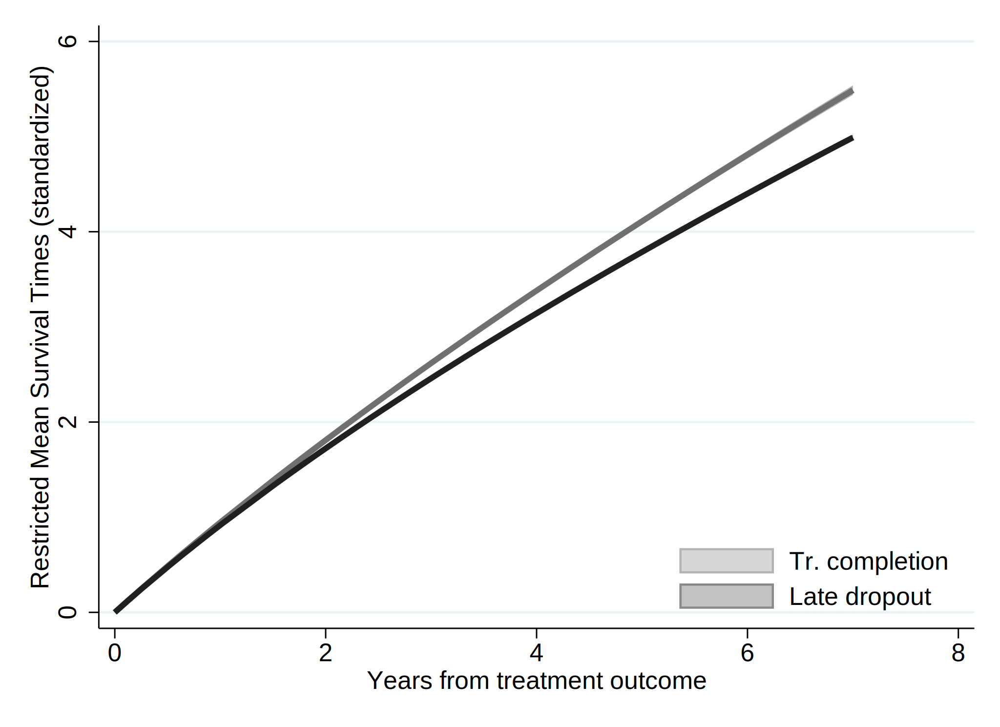
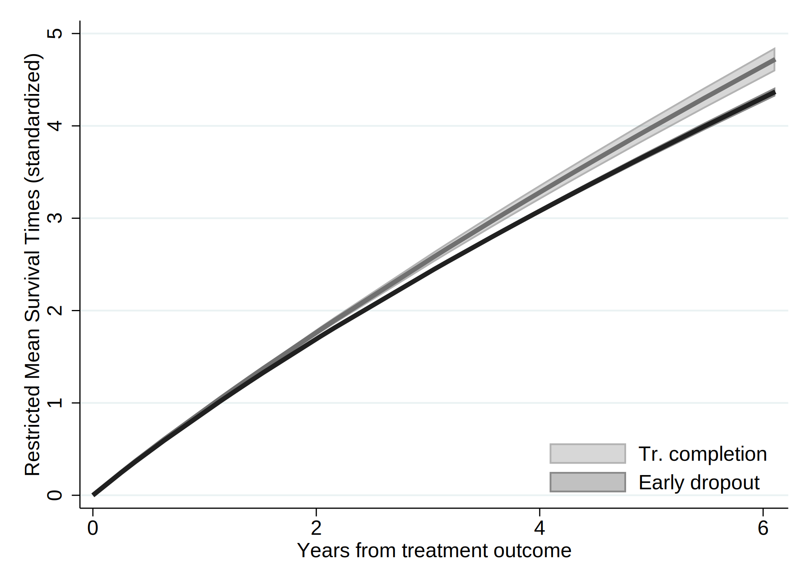
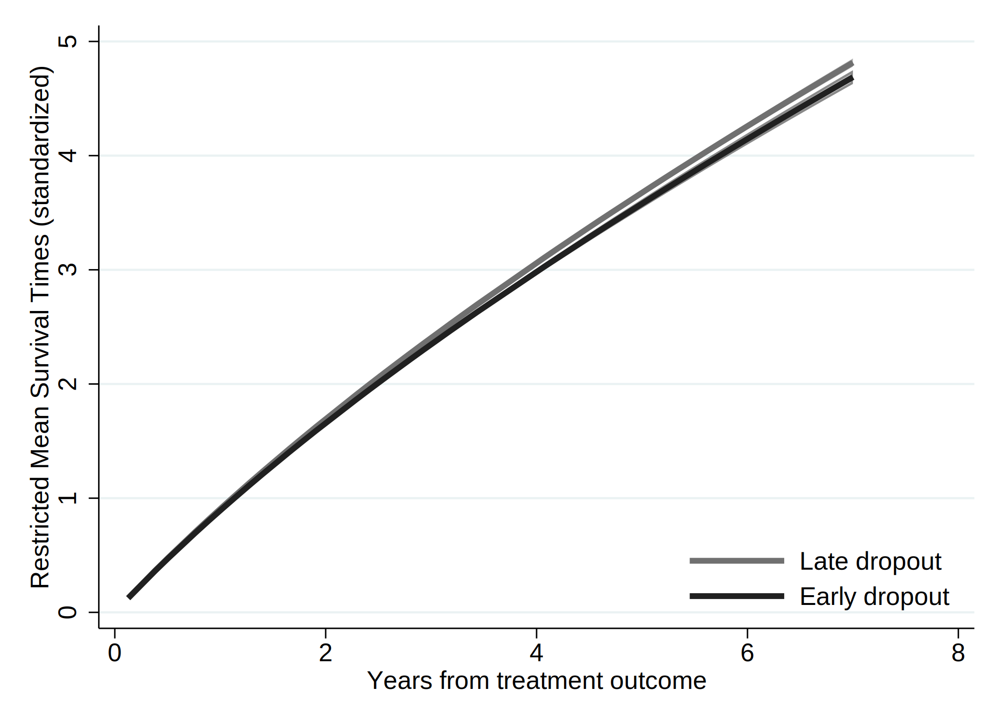
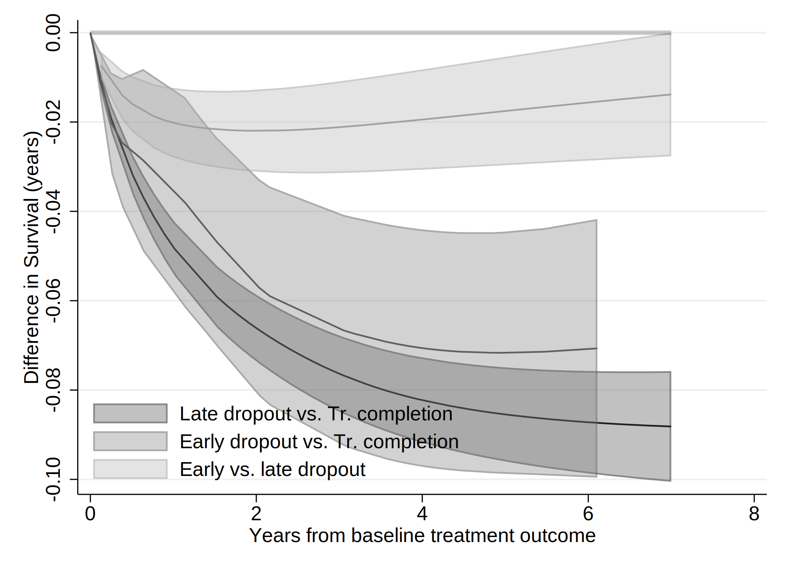
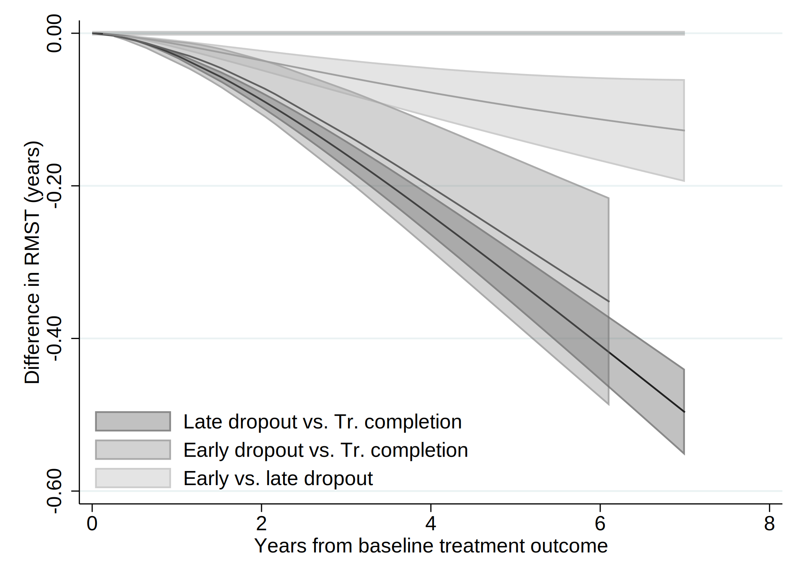

. clear all
. cap noi which tabout
c:\ado\plus\t\tabout.ado
*! 2.0.8 Ian Watson 15mar2019
*! tabout version 3 (beta) available at: http://tabout.net.au
. if _rc==111 {
. cap noi ssc install tabout
. }
. cap noi which pathutil
c:\ado\plus\p\pathutil.ado
*! version 2.2.0 19nov2020 daniel klein
. if _rc==111 {
. cap noi net install pathutil, from("http://fmwww.bc.edu/repec/bocode/p/")
. }
. cap noi which pathutil
c:\ado\plus\p\pathutil.ado
*! version 2.2.0 19nov2020 daniel klein
. if _rc==111 {
. ssc install dirtools
. }
. cap noi which project
c:\ado\plus\p\project.ado
*! version 1.3.1 22dec2013 picard@netbox.com
. if _rc==111 {
. ssc install project
. }
. cap noi which stipw
c:\ado\plus\s\stipw.ado
*! Version 1.0.0 17Jan2022
. if _rc==111 {
. ssc install stipw
. }
. cap noi which stpm2
c:\ado\plus\s\stpm2.ado
*! version 1.7.5 May2021
. if _rc==111 {
. ssc install stpm2
. }
. cap noi which rcsgen
c:\ado\plus\r\rcsgen.ado
*! version 1.5.9 13FEB2022
. if _rc==111 {
. ssc install rcsgen
. }
. cap noi which matselrc
c:\ado\plus\m\matselrc.ado
*! NJC 1.1.0 20 Apr 2000 (STB-56: dm79)
. if _rc==111 {
. cap noi net install dm79, from(http://www.stata.com/stb/stb56)
. }
. cap noi which stpm2_standsurv
c:\ado\plus\s\stpm2_standsurv.ado
*! version 1.1.2 12Jun2018
. if _rc==111 {
. cap noi net install stpm2_standsurv.pkg, from(http://fmwww.bc.edu/RePEc/bocode/s)
. }
. cap noi which fs
c:\ado\plus\f\fs.ado
*! NJC 1.0.5 23 November 2006
. if _rc==111 {
. ssc install fs
. }
. cap noi which mkspline2
c:\ado\plus\m\mkspline2.ado
*! version 1.0.0 MLB 04Apr2009
. if _rc==111 {
. ssc install postrcspline
. }
. cap noi which estwrite
c:\ado\plus\e\estwrite.ado
*! version 1.2.4 04sep2009
*! version 1.0.1 15may2007 (renamed from -eststo- to -estwrite-; -append- added)
*! version 1.0.0 29apr2005 Ben Jann (ETH Zurich)
. if _rc==111 {
. ssc install estwrite
. }
.
. cap noi ssc install moremata
checking moremata consistency and verifying not already installed...
the following files already exist and are different:
c:\ado\plus\l\lmoremata.mlib
c:\ado\plus\l\lmoremata10.mlib
c:\ado\plus\l\lmoremata11.mlib
c:\ado\plus\l\lmoremata14.mlib
c:\ado\plus\m\moremata.hlp
c:\ado\plus\m\moremata_source.hlp
c:\ado\plus\m\moremata11_source.hlp
c:\ado\plus\m\mf_mm_quantile.hlp
c:\ado\plus\m\mf_mm_ipolate.hlp
c:\ado\plus\m\mf_mm_collapse.hlp
c:\ado\plus\m\mf_mm_ebal.sthlp
c:\ado\plus\m\mf_mm_density.sthlp
c:\ado\plus\m\mf_mm_hl.hlp
c:\ado\plus\m\mf_mm_mloc.hlp
c:\ado\plus\m\mf_mm_ls.hlp
c:\ado\plus\m\mf_mm_qr.sthlp
no files installed or copied
(no action taken)
.
. cap noi which esttab
c:\ado\plus\e\esttab.ado
*! version 2.0.9 06feb2016 Ben Jann
*! wrapper for estout
. if _rc==111 {
. ssc install estout
. }
Date created: 00:44:29 8 Apr 2023.
Get the folder
E:\Mi unidad\Alvacast\SISTRAT 2022 (github)
Fecha: 8 Apr 2023, considerando un SO Windows para el usuario: andre
Path data= ;
Tiempo: 8 Apr 2023, considerando un SO Windows
The file is located and named as: E:\Mi unidad\Alvacast\SISTRAT 2022 (github)fiscalia_mariel_feb_2023_match_SENDA_miss.dta
=============================================================================
=============================================================================
We open the files
. use "fiscalia_mariel_feb_2023_match_SENDA_miss.dta", clear
.
. *b) select 10% of the data
. /*
> set seed 2125
> sample 10
> */
.
.
. fs mariel_ags_*.do
mariel_ags_b.do mariel_ags_b_m2.do mariel_ags_b_m1.do mariel_ags_b_m3.do
. di "`r(dofile)'"
.
. *tostring tr_modality, gen(tr_modality_str)
.
. cap noi encode tr_modality_str, gen(newtr_modality)
variable tr_modality_str not found
. cap confirm variable newtr_modality
. if !_rc {
. cap noi drop tr_modality
. cap noi rename newtr_modality tr_modality
. }
.
. cap noi encode condicion_ocupacional_cor, gen(newcondicion_ocupacional_cor)
not possible with numeric variable
. cap confirm variable newcondicion_ocupacional_cor
. if !_rc {
. cap noi drop condicion_ocupacional_cor
. cap noi rename newcondicion_ocupacional_cor condicion_ocupacional_cor
. }
.
. cap noi encode tipo_centro, gen(newtipo_centro)
variable tipo_centro not found
. cap confirm variable newtipo_centro
. if !_rc {
. cap noi drop tipo_centro
. cap noi rename newtipo_centro tipo_centro
. }
.
. cap noi encode sus_ini_mod_mvv, gen(newsus_ini_mod_mvv)
. cap confirm variable newsus_ini_mod_mvv
. if !_rc {
. cap noi drop sus_ini_mod_mvv
. cap noi rename newsus_ini_mod_mvv sus_ini_mod_mvv
. }
.
. cap noi encode dg_trs_cons_sus_or, gen(newdg_trs_cons_sus_or)
. cap confirm variable newdg_trs_cons_sus_or
. if !_rc {
. cap noi drop dg_trs_cons_sus_or
. cap noi rename newdg_trs_cons_sus_or dg_trs_cons_sus_or
. }
.
. cap noi encode con_quien_vive_joel, gen(newcon_quien_vive_joel)
. cap confirm variable newcon_quien_vive_joel
. if !_rc {
. cap noi drop con_quien_vive_joel
. cap noi rename newcon_quien_vive_joel con_quien_vive_joel
. }
.
.
. *order and encode
. cap noi decode freq_cons_sus_prin, gen(str_freq_cons_sus_prin)
. cap confirm variable str_freq_cons_sus_prin
. if !_rc {
. cap noi drop freq_cons_sus_prin
. label def freq_cons_sus_prin2 1 "Less than 1 day a week" 2 "1 day a week or more" 3 "2 to 3 days a week" 4 "4 to 6 days a week" 5 "Daily"
. encode str_freq_cons_sus_prin, gen(freq_cons_sus_prin) label (freq_cons_sus_prin2)
. }
. cap noi decode dg_trs_cons_sus_or, gen(str_dg_trs_cons_sus_or)
. cap confirm variable str_dg_trs_cons_sus_or
. if !_rc {
. cap noi drop dg_trs_cons_sus_or
. cap label def dg_trs_cons_sus_or2 1 "Hazardous consumption" 2 "Drug dependence"
. encode str_dg_trs_cons_sus_or, gen(dg_trs_cons_sus_or) label (dg_trs_cons_sus_or2)
. }
.
.
. cap noi encode escolaridad_rec, gen(esc_rec)
not possible with numeric variable
. cap noi encode sex, generate(sex_enc)
. cap noi encode sus_principal_mod, gen(sus_prin_mod)
not possible with numeric variable
. cap noi encode freq_cons_sus_prin, gen(fr_sus_prin)
not possible with numeric variable
. cap noi encode compromiso_biopsicosocial, gen(comp_biosoc)
variable compromiso_biopsicosocial not found
. cap noi encode tenencia_de_la_vivienda_mod, gen(ten_viv)
not possible with numeric variable
. *encode dg_cie_10_rec, generate(dg_cie_10_mental_h) *already numeric
. cap noi encode dg_trs_cons_sus_or, gen(sud_severity_icd10)
not possible with numeric variable
. cap noi encode macrozona, gen(macrozone)
not possible with numeric variable
.
. /*
> *2023-02-28, not done in R
> cap noi recode numero_de_hijos_mod (0=0 "No children") (1/10=1 "Children"), gen(newnumero_de_hijos_mod)
> cap confirm variable newnumero_de_hijos_mod
> if !_rc {
> drop numero_de_hijos_mod
> cap noi rename newnumero_de_hijos_mod numero_de_hijos_mod
> }
> */
. mkspline2 rc_x = edad_al_ing_1, cubic nknots(4) displayknots
| knot1 knot2 knot3 knot4
-------------+--------------------------------------------
edad_al_in~1 | 21.18685 29.99178 38.92615 56.32477
.
. *not necessary: 2023-02-28
. *gen motivodeegreso_mod_imp_rec3 = 1
. *replace motivodeegreso_mod_imp_rec3 = 2 if strpos(motivodeegreso_mod_imp_rec,"Early")>0
. *replace motivodeegreso_mod_imp_rec3 = 3 if strpos(motivodeegreso_mod_imp_rec,"Late")>0
.
. *encode policonsumo, generate(policon) *already numeric
. // Generate a restricted cubic spline variable for a variable "x" with 4 knots
. *https://chat.openai.com/chat/4a9396cd-2caa-4a2e-b5f4-ed2c2d0779b3
. *https://www.stata.com/meeting/nordic-and-baltic15/abstracts/materials/sweden15_oskarsson.pdf
. *mkspline xspline = edad_al_ing_1, cubic nknots(4)
. *gen rcs_x = xspline1*xspline2 xspline3 xspline4
.
. *https://www.statalist.org/forums/forum/general-stata-discussion/general/1638622-comparing-cox-proportional-hazard-linear-and-non-linear-restricted-cubic-spline-models-using-likelihood-ratio-test
.
=============================================================================
=============================================================================
Reset-time
. *if missing offender_d (status) , means that there was a record and the time is the time of offense
.
. *set the indicator
. gen event=0
. replace event=1 if !missing(offender_d)
(22,287 real changes made)
. *replace event=1 if !missing(sex)
.
. *correct time to event if _st=0
. gen diff= age_offending_imp-edad_al_egres_imp
. gen diffc= cond(diff<0.001, 0.001, diff)
. drop diff
. rename diffc diff
. lab var diff "Time to offense leading to condemnatory sentence"
.
. *age time
. *stset age_offending_imp, fail(event ==1) enter(edad_al_egres_imp)
. *reset time
. stset diff, failure(event ==1)
failure event: event == 1
obs. time interval: (0, diff]
exit on or before: failure
------------------------------------------------------------------------------
70,863 total observations
0 exclusions
------------------------------------------------------------------------------
70,863 observations remaining, representing
22,287 failures in single-record/single-failure data
229,620.93 total analysis time at risk and under observation
at risk from t = 0
earliest observed entry t = 0
last observed exit t = 10.75828
.
. stdescribe, weight
failure _d: event == 1
analysis time _t: diff
|-------------- per subject --------------|
Category total mean min median max
------------------------------------------------------------------------------
no. of subjects 70863
no. of records 70863 1 1 1 1
(first) entry time 0 0 0 0
(final) exit time 3.24035 .001 2.665753 10.75828
subjects with gap 0
time on gap if gap 0
time at risk 229620.93 3.24035 .001 2.665753 10.75828
failures 22287 .3145083 0 0 1
------------------------------------------------------------------------------
We calculate the incidence rate.
. stsum, by (motivodeegreso_mod_imp_rec)
failure _d: event == 1
analysis time _t: diff
| Incidence Number of |------ Survival time -----|
motivo~c | Time at risk rate subjects 25% 50% 75%
---------+---------------------------------------------------------------------
Treatmen | 63,982.0408 .0597824 19277 4.744892 . .
Treatmen | 46,815.0931 .1309407 15797 1.465064 6.881935 .
Treatmen | 118,823.8 .1037839 35789 2.048496 . .
---------+---------------------------------------------------------------------
Total | 229,620.934 .09706 70863 2.297946 . .
. *Micki Hill & Paul C Lambert & Michael J Crowther, 2021. "Introducing stipw: inverse probability weighted parametric survival models," London Stata Conference 2021 15, Stata Users Group.
. *https://view.officeapps.live.com/op/view.aspx?src=http%3A%2F%2Ffmwww.bc.edu%2Frepec%2Fusug2021%2Fusug21_hill.pptx&wdOrigin=BROWSELINK
.
. *Treatment variable should be a binary variable with values 0 and 1.
. gen motivodeegreso_mod_imp_rec2 = 0
. replace motivodeegreso_mod_imp_rec2 = 1 if motivodeegreso_mod_imp_rec==2
(15,797 real changes made)
. replace motivodeegreso_mod_imp_rec2 = 1 if motivodeegreso_mod_imp_rec==3
(35,789 real changes made)
.
. recode motivodeegreso_mod_imp_rec2 (0=1 "Tr Completion") (1=0 "Tr Non-completion (Late & Early)"), gen(caus_disch_mod_imp_rec)
(70863 differences between motivodeegreso_mod_imp_rec2 and caus_disch_mod_imp_rec)
.
. cap noi gen motegr_dum3= motivodeegreso_mod_imp_rec2
. replace motegr_dum3 = 0 if motivodeegreso_mod_imp_rec==2
(15,797 real changes made)
. cap noi gen motegr_dum2= motivodeegreso_mod_imp_rec2
. replace motegr_dum2 = 0 if motivodeegreso_mod_imp_rec==3
(35,789 real changes made)
. lab var motegr_dum3 "Baseline treatment outcome(dich, 1= Late Dropout)"
. lab var motegr_dum2 "Baseline treatment outcome(dich, 1= Early Dropout)"
. lab var caus_disch_mod_imp_rec "Baseline treatment outcome(dich)"
.
.
. *Factor variables not allowed for tvc() option. Create your own dummy varibles.
. gen motivodeegreso_mod_imp_rec_earl = 1
. replace motivodeegreso_mod_imp_rec_earl = 0 if motivodeegreso_mod_imp_rec==1
(19,277 real changes made)
. replace motivodeegreso_mod_imp_rec_earl = 0 if motivodeegreso_mod_imp_rec==3
(35,789 real changes made)
.
. gen motivodeegreso_mod_imp_rec_late = 1
. replace motivodeegreso_mod_imp_rec_late = 0 if motivodeegreso_mod_imp_rec==1
(19,277 real changes made)
. replace motivodeegreso_mod_imp_rec_late = 0 if motivodeegreso_mod_imp_rec==2
(15,797 real changes made)
.
. *recode motivodeegreso_mod_imp_rec_earl (1=1 "Early dropout") (0=0 "Tr. comp & Late dropout"), gen(newmotivodeegreso_mod_imp_rec_e)
. *recode motivodeegreso_mod_imp_rec_late (1=1 "Late dropout") (0=0 "Tr. comp & Early dropout"), gen(newmotivodeegreso_mod_imp_rec_l)
.
. lab var motivodeegreso_mod_imp_rec_earl "Baseline treatment outcome- Early dropout(dich)"
. lab var motivodeegreso_mod_imp_rec_late "Baseline treatment outcome- Late dropout(dich)"
.
. cap noi rename motivodeegreso_mod_imp_rec_late mot_egr_late
. cap noi rename motivodeegreso_mod_imp_rec_earl mot_egr_early
=============================================================================
=============================================================================
We generated a graph with every type of treatment and the Nelson-Aalen estimate.
. sts graph, na by (motivodeegreso_mod_imp_rec) ci ///
> title("Comission of an offense (cond. sentence)") ///
> subtitle("Nelson-Aalen Cum Hazards w/ Confidence Intervals 95%") ///
> risktable(, size(*.5) order(1 "Tr Completion" 2 "Early Disch" 3 "Late Disch")) ///
> ytitle("Cum. Hazards") ylabel(#8) ///
> xtitle("Years since tr. outcome") xlabel(#8) ///
> note("Source: nDP, SENDA's SUD Treatments & POs Office Data period 2010-2019 ") ///
> legend(rows(3)) ///
> legend(cols(4)) ///
> graphregion(color(white) lwidth(large)) bgcolor(white) ///
> plotregion(fcolor(white)) graphregion(fcolor(white) ) /// //text(.5 1 "IR = <0.001") ///
> legend(order(1 "95CI Tr Completion" 2 "Tr Completion" 3 "95CI Early Tr Disch" 4 "Early Tr Disch " 5 "95CI Late Tr Disch" 6 "Late Tr Disch" )size(*.5)region(lstyle(none)) region(c(none)) nobox)
failure _d: event == 1
analysis time _t: diff
(note: named style large not found in class linewidth, default attributes used)
(note: linewidth not found in scheme, default attributes used)
(note: named style large not found in class linewidth, default attributes used)
(note: linewidth not found in scheme, default attributes used)
. graph save "`c(pwd)'\_figs\tto_2023_m1.gph", replace
(file E:\Mi unidad\Alvacast\SISTRAT 2022 (github)\_figs\tto_2023_m1.gph saved)
=============================================================================
=============================================================================
. /*
> vars_cov<-c("motivodeegreso_mod_imp_rec", "tr_modality", "edad_al_ing_1", "sex", "edad_ini_cons", "escolaridad_rec", "sus_principal_mod", "freq_cons_sus_prin", "condicion_ocupacional_corr", "policonsumo", "num_hij
> os_mod_joel_bin", "tenencia_de_la_vivienda_mod", "macrozona", "n_off_vio", "n_off_acq", "n_off_sud", "n_off_oth", "dg_cie_10_rec", "dg_trs_cons_sus_or", "clas_r", "porc_pobr", "sus_ini_mod_mvv", "ano_nac_corr", "
> con_quien_vive_joel", "fis_comorbidity_icd_10")
> */
.
. global covs "i.motivodeegreso_mod_imp_rec i.tr_modality i.sex_enc edad_ini_cons i.escolaridad_rec i.sus_principal_mod i.freq_cons_sus_prin i.condicion_ocupacional_cor i.policonsumo i.num_hijos_mod_joel_bin i.tenen
> cia_de_la_vivienda_mod i.macrozona i.n_off_vio i.n_off_acq i.n_off_sud i.n_off_oth i.dg_cie_10_rec i.dg_trs_cons_sus_or i.clas_r porc_pobr i.sus_ini_mod_mvv ano_nac_corr i.con_quien_vive_joel i.fis_comorbidity_icd
> _10"
.
.
. // VERIFY FIRST SPLINE VARIABLE IS THE ORIGINAL VARIABLE
. assert float(edad_al_ing_1) == float(rc_x1)
.
. // MODEL WITH FULL SPLINE
. qui noi stcox $covs rc*
failure _d: event == 1
analysis time _t: diff
Iteration 0: log likelihood = -238313.62
Iteration 1: log likelihood = -232711.16
Iteration 2: log likelihood = -232279.06
Iteration 3: log likelihood = -232275.31
Iteration 4: log likelihood = -232275.31
Iteration 5: log likelihood = -232275.31
Refining estimates:
Iteration 0: log likelihood = -232275.31
Cox regression -- Breslow method for ties
No. of subjects = 70,863 Number of obs = 70,863
No. of failures = 22,287
Time at risk = 229620.934
LR chi2(51) = 12076.62
Log likelihood = -232275.31 Prob > chi2 = 0.0000
-------------------------------------------------------------------------------------------------------------
_t | Haz. Ratio Std. Err. z P>|z| [95% Conf. Interval]
--------------------------------------------+----------------------------------------------------------------
motivodeegreso_mod_imp_rec |
Treatment non-completion (Early) | 1.655883 .039805 20.98 0.000 1.579677 1.735767
Treatment non-completion (Late) | 1.529791 .0292183 22.26 0.000 1.473582 1.588143
|
tr_modality |
Residential | 1.21867 .0230183 10.47 0.000 1.17438 1.264631
|
sex_enc |
Women | .7348976 .0141631 -15.98 0.000 .7076562 .7631876
edad_ini_cons | .9880543 .0016927 -7.01 0.000 .9847421 .9913776
|
escolaridad_rec |
2-Completed high school or less | .9559468 .0148344 -2.90 0.004 .9273096 .9854684
1-More than high school | .8640193 .0202175 -6.25 0.000 .8252887 .9045675
|
sus_principal_mod |
Cocaine hydrochloride | 1.073264 .0265055 2.86 0.004 1.022552 1.126492
Cocaine paste | 1.409916 .029274 16.55 0.000 1.353692 1.468476
Marijuana | 1.041415 .0321485 1.31 0.189 .9802733 1.10637
Other | 1.019129 .0650842 0.30 0.767 .8992267 1.155019
|
freq_cons_sus_prin |
1 day a week or more | .9357329 .0407576 -1.53 0.127 .8591644 1.019125
2 to 3 days a week | 1.009015 .0356427 0.25 0.799 .9415198 1.081348
4 to 6 days a week | 1.033092 .0382751 0.88 0.380 .9607334 1.110901
Daily | 1.067478 .0376957 1.85 0.064 .9960945 1.143977
|
condicion_ocupacional_corr |
Inactive | 1.031229 .0286612 1.11 0.269 .9765566 1.088962
Looking for a job for the first time | .9633265 .1252585 -0.29 0.774 .7466108 1.242947
No activity | 1.119022 .0368686 3.41 0.001 1.049044 1.193667
Not seeking for work | 1.2569 .070466 4.08 0.000 1.126107 1.402885
Unemployed | 1.161097 .019051 9.10 0.000 1.124351 1.199043
|
1.policonsumo | 1.033926 .0201998 1.71 0.088 .995083 1.074284
1.num_hijos_mod_joel_bin | 1.156908 .019965 8.45 0.000 1.118432 1.196708
|
tenencia_de_la_vivienda_mod |
Others | 1.003292 .0691751 0.05 0.962 .876473 1.148461
Owner/Transferred dwellings/Pays Dividends | .921247 .0552998 -1.37 0.172 .8189943 1.036266
Renting | .9703774 .0585935 -0.50 0.618 .8620715 1.09229
Stays temporarily with a relative | .930933 .0559943 -1.19 0.234 .8274082 1.047411
|
macrozona |
North | 1.287272 .0240729 13.50 0.000 1.240944 1.33533
South | 1.428516 .0375505 13.57 0.000 1.356782 1.504043
|
n_off_vio |
1 | 1.355863 .0239753 17.22 0.000 1.309677 1.403678
|
n_off_acq |
1 | 1.811769 .0297226 36.23 0.000 1.754441 1.870971
|
n_off_sud |
1 | 1.248554 .0214324 12.93 0.000 1.207246 1.291275
|
n_off_oth |
1 | 1.353493 .0236998 17.29 0.000 1.307831 1.40075
|
dg_cie_10_rec |
Diagnosis unknown (under study) | 1.059836 .022446 2.74 0.006 1.016744 1.104756
With psychiatric comorbidity | 1.043802 .0165023 2.71 0.007 1.011954 1.076653
|
dg_trs_cons_sus_or |
Drug dependence | 1.014824 .0174117 0.86 0.391 .9812647 1.04953
|
clas_r |
Mixta | 1.023639 .0262677 0.91 0.363 .9734289 1.07644
Rural | 1.043959 .0294706 1.52 0.128 .9877667 1.103348
|
porc_pobr | 1.283501 .1334396 2.40 0.016 1.046889 1.57359
|
sus_ini_mod_mvv |
Cocaine hydrochloride | 1.052733 .0313892 1.72 0.085 .9929749 1.116088
Cocaine paste | 1.142787 .0345862 4.41 0.000 1.07697 1.212625
Marijuana | 1.087377 .0174976 5.21 0.000 1.053618 1.122219
Other | 1.141381 .0524787 2.88 0.004 1.043023 1.249014
|
ano_nac_corr | .8799075 .0031776 -35.43 0.000 .8737014 .8861576
|
con_quien_vive_joel |
Family of origin | .9377092 .0252326 -2.39 0.017 .8895356 .9884916
Others | .9803795 .0319435 -0.61 0.543 .9197287 1.04503
With couple/children | .9252835 .0243842 -2.95 0.003 .8787046 .9743315
|
fis_comorbidity_icd_10 |
Diagnosis unknown (under study) | 1.024754 .0148713 1.68 0.092 .9960176 1.05432
One or more | .8870537 .0293497 -3.62 0.000 .8313548 .9464844
|
rc_x1 | .8604897 .0041763 -30.96 0.000 .8523431 .8687143
rc_x2 | 1.007821 .0162149 0.48 0.628 .9765359 1.040108
rc_x3 | .939802 .0386818 -1.51 0.131 .8669645 1.018759
-------------------------------------------------------------------------------------------------------------
. estat ic
Akaike's information criterion and Bayesian information criterion
-----------------------------------------------------------------------------
Model | N ll(null) ll(model) df AIC BIC
-------------+---------------------------------------------------------------
. | 70,863 -238313.6 -232275.3 51 464652.6 465120.2
-----------------------------------------------------------------------------
Note: BIC uses N = number of observations. See [R] BIC note.
. estimates store full_spline
. scalar ll_1= e(ll)
. // MODEL WITH ONLY LINEAR TERM
. qui noi stcox $covs rc_x1
failure _d: event == 1
analysis time _t: diff
Iteration 0: log likelihood = -238313.62
Iteration 1: log likelihood = -232646.73
Iteration 2: log likelihood = -232298.07
Iteration 3: log likelihood = -232297.54
Iteration 4: log likelihood = -232297.54
Refining estimates:
Iteration 0: log likelihood = -232297.54
Cox regression -- Breslow method for ties
No. of subjects = 70,863 Number of obs = 70,863
No. of failures = 22,287
Time at risk = 229620.934
LR chi2(49) = 12032.14
Log likelihood = -232297.54 Prob > chi2 = 0.0000
-------------------------------------------------------------------------------------------------------------
_t | Haz. Ratio Std. Err. z P>|z| [95% Conf. Interval]
--------------------------------------------+----------------------------------------------------------------
motivodeegreso_mod_imp_rec |
Treatment non-completion (Early) | 1.656626 .0398303 20.99 0.000 1.580371 1.736561
Treatment non-completion (Late) | 1.531629 .0292573 22.32 0.000 1.475346 1.59006
|
tr_modality |
Residential | 1.218741 .0230098 10.48 0.000 1.174466 1.264684
|
sex_enc |
Women | .7350302 .0141522 -15.99 0.000 .7078093 .7632979
edad_ini_cons | .987942 .0016806 -7.13 0.000 .9846535 .9912414
|
escolaridad_rec |
2-Completed high school or less | .9609762 .0148703 -2.57 0.010 .9322684 .990568
1-More than high school | .8753251 .0203537 -5.73 0.000 .8363279 .9161407
|
sus_principal_mod |
Cocaine hydrochloride | 1.082723 .0267473 3.22 0.001 1.031548 1.136436
Cocaine paste | 1.425459 .0295412 17.11 0.000 1.368719 1.484551
Marijuana | 1.041217 .0321769 1.31 0.191 .9800229 1.106231
Other | 1.012512 .0647355 0.19 0.846 .8932608 1.147684
|
freq_cons_sus_prin |
1 day a week or more | .9357693 .0407595 -1.52 0.127 .8591972 1.019166
2 to 3 days a week | 1.008464 .0356227 0.24 0.811 .9410069 1.080757
4 to 6 days a week | 1.03219 .0382403 0.86 0.392 .959897 1.109928
Daily | 1.066626 .0376617 1.83 0.068 .9953067 1.143056
|
condicion_ocupacional_corr |
Inactive | 1.014797 .0280705 0.53 0.595 .9612444 1.071333
Looking for a job for the first time | .946944 .1230695 -0.42 0.675 .7340032 1.221661
No activity | 1.109138 .036484 3.15 0.002 1.039887 1.183001
Not seeking for work | 1.251217 .0701219 4.00 0.000 1.121059 1.396485
Unemployed | 1.156564 .018962 8.87 0.000 1.11999 1.194333
|
1.policonsumo | 1.043339 .0203804 2.17 0.030 1.004149 1.084059
1.num_hijos_mod_joel_bin | 1.170587 .02001 9.21 0.000 1.132018 1.210471
|
tenencia_de_la_vivienda_mod |
Others | 1.000686 .0689956 0.01 0.992 .8741964 1.145478
Owner/Transferred dwellings/Pays Dividends | .9156107 .0549499 -1.47 0.142 .8140038 1.029901
Renting | .9704034 .0585936 -0.50 0.619 .8620971 1.092316
Stays temporarily with a relative | .9292906 .0558908 -1.22 0.223 .8259567 1.045552
|
macrozona |
North | 1.285181 .0240172 13.43 0.000 1.23896 1.333127
South | 1.427545 .0375185 13.54 0.000 1.355872 1.503007
|
n_off_vio |
1 | 1.355007 .0239663 17.18 0.000 1.308839 1.402803
|
n_off_acq |
1 | 1.811016 .0297286 36.18 0.000 1.753677 1.870231
|
n_off_sud |
1 | 1.250947 .0214628 13.05 0.000 1.20958 1.293729
|
n_off_oth |
1 | 1.356277 .0237466 17.41 0.000 1.310524 1.403627
|
dg_cie_10_rec |
Diagnosis unknown (under study) | 1.061262 .0224733 2.81 0.005 1.018117 1.106236
With psychiatric comorbidity | 1.046187 .0165368 2.86 0.004 1.014273 1.079106
|
dg_trs_cons_sus_or |
Drug dependence | 1.014954 .0174064 0.87 0.387 .9814053 1.04965
|
clas_r |
Mixta | 1.022568 .0262365 0.87 0.384 .9724165 1.075305
Rural | 1.044743 .0294914 1.55 0.121 .9885111 1.104174
|
porc_pobr | 1.280457 .1330806 2.38 0.017 1.044475 1.569756
|
sus_ini_mod_mvv |
Cocaine hydrochloride | 1.056565 .031489 1.85 0.065 .9966154 1.12012
Cocaine paste | 1.147557 .0347135 4.55 0.000 1.081498 1.217652
Marijuana | 1.082964 .0174208 4.95 0.000 1.049352 1.117652
Other | 1.144457 .0526585 2.93 0.003 1.045765 1.252462
|
ano_nac_corr | .8795798 .0031762 -35.53 0.000 .8733766 .885827
|
con_quien_vive_joel |
Family of origin | .9371974 .0252371 -2.41 0.016 .8890162 .9879897
Others | .9812833 .0319784 -0.58 0.562 .9205665 1.046005
With couple/children | .9286135 .0244627 -2.81 0.005 .8818842 .9778189
|
fis_comorbidity_icd_10 |
Diagnosis unknown (under study) | 1.023528 .014852 1.60 0.109 .9948288 1.053056
One or more | .8806171 .0291348 -3.84 0.000 .8253259 .9396125
|
rc_x1 | .8556279 .0031497 -42.36 0.000 .8494769 .8618234
-------------------------------------------------------------------------------------------------------------
. estat ic
Akaike's information criterion and Bayesian information criterion
-----------------------------------------------------------------------------
Model | N ll(null) ll(model) df AIC BIC
-------------+---------------------------------------------------------------
. | 70,863 -238313.6 -232297.5 49 464693.1 465142.3
-----------------------------------------------------------------------------
Note: BIC uses N = number of observations. See [R] BIC note.
. scalar ll_2= e(ll)
. estimates store linear_term
.
. lrtest full_spline linear_term
Likelihood-ratio test LR chi2(2) = 44.48
(Assumption: linear_term nested in full_spline) Prob > chi2 = 0.0000
.
. scalar ll_diff= round(`=scalar(ll_1)'-`=scalar(ll_2)',.01)
. di "Log-likelihood difference (spline - linear): `=scalar(ll_diff)'"
Log-likelihood difference (spline - linear): 22.24
.
. * the presence of censored observations makes it difficult to decide further among them. (This is partly due to the fact that both the Cox model and the parametric survival models assume that censoring is orthogon
> al to survival time, a mathematically handy assumption that is often demonstrably and seriously in error, and the actual data generation process for survival is often too unknown or too messy to simulate.) So in t
> his context, reliance on LR tests or IC statistics is a fallback position.
Log-likelihood difference (spline - linear): 22.24
=============================================================================
=============================================================================
In view of nonproportional hazards, we explored different shapes of time-dependent effects and baseline hazards.
. *______________________________________________
. *______________________________________________
. * ADJUSTED ROYSTON PARMAR - NO STAGGERED ENTRY, BINARY TREATMENT (1-DROPOUT VS. 0-COMPLETION)
.
. /*
> vars_cov<-c("motivodeegreso_mod_imp_rec", "tr_modality", "edad_al_ing_1", "sex", "edad_ini_cons", "escolaridad_rec", "sus_principal_mod", "freq_cons_sus_prin", "condicion_ocupacional_corr", "policonsumo", "num_hij
> os_mod_joel_bin", "tenencia_de_la_vivienda_mod", "macrozona", "n_off_vio", "n_off_acq", "n_off_sud", "n_off_oth", "dg_cie_10_rec", "dg_trs_cons_sus_or", "clas_r", "porc_pobr", "sus_ini_mod_mvv", "ano_nac_corr", "
> con_quien_vive_joel", "fis_comorbidity_icd_10")
> */
.
. cap noi tab tr_modality, gen(tr_mod)
Treatment |
Modality | Freq. Percent Cum.
------------+-----------------------------------
Ambulatory | 60,462 85.32 85.32
Residential | 10,401 14.68 100.00
------------+-----------------------------------
Total | 70,863 100.00
. cap noi tab sex_enc, gen(sex_dum)
Sex | Freq. Percent Cum.
------------+-----------------------------------
Men | 54,048 76.27 76.27
Women | 16,815 23.73 100.00
------------+-----------------------------------
Total | 70,863 100.00
. cap noi tab escolaridad_rec, gen(esc)
Educational Attainment | Freq. Percent Cum.
-----------------------------------+-----------------------------------
3-Completed primary school or less | 20,338 28.70 28.70
2-Completed high school or less | 39,170 55.28 83.98
1-More than high school | 11,355 16.02 100.00
-----------------------------------+-----------------------------------
Total | 70,863 100.00
. cap noi tab sus_principal_mod, gen(sus_prin)
Primary Substance |
(admission to |
treatment) | Freq. Percent Cum.
----------------------+-----------------------------------
Alcohol | 23,864 33.68 33.68
Cocaine hydrochloride | 13,243 18.69 52.36
Cocaine paste | 27,791 39.22 91.58
Marijuana | 4,748 6.70 98.28
Other | 1,217 1.72 100.00
----------------------+-----------------------------------
Total | 70,863 100.00
. cap noi tab freq_cons_sus_prin, gen(fr_cons_sus_prin)
Frequency of Substance |
Use (Primary |
Substance) | Freq. Percent Cum.
-----------------------+-----------------------------------
Less than 1 day a week | 3,496 4.93 4.93
1 day a week or more | 4,831 6.82 11.75
2 to 3 days a week | 20,197 28.50 40.25
4 to 6 days a week | 11,667 16.46 56.72
Daily | 30,672 43.28 100.00
-----------------------+-----------------------------------
Total | 70,863 100.00
. cap noi tab condicion_ocupacional_cor, gen(cond_ocu)
Corrected Occupational Status (f) | Freq. Percent Cum.
-------------------------------------+-----------------------------------
Employed | 35,368 49.91 49.91
Inactive | 7,169 10.12 60.03
Looking for a job for the first time | 159 0.22 60.25
No activity | 3,558 5.02 65.27
Not seeking for work | 713 1.01 66.28
Unemployed | 23,896 33.72 100.00
-------------------------------------+-----------------------------------
Total | 70,863 100.00
. cap noi tab num_hijos_mod_joel_bin, gen(num_hij)
Number of |
Children |
(dichotomiz |
ed) | Freq. Percent Cum.
------------+-----------------------------------
0 | 16,538 23.34 23.34
1 | 54,325 76.66 100.00
------------+-----------------------------------
Total | 70,863 100.00
. cap noi tab tenencia_de_la_vivienda_mod, gen(tenviv)
Housing Situation (Tenure Status) | Freq. Percent Cum.
----------------------------------------+-----------------------------------
Illegal Settlement | 775 1.09 1.09
Others | 2,031 2.87 3.96
Owner/Transferred dwellings/Pays Divide | 26,522 37.43 41.39
Renting | 13,652 19.27 60.65
Stays temporarily with a relative | 27,883 39.35 100.00
----------------------------------------+-----------------------------------
Total | 70,863 100.00
. cap noi tab macrozona, gen(mzone)
Macro |
Administrat |
ive Zone in |
Chile | Freq. Percent Cum.
------------+-----------------------------------
Center | 53,698 75.78 75.78
North | 10,486 14.80 90.57
South | 6,679 9.43 100.00
------------+-----------------------------------
Total | 70,863 100.00
. cap noi tab clas_r, gen(rural)
Socioeconom |
ic |
Classificat |
ion | Freq. Percent Cum.
------------+-----------------------------------
Urbana | 58,278 82.24 82.24
Mixta | 6,835 9.65 91.89
Rural | 5,750 8.11 100.00
------------+-----------------------------------
Total | 70,863 100.00
. cap noi tab sus_ini_mod_mvv, gen(susini)
sus_ini_mod_mvv | Freq. Percent Cum.
----------------------+-----------------------------------
Alcohol | 42,210 59.57 59.57
Cocaine hydrochloride | 4,015 5.67 65.23
Cocaine paste | 3,315 4.68 69.91
Marijuana | 19,670 27.76 97.67
Other | 1,653 2.33 100.00
----------------------+-----------------------------------
Total | 70,863 100.00
. cap noi tab con_quien_vive_joel, gen(cohab)
con_quien_vive_joel | Freq. Percent Cum.
---------------------+-----------------------------------
Alone | 6,689 9.44 9.44
Family of origin | 29,340 41.40 50.84
Others | 6,109 8.62 59.46
With couple/children | 28,725 40.54 100.00
---------------------+-----------------------------------
Total | 70,863 100.00
. cap noi tab fis_comorbidity_icd_10, gen(fis_com)
Physical Comorbidity (ICD-10) | Freq. Percent Cum.
--------------------------------+-----------------------------------
Without physical comorbidity | 28,053 39.59 39.59
Diagnosis unknown (under study) | 38,395 54.18 93.77
One or more | 4,415 6.23 100.00
--------------------------------+-----------------------------------
Total | 70,863 100.00
. cap noi tab dg_cie_10_rec, gen(psy_com)
Psychiatric Comorbidity |
(ICD-10) | Freq. Percent Cum.
--------------------------------+-----------------------------------
Without psychiatric comorbidity | 27,922 39.40 39.40
Diagnosis unknown (under study) | 13,273 18.73 58.13
With psychiatric comorbidity | 29,668 41.87 100.00
--------------------------------+-----------------------------------
Total | 70,863 100.00
. cap noi tab dg_trs_cons_sus_or, gen(dep)
dg_trs_cons_sus_or | Freq. Percent Cum.
----------------------+-----------------------------------
Hazardous consumption | 19,697 27.80 27.80
Drug dependence | 51,166 72.20 100.00
----------------------+-----------------------------------
Total | 70,863 100.00
.
. /*
> *NO LONGER USEFUL
> local varslab "dg_fis_anemia dg_fis_card dg_fis_in_study dg_fis_enf_som dg_fis_ets dg_fis_hep_alc dg_fis_hep_b dg_fis_hep_cro dg_fis_inf dg_fis_otr_cond_fis_ries_vit dg_fis_otr_cond_fis dg_fis_pat_buc dg_fis_pat_g
> es_intrau dg_fis_trau_sec"
> forvalues i = 1/14 {
> local v : word `i' of `varslab'
> di "`v'"
> gen `v'2= 0
> replace `v'2 =1 if `v'==2
> }
> */
.
. global covs_3b "mot_egr_early mot_egr_late i.tr_modality i.sex_enc edad_ini_cons i.escolaridad_rec i.sus_principal_mod i.freq_cons_sus_prin i.condicion_ocupacional_cor i.policonsumo i.num_hijos_mod_joel_bin i.tene
> ncia_de_la_vivienda_mod i.macrozona i.n_off_vio i.n_off_acq i.n_off_sud i.n_off_oth i.dg_cie_10_rec i.dg_trs_cons_sus_or i.clas_r porc_pobr i.sus_ini_mod_mvv ano_nac_corr i.con_quien_vive_joel i.fis_comorbidity_ic
> d_10 rc_x1 rc_x2 rc_x3"
.
. *REALLY NEEDS DUMMY VARS
. global covs_3b_pre_dum "mot_egr_early mot_egr_late tr_mod2 sex_dum2 edad_ini_cons esc1 esc2 sus_prin2 sus_prin3 sus_prin4 sus_prin5 fr_cons_sus_prin2 fr_cons_sus_prin3 fr_cons_sus_prin4 fr_cons_sus_prin5 cond_ocu2
> cond_ocu3 cond_ocu4 cond_ocu5 cond_ocu6 policonsumo num_hij2 tenviv1 tenviv2 tenviv4 tenviv5 mzone2 mzone3 n_off_vio n_off_acq n_off_sud n_off_oth psy_com2 psy_com3 dep2 rural2 rural3 porc_pobr susini2 susini3 su
> sini4 susini5 ano_nac_corr cohab2 cohab3 cohab4 fis_com2 fis_com3 rc_x1 rc_x2 rc_x3"
.
. forvalues i=1/10 {
2. forvalues j=1/7 {
3. qui noi stpm2 $covs_3b_pre_dum , scale(hazard) df(`i') eform tvc(mot_egr_early mot_egr_late) dftvc(`j')
4. estimates store m_nostag_rp`i'_tvc_`j'
5. }
6. }
Iteration 0: log likelihood = -68797.507
Iteration 1: log likelihood = -68126.37
Iteration 2: log likelihood = -68117.111
Iteration 3: log likelihood = -68117.107
Log likelihood = -68117.107 Number of obs = 70,863
---------------------------------------------------------------------------------------
| exp(b) Std. Err. z P>|z| [95% Conf. Interval]
----------------------+----------------------------------------------------------------
xb |
mot_egr_early | 1.698358 .0434909 20.68 0.000 1.615221 1.785773
mot_egr_late | 1.568672 .0328844 21.48 0.000 1.505526 1.634466
tr_mod2 | 1.221429 .0230669 10.59 0.000 1.177045 1.267487
sex_dum2 | .7289864 .0140508 -16.40 0.000 .701961 .7570522
edad_ini_cons | .9879362 .0016916 -7.09 0.000 .9846264 .9912572
esc1 | 1.164387 .0272489 6.50 0.000 1.112186 1.219037
esc2 | 1.110214 .0235145 4.94 0.000 1.06507 1.157271
sus_prin2 | 1.069341 .0263908 2.72 0.007 1.018847 1.122337
sus_prin3 | 1.414138 .029332 16.71 0.000 1.357801 1.472812
sus_prin4 | 1.035043 .0319379 1.12 0.264 .9743014 1.099572
sus_prin5 | 1.005843 .0642359 0.09 0.927 .8875033 1.139962
fr_cons_sus_prin2 | .9354624 .0407467 -1.53 0.126 .8589143 1.018833
fr_cons_sus_prin3 | 1.008473 .0356247 0.24 0.811 .9410124 1.08077
fr_cons_sus_prin4 | 1.033046 .0382752 0.88 0.380 .9606872 1.110855
fr_cons_sus_prin5 | 1.067593 .0377032 1.85 0.064 .9961954 1.144107
cond_ocu2 | 1.031611 .0286757 1.12 0.263 .9769114 1.089374
cond_ocu3 | .9397523 .1222044 -0.48 0.633 .728323 1.212559
cond_ocu4 | 1.122181 .0369844 3.50 0.000 1.051985 1.197062
cond_ocu5 | 1.265666 .0709397 4.20 0.000 1.133991 1.41263
cond_ocu6 | 1.16494 .0191142 9.30 0.000 1.128073 1.203012
policonsumo | 1.028491 .0200796 1.44 0.150 .989879 1.068609
num_hij2 | 1.162266 .0200579 8.71 0.000 1.12361 1.202251
tenviv1 | 1.083405 .065017 1.33 0.182 .9631832 1.218633
tenviv2 | 1.086063 .041807 2.14 0.032 1.007137 1.171173
tenviv4 | 1.051985 .0207506 2.57 0.010 1.012091 1.093452
tenviv5 | 1.00875 .0162443 0.54 0.589 .9774085 1.041096
mzone2 | 1.292238 .0241598 13.71 0.000 1.245743 1.340469
mzone3 | 1.43898 .0378031 13.85 0.000 1.366762 1.515013
n_off_vio | 1.360087 .024088 17.37 0.000 1.313685 1.408128
n_off_acq | 1.820965 .0299517 36.44 0.000 1.763197 1.880626
n_off_sud | 1.252468 .0215263 13.10 0.000 1.21098 1.295377
n_off_oth | 1.359071 .0238476 17.48 0.000 1.313125 1.406625
psy_com2 | 1.054832 .0223394 2.52 0.012 1.011943 1.099537
psy_com3 | 1.044114 .0165098 2.73 0.006 1.012252 1.07698
dep2 | 1.015315 .0174161 0.89 0.376 .981747 1.05003
rural2 | 1.024657 .0262881 0.95 0.342 .9744072 1.077498
rural3 | 1.046668 .0295387 1.62 0.106 .9903451 1.106194
porc_pobr | 1.243154 .1291909 2.09 0.036 1.014067 1.523995
susini2 | 1.042275 .0310575 1.39 0.165 .9831469 1.104959
susini3 | 1.146377 .0346971 4.51 0.000 1.08035 1.21644
susini4 | 1.091827 .01757 5.46 0.000 1.057928 1.126812
susini5 | 1.144951 .0526424 2.94 0.003 1.046286 1.25292
ano_nac_corr | .90042 .0032197 -29.33 0.000 .8941315 .9067526
cohab2 | .9375839 .0252306 -2.39 0.017 .8894143 .9883624
cohab3 | .9800829 .0319348 -0.62 0.537 .9194487 1.044716
cohab4 | .9241936 .0243537 -2.99 0.003 .877673 .97318
fis_com2 | 1.030342 .0149561 2.06 0.039 1.001442 1.060076
fis_com3 | .8884635 .0293949 -3.57 0.000 .8326789 .9479854
rc_x1 | .8801472 .0042488 -26.45 0.000 .871859 .8885142
rc_x2 | 1.006558 .0161942 0.41 0.685 .9753131 1.038804
rc_x3 | .9434174 .0388365 -1.41 0.157 .8702891 1.02269
_rcs1 | 2.486763 .032441 69.83 0.000 2.423986 2.551166
_rcs_mot_egr_early1 | .9361242 .0148609 -4.16 0.000 .9074458 .965709
_rcs_mot_egr_late1 | .9561976 .01396 -3.07 0.002 .9292243 .9839538
_cons | 2.21e+90 1.59e+91 28.90 0.000 1.65e+84 2.95e+96
---------------------------------------------------------------------------------------
Note: Estimates are transformed only in the first equation.
Iteration 0: log likelihood = -67974.846
Iteration 1: log likelihood = -67741.65
Iteration 2: log likelihood = -67739.948
Iteration 3: log likelihood = -67739.948
Log likelihood = -67739.948 Number of obs = 70,863
---------------------------------------------------------------------------------------
| exp(b) Std. Err. z P>|z| [95% Conf. Interval]
----------------------+----------------------------------------------------------------
xb |
mot_egr_early | 1.725849 .0442474 21.29 0.000 1.641268 1.814788
mot_egr_late | 1.576243 .0330846 21.68 0.000 1.512714 1.642439
tr_mod2 | 1.216745 .0229763 10.39 0.000 1.172536 1.262622
sex_dum2 | .7331297 .0141285 -16.11 0.000 .7059549 .7613507
edad_ini_cons | .9880201 .0016918 -7.04 0.000 .9847098 .9913415
esc1 | 1.161049 .0271719 6.38 0.000 1.108996 1.215545
esc2 | 1.108709 .0234831 4.87 0.000 1.063626 1.155704
sus_prin2 | 1.067329 .0263394 2.64 0.008 1.016933 1.120222
sus_prin3 | 1.405302 .0291541 16.40 0.000 1.349307 1.463621
sus_prin4 | 1.034078 .0319065 1.09 0.277 .9733956 1.098543
sus_prin5 | 1.002804 .0640415 0.04 0.965 .884823 1.136517
fr_cons_sus_prin2 | .9348351 .040719 -1.55 0.122 .858339 1.018149
fr_cons_sus_prin3 | 1.007784 .0355997 0.22 0.826 .9403702 1.08003
fr_cons_sus_prin4 | 1.031916 .0382321 0.85 0.396 .9596379 1.109637
fr_cons_sus_prin5 | 1.066174 .0376504 1.81 0.070 .9948765 1.142581
cond_ocu2 | 1.03147 .0286683 1.11 0.265 .9767844 1.089218
cond_ocu3 | .9445282 .1228139 -0.44 0.661 .7320419 1.218692
cond_ocu4 | 1.123648 .037023 3.54 0.000 1.053377 1.198606
cond_ocu5 | 1.258312 .0705342 4.10 0.000 1.127391 1.404436
cond_ocu6 | 1.162052 .0190668 9.15 0.000 1.125277 1.20003
policonsumo | 1.029263 .0200957 1.48 0.140 .9906203 1.069413
num_hij2 | 1.158959 .0199984 8.55 0.000 1.120419 1.198826
tenviv1 | 1.079587 .0647986 1.28 0.202 .9597704 1.214362
tenviv2 | 1.084225 .041736 2.10 0.036 1.005433 1.169191
tenviv4 | 1.052517 .0207591 2.60 0.009 1.012607 1.094001
tenviv5 | 1.009426 .016256 0.58 0.560 .9780627 1.041796
mzone2 | 1.286319 .0240542 13.46 0.000 1.240027 1.334339
mzone3 | 1.432299 .0376205 13.68 0.000 1.36043 1.507965
n_off_vio | 1.355833 .0240051 17.19 0.000 1.309591 1.403708
n_off_acq | 1.809103 .0297381 36.06 0.000 1.751747 1.868338
n_off_sud | 1.250981 .021493 13.03 0.000 1.209557 1.293824
n_off_oth | 1.352948 .0237268 17.24 0.000 1.307235 1.40026
psy_com2 | 1.056731 .022382 2.61 0.009 1.013761 1.101522
psy_com3 | 1.043565 .0164996 2.70 0.007 1.011722 1.07641
dep2 | 1.01436 .0174019 0.83 0.406 .9808196 1.049047
rural2 | 1.022261 .0262271 0.86 0.391 .9721282 1.07498
rural3 | 1.043805 .0294607 1.52 0.129 .9876313 1.103174
porc_pobr | 1.272149 .1322068 2.32 0.021 1.037714 1.559546
susini2 | 1.041585 .0310387 1.37 0.172 .9824928 1.104232
susini3 | 1.146522 .0346966 4.52 0.000 1.080495 1.216583
susini4 | 1.091079 .0175576 5.42 0.000 1.057204 1.12604
susini5 | 1.14281 .0525403 2.90 0.004 1.044337 1.25057
ano_nac_corr | .8888402 .003189 -32.84 0.000 .8826118 .8951126
cohab2 | .9381796 .0252461 -2.37 0.018 .8899803 .9889892
cohab3 | .9807476 .0319576 -0.60 0.551 .92007 1.045427
cohab4 | .925419 .0243876 -2.94 0.003 .8788336 .9744738
fis_com2 | 1.029981 .0149537 2.03 0.042 1.001085 1.05971
fis_com3 | .888419 .0293933 -3.58 0.000 .8326374 .9479376
rc_x1 | .8692936 .0042036 -28.97 0.000 .8610936 .8775717
rc_x2 | 1.006574 .0161969 0.41 0.684 .9753238 1.038825
rc_x3 | .9428 .0388115 -1.43 0.152 .8697188 1.022022
_rcs1 | 2.464836 .0319252 69.65 0.000 2.403051 2.528209
_rcs_mot_egr_early1 | .9798233 .0160846 -1.24 0.214 .9487999 1.011861
_rcs_mot_egr_early2 | 1.133809 .0095582 14.90 0.000 1.115229 1.152699
_rcs_mot_egr_late1 | 1.025265 .0155304 1.65 0.100 .9952735 1.05616
_rcs_mot_egr_late2 | 1.151222 .0075601 21.44 0.000 1.136499 1.166135
_cons | 4.6e+101 3.3e+102 32.41 0.000 3.27e+95 6.4e+107
---------------------------------------------------------------------------------------
Note: Estimates are transformed only in the first equation.
Iteration 0: log likelihood = -67765.478
Iteration 1: log likelihood = -67674.77
Iteration 2: log likelihood = -67674.351
Iteration 3: log likelihood = -67674.351
Log likelihood = -67674.351 Number of obs = 70,863
---------------------------------------------------------------------------------------
| exp(b) Std. Err. z P>|z| [95% Conf. Interval]
----------------------+----------------------------------------------------------------
xb |
mot_egr_early | 1.733051 .0444589 21.43 0.000 1.648068 1.822417
mot_egr_late | 1.579087 .0331629 21.75 0.000 1.515409 1.645442
tr_mod2 | 1.216778 .0229773 10.39 0.000 1.172567 1.262657
sex_dum2 | .7339382 .0141436 -16.05 0.000 .7067343 .7621893
edad_ini_cons | .9880143 .0016921 -7.04 0.000 .9847034 .9913363
esc1 | 1.15982 .0271434 6.34 0.000 1.107821 1.214259
esc2 | 1.107909 .0234666 4.84 0.000 1.062857 1.154871
sus_prin2 | 1.068251 .0263653 2.68 0.007 1.017806 1.121196
sus_prin3 | 1.405296 .029158 16.40 0.000 1.349294 1.463622
sus_prin4 | 1.035764 .0319608 1.14 0.255 .9749787 1.100339
sus_prin5 | 1.003943 .0641217 0.06 0.951 .8858149 1.137824
fr_cons_sus_prin2 | .9344913 .0407041 -1.56 0.120 .8580233 1.017774
fr_cons_sus_prin3 | 1.00774 .0355983 0.22 0.827 .9403296 1.079984
fr_cons_sus_prin4 | 1.032024 .0382359 0.85 0.395 .9597389 1.109753
fr_cons_sus_prin5 | 1.06643 .0376596 1.82 0.069 .9951149 1.142856
cond_ocu2 | 1.031468 .0286671 1.11 0.265 .9767849 1.089213
cond_ocu3 | .9508343 .1236335 -0.39 0.698 .7369299 1.226827
cond_ocu4 | 1.122498 .0369841 3.51 0.000 1.052302 1.197378
cond_ocu5 | 1.256977 .0704615 4.08 0.000 1.126192 1.402952
cond_ocu6 | 1.162123 .0190671 9.16 0.000 1.125347 1.200101
policonsumo | 1.030156 .020115 1.52 0.128 .9914764 1.070345
num_hij2 | 1.158222 .0199857 8.51 0.000 1.119705 1.198063
tenviv1 | 1.079363 .0647882 1.27 0.203 .9595652 1.214117
tenviv2 | 1.085018 .0417683 2.12 0.034 1.006166 1.17005
tenviv4 | 1.053229 .020773 2.63 0.009 1.013292 1.094741
tenviv5 | 1.010005 .0162655 0.62 0.536 .9786227 1.042393
mzone2 | 1.286517 .0240589 13.47 0.000 1.240216 1.334546
mzone3 | 1.432209 .0376273 13.67 0.000 1.360327 1.507889
n_off_vio | 1.355926 .0239976 17.20 0.000 1.309698 1.403786
n_off_acq | 1.809998 .0297385 36.11 0.000 1.75264 1.869233
n_off_sud | 1.250588 .0214814 13.02 0.000 1.209186 1.293407
n_off_oth | 1.352688 .0237113 17.23 0.000 1.307004 1.399969
psy_com2 | 1.057445 .0223986 2.64 0.008 1.014444 1.10227
psy_com3 | 1.043692 .0165007 2.70 0.007 1.011847 1.076539
dep2 | 1.014378 .0174028 0.83 0.405 .9808363 1.049067
rural2 | 1.021589 .0262119 0.83 0.405 .9714846 1.074277
rural3 | 1.043045 .0294427 1.49 0.135 .9869057 1.102378
porc_pobr | 1.292609 .1343193 2.47 0.014 1.054426 1.584596
susini2 | 1.043402 .0310958 1.43 0.154 .9842014 1.106164
susini3 | 1.145408 .0346621 4.49 0.000 1.079447 1.215399
susini4 | 1.090455 .0175472 5.38 0.000 1.0566 1.125395
susini5 | 1.142809 .0525442 2.90 0.004 1.044328 1.250577
ano_nac_corr | .8856697 .0031877 -33.73 0.000 .8794438 .8919396
cohab2 | .9384047 .0252537 -2.36 0.018 .8901911 .9892297
cohab3 | .9810577 .0319675 -0.59 0.557 .9203615 1.045757
cohab4 | .9258939 .0244013 -2.92 0.003 .8792824 .9749763
fis_com2 | 1.028968 .0149399 1.97 0.049 1.000099 1.05867
fis_com3 | .8874944 .0293629 -3.61 0.000 .8317703 .9469517
rc_x1 | .8661909 .0041964 -29.65 0.000 .858005 .8744548
rc_x2 | 1.00695 .0162038 0.43 0.667 .9756868 1.039215
rc_x3 | .9419426 .0387772 -1.45 0.146 .8689261 1.021095
_rcs1 | 2.458978 .0317874 69.60 0.000 2.397459 2.522076
_rcs_mot_egr_early1 | .9792802 .0160167 -1.28 0.200 .9483859 1.011181
_rcs_mot_egr_early2 | 1.112328 .0093404 12.68 0.000 1.094171 1.130787
_rcs_mot_egr_early3 | 1.043455 .0056185 7.90 0.000 1.0325 1.054525
_rcs_mot_egr_late1 | 1.022699 .015417 1.49 0.137 .9929244 1.053367
_rcs_mot_egr_late2 | 1.120195 .0075925 16.75 0.000 1.105412 1.135175
_rcs_mot_egr_late3 | 1.045862 .0041958 11.18 0.000 1.037671 1.054118
_cons | 6.1e+104 4.4e+105 33.30 0.000 4.14e+98 8.9e+110
---------------------------------------------------------------------------------------
Note: Estimates are transformed only in the first equation.
Iteration 0: log likelihood = -67758.865
Iteration 1: log likelihood = -67661.699
Iteration 2: log likelihood = -67661.188
Iteration 3: log likelihood = -67661.188
Log likelihood = -67661.188 Number of obs = 70,863
---------------------------------------------------------------------------------------
| exp(b) Std. Err. z P>|z| [95% Conf. Interval]
----------------------+----------------------------------------------------------------
xb |
mot_egr_early | 1.734735 .0445069 21.47 0.000 1.64966 1.824197
mot_egr_late | 1.579757 .0331799 21.77 0.000 1.516045 1.646145
tr_mod2 | 1.216848 .0229792 10.39 0.000 1.172633 1.26273
sex_dum2 | .7342385 .0141492 -16.03 0.000 .7070238 .7625009
edad_ini_cons | .9880153 .0016922 -7.04 0.000 .9847042 .9913375
esc1 | 1.159441 .0271348 6.32 0.000 1.107459 1.213863
esc2 | 1.1076 .0234602 4.82 0.000 1.06256 1.154548
sus_prin2 | 1.068872 .0263828 2.70 0.007 1.018393 1.121852
sus_prin3 | 1.405926 .0291744 16.42 0.000 1.349892 1.464285
sus_prin4 | 1.036738 .0319929 1.17 0.242 .9758914 1.101378
sus_prin5 | 1.005148 .0642018 0.08 0.936 .886873 1.139197
fr_cons_sus_prin2 | .9342674 .0406943 -1.56 0.119 .8578178 1.01753
fr_cons_sus_prin3 | 1.007648 .0355951 0.22 0.829 .9402429 1.079885
fr_cons_sus_prin4 | 1.03192 .0382321 0.85 0.396 .9596426 1.109641
fr_cons_sus_prin5 | 1.066342 .0376566 1.82 0.069 .9950324 1.142762
cond_ocu2 | 1.031397 .0286646 1.11 0.266 .976718 1.089137
cond_ocu3 | .9531549 .1239351 -0.37 0.712 .7387288 1.229821
cond_ocu4 | 1.121824 .0369618 3.49 0.000 1.05167 1.196658
cond_ocu5 | 1.257091 .0704683 4.08 0.000 1.126292 1.403079
cond_ocu6 | 1.162142 .0190674 9.16 0.000 1.125365 1.200121
policonsumo | 1.03064 .0201249 1.55 0.122 .9919413 1.070849
num_hij2 | 1.158172 .0199849 8.51 0.000 1.119658 1.198012
tenviv1 | 1.07992 .0648227 1.28 0.200 .9600589 1.214746
tenviv2 | 1.085332 .0417814 2.13 0.033 1.006455 1.170391
tenviv4 | 1.053432 .0207773 2.64 0.008 1.013486 1.094952
tenviv5 | 1.010198 .0162685 0.63 0.529 .9788107 1.042593
mzone2 | 1.286753 .0240638 13.48 0.000 1.240443 1.334792
mzone3 | 1.432453 .0376384 13.68 0.000 1.36055 1.508155
n_off_vio | 1.356025 .0239963 17.21 0.000 1.309799 1.403882
n_off_acq | 1.810045 .0297354 36.12 0.000 1.752693 1.869274
n_off_sud | 1.250344 .0214757 13.01 0.000 1.208953 1.293152
n_off_oth | 1.352745 .0237088 17.24 0.000 1.307066 1.400021
psy_com2 | 1.057607 .0224027 2.64 0.008 1.014598 1.10244
psy_com3 | 1.043702 .0165006 2.71 0.007 1.011857 1.076549
dep2 | 1.01445 .017404 0.84 0.403 .9809058 1.049141
rural2 | 1.02167 .0262146 0.84 0.403 .9715608 1.074364
rural3 | 1.04309 .0294451 1.49 0.135 .986946 1.102428
porc_pobr | 1.296492 .1347123 2.50 0.012 1.05761 1.58933
susini2 | 1.044483 .0311299 1.46 0.144 .9852175 1.107314
susini3 | 1.144719 .0346414 4.47 0.000 1.078798 1.214669
susini4 | 1.090153 .0175425 5.36 0.000 1.056307 1.125084
susini5 | 1.142535 .0525331 2.90 0.004 1.044075 1.25028
ano_nac_corr | .8850676 .0031878 -33.90 0.000 .8788416 .8913377
cohab2 | .9385358 .0252581 -2.36 0.018 .8903137 .9893697
cohab3 | .9809674 .0319647 -0.59 0.555 .9202763 1.045661
cohab4 | .9259261 .0244026 -2.92 0.003 .8793123 .9750111
fis_com2 | 1.028598 .0149345 1.94 0.052 .9997391 1.058289
fis_com3 | .8872638 .0293554 -3.62 0.000 .831554 .9467058
rc_x1 | .8655843 .0041951 -29.78 0.000 .8574011 .8738457
rc_x2 | 1.007087 .0162061 0.44 0.661 .9758193 1.039357
rc_x3 | .9416432 .038765 -1.46 0.144 .8686497 1.02077
_rcs1 | 2.457812 .0317598 69.59 0.000 2.396345 2.520855
_rcs_mot_egr_early1 | .9798328 .016025 -1.25 0.213 .9489223 1.01175
_rcs_mot_egr_early2 | 1.11194 .009584 12.31 0.000 1.093314 1.130884
_rcs_mot_egr_early3 | 1.043365 .0059874 7.40 0.000 1.031696 1.055166
_rcs_mot_egr_early4 | 1.015624 .003763 4.18 0.000 1.008275 1.023026
_rcs_mot_egr_late1 | 1.023816 .0154396 1.56 0.119 .993998 1.054529
_rcs_mot_egr_late2 | 1.122432 .0079698 16.27 0.000 1.10692 1.138161
_rcs_mot_egr_late3 | 1.041957 .0046389 9.23 0.000 1.032904 1.051089
_rcs_mot_egr_late4 | 1.018777 .0027548 6.88 0.000 1.013392 1.024191
_cons | 2.4e+105 1.7e+106 33.47 0.000 1.61e+99 3.5e+111
---------------------------------------------------------------------------------------
Note: Estimates are transformed only in the first equation.
Iteration 0: log likelihood = -67737.23
Iteration 1: log likelihood = -67652.732
Iteration 2: log likelihood = -67652.333
Iteration 3: log likelihood = -67652.333
Log likelihood = -67652.333 Number of obs = 70,863
---------------------------------------------------------------------------------------
| exp(b) Std. Err. z P>|z| [95% Conf. Interval]
----------------------+----------------------------------------------------------------
xb |
mot_egr_early | 1.735655 .0445331 21.49 0.000 1.65053 1.82517
mot_egr_late | 1.579983 .0331864 21.78 0.000 1.516259 1.646384
tr_mod2 | 1.217037 .022983 10.40 0.000 1.172815 1.262927
sex_dum2 | .7344571 .0141534 -16.02 0.000 .7072342 .7627278
edad_ini_cons | .9880167 .0016922 -7.04 0.000 .9847056 .9913389
esc1 | 1.159246 .0271304 6.31 0.000 1.107273 1.213659
esc2 | 1.107424 .0234565 4.82 0.000 1.062391 1.154365
sus_prin2 | 1.069221 .0263927 2.71 0.007 1.018724 1.122222
sus_prin3 | 1.40623 .0291829 16.43 0.000 1.350181 1.464607
sus_prin4 | 1.037276 .0320104 1.19 0.236 .9763968 1.101952
sus_prin5 | 1.005977 .0642573 0.09 0.926 .8875993 1.140142
fr_cons_sus_prin2 | .9340675 .0406856 -1.57 0.117 .8576342 1.017313
fr_cons_sus_prin3 | 1.007555 .0355919 0.21 0.831 .9401562 1.079785
fr_cons_sus_prin4 | 1.031793 .0382274 0.84 0.398 .9595244 1.109505
fr_cons_sus_prin5 | 1.066183 .0376512 1.81 0.070 .9948835 1.142591
cond_ocu2 | 1.031339 .0286628 1.11 0.267 .9766636 1.089075
cond_ocu3 | .9539642 .1240396 -0.36 0.717 .7393572 1.230863
cond_ocu4 | 1.121289 .0369442 3.47 0.001 1.051169 1.196088
cond_ocu5 | 1.257284 .07048 4.08 0.000 1.126464 1.403296
cond_ocu6 | 1.162104 .0190669 9.16 0.000 1.125328 1.200082
policonsumo | 1.030824 .0201287 1.55 0.120 .9921181 1.07104
num_hij2 | 1.158153 .0199847 8.51 0.000 1.119639 1.197992
tenviv1 | 1.080615 .0648658 1.29 0.196 .960674 1.21553
tenviv2 | 1.08559 .041792 2.13 0.033 1.006693 1.17067
tenviv4 | 1.053666 .0207822 2.65 0.008 1.013711 1.095196
tenviv5 | 1.010358 .0162709 0.64 0.522 .9789659 1.042757
mzone2 | 1.286923 .0240675 13.49 0.000 1.240606 1.33497
mzone3 | 1.43249 .0376422 13.68 0.000 1.36058 1.5082
n_off_vio | 1.356065 .0239954 17.21 0.000 1.309841 1.40392
n_off_acq | 1.810016 .0297318 36.12 0.000 1.752671 1.869238
n_off_sud | 1.250305 .0214738 13.01 0.000 1.208918 1.29311
n_off_oth | 1.35273 .0237061 17.24 0.000 1.307055 1.4
psy_com2 | 1.057511 .0224017 2.64 0.008 1.014504 1.102342
psy_com3 | 1.04367 .0165001 2.70 0.007 1.011826 1.076516
dep2 | 1.014466 .0174044 0.84 0.403 .9809207 1.049157
rural2 | 1.021743 .0262168 0.84 0.402 .97163 1.074441
rural3 | 1.043207 .0294493 1.50 0.134 .9870549 1.102553
porc_pobr | 1.29842 .1349052 2.51 0.012 1.059194 1.591676
susini2 | 1.045242 .0311537 1.48 0.138 .9859308 1.10812
susini3 | 1.14433 .03463 4.46 0.000 1.078431 1.214257
susini4 | 1.089871 .0175382 5.35 0.000 1.056033 1.124793
susini5 | 1.142473 .0525316 2.90 0.004 1.044016 1.250215
ano_nac_corr | .8847805 .0031876 -33.98 0.000 .878555 .8910501
cohab2 | .9385295 .0252583 -2.36 0.018 .8903071 .9893637
cohab3 | .9807496 .0319579 -0.60 0.551 .9200716 1.045429
cohab4 | .9258007 .0243994 -2.93 0.003 .8791929 .9748792
fis_com2 | 1.028383 .0149313 1.93 0.054 .9995307 1.058068
fis_com3 | .8871718 .0293524 -3.62 0.000 .8314677 .9466077
rc_x1 | .8652978 .0041942 -29.85 0.000 .8571161 .8735575
rc_x2 | 1.007133 .016207 0.44 0.659 .9758635 1.039404
rc_x3 | .9415431 .0387612 -1.46 0.143 .8685567 1.020663
_rcs1 | 2.457238 .0317462 69.59 0.000 2.395797 2.520253
_rcs_mot_egr_early1 | .9799497 .0160222 -1.24 0.215 .9490446 1.011861
_rcs_mot_egr_early2 | 1.108693 .0095026 12.04 0.000 1.090224 1.127475
_rcs_mot_egr_early3 | 1.047587 .0061749 7.89 0.000 1.035554 1.059759
_rcs_mot_egr_early4 | 1.015323 .0039258 3.93 0.000 1.007657 1.023047
_rcs_mot_egr_early5 | 1.011621 .0027882 4.19 0.000 1.006171 1.017101
_rcs_mot_egr_late1 | 1.023831 .0154365 1.56 0.118 .9940184 1.054537
_rcs_mot_egr_late2 | 1.120207 .008051 15.79 0.000 1.104538 1.136099
_rcs_mot_egr_late3 | 1.043495 .0049159 9.04 0.000 1.033904 1.053174
_rcs_mot_egr_late4 | 1.021018 .0029507 7.20 0.000 1.015251 1.026817
_rcs_mot_egr_late5 | 1.010553 .0019791 5.36 0.000 1.006681 1.014439
_cons | 4.6e+105 3.3e+106 33.55 0.000 3.09e+99 6.8e+111
---------------------------------------------------------------------------------------
Note: Estimates are transformed only in the first equation.
Iteration 0: log likelihood = -67733.176
Iteration 1: log likelihood = -67648.23
Iteration 2: log likelihood = -67647.829
Iteration 3: log likelihood = -67647.829
Log likelihood = -67647.829 Number of obs = 70,863
---------------------------------------------------------------------------------------
| exp(b) Std. Err. z P>|z| [95% Conf. Interval]
----------------------+----------------------------------------------------------------
xb |
mot_egr_early | 1.735802 .0445382 21.49 0.000 1.650668 1.825328
mot_egr_late | 1.580044 .0331886 21.78 0.000 1.516317 1.64645
tr_mod2 | 1.217106 .0229845 10.40 0.000 1.172881 1.262999
sex_dum2 | .7345636 .0141556 -16.01 0.000 .7073367 .7628386
edad_ini_cons | .9880133 .0016922 -7.04 0.000 .9847022 .9913356
esc1 | 1.159057 .0271261 6.31 0.000 1.107092 1.213462
esc2 | 1.107287 .0234537 4.81 0.000 1.06226 1.154223
sus_prin2 | 1.06942 .0263982 2.72 0.007 1.018912 1.122432
sus_prin3 | 1.406456 .0291884 16.43 0.000 1.350396 1.464844
sus_prin4 | 1.037595 .0320208 1.20 0.232 .9766962 1.102292
sus_prin5 | 1.006565 .0642962 0.10 0.918 .8881163 1.140812
fr_cons_sus_prin2 | .93402 .0406835 -1.57 0.117 .8575906 1.017261
fr_cons_sus_prin3 | 1.007623 .0355944 0.21 0.830 .9402197 1.079859
fr_cons_sus_prin4 | 1.031775 .0382268 0.84 0.399 .9595077 1.109486
fr_cons_sus_prin5 | 1.066199 .0376518 1.82 0.070 .994899 1.142609
cond_ocu2 | 1.031267 .0286608 1.11 0.268 .9765954 1.088999
cond_ocu3 | .9544515 .1241024 -0.36 0.720 .7397356 1.231491
cond_ocu4 | 1.1211 .0369378 3.47 0.001 1.050991 1.195886
cond_ocu5 | 1.257539 .0704945 4.09 0.000 1.126692 1.403582
cond_ocu6 | 1.162031 .0190658 9.15 0.000 1.125257 1.200007
policonsumo | 1.030863 .0201294 1.56 0.120 .9921559 1.071081
num_hij2 | 1.158101 .0199839 8.51 0.000 1.119588 1.197939
tenviv1 | 1.080876 .0648821 1.30 0.195 .9609056 1.215826
tenviv2 | 1.085803 .0418006 2.14 0.032 1.006889 1.1709
tenviv4 | 1.053754 .020784 2.65 0.008 1.013795 1.095287
tenviv5 | 1.010479 .0162728 0.65 0.517 .979083 1.042882
mzone2 | 1.28705 .02407 13.49 0.000 1.240727 1.335101
mzone3 | 1.432549 .0376448 13.68 0.000 1.360635 1.508265
n_off_vio | 1.356049 .0239943 17.21 0.000 1.309827 1.403902
n_off_acq | 1.809969 .0297302 36.12 0.000 1.752627 1.869187
n_off_sud | 1.250268 .0214727 13.01 0.000 1.208883 1.29307
n_off_oth | 1.352671 .0237041 17.24 0.000 1.307 1.399937
psy_com2 | 1.057629 .0224043 2.64 0.008 1.014616 1.102465
psy_com3 | 1.043657 .0164998 2.70 0.007 1.011814 1.076502
dep2 | 1.014488 .0174048 0.84 0.402 .980942 1.04918
rural2 | 1.021794 .0262181 0.84 0.401 .9716777 1.074494
rural3 | 1.043234 .0294504 1.50 0.134 .9870797 1.102582
porc_pobr | 1.298654 .1349282 2.52 0.012 1.059388 1.59196
susini2 | 1.045639 .0311662 1.50 0.134 .9863041 1.108543
susini3 | 1.144213 .0346267 4.45 0.000 1.07832 1.214134
susini4 | 1.089652 .0175349 5.34 0.000 1.055821 1.124568
susini5 | 1.142238 .0525217 2.89 0.004 1.0438 1.24996
ano_nac_corr | .884649 .0031874 -34.02 0.000 .8784239 .8909183
cohab2 | .9385031 .0252579 -2.36 0.018 .8902815 .9893366
cohab3 | .9806659 .0319554 -0.60 0.549 .9199925 1.045341
cohab4 | .9257612 .0243985 -2.93 0.003 .8791551 .974838
fis_com2 | 1.028237 .014929 1.92 0.055 .9993897 1.057918
fis_com3 | .8871465 .0293517 -3.62 0.000 .8314439 .9465809
rc_x1 | .8651694 .0041939 -29.88 0.000 .8569886 .8734284
rc_x2 | 1.007145 .0162072 0.44 0.658 .9758752 1.039417
rc_x3 | .9415156 .0387602 -1.46 0.143 .868531 1.020633
_rcs1 | 2.456971 .0317398 69.59 0.000 2.395543 2.519974
_rcs_mot_egr_early1 | .9800803 .0160236 -1.23 0.218 .9491724 1.011995
_rcs_mot_egr_early2 | 1.107594 .0095024 11.91 0.000 1.089126 1.126376
_rcs_mot_egr_early3 | 1.048975 .0063182 7.94 0.000 1.036664 1.061432
_rcs_mot_egr_early4 | 1.015991 .0040844 3.95 0.000 1.008017 1.024028
_rcs_mot_egr_early5 | 1.014144 .0028892 4.93 0.000 1.008497 1.019823
_rcs_mot_egr_early6 | 1.004937 .0022299 2.22 0.026 1.000576 1.009317
_rcs_mot_egr_late1 | 1.024078 .0154419 1.58 0.115 .994255 1.054795
_rcs_mot_egr_late2 | 1.120301 .0081889 15.54 0.000 1.104366 1.136467
_rcs_mot_egr_late3 | 1.04202 .005141 8.34 0.000 1.031993 1.052145
_rcs_mot_egr_late4 | 1.023837 .0030769 7.84 0.000 1.017824 1.029885
_rcs_mot_egr_late5 | 1.012142 .0020786 5.88 0.000 1.008076 1.016224
_rcs_mot_egr_late6 | 1.008061 .0015717 5.15 0.000 1.004985 1.011146
_cons | 6.2e+105 4.5e+106 33.59 0.000 4.16e+99 9.2e+111
---------------------------------------------------------------------------------------
Note: Estimates are transformed only in the first equation.
Iteration 0: log likelihood = -67729.668
Iteration 1: log likelihood = -67646.43
Iteration 2: log likelihood = -67646.034
Iteration 3: log likelihood = -67646.034
Log likelihood = -67646.034 Number of obs = 70,863
---------------------------------------------------------------------------------------
| exp(b) Std. Err. z P>|z| [95% Conf. Interval]
----------------------+----------------------------------------------------------------
xb |
mot_egr_early | 1.735988 .0445435 21.50 0.000 1.650843 1.825524
mot_egr_late | 1.580111 .0331906 21.78 0.000 1.516379 1.646521
tr_mod2 | 1.217163 .0229857 10.41 0.000 1.172935 1.263058
sex_dum2 | .7346433 .0141571 -16.00 0.000 .7074133 .7629214
edad_ini_cons | .9880103 .0016922 -7.04 0.000 .9846992 .9913326
esc1 | 1.158971 .0271242 6.30 0.000 1.107009 1.213371
esc2 | 1.10722 .0234523 4.81 0.000 1.062195 1.154153
sus_prin2 | 1.069579 .0264024 2.72 0.006 1.019063 1.122599
sus_prin3 | 1.406624 .0291925 16.44 0.000 1.350555 1.46502
sus_prin4 | 1.037805 .0320276 1.20 0.229 .9768923 1.102515
sus_prin5 | 1.006894 .0643181 0.11 0.914 .8884053 1.141187
fr_cons_sus_prin2 | .9340294 .0406839 -1.57 0.117 .8575993 1.017271
fr_cons_sus_prin3 | 1.007663 .0355959 0.22 0.829 .9402568 1.079901
fr_cons_sus_prin4 | 1.031773 .0382267 0.84 0.399 .9595057 1.109483
fr_cons_sus_prin5 | 1.0662 .037652 1.82 0.069 .9948997 1.142611
cond_ocu2 | 1.031201 .0286589 1.11 0.269 .976533 1.088929
cond_ocu3 | .9546599 .1241292 -0.36 0.721 .7398976 1.231759
cond_ocu4 | 1.120964 .0369334 3.47 0.001 1.050864 1.195741
cond_ocu5 | 1.257507 .0704931 4.09 0.000 1.126663 1.403547
cond_ocu6 | 1.16199 .0190652 9.15 0.000 1.125217 1.199964
policonsumo | 1.030833 .0201289 1.56 0.120 .992127 1.07105
num_hij2 | 1.158069 .0199834 8.50 0.000 1.119558 1.197906
tenviv1 | 1.081034 .0648918 1.30 0.194 .9610456 1.216004
tenviv2 | 1.08597 .0418074 2.14 0.032 1.007044 1.171082
tenviv4 | 1.053824 .0207855 2.66 0.008 1.013863 1.095361
tenviv5 | 1.010569 .0162743 0.65 0.514 .9791705 1.042975
mzone2 | 1.287123 .0240716 13.50 0.000 1.240797 1.335177
mzone3 | 1.432612 .0376474 13.68 0.000 1.360693 1.508333
n_off_vio | 1.356029 .0239934 17.21 0.000 1.309809 1.40388
n_off_acq | 1.80995 .0297291 36.12 0.000 1.75261 1.869166
n_off_sud | 1.250221 .0214716 13.00 0.000 1.208838 1.293021
n_off_oth | 1.35265 .023703 17.24 0.000 1.306982 1.399914
psy_com2 | 1.057687 .0224057 2.65 0.008 1.014672 1.102526
psy_com3 | 1.043663 .0164999 2.70 0.007 1.01182 1.076508
dep2 | 1.014502 .0174051 0.84 0.401 .980956 1.049195
rural2 | 1.021828 .026219 0.84 0.400 .9717101 1.07453
rural3 | 1.043248 .0294512 1.50 0.134 .9870929 1.102598
porc_pobr | 1.298778 .1349398 2.52 0.012 1.059491 1.592109
susini2 | 1.045951 .031176 1.51 0.132 .9865977 1.108875
susini3 | 1.144152 .0346249 4.45 0.000 1.078261 1.214068
susini4 | 1.089499 .0175327 5.33 0.000 1.055672 1.12441
susini5 | 1.142061 .0525142 2.89 0.004 1.043637 1.249768
ano_nac_corr | .8845707 .0031874 -34.04 0.000 .8783456 .8908399
cohab2 | .9384686 .0252571 -2.36 0.018 .8902484 .9893005
cohab3 | .9806067 .0319536 -0.60 0.548 .9199369 1.045278
cohab4 | .9257293 .0243977 -2.93 0.003 .8791246 .9748046
fis_com2 | 1.028166 .0149278 1.91 0.056 .99932 1.057844
fis_com3 | .8871112 .0293505 -3.62 0.000 .8314108 .9465434
rc_x1 | .8650928 .0041937 -29.89 0.000 .8569122 .8733514
rc_x2 | 1.007142 .0162072 0.44 0.658 .9758724 1.039414
rc_x3 | .94153 .0387608 -1.46 0.143 .8685443 1.020649
_rcs1 | 2.456813 .031736 69.58 0.000 2.395393 2.519809
_rcs_mot_egr_early1 | .9801137 .0160238 -1.23 0.219 .9492055 1.012028
_rcs_mot_egr_early2 | 1.10683 .00955 11.76 0.000 1.088269 1.125706
_rcs_mot_egr_early3 | 1.049268 .0064396 7.84 0.000 1.036722 1.061966
_rcs_mot_egr_early4 | 1.017929 .0042114 4.30 0.000 1.009708 1.026217
_rcs_mot_egr_early5 | 1.013494 .0029371 4.63 0.000 1.007754 1.019267
_rcs_mot_egr_early6 | 1.009376 .0023479 4.01 0.000 1.004785 1.013988
_rcs_mot_egr_early7 | 1.00273 .0019349 1.41 0.158 .9989445 1.006529
_rcs_mot_egr_late1 | 1.024029 .0154403 1.57 0.115 .9942092 1.054743
_rcs_mot_egr_late2 | 1.119029 .0082463 15.26 0.000 1.102983 1.135308
_rcs_mot_egr_late3 | 1.043065 .0052862 8.32 0.000 1.032756 1.053478
_rcs_mot_egr_late4 | 1.024238 .0031925 7.68 0.000 1.018 1.030515
_rcs_mot_egr_late5 | 1.013538 .0021197 6.43 0.000 1.009392 1.017701
_rcs_mot_egr_late6 | 1.009564 .0016631 5.78 0.000 1.00631 1.012829
_rcs_mot_egr_late7 | 1.00624 .0013614 4.60 0.000 1.003575 1.008912
_cons | 7.4e+105 5.4e+106 33.61 0.000 4.96e+99 1.1e+112
---------------------------------------------------------------------------------------
Note: Estimates are transformed only in the first equation.
Iteration 0: log likelihood = -67843.951
Iteration 1: log likelihood = -67664.922
Iteration 2: log likelihood = -67663.728
Iteration 3: log likelihood = -67663.728
Log likelihood = -67663.728 Number of obs = 70,863
---------------------------------------------------------------------------------------
| exp(b) Std. Err. z P>|z| [95% Conf. Interval]
----------------------+----------------------------------------------------------------
xb |
mot_egr_early | 1.735157 .0443458 21.56 0.000 1.650382 1.824287
mot_egr_late | 1.583203 .0330919 21.98 0.000 1.519655 1.649409
tr_mod2 | 1.21717 .0229862 10.41 0.000 1.172942 1.263067
sex_dum2 | .7332749 .0141315 -16.10 0.000 .7060942 .7615019
edad_ini_cons | .9880652 .0016919 -7.01 0.000 .9847547 .9913869
esc1 | 1.160236 .0271513 6.35 0.000 1.108222 1.21469
esc2 | 1.108202 .0234717 4.85 0.000 1.06314 1.155174
sus_prin2 | 1.068155 .0263633 2.67 0.008 1.017714 1.121096
sus_prin3 | 1.405273 .0291593 16.40 0.000 1.349268 1.463602
sus_prin4 | 1.034832 .0319332 1.11 0.267 .9740989 1.099351
sus_prin5 | 1.0067 .0642785 0.10 0.917 .8882811 1.140907
fr_cons_sus_prin2 | .9355818 .0407512 -1.53 0.126 .8590253 1.018961
fr_cons_sus_prin3 | 1.008474 .0356233 0.24 0.811 .9410154 1.080768
fr_cons_sus_prin4 | 1.03233 .038247 0.86 0.390 .9600245 1.110082
fr_cons_sus_prin5 | 1.066713 .0376684 1.83 0.067 .9953815 1.143157
cond_ocu2 | 1.0318 .0286776 1.13 0.260 .9770961 1.089566
cond_ocu3 | .9481391 .1232854 -0.41 0.682 .7348375 1.223356
cond_ocu4 | 1.123453 .0370163 3.53 0.000 1.053195 1.198397
cond_ocu5 | 1.256272 .0704229 4.07 0.000 1.125558 1.402166
cond_ocu6 | 1.161213 .0190538 9.11 0.000 1.124462 1.199165
policonsumo | 1.030841 .0201321 1.56 0.120 .9921284 1.071064
num_hij2 | 1.158095 .0199837 8.51 0.000 1.119582 1.197932
tenviv1 | 1.079873 .0648166 1.28 0.200 .960023 1.214686
tenviv2 | 1.084839 .041761 2.12 0.034 1.006 1.169856
tenviv4 | 1.051998 .0207485 2.57 0.010 1.012107 1.09346
tenviv5 | 1.009266 .0162533 0.57 0.567 .9779078 1.04163
mzone2 | 1.285243 .0240344 13.42 0.000 1.238989 1.333223
mzone3 | 1.429147 .0375392 13.59 0.000 1.357434 1.504649
n_off_vio | 1.355384 .0239927 17.18 0.000 1.309166 1.403235
n_off_acq | 1.808407 .029715 36.06 0.000 1.751094 1.867595
n_off_sud | 1.25042 .0214804 13.01 0.000 1.20902 1.293238
n_off_oth | 1.352724 .0237182 17.23 0.000 1.307027 1.400019
psy_com2 | 1.057271 .0223905 2.63 0.009 1.014285 1.102079
psy_com3 | 1.043779 .0165029 2.71 0.007 1.01193 1.07663
dep2 | 1.014398 .017403 0.83 0.405 .9808554 1.049087
rural2 | 1.02263 .0262366 0.87 0.383 .9724783 1.075367
rural3 | 1.043648 .0294537 1.51 0.130 .9874877 1.103003
porc_pobr | 1.271644 .1321831 2.31 0.021 1.037256 1.558996
susini2 | 1.042617 .0310715 1.40 0.161 .9834622 1.10533
susini3 | 1.146021 .0346816 4.50 0.000 1.080023 1.216052
susini4 | 1.090493 .0175481 5.38 0.000 1.056636 1.125435
susini5 | 1.142608 .0525244 2.90 0.004 1.044164 1.250334
ano_nac_corr | .8860782 .0031834 -33.67 0.000 .8798608 .8923395
cohab2 | .9382353 .0252452 -2.37 0.018 .8900378 .9890429
cohab3 | .9812201 .0319721 -0.58 0.561 .920515 1.045929
cohab4 | .9256861 .0243942 -2.93 0.003 .8790881 .974754
fis_com2 | 1.029101 .0149387 1.98 0.048 1.000235 1.058801
fis_com3 | .8888834 .0294091 -3.56 0.000 .8330718 .9484341
rc_x1 | .8666863 .0041938 -29.57 0.000 .8585055 .874945
rc_x2 | 1.006607 .0161958 0.41 0.682 .9753592 1.038856
rc_x3 | .9424736 .0387934 -1.44 0.150 .8694262 1.021658
_rcs1 | 2.672685 .0359033 73.18 0.000 2.603234 2.743989
_rcs2 | 1.14884 .0055971 28.48 0.000 1.137922 1.159862
_rcs_mot_egr_early1 | .9086724 .0144504 -6.02 0.000 .8807869 .9374407
_rcs_mot_egr_late1 | .9429526 .0137606 -4.03 0.000 .9163643 .9703124
_cons | 2.4e+104 1.7e+105 33.24 0.000 1.68e+98 3.4e+110
---------------------------------------------------------------------------------------
Note: Estimates are transformed only in the first equation.
Iteration 0: log likelihood = -67845.692
Iteration 1: log likelihood = -67663.111
Iteration 2: log likelihood = -67661.675
Iteration 3: log likelihood = -67661.675
Log likelihood = -67661.675 Number of obs = 70,863
---------------------------------------------------------------------------------------
| exp(b) Std. Err. z P>|z| [95% Conf. Interval]
----------------------+----------------------------------------------------------------
xb |
mot_egr_early | 1.74037 .044592 21.63 0.000 1.65513 1.83
mot_egr_late | 1.586426 .0332869 21.99 0.000 1.522508 1.653027
tr_mod2 | 1.217183 .0229868 10.41 0.000 1.172954 1.263081
sex_dum2 | .7332715 .0141316 -16.10 0.000 .7060906 .7614986
edad_ini_cons | .9880729 .0016919 -7.01 0.000 .9847623 .9913946
esc1 | 1.160154 .0271491 6.35 0.000 1.108145 1.214605
esc2 | 1.108182 .0234712 4.85 0.000 1.063121 1.155153
sus_prin2 | 1.068398 .0263702 2.68 0.007 1.017943 1.121353
sus_prin3 | 1.405508 .0291648 16.40 0.000 1.349493 1.463849
sus_prin4 | 1.035023 .0319399 1.12 0.265 .9742775 1.099556
sus_prin5 | 1.007616 .0643372 0.12 0.905 .8890889 1.141945
fr_cons_sus_prin2 | .9356229 .0407531 -1.53 0.127 .8590629 1.019006
fr_cons_sus_prin3 | 1.008528 .0356253 0.24 0.810 .9410661 1.080826
fr_cons_sus_prin4 | 1.032341 .0382475 0.86 0.390 .960034 1.110093
fr_cons_sus_prin5 | 1.066787 .0376709 1.83 0.067 .9954507 1.143236
cond_ocu2 | 1.031709 .0286753 1.12 0.261 .9770097 1.08947
cond_ocu3 | .9486329 .12335 -0.41 0.685 .7352197 1.223994
cond_ocu4 | 1.123481 .0370166 3.53 0.000 1.053222 1.198426
cond_ocu5 | 1.256524 .0704375 4.07 0.000 1.125783 1.402448
cond_ocu6 | 1.161148 .0190529 9.11 0.000 1.124399 1.199098
policonsumo | 1.031085 .0201382 1.57 0.117 .9923606 1.07132
num_hij2 | 1.158086 .0199837 8.51 0.000 1.119573 1.197923
tenviv1 | 1.080205 .0648363 1.29 0.199 .9603179 1.215058
tenviv2 | 1.084822 .0417609 2.11 0.034 1.005983 1.169838
tenviv4 | 1.051991 .0207484 2.57 0.010 1.012101 1.093454
tenviv5 | 1.009273 .0162533 0.57 0.567 .9779145 1.041637
mzone2 | 1.285398 .0240372 13.43 0.000 1.239139 1.333384
mzone3 | 1.42908 .0375379 13.59 0.000 1.357369 1.50458
n_off_vio | 1.355495 .0239943 17.18 0.000 1.309274 1.403349
n_off_acq | 1.808655 .029718 36.06 0.000 1.751336 1.867849
n_off_sud | 1.250334 .0214787 13.01 0.000 1.208938 1.293149
n_off_oth | 1.352801 .0237188 17.23 0.000 1.307102 1.400097
psy_com2 | 1.057611 .022398 2.64 0.008 1.01461 1.102434
psy_com3 | 1.043772 .0165028 2.71 0.007 1.011923 1.076623
dep2 | 1.014393 .0174029 0.83 0.405 .9808511 1.049082
rural2 | 1.022601 .0262362 0.87 0.384 .9724503 1.075338
rural3 | 1.043606 .0294529 1.51 0.130 .9874472 1.102959
porc_pobr | 1.270413 .1320627 2.30 0.021 1.03624 1.557506
susini2 | 1.042797 .0310774 1.41 0.160 .9836317 1.105522
susini3 | 1.146036 .0346824 4.50 0.000 1.080037 1.216069
susini4 | 1.090478 .0175479 5.38 0.000 1.056621 1.125419
susini5 | 1.142455 .0525168 2.90 0.004 1.044025 1.250166
ano_nac_corr | .8859907 .0031836 -33.69 0.000 .8797729 .8922524
cohab2 | .9380456 .0252401 -2.38 0.017 .8898577 .9888429
cohab3 | .9810871 .0319678 -0.59 0.558 .9203901 1.045787
cohab4 | .9255423 .0243904 -2.94 0.003 .8789515 .9746028
fis_com2 | 1.028883 .0149354 1.96 0.050 1.000022 1.058576
fis_com3 | .888834 .0294075 -3.56 0.000 .8330254 .9483816
rc_x1 | .8665907 .0041936 -29.59 0.000 .8584103 .8748491
rc_x2 | 1.006666 .0161965 0.41 0.680 .9754171 1.038917
rc_x3 | .942324 .0387868 -1.44 0.149 .8692888 1.021495
_rcs1 | 2.708298 .0446682 60.41 0.000 2.62215 2.797277
_rcs2 | 1.169293 .0156332 11.70 0.000 1.13905 1.200338
_rcs_mot_egr_early1 | .8909165 .0172511 -5.97 0.000 .8577387 .9253778
_rcs_mot_egr_early2 | .9705319 .0152885 -1.90 0.058 .9410248 1.000964
_rcs_mot_egr_late1 | .9323327 .0170602 -3.83 0.000 .8994878 .9663769
_rcs_mot_egr_late2 | .9854806 .0146219 -0.99 0.324 .957235 1.01456
_cons | 2.9e+104 2.1e+105 33.26 0.000 2.04e+98 4.2e+110
---------------------------------------------------------------------------------------
Note: Estimates are transformed only in the first equation.
Iteration 0: log likelihood = -67638.777
Iteration 1: log likelihood = -67597.14
Iteration 2: log likelihood = -67596.907
Iteration 3: log likelihood = -67596.907
Log likelihood = -67596.907 Number of obs = 70,863
---------------------------------------------------------------------------------------
| exp(b) Std. Err. z P>|z| [95% Conf. Interval]
----------------------+----------------------------------------------------------------
xb |
mot_egr_early | 1.74649 .0447667 21.75 0.000 1.660917 1.836473
mot_egr_late | 1.588318 .0333365 22.04 0.000 1.524305 1.655019
tr_mod2 | 1.217199 .0229875 10.41 0.000 1.172968 1.263098
sex_dum2 | .7340648 .0141464 -16.04 0.000 .7068554 .7623215
edad_ini_cons | .9880667 .0016923 -7.01 0.000 .9847555 .9913891
esc1 | 1.158952 .0271211 6.30 0.000 1.106996 1.213346
esc2 | 1.107402 .0234551 4.82 0.000 1.062372 1.15434
sus_prin2 | 1.069264 .0263945 2.71 0.007 1.018763 1.122268
sus_prin3 | 1.405445 .0291672 16.40 0.000 1.349425 1.46379
sus_prin4 | 1.036631 .0319917 1.17 0.244 .9757871 1.101269
sus_prin5 | 1.00864 .06441 0.13 0.893 .8899793 1.143121
fr_cons_sus_prin2 | .9352951 .0407388 -1.54 0.125 .8587618 1.018649
fr_cons_sus_prin3 | 1.008499 .0356244 0.24 0.811 .9410389 1.080796
fr_cons_sus_prin4 | 1.032462 .0382518 0.86 0.389 .9601473 1.110223
fr_cons_sus_prin5 | 1.067054 .0376804 1.84 0.066 .9956994 1.143522
cond_ocu2 | 1.031708 .0286741 1.12 0.261 .9770113 1.089467
cond_ocu3 | .9548097 .1241528 -0.36 0.722 .7400074 1.231963
cond_ocu4 | 1.122381 .0369794 3.50 0.000 1.052193 1.197251
cond_ocu5 | 1.255192 .0703651 4.05 0.000 1.124586 1.400967
cond_ocu6 | 1.161216 .0190531 9.11 0.000 1.124467 1.199167
policonsumo | 1.031913 .020156 1.61 0.108 .9931543 1.072184
num_hij2 | 1.15735 .019971 8.47 0.000 1.118862 1.197162
tenviv1 | 1.079936 .0648233 1.28 0.200 .9600734 1.214763
tenviv2 | 1.085618 .0417933 2.13 0.033 1.006719 1.170701
tenviv4 | 1.052693 .0207621 2.60 0.009 1.012776 1.094182
tenviv5 | 1.009843 .0162627 0.61 0.543 .9784666 1.042226
mzone2 | 1.285566 .0240413 13.43 0.000 1.239299 1.33356
mzone3 | 1.42899 .0375444 13.59 0.000 1.357267 1.504503
n_off_vio | 1.355579 .0239869 17.19 0.000 1.309371 1.403417
n_off_acq | 1.809586 .0297194 36.11 0.000 1.752264 1.868782
n_off_sud | 1.249976 .0214677 12.99 0.000 1.2086 1.292768
n_off_oth | 1.352541 .0237036 17.23 0.000 1.306871 1.399806
psy_com2 | 1.058314 .0224144 2.68 0.007 1.015282 1.10317
psy_com3 | 1.043893 .0165038 2.72 0.007 1.012042 1.076746
dep2 | 1.014406 .0174037 0.83 0.404 .9808625 1.049096
rural2 | 1.02193 .026221 0.85 0.398 .9718085 1.074636
rural3 | 1.042857 .0294351 1.49 0.137 .9867321 1.102174
porc_pobr | 1.290342 .1341211 2.45 0.014 1.052517 1.581906
susini2 | 1.044563 .0311329 1.46 0.144 .9852921 1.1074
susini3 | 1.144988 .03465 4.47 0.000 1.07905 1.214955
susini4 | 1.089864 .0175377 5.35 0.000 1.056027 1.124785
susini5 | 1.1425 .0525229 2.90 0.004 1.044059 1.250223
ano_nac_corr | .8828893 .0031821 -34.56 0.000 .8766746 .8891481
cohab2 | .9382473 .025247 -2.37 0.018 .8900464 .9890587
cohab3 | .9813825 .0319772 -0.58 0.564 .9206677 1.046101
cohab4 | .9260014 .0244037 -2.92 0.004 .8793853 .9750885
fis_com2 | 1.027895 .014922 1.90 0.058 .9990611 1.057562
fis_com3 | .8879163 .0293774 -3.59 0.000 .8321647 .9474029
rc_x1 | .8635558 .0041864 -30.26 0.000 .8553896 .8718
rc_x2 | 1.007033 .0162033 0.44 0.663 .9757706 1.039297
rc_x3 | .941494 .0387537 -1.46 0.143 .8685214 1.020598
_rcs1 | 2.698809 .0443302 60.44 0.000 2.613308 2.787109
_rcs2 | 1.167484 .0155286 11.64 0.000 1.137442 1.198319
_rcs_mot_egr_early1 | .8914853 .0171768 -5.96 0.000 .8584472 .925795
_rcs_mot_egr_early2 | .9532412 .014955 -3.05 0.002 .9243761 .9830077
_rcs_mot_egr_early3 | 1.03493 .0056149 6.33 0.000 1.023983 1.045993
_rcs_mot_egr_late1 | .931048 .0169389 -3.93 0.000 .8984333 .9648467
_rcs_mot_egr_late2 | .9598115 .014303 -2.75 0.006 .9321835 .9882583
_rcs_mot_egr_late3 | 1.037505 .0042195 9.05 0.000 1.029267 1.045808
_cons | 3.4e+107 2.5e+108 34.13 0.000 2.3e+101 5.1e+113
---------------------------------------------------------------------------------------
Note: Estimates are transformed only in the first equation.
Iteration 0: log likelihood = -67629.046
Iteration 1: log likelihood = -67581.273
Iteration 2: log likelihood = -67580.942
Iteration 3: log likelihood = -67580.942
Log likelihood = -67580.942 Number of obs = 70,863
---------------------------------------------------------------------------------------
| exp(b) Std. Err. z P>|z| [95% Conf. Interval]
----------------------+----------------------------------------------------------------
xb |
mot_egr_early | 1.749213 .0448468 21.81 0.000 1.663487 1.839357
mot_egr_late | 1.589783 .0333756 22.08 0.000 1.525696 1.656563
tr_mod2 | 1.217268 .0229894 10.41 0.000 1.173033 1.26317
sex_dum2 | .7344026 .0141528 -16.02 0.000 .707181 .762672
edad_ini_cons | .9880688 .0016924 -7.01 0.000 .9847574 .9913914
esc1 | 1.15852 .0271113 6.29 0.000 1.106583 1.212895
esc2 | 1.107051 .0234478 4.80 0.000 1.062035 1.153975
sus_prin2 | 1.069967 .0264144 2.74 0.006 1.019428 1.123011
sus_prin3 | 1.406143 .0291855 16.42 0.000 1.350088 1.464525
sus_prin4 | 1.037728 .0320278 1.20 0.230 .9768158 1.102439
sus_prin5 | 1.010065 .0645041 0.16 0.875 .8912317 1.144744
fr_cons_sus_prin2 | .9350662 .0407288 -1.54 0.123 .8585517 1.0184
fr_cons_sus_prin3 | 1.00841 .0356213 0.24 0.813 .9409553 1.0807
fr_cons_sus_prin4 | 1.032356 .0382478 0.86 0.390 .9600482 1.110109
fr_cons_sus_prin5 | 1.066966 .0376775 1.84 0.066 .9956174 1.143428
cond_ocu2 | 1.031636 .0286716 1.12 0.262 .9769433 1.08939
cond_ocu3 | .9574663 .1244979 -0.33 0.738 .7420668 1.23539
cond_ocu4 | 1.121631 .0369545 3.48 0.000 1.051491 1.19645
cond_ocu5 | 1.255271 .0703699 4.06 0.000 1.124656 1.401056
cond_ocu6 | 1.161223 .0190532 9.11 0.000 1.124473 1.199173
policonsumo | 1.032482 .0201678 1.64 0.102 .9937014 1.072777
num_hij2 | 1.157284 .0199699 8.47 0.000 1.118799 1.197094
tenviv1 | 1.080547 .0648611 1.29 0.197 .9606148 1.215453
tenviv2 | 1.085972 .0418081 2.14 0.032 1.007045 1.171085
tenviv4 | 1.052903 .0207666 2.61 0.009 1.012978 1.094402
tenviv5 | 1.010051 .0162659 0.62 0.535 .9786686 1.04244
mzone2 | 1.285804 .0240463 13.44 0.000 1.239528 1.333809
mzone3 | 1.4292 .037555 13.59 0.000 1.357457 1.504735
n_off_vio | 1.355675 .0239852 17.20 0.000 1.30947 1.403509
n_off_acq | 1.809617 .0297154 36.12 0.000 1.752303 1.868806
n_off_sud | 1.249685 .021461 12.98 0.000 1.208323 1.292464
n_off_oth | 1.352595 .0237006 17.24 0.000 1.306932 1.399855
psy_com2 | 1.058509 .0224193 2.68 0.007 1.015468 1.103375
psy_com3 | 1.043907 .0165038 2.72 0.007 1.012057 1.076761
dep2 | 1.014487 .017405 0.84 0.402 .9809406 1.04918
rural2 | 1.022033 .0262243 0.85 0.396 .9719053 1.074746
rural3 | 1.042907 .0294377 1.49 0.137 .9867767 1.102229
porc_pobr | 1.29452 .1345438 2.48 0.013 1.055943 1.587
susini2 | 1.045794 .0311716 1.50 0.133 .9864489 1.108709
susini3 | 1.14421 .0346265 4.45 0.000 1.078316 1.214129
susini4 | 1.089523 .0175324 5.33 0.000 1.055696 1.124433
susini5 | 1.142173 .0525093 2.89 0.004 1.043757 1.249868
ano_nac_corr | .882178 .003182 -34.76 0.000 .8759633 .8884367
cohab2 | .9383941 .0252519 -2.36 0.018 .8901839 .9892153
cohab3 | .9812929 .0319745 -0.58 0.562 .9205833 1.046006
cohab4 | .9260409 .0244052 -2.92 0.004 .879422 .975131
fis_com2 | 1.027474 .0149158 1.87 0.062 .9986513 1.057128
fis_com3 | .8876712 .0293695 -3.60 0.000 .8319348 .9471417
rc_x1 | .8628424 .0041847 -30.42 0.000 .8546793 .8710833
rc_x2 | 1.007185 .0162058 0.44 0.656 .9759179 1.039454
rc_x3 | .9411567 .0387398 -1.47 0.141 .8682102 1.020232
_rcs1 | 2.704217 .0446 60.32 0.000 2.618201 2.79306
_rcs2 | 1.171376 .0156545 11.84 0.000 1.141092 1.202464
_rcs_mot_egr_early1 | .889738 .0171989 -6.04 0.000 .8566593 .924094
_rcs_mot_egr_early2 | .9504505 .0150368 -3.21 0.001 .9214313 .9803837
_rcs_mot_egr_early3 | 1.028416 .0060294 4.78 0.000 1.016666 1.040302
_rcs_mot_egr_early4 | 1.015799 .0037564 4.24 0.000 1.008463 1.023188
_rcs_mot_egr_late1 | .9297423 .0169807 -3.99 0.000 .8970494 .9636267
_rcs_mot_egr_late2 | .9593902 .0144388 -2.75 0.006 .931504 .9881112
_rcs_mot_egr_late3 | 1.027012 .0047398 5.78 0.000 1.017764 1.036344
_rcs_mot_egr_late4 | 1.018979 .0027506 6.96 0.000 1.013602 1.024384
_cons | 1.7e+108 1.2e+109 34.33 0.000 1.1e+102 2.6e+114
---------------------------------------------------------------------------------------
Note: Estimates are transformed only in the first equation.
Iteration 0: log likelihood = -67607.802
Iteration 1: log likelihood = -67572.055
Iteration 2: log likelihood = -67571.813
Iteration 3: log likelihood = -67571.813
Log likelihood = -67571.813 Number of obs = 70,863
---------------------------------------------------------------------------------------
| exp(b) Std. Err. z P>|z| [95% Conf. Interval]
----------------------+----------------------------------------------------------------
xb |
mot_egr_early | 1.750163 .0448737 21.83 0.000 1.664386 1.840361
mot_egr_late | 1.590029 .0333825 22.09 0.000 1.525928 1.656822
tr_mod2 | 1.217461 .0229933 10.42 0.000 1.173219 1.263371
sex_dum2 | .7346263 .0141571 -16.00 0.000 .7073964 .7629043
edad_ini_cons | .9880702 .0016924 -7.01 0.000 .9847588 .9913928
esc1 | 1.158318 .0271068 6.28 0.000 1.10639 1.212684
esc2 | 1.10687 .023444 4.79 0.000 1.061861 1.153787
sus_prin2 | 1.070325 .0264245 2.75 0.006 1.019767 1.12339
sus_prin3 | 1.406454 .0291941 16.43 0.000 1.350383 1.464853
sus_prin4 | 1.038279 .0320457 1.22 0.224 .9773323 1.103026
sus_prin5 | 1.010926 .0645617 0.17 0.865 .891987 1.145726
fr_cons_sus_prin2 | .9348656 .0407201 -1.55 0.122 .8583675 1.018181
fr_cons_sus_prin3 | 1.008319 .0356182 0.23 0.815 .9408706 1.080603
fr_cons_sus_prin4 | 1.032229 .0382432 0.86 0.392 .9599305 1.109973
fr_cons_sus_prin5 | 1.066808 .037672 1.83 0.067 .9954692 1.143259
cond_ocu2 | 1.031577 .0286698 1.12 0.263 .9768879 1.089327
cond_ocu3 | .9582974 .1246052 -0.33 0.743 .7427121 1.23646
cond_ocu4 | 1.121089 .0369367 3.47 0.001 1.050983 1.195872
cond_ocu5 | 1.255456 .0703812 4.06 0.000 1.124819 1.401264
cond_ocu6 | 1.161182 .0190527 9.11 0.000 1.124433 1.199131
policonsumo | 1.032667 .0201715 1.65 0.100 .9938792 1.072969
num_hij2 | 1.157262 .0199697 8.46 0.000 1.118777 1.197072
tenviv1 | 1.08126 .0649054 1.30 0.193 .9612462 1.216258
tenviv2 | 1.08624 .041819 2.15 0.032 1.007292 1.171375
tenviv4 | 1.053141 .0207715 2.63 0.009 1.013206 1.094649
tenviv5 | 1.010215 .0162683 0.63 0.528 .9788281 1.042609
mzone2 | 1.285974 .02405 13.45 0.000 1.239691 1.333986
mzone3 | 1.429233 .0375587 13.59 0.000 1.357483 1.504776
n_off_vio | 1.355716 .0239842 17.20 0.000 1.309513 1.403548
n_off_acq | 1.809587 .0297118 36.12 0.000 1.75228 1.868768
n_off_sud | 1.249646 .0214591 12.98 0.000 1.208287 1.292421
n_off_oth | 1.352579 .0236978 17.24 0.000 1.306921 1.399833
psy_com2 | 1.058415 .0224183 2.68 0.007 1.015376 1.103279
psy_com3 | 1.043874 .0165032 2.72 0.007 1.012024 1.076726
dep2 | 1.014503 .0174054 0.84 0.401 .9809562 1.049197
rural2 | 1.022111 .0262267 0.85 0.394 .9719793 1.074829
rural3 | 1.043027 .0294419 1.49 0.136 .9868888 1.102358
porc_pobr | 1.296432 .1347351 2.50 0.012 1.057515 1.589326
susini2 | 1.046574 .0311961 1.53 0.127 .9871831 1.109539
susini3 | 1.143814 .0346149 4.44 0.000 1.077943 1.21371
susini4 | 1.089232 .0175279 5.31 0.000 1.055414 1.124133
susini5 | 1.14211 .0525078 2.89 0.004 1.043697 1.249802
ano_nac_corr | .8818841 .0031817 -34.84 0.000 .87567 .8881422
cohab2 | .9383853 .025252 -2.36 0.018 .8901749 .9892068
cohab3 | .9810694 .0319674 -0.59 0.558 .9203731 1.045768
cohab4 | .9259125 .0244019 -2.92 0.003 .8792999 .9749961
fis_com2 | 1.027253 .0149125 1.85 0.064 .9984367 1.0569
fis_com3 | .8875793 .0293664 -3.60 0.000 .8318486 .9470437
rc_x1 | .8625492 .0041838 -30.48 0.000 .8543879 .8707885
rc_x2 | 1.007232 .0162067 0.45 0.654 .9759627 1.039502
rc_x3 | .941055 .038736 -1.48 0.140 .8681157 1.020123
_rcs1 | 2.704127 .0446039 60.31 0.000 2.618103 2.792978
_rcs2 | 1.171687 .0156596 11.86 0.000 1.141393 1.202785
_rcs_mot_egr_early1 | .8896722 .0171967 -6.05 0.000 .8565977 .9240237
_rcs_mot_egr_early2 | .9477967 .0149446 -3.40 0.001 .9189538 .9775449
_rcs_mot_egr_early3 | 1.02864 .0062646 4.64 0.000 1.016434 1.040992
_rcs_mot_egr_early4 | 1.013924 .0039146 3.58 0.000 1.00628 1.021625
_rcs_mot_egr_early5 | 1.011871 .0027832 4.29 0.000 1.006431 1.017341
_rcs_mot_egr_late1 | .9295652 .0169784 -4.00 0.000 .8968767 .9634451
_rcs_mot_egr_late2 | .9576252 .0144235 -2.87 0.004 .9297689 .9863161
_rcs_mot_egr_late3 | 1.024597 .0050788 4.90 0.000 1.014691 1.0346
_rcs_mot_egr_late4 | 1.019622 .0029443 6.73 0.000 1.013868 1.025409
_rcs_mot_egr_late5 | 1.010829 .0019761 5.51 0.000 1.006963 1.014709
_cons | 3.3e+108 2.4e+109 34.41 0.000 2.2e+102 5.1e+114
---------------------------------------------------------------------------------------
Note: Estimates are transformed only in the first equation.
Iteration 0: log likelihood = -67603.913
Iteration 1: log likelihood = -67567.586
Iteration 2: log likelihood = -67567.341
Iteration 3: log likelihood = -67567.341
Log likelihood = -67567.341 Number of obs = 70,863
---------------------------------------------------------------------------------------
| exp(b) Std. Err. z P>|z| [95% Conf. Interval]
----------------------+----------------------------------------------------------------
xb |
mot_egr_early | 1.750266 .0448774 21.83 0.000 1.664482 1.840472
mot_egr_late | 1.590049 .0333835 22.09 0.000 1.525946 1.656844
tr_mod2 | 1.217527 .0229948 10.42 0.000 1.173282 1.26344
sex_dum2 | .7347313 .0141592 -16.00 0.000 .7074975 .7630135
edad_ini_cons | .9880669 .0016924 -7.01 0.000 .9847554 .9913895
esc1 | 1.158133 .0271025 6.27 0.000 1.106213 1.21249
esc2 | 1.106736 .0234412 4.79 0.000 1.061732 1.153647
sus_prin2 | 1.070521 .0264299 2.76 0.006 1.019953 1.123596
sus_prin3 | 1.406678 .0291996 16.44 0.000 1.350596 1.465088
sus_prin4 | 1.038594 .0320559 1.23 0.220 .9776284 1.103362
sus_prin5 | 1.011514 .0646006 0.18 0.858 .892503 1.146394
fr_cons_sus_prin2 | .9348211 .0407181 -1.55 0.122 .8583266 1.018133
fr_cons_sus_prin3 | 1.008388 .0356207 0.24 0.813 .9409347 1.080677
fr_cons_sus_prin4 | 1.032212 .0382425 0.86 0.392 .9599146 1.109954
fr_cons_sus_prin5 | 1.066825 .0376727 1.83 0.067 .9954849 1.143277
cond_ocu2 | 1.031506 .0286678 1.12 0.264 .9768212 1.089252
cond_ocu3 | .9587813 .1246676 -0.32 0.746 .7430879 1.237083
cond_ocu4 | 1.120904 .0369305 3.46 0.001 1.05081 1.195675
cond_ocu5 | 1.255711 .0703957 4.06 0.000 1.125047 1.401549
cond_ocu6 | 1.161109 .0190516 9.10 0.000 1.124363 1.199057
policonsumo | 1.032705 .0201723 1.65 0.099 .9939154 1.073009
num_hij2 | 1.157212 .0199689 8.46 0.000 1.118728 1.197019
tenviv1 | 1.081512 .0649211 1.31 0.192 .9614697 1.216543
tenviv2 | 1.086447 .0418274 2.15 0.031 1.007484 1.1716
tenviv4 | 1.053226 .0207733 2.63 0.009 1.013288 1.094738
tenviv5 | 1.010333 .0162702 0.64 0.523 .9789422 1.042731
mzone2 | 1.286098 .0240524 13.45 0.000 1.23981 1.334115
mzone3 | 1.429294 .0375614 13.59 0.000 1.357539 1.504842
n_off_vio | 1.3557 .0239832 17.20 0.000 1.309499 1.40353
n_off_acq | 1.80954 .0297101 36.12 0.000 1.752237 1.868718
n_off_sud | 1.249608 .021458 12.98 0.000 1.208251 1.292381
n_off_oth | 1.352521 .0236959 17.24 0.000 1.306867 1.399771
psy_com2 | 1.058534 .022421 2.69 0.007 1.01549 1.103404
psy_com3 | 1.043861 .016503 2.72 0.007 1.012012 1.076712
dep2 | 1.014525 .0174058 0.84 0.401 .9809772 1.04922
rural2 | 1.022162 .026228 0.85 0.393 .9720276 1.074883
rural3 | 1.043053 .029443 1.49 0.135 .986913 1.102387
porc_pobr | 1.296621 .1347535 2.50 0.012 1.057671 1.589555
susini2 | 1.046968 .0312084 1.54 0.124 .9875534 1.109958
susini3 | 1.1437 .0346116 4.44 0.000 1.077835 1.213589
susini4 | 1.089016 .0175247 5.30 0.000 1.055204 1.123911
susini5 | 1.141871 .0524977 2.89 0.004 1.043477 1.249543
ano_nac_corr | .8817554 .0031816 -34.88 0.000 .8755416 .8880132
cohab2 | .9383601 .0252516 -2.36 0.018 .8901503 .9891808
cohab3 | .9809896 .0319651 -0.59 0.556 .9202977 1.045684
cohab4 | .9258742 .0244011 -2.92 0.003 .8792632 .9749561
fis_com2 | 1.02711 .0149102 1.84 0.065 .9982982 1.056753
fis_com3 | .8875529 .0293657 -3.61 0.000 .8318237 .9470157
rc_x1 | .8624236 .0041835 -30.51 0.000 .854263 .8706621
rc_x2 | 1.007243 .0162069 0.45 0.654 .975974 1.039515
rc_x3 | .9410286 .0387351 -1.48 0.140 .8680911 1.020094
_rcs1 | 2.703741 .0445922 60.31 0.000 2.61774 2.792568
_rcs2 | 1.17163 .0156571 11.85 0.000 1.141341 1.202723
_rcs_mot_egr_early1 | .8898177 .0171984 -6.04 0.000 .85674 .9241725
_rcs_mot_egr_early2 | .947218 .0149156 -3.44 0.001 .9184306 .9769078
_rcs_mot_egr_early3 | 1.027392 .0064431 4.31 0.000 1.014841 1.040098
_rcs_mot_egr_early4 | 1.01294 .004075 3.20 0.001 1.004985 1.020959
_rcs_mot_egr_early5 | 1.014249 .0028833 4.98 0.000 1.008613 1.019916
_rcs_mot_egr_early6 | 1.004987 .0022242 2.25 0.025 1.000637 1.009356
_rcs_mot_egr_late1 | .9298271 .0169833 -3.98 0.000 .8971291 .9637168
_rcs_mot_egr_late2 | .9580493 .0144623 -2.84 0.005 .930119 .9868184
_rcs_mot_egr_late3 | 1.020562 .0053443 3.89 0.000 1.010141 1.031091
_rcs_mot_egr_late4 | 1.020767 .0030756 6.82 0.000 1.014757 1.026813
_rcs_mot_egr_late5 | 1.012263 .0020751 5.95 0.000 1.008204 1.016338
_rcs_mot_egr_late6 | 1.008128 .0015682 5.20 0.000 1.005059 1.011206
_cons | 4.5e+108 3.3e+109 34.45 0.000 3.0e+102 6.8e+114
---------------------------------------------------------------------------------------
Note: Estimates are transformed only in the first equation.
Iteration 0: log likelihood = -67600.561
Iteration 1: log likelihood = -67565.756
Iteration 2: log likelihood = -67565.513
Iteration 3: log likelihood = -67565.513
Log likelihood = -67565.513 Number of obs = 70,863
---------------------------------------------------------------------------------------
| exp(b) Std. Err. z P>|z| [95% Conf. Interval]
----------------------+----------------------------------------------------------------
xb |
mot_egr_early | 1.750442 .0448823 21.84 0.000 1.664648 1.840657
mot_egr_late | 1.590108 .0333852 22.09 0.000 1.526002 1.656907
tr_mod2 | 1.217582 .022996 10.42 0.000 1.173335 1.263498
sex_dum2 | .7348113 .0141607 -15.99 0.000 .7075744 .7630967
edad_ini_cons | .9880639 .0016924 -7.01 0.000 .9847524 .9913865
esc1 | 1.158046 .0271006 6.27 0.000 1.106129 1.212399
esc2 | 1.106668 .0234398 4.79 0.000 1.061668 1.153576
sus_prin2 | 1.07068 .0264341 2.77 0.006 1.020103 1.123764
sus_prin3 | 1.406846 .0292037 16.44 0.000 1.350757 1.465265
sus_prin4 | 1.038804 .0320628 1.23 0.217 .9778253 1.103586
sus_prin5 | 1.011847 .0646228 0.18 0.854 .8927954 1.146774
fr_cons_sus_prin2 | .9348315 .0407186 -1.55 0.122 .8583362 1.018144
fr_cons_sus_prin3 | 1.008429 .0356222 0.24 0.812 .9409726 1.080721
fr_cons_sus_prin4 | 1.03221 .0382425 0.86 0.392 .959913 1.109953
fr_cons_sus_prin5 | 1.066827 .0376729 1.83 0.067 .9954864 1.143279
cond_ocu2 | 1.031441 .0286659 1.11 0.265 .9767594 1.089183
cond_ocu3 | .9589929 .1246948 -0.32 0.747 .7432524 1.237355
cond_ocu4 | 1.120769 .036926 3.46 0.001 1.050683 1.19553
cond_ocu5 | 1.255678 .0703943 4.06 0.000 1.125017 1.401513
cond_ocu6 | 1.161068 .019051 9.10 0.000 1.124323 1.199015
policonsumo | 1.032674 .0201717 1.65 0.100 .9938859 1.072977
num_hij2 | 1.15718 .0199684 8.46 0.000 1.118697 1.196986
tenviv1 | 1.081673 .064931 1.31 0.191 .9616117 1.216724
tenviv2 | 1.086616 .0418343 2.16 0.031 1.007639 1.171782
tenviv4 | 1.053296 .0207747 2.63 0.008 1.013355 1.094811
tenviv5 | 1.010424 .0162716 0.64 0.520 .9790298 1.042824
mzone2 | 1.286171 .024054 13.46 0.000 1.239879 1.334191
mzone3 | 1.429358 .037564 13.59 0.000 1.357598 1.504911
n_off_vio | 1.355679 .0239822 17.20 0.000 1.30948 1.403507
n_off_acq | 1.809521 .029709 36.12 0.000 1.752219 1.868697
n_off_sud | 1.249561 .0214569 12.97 0.000 1.208207 1.292332
n_off_oth | 1.352501 .0236948 17.24 0.000 1.306848 1.399748
psy_com2 | 1.058593 .0224223 2.69 0.007 1.015546 1.103465
psy_com3 | 1.043867 .0165031 2.72 0.007 1.012018 1.076719
dep2 | 1.01454 .0174061 0.84 0.400 .9809915 1.049235
rural2 | 1.022198 .0262289 0.86 0.392 .9720614 1.07492
rural3 | 1.043069 .0294438 1.49 0.135 .9869275 1.102404
porc_pobr | 1.296725 .1347629 2.50 0.012 1.057758 1.589679
susini2 | 1.047284 .0312184 1.55 0.121 .9878502 1.110294
susini3 | 1.143636 .0346098 4.43 0.000 1.077775 1.213522
susini4 | 1.088862 .0175224 5.29 0.000 1.055054 1.123752
susini5 | 1.141694 .0524902 2.88 0.004 1.043314 1.249351
ano_nac_corr | .8816767 .0031815 -34.90 0.000 .8754631 .8879344
cohab2 | .9383255 .0252509 -2.37 0.018 .8901173 .9891447
cohab3 | .98093 .0319633 -0.59 0.555 .9202418 1.045621
cohab4 | .9258422 .0244003 -2.92 0.003 .8792327 .9749226
fis_com2 | 1.027037 .014909 1.84 0.066 .9982279 1.056678
fis_com3 | .8875176 .0293645 -3.61 0.000 .8317906 .9469782
rc_x1 | .8623466 .0041833 -30.53 0.000 .8541864 .8705847
rc_x2 | 1.007241 .0162069 0.45 0.654 .9759714 1.039512
rc_x3 | .9410427 .0387356 -1.48 0.140 .868104 1.02011
_rcs1 | 2.703621 .0445893 60.31 0.000 2.617625 2.792442
_rcs2 | 1.17166 .015657 11.86 0.000 1.141371 1.202752
_rcs_mot_egr_early1 | .8898337 .0171984 -6.04 0.000 .8567559 .9241885
_rcs_mot_egr_early2 | .9469209 .0149088 -3.46 0.001 .9181464 .9765971
_rcs_mot_egr_early3 | 1.02496 .006607 3.82 0.000 1.012092 1.037991
_rcs_mot_egr_early4 | 1.013579 .0042053 3.25 0.001 1.005371 1.021855
_rcs_mot_egr_early5 | 1.013188 .0029305 4.53 0.000 1.007461 1.018948
_rcs_mot_egr_early6 | 1.009491 .0023422 4.07 0.000 1.004911 1.014092
_rcs_mot_egr_early7 | 1.002753 .0019293 1.43 0.153 .9989784 1.006541
_rcs_mot_egr_late1 | .9297638 .0169818 -3.99 0.000 .8970689 .9636504
_rcs_mot_egr_late2 | .9573174 .0144503 -2.89 0.004 .9294101 .9860627
_rcs_mot_egr_late3 | 1.018883 .0055433 3.44 0.001 1.008076 1.029806
_rcs_mot_egr_late4 | 1.01986 .003198 6.27 0.000 1.013611 1.026147
_rcs_mot_egr_late5 | 1.013241 .0021156 6.30 0.000 1.009103 1.017396
_rcs_mot_egr_late6 | 1.009695 .0016597 5.87 0.000 1.006447 1.012953
_rcs_mot_egr_late7 | 1.006272 .0013579 4.63 0.000 1.003614 1.008937
_cons | 5.4e+108 3.9e+109 34.47 0.000 3.5e+102 8.2e+114
---------------------------------------------------------------------------------------
Note: Estimates are transformed only in the first equation.
Iteration 0: log likelihood = -67602.056
Iteration 1: log likelihood = -67571.739
Iteration 2: log likelihood = -67571.653
Iteration 3: log likelihood = -67571.653
Log likelihood = -67571.653 Number of obs = 70,863
---------------------------------------------------------------------------------------
| exp(b) Std. Err. z P>|z| [95% Conf. Interval]
----------------------+----------------------------------------------------------------
xb |
mot_egr_early | 1.742138 .0445255 21.72 0.000 1.657019 1.831629
mot_egr_late | 1.5843 .0331068 22.02 0.000 1.520723 1.650535
tr_mod2 | 1.217312 .0229901 10.41 0.000 1.173076 1.263216
sex_dum2 | .7341478 .0141476 -16.04 0.000 .7069362 .7624068
edad_ini_cons | .9880712 .0016924 -7.01 0.000 .9847597 .9913938
esc1 | 1.158803 .0271171 6.30 0.000 1.106854 1.213189
esc2 | 1.107309 .023453 4.81 0.000 1.062283 1.154244
sus_prin2 | 1.069869 .0264114 2.74 0.006 1.019336 1.122908
sus_prin3 | 1.405913 .0291802 16.41 0.000 1.349869 1.464284
sus_prin4 | 1.037375 .0320161 1.19 0.234 .9764845 1.102062
sus_prin5 | 1.010289 .0645153 0.16 0.873 .8914344 1.14499
fr_cons_sus_prin2 | .9354325 .0407446 -1.53 0.125 .8588883 1.018798
fr_cons_sus_prin3 | 1.008685 .0356308 0.24 0.807 .941213 1.080995
fr_cons_sus_prin4 | 1.032727 .0382613 0.87 0.385 .9603946 1.110508
fr_cons_sus_prin5 | 1.067227 .0376862 1.84 0.065 .9958613 1.143707
cond_ocu2 | 1.031726 .0286738 1.12 0.261 .9770295 1.089484
cond_ocu3 | .9563687 .1243558 -0.34 0.732 .7412154 1.233975
cond_ocu4 | 1.121508 .0369511 3.48 0.001 1.051374 1.196321
cond_ocu5 | 1.255276 .0703695 4.06 0.000 1.124661 1.40106
cond_ocu6 | 1.161092 .0190513 9.10 0.000 1.124346 1.199039
policonsumo | 1.032613 .0201711 1.64 0.100 .9938253 1.072914
num_hij2 | 1.157092 .0199664 8.46 0.000 1.118613 1.196895
tenviv1 | 1.080205 .0648401 1.29 0.199 .9603114 1.215067
tenviv2 | 1.086524 .0418284 2.16 0.031 1.007558 1.171678
tenviv4 | 1.052696 .0207621 2.60 0.009 1.012779 1.094185
tenviv5 | 1.009894 .0162634 0.61 0.541 .9785158 1.042278
mzone2 | 1.285488 .0240401 13.43 0.000 1.239223 1.33348
mzone3 | 1.428357 .0375279 13.57 0.000 1.356666 1.503837
n_off_vio | 1.355483 .023982 17.19 0.000 1.309285 1.403311
n_off_acq | 1.809717 .0297165 36.12 0.000 1.752401 1.868907
n_off_sud | 1.24953 .0214584 12.97 0.000 1.208173 1.292304
n_off_oth | 1.352603 .0237017 17.24 0.000 1.306937 1.399865
psy_com2 | 1.05851 .0224174 2.68 0.007 1.015473 1.103372
psy_com3 | 1.043952 .0165046 2.72 0.007 1.0121 1.076807
dep2 | 1.014426 .0174043 0.83 0.404 .9808817 1.049118
rural2 | 1.022188 .0262273 0.86 0.392 .9720542 1.074907
rural3 | 1.042986 .0294383 1.49 0.136 .9868551 1.10231
porc_pobr | 1.291472 .1342338 2.46 0.014 1.053446 1.58328
susini2 | 1.04573 .0311693 1.50 0.134 .9863891 1.10864
susini3 | 1.144724 .0346418 4.47 0.000 1.078801 1.214674
susini4 | 1.089492 .0175316 5.33 0.000 1.055667 1.124401
susini5 | 1.142569 .052527 2.90 0.004 1.04412 1.250301
ano_nac_corr | .8819275 .0031805 -34.84 0.000 .8757159 .8881832
cohab2 | .938437 .025251 -2.36 0.018 .8902283 .9892564
cohab3 | .9815413 .0319819 -0.57 0.567 .9208176 1.046269
cohab4 | .9261409 .0244071 -2.91 0.004 .8795184 .9752348
fis_com2 | 1.027271 .0149119 1.85 0.064 .9984562 1.056918
fis_com3 | .8878838 .0293764 -3.59 0.000 .8321343 .9473684
rc_x1 | .8626141 .0041832 -30.48 0.000 .854454 .8708522
rc_x2 | 1.007163 .0162051 0.44 0.657 .9758977 1.039431
rc_x3 | .9411098 .0387368 -1.47 0.140 .8681689 1.020179
_rcs1 | 2.661352 .0355999 73.18 0.000 2.592484 2.732049
_rcs2 | 1.117299 .0055098 22.49 0.000 1.106552 1.128151
_rcs3 | 1.048703 .0031111 16.03 0.000 1.042623 1.054818
_rcs_mot_egr_early1 | .9070147 .0143862 -6.15 0.000 .8792521 .9356539
_rcs_mot_egr_late1 | .9429389 .0137245 -4.04 0.000 .9164195 .9702257
_cons | 3.0e+108 2.2e+109 34.41 0.000 2.0e+102 4.6e+114
---------------------------------------------------------------------------------------
Note: Estimates are transformed only in the first equation.
Iteration 0: log likelihood = -67602.252
Iteration 1: log likelihood = -67571.062
Iteration 2: log likelihood = -67570.954
Iteration 3: log likelihood = -67570.954
Log likelihood = -67570.954 Number of obs = 70,863
---------------------------------------------------------------------------------------
| exp(b) Std. Err. z P>|z| [95% Conf. Interval]
----------------------+----------------------------------------------------------------
xb |
mot_egr_early | 1.745596 .0447433 21.73 0.000 1.660067 1.835531
mot_egr_late | 1.586571 .0333021 21.99 0.000 1.522625 1.653203
tr_mod2 | 1.217321 .0229905 10.41 0.000 1.173084 1.263226
sex_dum2 | .7341409 .0141475 -16.04 0.000 .7069294 .7623999
edad_ini_cons | .9880754 .0016924 -7.00 0.000 .9847639 .991398
esc1 | 1.158768 .0271162 6.30 0.000 1.106822 1.213152
esc2 | 1.107302 .0234527 4.81 0.000 1.062276 1.154236
sus_prin2 | 1.069992 .026415 2.74 0.006 1.019452 1.123037
sus_prin3 | 1.406039 .0291832 16.42 0.000 1.349989 1.464417
sus_prin4 | 1.037468 .0320194 1.19 0.233 .9765713 1.102162
sus_prin5 | 1.010766 .0645462 0.17 0.867 .8918546 1.145532
fr_cons_sus_prin2 | .9354581 .0407458 -1.53 0.126 .8589117 1.018826
fr_cons_sus_prin3 | 1.008717 .0356319 0.25 0.806 .9412422 1.081028
fr_cons_sus_prin4 | 1.032734 .0382616 0.87 0.385 .9604004 1.110515
fr_cons_sus_prin5 | 1.067264 .0376875 1.84 0.065 .995896 1.143746
cond_ocu2 | 1.031683 .0286728 1.12 0.262 .9769886 1.089439
cond_ocu3 | .9565993 .124386 -0.34 0.733 .7413937 1.234273
cond_ocu4 | 1.12152 .0369513 3.48 0.000 1.051386 1.196333
cond_ocu5 | 1.255401 .0703768 4.06 0.000 1.124773 1.4012
cond_ocu6 | 1.161057 .0190508 9.10 0.000 1.124312 1.199002
policonsumo | 1.032739 .0201743 1.65 0.099 .9939453 1.073046
num_hij2 | 1.157091 .0199664 8.46 0.000 1.118612 1.196894
tenviv1 | 1.080371 .06485 1.29 0.198 .9604591 1.215253
tenviv2 | 1.086516 .0418284 2.16 0.031 1.007551 1.171671
tenviv4 | 1.052685 .0207619 2.60 0.009 1.012769 1.094174
tenviv5 | 1.009892 .0162633 0.61 0.541 .9785147 1.042276
mzone2 | 1.285559 .0240414 13.43 0.000 1.239292 1.333553
mzone3 | 1.428313 .037527 13.57 0.000 1.356623 1.503791
n_off_vio | 1.355536 .0239829 17.19 0.000 1.309337 1.403367
n_off_acq | 1.809827 .0297179 36.13 0.000 1.752508 1.86902
n_off_sud | 1.249486 .0214575 12.97 0.000 1.20813 1.292258
n_off_oth | 1.352642 .0237021 17.24 0.000 1.306976 1.399905
psy_com2 | 1.058673 .0224212 2.69 0.007 1.015627 1.103542
psy_com3 | 1.04395 .0165046 2.72 0.007 1.012098 1.076805
dep2 | 1.014424 .0174043 0.83 0.404 .9808796 1.049116
rural2 | 1.022184 .0262274 0.86 0.392 .97205 1.074903
rural3 | 1.042974 .0294381 1.49 0.136 .9868432 1.102297
porc_pobr | 1.290697 .1341583 2.46 0.014 1.052806 1.582342
susini2 | 1.045818 .0311722 1.50 0.133 .9864723 1.108735
susini3 | 1.144727 .0346421 4.47 0.000 1.078804 1.214678
susini4 | 1.089485 .0175315 5.33 0.000 1.05566 1.124394
susini5 | 1.14249 .052523 2.90 0.004 1.044049 1.250214
ano_nac_corr | .8818972 .0031806 -34.85 0.000 .8756853 .8881532
cohab2 | .9383442 .0252486 -2.37 0.018 .8901401 .9891588
cohab3 | .9814757 .0319798 -0.57 0.566 .9207559 1.0462
cohab4 | .9260678 .0244052 -2.91 0.004 .8794489 .9751581
fis_com2 | 1.027167 .0149104 1.85 0.065 .9983545 1.05681
fis_com3 | .8878685 .029376 -3.59 0.000 .8321198 .9473521
rc_x1 | .8625799 .0041832 -30.48 0.000 .8544199 .8708179
rc_x2 | 1.00719 .0162054 0.45 0.656 .9759238 1.039458
rc_x3 | .9410403 .0387337 -1.48 0.140 .8681052 1.020103
_rcs1 | 2.683059 .0435752 60.77 0.000 2.598998 2.769838
_rcs2 | 1.129263 .0144473 9.50 0.000 1.101299 1.157937
_rcs3 | 1.049036 .0031543 15.92 0.000 1.042872 1.055236
_rcs_mot_egr_early1 | .8965977 .0171298 -5.71 0.000 .8636448 .930808
_rcs_mot_egr_early2 | .9833848 .0144965 -1.14 0.256 .9553787 1.012212
_rcs_mot_egr_late1 | .9360872 .0168695 -3.66 0.000 .9036006 .9697417
_rcs_mot_egr_late2 | .9908695 .0137468 -0.66 0.509 .9642893 1.018182
_cons | 3.3e+108 2.4e+109 34.42 0.000 2.2e+102 4.9e+114
---------------------------------------------------------------------------------------
Note: Estimates are transformed only in the first equation.
Iteration 0: log likelihood = -67601.999
Iteration 1: log likelihood = -67568.8
Iteration 2: log likelihood = -67568.653
Iteration 3: log likelihood = -67568.653
Log likelihood = -67568.653 Number of obs = 70,863
---------------------------------------------------------------------------------------
| exp(b) Std. Err. z P>|z| [95% Conf. Interval]
----------------------+----------------------------------------------------------------
xb |
mot_egr_early | 1.746741 .0447791 21.76 0.000 1.661144 1.836748
mot_egr_late | 1.587597 .0333326 22.02 0.000 1.523592 1.654291
tr_mod2 | 1.217292 .0229902 10.41 0.000 1.173056 1.263196
sex_dum2 | .7341072 .0141468 -16.04 0.000 .706897 .7623647
edad_ini_cons | .9880791 .0016924 -7.00 0.000 .9847676 .9914017
esc1 | 1.158828 .0271175 6.30 0.000 1.106879 1.213215
esc2 | 1.107364 .023454 4.82 0.000 1.062336 1.1543
sus_prin2 | 1.070133 .026419 2.75 0.006 1.019585 1.123186
sus_prin3 | 1.406218 .0291879 16.42 0.000 1.350159 1.464605
sus_prin4 | 1.037565 .0320228 1.19 0.232 .9766619 1.102266
sus_prin5 | 1.011339 .0645831 0.18 0.860 .8923595 1.146182
fr_cons_sus_prin2 | .935512 .0407482 -1.53 0.126 .8589612 1.018885
fr_cons_sus_prin3 | 1.008785 .0356343 0.25 0.804 .9413062 1.081102
fr_cons_sus_prin4 | 1.032807 .0382644 0.87 0.384 .9604683 1.110594
fr_cons_sus_prin5 | 1.067299 .0376886 1.84 0.065 .9959286 1.143783
cond_ocu2 | 1.031639 .0286714 1.12 0.262 .9769474 1.089393
cond_ocu3 | .956508 .1243744 -0.34 0.732 .7413225 1.234156
cond_ocu4 | 1.121341 .0369455 3.48 0.001 1.051218 1.196143
cond_ocu5 | 1.255743 .0703968 4.06 0.000 1.125077 1.401583
cond_ocu6 | 1.160984 .0190499 9.10 0.000 1.124241 1.198928
policonsumo | 1.032913 .0201784 1.66 0.097 .9941115 1.073229
num_hij2 | 1.157081 .0199662 8.46 0.000 1.118603 1.196884
tenviv1 | 1.080496 .0648576 1.29 0.197 .9605702 1.215394
tenviv2 | 1.086708 .0418359 2.16 0.031 1.007728 1.171877
tenviv4 | 1.052618 .0207606 2.60 0.009 1.012705 1.094105
tenviv5 | 1.009861 .0162628 0.61 0.542 .9784843 1.042244
mzone2 | 1.285532 .0240409 13.43 0.000 1.239266 1.333526
mzone3 | 1.428183 .037523 13.57 0.000 1.356501 1.503653
n_off_vio | 1.355514 .0239825 17.19 0.000 1.309315 1.403344
n_off_acq | 1.809782 .029717 36.13 0.000 1.752465 1.868974
n_off_sud | 1.249359 .0214553 12.96 0.000 1.208007 1.292126
n_off_oth | 1.352675 .0237027 17.24 0.000 1.307008 1.399939
psy_com2 | 1.058792 .0224242 2.70 0.007 1.015741 1.103667
psy_com3 | 1.043949 .0165046 2.72 0.007 1.012097 1.076804
dep2 | 1.014401 .017404 0.83 0.405 .9808571 1.049092
rural2 | 1.022304 .0262304 0.86 0.390 .9721643 1.075029
rural3 | 1.043078 .0294407 1.49 0.135 .9869427 1.102407
porc_pobr | 1.288464 .1339375 2.44 0.015 1.050967 1.579632
susini2 | 1.046026 .0311788 1.51 0.131 .9866674 1.108955
susini3 | 1.144775 .0346437 4.47 0.000 1.078849 1.214729
susini4 | 1.089422 .0175306 5.32 0.000 1.055599 1.124329
susini5 | 1.142452 .0525214 2.90 0.004 1.044014 1.250173
ano_nac_corr | .8818825 .0031805 -34.85 0.000 .8756708 .8881382
cohab2 | .9383106 .0252477 -2.37 0.018 .8901083 .9891233
cohab3 | .9814311 .0319786 -0.58 0.565 .9207136 1.046153
cohab4 | .9260076 .0244037 -2.92 0.004 .8793914 .9750948
fis_com2 | 1.027007 .014908 1.84 0.066 .9982001 1.056646
fis_com3 | .8879184 .0293777 -3.59 0.000 .8321665 .9474055
rc_x1 | .8625628 .004183 -30.49 0.000 .8544031 .8708004
rc_x2 | 1.007211 .0162055 0.45 0.655 .9759442 1.039479
rc_x3 | .94096 .0387299 -1.48 0.139 .8680319 1.020015
_rcs1 | 2.677176 .0429411 61.40 0.000 2.594322 2.762676
_rcs2 | 1.110869 .0153217 7.62 0.000 1.081241 1.141309
_rcs3 | 1.065328 .0081453 8.28 0.000 1.049482 1.081412
_rcs_mot_egr_early1 | .898392 .0170141 -5.66 0.000 .8656563 .9323657
_rcs_mot_egr_early2 | 1.002049 .0161615 0.13 0.899 .9708682 1.03423
_rcs_mot_egr_early3 | .9800356 .0091435 -2.16 0.031 .9622776 .9981214
_rcs_mot_egr_late1 | .9382986 .016743 -3.57 0.000 .90605 .9716949
_rcs_mot_egr_late2 | 1.009073 .0154901 0.59 0.556 .9791653 1.039894
_rcs_mot_egr_late3 | .9823265 .0084609 -2.07 0.038 .9658827 .9990504
_cons | 3.4e+108 2.4e+109 34.42 0.000 2.2e+102 5.1e+114
---------------------------------------------------------------------------------------
Note: Estimates are transformed only in the first equation.
Iteration 0: log likelihood = -67602.517
Iteration 1: log likelihood = -67560.812
Iteration 2: log likelihood = -67560.578
Iteration 3: log likelihood = -67560.578
Log likelihood = -67560.578 Number of obs = 70,863
---------------------------------------------------------------------------------------
| exp(b) Std. Err. z P>|z| [95% Conf. Interval]
----------------------+----------------------------------------------------------------
xb |
mot_egr_early | 1.746787 .0447747 21.76 0.000 1.661198 1.836785
mot_egr_late | 1.587068 .0333145 22.00 0.000 1.523097 1.653725
tr_mod2 | 1.217308 .0229909 10.41 0.000 1.17307 1.263213
sex_dum2 | .7343479 .0141514 -16.02 0.000 .7071289 .7626145
edad_ini_cons | .9880781 .0016925 -7.00 0.000 .9847664 .9914009
esc1 | 1.158496 .02711 6.29 0.000 1.106561 1.212868
esc2 | 1.107091 .0234484 4.80 0.000 1.062074 1.154016
sus_prin2 | 1.070579 .0264317 2.76 0.006 1.020007 1.123658
sus_prin3 | 1.40671 .0292005 16.44 0.000 1.350626 1.465122
sus_prin4 | 1.038317 .0320477 1.22 0.223 .9773671 1.103068
sus_prin5 | 1.012056 .0646313 0.19 0.851 .8929884 1.147001
fr_cons_sus_prin2 | .9353165 .0407396 -1.54 0.125 .8587816 1.018672
fr_cons_sus_prin3 | 1.00869 .035631 0.24 0.806 .9412174 1.081
fr_cons_sus_prin4 | 1.032706 .0382607 0.87 0.385 .9603739 1.110485
fr_cons_sus_prin5 | 1.067234 .0376865 1.84 0.065 .9958676 1.143714
cond_ocu2 | 1.031591 .0286698 1.12 0.263 .9769025 1.089342
cond_ocu3 | .9585402 .1246386 -0.33 0.745 .7428976 1.236778
cond_ocu4 | 1.120909 .0369312 3.46 0.001 1.050813 1.195682
cond_ocu5 | 1.255738 .0703966 4.06 0.000 1.125073 1.401578
cond_ocu6 | 1.161052 .0190509 9.10 0.000 1.124307 1.198998
policonsumo | 1.033242 .0201849 1.67 0.094 .9944277 1.07357
num_hij2 | 1.157069 .0199661 8.45 0.000 1.118591 1.196872
tenviv1 | 1.080815 .0648774 1.29 0.195 .9608532 1.215755
tenviv2 | 1.08685 .0418422 2.16 0.031 1.007858 1.172032
tenviv4 | 1.05277 .0207639 2.61 0.009 1.01285 1.094263
tenviv5 | 1.010022 .0162653 0.62 0.536 .9786408 1.04241
mzone2 | 1.285742 .0240452 13.44 0.000 1.239468 1.333744
mzone3 | 1.428516 .0375359 13.57 0.000 1.35681 1.504013
n_off_vio | 1.355615 .0239819 17.20 0.000 1.309417 1.403443
n_off_acq | 1.80986 .0297157 36.13 0.000 1.752545 1.869049
n_off_sud | 1.249197 .0214515 12.96 0.000 1.207853 1.291957
n_off_oth | 1.352731 .0237011 17.24 0.000 1.307067 1.399991
psy_com2 | 1.058929 .0224277 2.70 0.007 1.015871 1.103812
psy_com3 | 1.043964 .0165047 2.72 0.006 1.012112 1.076819
dep2 | 1.014471 .0174051 0.84 0.402 .9809246 1.049164
rural2 | 1.022329 .0262316 0.86 0.389 .9721878 1.075057
rural3 | 1.043062 .0294412 1.49 0.135 .9869252 1.102391
porc_pobr | 1.292128 .1343087 2.47 0.014 1.053971 1.5841
susini2 | 1.046799 .0312032 1.53 0.125 .987394 1.109778
susini3 | 1.144183 .0346259 4.45 0.000 1.078291 1.214101
susini4 | 1.089235 .0175277 5.31 0.000 1.055418 1.124136
susini5 | 1.142207 .0525112 2.89 0.004 1.043787 1.249906
ano_nac_corr | .8814562 .0031809 -34.97 0.000 .8752438 .8877127
cohab2 | .9384246 .0252517 -2.36 0.018 .8902146 .9892454
cohab3 | .9813844 .0319772 -0.58 0.564 .9206696 1.046103
cohab4 | .9260684 .0244057 -2.91 0.004 .8794484 .9751596
fis_com2 | 1.02679 .014905 1.82 0.069 .997988 1.056422
fis_com3 | .8877033 .0293707 -3.60 0.000 .8319646 .9471762
rc_x1 | .8621297 .0041823 -30.58 0.000 .8539713 .8703659
rc_x2 | 1.007317 .0162073 0.45 0.650 .976047 1.039589
rc_x3 | .9407489 .0387214 -1.48 0.138 .8678369 1.019787
_rcs1 | 2.676073 .0430984 61.12 0.000 2.592921 2.761892
_rcs2 | 1.117736 .0156503 7.95 0.000 1.087479 1.148835
_rcs3 | 1.058003 .0079596 7.49 0.000 1.042517 1.07372
_rcs_mot_egr_early1 | .8991571 .0170817 -5.60 0.000 .8662931 .9332678
_rcs_mot_egr_early2 | .9978739 .0165191 -0.13 0.898 .9660167 1.030782
_rcs_mot_egr_early3 | .9835624 .0091049 -1.79 0.073 .965878 1.001571
_rcs_mot_egr_early4 | 1.004807 .0040186 1.20 0.231 .9969615 1.012714
_rcs_mot_egr_late1 | .9396301 .0168307 -3.48 0.001 .9072148 .9732036
_rcs_mot_egr_late2 | 1.007569 .0159609 0.48 0.634 .9767673 1.039343
_rcs_mot_egr_late3 | .981908 .0084063 -2.13 0.033 .9655693 .9985231
_rcs_mot_egr_late4 | 1.008179 .0031066 2.64 0.008 1.002109 1.014287
_cons | 8.9e+108 6.5e+109 34.54 0.000 5.8e+102 1.4e+115
---------------------------------------------------------------------------------------
Note: Estimates are transformed only in the first equation.
Iteration 0: log likelihood = -67574.351
Iteration 1: log likelihood = -67546.695
Iteration 2: log likelihood = -67546.563
Iteration 3: log likelihood = -67546.563
Log likelihood = -67546.563 Number of obs = 70,863
---------------------------------------------------------------------------------------
| exp(b) Std. Err. z P>|z| [95% Conf. Interval]
----------------------+----------------------------------------------------------------
xb |
mot_egr_early | 1.749109 .0448448 21.81 0.000 1.663386 1.839249
mot_egr_late | 1.588259 .0333488 22.03 0.000 1.524223 1.654985
tr_mod2 | 1.217542 .0229957 10.42 0.000 1.173295 1.263457
sex_dum2 | .7346217 .0141566 -16.00 0.000 .7073927 .7628988
edad_ini_cons | .9880816 .0016925 -7.00 0.000 .9847699 .9914044
esc1 | 1.15826 .0271046 6.28 0.000 1.106336 1.212621
esc2 | 1.106885 .023444 4.79 0.000 1.061876 1.153801
sus_prin2 | 1.07109 .0264461 2.78 0.005 1.020491 1.124198
sus_prin3 | 1.407138 .0292125 16.45 0.000 1.351032 1.465574
sus_prin4 | 1.039071 .0320722 1.24 0.214 .9780741 1.103871
sus_prin5 | 1.013371 .0647185 0.21 0.835 .8941429 1.148498
fr_cons_sus_prin2 | .9350931 .0407299 -1.54 0.123 .8585765 1.018429
fr_cons_sus_prin3 | 1.008599 .0356279 0.24 0.808 .9411322 1.080903
fr_cons_sus_prin4 | 1.03258 .038256 0.87 0.387 .960257 1.11035
fr_cons_sus_prin5 | 1.067054 .0376803 1.84 0.066 .9957001 1.143522
cond_ocu2 | 1.031518 .0286674 1.12 0.264 .9768339 1.089264
cond_ocu3 | .9596633 .1247836 -0.32 0.752 .7437695 1.238224
cond_ocu4 | 1.120146 .0369061 3.44 0.001 1.050098 1.194867
cond_ocu5 | 1.25601 .070413 4.07 0.000 1.125315 1.401884
cond_ocu6 | 1.160967 .0190498 9.10 0.000 1.124224 1.19891
policonsumo | 1.033569 .0201918 1.69 0.091 .9947424 1.073912
num_hij2 | 1.157025 .0199655 8.45 0.000 1.118547 1.196826
tenviv1 | 1.081761 .0649359 1.31 0.190 .9616907 1.216822
tenviv2 | 1.087252 .0418585 2.17 0.030 1.00823 1.172468
tenviv4 | 1.053045 .0207696 2.62 0.009 1.013114 1.09455
tenviv5 | 1.010205 .016268 0.63 0.528 .9788187 1.042599
mzone2 | 1.285918 .0240491 13.45 0.000 1.239636 1.333928
mzone3 | 1.428471 .0375381 13.57 0.000 1.356761 1.503972
n_off_vio | 1.355649 .0239802 17.20 0.000 1.309454 1.403473
n_off_acq | 1.809812 .0297106 36.14 0.000 1.752507 1.868991
n_off_sud | 1.249084 .0214479 12.95 0.000 1.207746 1.291836
n_off_oth | 1.352726 .0236977 17.25 0.000 1.307068 1.399979
psy_com2 | 1.058866 .0224274 2.70 0.007 1.015809 1.103748
psy_com3 | 1.043927 .016504 2.72 0.007 1.012076 1.076781
dep2 | 1.014488 .0174056 0.84 0.402 .9809404 1.049182
rural2 | 1.022469 .0262355 0.87 0.386 .97232 1.075205
rural3 | 1.043247 .0294474 1.50 0.134 .9870985 1.102589
porc_pobr | 1.294078 .1345031 2.48 0.013 1.055574 1.586471
susini2 | 1.047862 .0312365 1.57 0.117 .9883941 1.110909
susini3 | 1.143702 .0346117 4.44 0.000 1.077837 1.213592
susini4 | 1.088848 .0175217 5.29 0.000 1.055042 1.123737
susini5 | 1.142132 .0525094 2.89 0.004 1.043716 1.249828
ano_nac_corr | .8810039 .0031803 -35.10 0.000 .8747927 .8872592
cohab2 | .9384303 .0252522 -2.36 0.018 .8902194 .989252
cohab3 | .9811254 .0319691 -0.58 0.559 .9204261 1.045828
cohab4 | .925907 .0244016 -2.92 0.003 .8792949 .9749899
fis_com2 | 1.026429 .0148995 1.80 0.072 .9976378 1.056051
fis_com3 | .8875933 .029367 -3.60 0.000 .8318615 .9470589
rc_x1 | .8616802 .0041809 -30.68 0.000 .8535247 .8699136
rc_x2 | 1.007393 .0162088 0.46 0.647 .9761198 1.039667
rc_x3 | .9405653 .0387142 -1.49 0.137 .8676669 1.019588
_rcs1 | 2.675742 .0429182 61.36 0.000 2.592932 2.761196
_rcs2 | 1.111516 .01534 7.66 0.000 1.081853 1.141992
_rcs3 | 1.064877 .0081215 8.24 0.000 1.049078 1.080915
_rcs_mot_egr_early1 | .8988792 .0170234 -5.63 0.000 .8661256 .9328715
_rcs_mot_egr_early2 | 1.001837 .016394 0.11 0.911 .9702149 1.034489
_rcs_mot_egr_early3 | .9819518 .0088706 -2.02 0.044 .9647188 .9994926
_rcs_mot_egr_early4 | .9939446 .0046586 -1.30 0.195 .9848557 1.003117
_rcs_mot_egr_early5 | 1.010321 .0027798 3.73 0.000 1.004888 1.015785
_rcs_mot_egr_late1 | .9392513 .0167665 -3.51 0.000 .9069577 .9726947
_rcs_mot_egr_late2 | 1.01226 .0158856 0.78 0.437 .9815987 1.043879
_rcs_mot_egr_late3 | .9780299 .0081393 -2.67 0.008 .9622065 .9941135
_rcs_mot_egr_late4 | .999574 .0039186 -0.11 0.913 .9919232 1.007284
_rcs_mot_egr_late5 | 1.009319 .0019762 4.74 0.000 1.005453 1.0132
_cons | 2.5e+109 1.8e+110 34.67 0.000 1.6e+103 3.8e+115
---------------------------------------------------------------------------------------
Note: Estimates are transformed only in the first equation.
Iteration 0: log likelihood = -67569.849
Iteration 1: log likelihood = -67541.496
Iteration 2: log likelihood = -67541.357
Iteration 3: log likelihood = -67541.357
Log likelihood = -67541.357 Number of obs = 70,863
---------------------------------------------------------------------------------------
| exp(b) Std. Err. z P>|z| [95% Conf. Interval]
----------------------+----------------------------------------------------------------
xb |
mot_egr_early | 1.749438 .0448558 21.81 0.000 1.663695 1.8396
mot_egr_late | 1.588475 .0333555 22.04 0.000 1.524427 1.655215
tr_mod2 | 1.217618 .0229973 10.42 0.000 1.173368 1.263537
sex_dum2 | .7347432 .014159 -15.99 0.000 .7075096 .7630251
edad_ini_cons | .9880782 .0016925 -7.00 0.000 .9847665 .9914011
esc1 | 1.158055 .0270999 6.27 0.000 1.10614 1.212407
esc2 | 1.106734 .0234408 4.79 0.000 1.061731 1.153644
sus_prin2 | 1.071318 .0264524 2.79 0.005 1.020707 1.124439
sus_prin3 | 1.407394 .0292188 16.46 0.000 1.351276 1.465843
sus_prin4 | 1.039424 .0320836 1.25 0.210 .9784054 1.104248
sus_prin5 | 1.014048 .0647632 0.22 0.827 .8947373 1.149268
fr_cons_sus_prin2 | .9350454 .0407278 -1.54 0.123 .8585328 1.018377
fr_cons_sus_prin3 | 1.008676 .0356307 0.24 0.807 .9412038 1.080985
fr_cons_sus_prin4 | 1.032563 .0382554 0.86 0.387 .9602418 1.110332
fr_cons_sus_prin5 | 1.067071 .0376809 1.84 0.066 .9957158 1.14354
cond_ocu2 | 1.031438 .0286652 1.11 0.265 .9767585 1.089179
cond_ocu3 | .9602016 .1248531 -0.31 0.755 .7441876 1.238918
cond_ocu4 | 1.119933 .0368989 3.44 0.001 1.049898 1.19464
cond_ocu5 | 1.256291 .0704291 4.07 0.000 1.125565 1.402198
cond_ocu6 | 1.160886 .0190486 9.09 0.000 1.124145 1.198827
policonsumo | 1.033624 .0201929 1.69 0.090 .9947945 1.073968
num_hij2 | 1.156959 .0199644 8.45 0.000 1.118484 1.196758
tenviv1 | 1.082034 .0649529 1.31 0.189 .9619322 1.217131
tenviv2 | 1.087508 .0418689 2.18 0.029 1.008467 1.172745
tenviv4 | 1.053142 .0207716 2.63 0.009 1.013207 1.094651
tenviv5 | 1.010338 .0162701 0.64 0.523 .9789475 1.042736
mzone2 | 1.286057 .0240519 13.45 0.000 1.23977 1.334072
mzone3 | 1.428519 .0375405 13.57 0.000 1.356804 1.504025
n_off_vio | 1.355637 .0239791 17.20 0.000 1.309444 1.403459
n_off_acq | 1.809755 .0297086 36.14 0.000 1.752454 1.86893
n_off_sud | 1.249036 .0214466 12.95 0.000 1.207701 1.291786
n_off_oth | 1.35266 .0236954 17.24 0.000 1.307006 1.399908
psy_com2 | 1.058988 .0224302 2.71 0.007 1.015925 1.103875
psy_com3 | 1.043911 .0165037 2.72 0.007 1.012061 1.076764
dep2 | 1.014511 .017406 0.84 0.401 .9809632 1.049206
rural2 | 1.022527 .0262371 0.87 0.385 .9723751 1.075266
rural3 | 1.043277 .0294486 1.50 0.133 .9871263 1.102622
porc_pobr | 1.294321 .1345269 2.48 0.013 1.055775 1.586765
susini2 | 1.048327 .0312511 1.58 0.113 .9888309 1.111403
susini3 | 1.143564 .0346077 4.43 0.000 1.077707 1.213446
susini4 | 1.088604 .0175181 5.28 0.000 1.054805 1.123486
susini5 | 1.141867 .0524983 2.89 0.004 1.043472 1.24954
ano_nac_corr | .8808462 .00318 -35.14 0.000 .8746355 .8871011
cohab2 | .9384039 .0252518 -2.36 0.018 .8901939 .9892249
cohab3 | .9810319 .0319663 -0.59 0.557 .9203378 1.045729
cohab4 | .9258669 .0244007 -2.92 0.003 .8792565 .9749481
fis_com2 | 1.026266 .0148969 1.79 0.074 .9974804 1.055883
fis_com3 | .8875681 .0293663 -3.60 0.000 .8318377 .9470322
rc_x1 | .8615263 .0041804 -30.72 0.000 .8533717 .8697588
rc_x2 | 1.007407 .016209 0.46 0.646 .9761337 1.039682
rc_x3 | .9405316 .0387129 -1.49 0.136 .8676356 1.019552
_rcs1 | 2.675924 .0429148 61.38 0.000 2.59312 2.761371
_rcs2 | 1.111152 .0153228 7.64 0.000 1.081523 1.141594
_rcs3 | 1.065542 .0081417 8.31 0.000 1.049703 1.081619
_rcs_mot_egr_early1 | .8988291 .0170207 -5.63 0.000 .8660805 .9328159
_rcs_mot_egr_early2 | 1.00223 .0164157 0.14 0.892 .9705668 1.034926
_rcs_mot_egr_early3 | .9834826 .008679 -1.89 0.059 .9666184 1.000641
_rcs_mot_egr_early4 | .9886576 .0051397 -2.19 0.028 .9786351 .9987827
_rcs_mot_egr_early5 | 1.008433 .0029486 2.87 0.004 1.00267 1.014229
_rcs_mot_egr_early6 | 1.005004 .0022225 2.26 0.024 1.000657 1.009369
_rcs_mot_egr_late1 | .9392578 .0167668 -3.51 0.000 .9069637 .9727018
_rcs_mot_egr_late2 | 1.013681 .0159691 0.86 0.388 .9828608 1.045469
_rcs_mot_egr_late3 | .9769414 .0079355 -2.87 0.004 .9615113 .9926192
_rcs_mot_egr_late4 | .9963001 .0044471 -0.83 0.406 .9876219 1.005054
_rcs_mot_egr_late5 | 1.006465 .0021762 2.98 0.003 1.002209 1.010739
_rcs_mot_egr_late6 | 1.008151 .0015671 5.22 0.000 1.005084 1.011227
_cons | 3.6e+109 2.6e+110 34.71 0.000 2.3e+103 5.5e+115
---------------------------------------------------------------------------------------
Note: Estimates are transformed only in the first equation.
Iteration 0: log likelihood = -67566.35
Iteration 1: log likelihood = -67539.437
Iteration 2: log likelihood = -67539.3
Iteration 3: log likelihood = -67539.3
Log likelihood = -67539.3 Number of obs = 70,863
---------------------------------------------------------------------------------------
| exp(b) Std. Err. z P>|z| [95% Conf. Interval]
----------------------+----------------------------------------------------------------
xb |
mot_egr_early | 1.749658 .0448621 21.82 0.000 1.663903 1.839833
mot_egr_late | 1.588574 .0333583 22.04 0.000 1.52452 1.65532
tr_mod2 | 1.217672 .0229985 10.43 0.000 1.17342 1.263593
sex_dum2 | .7348268 .0141606 -15.99 0.000 .7075901 .763112
edad_ini_cons | .988075 .0016925 -7.00 0.000 .9847633 .9913979
esc1 | 1.157965 .0270979 6.27 0.000 1.106054 1.212313
esc2 | 1.106665 .0234394 4.79 0.000 1.061665 1.153572
sus_prin2 | 1.071484 .0264568 2.80 0.005 1.020864 1.124613
sus_prin3 | 1.40757 .0292231 16.47 0.000 1.351443 1.466027
sus_prin4 | 1.039643 .0320908 1.26 0.208 .9786107 1.104481
sus_prin5 | 1.014403 .0647868 0.22 0.823 .895049 1.149672
fr_cons_sus_prin2 | .9350558 .0407282 -1.54 0.123 .8585424 1.018388
fr_cons_sus_prin3 | 1.008715 .0356321 0.25 0.806 .9412406 1.081027
fr_cons_sus_prin4 | 1.032561 .0382554 0.86 0.387 .9602395 1.11033
fr_cons_sus_prin5 | 1.067071 .0376811 1.84 0.066 .9957154 1.14354
cond_ocu2 | 1.03137 .0286632 1.11 0.266 .9766939 1.089107
cond_ocu3 | .9604286 .1248823 -0.31 0.756 .744364 1.23921
cond_ocu4 | 1.119787 .0368941 3.43 0.001 1.049761 1.194484
cond_ocu5 | 1.256266 .0704281 4.07 0.000 1.125542 1.402171
cond_ocu6 | 1.160843 .0190479 9.09 0.000 1.124104 1.198783
policonsumo | 1.033596 .0201923 1.69 0.091 .9947676 1.073939
num_hij2 | 1.156924 .0199639 8.45 0.000 1.11845 1.196722
tenviv1 | 1.082201 .0649633 1.32 0.188 .9620803 1.217319
tenviv2 | 1.087689 .0418762 2.18 0.029 1.008634 1.172941
tenviv4 | 1.053214 .0207731 2.63 0.009 1.013276 1.094725
tenviv5 | 1.010432 .0162716 0.64 0.519 .9790384 1.042832
mzone2 | 1.286128 .0240534 13.45 0.000 1.239838 1.334147
mzone3 | 1.42858 .037543 13.57 0.000 1.35686 1.504091
n_off_vio | 1.355611 .023978 17.20 0.000 1.309421 1.403431
n_off_acq | 1.809733 .0297074 36.14 0.000 1.752434 1.868905
n_off_sud | 1.248984 .0214454 12.95 0.000 1.207652 1.291732
n_off_oth | 1.352635 .0236942 17.24 0.000 1.306983 1.399881
psy_com2 | 1.059049 .0224316 2.71 0.007 1.015984 1.10394
psy_com3 | 1.043917 .0165038 2.72 0.007 1.012066 1.07677
dep2 | 1.014525 .0174063 0.84 0.401 .9809763 1.049221
rural2 | 1.022567 .0262381 0.87 0.384 .9724125 1.075307
rural3 | 1.043293 .0294494 1.50 0.133 .9871405 1.102639
porc_pobr | 1.294427 .1345367 2.48 0.013 1.055863 1.586892
susini2 | 1.048661 .0312616 1.59 0.111 .9891445 1.111758
susini3 | 1.143501 .0346059 4.43 0.000 1.077647 1.213379
susini4 | 1.088443 .0175157 5.27 0.000 1.054648 1.12332
susini5 | 1.141679 .0524903 2.88 0.004 1.043299 1.249336
ano_nac_corr | .8807618 .00318 -35.17 0.000 .8745511 .8870165
cohab2 | .9383692 .025251 -2.36 0.018 .8901606 .9891886
cohab3 | .9809715 .0319644 -0.59 0.555 .920281 1.045664
cohab4 | .9258342 .0243999 -2.92 0.003 .8792253 .9749138
fis_com2 | 1.026191 .0148956 1.78 0.075 .9974074 1.055805
fis_com3 | .8875313 .0293651 -3.61 0.000 .8318032 .9469931
rc_x1 | .8614437 .0041802 -30.74 0.000 .8532896 .8696758
rc_x2 | 1.007404 .0162089 0.46 0.647 .9761311 1.03968
rc_x3 | .9405454 .0387135 -1.49 0.136 .8676484 1.019567
_rcs1 | 2.675876 .0429101 61.38 0.000 2.593082 2.761314
_rcs2 | 1.111022 .0153121 7.64 0.000 1.081413 1.141443
_rcs3 | 1.065748 .0081394 8.34 0.000 1.049914 1.081821
_rcs_mot_egr_early1 | .8988184 .0170196 -5.63 0.000 .8660721 .9328029
_rcs_mot_egr_early2 | 1.002792 .0164668 0.17 0.865 .9710315 1.035591
_rcs_mot_egr_early3 | .9839624 .0085188 -1.87 0.062 .9674068 1.000801
_rcs_mot_egr_early4 | .9869458 .0054493 -2.38 0.017 .976323 .9976841
_rcs_mot_egr_early5 | 1.003804 .0031318 1.22 0.224 .9976842 1.009961
_rcs_mot_egr_early6 | 1.007816 .0023426 3.35 0.001 1.003236 1.012418
_rcs_mot_egr_early7 | 1.002921 .0019287 1.52 0.129 .9991476 1.006708
_rcs_mot_egr_late1 | .9391541 .0167635 -3.52 0.000 .9068663 .9725914
_rcs_mot_egr_late2 | 1.013769 .0160132 0.87 0.387 .9828645 1.045645
_rcs_mot_egr_late3 | .9781334 .0077635 -2.79 0.005 .9630349 .9934686
_rcs_mot_egr_late4 | .9930592 .0047738 -1.45 0.147 .9837466 1.00246
_rcs_mot_egr_late5 | 1.003856 .0024036 1.61 0.108 .9991557 1.008578
_rcs_mot_egr_late6 | 1.008028 .0016656 4.84 0.000 1.004769 1.011298
_rcs_mot_egr_late7 | 1.006444 .0013577 4.76 0.000 1.003787 1.009109
_cons | 4.3e+109 3.2e+110 34.74 0.000 2.8e+103 6.7e+115
---------------------------------------------------------------------------------------
Note: Estimates are transformed only in the first equation.
Iteration 0: log likelihood = -67593.012
Iteration 1: log likelihood = -67555.021
Iteration 2: log likelihood = -67554.854
Iteration 3: log likelihood = -67554.854
Log likelihood = -67554.854 Number of obs = 70,863
---------------------------------------------------------------------------------------
| exp(b) Std. Err. z P>|z| [95% Conf. Interval]
----------------------+----------------------------------------------------------------
xb |
mot_egr_early | 1.742936 .044544 21.74 0.000 1.657782 1.832464
mot_egr_late | 1.58396 .0330971 22.01 0.000 1.520402 1.650176
tr_mod2 | 1.217355 .0229917 10.41 0.000 1.173116 1.263262
sex_dum2 | .7344742 .0141536 -16.01 0.000 .707251 .7627453
edad_ini_cons | .9880733 .0016925 -7.00 0.000 .9847616 .9913961
esc1 | 1.158442 .0271088 6.29 0.000 1.10651 1.212812
esc2 | 1.107018 .0234469 4.80 0.000 1.062004 1.15394
sus_prin2 | 1.070704 .0264352 2.77 0.006 1.020126 1.123791
sus_prin3 | 1.406773 .0292028 16.44 0.000 1.350685 1.465189
sus_prin4 | 1.038669 .0320586 1.23 0.219 .9776977 1.103442
sus_prin5 | 1.012001 .0646287 0.19 0.852 .892938 1.14694
fr_cons_sus_prin2 | .935199 .0407344 -1.54 0.124 .8586741 1.018544
fr_cons_sus_prin3 | 1.008624 .0356286 0.24 0.808 .9411554 1.080929
fr_cons_sus_prin4 | 1.032708 .0382606 0.87 0.385 .9603766 1.110487
fr_cons_sus_prin5 | 1.067119 .0376826 1.84 0.066 .9957606 1.143592
cond_ocu2 | 1.031591 .0286695 1.12 0.263 .9769033 1.089341
cond_ocu3 | .9586966 .124658 -0.32 0.746 .7430203 1.236977
cond_ocu4 | 1.120515 .0369186 3.45 0.001 1.050443 1.195262
cond_ocu5 | 1.255904 .070405 4.06 0.000 1.125223 1.401761
cond_ocu6 | 1.161098 .0190515 9.10 0.000 1.124352 1.199045
policonsumo | 1.033286 .0201851 1.68 0.094 .9944714 1.073615
num_hij2 | 1.157054 .0199658 8.45 0.000 1.118576 1.196856
tenviv1 | 1.080982 .0648878 1.30 0.195 .9610009 1.215943
tenviv2 | 1.087219 .0418563 2.17 0.030 1.008201 1.17243
tenviv4 | 1.052927 .020767 2.61 0.009 1.013002 1.094427
tenviv5 | 1.010089 .0162663 0.62 0.533 .9787059 1.042479
mzone2 | 1.285778 .0240462 13.44 0.000 1.239501 1.333782
mzone3 | 1.428395 .0375335 13.57 0.000 1.356693 1.503886
n_off_vio | 1.355563 .0239797 17.20 0.000 1.309369 1.403386
n_off_acq | 1.809757 .0297122 36.13 0.000 1.75245 1.868939
n_off_sud | 1.249105 .0214491 12.95 0.000 1.207765 1.29186
n_off_oth | 1.35267 .0236987 17.24 0.000 1.30701 1.399925
psy_com2 | 1.058734 .0224226 2.69 0.007 1.015686 1.103607
psy_com3 | 1.043939 .0165042 2.72 0.007 1.012087 1.076793
dep2 | 1.014516 .017406 0.84 0.401 .9809679 1.049211
rural2 | 1.022434 .0262341 0.86 0.387 .9722873 1.075166
rural3 | 1.043157 .0294442 1.50 0.134 .9870143 1.102492
porc_pobr | 1.294385 .1345244 2.48 0.013 1.055842 1.586822
susini2 | 1.047288 .0312186 1.55 0.121 .9878537 1.110298
susini3 | 1.144016 .0346206 4.45 0.000 1.078134 1.213924
susini4 | 1.089037 .0175244 5.30 0.000 1.055226 1.123932
susini5 | 1.142359 .0525195 2.89 0.004 1.043924 1.250075
ano_nac_corr | .8811991 .0031804 -35.04 0.000 .8749877 .8874547
cohab2 | .9386329 .0252569 -2.35 0.019 .8904129 .9894642
cohab3 | .9814172 .0319779 -0.58 0.565 .9207011 1.046137
cohab4 | .9261646 .024408 -2.91 0.004 .8795404 .9752604
fis_com2 | 1.026652 .0149028 1.81 0.070 .9978547 1.05628
fis_com3 | .8876394 .0293685 -3.60 0.000 .8319049 .947108
rc_x1 | .8618778 .0041815 -30.64 0.000 .8537211 .8701125
rc_x2 | 1.00733 .0162078 0.45 0.650 .976059 1.039603
rc_x3 | .9407307 .038721 -1.48 0.138 .8678195 1.019768
_rcs1 | 2.662126 .0355857 73.25 0.000 2.593285 2.732794
_rcs2 | 1.118288 .0057362 21.80 0.000 1.107101 1.129587
_rcs3 | 1.045861 .0034101 13.75 0.000 1.039198 1.052566
_rcs4 | 1.018608 .0020394 9.21 0.000 1.014619 1.022613
_rcs_mot_egr_early1 | .9070104 .014368 -6.16 0.000 .8792823 .935613
_rcs_mot_egr_late1 | .942988 .0137099 -4.04 0.000 .9164964 .9702454
_cons | 1.6e+109 1.2e+110 34.61 0.000 1.1e+103 2.4e+115
---------------------------------------------------------------------------------------
Note: Estimates are transformed only in the first equation.
Iteration 0: log likelihood = -67593.128
Iteration 1: log likelihood = -67554.464
Iteration 2: log likelihood = -67554.285
Iteration 3: log likelihood = -67554.285
Log likelihood = -67554.285 Number of obs = 70,863
---------------------------------------------------------------------------------------
| exp(b) Std. Err. z P>|z| [95% Conf. Interval]
----------------------+----------------------------------------------------------------
xb |
mot_egr_early | 1.745813 .0447447 21.74 0.000 1.660281 1.835751
mot_egr_late | 1.58566 .0332784 21.97 0.000 1.521758 1.652244
tr_mod2 | 1.217351 .0229918 10.41 0.000 1.173112 1.263259
sex_dum2 | .7344732 .0141537 -16.01 0.000 .7072498 .7627444
edad_ini_cons | .9880771 .0016925 -7.00 0.000 .9847654 .9913999
esc1 | 1.15841 .0271079 6.28 0.000 1.106479 1.212778
esc2 | 1.107013 .0234467 4.80 0.000 1.061999 1.153935
sus_prin2 | 1.07081 .0264383 2.77 0.006 1.020226 1.123902
sus_prin3 | 1.406878 .0292053 16.44 0.000 1.350785 1.4653
sus_prin4 | 1.038747 .0320614 1.23 0.218 .9777704 1.103525
sus_prin5 | 1.012416 .0646557 0.19 0.847 .8933035 1.147411
fr_cons_sus_prin2 | .9352149 .0407351 -1.54 0.124 .8586885 1.018561
fr_cons_sus_prin3 | 1.008646 .0356294 0.24 0.807 .9411759 1.080952
fr_cons_sus_prin4 | 1.032708 .0382606 0.87 0.385 .9603765 1.110487
fr_cons_sus_prin5 | 1.067148 .0376836 1.84 0.066 .9957875 1.143622
cond_ocu2 | 1.031546 .0286684 1.12 0.264 .9768598 1.089293
cond_ocu3 | .9588912 .1246835 -0.32 0.747 .7431708 1.237229
cond_ocu4 | 1.120537 .036919 3.45 0.001 1.050464 1.195284
cond_ocu5 | 1.256034 .0704126 4.07 0.000 1.125339 1.401907
cond_ocu6 | 1.161067 .0190511 9.10 0.000 1.124322 1.199014
policonsumo | 1.033392 .0201878 1.68 0.093 .9945725 1.073727
num_hij2 | 1.157055 .0199659 8.45 0.000 1.118577 1.196857
tenviv1 | 1.081133 .0648967 1.30 0.194 .9611347 1.216112
tenviv2 | 1.087199 .0418558 2.17 0.030 1.008182 1.172409
tenviv4 | 1.052923 .0207669 2.61 0.009 1.012998 1.094423
tenviv5 | 1.010091 .0162663 0.62 0.533 .9787076 1.042481
mzone2 | 1.285848 .0240475 13.44 0.000 1.239569 1.333854
mzone3 | 1.428372 .0375332 13.57 0.000 1.356671 1.503863
n_off_vio | 1.355614 .0239805 17.20 0.000 1.309419 1.403439
n_off_acq | 1.809855 .0297134 36.13 0.000 1.752545 1.86904
n_off_sud | 1.249067 .0214484 12.95 0.000 1.207728 1.291821
n_off_oth | 1.3527 .023699 17.24 0.000 1.307039 1.399956
psy_com2 | 1.058891 .0224263 2.70 0.007 1.015836 1.103771
psy_com3 | 1.043933 .0165042 2.72 0.007 1.012082 1.076787
dep2 | 1.014511 .0174059 0.84 0.401 .9809633 1.049206
rural2 | 1.022419 .0262339 0.86 0.388 .9722727 1.075151
rural3 | 1.043138 .0294439 1.50 0.135 .9869964 1.102473
porc_pobr | 1.293703 .1344581 2.48 0.013 1.055278 1.585996
susini2 | 1.047357 .0312209 1.55 0.121 .987919 1.110372
susini3 | 1.144026 .0346211 4.45 0.000 1.078143 1.213935
susini4 | 1.089036 .0175245 5.30 0.000 1.055224 1.12393
susini5 | 1.142281 .0525157 2.89 0.004 1.043853 1.24999
ano_nac_corr | .8811773 .0031805 -35.05 0.000 .8749655 .8874331
cohab2 | .9385406 .0252546 -2.36 0.018 .8903251 .9893671
cohab3 | .9813488 .0319757 -0.58 0.563 .9206367 1.046065
cohab4 | .9260922 .0244061 -2.91 0.004 .8794714 .9751843
fis_com2 | 1.026559 .0149014 1.81 0.071 .9977646 1.056185
fis_com3 | .887619 .0293679 -3.60 0.000 .8318857 .9470863
rc_x1 | .8618519 .0041815 -30.64 0.000 .8536952 .8700866
rc_x2 | 1.007355 .0162081 0.46 0.649 .9760839 1.039629
rc_x3 | .9406661 .0387182 -1.49 0.137 .8677601 1.019697
_rcs1 | 2.67945 .0433759 60.88 0.000 2.59577 2.765829
_rcs2 | 1.127839 .0144041 9.42 0.000 1.099958 1.156427
_rcs3 | 1.046426 .0035445 13.40 0.000 1.039502 1.053397
_rcs4 | 1.018591 .0020396 9.20 0.000 1.014601 1.022597
_rcs_mot_egr_early1 | .8981403 .0171146 -5.64 0.000 .8652149 .9323186
_rcs_mot_egr_early2 | .9856332 .0144856 -0.98 0.325 .957647 1.014437
_rcs_mot_egr_late1 | .9379169 .0168542 -3.57 0.000 .9054582 .9715392
_rcs_mot_egr_late2 | .9933321 .0137261 -0.48 0.628 .9667905 1.020602
_cons | 1.7e+109 1.2e+110 34.62 0.000 1.1e+103 2.6e+115
---------------------------------------------------------------------------------------
Note: Estimates are transformed only in the first equation.
Iteration 0: log likelihood = -67593.14
Iteration 1: log likelihood = -67550.743
Iteration 2: log likelihood = -67550.513
Iteration 3: log likelihood = -67550.513
Log likelihood = -67550.513 Number of obs = 70,863
---------------------------------------------------------------------------------------
| exp(b) Std. Err. z P>|z| [95% Conf. Interval]
----------------------+----------------------------------------------------------------
xb |
mot_egr_early | 1.748581 .0448348 21.79 0.000 1.662877 1.838701
mot_egr_late | 1.588176 .0333519 22.03 0.000 1.524134 1.654908
tr_mod2 | 1.217354 .0229922 10.41 0.000 1.173114 1.263262
sex_dum2 | .7344467 .0141531 -16.02 0.000 .7072245 .7627167
edad_ini_cons | .9880814 .0016925 -7.00 0.000 .9847697 .9914043
esc1 | 1.158483 .0271094 6.29 0.000 1.106549 1.212853
esc2 | 1.107081 .023448 4.80 0.000 1.062065 1.154006
sus_prin2 | 1.071011 .026444 2.78 0.005 1.020416 1.124115
sus_prin3 | 1.40711 .0292115 16.45 0.000 1.351005 1.465544
sus_prin4 | 1.038911 .032067 1.24 0.216 .9779242 1.103701
sus_prin5 | 1.013183 .064705 0.21 0.838 .8939793 1.148281
fr_cons_sus_prin2 | .9352798 .040738 -1.54 0.125 .8587481 1.018632
fr_cons_sus_prin3 | 1.008723 .0356321 0.25 0.806 .9412483 1.081035
fr_cons_sus_prin4 | 1.032786 .0382635 0.87 0.384 .9604493 1.110571
fr_cons_sus_prin5 | 1.067171 .0376842 1.84 0.066 .9958094 1.143647
cond_ocu2 | 1.031496 .0286668 1.12 0.265 .9768126 1.08924
cond_ocu3 | .9587875 .1246702 -0.32 0.746 .7430901 1.237096
cond_ocu4 | 1.120252 .0369099 3.45 0.001 1.050196 1.194981
cond_ocu5 | 1.256416 .0704349 4.07 0.000 1.12568 1.402336
cond_ocu6 | 1.160968 .0190498 9.10 0.000 1.124225 1.198911
policonsumo | 1.033617 .0201929 1.69 0.091 .9947879 1.073962
num_hij2 | 1.157033 .0199655 8.45 0.000 1.118556 1.196834
tenviv1 | 1.081359 .0649105 1.30 0.193 .9613358 1.216368
tenviv2 | 1.08749 .0418672 2.18 0.029 1.008452 1.172724
tenviv4 | 1.052858 .0207657 2.61 0.009 1.012935 1.094355
tenviv5 | 1.010057 .0162657 0.62 0.534 .9786745 1.042445
mzone2 | 1.285811 .0240469 13.44 0.000 1.239533 1.333816
mzone3 | 1.428152 .0375268 13.56 0.000 1.356463 1.50363
n_off_vio | 1.355572 .0239796 17.20 0.000 1.309378 1.403395
n_off_acq | 1.809762 .0297115 36.13 0.000 1.752455 1.868942
n_off_sud | 1.248901 .0214454 12.94 0.000 1.207568 1.291648
n_off_oth | 1.352728 .0236993 17.24 0.000 1.307067 1.399985
psy_com2 | 1.058993 .022429 2.71 0.007 1.015933 1.103878
psy_com3 | 1.043929 .0165041 2.72 0.007 1.012077 1.076783
dep2 | 1.014495 .0174058 0.84 0.402 .9809478 1.04919
rural2 | 1.022596 .0262383 0.87 0.384 .9724414 1.075337
rural3 | 1.043299 .029448 1.50 0.133 .987149 1.102642
porc_pobr | 1.291157 .134205 2.46 0.014 1.053183 1.582903
susini2 | 1.047689 .0312313 1.56 0.118 .9882305 1.110724
susini3 | 1.144065 .0346224 4.45 0.000 1.07818 1.213977
susini4 | 1.088927 .0175228 5.29 0.000 1.055119 1.123819
susini5 | 1.142251 .0525144 2.89 0.004 1.043825 1.249957
ano_nac_corr | .8811338 .0031803 -35.06 0.000 .8749226 .8873892
cohab2 | .9385318 .0252542 -2.36 0.018 .8903171 .9893577
cohab3 | .9813026 .0319745 -0.58 0.562 .920593 1.046016
cohab4 | .9260276 .0244045 -2.92 0.004 .8794099 .9751164
fis_com2 | 1.026349 .0148981 1.79 0.073 .9975609 1.055968
fis_com3 | .8876866 .0293702 -3.60 0.000 .8319489 .9471585
rc_x1 | .8618073 .0041812 -30.65 0.000 .8536512 .8700413
rc_x2 | 1.00738 .0162083 0.46 0.648 .9761083 1.039654
rc_x3 | .9405658 .0387135 -1.49 0.137 .8676686 1.019587
_rcs1 | 2.677846 .0428796 61.51 0.000 2.595109 2.763221
_rcs2 | 1.106695 .0154522 7.26 0.000 1.07682 1.137399
_rcs3 | 1.065697 .0079244 8.56 0.000 1.050278 1.081343
_rcs4 | 1.022299 .002443 9.23 0.000 1.017523 1.027099
_rcs_mot_egr_early1 | .8982942 .0169909 -5.67 0.000 .8656025 .9322207
_rcs_mot_egr_early2 | 1.00575 .0162725 0.35 0.723 .9743569 1.038155
_rcs_mot_egr_early3 | .9769403 .0089003 -2.56 0.010 .959651 .9945412
_rcs_mot_egr_late1 | .9383192 .0167225 -3.57 0.000 .9061096 .9716738
_rcs_mot_egr_late2 | 1.013717 .0155783 0.89 0.375 .9836388 1.044714
_rcs_mot_egr_late3 | .9781055 .0081794 -2.65 0.008 .9622047 .994269
_cons | 1.9e+109 1.3e+110 34.63 0.000 1.2e+103 2.8e+115
---------------------------------------------------------------------------------------
Note: Estimates are transformed only in the first equation.
Iteration 0: log likelihood = -67592.915
Iteration 1: log likelihood = -67552.095
Iteration 2: log likelihood = -67551.86
Iteration 3: log likelihood = -67551.86
Log likelihood = -67551.86 Number of obs = 70,863
---------------------------------------------------------------------------------------
| exp(b) Std. Err. z P>|z| [95% Conf. Interval]
----------------------+----------------------------------------------------------------
xb |
mot_egr_early | 1.7475 .0448015 21.77 0.000 1.661861 1.837553
mot_egr_late | 1.587319 .0333285 22.01 0.000 1.523323 1.654005
tr_mod2 | 1.217342 .0229919 10.41 0.000 1.173102 1.263249
sex_dum2 | .7344334 .0141528 -16.02 0.000 .7072117 .762703
edad_ini_cons | .9880804 .0016925 -7.00 0.000 .9847686 .9914032
esc1 | 1.158458 .027109 6.29 0.000 1.106526 1.212828
esc2 | 1.107078 .023448 4.80 0.000 1.062061 1.154002
sus_prin2 | 1.07096 .0264426 2.78 0.005 1.020368 1.124061
sus_prin3 | 1.407078 .0292105 16.45 0.000 1.350975 1.46551
sus_prin4 | 1.038832 .0320644 1.23 0.217 .9778497 1.103617
sus_prin5 | 1.012992 .0646928 0.20 0.840 .8938113 1.148065
fr_cons_sus_prin2 | .9352774 .0407379 -1.54 0.124 .8587458 1.018629
fr_cons_sus_prin3 | 1.008732 .0356324 0.25 0.806 .941256 1.081044
fr_cons_sus_prin4 | 1.032788 .0382637 0.87 0.384 .9604505 1.110573
fr_cons_sus_prin5 | 1.067196 .0376851 1.84 0.066 .9958321 1.143673
cond_ocu2 | 1.031494 .0286668 1.12 0.265 .9768113 1.089239
cond_ocu3 | .95891 .1246865 -0.32 0.747 .7431845 1.237255
cond_ocu4 | 1.12036 .0369134 3.45 0.001 1.050298 1.195096
cond_ocu5 | 1.256375 .070433 4.07 0.000 1.125643 1.402291
cond_ocu6 | 1.160975 .0190499 9.10 0.000 1.124231 1.198919
policonsumo | 1.033557 .0201917 1.69 0.091 .9947303 1.0739
num_hij2 | 1.157028 .0199654 8.45 0.000 1.118551 1.196828
tenviv1 | 1.081255 .0649043 1.30 0.193 .9612431 1.216251
tenviv2 | 1.087411 .0418643 2.18 0.030 1.008377 1.172638
tenviv4 | 1.052822 .020765 2.61 0.009 1.0129 1.094317
tenviv5 | 1.010053 .0162657 0.62 0.535 .9786707 1.042442
mzone2 | 1.285785 .0240464 13.44 0.000 1.239508 1.333789
mzone3 | 1.428258 .0375298 13.57 0.000 1.356562 1.503742
n_off_vio | 1.355587 .02398 17.20 0.000 1.309393 1.403411
n_off_acq | 1.809806 .0297127 36.13 0.000 1.752498 1.868989
n_off_sud | 1.24896 .0214466 12.95 0.000 1.207625 1.29171
n_off_oth | 1.35275 .0236999 17.25 0.000 1.307088 1.400008
psy_com2 | 1.059042 .0224302 2.71 0.007 1.01598 1.10393
psy_com3 | 1.043936 .0165042 2.72 0.007 1.012084 1.07679
dep2 | 1.01449 .0174056 0.84 0.402 .9809428 1.049184
rural2 | 1.022553 .0262373 0.87 0.385 .9724006 1.075292
rural3 | 1.043246 .0294465 1.50 0.134 .9870997 1.102587
porc_pobr | 1.291195 .1342127 2.46 0.014 1.053208 1.582959
susini2 | 1.047561 .0312274 1.56 0.119 .9881104 1.110589
susini3 | 1.144107 .0346238 4.45 0.000 1.078219 1.214021
susini4 | 1.088966 .0175235 5.30 0.000 1.055157 1.123859
susini5 | 1.142288 .0525162 2.89 0.004 1.04386 1.249998
ano_nac_corr | .8811543 .0031804 -35.05 0.000 .8749427 .88741
cohab2 | .9385051 .0252537 -2.36 0.018 .8902914 .9893299
cohab3 | .9813154 .0319749 -0.58 0.563 .9206049 1.046029
cohab4 | .9260377 .0244049 -2.92 0.004 .8794193 .9751273
fis_com2 | 1.02639 .014899 1.79 0.073 .9976002 1.056011
fis_com3 | .8876572 .0293692 -3.60 0.000 .8319213 .9471271
rc_x1 | .8618261 .0041814 -30.65 0.000 .8536697 .8700605
rc_x2 | 1.007379 .0162083 0.46 0.648 .9761075 1.039653
rc_x3 | .9405811 .0387141 -1.49 0.137 .8676827 1.019604
_rcs1 | 2.67715 .0429948 61.32 0.000 2.594195 2.762759
_rcs2 | 1.110902 .0159993 7.30 0.000 1.079982 1.142707
_rcs3 | 1.061582 .0093045 6.82 0.000 1.043501 1.079976
_rcs4 | 1.021344 .0051754 4.17 0.000 1.011251 1.031538
_rcs_mot_egr_early1 | .898463 .0170332 -5.65 0.000 .8656913 .9324754
_rcs_mot_egr_early2 | 1.001688 .0167949 0.10 0.920 .9693057 1.035152
_rcs_mot_egr_early3 | .9833365 .0102889 -1.61 0.108 .963376 1.003711
_rcs_mot_egr_early4 | .9946344 .0062346 -0.86 0.391 .9824896 1.006929
_rcs_mot_egr_late1 | .9388749 .016778 -3.53 0.000 .9065599 .9723419
_rcs_mot_egr_late2 | 1.011103 .0162192 0.69 0.491 .9798089 1.043398
_rcs_mot_egr_late3 | .9819915 .0096426 -1.85 0.064 .9632731 1.001074
_rcs_mot_egr_late4 | .9977607 .0057232 -0.39 0.696 .9866063 1.009041
_cons | 1.8e+109 1.3e+110 34.63 0.000 1.2e+103 2.7e+115
---------------------------------------------------------------------------------------
Note: Estimates are transformed only in the first equation.
Iteration 0: log likelihood = -67572.865
Iteration 1: log likelihood = -67544.746
Iteration 2: log likelihood = -67544.619
Iteration 3: log likelihood = -67544.619
Log likelihood = -67544.619 Number of obs = 70,863
---------------------------------------------------------------------------------------
| exp(b) Std. Err. z P>|z| [95% Conf. Interval]
----------------------+----------------------------------------------------------------
xb |
mot_egr_early | 1.748372 .0448274 21.79 0.000 1.662683 1.838477
mot_egr_late | 1.587524 .033336 22.01 0.000 1.523513 1.654224
tr_mod2 | 1.217525 .0229956 10.42 0.000 1.173279 1.26344
sex_dum2 | .7346203 .0141565 -16.00 0.000 .7073915 .7628972
edad_ini_cons | .9880823 .0016925 -7.00 0.000 .9847706 .9914051
esc1 | 1.158285 .0271051 6.28 0.000 1.10636 1.212647
esc2 | 1.106914 .0234446 4.80 0.000 1.061904 1.153832
sus_prin2 | 1.071202 .0264494 2.79 0.005 1.020597 1.124317
sus_prin3 | 1.407264 .0292159 16.46 0.000 1.351152 1.465707
sus_prin4 | 1.039223 .0320771 1.25 0.213 .978217 1.104034
sus_prin5 | 1.013596 .0647332 0.21 0.833 .8943403 1.148753
fr_cons_sus_prin2 | .9350977 .0407301 -1.54 0.123 .8585808 1.018434
fr_cons_sus_prin3 | 1.008626 .0356288 0.24 0.808 .9411578 1.080932
fr_cons_sus_prin4 | 1.032636 .0382581 0.87 0.386 .9603095 1.11041
fr_cons_sus_prin5 | 1.067049 .0376801 1.84 0.066 .9956948 1.143516
cond_ocu2 | 1.03148 .0286663 1.12 0.265 .9767976 1.089223
cond_ocu3 | .9596714 .1247848 -0.32 0.752 .7437756 1.238235
cond_ocu4 | 1.119981 .0369008 3.44 0.001 1.049943 1.194692
cond_ocu5 | 1.256343 .0704319 4.07 0.000 1.125613 1.402256
cond_ocu6 | 1.16095 .0190496 9.10 0.000 1.124208 1.198894
policonsumo | 1.033673 .020194 1.70 0.090 .9948418 1.07402
num_hij2 | 1.157024 .0199655 8.45 0.000 1.118547 1.196825
tenviv1 | 1.081839 .0649407 1.31 0.190 .9617602 1.216911
tenviv2 | 1.087461 .0418667 2.18 0.029 1.008423 1.172693
tenviv4 | 1.053027 .0207692 2.62 0.009 1.013097 1.094531
tenviv5 | 1.010183 .0162677 0.63 0.529 .9787971 1.042576
mzone2 | 1.285919 .0240492 13.45 0.000 1.239636 1.333929
mzone3 | 1.428345 .0375348 13.57 0.000 1.356641 1.50384
n_off_vio | 1.355634 .0239796 17.20 0.000 1.30944 1.403457
n_off_acq | 1.809809 .0297101 36.14 0.000 1.752505 1.868986
n_off_sud | 1.248986 .021446 12.95 0.000 1.207652 1.291735
n_off_oth | 1.352744 .0236978 17.25 0.000 1.307085 1.399997
psy_com2 | 1.058922 .0224286 2.70 0.007 1.015863 1.103807
psy_com3 | 1.043918 .0165039 2.72 0.007 1.012067 1.076771
dep2 | 1.014501 .0174059 0.84 0.401 .9809533 1.049196
rural2 | 1.022568 .026238 0.87 0.384 .9724142 1.075309
rural3 | 1.043321 .0294494 1.50 0.133 .9871687 1.102667
porc_pobr | 1.293244 .1344189 2.47 0.013 1.05489 1.585455
susini2 | 1.048087 .0312437 1.58 0.115 .9886051 1.111148
susini3 | 1.143735 .0346128 4.44 0.000 1.077867 1.213627
susini4 | 1.088775 .0175206 5.29 0.000 1.054971 1.123662
susini5 | 1.14221 .0525134 2.89 0.004 1.043786 1.249914
ano_nac_corr | .8809339 .0031802 -35.12 0.000 .8747228 .8871892
cohab2 | .9384778 .0252533 -2.36 0.018 .8902647 .9893019
cohab3 | .9811348 .0319693 -0.58 0.559 .920435 1.045838
cohab4 | .9259163 .0244018 -2.92 0.003 .8793039 .9749997
fis_com2 | 1.026282 .0148973 1.79 0.074 .9974949 1.055899
fis_com3 | .8875771 .0293665 -3.60 0.000 .8318463 .9470417
rc_x1 | .8616076 .0041807 -30.70 0.000 .8534524 .8698407
rc_x2 | 1.007411 .016209 0.46 0.646 .9761377 1.039686
rc_x3 | .9405181 .038712 -1.49 0.136 .8676238 1.019537
_rcs1 | 2.675766 .04293 61.35 0.000 2.592934 2.761244
_rcs2 | 1.109711 .0157785 7.32 0.000 1.079213 1.141072
_rcs3 | 1.064727 .0091068 7.33 0.000 1.047026 1.082726
_rcs4 | 1.017247 .004768 3.65 0.000 1.007945 1.026636
_rcs_mot_egr_early1 | .8988477 .0170259 -5.63 0.000 .8660895 .932845
_rcs_mot_egr_early2 | 1.001252 .0166893 0.08 0.940 .9690702 1.034503
_rcs_mot_egr_early3 | .9845787 .0102411 -1.49 0.135 .9647097 1.004857
_rcs_mot_egr_early4 | .9912369 .005772 -1.51 0.131 .9799883 1.002615
_rcs_mot_egr_early5 | 1.006451 .0032842 1.97 0.049 1.000034 1.012908
_rcs_mot_egr_late1 | .9392445 .0167698 -3.51 0.000 .9069446 .9726946
_rcs_mot_egr_late2 | 1.011572 .0162133 0.72 0.473 .9802882 1.043854
_rcs_mot_egr_late3 | .9807253 .0096458 -1.98 0.048 .9620009 .9998142
_rcs_mot_egr_late4 | .9968377 .0052159 -0.61 0.545 .986667 1.007113
_rcs_mot_egr_late5 | 1.00548 .0026222 2.10 0.036 1.000354 1.010633
_cons | 2.9e+109 2.1e+110 34.69 0.000 1.9e+103 4.5e+115
---------------------------------------------------------------------------------------
Note: Estimates are transformed only in the first equation.
Iteration 0: log likelihood = -67568.655
Iteration 1: log likelihood = -67539.265
Iteration 2: log likelihood = -67539.127
Iteration 3: log likelihood = -67539.127
Log likelihood = -67539.127 Number of obs = 70,863
---------------------------------------------------------------------------------------
| exp(b) Std. Err. z P>|z| [95% Conf. Interval]
----------------------+----------------------------------------------------------------
xb |
mot_egr_early | 1.74838 .044827 21.79 0.000 1.662692 1.838484
mot_egr_late | 1.587442 .0333326 22.01 0.000 1.523437 1.654135
tr_mod2 | 1.217601 .0229972 10.42 0.000 1.173352 1.26352
sex_dum2 | .7347437 .0141589 -16.00 0.000 .7075103 .7630253
edad_ini_cons | .9880792 .0016925 -7.00 0.000 .9847674 .9914021
esc1 | 1.158086 .0271006 6.27 0.000 1.10617 1.212439
esc2 | 1.106771 .0234416 4.79 0.000 1.061767 1.153683
sus_prin2 | 1.071466 .0264567 2.80 0.005 1.020846 1.124595
sus_prin3 | 1.407559 .0292233 16.47 0.000 1.351433 1.466017
sus_prin4 | 1.039638 .0320906 1.26 0.208 .9786061 1.104476
sus_prin5 | 1.014334 .0647823 0.22 0.824 .8949887 1.149594
fr_cons_sus_prin2 | .9350353 .0407273 -1.54 0.123 .8585235 1.018366
fr_cons_sus_prin3 | 1.008705 .0356316 0.25 0.806 .9412312 1.081016
fr_cons_sus_prin4 | 1.032639 .0382582 0.87 0.386 .9603123 1.110413
fr_cons_sus_prin5 | 1.06706 .0376805 1.84 0.066 .9957056 1.143529
cond_ocu2 | 1.031386 .0286636 1.11 0.266 .976709 1.089124
cond_ocu3 | .9601812 .1248505 -0.31 0.755 .7441716 1.238892
cond_ocu4 | 1.119703 .0368916 3.43 0.001 1.049682 1.194395
cond_ocu5 | 1.256741 .0704546 4.08 0.000 1.125968 1.402701
cond_ocu6 | 1.16087 .0190485 9.09 0.000 1.124129 1.198811
policonsumo | 1.033756 .0201957 1.70 0.089 .9949217 1.074107
num_hij2 | 1.156968 .0199646 8.45 0.000 1.118492 1.196767
tenviv1 | 1.0822 .0649629 1.32 0.188 .9620796 1.217317
tenviv2 | 1.087799 .0418802 2.19 0.029 1.008735 1.173059
tenviv4 | 1.053132 .0207714 2.62 0.009 1.013198 1.094641
tenviv5 | 1.010316 .0162697 0.64 0.524 .9789264 1.042713
mzone2 | 1.286062 .0240521 13.45 0.000 1.239775 1.334078
mzone3 | 1.428374 .0375367 13.57 0.000 1.356666 1.503872
n_off_vio | 1.35562 .0239783 17.20 0.000 1.309429 1.40344
n_off_acq | 1.80975 .0297079 36.14 0.000 1.75245 1.868923
n_off_sud | 1.248914 .0214442 12.95 0.000 1.207583 1.291659
n_off_oth | 1.352691 .0236956 17.25 0.000 1.307036 1.39994
psy_com2 | 1.059057 .0224316 2.71 0.007 1.015992 1.103948
psy_com3 | 1.043894 .0165035 2.72 0.007 1.012044 1.076746
dep2 | 1.014529 .0174064 0.84 0.401 .9809801 1.049225
rural2 | 1.022663 .0262405 0.87 0.382 .9725045 1.075409
rural3 | 1.043388 .0294517 1.50 0.132 .9872314 1.102739
porc_pobr | 1.293261 .1344189 2.47 0.013 1.054907 1.585471
susini2 | 1.048631 .0312609 1.59 0.111 .9891168 1.111727
susini3 | 1.143601 .034609 4.43 0.000 1.077741 1.213485
susini4 | 1.088503 .0175165 5.27 0.000 1.054707 1.123382
susini5 | 1.14202 .0525059 2.89 0.004 1.04361 1.249708
ano_nac_corr | .8807644 .00318 -35.17 0.000 .8745536 .8870192
cohab2 | .9384658 .0252533 -2.36 0.018 .8902528 .9892898
cohab3 | .9810243 .031966 -0.59 0.557 .9203308 1.04572
cohab4 | .9258704 .0244008 -2.92 0.003 .8792599 .9749518
fis_com2 | 1.026057 .0148939 1.77 0.076 .9972769 1.055668
fis_com3 | .8875431 .0293655 -3.61 0.000 .8318142 .9470057
rc_x1 | .8614398 .0041802 -30.74 0.000 .8532856 .8696719
rc_x2 | 1.007434 .0162094 0.46 0.645 .9761597 1.03971
rc_x3 | .9404636 .0387098 -1.49 0.136 .8675734 1.019478
_rcs1 | 2.676218 .0429756 61.30 0.000 2.593299 2.761788
_rcs2 | 1.111131 .0159694 7.33 0.000 1.080269 1.142876
_rcs3 | 1.061983 .0092632 6.89 0.000 1.043982 1.080295
_rcs4 | 1.02022 .0051136 3.99 0.000 1.010247 1.030292
_rcs_mot_egr_early1 | .8987162 .017034 -5.63 0.000 .8659426 .9327301
_rcs_mot_egr_early2 | .9998759 .0168486 -0.01 0.994 .9673927 1.03345
_rcs_mot_egr_early3 | .9894639 .0103376 -1.01 0.311 .9694086 1.009934
_rcs_mot_egr_early4 | .9861704 .0055431 -2.48 0.013 .9753658 .9970948
_rcs_mot_egr_early5 | 1.002431 .0041703 0.58 0.559 .9942907 1.010638
_rcs_mot_egr_early6 | 1.003202 .0022564 1.42 0.155 .9987895 1.007635
_rcs_mot_egr_late1 | .9391843 .0167836 -3.51 0.000 .9068585 .9726623
_rcs_mot_egr_late2 | 1.011348 .0164456 0.69 0.488 .9796233 1.0441
_rcs_mot_egr_late3 | .9828621 .0097122 -1.75 0.080 .9640098 1.002083
_rcs_mot_egr_late4 | .9938153 .0049172 -1.25 0.210 .9842244 1.0035
_rcs_mot_egr_late5 | 1.000478 .0036615 0.13 0.896 .993327 1.00768
_rcs_mot_egr_late6 | 1.006359 .0016185 3.94 0.000 1.003192 1.009536
_cons | 4.3e+109 3.1e+110 34.74 0.000 2.8e+103 6.6e+115
---------------------------------------------------------------------------------------
Note: Estimates are transformed only in the first equation.
Iteration 0: log likelihood = -67564.825
Iteration 1: log likelihood = -67536.864
Iteration 2: log likelihood = -67536.723
Iteration 3: log likelihood = -67536.723
Log likelihood = -67536.723 Number of obs = 70,863
---------------------------------------------------------------------------------------
| exp(b) Std. Err. z P>|z| [95% Conf. Interval]
----------------------+----------------------------------------------------------------
xb |
mot_egr_early | 1.748649 .0448346 21.80 0.000 1.662946 1.838768
mot_egr_late | 1.587578 .0333363 22.01 0.000 1.523566 1.654279
tr_mod2 | 1.217662 .0229985 10.43 0.000 1.17341 1.263583
sex_dum2 | .734836 .0141607 -15.99 0.000 .7075991 .7631212
edad_ini_cons | .9880758 .0016926 -7.00 0.000 .984764 .9913987
esc1 | 1.157986 .0270983 6.27 0.000 1.106074 1.212334
esc2 | 1.106695 .02344 4.79 0.000 1.061694 1.153604
sus_prin2 | 1.071656 .0264618 2.80 0.005 1.021027 1.124796
sus_prin3 | 1.407763 .0292283 16.47 0.000 1.351627 1.466231
sus_prin4 | 1.039888 .0320988 1.27 0.205 .9788403 1.104742
sus_prin5 | 1.014748 .0648097 0.23 0.819 .8953522 1.150066
fr_cons_sus_prin2 | .9350423 .0407276 -1.54 0.123 .85853 1.018373
fr_cons_sus_prin3 | 1.008751 .0356333 0.25 0.805 .9412734 1.081065
fr_cons_sus_prin4 | 1.03264 .0382583 0.87 0.386 .9603132 1.110415
fr_cons_sus_prin5 | 1.067058 .0376806 1.84 0.066 .9957027 1.143526
cond_ocu2 | 1.031308 .0286614 1.11 0.267 .976635 1.089041
cond_ocu3 | .960419 .1248811 -0.31 0.756 .7443564 1.239198
cond_ocu4 | 1.119528 .0368858 3.43 0.001 1.049518 1.194208
cond_ocu5 | 1.256755 .0704558 4.08 0.000 1.12598 1.402718
cond_ocu6 | 1.16082 .0190478 9.09 0.000 1.124081 1.19876
policonsumo | 1.033742 .0201954 1.70 0.089 .9949077 1.074092
num_hij2 | 1.156925 .0199639 8.45 0.000 1.118451 1.196723
tenviv1 | 1.082367 .0649733 1.32 0.187 .9622276 1.217506
tenviv2 | 1.088026 .0418894 2.19 0.028 1.008946 1.173305
tenviv4 | 1.053211 .0207731 2.63 0.009 1.013274 1.094723
tenviv5 | 1.010419 .0162713 0.64 0.520 .9790261 1.042819
mzone2 | 1.286148 .024054 13.46 0.000 1.239857 1.334168
mzone3 | 1.42842 .0375389 13.57 0.000 1.356708 1.503922
n_off_vio | 1.355599 .0239772 17.20 0.000 1.30941 1.403418
n_off_acq | 1.809719 .0297065 36.14 0.000 1.752422 1.86889
n_off_sud | 1.248849 .0214427 12.94 0.000 1.207521 1.291591
n_off_oth | 1.352663 .0236942 17.24 0.000 1.307011 1.399909
psy_com2 | 1.059125 .0224332 2.71 0.007 1.016057 1.104019
psy_com3 | 1.043895 .0165035 2.72 0.007 1.012045 1.076747
dep2 | 1.014544 .0174068 0.84 0.400 .9809951 1.049241
rural2 | 1.022712 .0262417 0.88 0.381 .9725508 1.07546
rural3 | 1.043408 .0294526 1.51 0.132 .9872494 1.102761
porc_pobr | 1.293376 .1344295 2.48 0.013 1.055003 1.585609
susini2 | 1.049019 .0312732 1.61 0.108 .9894812 1.112139
susini3 | 1.143533 .034607 4.43 0.000 1.077677 1.213414
susini4 | 1.088321 .0175138 5.26 0.000 1.054531 1.123195
susini5 | 1.141815 .0524973 2.88 0.004 1.043422 1.249486
ano_nac_corr | .8806634 .0031799 -35.19 0.000 .8744528 .8869181
cohab2 | .9384335 .0252526 -2.36 0.018 .8902219 .9892561
cohab3 | .9809562 .0319638 -0.59 0.555 .9202668 1.045648
cohab4 | .9258388 .0244 -2.92 0.003 .8792298 .9749186
fis_com2 | 1.025965 .0148924 1.77 0.077 .9971874 1.055572
fis_com3 | .8875044 .0293643 -3.61 0.000 .8317779 .9469645
rc_x1 | .8613407 .0041799 -30.76 0.000 .853187 .8695723
rc_x2 | 1.007434 .0162093 0.46 0.645 .9761597 1.03971
rc_x3 | .9404707 .0387101 -1.49 0.136 .86758 1.019485
_rcs1 | 2.676326 .0429761 61.31 0.000 2.593406 2.761897
_rcs2 | 1.111043 .015986 7.32 0.000 1.080148 1.142821
_rcs3 | 1.061851 .009291 6.86 0.000 1.043796 1.080218
_rcs4 | 1.02088 .0051496 4.10 0.000 1.010836 1.031023
_rcs_mot_egr_early1 | .898649 .0170326 -5.64 0.000 .8658782 .9326602
_rcs_mot_egr_early2 | 1.000246 .0169363 0.01 0.988 .9675964 1.033998
_rcs_mot_egr_early3 | .9903878 .0102308 -0.94 0.350 .9705374 1.010644
_rcs_mot_egr_early4 | .9855769 .0054751 -2.62 0.009 .9749041 .9963666
_rcs_mot_egr_early5 | .9979439 .0044601 -0.46 0.645 .9892405 1.006724
_rcs_mot_egr_early6 | 1.003999 .0027002 1.48 0.138 .9987211 1.009306
_rcs_mot_egr_early7 | 1.002307 .0019281 1.20 0.231 .9985347 1.006093
_rcs_mot_egr_late1 | .9390035 .0167797 -3.52 0.000 .9066852 .9724738
_rcs_mot_egr_late2 | 1.011243 .0165201 0.68 0.494 .9793773 1.044146
_rcs_mot_egr_late3 | .9845088 .0095897 -1.60 0.109 .9658917 1.003485
_rcs_mot_egr_late4 | .9916952 .0048051 -1.72 0.085 .9823219 1.001158
_rcs_mot_egr_late5 | .9980019 .0039865 -0.50 0.617 .990219 1.005846
_rcs_mot_egr_late6 | 1.004203 .0021436 1.96 0.049 1.000011 1.008413
_rcs_mot_egr_late7 | 1.005827 .0013592 4.30 0.000 1.003167 1.008495
_cons | 5.4e+109 4.0e+110 34.77 0.000 3.5e+103 8.4e+115
---------------------------------------------------------------------------------------
Note: Estimates are transformed only in the first equation.
Iteration 0: log likelihood = -67567.616
Iteration 1: log likelihood = -67543.244
Iteration 2: log likelihood = -67543.167
Iteration 3: log likelihood = -67543.167
Log likelihood = -67543.167 Number of obs = 70,863
---------------------------------------------------------------------------------------
| exp(b) Std. Err. z P>|z| [95% Conf. Interval]
----------------------+----------------------------------------------------------------
xb |
mot_egr_early | 1.743459 .0445557 21.75 0.000 1.658282 1.83301
mot_egr_late | 1.583643 .033088 22.00 0.000 1.520102 1.649841
tr_mod2 | 1.21757 .0229961 10.42 0.000 1.173322 1.263486
sex_dum2 | .7347368 .0141586 -16.00 0.000 .707504 .7630178
edad_ini_cons | .9880734 .0016925 -7.00 0.000 .9847617 .9913962
esc1 | 1.15822 .0271036 6.28 0.000 1.106298 1.212579
esc2 | 1.106827 .0234428 4.79 0.000 1.06182 1.153741
sus_prin2 | 1.071252 .0264506 2.79 0.005 1.020644 1.124369
sus_prin3 | 1.407295 .0292167 16.46 0.000 1.351181 1.46574
sus_prin4 | 1.03949 .0320852 1.25 0.210 .9784684 1.104317
sus_prin5 | 1.013232 .0647104 0.21 0.837 .8940183 1.148341
fr_cons_sus_prin2 | .9349804 .0407248 -1.54 0.123 .8584734 1.018306
fr_cons_sus_prin3 | 1.008546 .0356259 0.24 0.810 .9410831 1.080846
fr_cons_sus_prin4 | 1.032597 .0382565 0.87 0.387 .9602732 1.110368
fr_cons_sus_prin5 | 1.066937 .0376764 1.83 0.067 .9955898 1.143397
cond_ocu2 | 1.031443 .0286651 1.11 0.265 .9767633 1.089184
cond_ocu3 | .9595967 .124774 -0.32 0.751 .7437193 1.238136
cond_ocu4 | 1.11975 .0368935 3.43 0.001 1.049726 1.194446
cond_ocu5 | 1.256421 .0704351 4.07 0.000 1.125684 1.402341
cond_ocu6 | 1.161004 .0190502 9.10 0.000 1.12426 1.198948
policonsumo | 1.033546 .0201904 1.69 0.091 .9947218 1.073886
num_hij2 | 1.15701 .0199652 8.45 0.000 1.118533 1.19681
tenviv1 | 1.081884 .0649436 1.31 0.190 .9617997 1.216962
tenviv2 | 1.087744 .0418773 2.18 0.029 1.008686 1.172998
tenviv4 | 1.053154 .0207716 2.63 0.009 1.013219 1.094663
tenviv5 | 1.010252 .0162687 0.63 0.526 .9788635 1.042646
mzone2 | 1.285944 .0240499 13.45 0.000 1.23966 1.333955
mzone3 | 1.428275 .0375338 13.56 0.000 1.356572 1.503767
n_off_vio | 1.355612 .0239782 17.20 0.000 1.309421 1.403433
n_off_acq | 1.809716 .0297077 36.13 0.000 1.752417 1.868889
n_off_sud | 1.24898 .0214453 12.95 0.000 1.207647 1.291727
n_off_oth | 1.352647 .0236952 17.24 0.000 1.306994 1.399896
psy_com2 | 1.058739 .0224233 2.70 0.007 1.015689 1.103613
psy_com3 | 1.043886 .0165033 2.72 0.007 1.012036 1.076738
dep2 | 1.01457 .0174071 0.84 0.399 .9810198 1.049267
rural2 | 1.022656 .02624 0.87 0.383 .9724984 1.075401
rural3 | 1.043412 .0294524 1.51 0.132 .9872541 1.102764
porc_pobr | 1.295388 .134621 2.49 0.013 1.056672 1.588033
susini2 | 1.048379 .0312528 1.58 0.113 .9888797 1.111458
susini3 | 1.143664 .0346103 4.44 0.000 1.077802 1.213552
susini4 | 1.088599 .0175177 5.28 0.000 1.054801 1.12348
susini5 | 1.142267 .0525172 2.89 0.004 1.043837 1.249979
ano_nac_corr | .8808223 .0031799 -35.15 0.000 .8746118 .8870769
cohab2 | .9386703 .0252584 -2.35 0.019 .8904476 .9895045
cohab3 | .9811606 .0319698 -0.58 0.559 .9204599 1.045864
cohab4 | .9260376 .0244048 -2.92 0.004 .8794194 .975127
fis_com2 | 1.026244 .0148965 1.78 0.074 .997459 1.05586
fis_com3 | .8875139 .0293644 -3.61 0.000 .8317872 .9469742
rc_x1 | .8614985 .0041803 -30.72 0.000 .853344 .8697309
rc_x2 | 1.0074 .016209 0.46 0.647 .976127 1.039675
rc_x3 | .9405775 .0387147 -1.49 0.137 .867678 1.019602
_rcs1 | 2.661603 .0355523 73.29 0.000 2.592826 2.732204
_rcs2 | 1.115176 .0057378 21.19 0.000 1.103987 1.126479
_rcs3 | 1.048716 .0035797 13.94 0.000 1.041724 1.055756
_rcs4 | 1.019813 .0021713 9.21 0.000 1.015567 1.024078
_rcs5 | 1.011694 .0014767 7.97 0.000 1.008804 1.014593
_rcs_mot_egr_early1 | .9069636 .0143558 -6.17 0.000 .8792588 .9355415
_rcs_mot_egr_late1 | .9429503 .0136998 -4.04 0.000 .9164778 .9701874
_cons | 3.8e+109 2.8e+110 34.72 0.000 2.5e+103 5.8e+115
---------------------------------------------------------------------------------------
Note: Estimates are transformed only in the first equation.
Iteration 0: log likelihood = -67567.682
Iteration 1: log likelihood = -67542.702
Iteration 2: log likelihood = -67542.618
Iteration 3: log likelihood = -67542.618
Log likelihood = -67542.618 Number of obs = 70,863
---------------------------------------------------------------------------------------
| exp(b) Std. Err. z P>|z| [95% Conf. Interval]
----------------------+----------------------------------------------------------------
xb |
mot_egr_early | 1.746294 .0447569 21.75 0.000 1.660739 1.836256
mot_egr_late | 1.585297 .0332699 21.96 0.000 1.521412 1.651864
tr_mod2 | 1.217564 .0229962 10.42 0.000 1.173317 1.263481
sex_dum2 | .7347362 .0141587 -16.00 0.000 .7075032 .7630174
edad_ini_cons | .988077 .0016925 -7.00 0.000 .9847653 .9913999
esc1 | 1.158189 .0271027 6.28 0.000 1.106268 1.212546
esc2 | 1.106822 .0234426 4.79 0.000 1.061816 1.153735
sus_prin2 | 1.071355 .0264536 2.79 0.005 1.020741 1.124478
sus_prin3 | 1.407397 .0292191 16.46 0.000 1.351278 1.465846
sus_prin4 | 1.039565 .0320879 1.26 0.209 .9785388 1.104398
sus_prin5 | 1.013636 .0647367 0.21 0.832 .8943741 1.148801
fr_cons_sus_prin2 | .9349953 .0407255 -1.54 0.123 .8584869 1.018322
fr_cons_sus_prin3 | 1.008567 .0356267 0.24 0.809 .9411027 1.080868
fr_cons_sus_prin4 | 1.032597 .0382566 0.87 0.387 .960273 1.110368
fr_cons_sus_prin5 | 1.066964 .0376773 1.84 0.066 .9956157 1.143426
cond_ocu2 | 1.031399 .028664 1.11 0.266 .9767207 1.089137
cond_ocu3 | .9597871 .1247989 -0.32 0.752 .7438666 1.238382
cond_ocu4 | 1.119772 .0368939 3.43 0.001 1.049746 1.194468
cond_ocu5 | 1.256549 .0704427 4.07 0.000 1.125799 1.402485
cond_ocu6 | 1.160974 .0190498 9.10 0.000 1.124231 1.198918
policonsumo | 1.03365 .020193 1.69 0.090 .9948202 1.073995
num_hij2 | 1.157011 .0199652 8.45 0.000 1.118534 1.196811
tenviv1 | 1.082029 .0649522 1.31 0.189 .961929 1.217125
tenviv2 | 1.087724 .0418768 2.18 0.029 1.008667 1.172977
tenviv4 | 1.05315 .0207716 2.63 0.009 1.013215 1.094659
tenviv5 | 1.010253 .0162687 0.63 0.526 .9788651 1.042648
mzone2 | 1.286012 .0240512 13.45 0.000 1.239726 1.334026
mzone3 | 1.428253 .0375335 13.56 0.000 1.356551 1.503745
n_off_vio | 1.355662 .023979 17.20 0.000 1.309469 1.403484
n_off_acq | 1.80981 .0297089 36.14 0.000 1.752509 1.868986
n_off_sud | 1.248943 .0214445 12.95 0.000 1.207611 1.291688
n_off_oth | 1.352675 .0236955 17.24 0.000 1.307021 1.399924
psy_com2 | 1.058893 .022427 2.70 0.007 1.015836 1.103774
psy_com3 | 1.043881 .0165033 2.72 0.007 1.012031 1.076733
dep2 | 1.014565 .017407 0.84 0.399 .9810151 1.049262
rural2 | 1.022641 .0262399 0.87 0.383 .9724833 1.075385
rural3 | 1.043393 .029452 1.50 0.132 .9872358 1.102745
porc_pobr | 1.29473 .1345573 2.49 0.013 1.056128 1.587238
susini2 | 1.048446 .031255 1.59 0.113 .9889426 1.11153
susini3 | 1.143675 .0346108 4.44 0.000 1.077812 1.213563
susini4 | 1.088598 .0175177 5.28 0.000 1.0548 1.123479
susini5 | 1.14219 .0525134 2.89 0.004 1.043767 1.249895
ano_nac_corr | .8808008 .00318 -35.16 0.000 .87459 .8870557
cohab2 | .9385804 .025256 -2.36 0.018 .8903622 .98941
cohab3 | .9810939 .0319677 -0.59 0.558 .9203972 1.045793
cohab4 | .9259672 .024403 -2.92 0.004 .8793524 .9750531
fis_com2 | 1.026154 .0148952 1.78 0.075 .9973716 1.055768
fis_com3 | .8874937 .0293638 -3.61 0.000 .8317681 .9469527
rc_x1 | .861473 .0041803 -30.73 0.000 .8533186 .8697053
rc_x2 | 1.007425 .0162093 0.46 0.646 .9761514 1.039701
rc_x3 | .9405142 .038712 -1.49 0.136 .8676199 1.019533
_rcs1 | 2.678467 .0433312 60.90 0.000 2.594872 2.764756
_rcs2 | 1.124418 .0143125 9.21 0.000 1.096713 1.152823
_rcs3 | 1.049467 .0037943 13.35 0.000 1.042057 1.056931
_rcs4 | 1.019857 .0021733 9.23 0.000 1.015606 1.024125
_rcs5 | 1.011681 .001477 7.95 0.000 1.00879 1.01458
_rcs_mot_egr_early1 | .8982828 .0171082 -5.63 0.000 .8653695 .9324481
_rcs_mot_egr_early2 | .9859742 .0144487 -0.96 0.335 .958058 1.014704
_rcs_mot_egr_late1 | .9380442 .0168469 -3.56 0.000 .9055992 .9716517
_rcs_mot_egr_late2 | .9935698 .0136946 -0.47 0.640 .9670882 1.020777
_cons | 4.0e+109 2.9e+110 34.73 0.000 2.6e+103 6.1e+115
---------------------------------------------------------------------------------------
Note: Estimates are transformed only in the first equation.
Iteration 0: log likelihood = -67567.582
Iteration 1: log likelihood = -67540.57
Iteration 2: log likelihood = -67540.451
Iteration 3: log likelihood = -67540.451
Log likelihood = -67540.451 Number of obs = 70,863
---------------------------------------------------------------------------------------
| exp(b) Std. Err. z P>|z| [95% Conf. Interval]
----------------------+----------------------------------------------------------------
xb |
mot_egr_early | 1.748156 .0448177 21.79 0.000 1.662485 1.838242
mot_egr_late | 1.587027 .0333215 22.00 0.000 1.523043 1.653698
tr_mod2 | 1.217548 .0229962 10.42 0.000 1.173301 1.263465
sex_dum2 | .7347022 .0141579 -16.00 0.000 .7074706 .7629819
edad_ini_cons | .9880803 .0016925 -7.00 0.000 .9847686 .9914032
esc1 | 1.158249 .027104 6.28 0.000 1.106326 1.212609
esc2 | 1.10688 .0234437 4.79 0.000 1.061872 1.153796
sus_prin2 | 1.071482 .0264572 2.80 0.005 1.020861 1.124612
sus_prin3 | 1.407555 .0292234 16.47 0.000 1.351428 1.466014
sus_prin4 | 1.039648 .0320908 1.26 0.208 .978616 1.104486
sus_prin5 | 1.014166 .0647707 0.22 0.826 .8948412 1.149401
fr_cons_sus_prin2 | .935057 .0407282 -1.54 0.123 .8585435 1.018389
fr_cons_sus_prin3 | 1.008635 .0356291 0.24 0.808 .9411661 1.080941
fr_cons_sus_prin4 | 1.032667 .0382592 0.87 0.386 .9603379 1.110443
fr_cons_sus_prin5 | 1.066998 .0376784 1.84 0.066 .9956471 1.143462
cond_ocu2 | 1.031364 .028663 1.11 0.266 .9766884 1.089101
cond_ocu3 | .9596786 .1247851 -0.32 0.752 .7437822 1.238243
cond_ocu4 | 1.119603 .0368885 3.43 0.001 1.049587 1.194288
cond_ocu5 | 1.256831 .0704592 4.08 0.000 1.12605 1.402801
cond_ocu6 | 1.160904 .0190489 9.09 0.000 1.124163 1.198846
policonsumo | 1.033809 .0201967 1.70 0.089 .9949721 1.074161
num_hij2 | 1.156995 .0199649 8.45 0.000 1.118519 1.196795
tenviv1 | 1.082135 .0649586 1.31 0.189 .9620232 1.217244
tenviv2 | 1.087918 .0418844 2.19 0.029 1.008847 1.173186
tenviv4 | 1.053086 .0207703 2.62 0.009 1.013154 1.094592
tenviv5 | 1.010222 .0162682 0.63 0.528 .9788351 1.042616
mzone2 | 1.285979 .0240506 13.45 0.000 1.239694 1.333992
mzone3 | 1.428103 .0375289 13.56 0.000 1.35641 1.503586
n_off_vio | 1.355633 .0239785 17.20 0.000 1.309441 1.403454
n_off_acq | 1.809752 .0297079 36.14 0.000 1.752452 1.868925
n_off_sud | 1.248823 .0214425 12.94 0.000 1.207495 1.291564
n_off_oth | 1.3527 .0236959 17.25 0.000 1.307045 1.39995
psy_com2 | 1.058983 .0224293 2.71 0.007 1.015922 1.103869
psy_com3 | 1.043881 .0165033 2.72 0.007 1.012031 1.076733
dep2 | 1.014548 .0174069 0.84 0.400 .9809982 1.049245
rural2 | 1.022759 .0262428 0.88 0.380 .9725965 1.07551
rural3 | 1.043495 .0294545 1.51 0.131 .9873325 1.102851
porc_pobr | 1.2927 .134357 2.47 0.014 1.054455 1.584775
susini2 | 1.048643 .0312612 1.59 0.111 .9891274 1.111739
susini3 | 1.143722 .0346123 4.44 0.000 1.077856 1.213613
susini4 | 1.088538 .0175168 5.27 0.000 1.054741 1.123417
susini5 | 1.142159 .052512 2.89 0.004 1.043738 1.24986
ano_nac_corr | .8807861 .0031799 -35.16 0.000 .8745756 .8870407
cohab2 | .9385611 .0252555 -2.36 0.018 .8903439 .9893894
cohab3 | .9810659 .031967 -0.59 0.557 .9203705 1.045764
cohab4 | .9259218 .0244019 -2.92 0.003 .8793092 .9750055
fis_com2 | 1.026015 .014893 1.77 0.077 .9972366 1.055624
fis_com3 | .8875501 .0293657 -3.61 0.000 .8318209 .9470131
rc_x1 | .8614572 .0041801 -30.73 0.000 .8533031 .8696892
rc_x2 | 1.007442 .0162094 0.46 0.645 .9761675 1.039718
rc_x3 | .9404443 .0387087 -1.49 0.136 .8675562 1.019456
_rcs1 | 2.676817 .0429424 61.38 0.000 2.593961 2.76232
_rcs2 | 1.108197 .0156873 7.26 0.000 1.077873 1.139374
_rcs3 | 1.062884 .0075469 8.59 0.000 1.048195 1.077779
_rcs4 | 1.024856 .0032537 7.73 0.000 1.018499 1.031253
_rcs5 | 1.011945 .0014814 8.11 0.000 1.009046 1.014853
_rcs_mot_egr_early1 | .8985796 .0170153 -5.65 0.000 .8658416 .9325555
_rcs_mot_egr_early2 | 1.00138 .0163086 0.08 0.932 .969921 1.03386
_rcs_mot_egr_early3 | .9820525 .008932 -1.99 0.046 .9647012 .9997159
_rcs_mot_egr_late1 | .9385422 .016748 -3.55 0.000 .906284 .9719485
_rcs_mot_egr_late2 | 1.008882 .0156437 0.57 0.568 .9786824 1.040014
_rcs_mot_egr_late3 | .9834624 .0082563 -1.99 0.047 .9674127 .9997785
_cons | 4.1e+109 3.0e+110 34.73 0.000 2.7e+103 6.3e+115
---------------------------------------------------------------------------------------
Note: Estimates are transformed only in the first equation.
Iteration 0: log likelihood = -67567.591
Iteration 1: log likelihood = -67540.022
Iteration 2: log likelihood = -67539.896
Iteration 3: log likelihood = -67539.896
Log likelihood = -67539.896 Number of obs = 70,863
---------------------------------------------------------------------------------------
| exp(b) Std. Err. z P>|z| [95% Conf. Interval]
----------------------+----------------------------------------------------------------
xb |
mot_egr_early | 1.748214 .0448209 21.79 0.000 1.662537 1.838306
mot_egr_late | 1.587171 .0333256 22.00 0.000 1.523179 1.65385
tr_mod2 | 1.217546 .0229962 10.42 0.000 1.173299 1.263463
sex_dum2 | .7347001 .0141579 -16.00 0.000 .7074687 .7629797
edad_ini_cons | .9880799 .0016925 -7.00 0.000 .9847682 .9914028
esc1 | 1.158251 .0271041 6.28 0.000 1.106328 1.212611
esc2 | 1.106899 .0234442 4.80 0.000 1.06189 1.153816
sus_prin2 | 1.071531 .0264586 2.80 0.005 1.020908 1.124664
sus_prin3 | 1.407626 .0292252 16.47 0.000 1.351495 1.466087
sus_prin4 | 1.039692 .0320922 1.26 0.207 .9786569 1.104533
sus_prin5 | 1.014268 .0647777 0.22 0.824 .8949312 1.149519
fr_cons_sus_prin2 | .9350569 .0407282 -1.54 0.123 .8585434 1.018389
fr_cons_sus_prin3 | 1.008661 .03563 0.24 0.807 .9411904 1.080969
fr_cons_sus_prin4 | 1.032698 .0382604 0.87 0.385 .9603669 1.110477
fr_cons_sus_prin5 | 1.067004 .0376786 1.84 0.066 .9956534 1.143469
cond_ocu2 | 1.031327 .0286619 1.11 0.267 .976653 1.089061
cond_ocu3 | .9596707 .1247844 -0.32 0.752 .7437756 1.238234
cond_ocu4 | 1.119528 .0368862 3.43 0.001 1.049517 1.194209
cond_ocu5 | 1.257017 .0704701 4.08 0.000 1.126216 1.40301
cond_ocu6 | 1.160875 .0190486 9.09 0.000 1.124134 1.198816
policonsumo | 1.033825 .0201971 1.70 0.089 .9949881 1.074179
num_hij2 | 1.156983 .0199647 8.45 0.000 1.118507 1.196782
tenviv1 | 1.082181 .0649616 1.32 0.188 .9620629 1.217295
tenviv2 | 1.088036 .0418892 2.19 0.028 1.008956 1.173315
tenviv4 | 1.053057 .0207698 2.62 0.009 1.013126 1.094562
tenviv5 | 1.010219 .0162681 0.63 0.528 .9788323 1.042613
mzone2 | 1.285952 .0240501 13.45 0.000 1.239668 1.333964
mzone3 | 1.428086 .0375285 13.56 0.000 1.356394 1.503568
n_off_vio | 1.355622 .0239781 17.20 0.000 1.309431 1.403443
n_off_acq | 1.809731 .0297076 36.14 0.000 1.752432 1.868904
n_off_sud | 1.248804 .0214421 12.94 0.000 1.207478 1.291545
n_off_oth | 1.352714 .0236962 17.25 0.000 1.307058 1.399964
psy_com2 | 1.059042 .0224307 2.71 0.007 1.015979 1.103931
psy_com3 | 1.043874 .0165032 2.72 0.007 1.012024 1.076726
dep2 | 1.014544 .0174068 0.84 0.400 .9809942 1.049241
rural2 | 1.022813 .0262441 0.88 0.379 .9726476 1.075566
rural3 | 1.043535 .0294556 1.51 0.131 .9873713 1.102894
porc_pobr | 1.2919 .134278 2.46 0.014 1.053796 1.583804
susini2 | 1.048734 .0312642 1.60 0.110 .9892135 1.111837
susini3 | 1.143781 .0346143 4.44 0.000 1.077911 1.213676
susini4 | 1.088492 .0175161 5.27 0.000 1.054697 1.12337
susini5 | 1.142224 .0525153 2.89 0.004 1.043797 1.249932
ano_nac_corr | .880774 .0031799 -35.16 0.000 .8745635 .8870286
cohab2 | .9385546 .0252553 -2.36 0.018 .8903377 .9893826
cohab3 | .9810438 .0319663 -0.59 0.557 .9203497 1.04574
cohab4 | .925909 .0244016 -2.92 0.003 .8792969 .9749921
fis_com2 | 1.025942 .0148921 1.76 0.078 .9971657 1.055549
fis_com3 | .8875396 .0293654 -3.61 0.000 .831811 .9470019
rc_x1 | .8614428 .0041801 -30.74 0.000 .8532887 .8696748
rc_x2 | 1.007451 .0162095 0.46 0.645 .9761762 1.039727
rc_x3 | .9404227 .0387076 -1.49 0.136 .8675366 1.019432
_rcs1 | 2.677481 .0429734 61.36 0.000 2.594565 2.763046
_rcs2 | 1.108167 .0159986 7.11 0.000 1.07725 1.139971
_rcs3 | 1.061237 .0091789 6.87 0.000 1.043398 1.07938
_rcs4 | 1.026708 .0046475 5.82 0.000 1.01764 1.035858
_rcs5 | 1.01336 .0021692 6.20 0.000 1.009117 1.017621
_rcs_mot_egr_early1 | .8981737 .0170161 -5.67 0.000 .8654344 .9321515
_rcs_mot_egr_early2 | 1.001505 .0166749 0.09 0.928 .9693505 1.034726
_rcs_mot_egr_early3 | .9851537 .0100404 -1.47 0.142 .9656701 1.00503
_rcs_mot_egr_early4 | .992051 .0058414 -1.36 0.175 .9806678 1.003566
_rcs_mot_egr_late1 | .938369 .0167566 -3.56 0.000 .9060947 .9717929
_rcs_mot_egr_late2 | 1.010134 .01607 0.63 0.526 .9791229 1.042126
_rcs_mot_egr_late3 | .984607 .0093456 -1.63 0.102 .9664593 1.003095
_rcs_mot_egr_late4 | .9944935 .0052924 -1.04 0.299 .9841745 1.004921
_cons | 4.2e+109 3.1e+110 34.74 0.000 2.8e+103 6.5e+115
---------------------------------------------------------------------------------------
Note: Estimates are transformed only in the first equation.
Iteration 0: log likelihood = -67567.543
Iteration 1: log likelihood = -67539.424
Iteration 2: log likelihood = -67539.301
Iteration 3: log likelihood = -67539.301
Log likelihood = -67539.301 Number of obs = 70,863
---------------------------------------------------------------------------------------
| exp(b) Std. Err. z P>|z| [95% Conf. Interval]
----------------------+----------------------------------------------------------------
xb |
mot_egr_early | 1.74827 .0448241 21.79 0.000 1.662587 1.838369
mot_egr_late | 1.587355 .0333314 22.01 0.000 1.523353 1.654046
tr_mod2 | 1.217553 .0229963 10.42 0.000 1.173306 1.26347
sex_dum2 | .7346857 .0141576 -16.00 0.000 .7074548 .7629648
edad_ini_cons | .9880805 .0016925 -7.00 0.000 .9847687 .9914034
esc1 | 1.158261 .0271044 6.28 0.000 1.106338 1.212622
esc2 | 1.10691 .0234444 4.80 0.000 1.061901 1.153828
sus_prin2 | 1.071491 .0264576 2.80 0.005 1.02087 1.124622
sus_prin3 | 1.407584 .0292244 16.47 0.000 1.351455 1.466044
sus_prin4 | 1.039643 .0320907 1.26 0.208 .978611 1.104481
sus_prin5 | 1.014114 .0647676 0.22 0.826 .8947957 1.149344
fr_cons_sus_prin2 | .9350543 .0407281 -1.54 0.123 .8585411 1.018386
fr_cons_sus_prin3 | 1.008657 .0356298 0.24 0.807 .941186 1.080964
fr_cons_sus_prin4 | 1.032693 .0382602 0.87 0.385 .9603622 1.110471
fr_cons_sus_prin5 | 1.067004 .0376787 1.84 0.066 .9956524 1.143468
cond_ocu2 | 1.031338 .0286622 1.11 0.267 .9766634 1.089073
cond_ocu3 | .959717 .1247907 -0.32 0.752 .743811 1.238294
cond_ocu4 | 1.119524 .0368861 3.43 0.001 1.049513 1.194204
cond_ocu5 | 1.256975 .0704679 4.08 0.000 1.126178 1.402964
cond_ocu6 | 1.160902 .0190491 9.09 0.000 1.124161 1.198845
policonsumo | 1.033802 .0201966 1.70 0.089 .9949654 1.074154
num_hij2 | 1.156998 .019965 8.45 0.000 1.118522 1.196798
tenviv1 | 1.082114 .0649575 1.31 0.189 .9620039 1.21722
tenviv2 | 1.087968 .0418865 2.19 0.029 1.008893 1.17324
tenviv4 | 1.053046 .0207696 2.62 0.009 1.013115 1.09455
tenviv5 | 1.010211 .016268 0.63 0.528 .9788244 1.042604
mzone2 | 1.28595 .0240501 13.45 0.000 1.239666 1.333962
mzone3 | 1.428084 .0375286 13.56 0.000 1.356391 1.503566
n_off_vio | 1.355615 .0239781 17.20 0.000 1.309424 1.403435
n_off_acq | 1.809794 .0297086 36.14 0.000 1.752492 1.868968
n_off_sud | 1.248831 .0214426 12.94 0.000 1.207504 1.291573
n_off_oth | 1.352715 .0236962 17.25 0.000 1.307059 1.399965
psy_com2 | 1.059016 .0224306 2.71 0.007 1.015953 1.103905
psy_com3 | 1.043887 .0165034 2.72 0.007 1.012036 1.076739
dep2 | 1.01454 .0174068 0.84 0.400 .9809906 1.049237
rural2 | 1.022797 .0262438 0.88 0.380 .9726321 1.075549
rural3 | 1.043531 .0294554 1.51 0.131 .9873672 1.102889
porc_pobr | 1.291954 .1342862 2.46 0.014 1.053835 1.583876
susini2 | 1.048691 .0312627 1.59 0.111 .9891729 1.11179
susini3 | 1.143749 .0346134 4.44 0.000 1.077881 1.213643
susini4 | 1.088529 .0175167 5.27 0.000 1.054733 1.123409
susini5 | 1.142295 .0525184 2.89 0.004 1.043863 1.25001
ano_nac_corr | .880787 .00318 -35.16 0.000 .8745763 .8870419
cohab2 | .9385318 .0252547 -2.36 0.018 .8903161 .9893587
cohab3 | .981054 .0319666 -0.59 0.557 .9203593 1.045751
cohab4 | .9259033 .0244014 -2.92 0.003 .8792915 .9749859
fis_com2 | 1.025973 .0148926 1.77 0.077 .9971955 1.055581
fis_com3 | .8875226 .0293648 -3.61 0.000 .831795 .9469837
rc_x1 | .8614551 .0041803 -30.73 0.000 .8533008 .8696873
rc_x2 | 1.007444 .0162093 0.46 0.645 .9761696 1.039719
rc_x3 | .9404474 .0387085 -1.49 0.136 .8675596 1.019459
_rcs1 | 2.677289 .0429316 61.41 0.000 2.594453 2.762769
_rcs2 | 1.106131 .0158447 7.04 0.000 1.075508 1.137626
_rcs3 | 1.065842 .0098397 6.91 0.000 1.04673 1.085303
_rcs4 | 1.022076 .0056375 3.96 0.000 1.011087 1.033186
_rcs5 | 1.014643 .0037145 3.97 0.000 1.007388 1.021949
_rcs_mot_egr_early1 | .8982979 .017009 -5.66 0.000 .8655718 .9322612
_rcs_mot_egr_early2 | 1.003053 .0167272 0.18 0.855 .9707979 1.036379
_rcs_mot_egr_early3 | .9833681 .010759 -1.53 0.125 .9625054 1.004683
_rcs_mot_egr_early4 | .993637 .0066856 -0.95 0.343 .9806194 1.006827
_rcs_mot_egr_early5 | .9971322 .0045631 -0.63 0.530 .9882287 1.006116
_rcs_mot_egr_late1 | .9386001 .0167515 -3.55 0.000 .9063355 .9720134
_rcs_mot_egr_late2 | 1.01342 .0162263 0.83 0.405 .9821113 1.045728
_rcs_mot_egr_late3 | .979522 .0101415 -2.00 0.046 .9598454 .999602
_rcs_mot_egr_late4 | .9992292 .0062163 -0.12 0.901 .9871195 1.011487
_rcs_mot_egr_late5 | .9961255 .0041314 -0.94 0.349 .9880609 1.004256
_cons | 4.1e+109 3.0e+110 34.73 0.000 2.7e+103 6.3e+115
---------------------------------------------------------------------------------------
Note: Estimates are transformed only in the first equation.
Iteration 0: log likelihood = -67566.069
Iteration 1: log likelihood = -67536.824
Iteration 2: log likelihood = -67536.696
Iteration 3: log likelihood = -67536.696
Log likelihood = -67536.696 Number of obs = 70,863
---------------------------------------------------------------------------------------
| exp(b) Std. Err. z P>|z| [95% Conf. Interval]
----------------------+----------------------------------------------------------------
xb |
mot_egr_early | 1.748054 .0448181 21.78 0.000 1.662383 1.838141
mot_egr_late | 1.587068 .0333245 22.00 0.000 1.523079 1.653746
tr_mod2 | 1.217616 .0229976 10.42 0.000 1.173366 1.263535
sex_dum2 | .7347511 .014159 -15.99 0.000 .7075175 .7630328
edad_ini_cons | .988079 .0016925 -7.00 0.000 .9847672 .9914019
esc1 | 1.158097 .0271007 6.27 0.000 1.10618 1.21245
esc2 | 1.106788 .023442 4.79 0.000 1.061784 1.153701
sus_prin2 | 1.071576 .0264599 2.80 0.005 1.02095 1.124711
sus_prin3 | 1.40768 .0292266 16.47 0.000 1.351546 1.466144
sus_prin4 | 1.039809 .0320961 1.26 0.206 .9787669 1.104658
sus_prin5 | 1.014513 .064794 0.23 0.822 .8951457 1.149797
fr_cons_sus_prin2 | .9350211 .0407267 -1.54 0.123 .8585106 1.01835
fr_cons_sus_prin3 | 1.008712 .0356318 0.25 0.806 .9412377 1.081024
fr_cons_sus_prin4 | 1.032663 .0382591 0.87 0.386 .9603347 1.110439
fr_cons_sus_prin5 | 1.06704 .0376799 1.84 0.066 .9956869 1.143507
cond_ocu2 | 1.031328 .028662 1.11 0.267 .9766544 1.089063
cond_ocu3 | .9601555 .1248473 -0.31 0.755 .7441515 1.238859
cond_ocu4 | 1.119499 .0368851 3.43 0.001 1.04949 1.194177
cond_ocu5 | 1.256997 .070469 4.08 0.000 1.126198 1.402987
cond_ocu6 | 1.160846 .0190483 9.09 0.000 1.124106 1.198787
policonsumo | 1.03381 .0201968 1.70 0.089 .9949732 1.074163
num_hij2 | 1.156969 .0199646 8.45 0.000 1.118493 1.196768
tenviv1 | 1.08232 .0649702 1.32 0.188 .9621865 1.217453
tenviv2 | 1.087973 .041887 2.19 0.029 1.008897 1.173247
tenviv4 | 1.053115 .0207711 2.62 0.009 1.013182 1.094623
tenviv5 | 1.010303 .0162695 0.64 0.524 .9789131 1.042699
mzone2 | 1.286046 .0240519 13.45 0.000 1.239759 1.334062
mzone3 | 1.428221 .037533 13.56 0.000 1.35652 1.503712
n_off_vio | 1.355612 .0239777 17.20 0.000 1.309421 1.403431
n_off_acq | 1.80978 .029708 36.14 0.000 1.75248 1.868953
n_off_sud | 1.248855 .0214429 12.94 0.000 1.207527 1.291597
n_off_oth | 1.352691 .0236953 17.25 0.000 1.307037 1.399939
psy_com2 | 1.059108 .0224326 2.71 0.007 1.016041 1.104001
psy_com3 | 1.043883 .0165033 2.72 0.007 1.012033 1.076735
dep2 | 1.014551 .0174069 0.84 0.400 .9810018 1.049249
rural2 | 1.022779 .0262434 0.88 0.380 .9726149 1.07553
rural3 | 1.043505 .029455 1.51 0.131 .987342 1.102862
porc_pobr | 1.292401 .1343314 2.47 0.014 1.054202 1.584422
susini2 | 1.04884 .0312674 1.60 0.110 .9893131 1.111949
susini3 | 1.143635 .0346101 4.43 0.000 1.077773 1.213522
susini4 | 1.088418 .0175151 5.26 0.000 1.054624 1.123294
susini5 | 1.142103 .0525102 2.89 0.004 1.043686 1.249801
ano_nac_corr | .8807111 .00318 -35.18 0.000 .8745005 .8869658
cohab2 | .9384845 .0252538 -2.36 0.018 .8902706 .9893095
cohab3 | .9809976 .0319651 -0.59 0.556 .9203059 1.045692
cohab4 | .9258599 .0244005 -2.92 0.003 .8792499 .9749406
fis_com2 | 1.025914 .0148917 1.76 0.078 .9971384 1.055521
fis_com3 | .8875156 .0293646 -3.61 0.000 .8317883 .9469763
rc_x1 | .8613831 .00418 -30.75 0.000 .8532292 .8696149
rc_x2 | 1.00745 .0162095 0.46 0.645 .9761759 1.039727
rc_x3 | .9404284 .0387081 -1.49 0.136 .8675415 1.019439
_rcs1 | 2.676019 .0429189 61.37 0.000 2.593208 2.761475
_rcs2 | 1.107263 .015933 7.08 0.000 1.076471 1.138935
_rcs3 | 1.064499 .009704 6.86 0.000 1.045648 1.083689
_rcs4 | 1.023877 .0053864 4.49 0.000 1.013374 1.034489
_rcs5 | 1.011249 .0032916 3.44 0.001 1.004818 1.017721
_rcs_mot_egr_early1 | .8987553 .0170196 -5.64 0.000 .8660089 .9327399
_rcs_mot_egr_early2 | 1.002119 .0168368 0.13 0.900 .9696565 1.035668
_rcs_mot_egr_early3 | .9861085 .0108266 -1.27 0.203 .9651154 1.007558
_rcs_mot_egr_early4 | .9896951 .0063641 -1.61 0.107 .9773 1.002247
_rcs_mot_egr_early5 | .999507 .0042762 -0.12 0.908 .9911608 1.007923
_rcs_mot_egr_early6 | .999788 .0028029 -0.08 0.940 .9943094 1.005297
_rcs_mot_egr_late1 | .9393226 .0167687 -3.51 0.000 .9070249 .9727703
_rcs_mot_egr_late2 | 1.013759 .0164385 0.84 0.399 .9820469 1.046496
_rcs_mot_egr_late3 | .9794628 .0102396 -1.98 0.047 .9595978 .999739
_rcs_mot_egr_late4 | .9974013 .0058571 -0.44 0.658 .9859873 1.008947
_rcs_mot_egr_late5 | .9975416 .0037887 -0.65 0.517 .9901434 1.004995
_rcs_mot_egr_late6 | 1.002961 .002311 1.28 0.199 .9984421 1.007501
_cons | 4.9e+109 3.6e+110 34.75 0.000 3.2e+103 7.5e+115
---------------------------------------------------------------------------------------
Note: Estimates are transformed only in the first equation.
Iteration 0: log likelihood = -67561.692
Iteration 1: log likelihood = -67534.596
Iteration 2: log likelihood = -67534.472
Iteration 3: log likelihood = -67534.472
Log likelihood = -67534.472 Number of obs = 70,863
---------------------------------------------------------------------------------------
| exp(b) Std. Err. z P>|z| [95% Conf. Interval]
----------------------+----------------------------------------------------------------
xb |
mot_egr_early | 1.748299 .044825 21.79 0.000 1.662615 1.8384
mot_egr_late | 1.587204 .0333277 22.00 0.000 1.523209 1.653888
tr_mod2 | 1.217688 .0229991 10.43 0.000 1.173435 1.26361
sex_dum2 | .7348397 .0141607 -15.99 0.000 .7076029 .763125
edad_ini_cons | .988076 .0016926 -7.00 0.000 .9847642 .991399
esc1 | 1.157997 .0270984 6.27 0.000 1.106085 1.212346
esc2 | 1.106706 .0234402 4.79 0.000 1.061705 1.153615
sus_prin2 | 1.071763 .026465 2.81 0.005 1.021128 1.124909
sus_prin3 | 1.407883 .0292316 16.48 0.000 1.35174 1.466358
sus_prin4 | 1.040055 .0321041 1.27 0.203 .9789974 1.10492
sus_prin5 | 1.014897 .0648195 0.23 0.817 .8954832 1.150235
fr_cons_sus_prin2 | .9350195 .0407266 -1.54 0.123 .8585092 1.018349
fr_cons_sus_prin3 | 1.008762 .0356337 0.25 0.805 .9412844 1.081077
fr_cons_sus_prin4 | 1.032661 .0382591 0.87 0.386 .9603323 1.110437
fr_cons_sus_prin5 | 1.067036 .03768 1.84 0.066 .9956827 1.143503
cond_ocu2 | 1.031248 .0286597 1.11 0.268 .9765781 1.088978
cond_ocu3 | .9603501 .1248723 -0.31 0.756 .7443028 1.239109
cond_ocu4 | 1.119339 .0368798 3.42 0.001 1.049341 1.194007
cond_ocu5 | 1.25704 .070472 4.08 0.000 1.126235 1.403036
cond_ocu6 | 1.160796 .0190475 9.09 0.000 1.124058 1.198735
policonsumo | 1.033793 .0201965 1.70 0.089 .9949567 1.074145
num_hij2 | 1.156922 .0199638 8.45 0.000 1.118448 1.19672
tenviv1 | 1.082473 .0649798 1.32 0.187 .9623219 1.217626
tenviv2 | 1.088206 .0418964 2.20 0.028 1.009112 1.173499
tenviv4 | 1.053192 .0207727 2.63 0.009 1.013255 1.094702
tenviv5 | 1.0104 .016271 0.64 0.521 .9790075 1.042799
mzone2 | 1.286139 .0240539 13.46 0.000 1.239848 1.334159
mzone3 | 1.428244 .0375346 13.56 0.000 1.35654 1.503738
n_off_vio | 1.355609 .023977 17.20 0.000 1.30942 1.403427
n_off_acq | 1.809761 .0297067 36.14 0.000 1.752464 1.868932
n_off_sud | 1.248804 .0214416 12.94 0.000 1.207478 1.291544
n_off_oth | 1.352662 .0236939 17.25 0.000 1.307011 1.399908
psy_com2 | 1.059168 .0224341 2.71 0.007 1.016098 1.104063
psy_com3 | 1.043881 .0165033 2.72 0.007 1.012031 1.076733
dep2 | 1.014577 .0174074 0.84 0.399 .9810262 1.049275
rural2 | 1.022831 .0262448 0.88 0.379 .9726643 1.075585
rural3 | 1.043535 .0294562 1.51 0.131 .9873698 1.102895
porc_pobr | 1.29244 .1343344 2.47 0.014 1.054236 1.584467
susini2 | 1.049215 .0312793 1.61 0.107 .9896653 1.112348
susini3 | 1.143565 .0346081 4.43 0.000 1.077707 1.213448
susini4 | 1.088237 .0175124 5.25 0.000 1.054449 1.123108
susini5 | 1.141916 .0525023 2.89 0.004 1.043514 1.249597
ano_nac_corr | .8806178 .0031799 -35.21 0.000 .8744073 .8868723
cohab2 | .9384568 .0252532 -2.36 0.018 .8902441 .9892806
cohab3 | .9809272 .0319628 -0.59 0.555 .9202397 1.045617
cohab4 | .9258343 .0243999 -2.92 0.003 .8792255 .9749138
fis_com2 | 1.025817 .0148901 1.76 0.079 .9970445 1.055421
fis_com3 | .8874774 .0293634 -3.61 0.000 .8317524 .9469357
rc_x1 | .8612912 .0041798 -30.77 0.000 .8531378 .8695225
rc_x2 | 1.007449 .0162094 0.46 0.645 .9761745 1.039725
rc_x3 | .9404413 .0387085 -1.49 0.136 .8675537 1.019453
_rcs1 | 2.676158 .0429123 61.39 0.000 2.593359 2.7616
_rcs2 | 1.106751 .0158657 7.08 0.000 1.076088 1.138288
_rcs3 | 1.065549 .0097418 6.94 0.000 1.046625 1.084815
_rcs4 | 1.022553 .005541 4.12 0.000 1.011751 1.033472
_rcs5 | 1.012523 .0035938 3.51 0.000 1.005504 1.019591
_rcs_mot_egr_early1 | .898702 .017016 -5.64 0.000 .8659624 .9326793
_rcs_mot_egr_early2 | 1.00298 .0168762 0.18 0.860 .970443 1.036609
_rcs_mot_egr_early3 | .985347 .0108321 -1.34 0.179 .9643436 1.006808
_rcs_mot_egr_early4 | .9904809 .0062589 -1.51 0.130 .9782894 1.002824
_rcs_mot_egr_early5 | .9975833 .0042355 -0.57 0.569 .9893164 1.005919
_rcs_mot_egr_early6 | .9992302 .0036305 -0.21 0.832 .99214 1.006371
_rcs_mot_egr_early7 | 1.000326 .0020522 0.16 0.874 .9963118 1.004357
_rcs_mot_egr_late1 | .9391282 .0167618 -3.52 0.000 .9068436 .9725621
_rcs_mot_egr_late2 | 1.014132 .0164692 0.86 0.388 .9823615 1.04693
_rcs_mot_egr_late3 | .9794628 .0102438 -1.98 0.047 .9595896 .9997475
_rcs_mot_egr_late4 | .996642 .0056923 -0.59 0.556 .9855475 1.007861
_rcs_mot_egr_late5 | .9976452 .0037333 -0.63 0.529 .9903549 1.004989
_rcs_mot_egr_late6 | .9994316 .0032414 -0.18 0.861 .9930987 1.005805
_rcs_mot_egr_late7 | 1.003845 .0015331 2.51 0.012 1.000845 1.006855
_cons | 6.0e+109 4.4e+110 34.78 0.000 3.9e+103 9.3e+115
---------------------------------------------------------------------------------------
Note: Estimates are transformed only in the first equation.
Iteration 0: log likelihood = -67562.63
Iteration 1: log likelihood = -67539.01
Iteration 2: log likelihood = -67538.935
Iteration 3: log likelihood = -67538.935
Log likelihood = -67538.935 Number of obs = 70,863
---------------------------------------------------------------------------------------
| exp(b) Std. Err. z P>|z| [95% Conf. Interval]
----------------------+----------------------------------------------------------------
xb |
mot_egr_early | 1.743407 .0445537 21.75 0.000 1.658234 1.832955
mot_egr_late | 1.583513 .0330842 22.00 0.000 1.519978 1.649703
tr_mod2 | 1.217679 .0229983 10.43 0.000 1.173428 1.2636
sex_dum2 | .7348645 .0141611 -15.99 0.000 .7076269 .7631505
edad_ini_cons | .9880697 .0016925 -7.01 0.000 .9847579 .9913925
esc1 | 1.158068 .0271 6.27 0.000 1.106152 1.21242
esc2 | 1.106705 .0234402 4.79 0.000 1.061704 1.153614
sus_prin2 | 1.071518 .0264581 2.80 0.005 1.020896 1.12465
sus_prin3 | 1.407604 .0292244 16.47 0.000 1.351474 1.466064
sus_prin4 | 1.039872 .0320976 1.27 0.205 .9788273 1.104724
sus_prin5 | 1.013807 .0647489 0.21 0.830 .8945234 1.148998
fr_cons_sus_prin2 | .9349191 .0407221 -1.54 0.122 .8584171 1.018239
fr_cons_sus_prin3 | 1.008561 .0356265 0.24 0.809 .9410966 1.080861
fr_cons_sus_prin4 | 1.03259 .0382563 0.87 0.387 .9602662 1.11036
fr_cons_sus_prin5 | 1.066912 .0376758 1.83 0.067 .9955668 1.143371
cond_ocu2 | 1.031328 .0286619 1.11 0.267 .9766544 1.089062
cond_ocu3 | .9599128 .1248148 -0.31 0.753 .7439648 1.238543
cond_ocu4 | 1.119395 .0368817 3.42 0.001 1.049393 1.194067
cond_ocu5 | 1.2566 .0704459 4.07 0.000 1.125843 1.402542
cond_ocu6 | 1.16096 .0190496 9.10 0.000 1.124218 1.198904
policonsumo | 1.033588 .0201912 1.69 0.091 .9947617 1.073929
num_hij2 | 1.156958 .0199643 8.45 0.000 1.118483 1.196757
tenviv1 | 1.082178 .0649619 1.32 0.188 .9620603 1.217294
tenviv2 | 1.088092 .0418911 2.19 0.028 1.009009 1.173375
tenviv4 | 1.05326 .0207738 2.63 0.009 1.013321 1.094773
tenviv5 | 1.010388 .0162708 0.64 0.521 .9789961 1.042787
mzone2 | 1.286047 .0240521 13.45 0.000 1.239759 1.334063
mzone3 | 1.428233 .0375342 13.56 0.000 1.35653 1.503726
n_off_vio | 1.355642 .0239776 17.20 0.000 1.309453 1.403462
n_off_acq | 1.809709 .029706 36.14 0.000 1.752413 1.868879
n_off_sud | 1.24893 .0214436 12.95 0.000 1.207601 1.291674
n_off_oth | 1.352613 .0236932 17.24 0.000 1.306964 1.399858
psy_com2 | 1.05877 .0224243 2.70 0.007 1.015719 1.103646
psy_com3 | 1.043864 .016503 2.72 0.007 1.012015 1.076715
dep2 | 1.014589 .0174076 0.84 0.399 .9810379 1.049287
rural2 | 1.022769 .026243 0.88 0.380 .9726053 1.07552
rural3 | 1.043533 .0294563 1.51 0.131 .9873676 1.102893
porc_pobr | 1.295712 .1346523 2.49 0.013 1.05694 1.588425
susini2 | 1.048956 .031271 1.60 0.109 .9894224 1.112072
susini3 | 1.143517 .034606 4.43 0.000 1.077663 1.213395
susini4 | 1.088352 .0175139 5.26 0.000 1.054561 1.123226
susini5 | 1.142153 .052513 2.89 0.004 1.043731 1.249857
ano_nac_corr | .8806771 .0031798 -35.19 0.000 .8744669 .8869314
cohab2 | .9386223 .0252573 -2.35 0.019 .8904018 .9894543
cohab3 | .9809805 .031964 -0.59 0.556 .9202908 1.045672
cohab4 | .9259786 .0244033 -2.92 0.004 .8793633 .975065
fis_com2 | 1.026072 .0148937 1.77 0.076 .9972925 1.055683
fis_com3 | .8874866 .0293636 -3.61 0.000 .8317614 .9469452
rc_x1 | .8613501 .0041799 -30.76 0.000 .8531965 .8695817
rc_x2 | 1.007429 .0162094 0.46 0.645 .9761552 1.039705
rc_x3 | .9405212 .0387123 -1.49 0.136 .8676263 1.01954
_rcs1 | 2.661488 .0355409 73.30 0.000 2.592732 2.732066
_rcs2 | 1.114384 .0057871 20.86 0.000 1.103099 1.125785
_rcs3 | 1.048417 .0037137 13.35 0.000 1.041164 1.055721
_rcs4 | 1.021898 .0022673 9.76 0.000 1.017464 1.026352
_rcs5 | 1.013728 .0015458 8.94 0.000 1.010703 1.016762
_rcs6 | 1.007486 .0011727 6.41 0.000 1.00519 1.009787
_rcs_mot_egr_early1 | .9071655 .0143535 -6.16 0.000 .879465 .9357385
_rcs_mot_egr_late1 | .9429025 .0136947 -4.05 0.000 .9164398 .9701292
_cons | 5.3e+109 3.8e+110 34.76 0.000 3.4e+103 8.1e+115
---------------------------------------------------------------------------------------
Note: Estimates are transformed only in the first equation.
Iteration 0: log likelihood = -67562.697
Iteration 1: log likelihood = -67538.452
Iteration 2: log likelihood = -67538.369
Iteration 3: log likelihood = -67538.369
Log likelihood = -67538.369 Number of obs = 70,863
---------------------------------------------------------------------------------------
| exp(b) Std. Err. z P>|z| [95% Conf. Interval]
----------------------+----------------------------------------------------------------
xb |
mot_egr_early | 1.746309 .0447577 21.75 0.000 1.660752 1.836273
mot_egr_late | 1.585213 .0332682 21.95 0.000 1.521332 1.651777
tr_mod2 | 1.217675 .0229984 10.43 0.000 1.173423 1.263596
sex_dum2 | .734864 .0141612 -15.99 0.000 .7076263 .7631502
edad_ini_cons | .9880734 .0016925 -7.00 0.000 .9847616 .9913962
esc1 | 1.158035 .0270991 6.27 0.000 1.106122 1.212385
esc2 | 1.1067 .02344 4.79 0.000 1.061699 1.153608
sus_prin2 | 1.071623 .0264611 2.80 0.005 1.020995 1.124761
sus_prin3 | 1.407707 .0292269 16.47 0.000 1.351574 1.466173
sus_prin4 | 1.03995 .0321004 1.27 0.204 .9788998 1.104808
sus_prin5 | 1.014219 .0647757 0.22 0.825 .8948856 1.149465
fr_cons_sus_prin2 | .9349342 .0407228 -1.54 0.122 .858431 1.018255
fr_cons_sus_prin3 | 1.008583 .0356273 0.24 0.809 .9411169 1.080885
fr_cons_sus_prin4 | 1.03259 .0382564 0.87 0.387 .9602663 1.11036
fr_cons_sus_prin5 | 1.066941 .0376767 1.83 0.067 .9955932 1.143401
cond_ocu2 | 1.031283 .0286607 1.11 0.268 .9766114 1.089015
cond_ocu3 | .9601067 .1248402 -0.31 0.754 .7441148 1.238794
cond_ocu4 | 1.119415 .0368821 3.42 0.001 1.049412 1.194087
cond_ocu5 | 1.256729 .0704535 4.08 0.000 1.125958 1.402687
cond_ocu6 | 1.16093 .0190492 9.09 0.000 1.124189 1.198873
policonsumo | 1.033693 .0201939 1.70 0.090 .9948617 1.074039
num_hij2 | 1.156959 .0199644 8.45 0.000 1.118484 1.196758
tenviv1 | 1.082326 .0649707 1.32 0.188 .9621916 1.21746
tenviv2 | 1.088074 .0418907 2.19 0.028 1.008991 1.173355
tenviv4 | 1.053256 .0207737 2.63 0.009 1.013317 1.094769
tenviv5 | 1.01039 .0162708 0.64 0.521 .9789981 1.042789
mzone2 | 1.286116 .0240534 13.45 0.000 1.239825 1.334134
mzone3 | 1.42821 .0375338 13.56 0.000 1.356507 1.503702
n_off_vio | 1.355693 .0239784 17.21 0.000 1.309502 1.403514
n_off_acq | 1.809804 .0297072 36.14 0.000 1.752506 1.868976
n_off_sud | 1.248893 .0214429 12.94 0.000 1.207565 1.291635
n_off_oth | 1.352642 .0236934 17.24 0.000 1.306992 1.399886
psy_com2 | 1.058925 .0224279 2.70 0.007 1.015867 1.103808
psy_com3 | 1.043858 .0165029 2.72 0.007 1.012009 1.07671
dep2 | 1.014584 .0174075 0.84 0.399 .9810333 1.049282
rural2 | 1.022754 .0262429 0.88 0.381 .9725909 1.075504
rural3 | 1.043514 .0294559 1.51 0.131 .9873498 1.102874
porc_pobr | 1.29505 .134588 2.49 0.013 1.056393 1.587624
susini2 | 1.049026 .0312732 1.61 0.108 .9894877 1.112146
susini3 | 1.143527 .0346065 4.43 0.000 1.077671 1.213406
susini4 | 1.08835 .0175139 5.26 0.000 1.054559 1.123224
susini5 | 1.142076 .0525092 2.89 0.004 1.04366 1.249771
ano_nac_corr | .8806546 .0031799 -35.20 0.000 .8744441 .8869092
cohab2 | .9385316 .0252549 -2.36 0.018 .8903155 .9893589
cohab3 | .980913 .0319619 -0.59 0.554 .9202273 1.045601
cohab4 | .9259075 .0244015 -2.92 0.003 .8792956 .9749903
fis_com2 | 1.025981 .0148924 1.77 0.077 .9972038 1.055589
fis_com3 | .8874664 .029363 -3.61 0.000 .8317424 .9469238
rc_x1 | .8613237 .0041799 -30.76 0.000 .8531701 .8695553
rc_x2 | 1.007455 .0162097 0.46 0.644 .9761798 1.039731
rc_x3 | .9404572 .0387095 -1.49 0.136 .8675675 1.019471
_rcs1 | 2.678734 .0433447 60.90 0.000 2.595113 2.76505
_rcs2 | 1.123805 .0143043 9.17 0.000 1.096116 1.152194
_rcs3 | 1.049326 .0039887 12.67 0.000 1.041538 1.057173
_rcs4 | 1.022014 .0022759 9.78 0.000 1.017563 1.026484
_rcs5 | 1.013715 .0015461 8.93 0.000 1.010689 1.016749
_rcs6 | 1.007489 .0011729 6.41 0.000 1.005192 1.00979
_rcs_mot_egr_early1 | .8983157 .0171111 -5.63 0.000 .8653968 .9324868
_rcs_mot_egr_early2 | .9857399 .0144414 -0.98 0.327 .9578377 1.014455
_rcs_mot_egr_late1 | .9378627 .0168467 -3.57 0.000 .9054182 .9714698
_rcs_mot_egr_late2 | .9933956 .0136879 -0.48 0.631 .9669267 1.020589
_cons | 5.6e+109 4.0e+110 34.77 0.000 3.6e+103 8.5e+115
---------------------------------------------------------------------------------------
Note: Estimates are transformed only in the first equation.
Iteration 0: log likelihood = -67562.595
Iteration 1: log likelihood = -67536.435
Iteration 2: log likelihood = -67536.322
Iteration 3: log likelihood = -67536.322
Log likelihood = -67536.322 Number of obs = 70,863
---------------------------------------------------------------------------------------
| exp(b) Std. Err. z P>|z| [95% Conf. Interval]
----------------------+----------------------------------------------------------------
xb |
mot_egr_early | 1.748043 .0448145 21.78 0.000 1.662378 1.838122
mot_egr_late | 1.586827 .0333165 21.99 0.000 1.522853 1.653488
tr_mod2 | 1.217656 .0229983 10.43 0.000 1.173405 1.263577
sex_dum2 | .7348289 .0141604 -15.99 0.000 .7075926 .7631137
edad_ini_cons | .9880765 .0016925 -7.00 0.000 .9847648 .9913994
esc1 | 1.158098 .0271005 6.27 0.000 1.106182 1.212451
esc2 | 1.10676 .0234412 4.79 0.000 1.061757 1.153671
sus_prin2 | 1.071739 .0264644 2.81 0.005 1.021105 1.124884
sus_prin3 | 1.407852 .0292308 16.48 0.000 1.351711 1.466325
sus_prin4 | 1.040023 .032103 1.27 0.204 .9789676 1.104886
sus_prin5 | 1.014713 .0648074 0.23 0.819 .8953214 1.150026
fr_cons_sus_prin2 | .9349937 .0407255 -1.54 0.123 .8584855 1.01832
fr_cons_sus_prin3 | 1.008646 .0356295 0.24 0.807 .941176 1.080953
fr_cons_sus_prin4 | 1.032657 .0382589 0.87 0.386 .9603287 1.110433
fr_cons_sus_prin5 | 1.066972 .0376777 1.84 0.066 .9956231 1.143435
cond_ocu2 | 1.031252 .0286598 1.11 0.268 .9765822 1.088982
cond_ocu3 | .9599882 .1248251 -0.31 0.753 .7440226 1.238642
cond_ocu4 | 1.119254 .0368769 3.42 0.001 1.049261 1.193916
cond_ocu5 | 1.256995 .0704691 4.08 0.000 1.126196 1.402986
cond_ocu6 | 1.160865 .0190484 9.09 0.000 1.124125 1.198806
policonsumo | 1.033843 .0201973 1.70 0.088 .9950052 1.074197
num_hij2 | 1.156945 .0199641 8.45 0.000 1.118471 1.196743
tenviv1 | 1.082428 .0649768 1.32 0.187 .9622823 1.217575
tenviv2 | 1.088255 .0418978 2.20 0.028 1.009158 1.17355
tenviv4 | 1.053193 .0207725 2.63 0.009 1.013257 1.094704
tenviv5 | 1.010358 .0162703 0.64 0.522 .9789668 1.042756
mzone2 | 1.28608 .0240527 13.45 0.000 1.239791 1.334097
mzone3 | 1.428066 .0375294 13.56 0.000 1.356372 1.50355
n_off_vio | 1.355662 .0239778 17.20 0.000 1.309472 1.403482
n_off_acq | 1.809746 .0297062 36.14 0.000 1.752449 1.868915
n_off_sud | 1.248777 .0214409 12.94 0.000 1.207453 1.291516
n_off_oth | 1.352665 .0236939 17.25 0.000 1.307014 1.399911
psy_com2 | 1.059011 .0224302 2.71 0.007 1.015949 1.103899
psy_com3 | 1.043859 .016503 2.72 0.007 1.01201 1.076711
dep2 | 1.014567 .0174073 0.84 0.399 .9810163 1.049265
rural2 | 1.022867 .0262456 0.88 0.378 .9726987 1.075623
rural3 | 1.043613 .0294584 1.51 0.130 .9874433 1.102977
porc_pobr | 1.293102 .134396 2.47 0.013 1.054787 1.585261
susini2 | 1.049204 .0312788 1.61 0.107 .989655 1.112336
susini3 | 1.143577 .0346081 4.43 0.000 1.077718 1.213459
susini4 | 1.088297 .0175131 5.26 0.000 1.054508 1.123169
susini5 | 1.142052 .0525081 2.89 0.004 1.043639 1.249746
ano_nac_corr | .8806443 .0031798 -35.20 0.000 .874434 .8868986
cohab2 | .9385153 .0252544 -2.36 0.018 .8903002 .9893416
cohab3 | .9808894 .0319613 -0.59 0.554 .9202049 1.045576
cohab4 | .925865 .0244005 -2.92 0.003 .8792551 .9749458
fis_com2 | 1.02585 .0148904 1.76 0.079 .9970764 1.055453
fis_com3 | .8875207 .0293648 -3.61 0.000 .8317931 .9469818
rc_x1 | .8613123 .0041798 -30.77 0.000 .8531589 .8695436
rc_x2 | 1.00747 .0162098 0.46 0.644 .976195 1.039747
rc_x3 | .9403902 .0387064 -1.49 0.135 .8675065 1.019397
_rcs1 | 2.676455 .0429369 61.37 0.000 2.593609 2.761947
_rcs2 | 1.107422 .0157458 7.18 0.000 1.076987 1.138718
_rcs3 | 1.061465 .0072543 8.73 0.000 1.047342 1.075779
_rcs4 | 1.0281 .0037921 7.51 0.000 1.020694 1.035559
_rcs5 | 1.014965 .0016579 9.09 0.000 1.011721 1.01822
_rcs6 | 1.007472 .0011732 6.39 0.000 1.005175 1.009774
_rcs_mot_egr_early1 | .8988545 .0170203 -5.63 0.000 .8661069 .9328404
_rcs_mot_egr_early2 | 1.001121 .0163263 0.07 0.945 .969628 1.033637
_rcs_mot_egr_early3 | .9825237 .0089295 -1.94 0.052 .9651772 1.000182
_rcs_mot_egr_late1 | .9386184 .0167491 -3.55 0.000 .9063582 .9720268
_rcs_mot_egr_late2 | 1.008744 .0156665 0.56 0.575 .9785007 1.039922
_rcs_mot_egr_late3 | .9838332 .0082572 -1.94 0.052 .9677817 1.000151
_cons | 5.7e+109 4.1e+110 34.77 0.000 3.7e+103 8.7e+115
---------------------------------------------------------------------------------------
Note: Estimates are transformed only in the first equation.
Iteration 0: log likelihood = -67562.61
Iteration 1: log likelihood = -67535.986
Iteration 2: log likelihood = -67535.87
Iteration 3: log likelihood = -67535.87
Log likelihood = -67535.87 Number of obs = 70,863
---------------------------------------------------------------------------------------
| exp(b) Std. Err. z P>|z| [95% Conf. Interval]
----------------------+----------------------------------------------------------------
xb |
mot_egr_early | 1.748202 .0448208 21.79 0.000 1.662525 1.838294
mot_egr_late | 1.587044 .0333231 22.00 0.000 1.523058 1.653719
tr_mod2 | 1.217657 .0229983 10.43 0.000 1.173405 1.263578
sex_dum2 | .734826 .0141604 -15.99 0.000 .7075898 .7631106
edad_ini_cons | .9880764 .0016925 -7.00 0.000 .9847646 .9913993
esc1 | 1.158094 .0271004 6.27 0.000 1.106178 1.212447
esc2 | 1.106769 .0234414 4.79 0.000 1.061765 1.15368
sus_prin2 | 1.071771 .0264653 2.81 0.005 1.021135 1.124917
sus_prin3 | 1.407902 .0292321 16.48 0.000 1.351759 1.466378
sus_prin4 | 1.04004 .0321036 1.27 0.203 .9789839 1.104904
sus_prin5 | 1.014787 .0648122 0.23 0.818 .8953864 1.15011
fr_cons_sus_prin2 | .9349996 .0407257 -1.54 0.123 .8584909 1.018327
fr_cons_sus_prin3 | 1.008667 .0356302 0.24 0.807 .9411956 1.080975
fr_cons_sus_prin4 | 1.032674 .0382596 0.87 0.385 .9603448 1.110451
fr_cons_sus_prin5 | 1.066983 .0376781 1.84 0.066 .9956326 1.143446
cond_ocu2 | 1.031231 .0286592 1.11 0.268 .9765622 1.08896
cond_ocu3 | .9600518 .1248337 -0.31 0.754 .7440713 1.238725
cond_ocu4 | 1.119221 .036876 3.42 0.001 1.04923 1.193882
cond_ocu5 | 1.257088 .0704748 4.08 0.000 1.126278 1.403091
cond_ocu6 | 1.160842 .0190481 9.09 0.000 1.124102 1.198782
policonsumo | 1.033856 .0201976 1.70 0.088 .9950177 1.07421
num_hij2 | 1.156932 .0199638 8.45 0.000 1.118458 1.19673
tenviv1 | 1.082439 .0649776 1.32 0.187 .9622919 1.217588
tenviv2 | 1.088312 .0419002 2.20 0.028 1.009211 1.173612
tenviv4 | 1.053162 .0207719 2.63 0.009 1.013226 1.094671
tenviv5 | 1.010353 .0162702 0.64 0.522 .9789624 1.042751
mzone2 | 1.286054 .0240523 13.45 0.000 1.239766 1.33407
mzone3 | 1.42807 .0375296 13.56 0.000 1.356376 1.503554
n_off_vio | 1.355656 .0239776 17.20 0.000 1.309466 1.403476
n_off_acq | 1.809736 .0297061 36.14 0.000 1.75244 1.868905
n_off_sud | 1.248772 .0214408 12.94 0.000 1.207448 1.29151
n_off_oth | 1.35268 .0236942 17.25 0.000 1.307028 1.399926
psy_com2 | 1.059059 .0224313 2.71 0.007 1.015994 1.103949
psy_com3 | 1.043859 .016503 2.72 0.007 1.01201 1.076711
dep2 | 1.014564 .0174073 0.84 0.399 .9810131 1.049261
rural2 | 1.022898 .0262464 0.88 0.378 .9727276 1.075655
rural3 | 1.04363 .0294588 1.51 0.130 .9874603 1.102995
porc_pobr | 1.292559 .1343437 2.47 0.014 1.054338 1.584605
susini2 | 1.049249 .0312803 1.61 0.107 .9896974 1.112384
susini3 | 1.14361 .0346092 4.43 0.000 1.077749 1.213495
susini4 | 1.088274 .0175128 5.26 0.000 1.054485 1.123146
susini5 | 1.142078 .0525095 2.89 0.004 1.043662 1.249774
ano_nac_corr | .8806337 .0031798 -35.20 0.000 .8744234 .886888
cohab2 | .938507 .0252543 -2.36 0.018 .8902922 .9893329
cohab3 | .9808826 .0319611 -0.59 0.554 .9201984 1.045569
cohab4 | .9258587 .0244004 -2.92 0.003 .879249 .9749392
fis_com2 | 1.025812 .0148899 1.76 0.079 .9970398 1.055415
fis_com3 | .8875121 .0293646 -3.61 0.000 .831785 .9469727
rc_x1 | .8613005 .0041798 -30.77 0.000 .8531472 .8695318
rc_x2 | 1.007476 .0162098 0.46 0.643 .9762007 1.039753
rc_x3 | .9403768 .0387057 -1.49 0.135 .8674944 1.019382
_rcs1 | 2.676764 .0429337 61.39 0.000 2.593925 2.762249
_rcs2 | 1.106248 .0159654 7.00 0.000 1.075395 1.137987
_rcs3 | 1.062326 .0092276 6.96 0.000 1.044393 1.080567
_rcs4 | 1.028261 .004297 6.67 0.000 1.019873 1.036717
_rcs5 | 1.015648 .0031861 4.95 0.000 1.009423 1.021912
_rcs6 | 1.007777 .0012269 6.36 0.000 1.005376 1.010185
_rcs_mot_egr_early1 | .8985917 .0170166 -5.65 0.000 .8658511 .9325704
_rcs_mot_egr_early2 | 1.002199 .0166433 0.13 0.895 .970104 1.035356
_rcs_mot_egr_early3 | .9833464 .0101739 -1.62 0.105 .9636067 1.003491
_rcs_mot_egr_early4 | .9944065 .0061054 -0.91 0.361 .9825118 1.006445
_rcs_mot_egr_late1 | .9385928 .0167516 -3.55 0.000 .906328 .9720063
_rcs_mot_egr_late2 | 1.010994 .0160466 0.69 0.491 .9800278 1.04294
_rcs_mot_egr_late3 | .9826647 .0095273 -1.80 0.071 .9641678 1.001516
_rcs_mot_egr_late4 | .9967467 .0055938 -0.58 0.561 .9858431 1.007771
_cons | 5.8e+109 4.2e+110 34.78 0.000 3.8e+103 9.0e+115
---------------------------------------------------------------------------------------
Note: Estimates are transformed only in the first equation.
Iteration 0: log likelihood = -67562.377
Iteration 1: log likelihood = -67534.75
Iteration 2: log likelihood = -67534.632
Iteration 3: log likelihood = -67534.632
Log likelihood = -67534.632 Number of obs = 70,863
---------------------------------------------------------------------------------------
| exp(b) Std. Err. z P>|z| [95% Conf. Interval]
----------------------+----------------------------------------------------------------
xb |
mot_egr_early | 1.74836 .0448265 21.79 0.000 1.662673 1.838464
mot_egr_late | 1.587404 .033332 22.01 0.000 1.523401 1.654097
tr_mod2 | 1.217656 .0229983 10.43 0.000 1.173404 1.263576
sex_dum2 | .7348266 .0141603 -15.99 0.000 .7075904 .7631111
edad_ini_cons | .9880759 .0016926 -7.00 0.000 .9847641 .9913988
esc1 | 1.158107 .0271007 6.27 0.000 1.10619 1.21246
esc2 | 1.106788 .0234418 4.79 0.000 1.061783 1.1537
sus_prin2 | 1.071788 .0264659 2.81 0.005 1.021151 1.124936
sus_prin3 | 1.407936 .0292332 16.48 0.000 1.35179 1.466414
sus_prin4 | 1.040067 .0321044 1.27 0.203 .979009 1.104933
sus_prin5 | 1.014742 .0648095 0.23 0.819 .8953462 1.150059
fr_cons_sus_prin2 | .9349974 .0407256 -1.54 0.123 .8584889 1.018324
fr_cons_sus_prin3 | 1.008681 .0356308 0.24 0.807 .9412091 1.080991
fr_cons_sus_prin4 | 1.032701 .0382606 0.87 0.385 .9603698 1.11048
fr_cons_sus_prin5 | 1.066975 .0376779 1.84 0.066 .9956255 1.143438
cond_ocu2 | 1.031198 .0286583 1.11 0.269 .976531 1.088925
cond_ocu3 | .9599835 .124825 -0.31 0.753 .744018 1.238637
cond_ocu4 | 1.119114 .0368726 3.42 0.001 1.049129 1.193768
cond_ocu5 | 1.257252 .0704842 4.08 0.000 1.126425 1.403274
cond_ocu6 | 1.160856 .0190484 9.09 0.000 1.124116 1.198797
policonsumo | 1.033844 .0201974 1.70 0.088 .9950064 1.074198
num_hij2 | 1.156938 .0199639 8.45 0.000 1.118464 1.196736
tenviv1 | 1.082402 .0649754 1.32 0.187 .962259 1.217546
tenviv2 | 1.088404 .0419037 2.20 0.028 1.009296 1.173712
tenviv4 | 1.053156 .0207718 2.63 0.009 1.013221 1.094666
tenviv5 | 1.010361 .0162703 0.64 0.522 .9789696 1.042759
mzone2 | 1.286062 .0240525 13.45 0.000 1.239774 1.334079
mzone3 | 1.428007 .037528 13.56 0.000 1.356316 1.503488
n_off_vio | 1.355635 .0239772 17.20 0.000 1.309446 1.403453
n_off_acq | 1.809764 .0297064 36.14 0.000 1.752468 1.868935
n_off_sud | 1.248757 .0214404 12.94 0.000 1.207434 1.291495
n_off_oth | 1.352665 .0236938 17.25 0.000 1.307015 1.399911
psy_com2 | 1.05905 .0224316 2.71 0.007 1.015985 1.103941
psy_com3 | 1.043859 .016503 2.72 0.007 1.012009 1.07671
dep2 | 1.014561 .0174073 0.84 0.399 .9810103 1.049259
rural2 | 1.022941 .0262475 0.88 0.377 .9727687 1.0757
rural3 | 1.043673 .02946 1.51 0.130 .9875011 1.103041
porc_pobr | 1.292073 .1342958 2.47 0.014 1.053937 1.584015
susini2 | 1.049367 .031284 1.62 0.106 .9898082 1.112509
susini3 | 1.143609 .0346094 4.43 0.000 1.077748 1.213494
susini4 | 1.088246 .0175124 5.26 0.000 1.054458 1.123117
susini5 | 1.142168 .0525139 2.89 0.004 1.043744 1.249874
ano_nac_corr | .8806316 .0031798 -35.20 0.000 .8744212 .8868861
cohab2 | .9384852 .0252536 -2.36 0.018 .8902716 .9893099
cohab3 | .9808576 .0319603 -0.59 0.553 .9201749 1.045542
cohab4 | .925845 .0243999 -2.92 0.003 .8792361 .9749247
fis_com2 | 1.025774 .0148894 1.75 0.080 .997003 1.055376
fis_com3 | .8874974 .0293641 -3.61 0.000 .8317713 .9469571
rc_x1 | .8612958 .0041798 -30.77 0.000 .8531424 .8695272
rc_x2 | 1.007473 .0162097 0.46 0.644 .9761987 1.03975
rc_x3 | .9403904 .038706 -1.49 0.135 .8675073 1.019397
_rcs1 | 2.677635 .0429319 61.43 0.000 2.594798 2.763116
_rcs2 | 1.104946 .0159257 6.92 0.000 1.074169 1.136605
_rcs3 | 1.064573 .0098223 6.78 0.000 1.045494 1.083999
_rcs4 | 1.025266 .0052363 4.89 0.000 1.015054 1.03558
_rcs5 | 1.017456 .0033407 5.27 0.000 1.01093 1.024025
_rcs6 | 1.009449 .0019556 4.85 0.000 1.005623 1.013289
_rcs_mot_egr_early1 | .8983212 .0170067 -5.66 0.000 .8655995 .9322798
_rcs_mot_egr_early2 | 1.002948 .0167335 0.18 0.860 .9706818 1.036288
_rcs_mot_egr_early3 | .9842084 .01063 -1.47 0.141 .963593 1.005265
_rcs_mot_egr_early4 | .9931048 .0063933 -1.07 0.282 .9806529 1.005715
_rcs_mot_egr_early5 | .9962372 .0041632 -0.90 0.367 .9881107 1.00443
_rcs_mot_egr_late1 | .938331 .0167457 -3.57 0.000 .9060774 .9717327
_rcs_mot_egr_late2 | 1.013453 .0162176 0.84 0.404 .9821607 1.045743
_rcs_mot_egr_late3 | .9803504 .0099676 -1.95 0.051 .9610077 1.000082
_rcs_mot_egr_late4 | .9986313 .0058801 -0.23 0.816 .9871727 1.010223
_rcs_mot_egr_late5 | .9950342 .0037022 -1.34 0.181 .9878043 1.002317
_cons | 5.9e+109 4.3e+110 34.78 0.000 3.8e+103 9.0e+115
---------------------------------------------------------------------------------------
Note: Estimates are transformed only in the first equation.
Iteration 0: log likelihood = -67562.522
Iteration 1: log likelihood = -67533.512
Iteration 2: log likelihood = -67533.386
Iteration 3: log likelihood = -67533.386
Log likelihood = -67533.386 Number of obs = 70,863
---------------------------------------------------------------------------------------
| exp(b) Std. Err. z P>|z| [95% Conf. Interval]
----------------------+----------------------------------------------------------------
xb |
mot_egr_early | 1.748241 .0448249 21.79 0.000 1.662557 1.838341
mot_egr_late | 1.587245 .0333301 22.00 0.000 1.523245 1.653933
tr_mod2 | 1.217636 .0229981 10.43 0.000 1.173385 1.263557
sex_dum2 | .7348123 .0141601 -15.99 0.000 .7075767 .7630963
edad_ini_cons | .988076 .0016926 -7.00 0.000 .9847642 .9913989
esc1 | 1.158058 .0270997 6.27 0.000 1.106143 1.212409
esc2 | 1.106763 .0234414 4.79 0.000 1.06176 1.153674
sus_prin2 | 1.071773 .0264655 2.81 0.005 1.021137 1.12492
sus_prin3 | 1.407932 .029233 16.48 0.000 1.351787 1.46641
sus_prin4 | 1.0401 .0321055 1.27 0.203 .9790406 1.104968
sus_prin5 | 1.014851 .0648165 0.23 0.817 .8954428 1.150183
fr_cons_sus_prin2 | .935008 .0407261 -1.54 0.123 .8584986 1.018336
fr_cons_sus_prin3 | 1.008735 .0356326 0.25 0.806 .9412587 1.081048
fr_cons_sus_prin4 | 1.032698 .0382604 0.87 0.385 .9603667 1.110477
fr_cons_sus_prin5 | 1.067015 .0376792 1.84 0.066 .9956625 1.14348
cond_ocu2 | 1.031214 .0286588 1.11 0.269 .976546 1.088942
cond_ocu3 | .9601829 .1248508 -0.31 0.755 .7441728 1.238894
cond_ocu4 | 1.119175 .0368747 3.42 0.001 1.049186 1.193833
cond_ocu5 | 1.257358 .0704897 4.09 0.000 1.12652 1.403391
cond_ocu6 | 1.16081 .0190478 9.09 0.000 1.124071 1.19875
policonsumo | 1.033848 .0201975 1.70 0.088 .9950098 1.074202
num_hij2 | 1.156946 .0199641 8.45 0.000 1.118472 1.196744
tenviv1 | 1.082418 .0649763 1.32 0.187 .9622727 1.217563
tenviv2 | 1.088279 .041899 2.20 0.028 1.009181 1.173578
tenviv4 | 1.053121 .0207712 2.62 0.009 1.013187 1.094629
tenviv5 | 1.010345 .0162701 0.64 0.523 .9789537 1.042742
mzone2 | 1.286061 .0240524 13.45 0.000 1.239773 1.334078
mzone3 | 1.428062 .0375295 13.56 0.000 1.356368 1.503546
n_off_vio | 1.3556 .0239768 17.20 0.000 1.309411 1.403417
n_off_acq | 1.80977 .029707 36.14 0.000 1.752472 1.868942
n_off_sud | 1.248764 .0214408 12.94 0.000 1.207441 1.291503
n_off_oth | 1.352662 .023694 17.25 0.000 1.307011 1.399908
psy_com2 | 1.059166 .0224339 2.71 0.007 1.016096 1.104061
psy_com3 | 1.043866 .0165031 2.72 0.007 1.012017 1.076718
dep2 | 1.014575 .0174075 0.84 0.399 .9810245 1.049273
rural2 | 1.022944 .0262476 0.88 0.377 .9727722 1.075704
rural3 | 1.043663 .0294595 1.51 0.130 .987491 1.103029
porc_pobr | 1.291432 .134232 2.46 0.014 1.05341 1.583237
susini2 | 1.049286 .0312814 1.61 0.107 .9897321 1.112423
susini3 | 1.143626 .03461 4.43 0.000 1.077765 1.213513
susini4 | 1.088242 .0175124 5.25 0.000 1.054454 1.123112
susini5 | 1.142064 .0525092 2.89 0.004 1.043649 1.24976
ano_nac_corr | .8806237 .0031798 -35.21 0.000 .8744133 .8868782
cohab2 | .9384773 .0252536 -2.36 0.018 .8902638 .989302
cohab3 | .9809068 .0319621 -0.59 0.554 .9202207 1.045595
cohab4 | .9258377 .0243999 -2.92 0.003 .879229 .9749173
fis_com2 | 1.025742 .0148889 1.75 0.080 .9969713 1.055343
fis_com3 | .8874912 .0293639 -3.61 0.000 .8317654 .9469504
rc_x1 | .8612903 .0041798 -30.77 0.000 .8531369 .8695216
rc_x2 | 1.007473 .0162098 0.46 0.644 .9761984 1.03975
rc_x3 | .9403875 .038706 -1.49 0.135 .8675045 1.019394
_rcs1 | 2.677347 .0429275 61.42 0.000 2.594519 2.76282
_rcs2 | 1.104694 .0159279 6.91 0.000 1.073913 1.136357
_rcs3 | 1.065522 .0102459 6.60 0.000 1.045628 1.085794
_rcs4 | 1.024816 .005975 4.20 0.000 1.013172 1.036594
_rcs5 | 1.016609 .0039214 4.27 0.000 1.008952 1.024323
_rcs6 | 1.009418 .0029237 3.24 0.001 1.003704 1.015164
_rcs_mot_egr_early1 | .8982948 .0170077 -5.67 0.000 .8655713 .9322554
_rcs_mot_egr_early2 | 1.003357 .0168181 0.20 0.842 .9709302 1.036868
_rcs_mot_egr_early3 | .9849567 .0111652 -1.34 0.181 .9633145 1.007085
_rcs_mot_egr_early4 | .9916536 .0070155 -1.18 0.236 .9779985 1.005499
_rcs_mot_egr_early5 | .9977218 .004778 -0.48 0.634 .988401 1.007131
_rcs_mot_egr_early6 | .9956321 .0036275 -1.20 0.230 .9885477 1.002767
_rcs_mot_egr_late1 | .9387007 .0167537 -3.54 0.000 .9064318 .9721185
_rcs_mot_egr_late2 | 1.014821 .0163905 0.91 0.362 .9831992 1.047459
_rcs_mot_egr_late3 | .9784057 .0105652 -2.02 0.043 .9579158 .9993338
_rcs_mot_egr_late4 | .9993212 .0065489 -0.10 0.917 .9865676 1.01224
_rcs_mot_egr_late5 | .9957769 .0043471 -0.97 0.332 .987293 1.004334
_rcs_mot_egr_late6 | .9987523 .0032821 -0.38 0.704 .9923402 1.005206
_cons | 6.0e+109 4.3e+110 34.78 0.000 3.9e+103 9.2e+115
---------------------------------------------------------------------------------------
Note: Estimates are transformed only in the first equation.
Iteration 0: log likelihood = -67560.664
Iteration 1: log likelihood = -67533.342
Iteration 2: log likelihood = -67533.219
Iteration 3: log likelihood = -67533.219
Log likelihood = -67533.219 Number of obs = 70,863
---------------------------------------------------------------------------------------
| exp(b) Std. Err. z P>|z| [95% Conf. Interval]
----------------------+----------------------------------------------------------------
xb |
mot_egr_early | 1.748238 .0448243 21.79 0.000 1.662555 1.838337
mot_egr_late | 1.587127 .0333267 22.00 0.000 1.523134 1.653809
tr_mod2 | 1.217692 .0229992 10.43 0.000 1.173439 1.263615
sex_dum2 | .7348543 .0141609 -15.99 0.000 .707617 .7631401
edad_ini_cons | .9880755 .0016926 -7.00 0.000 .9847637 .9913984
esc1 | 1.157989 .0270982 6.27 0.000 1.106077 1.212338
esc2 | 1.106704 .0234402 4.79 0.000 1.061703 1.153613
sus_prin2 | 1.071828 .0264668 2.81 0.005 1.02119 1.124978
sus_prin3 | 1.407971 .0292339 16.48 0.000 1.351824 1.466451
sus_prin4 | 1.040157 .0321074 1.28 0.202 .979093 1.105028
sus_prin5 | 1.015019 .0648276 0.23 0.815 .89559 1.150374
fr_cons_sus_prin2 | .9350225 .0407267 -1.54 0.123 .8585119 1.018352
fr_cons_sus_prin3 | 1.008772 .035634 0.25 0.805 .9412938 1.081088
fr_cons_sus_prin4 | 1.032684 .0382599 0.87 0.385 .9603535 1.110461
fr_cons_sus_prin5 | 1.067031 .0376798 1.84 0.066 .9956778 1.143498
cond_ocu2 | 1.03121 .0286587 1.11 0.269 .9765428 1.088938
cond_ocu3 | .9603448 .1248716 -0.31 0.756 .7442987 1.239102
cond_ocu4 | 1.119222 .0368761 3.42 0.001 1.049231 1.193883
cond_ocu5 | 1.257151 .0704783 4.08 0.000 1.126334 1.40316
cond_ocu6 | 1.160781 .0190473 9.09 0.000 1.124043 1.19872
policonsumo | 1.033815 .0201969 1.70 0.089 .9949783 1.074168
num_hij2 | 1.156922 .0199637 8.45 0.000 1.118448 1.196719
tenviv1 | 1.082518 .0649825 1.32 0.187 .9623618 1.217677
tenviv2 | 1.088304 .0419002 2.20 0.028 1.009203 1.173605
tenviv4 | 1.053184 .0207725 2.63 0.009 1.013248 1.094695
tenviv5 | 1.010408 .0162711 0.64 0.520 .9790151 1.042807
mzone2 | 1.286132 .0240539 13.45 0.000 1.239841 1.334151
mzone3 | 1.42818 .0375331 13.56 0.000 1.356479 1.503671
n_off_vio | 1.355601 .0239766 17.20 0.000 1.309413 1.403418
n_off_acq | 1.809765 .0297065 36.14 0.000 1.752468 1.868936
n_off_sud | 1.24877 .0214409 12.94 0.000 1.207446 1.291509
n_off_oth | 1.352666 .0236938 17.25 0.000 1.307016 1.399912
psy_com2 | 1.059192 .0224346 2.72 0.007 1.016122 1.104089
psy_com3 | 1.043876 .0165032 2.72 0.007 1.012026 1.076728
dep2 | 1.014584 .0174076 0.84 0.399 .9810332 1.049283
rural2 | 1.022902 .0262466 0.88 0.378 .9727313 1.075659
rural3 | 1.043598 .029458 1.51 0.131 .987429 1.102961
porc_pobr | 1.291958 .1342854 2.46 0.014 1.053841 1.583878
susini2 | 1.049366 .031284 1.62 0.106 .9898075 1.112508
susini3 | 1.143565 .0346081 4.43 0.000 1.077707 1.213448
susini4 | 1.088183 .0175116 5.25 0.000 1.054396 1.123052
susini5 | 1.141927 .0525031 2.89 0.004 1.043523 1.24961
ano_nac_corr | .880585 .0031798 -35.22 0.000 .8743747 .8868395
cohab2 | .9384485 .0252529 -2.36 0.018 .8902362 .9892718
cohab3 | .9808901 .0319616 -0.59 0.554 .9202049 1.045577
cohab4 | .9258205 .0243995 -2.92 0.003 .8792124 .9748992
fis_com2 | 1.025746 .014889 1.75 0.080 .9969755 1.055347
fis_com3 | .8874724 .0293633 -3.61 0.000 .8317478 .9469305
rc_x1 | .8612562 .0041797 -30.78 0.000 .853103 .8694873
rc_x2 | 1.007459 .0162095 0.46 0.644 .9761846 1.039735
rc_x3 | .9404204 .0387075 -1.49 0.136 .8675346 1.01943
_rcs1 | 2.676492 .0429122 61.41 0.000 2.593694 2.761934
_rcs2 | 1.105151 .0159316 6.94 0.000 1.074363 1.136822
_rcs3 | 1.065439 .0100731 6.70 0.000 1.045878 1.085366
_rcs4 | 1.025245 .0057469 4.45 0.000 1.014043 1.036571
_rcs5 | 1.016464 .0037114 4.47 0.000 1.009216 1.023764
_rcs6 | 1.006936 .0025634 2.72 0.007 1.001924 1.011973
_rcs_mot_egr_early1 | .8985773 .0170128 -5.65 0.000 .865844 .9325481
_rcs_mot_egr_early2 | 1.003374 .0169034 0.20 0.842 .9707847 1.037057
_rcs_mot_egr_early3 | .9850678 .0111525 -1.33 0.184 .96345 1.007171
_rcs_mot_egr_early4 | .9911813 .0068111 -1.29 0.197 .9779212 1.004621
_rcs_mot_egr_early5 | .9964879 .0045146 -0.78 0.437 .9876787 1.005376
_rcs_mot_egr_early6 | .998688 .0035208 -0.37 0.710 .9918111 1.005613
_rcs_mot_egr_early7 | .9989259 .0025349 -0.42 0.672 .9939698 1.003907
_rcs_mot_egr_late1 | .9389957 .0167573 -3.53 0.000 .9067198 .9724205
_rcs_mot_egr_late2 | 1.01452 .0164963 0.89 0.375 .9826972 1.047373
_rcs_mot_egr_late3 | .9791808 .0105851 -1.95 0.052 .9586526 1.000149
_rcs_mot_egr_late4 | .9973483 .0063055 -0.42 0.674 .985066 1.009784
_rcs_mot_egr_late5 | .9965511 .0040509 -0.85 0.395 .988643 1.004522
_rcs_mot_egr_late6 | .9988935 .0031185 -0.35 0.723 .9928001 1.005024
_rcs_mot_egr_late7 | 1.002439 .0021373 1.14 0.253 .9982582 1.006636
_cons | 6.5e+109 4.7e+110 34.79 0.000 4.2e+103 1.0e+116
---------------------------------------------------------------------------------------
Note: Estimates are transformed only in the first equation.
Iteration 0: log likelihood = -67557.934
Iteration 1: log likelihood = -67535.665
Iteration 2: log likelihood = -67535.595
Iteration 3: log likelihood = -67535.595
Log likelihood = -67535.595 Number of obs = 70,863
---------------------------------------------------------------------------------------
| exp(b) Std. Err. z P>|z| [95% Conf. Interval]
----------------------+----------------------------------------------------------------
xb |
mot_egr_early | 1.743272 .0445493 21.75 0.000 1.658107 1.832811
mot_egr_late | 1.583344 .0330797 22.00 0.000 1.519819 1.649525
tr_mod2 | 1.217732 .0229994 10.43 0.000 1.173478 1.263654
sex_dum2 | .7349651 .0141631 -15.98 0.000 .7077236 .7632551
edad_ini_cons | .9880651 .0016925 -7.01 0.000 .9847533 .991388
esc1 | 1.157967 .0270976 6.27 0.000 1.106056 1.212314
esc2 | 1.106629 .0234385 4.78 0.000 1.061631 1.153535
sus_prin2 | 1.071728 .0264638 2.81 0.005 1.021095 1.124871
sus_prin3 | 1.407861 .0292307 16.48 0.000 1.35172 1.466334
sus_prin4 | 1.040151 .0321066 1.28 0.202 .979089 1.105022
sus_prin5 | 1.014233 .0647772 0.22 0.825 .8948969 1.149483
fr_cons_sus_prin2 | .9349142 .0407219 -1.55 0.122 .8584127 1.018233
fr_cons_sus_prin3 | 1.008582 .0356272 0.24 0.809 .941116 1.080884
fr_cons_sus_prin4 | 1.032594 .0382565 0.87 0.387 .9602705 1.110365
fr_cons_sus_prin5 | 1.066899 .0376755 1.83 0.067 .9955538 1.143357
cond_ocu2 | 1.03123 .0286591 1.11 0.268 .9765613 1.088959
cond_ocu3 | .9601563 .1248463 -0.31 0.755 .7441539 1.238857
cond_ocu4 | 1.119129 .0368729 3.42 0.001 1.049144 1.193783
cond_ocu5 | 1.256727 .0704537 4.08 0.000 1.125957 1.402686
cond_ocu6 | 1.160931 .0190492 9.09 0.000 1.124189 1.198874
policonsumo | 1.033592 .0201911 1.69 0.091 .9947663 1.073933
num_hij2 | 1.156921 .0199637 8.45 0.000 1.118448 1.196719
tenviv1 | 1.08231 .0649702 1.32 0.188 .9621765 1.217443
tenviv2 | 1.088364 .0419019 2.20 0.028 1.00926 1.173668
tenviv4 | 1.053323 .020775 2.63 0.008 1.013381 1.094838
tenviv5 | 1.010492 .0162725 0.65 0.517 .9790963 1.042894
mzone2 | 1.286127 .0240539 13.45 0.000 1.239836 1.334147
mzone3 | 1.428221 .0375349 13.56 0.000 1.356516 1.503715
n_off_vio | 1.355625 .0239764 17.20 0.000 1.309438 1.403442
n_off_acq | 1.809677 .0297043 36.14 0.000 1.752384 1.868843
n_off_sud | 1.24886 .0214418 12.94 0.000 1.207534 1.2916
n_off_oth | 1.352578 .0236915 17.24 0.000 1.306931 1.399818
psy_com2 | 1.058812 .0224254 2.70 0.007 1.015759 1.10369
psy_com3 | 1.04386 .0165029 2.72 0.007 1.012011 1.076712
dep2 | 1.014588 .0174077 0.84 0.399 .9810368 1.049287
rural2 | 1.022867 .0262456 0.88 0.378 .9726988 1.075623
rural3 | 1.043609 .0294588 1.51 0.130 .9874386 1.102974
porc_pobr | 1.295725 .1346519 2.49 0.013 1.056954 1.588437
susini2 | 1.049435 .0312861 1.62 0.106 .9898729 1.112582
susini3 | 1.143424 .0346033 4.43 0.000 1.077575 1.213297
susini4 | 1.088157 .017511 5.25 0.000 1.054372 1.123025
susini5 | 1.141969 .0525054 2.89 0.004 1.043561 1.249657
ano_nac_corr | .8805713 .0031796 -35.22 0.000 .8743614 .8868254
cohab2 | .9385833 .0252563 -2.36 0.018 .8903645 .9894134
cohab3 | .9808671 .0319603 -0.59 0.553 .9201844 1.045552
cohab4 | .9259404 .0244023 -2.92 0.004 .879327 .9750248
fis_com2 | 1.025971 .014892 1.77 0.077 .9971948 1.055578
fis_com3 | .8874673 .029363 -3.61 0.000 .8317432 .9469248
rc_x1 | .8612426 .0041796 -30.78 0.000 .8530895 .8694736
rc_x2 | 1.007444 .0162096 0.46 0.645 .9761695 1.03972
rc_x3 | .9405001 .0387114 -1.49 0.136 .867607 1.019517
_rcs1 | 2.661125 .0355278 73.31 0.000 2.592395 2.731678
_rcs2 | 1.113273 .0058169 20.54 0.000 1.101931 1.124733
_rcs3 | 1.049121 .0038032 13.23 0.000 1.041693 1.056602
_rcs4 | 1.022937 .0023527 9.86 0.000 1.018336 1.027559
_rcs5 | 1.014354 .0015773 9.17 0.000 1.011267 1.01745
_rcs6 | 1.010189 .001239 8.27 0.000 1.007764 1.012621
_rcs7 | 1.005551 .0010119 5.50 0.000 1.00357 1.007536
_rcs_mot_egr_early1 | .907362 .0143524 -6.15 0.000 .8796634 .9359327
_rcs_mot_egr_late1 | .9429678 .0136923 -4.04 0.000 .9165096 .9701897
_cons | 6.7e+109 4.9e+110 34.79 0.000 4.4e+103 1.0e+116
---------------------------------------------------------------------------------------
Note: Estimates are transformed only in the first equation.
Iteration 0: log likelihood = -67558.002
Iteration 1: log likelihood = -67535.098
Iteration 2: log likelihood = -67535.022
Iteration 3: log likelihood = -67535.022
Log likelihood = -67535.022 Number of obs = 70,863
---------------------------------------------------------------------------------------
| exp(b) Std. Err. z P>|z| [95% Conf. Interval]
----------------------+----------------------------------------------------------------
xb |
mot_egr_early | 1.74621 .0447548 21.75 0.000 1.660658 1.836168
mot_egr_late | 1.585068 .0332646 21.95 0.000 1.521193 1.651625
tr_mod2 | 1.217728 .0229995 10.43 0.000 1.173473 1.263651
sex_dum2 | .7349648 .0141632 -15.98 0.000 .7077232 .7632549
edad_ini_cons | .9880688 .0016926 -7.01 0.000 .984757 .9913917
esc1 | 1.157934 .0270967 6.27 0.000 1.106025 1.212279
esc2 | 1.106623 .0234383 4.78 0.000 1.061626 1.153529
sus_prin2 | 1.071833 .0264669 2.81 0.005 1.021194 1.124983
sus_prin3 | 1.407966 .0292332 16.48 0.000 1.35182 1.466444
sus_prin4 | 1.04023 .0321095 1.28 0.201 .9791626 1.105106
sus_prin5 | 1.014648 .0648042 0.23 0.820 .895262 1.149954
fr_cons_sus_prin2 | .9349295 .0407226 -1.54 0.122 .8584267 1.01825
fr_cons_sus_prin3 | 1.008604 .0356281 0.24 0.808 .9411366 1.080908
fr_cons_sus_prin4 | 1.032595 .0382566 0.87 0.387 .9602707 1.110366
fr_cons_sus_prin5 | 1.066927 .0376764 1.83 0.067 .9955804 1.143387
cond_ocu2 | 1.031184 .028658 1.10 0.269 .9765181 1.088911
cond_ocu3 | .9603518 .1248719 -0.31 0.756 .7443051 1.23911
cond_ocu4 | 1.119148 .0368733 3.42 0.001 1.049162 1.193803
cond_ocu5 | 1.256856 .0704612 4.08 0.000 1.126072 1.402831
cond_ocu6 | 1.160901 .0190487 9.09 0.000 1.12416 1.198842
policonsumo | 1.033698 .0201938 1.70 0.090 .9948669 1.074045
num_hij2 | 1.156922 .0199637 8.45 0.000 1.118448 1.19672
tenviv1 | 1.082458 .064979 1.32 0.187 .9623085 1.21761
tenviv2 | 1.088346 .0419015 2.20 0.028 1.009243 1.173649
tenviv4 | 1.053319 .020775 2.63 0.008 1.013377 1.094834
tenviv5 | 1.010494 .0162725 0.65 0.517 .9790985 1.042896
mzone2 | 1.286196 .0240551 13.46 0.000 1.239903 1.334218
mzone3 | 1.428197 .0375346 13.56 0.000 1.356493 1.503691
n_off_vio | 1.355676 .0239772 17.21 0.000 1.309487 1.403495
n_off_acq | 1.809772 .0297055 36.14 0.000 1.752477 1.86894
n_off_sud | 1.248822 .0214411 12.94 0.000 1.207498 1.291561
n_off_oth | 1.352606 .0236918 17.24 0.000 1.306959 1.399847
psy_com2 | 1.058968 .022429 2.71 0.007 1.015908 1.103853
psy_com3 | 1.043855 .0165029 2.71 0.007 1.012006 1.076706
dep2 | 1.014583 .0174076 0.84 0.399 .9810322 1.049282
rural2 | 1.022853 .0262455 0.88 0.379 .9726847 1.075608
rural3 | 1.04359 .0294584 1.51 0.131 .987421 1.102955
porc_pobr | 1.295063 .1345877 2.49 0.013 1.056407 1.587636
susini2 | 1.049507 .0312884 1.62 0.105 .9899396 1.112658
susini3 | 1.143434 .0346038 4.43 0.000 1.077584 1.213307
susini4 | 1.088154 .017511 5.25 0.000 1.054369 1.123022
susini5 | 1.141891 .0525015 2.89 0.004 1.04349 1.249571
ano_nac_corr | .8805483 .0031798 -35.23 0.000 .8743381 .8868027
cohab2 | .9384922 .025254 -2.36 0.018 .8902779 .9893176
cohab3 | .9807992 .0319582 -0.60 0.552 .9201205 1.045479
cohab4 | .925869 .0244005 -2.92 0.003 .879259 .9749497
fis_com2 | 1.02588 .0148907 1.76 0.078 .9971056 1.055484
fis_com3 | .8874472 .0293624 -3.61 0.000 .8317243 .9469035
rc_x1 | .8612156 .0041796 -30.79 0.000 .8530626 .8694466
rc_x2 | 1.007469 .0162099 0.46 0.644 .9761942 1.039746
rc_x3 | .9404358 .0387086 -1.49 0.136 .8675479 1.019447
_rcs1 | 2.678555 .0433405 60.89 0.000 2.594942 2.764862
_rcs2 | 1.122763 .014273 9.11 0.000 1.095134 1.151089
_rcs3 | 1.050188 .0041523 12.39 0.000 1.042081 1.058358
_rcs4 | 1.023114 .0023693 9.87 0.000 1.018481 1.027769
_rcs5 | 1.014352 .0015777 9.16 0.000 1.011264 1.017449
_rcs6 | 1.010187 .0012393 8.26 0.000 1.007761 1.012619
_rcs7 | 1.005556 .0010122 5.50 0.000 1.003575 1.007542
_rcs_mot_egr_early1 | .8984295 .0171128 -5.62 0.000 .8655073 .9326039
_rcs_mot_egr_early2 | .985634 .0144323 -0.99 0.323 .9577492 1.014331
_rcs_mot_egr_late1 | .9378625 .0168463 -3.57 0.000 .9054188 .9714688
_rcs_mot_egr_late2 | .9933105 .0136801 -0.49 0.626 .9668567 1.020488
_cons | 7.1e+109 5.2e+110 34.80 0.000 4.6e+103 1.1e+116
---------------------------------------------------------------------------------------
Note: Estimates are transformed only in the first equation.
Iteration 0: log likelihood = -67557.921
Iteration 1: log likelihood = -67533.146
Iteration 2: log likelihood = -67533.041
Iteration 3: log likelihood = -67533.041
Log likelihood = -67533.041 Number of obs = 70,863
---------------------------------------------------------------------------------------
| exp(b) Std. Err. z P>|z| [95% Conf. Interval]
----------------------+----------------------------------------------------------------
xb |
mot_egr_early | 1.747908 .0448105 21.78 0.000 1.662251 1.837978
mot_egr_late | 1.586643 .0333119 21.99 0.000 1.522678 1.653295
tr_mod2 | 1.217709 .0229994 10.43 0.000 1.173455 1.263632
sex_dum2 | .7349305 .0141624 -15.98 0.000 .7076903 .7632192
edad_ini_cons | .9880719 .0016926 -7.01 0.000 .9847601 .9913949
esc1 | 1.157995 .027098 6.27 0.000 1.106084 1.212343
esc2 | 1.106683 .0234395 4.79 0.000 1.061682 1.15359
sus_prin2 | 1.071946 .0264701 2.81 0.005 1.021301 1.125103
sus_prin3 | 1.408107 .029237 16.48 0.000 1.351954 1.466592
sus_prin4 | 1.040301 .032112 1.28 0.201 .9792287 1.105182
sus_prin5 | 1.01513 .0648352 0.24 0.814 .8956874 1.150501
fr_cons_sus_prin2 | .9349872 .0407251 -1.54 0.123 .8584796 1.018313
fr_cons_sus_prin3 | 1.008666 .0356302 0.24 0.807 .9411948 1.080974
fr_cons_sus_prin4 | 1.032661 .0382591 0.87 0.386 .9603321 1.110437
fr_cons_sus_prin5 | 1.066959 .0376774 1.84 0.066 .9956099 1.14342
cond_ocu2 | 1.031154 .0286571 1.10 0.270 .9764894 1.088879
cond_ocu3 | .9602339 .1248568 -0.31 0.755 .7442134 1.238958
cond_ocu4 | 1.118992 .0368683 3.41 0.001 1.049015 1.193636
cond_ocu5 | 1.257119 .0704767 4.08 0.000 1.126306 1.403125
cond_ocu6 | 1.160836 .0190479 9.09 0.000 1.124097 1.198777
policonsumo | 1.033845 .0201972 1.70 0.088 .9950073 1.074198
num_hij2 | 1.156909 .0199635 8.45 0.000 1.118436 1.196706
tenviv1 | 1.082556 .0649849 1.32 0.186 .9623955 1.21772
tenviv2 | 1.088522 .0419083 2.20 0.028 1.009405 1.173839
tenviv4 | 1.053257 .0207738 2.63 0.009 1.013318 1.09477
tenviv5 | 1.010462 .0162719 0.65 0.518 .9790677 1.042863
mzone2 | 1.286162 .0240545 13.46 0.000 1.23987 1.334183
mzone3 | 1.428058 .0375303 13.56 0.000 1.356362 1.503543
n_off_vio | 1.355647 .0239767 17.20 0.000 1.309458 1.403464
n_off_acq | 1.809714 .0297045 36.14 0.000 1.752421 1.86888
n_off_sud | 1.24871 .0214392 12.94 0.000 1.207389 1.291445
n_off_oth | 1.352629 .0236922 17.24 0.000 1.306981 1.399871
psy_com2 | 1.059053 .0224312 2.71 0.007 1.015988 1.103942
psy_com3 | 1.043856 .0165029 2.71 0.007 1.012007 1.076707
dep2 | 1.014566 .0174074 0.84 0.399 .9810155 1.049264
rural2 | 1.022963 .0262482 0.88 0.376 .9727893 1.075724
rural3 | 1.043687 .0294608 1.51 0.130 .9875126 1.103056
porc_pobr | 1.293154 .1343995 2.47 0.013 1.054833 1.58532
susini2 | 1.049679 .0312939 1.63 0.104 .9901021 1.112842
susini3 | 1.143482 .0346054 4.43 0.000 1.077629 1.21336
susini4 | 1.088103 .0175102 5.25 0.000 1.054319 1.122969
susini5 | 1.141869 .0525005 2.89 0.004 1.04347 1.249547
ano_nac_corr | .8805384 .0031797 -35.23 0.000 .8743284 .8867926
cohab2 | .9384755 .0252535 -2.36 0.018 .8902622 .9893
cohab3 | .9807754 .0319576 -0.60 0.551 .9200978 1.045454
cohab4 | .9258268 .0243995 -2.92 0.003 .8792188 .9749055
fis_com2 | 1.025751 .0148887 1.75 0.080 .9969806 1.055351
fis_com3 | .8875 .0293642 -3.61 0.000 .8317736 .9469598
rc_x1 | .8612046 .0041795 -30.79 0.000 .8530519 .8694353
rc_x2 | 1.007485 .01621 0.46 0.643 .9762093 1.039762
rc_x3 | .9403696 .0387055 -1.49 0.135 .8674876 1.019375
_rcs1 | 2.676188 .0429344 61.36 0.000 2.593348 2.761675
_rcs2 | 1.106405 .0157761 7.09 0.000 1.075912 1.137761
_rcs3 | 1.061309 .0070053 9.01 0.000 1.047667 1.075128
_rcs4 | 1.029752 .0041176 7.33 0.000 1.021713 1.037854
_rcs5 | 1.016451 .0018889 8.78 0.000 1.012755 1.020159
_rcs6 | 1.010514 .0012492 8.46 0.000 1.008069 1.012966
_rcs7 | 1.005524 .0010125 5.47 0.000 1.003541 1.00751
_rcs_mot_egr_early1 | .8990011 .0170231 -5.62 0.000 .866248 .9329927
_rcs_mot_egr_early2 | 1.000834 .016322 0.05 0.959 .9693496 1.033342
_rcs_mot_egr_early3 | .9827985 .0089089 -1.91 0.056 .9654916 1.000416
_rcs_mot_egr_late1 | .9386561 .0167503 -3.55 0.000 .9063935 .972067
_rcs_mot_egr_late2 | 1.008447 .0156647 0.54 0.588 .9782071 1.039621
_rcs_mot_egr_late3 | .9841402 .008239 -1.91 0.056 .9681238 1.000422
_cons | 7.3e+109 5.3e+110 34.80 0.000 4.7e+103 1.1e+116
---------------------------------------------------------------------------------------
Note: Estimates are transformed only in the first equation.
Iteration 0: log likelihood = -67557.919
Iteration 1: log likelihood = -67532.736
Iteration 2: log likelihood = -67532.628
Iteration 3: log likelihood = -67532.628
Log likelihood = -67532.628 Number of obs = 70,863
---------------------------------------------------------------------------------------
| exp(b) Std. Err. z P>|z| [95% Conf. Interval]
----------------------+----------------------------------------------------------------
xb |
mot_egr_early | 1.748075 .0448171 21.78 0.000 1.662405 1.838159
mot_egr_late | 1.586857 .0333185 21.99 0.000 1.52288 1.653523
tr_mod2 | 1.217712 .0229995 10.43 0.000 1.173458 1.263635
sex_dum2 | .7349269 .0141624 -15.98 0.000 .7076869 .7632154
edad_ini_cons | .9880719 .0016926 -7.01 0.000 .9847601 .9913948
esc1 | 1.15799 .027098 6.27 0.000 1.106079 1.212338
esc2 | 1.10669 .0234397 4.79 0.000 1.061689 1.153597
sus_prin2 | 1.071971 .0264708 2.81 0.005 1.021325 1.125129
sus_prin3 | 1.408148 .029238 16.48 0.000 1.351993 1.466635
sus_prin4 | 1.040311 .0321123 1.28 0.200 .9792379 1.105193
sus_prin5 | 1.015189 .064839 0.24 0.813 .8957393 1.150568
fr_cons_sus_prin2 | .9349927 .0407254 -1.54 0.123 .8584846 1.018319
fr_cons_sus_prin3 | 1.008684 .0356308 0.24 0.807 .941211 1.080993
fr_cons_sus_prin4 | 1.032673 .0382596 0.87 0.386 .9603434 1.11045
fr_cons_sus_prin5 | 1.066969 .0376778 1.84 0.066 .9956199 1.143432
cond_ocu2 | 1.031138 .0286566 1.10 0.270 .9764745 1.088862
cond_ocu3 | .9603136 .1248675 -0.31 0.755 .7442746 1.239062
cond_ocu4 | 1.118969 .0368676 3.41 0.001 1.048993 1.193612
cond_ocu5 | 1.25718 .0704805 4.08 0.000 1.12636 1.403195
cond_ocu6 | 1.160816 .0190477 9.09 0.000 1.124077 1.198756
policonsumo | 1.033855 .0201975 1.70 0.088 .9950169 1.074209
num_hij2 | 1.156898 .0199633 8.45 0.000 1.118425 1.196694
tenviv1 | 1.082567 .0649857 1.32 0.186 .9624045 1.217732
tenviv2 | 1.088558 .0419099 2.20 0.028 1.009439 1.173879
tenviv4 | 1.053227 .0207732 2.63 0.009 1.013289 1.094739
tenviv5 | 1.010457 .0162718 0.65 0.518 .9790626 1.042858
mzone2 | 1.286135 .024054 13.45 0.000 1.239844 1.334155
mzone3 | 1.428068 .0375307 13.56 0.000 1.356372 1.503554
n_off_vio | 1.355642 .0239766 17.20 0.000 1.309454 1.403459
n_off_acq | 1.809709 .0297045 36.14 0.000 1.752416 1.868875
n_off_sud | 1.24871 .0214392 12.94 0.000 1.207389 1.291445
n_off_oth | 1.352644 .0236925 17.25 0.000 1.306996 1.399887
psy_com2 | 1.059096 .0224323 2.71 0.007 1.016029 1.103988
psy_com3 | 1.043858 .0165029 2.72 0.007 1.012009 1.076709
dep2 | 1.014563 .0174074 0.84 0.399 .9810125 1.049261
rural2 | 1.022986 .0262488 0.89 0.376 .9728113 1.075748
rural3 | 1.0437 .0294611 1.52 0.130 .9875255 1.10307
porc_pobr | 1.292706 .1343568 2.47 0.014 1.054461 1.58478
susini2 | 1.049707 .0312948 1.63 0.104 .9901276 1.112871
susini3 | 1.143508 .0346063 4.43 0.000 1.077654 1.213387
susini4 | 1.088087 .01751 5.25 0.000 1.054304 1.122953
susini5 | 1.141891 .0525017 2.89 0.004 1.04349 1.249571
ano_nac_corr | .8805294 .0031797 -35.23 0.000 .8743194 .8867836
cohab2 | .9384675 .0252533 -2.36 0.018 .8902544 .9892916
cohab3 | .9807725 .0319575 -0.60 0.551 .920095 1.045451
cohab4 | .9258218 .0243994 -2.92 0.003 .8792139 .9749003
fis_com2 | 1.025723 .0148883 1.75 0.080 .9969532 1.055322
fis_com3 | .8874912 .0293639 -3.61 0.000 .8317654 .9469505
rc_x1 | .8611947 .0041795 -30.79 0.000 .8530419 .8694254
rc_x2 | 1.00749 .01621 0.46 0.643 .9762143 1.039767
rc_x3 | .9403583 .0387049 -1.49 0.135 .8674774 1.019362
_rcs1 | 2.676366 .0429223 61.38 0.000 2.593548 2.761828
_rcs2 | 1.105015 .0159918 6.90 0.000 1.074112 1.136808
_rcs3 | 1.062671 .0090637 7.13 0.000 1.045054 1.080585
_rcs4 | 1.02975 .004153 7.27 0.000 1.021643 1.037922
_rcs5 | 1.016614 .0034958 4.79 0.000 1.009786 1.023489
_rcs6 | 1.010898 .0017363 6.31 0.000 1.007501 1.014307
_rcs7 | 1.005612 .0010161 5.54 0.000 1.003622 1.007605
_rcs_mot_egr_early1 | .8987977 .0170186 -5.63 0.000 .8660532 .9327802
_rcs_mot_egr_early2 | 1.002091 .0166333 0.13 0.900 .9700146 1.035227
_rcs_mot_egr_early3 | .9831071 .0101883 -1.64 0.100 .9633397 1.00328
_rcs_mot_egr_early4 | .9951058 .0060956 -0.80 0.423 .98323 1.007125
_rcs_mot_egr_late1 | .9386881 .0167517 -3.55 0.000 .9064228 .9721018
_rcs_mot_egr_late2 | 1.010865 .0160412 0.68 0.496 .979909 1.042799
_rcs_mot_egr_late3 | .9824697 .0095511 -1.82 0.069 .9639271 1.001369
_rcs_mot_egr_late4 | .9973902 .0055897 -0.47 0.641 .9864945 1.008406
_cons | 7.4e+109 5.4e+110 34.81 0.000 4.8e+103 1.1e+116
---------------------------------------------------------------------------------------
Note: Estimates are transformed only in the first equation.
Iteration 0: log likelihood = -67557.874
Iteration 1: log likelihood = -67531.313
Iteration 2: log likelihood = -67531.195
Iteration 3: log likelihood = -67531.195
Log likelihood = -67531.195 Number of obs = 70,863
---------------------------------------------------------------------------------------
| exp(b) Std. Err. z P>|z| [95% Conf. Interval]
----------------------+----------------------------------------------------------------
xb |
mot_egr_early | 1.748375 .0448277 21.79 0.000 1.662685 1.838481
mot_egr_late | 1.587365 .0333321 22.01 0.000 1.523362 1.654058
tr_mod2 | 1.217698 .0229992 10.43 0.000 1.173445 1.263621
sex_dum2 | .7349217 .0141622 -15.98 0.000 .7076819 .76321
edad_ini_cons | .9880712 .0016926 -7.01 0.000 .9847593 .9913941
esc1 | 1.158023 .0270987 6.27 0.000 1.10611 1.212372
esc2 | 1.10673 .0234406 4.79 0.000 1.061727 1.153639
sus_prin2 | 1.071987 .0264714 2.82 0.005 1.021339 1.125146
sus_prin3 | 1.408175 .029239 16.49 0.000 1.352018 1.466665
sus_prin4 | 1.040338 .0321132 1.28 0.200 .9792631 1.105221
sus_prin5 | 1.015128 .0648352 0.24 0.814 .8956848 1.150499
fr_cons_sus_prin2 | .9349934 .0407254 -1.54 0.123 .8584853 1.01832
fr_cons_sus_prin3 | 1.008696 .0356313 0.25 0.806 .9412222 1.081006
fr_cons_sus_prin4 | 1.032706 .0382608 0.87 0.385 .9603742 1.110486
fr_cons_sus_prin5 | 1.06696 .0376775 1.84 0.066 .9956105 1.143422
cond_ocu2 | 1.031099 .0286555 1.10 0.270 .9764372 1.08882
cond_ocu3 | .9601971 .1248526 -0.31 0.755 .7441839 1.238912
cond_ocu4 | 1.11884 .0368635 3.41 0.001 1.048872 1.193475
cond_ocu5 | 1.257379 .0704917 4.09 0.000 1.126537 1.403416
cond_ocu6 | 1.16083 .019048 9.09 0.000 1.124091 1.19877
policonsumo | 1.03384 .0201972 1.70 0.088 .9950025 1.074193
num_hij2 | 1.15691 .0199635 8.45 0.000 1.118437 1.196707
tenviv1 | 1.08255 .0649846 1.32 0.186 .9623896 1.217713
tenviv2 | 1.088663 .0419139 2.21 0.027 1.009536 1.173991
tenviv4 | 1.053213 .020773 2.63 0.009 1.013276 1.094725
tenviv5 | 1.010454 .0162718 0.65 0.518 .9790597 1.042855
mzone2 | 1.286128 .024054 13.45 0.000 1.239837 1.334148
mzone3 | 1.42799 .0375286 13.56 0.000 1.356298 1.503472
n_off_vio | 1.355604 .0239758 17.20 0.000 1.309418 1.40342
n_off_acq | 1.80973 .0297048 36.14 0.000 1.752436 1.868897
n_off_sud | 1.248684 .0214386 12.94 0.000 1.207364 1.291418
n_off_oth | 1.352628 .0236922 17.24 0.000 1.306981 1.399871
psy_com2 | 1.059099 .0224327 2.71 0.007 1.016032 1.103992
psy_com3 | 1.043858 .0165029 2.72 0.007 1.012009 1.07671
dep2 | 1.014556 .0174074 0.84 0.400 .9810057 1.049254
rural2 | 1.023044 .0262502 0.89 0.375 .9728666 1.075809
rural3 | 1.04376 .0294627 1.52 0.129 .9875824 1.103133
porc_pobr | 1.292008 .1342874 2.46 0.014 1.053887 1.583932
susini2 | 1.049824 .0312984 1.63 0.103 .9902381 1.112995
susini3 | 1.143533 .0346072 4.43 0.000 1.077676 1.213414
susini4 | 1.088058 .0175096 5.24 0.000 1.054276 1.122923
susini5 | 1.142006 .0525072 2.89 0.004 1.043595 1.249698
ano_nac_corr | .8805341 .0031797 -35.23 0.000 .8743239 .8867883
cohab2 | .9384528 .0252529 -2.36 0.018 .8902406 .989276
cohab3 | .9807538 .0319569 -0.60 0.551 .9200775 1.045431
cohab4 | .9258068 .0243989 -2.93 0.003 .8791999 .9748845
fis_com2 | 1.025671 .0148876 1.75 0.081 .9969035 1.05527
fis_com3 | .8874733 .0293633 -3.61 0.000 .8317486 .9469315
rc_x1 | .8611965 .0041795 -30.79 0.000 .8530435 .8694273
rc_x2 | 1.007486 .0162099 0.46 0.643 .9762113 1.039763
rc_x3 | .9403732 .0387052 -1.49 0.135 .8674916 1.019378
_rcs1 | 2.677674 .0429327 61.43 0.000 2.594836 2.763157
_rcs2 | 1.103483 .0159487 6.81 0.000 1.072663 1.135189
_rcs3 | 1.065033 .0097944 6.85 0.000 1.046008 1.084404
_rcs4 | 1.026751 .0050722 5.34 0.000 1.016858 1.036741
_rcs5 | 1.017433 .0032564 5.40 0.000 1.011071 1.023836
_rcs6 | 1.013727 .0028499 4.85 0.000 1.008156 1.019328
_rcs7 | 1.006407 .0011999 5.36 0.000 1.004058 1.008762
_rcs_mot_egr_early1 | .8983456 .0170076 -5.66 0.000 .8656223 .932306
_rcs_mot_egr_early2 | 1.003089 .0167221 0.19 0.853 .9708441 1.036405
_rcs_mot_egr_early3 | .9839532 .0106348 -1.50 0.134 .9633285 1.005019
_rcs_mot_egr_early4 | .9936142 .0065117 -0.98 0.328 .9809332 1.006459
_rcs_mot_egr_early5 | .9956115 .0044168 -0.99 0.321 .9869923 1.004306
_rcs_mot_egr_late1 | .9382597 .0167446 -3.57 0.000 .9060082 .9716593
_rcs_mot_egr_late2 | 1.013588 .0162087 0.84 0.399 .9823125 1.04586
_rcs_mot_egr_late3 | .9801199 .0099929 -1.97 0.049 .9607285 .9999026
_rcs_mot_egr_late4 | .9991664 .0060316 -0.14 0.890 .9874143 1.011058
_rcs_mot_egr_late5 | .9943688 .0039705 -1.41 0.157 .9866172 1.002181
_cons | 7.3e+109 5.3e+110 34.80 0.000 4.8e+103 1.1e+116
---------------------------------------------------------------------------------------
Note: Estimates are transformed only in the first equation.
Iteration 0: log likelihood = -67557.668
Iteration 1: log likelihood = -67529.343
Iteration 2: log likelihood = -67529.215
Iteration 3: log likelihood = -67529.215
Log likelihood = -67529.215 Number of obs = 70,863
---------------------------------------------------------------------------------------
| exp(b) Std. Err. z P>|z| [95% Conf. Interval]
----------------------+----------------------------------------------------------------
xb |
mot_egr_early | 1.748467 .0448319 21.79 0.000 1.662769 1.838581
mot_egr_late | 1.58741 .0333347 22.01 0.000 1.523402 1.654108
tr_mod2 | 1.217674 .0229988 10.43 0.000 1.173421 1.263596
sex_dum2 | .7349254 .0141623 -15.98 0.000 .7076855 .7632138
edad_ini_cons | .9880694 .0016926 -7.01 0.000 .9847575 .9913924
esc1 | 1.157967 .0270975 6.27 0.000 1.106056 1.212314
esc2 | 1.106702 .02344 4.79 0.000 1.061701 1.153611
sus_prin2 | 1.072029 .0264725 2.82 0.005 1.021379 1.12519
sus_prin3 | 1.408257 .0292409 16.49 0.000 1.352096 1.46675
sus_prin4 | 1.040452 .0321167 1.28 0.199 .9793706 1.105343
sus_prin5 | 1.015312 .0648473 0.24 0.812 .8958474 1.150709
fr_cons_sus_prin2 | .9350152 .0407263 -1.54 0.123 .8585054 1.018344
fr_cons_sus_prin3 | 1.00876 .0356335 0.25 0.805 .941282 1.081074
fr_cons_sus_prin4 | 1.032718 .0382612 0.87 0.385 .9603857 1.110499
fr_cons_sus_prin5 | 1.066993 .0376787 1.84 0.066 .995642 1.143458
cond_ocu2 | 1.031072 .0286549 1.10 0.271 .9764117 1.088792
cond_ocu3 | .9603596 .1248736 -0.31 0.756 .7443101 1.239121
cond_ocu4 | 1.118797 .0368623 3.41 0.001 1.048832 1.19343
cond_ocu5 | 1.257586 .0705029 4.09 0.000 1.126724 1.403647
cond_ocu6 | 1.160772 .0190472 9.09 0.000 1.124034 1.19871
policonsumo | 1.033835 .020197 1.70 0.089 .9949975 1.074188
num_hij2 | 1.15691 .0199634 8.45 0.000 1.118437 1.196707
tenviv1 | 1.082528 .0649834 1.32 0.186 .9623703 1.217689
tenviv2 | 1.088632 .0419128 2.21 0.027 1.009507 1.173958
tenviv4 | 1.05317 .0207721 2.63 0.009 1.013234 1.09468
tenviv5 | 1.010452 .0162718 0.65 0.519 .9790575 1.042852
mzone2 | 1.286128 .024054 13.45 0.000 1.239837 1.334148
mzone3 | 1.427996 .0375289 13.56 0.000 1.356303 1.503478
n_off_vio | 1.355556 .023975 17.20 0.000 1.309371 1.40337
n_off_acq | 1.809721 .0297051 36.14 0.000 1.752427 1.868889
n_off_sud | 1.248655 .0214382 12.93 0.000 1.207336 1.291388
n_off_oth | 1.352609 .023692 17.24 0.000 1.306962 1.399851
psy_com2 | 1.059236 .0224356 2.72 0.007 1.016163 1.104134
psy_com3 | 1.043863 .016503 2.72 0.007 1.012014 1.076715
dep2 | 1.014574 .0174077 0.84 0.399 .9810228 1.049272
rural2 | 1.023106 .0262518 0.89 0.373 .9729255 1.075874
rural3 | 1.043798 .0294637 1.52 0.129 .9876191 1.103174
porc_pobr | 1.290937 .1341786 2.46 0.014 1.053009 1.582625
susini2 | 1.049886 .0313003 1.63 0.102 .9902967 1.113062
susini3 | 1.143563 .0346081 4.43 0.000 1.077704 1.213445
susini4 | 1.088 .0175087 5.24 0.000 1.054219 1.122863
susini5 | 1.141852 .0525005 2.89 0.004 1.043453 1.24953
ano_nac_corr | .8805092 .0031797 -35.24 0.000 .8742992 .8867634
cohab2 | .9384342 .0252526 -2.36 0.018 .8902226 .9892568
cohab3 | .9807763 .0319578 -0.60 0.551 .9200983 1.045456
cohab4 | .9257947 .0243987 -2.93 0.003 .8791882 .9748719
fis_com2 | 1.025602 .0148865 1.74 0.082 .9968363 1.055198
fis_com3 | .8874641 .0293631 -3.61 0.000 .8317399 .9469217
rc_x1 | .8611718 .0041794 -30.80 0.000 .8530191 .8694025
rc_x2 | 1.007492 .01621 0.46 0.643 .976217 1.039769
rc_x3 | .9403625 .0387048 -1.49 0.135 .8674818 1.019366
_rcs1 | 2.678045 .0429335 61.45 0.000 2.595205 2.763529
_rcs2 | 1.102977 .0159437 6.78 0.000 1.072166 1.134673
_rcs3 | 1.065715 .0102 6.65 0.000 1.04591 1.085895
_rcs4 | 1.026514 .0056995 4.71 0.000 1.015403 1.037745
_rcs5 | 1.016465 .0035749 4.64 0.000 1.009483 1.023496
_rcs6 | 1.01407 .0027378 5.18 0.000 1.008718 1.01945
_rcs7 | 1.007787 .0018122 4.31 0.000 1.004241 1.011345
_rcs_mot_egr_early1 | .8980649 .0170014 -5.68 0.000 .8653534 .932013
_rcs_mot_egr_early2 | 1.003748 .0167924 0.22 0.823 .9713692 1.037206
_rcs_mot_egr_early3 | .9850373 .0110194 -1.35 0.178 .9636747 1.006874
_rcs_mot_egr_early4 | .992151 .0067577 -1.16 0.247 .9789942 1.005485
_rcs_mot_egr_early5 | .9973708 .0045432 -0.58 0.563 .9885059 1.006315
_rcs_mot_egr_early6 | .9936267 .0032799 -1.94 0.053 .9872189 1.000076
_rcs_mot_egr_late1 | .9383253 .0167462 -3.57 0.000 .9060708 .9717279
_rcs_mot_egr_late2 | 1.015098 .016341 0.93 0.352 .9835704 1.047637
_rcs_mot_egr_late3 | .9785417 .010376 -2.05 0.041 .9584149 .9990911
_rcs_mot_egr_late4 | .9997643 .006261 -0.04 0.970 .9875679 1.012111
_rcs_mot_egr_late5 | .9953955 .0040934 -1.12 0.262 .9874048 1.003451
_rcs_mot_egr_late6 | .9966938 .0028941 -1.14 0.254 .9910376 1.002382
_cons | 7.8e+109 5.6e+110 34.81 0.000 5.0e+103 1.2e+116
---------------------------------------------------------------------------------------
Note: Estimates are transformed only in the first equation.
Iteration 0: log likelihood = -67557.857
Iteration 1: log likelihood = -67530.066
Iteration 2: log likelihood = -67529.942
Iteration 3: log likelihood = -67529.942
Log likelihood = -67529.942 Number of obs = 70,863
---------------------------------------------------------------------------------------
| exp(b) Std. Err. z P>|z| [95% Conf. Interval]
----------------------+----------------------------------------------------------------
xb |
mot_egr_early | 1.748334 .0448279 21.79 0.000 1.662644 1.83844
mot_egr_late | 1.587217 .03333 22.00 0.000 1.523217 1.653905
tr_mod2 | 1.217705 .0229995 10.43 0.000 1.173451 1.263628
sex_dum2 | .7349139 .014162 -15.98 0.000 .7076744 .7632018
edad_ini_cons | .9880718 .0016926 -7.01 0.000 .9847599 .9913947
esc1 | 1.15796 .0270974 6.27 0.000 1.10605 1.212307
esc2 | 1.106687 .0234398 4.79 0.000 1.061687 1.153595
sus_prin2 | 1.07201 .0264719 2.82 0.005 1.021362 1.12517
sus_prin3 | 1.40822 .0292401 16.49 0.000 1.352061 1.466712
sus_prin4 | 1.040435 .0321162 1.28 0.199 .9793546 1.105325
sus_prin5 | 1.015303 .0648468 0.24 0.812 .8958392 1.150698
fr_cons_sus_prin2 | .9350314 .0407271 -1.54 0.123 .8585202 1.018361
fr_cons_sus_prin3 | 1.008789 .0356346 0.25 0.804 .9413097 1.081106
fr_cons_sus_prin4 | 1.032723 .0382614 0.87 0.385 .9603897 1.110503
fr_cons_sus_prin5 | 1.067016 .0376794 1.84 0.066 .9956634 1.143482
cond_ocu2 | 1.031095 .0286555 1.10 0.271 .9764339 1.088817
cond_ocu3 | .9603457 .1248718 -0.31 0.756 .7442993 1.239103
cond_ocu4 | 1.118897 .0368656 3.41 0.001 1.048926 1.193537
cond_ocu5 | 1.257396 .0704923 4.09 0.000 1.126554 1.403435
cond_ocu6 | 1.16075 .0190469 9.08 0.000 1.124013 1.198688
policonsumo | 1.033813 .0201968 1.70 0.089 .9949766 1.074166
num_hij2 | 1.156918 .0199636 8.45 0.000 1.118445 1.196715
tenviv1 | 1.082623 .0649889 1.32 0.186 .9624544 1.217794
tenviv2 | 1.08854 .0419093 2.20 0.028 1.009422 1.173859
tenviv4 | 1.053175 .0207723 2.63 0.009 1.013239 1.094685
tenviv5 | 1.010449 .0162718 0.65 0.519 .9790553 1.04285
mzone2 | 1.286122 .0240539 13.45 0.000 1.239831 1.334142
mzone3 | 1.428056 .0375306 13.56 0.000 1.35636 1.503542
n_off_vio | 1.355565 .0239753 17.20 0.000 1.309379 1.403379
n_off_acq | 1.809767 .0297058 36.14 0.000 1.752471 1.868936
n_off_sud | 1.24869 .0214389 12.94 0.000 1.207369 1.291424
n_off_oth | 1.352656 .0236929 17.25 0.000 1.307006 1.399899
psy_com2 | 1.05926 .0224361 2.72 0.007 1.016186 1.104159
psy_com3 | 1.043872 .0165031 2.72 0.007 1.012022 1.076724
dep2 | 1.014595 .017408 0.84 0.398 .9810434 1.049294
rural2 | 1.023087 .0262514 0.89 0.374 .9729076 1.075855
rural3 | 1.043785 .0294634 1.52 0.129 .9876064 1.10316
porc_pobr | 1.290703 .134156 2.46 0.014 1.052816 1.582343
susini2 | 1.049799 .0312976 1.63 0.103 .9902142 1.112968
susini3 | 1.143546 .0346076 4.43 0.000 1.077688 1.213427
susini4 | 1.088021 .017509 5.24 0.000 1.05424 1.122885
susini5 | 1.141877 .0525016 2.89 0.004 1.043476 1.249558
ano_nac_corr | .8805139 .0031797 -35.24 0.000 .8743038 .8867682
cohab2 | .9384084 .0252519 -2.36 0.018 .8901981 .9892297
cohab3 | .9807769 .0319579 -0.60 0.551 .9200988 1.045457
cohab4 | .9257758 .0243983 -2.93 0.003 .8791701 .9748521
fis_com2 | 1.025588 .0148864 1.74 0.082 .9968227 1.055184
fis_com3 | .8874545 .0293628 -3.61 0.000 .8317309 .9469115
rc_x1 | .8611781 .0041795 -30.79 0.000 .8530254 .8694088
rc_x2 | 1.007484 .0162098 0.46 0.643 .9762086 1.03976
rc_x3 | .9403809 .0387055 -1.49 0.135 .8674989 1.019386
_rcs1 | 2.677529 .0429257 61.43 0.000 2.594704 2.762998
_rcs2 | 1.103062 .0159549 6.78 0.000 1.07223 1.134781
_rcs3 | 1.066092 .0104845 6.51 0.000 1.04574 1.086841
_rcs4 | 1.026315 .0062748 4.25 0.000 1.01409 1.038687
_rcs5 | 1.016993 .0040488 4.23 0.000 1.009089 1.02496
_rcs6 | 1.012707 .0031025 4.12 0.000 1.006645 1.018806
_rcs7 | 1.007546 .0024746 3.06 0.002 1.002708 1.012408
_rcs_mot_egr_early1 | .8982016 .0170046 -5.67 0.000 .8654839 .9321561
_rcs_mot_egr_early2 | 1.004141 .0168963 0.25 0.806 .9715652 1.03781
_rcs_mot_egr_early3 | .9847035 .011405 -1.33 0.183 .962602 1.007312
_rcs_mot_egr_early4 | .9921028 .0073171 -1.08 0.282 .9778647 1.006548
_rcs_mot_egr_early5 | .9967222 .004902 -0.67 0.504 .9871607 1.006376
_rcs_mot_egr_early6 | .9968055 .0038285 -0.83 0.405 .98933 1.004338
_rcs_mot_egr_early7 | .9952762 .0031036 -1.52 0.129 .9892117 1.001378
_rcs_mot_egr_late1 | .9385263 .0167489 -3.56 0.000 .9062665 .9719345
_rcs_mot_egr_late2 | 1.015158 .0164653 0.93 0.354 .9833943 1.047948
_rcs_mot_egr_late3 | .9788587 .010821 -1.93 0.053 .957878 1.000299
_rcs_mot_egr_late4 | .9982546 .0068452 -0.25 0.799 .984928 1.011762
_rcs_mot_egr_late5 | .9967801 .0044784 -0.72 0.473 .9880412 1.005596
_rcs_mot_egr_late6 | .997015 .0034645 -0.86 0.390 .9902478 1.003829
_rcs_mot_egr_late7 | .9987738 .0027978 -0.44 0.661 .9933052 1.004272
_cons | 7.7e+109 5.6e+110 34.81 0.000 5.0e+103 1.2e+116
---------------------------------------------------------------------------------------
Note: Estimates are transformed only in the first equation.
Iteration 0: log likelihood = -67554.781
Iteration 1: log likelihood = -67533.242
Iteration 2: log likelihood = -67533.174
Iteration 3: log likelihood = -67533.174
Log likelihood = -67533.174 Number of obs = 70,863
---------------------------------------------------------------------------------------
| exp(b) Std. Err. z P>|z| [95% Conf. Interval]
----------------------+----------------------------------------------------------------
xb |
mot_egr_early | 1.74308 .0445435 21.74 0.000 1.657926 1.832607
mot_egr_late | 1.583146 .0330746 21.99 0.000 1.51963 1.649317
tr_mod2 | 1.217761 .023 10.43 0.000 1.173506 1.263685
sex_dum2 | .73504 .0141646 -15.97 0.000 .7077957 .763333
edad_ini_cons | .9880599 .0016926 -7.01 0.000 .9847481 .9913828
esc1 | 1.157902 .027096 6.27 0.000 1.105995 1.212246
esc2 | 1.106586 .0234376 4.78 0.000 1.06159 1.15349
sus_prin2 | 1.071889 .0264682 2.81 0.005 1.021248 1.125042
sus_prin3 | 1.40807 .0292356 16.48 0.000 1.351919 1.466553
sus_prin4 | 1.040355 .0321132 1.28 0.200 .9792802 1.105238
sus_prin5 | 1.014537 .0647975 0.23 0.821 .8951642 1.149829
fr_cons_sus_prin2 | .9349407 .040723 -1.54 0.122 .8584371 1.018262
fr_cons_sus_prin3 | 1.008606 .0356281 0.24 0.808 .9411391 1.08091
fr_cons_sus_prin4 | 1.032608 .0382571 0.87 0.386 .9602832 1.11038
fr_cons_sus_prin5 | 1.066898 .0376756 1.83 0.067 .995553 1.143357
cond_ocu2 | 1.031147 .0286569 1.10 0.270 .9764829 1.088871
cond_ocu3 | .9603183 .1248672 -0.31 0.755 .7442796 1.239066
cond_ocu4 | 1.118921 .036866 3.41 0.001 1.048948 1.193561
cond_ocu5 | 1.256781 .0704571 4.08 0.000 1.126004 1.402747
cond_ocu6 | 1.160912 .0190489 9.09 0.000 1.124171 1.198854
policonsumo | 1.033559 .0201903 1.69 0.091 .9947347 1.073899
num_hij2 | 1.156898 .0199633 8.45 0.000 1.118425 1.196694
tenviv1 | 1.082366 .0649739 1.32 0.187 .9622259 1.217507
tenviv2 | 1.088573 .0419101 2.20 0.027 1.009454 1.173894
tenviv4 | 1.053361 .0207758 2.64 0.008 1.013418 1.094878
tenviv5 | 1.010574 .0162738 0.65 0.514 .9791761 1.042979
mzone2 | 1.286188 .0240552 13.46 0.000 1.239895 1.33421
mzone3 | 1.428232 .0375361 13.56 0.000 1.356525 1.503729
n_off_vio | 1.355585 .0239751 17.20 0.000 1.3094 1.403399
n_off_acq | 1.809644 .029703 36.14 0.000 1.752354 1.868807
n_off_sud | 1.24879 .0214402 12.94 0.000 1.207467 1.291527
n_off_oth | 1.352543 .0236902 17.24 0.000 1.306899 1.399781
psy_com2 | 1.058857 .0224264 2.70 0.007 1.015802 1.103737
psy_com3 | 1.043868 .016503 2.72 0.007 1.012019 1.07672
dep2 | 1.014576 .0174076 0.84 0.399 .9810246 1.049274
rural2 | 1.022953 .0262479 0.88 0.376 .9727802 1.075713
rural3 | 1.043664 .0294606 1.51 0.130 .9874909 1.103033
porc_pobr | 1.29553 .1346303 2.49 0.013 1.056796 1.588194
susini2 | 1.049822 .0312983 1.63 0.103 .9902367 1.112993
susini3 | 1.14337 .0346017 4.43 0.000 1.077524 1.21324
susini4 | 1.087998 .0175085 5.24 0.000 1.054217 1.122861
susini5 | 1.141778 .0524973 2.88 0.004 1.043385 1.24945
ano_nac_corr | .8805033 .0031795 -35.24 0.000 .8742935 .8867572
cohab2 | .9385429 .0252554 -2.36 0.018 .890326 .9893711
cohab3 | .9807871 .0319577 -0.60 0.552 .9201093 1.045466
cohab4 | .92591 .0244015 -2.92 0.003 .8792982 .9749927
fis_com2 | 1.025914 .0148909 1.76 0.078 .9971396 1.055519
fis_com3 | .8874548 .0293626 -3.61 0.000 .8317314 .9469115
rc_x1 | .861173 .0041794 -30.80 0.000 .8530203 .8694037
rc_x2 | 1.00745 .0162096 0.46 0.645 .9761755 1.039727
rc_x3 | .940499 .0387113 -1.49 0.136 .8676061 1.019516
_rcs1 | 2.660683 .035516 73.31 0.000 2.591976 2.731212
_rcs2 | 1.112745 .005837 20.37 0.000 1.101363 1.124244
_rcs3 | 1.048789 .0038702 12.91 0.000 1.041231 1.056402
_rcs4 | 1.023992 .0024089 10.08 0.000 1.019281 1.028724
_rcs5 | 1.014865 .0016172 9.26 0.000 1.011701 1.01804
_rcs6 | 1.011019 .0012537 8.84 0.000 1.008565 1.013479
_rcs7 | 1.007845 .0010726 7.34 0.000 1.005745 1.009949
_rcs8 | 1.004567 .000909 5.04 0.000 1.002787 1.00635
_rcs_mot_egr_early1 | .907554 .0143523 -6.13 0.000 .8798554 .9361246
_rcs_mot_egr_late1 | .9431117 .0136921 -4.03 0.000 .9166539 .9703331
_cons | 7.9e+109 5.7e+110 34.81 0.000 5.1e+103 1.2e+116
---------------------------------------------------------------------------------------
Note: Estimates are transformed only in the first equation.
Iteration 0: log likelihood = -67554.853
Iteration 1: log likelihood = -67532.663
Iteration 2: log likelihood = -67532.59
Iteration 3: log likelihood = -67532.59
Log likelihood = -67532.59 Number of obs = 70,863
---------------------------------------------------------------------------------------
| exp(b) Std. Err. z P>|z| [95% Conf. Interval]
----------------------+----------------------------------------------------------------
xb |
mot_egr_early | 1.746056 .0447504 21.75 0.000 1.660513 1.836006
mot_egr_late | 1.584891 .0332604 21.94 0.000 1.521025 1.65144
tr_mod2 | 1.217757 .0230001 10.43 0.000 1.173502 1.263681
sex_dum2 | .7350399 .0141646 -15.97 0.000 .7077955 .7633331
edad_ini_cons | .9880636 .0016926 -7.01 0.000 .9847518 .9913866
esc1 | 1.157869 .0270951 6.26 0.000 1.105963 1.212211
esc2 | 1.10658 .0234374 4.78 0.000 1.061584 1.153484
sus_prin2 | 1.071996 .0264713 2.82 0.005 1.021349 1.125155
sus_prin3 | 1.408176 .0292382 16.49 0.000 1.352021 1.466664
sus_prin4 | 1.040435 .0321161 1.28 0.199 .9793551 1.105325
sus_prin5 | 1.014957 .0648247 0.23 0.816 .8955334 1.150306
fr_cons_sus_prin2 | .9349563 .0407237 -1.54 0.123 .8584514 1.018279
fr_cons_sus_prin3 | 1.008629 .035629 0.24 0.808 .94116 1.080935
fr_cons_sus_prin4 | 1.032609 .0382572 0.87 0.386 .9602835 1.110381
fr_cons_sus_prin5 | 1.066927 .0376765 1.83 0.067 .9955799 1.143387
cond_ocu2 | 1.031101 .0286557 1.10 0.270 .9764392 1.088823
cond_ocu3 | .9605159 .1248931 -0.31 0.757 .7444325 1.239321
cond_ocu4 | 1.118938 .0368663 3.41 0.001 1.048965 1.193579
cond_ocu5 | 1.256911 .0704647 4.08 0.000 1.12612 1.402892
cond_ocu6 | 1.160882 .0190484 9.09 0.000 1.124142 1.198823
policonsumo | 1.033666 .0201931 1.69 0.090 .994836 1.074011
num_hij2 | 1.156898 .0199633 8.45 0.000 1.118425 1.196695
tenviv1 | 1.082516 .0649828 1.32 0.187 .9623591 1.217675
tenviv2 | 1.088555 .0419097 2.20 0.028 1.009437 1.173876
tenviv4 | 1.053357 .0207757 2.64 0.008 1.013414 1.094874
tenviv5 | 1.010576 .0162738 0.65 0.514 .9791785 1.042981
mzone2 | 1.286258 .0240565 13.46 0.000 1.239962 1.334283
mzone3 | 1.428207 .0375357 13.56 0.000 1.356502 1.503704
n_off_vio | 1.355636 .0239759 17.20 0.000 1.309449 1.403452
n_off_acq | 1.80974 .0297042 36.14 0.000 1.752447 1.868905
n_off_sud | 1.248751 .0214395 12.94 0.000 1.20743 1.291487
n_off_oth | 1.352572 .0236904 17.24 0.000 1.306927 1.39981
psy_com2 | 1.059014 .0224301 2.71 0.007 1.015952 1.103901
psy_com3 | 1.043863 .016503 2.72 0.007 1.012014 1.076715
dep2 | 1.014571 .0174075 0.84 0.399 .9810199 1.049269
rural2 | 1.022939 .0262477 0.88 0.377 .9727663 1.075699
rural3 | 1.043646 .0294603 1.51 0.130 .9874733 1.103014
porc_pobr | 1.294865 .1345657 2.49 0.013 1.056247 1.587389
susini2 | 1.049895 .0313006 1.63 0.102 .990305 1.113071
susini3 | 1.143379 .0346022 4.43 0.000 1.077532 1.21325
susini4 | 1.087994 .0175085 5.24 0.000 1.054214 1.122857
susini5 | 1.141699 .0524933 2.88 0.004 1.043313 1.249362
ano_nac_corr | .8804797 .0031797 -35.25 0.000 .8742697 .8867339
cohab2 | .938451 .025253 -2.36 0.018 .8902386 .9892744
cohab3 | .9807184 .0319556 -0.60 0.550 .9200447 1.045393
cohab4 | .9258379 .0243996 -2.92 0.003 .8792296 .9749169
fis_com2 | 1.025821 .0148896 1.76 0.079 .9970495 1.055424
fis_com3 | .8874346 .029362 -3.61 0.000 .8317124 .94689
rc_x1 | .8611455 .0041794 -30.80 0.000 .8529929 .8693761
rc_x2 | 1.007476 .01621 0.46 0.643 .9762005 1.039753
rc_x3 | .9404343 .0387085 -1.49 0.136 .8675466 1.019446
_rcs1 | 2.678314 .0433364 60.89 0.000 2.594709 2.764613
_rcs2 | 1.122327 .014257 9.08 0.000 1.094729 1.150621
_rcs3 | 1.04994 .0042566 12.02 0.000 1.04163 1.058316
_rcs4 | 1.024236 .0024363 10.07 0.000 1.019472 1.029022
_rcs5 | 1.014882 .0016186 9.26 0.000 1.011714 1.018059
_rcs6 | 1.011015 .0012539 8.83 0.000 1.008561 1.013476
_rcs7 | 1.007846 .0010728 7.34 0.000 1.005746 1.009951
_rcs8 | 1.004574 .0009093 5.04 0.000 1.002794 1.006358
_rcs_mot_egr_early1 | .8985187 .0171143 -5.62 0.000 .8655937 .9326961
_rcs_mot_egr_early2 | .985487 .0144257 -1.00 0.318 .9576149 1.01417
_rcs_mot_egr_late1 | .9379433 .016848 -3.57 0.000 .9054963 .971553
_rcs_mot_egr_late2 | .9932288 .0136757 -0.49 0.622 .9667833 1.020398
_cons | 8.3e+109 6.0e+110 34.82 0.000 5.4e+103 1.3e+116
---------------------------------------------------------------------------------------
Note: Estimates are transformed only in the first equation.
Iteration 0: log likelihood = -67554.785
Iteration 1: log likelihood = -67530.69
Iteration 2: log likelihood = -67530.589
Iteration 3: log likelihood = -67530.589
Log likelihood = -67530.589 Number of obs = 70,863
---------------------------------------------------------------------------------------
| exp(b) Std. Err. z P>|z| [95% Conf. Interval]
----------------------+----------------------------------------------------------------
xb |
mot_egr_early | 1.747781 .044807 21.78 0.000 1.662131 1.837845
mot_egr_late | 1.586486 .0333083 21.98 0.000 1.522528 1.65313
tr_mod2 | 1.217737 .023 10.43 0.000 1.173482 1.263661
sex_dum2 | .7350064 .0141639 -15.98 0.000 .7077633 .7632981
edad_ini_cons | .9880668 .0016926 -7.01 0.000 .9847549 .9913897
esc1 | 1.15793 .0270965 6.27 0.000 1.106021 1.212275
esc2 | 1.106639 .0234386 4.78 0.000 1.061641 1.153545
sus_prin2 | 1.07211 .0264745 2.82 0.005 1.021456 1.125275
sus_prin3 | 1.408319 .029242 16.49 0.000 1.352156 1.466814
sus_prin4 | 1.040507 .0321186 1.29 0.198 .9794221 1.105402
sus_prin5 | 1.015443 .0648559 0.24 0.810 .8959619 1.150857
fr_cons_sus_prin2 | .9350132 .0407262 -1.54 0.123 .8585036 1.018341
fr_cons_sus_prin3 | 1.008691 .0356311 0.24 0.806 .9412182 1.081001
fr_cons_sus_prin4 | 1.032674 .0382596 0.87 0.385 .9603446 1.110451
fr_cons_sus_prin5 | 1.066958 .0376775 1.84 0.066 .9956089 1.14342
cond_ocu2 | 1.03107 .0286547 1.10 0.271 .9764095 1.08879
cond_ocu3 | .9603999 .1248782 -0.31 0.756 .7443422 1.239172
cond_ocu4 | 1.118781 .0368613 3.41 0.001 1.048818 1.193412
cond_ocu5 | 1.257178 .0704803 4.08 0.000 1.126358 1.403192
cond_ocu6 | 1.160817 .0190476 9.09 0.000 1.124078 1.198756
policonsumo | 1.033813 .0201965 1.70 0.089 .9949771 1.074165
num_hij2 | 1.156885 .019963 8.45 0.000 1.118412 1.196681
tenviv1 | 1.082614 .0649886 1.32 0.186 .962446 1.217785
tenviv2 | 1.088732 .0419166 2.21 0.027 1.0096 1.174066
tenviv4 | 1.053296 .0207746 2.63 0.008 1.013355 1.09481
tenviv5 | 1.010545 .0162732 0.65 0.515 .9791481 1.042949
mzone2 | 1.286224 .0240558 13.46 0.000 1.239929 1.334247
mzone3 | 1.428069 .0375314 13.56 0.000 1.356371 1.503557
n_off_vio | 1.355607 .0239754 17.20 0.000 1.309421 1.403422
n_off_acq | 1.809682 .0297032 36.14 0.000 1.752391 1.868845
n_off_sud | 1.248638 .0214375 12.93 0.000 1.20732 1.29137
n_off_oth | 1.352594 .0236909 17.24 0.000 1.306949 1.399834
psy_com2 | 1.0591 .0224324 2.71 0.007 1.016034 1.103992
psy_com3 | 1.043864 .016503 2.72 0.007 1.012014 1.076715
dep2 | 1.014553 .0174073 0.84 0.400 .9810029 1.049251
rural2 | 1.023049 .0262504 0.89 0.375 .972871 1.075814
rural3 | 1.043742 .0294627 1.52 0.129 .9875647 1.103115
porc_pobr | 1.292946 .1343765 2.47 0.013 1.054665 1.585061
susini2 | 1.05007 .0313061 1.64 0.101 .9904692 1.113257
susini3 | 1.143427 .0346037 4.43 0.000 1.077578 1.213301
susini4 | 1.087942 .0175077 5.24 0.000 1.054163 1.122804
susini5 | 1.141674 .0524922 2.88 0.004 1.043291 1.249335
ano_nac_corr | .8804695 .0031796 -35.25 0.000 .8742597 .8867235
cohab2 | .938433 .0252525 -2.36 0.018 .8902216 .9892553
cohab3 | .980693 .0319549 -0.60 0.550 .9200205 1.045367
cohab4 | .9257947 .0243986 -2.93 0.003 .8791884 .9748716
fis_com2 | 1.025692 .0148876 1.75 0.081 .9969239 1.05529
fis_com3 | .8874871 .0293638 -3.61 0.000 .8317615 .9469462
rc_x1 | .8611341 .0041793 -30.81 0.000 .8529818 .8693644
rc_x2 | 1.007491 .0162101 0.46 0.643 .9762157 1.039769
rc_x3 | .9403676 .0387053 -1.49 0.135 .8674858 1.019373
_rcs1 | 2.675952 .0429289 61.36 0.000 2.593122 2.761428
_rcs2 | 1.105789 .0157865 7.04 0.000 1.075277 1.137167
_rcs3 | 1.060497 .0068207 9.13 0.000 1.047212 1.07395
_rcs4 | 1.031251 .0043021 7.38 0.000 1.022854 1.039718
_rcs5 | 1.017781 .0021678 8.27 0.000 1.013541 1.022039
_rcs6 | 1.011814 .0013117 9.06 0.000 1.009246 1.014388
_rcs7 | 1.00792 .0010737 7.41 0.000 1.005817 1.010026
_rcs8 | 1.004556 .0009095 5.02 0.000 1.002775 1.00634
_rcs_mot_egr_early1 | .8990821 .0170241 -5.62 0.000 .866327 .9330756
_rcs_mot_egr_early2 | 1.000783 .0163197 0.05 0.962 .969303 1.033286
_rcs_mot_egr_early3 | .9826966 .0088991 -1.93 0.054 .9654086 1.000294
_rcs_mot_egr_late1 | .9387348 .0167516 -3.54 0.000 .9064698 .9721482
_rcs_mot_egr_late2 | 1.008425 .0156637 0.54 0.589 .9781869 1.039597
_rcs_mot_egr_late3 | .9840993 .0082303 -1.92 0.055 .9680997 1.000363
_cons | 8.5e+109 6.2e+110 34.82 0.000 5.5e+103 1.3e+116
---------------------------------------------------------------------------------------
Note: Estimates are transformed only in the first equation.
Iteration 0: log likelihood = -67554.767
Iteration 1: log likelihood = -67530.37
Iteration 2: log likelihood = -67530.267
Iteration 3: log likelihood = -67530.267
Log likelihood = -67530.267 Number of obs = 70,863
---------------------------------------------------------------------------------------
| exp(b) Std. Err. z P>|z| [95% Conf. Interval]
----------------------+----------------------------------------------------------------
xb |
mot_egr_early | 1.747905 .0448123 21.78 0.000 1.662244 1.837979
mot_egr_late | 1.586642 .0333135 21.99 0.000 1.522674 1.653298
tr_mod2 | 1.217745 .0230002 10.43 0.000 1.17349 1.263669
sex_dum2 | .7350041 .0141639 -15.98 0.000 .7077611 .7632957
edad_ini_cons | .9880667 .0016926 -7.01 0.000 .9847549 .9913897
esc1 | 1.157918 .0270962 6.27 0.000 1.10601 1.212262
esc2 | 1.106639 .0234386 4.78 0.000 1.061641 1.153545
sus_prin2 | 1.072128 .0264751 2.82 0.005 1.021473 1.125294
sus_prin3 | 1.40835 .0292428 16.49 0.000 1.352186 1.466847
sus_prin4 | 1.04051 .0321187 1.29 0.198 .9794247 1.105405
sus_prin5 | 1.015482 .0648584 0.24 0.810 .8959962 1.150901
fr_cons_sus_prin2 | .9350163 .0407264 -1.54 0.123 .8585064 1.018345
fr_cons_sus_prin3 | 1.008705 .0356316 0.25 0.806 .9412309 1.081016
fr_cons_sus_prin4 | 1.032679 .0382599 0.87 0.385 .9603487 1.110456
fr_cons_sus_prin5 | 1.066969 .0376779 1.84 0.066 .9956196 1.143432
cond_ocu2 | 1.03106 .0286545 1.10 0.271 .9764 1.088779
cond_ocu3 | .9605116 .1248931 -0.31 0.757 .7444283 1.239317
cond_ocu4 | 1.118774 .0368611 3.41 0.001 1.048811 1.193404
cond_ocu5 | 1.257196 .0704818 4.08 0.000 1.126374 1.403214
cond_ocu6 | 1.1608 .0190474 9.09 0.000 1.124062 1.198739
policonsumo | 1.033818 .0201966 1.70 0.089 .9949814 1.07417
num_hij2 | 1.156873 .0199629 8.44 0.000 1.118401 1.196669
tenviv1 | 1.082616 .0649889 1.32 0.186 .9624477 1.217788
tenviv2 | 1.088741 .0419171 2.21 0.027 1.009608 1.174077
tenviv4 | 1.053268 .020774 2.63 0.009 1.013328 1.094781
tenviv5 | 1.010542 .0162732 0.65 0.515 .9791448 1.042945
mzone2 | 1.2862 .0240554 13.46 0.000 1.239906 1.334222
mzone3 | 1.428093 .0375323 13.56 0.000 1.356394 1.503582
n_off_vio | 1.355607 .0239753 17.20 0.000 1.309422 1.403422
n_off_acq | 1.809685 .0297033 36.14 0.000 1.752394 1.868849
n_off_sud | 1.248648 .0214377 12.93 0.000 1.20733 1.29138
n_off_oth | 1.35261 .0236912 17.24 0.000 1.306964 1.39985
psy_com2 | 1.059139 .0224333 2.71 0.007 1.016071 1.104033
psy_com3 | 1.043868 .0165031 2.72 0.007 1.012018 1.07672
dep2 | 1.014552 .0174073 0.84 0.400 .9810011 1.049249
rural2 | 1.02306 .0262507 0.89 0.374 .9728815 1.075826
rural3 | 1.043747 .0294627 1.52 0.129 .9875694 1.10312
porc_pobr | 1.292654 .1343497 2.47 0.014 1.054422 1.584713
susini2 | 1.050077 .0313064 1.64 0.101 .9904754 1.113264
susini3 | 1.143441 .0346043 4.43 0.000 1.077591 1.213316
susini4 | 1.087935 .0175077 5.24 0.000 1.054156 1.122796
susini5 | 1.141688 .052493 2.88 0.004 1.043303 1.249351
ano_nac_corr | .8804605 .0031796 -35.25 0.000 .8742506 .8867144
cohab2 | .9384226 .0252523 -2.36 0.018 .8902116 .9892446
cohab3 | .9806923 .0319549 -0.60 0.550 .9200198 1.045366
cohab4 | .9257911 .0243985 -2.93 0.003 .8791848 .9748679
fis_com2 | 1.025677 .0148875 1.75 0.081 .9969091 1.055275
fis_com3 | .8874763 .0293635 -3.61 0.000 .8317514 .9469347
rc_x1 | .8611244 .0041793 -30.81 0.000 .852972 .8693547
rc_x2 | 1.007496 .0162101 0.46 0.643 .9762202 1.039773
rc_x3 | .9403587 .0387049 -1.49 0.135 .8674778 1.019363
_rcs1 | 2.675849 .0429085 61.38 0.000 2.593058 2.761284
_rcs2 | 1.104311 .0159876 6.85 0.000 1.073416 1.136094
_rcs3 | 1.062421 .0089137 7.22 0.000 1.045093 1.080036
_rcs4 | 1.031121 .0041799 7.56 0.000 1.022961 1.039346
_rcs5 | 1.017269 .0034844 5.00 0.000 1.010463 1.024122
_rcs6 | 1.011859 .0022864 5.22 0.000 1.007387 1.01635
_rcs7 | 1.008064 .001187 6.82 0.000 1.005741 1.010394
_rcs8 | 1.004572 .0009096 5.04 0.000 1.002791 1.006356
_rcs_mot_egr_early1 | .8989898 .0170202 -5.62 0.000 .8662421 .9329755
_rcs_mot_egr_early2 | 1.002076 .0166181 0.13 0.900 .9700288 1.035182
_rcs_mot_egr_early3 | .98258 .0101928 -1.69 0.090 .9628043 1.002762
_rcs_mot_egr_early4 | .9960093 .0060926 -0.65 0.513 .9841394 1.008022
_rcs_mot_egr_late1 | .9388947 .0167542 -3.53 0.000 .9066246 .9723134
_rcs_mot_egr_late2 | 1.010899 .0160316 0.68 0.494 .9799613 1.042814
_rcs_mot_egr_late3 | .9819711 .00956 -1.87 0.062 .9634114 1.000888
_rcs_mot_egr_late4 | .9983135 .0055919 -0.30 0.763 .9874135 1.009334
_cons | 8.7e+109 6.3e+110 34.83 0.000 5.6e+103 1.3e+116
---------------------------------------------------------------------------------------
Note: Estimates are transformed only in the first equation.
Iteration 0: log likelihood = -67554.766
Iteration 1: log likelihood = -67529.362
Iteration 2: log likelihood = -67529.252
Iteration 3: log likelihood = -67529.252
Log likelihood = -67529.252 Number of obs = 70,863
---------------------------------------------------------------------------------------
| exp(b) Std. Err. z P>|z| [95% Conf. Interval]
----------------------+----------------------------------------------------------------
xb |
mot_egr_early | 1.748063 .0448186 21.78 0.000 1.662391 1.838151
mot_egr_late | 1.586984 .033323 21.99 0.000 1.522998 1.653658
tr_mod2 | 1.217742 .0230001 10.43 0.000 1.173487 1.263666
sex_dum2 | .7349943 .0141637 -15.98 0.000 .7077517 .7632854
edad_ini_cons | .9880668 .0016926 -7.01 0.000 .984755 .9913898
esc1 | 1.157945 .0270969 6.27 0.000 1.106035 1.21229
esc2 | 1.106671 .0234393 4.79 0.000 1.061671 1.153578
sus_prin2 | 1.072128 .0264752 2.82 0.005 1.021473 1.125294
sus_prin3 | 1.408355 .0292432 16.49 0.000 1.35219 1.466853
sus_prin4 | 1.040511 .0321188 1.29 0.198 .979426 1.105406
sus_prin5 | 1.015416 .0648544 0.24 0.811 .8959382 1.150827
fr_cons_sus_prin2 | .9350151 .0407263 -1.54 0.123 .8585053 1.018344
fr_cons_sus_prin3 | 1.008715 .035632 0.25 0.806 .9412402 1.081027
fr_cons_sus_prin4 | 1.032705 .0382609 0.87 0.385 .9603731 1.110485
fr_cons_sus_prin5 | 1.066963 .0376778 1.84 0.066 .9956139 1.143426
cond_ocu2 | 1.031041 .0286539 1.10 0.271 .976382 1.088759
cond_ocu3 | .9604215 .1248816 -0.31 0.756 .744358 1.239201
cond_ocu4 | 1.118684 .0368583 3.40 0.001 1.048726 1.193308
cond_ocu5 | 1.257328 .0704893 4.08 0.000 1.126491 1.40336
cond_ocu6 | 1.160816 .0190478 9.09 0.000 1.124077 1.198755
policonsumo | 1.033809 .0201965 1.70 0.089 .9949731 1.074161
num_hij2 | 1.156889 .0199631 8.45 0.000 1.118416 1.196685
tenviv1 | 1.082598 .0649878 1.32 0.186 .9624317 1.217767
tenviv2 | 1.088798 .0419193 2.21 0.027 1.009661 1.174138
tenviv4 | 1.053261 .0207739 2.63 0.009 1.013322 1.094774
tenviv5 | 1.010539 .0162732 0.65 0.515 .979142 1.042942
mzone2 | 1.2862 .0240555 13.46 0.000 1.239906 1.334223
mzone3 | 1.428043 .0375308 13.56 0.000 1.356347 1.50353
n_off_vio | 1.355583 .0239749 17.20 0.000 1.309398 1.403397
n_off_acq | 1.809712 .0297037 36.14 0.000 1.752421 1.868877
n_off_sud | 1.248637 .0214375 12.93 0.000 1.20732 1.291369
n_off_oth | 1.352607 .0236911 17.24 0.000 1.306961 1.399846
psy_com2 | 1.059129 .0224335 2.71 0.007 1.01606 1.104023
psy_com3 | 1.04387 .0165031 2.72 0.007 1.01202 1.076722
dep2 | 1.014543 .0174072 0.84 0.400 .9809931 1.049241
rural2 | 1.023092 .0262516 0.89 0.374 .9729123 1.07586
rural3 | 1.043786 .0294638 1.52 0.129 .9876068 1.103162
porc_pobr | 1.29217 .1343021 2.47 0.014 1.054022 1.584125
susini2 | 1.05015 .0313087 1.64 0.101 .9905443 1.113342
susini3 | 1.143447 .0346046 4.43 0.000 1.077596 1.213323
susini4 | 1.087926 .0175076 5.24 0.000 1.054147 1.122787
susini5 | 1.141804 .0524985 2.88 0.004 1.043409 1.249478
ano_nac_corr | .8804676 .0031797 -35.25 0.000 .8742575 .8867217
cohab2 | .9384026 .0252517 -2.36 0.018 .8901927 .9892233
cohab3 | .9806753 .0319544 -0.60 0.549 .9200039 1.045348
cohab4 | .9257728 .024398 -2.93 0.003 .8791676 .9748485
fis_com2 | 1.025646 .014887 1.74 0.081 .9968791 1.055243
fis_com3 | .8874641 .0293631 -3.61 0.000 .8317399 .9469217
rc_x1 | .8611291 .0041793 -30.81 0.000 .8529765 .8693595
rc_x2 | 1.007493 .01621 0.46 0.643 .9762182 1.039771
rc_x3 | .940369 .0387051 -1.49 0.135 .8674876 1.019373
_rcs1 | 2.676623 .0429109 61.41 0.000 2.593827 2.762062
_rcs2 | 1.103159 .0160102 6.76 0.000 1.072221 1.134989
_rcs3 | 1.064043 .0097728 6.76 0.000 1.04506 1.083371
_rcs4 | 1.029539 .0048381 6.19 0.000 1.0201 1.039065
_rcs5 | 1.01713 .0035066 4.93 0.000 1.01028 1.024026
_rcs6 | 1.01349 .002911 4.67 0.000 1.007801 1.019212
_rcs7 | 1.009182 .0019577 4.71 0.000 1.005352 1.013027
_rcs8 | 1.004745 .0009277 5.13 0.000 1.002928 1.006565
_rcs_mot_egr_early1 | .8987256 .017013 -5.64 0.000 .8659917 .9326968
_rcs_mot_egr_early2 | 1.002738 .0167435 0.16 0.870 .9704527 1.036098
_rcs_mot_egr_early3 | .9838432 .0107202 -1.49 0.135 .9630548 1.00508
_rcs_mot_egr_early4 | .9931755 .0066007 -1.03 0.303 .9803223 1.006197
_rcs_mot_egr_early5 | .997535 .0044885 -0.55 0.583 .9887763 1.006371
_rcs_mot_egr_late1 | .9386888 .0167505 -3.55 0.000 .9064259 .9720999
_rcs_mot_egr_late2 | 1.013309 .0162436 0.82 0.410 .9819667 1.045651
_rcs_mot_egr_late3 | .9800397 .010098 -1.96 0.050 .9604465 1.000033
_rcs_mot_egr_late4 | .9987582 .0061363 -0.20 0.840 .9868034 1.010858
_rcs_mot_egr_late5 | .9962735 .0040581 -0.92 0.359 .9883514 1.004259
_cons | 8.5e+109 6.2e+110 34.82 0.000 5.5e+103 1.3e+116
---------------------------------------------------------------------------------------
Note: Estimates are transformed only in the first equation.
Iteration 0: log likelihood = -67554.657
Iteration 1: log likelihood = -67527.221
Iteration 2: log likelihood = -67527.097
Iteration 3: log likelihood = -67527.097
Log likelihood = -67527.097 Number of obs = 70,863
---------------------------------------------------------------------------------------
| exp(b) Std. Err. z P>|z| [95% Conf. Interval]
----------------------+----------------------------------------------------------------
xb |
mot_egr_early | 1.748253 .0448258 21.79 0.000 1.662567 1.838355
mot_egr_late | 1.58716 .0333287 22.00 0.000 1.523163 1.653846
tr_mod2 | 1.217704 .0229995 10.43 0.000 1.17345 1.263627
sex_dum2 | .7349957 .0141637 -15.98 0.000 .7077532 .7632869
edad_ini_cons | .9880648 .0016926 -7.01 0.000 .9847529 .9913878
esc1 | 1.157907 .027096 6.27 0.000 1.105999 1.212251
esc2 | 1.106657 .0234391 4.78 0.000 1.061658 1.153564
sus_prin2 | 1.072169 .0264763 2.82 0.005 1.021513 1.125338
sus_prin3 | 1.408437 .0292452 16.49 0.000 1.352268 1.466939
sus_prin4 | 1.040628 .0321224 1.29 0.197 .9795357 1.10553
sus_prin5 | 1.015577 .0648649 0.24 0.809 .8960797 1.15101
fr_cons_sus_prin2 | .9350383 .0407273 -1.54 0.123 .8585266 1.018369
fr_cons_sus_prin3 | 1.008781 .0356343 0.25 0.805 .9413016 1.081097
fr_cons_sus_prin4 | 1.032727 .0382616 0.87 0.385 .9603933 1.110508
fr_cons_sus_prin5 | 1.066998 .037679 1.84 0.066 .9956458 1.143463
cond_ocu2 | 1.031007 .0286531 1.10 0.272 .9763504 1.088724
cond_ocu3 | .9605411 .124897 -0.31 0.757 .7444509 1.239355
cond_ocu4 | 1.118628 .0368566 3.40 0.001 1.048673 1.193249
cond_ocu5 | 1.257592 .0705036 4.09 0.000 1.126728 1.403654
cond_ocu6 | 1.160764 .0190471 9.09 0.000 1.124026 1.198703
policonsumo | 1.033799 .0201962 1.70 0.089 .9949639 1.074151
num_hij2 | 1.15689 .0199631 8.45 0.000 1.118418 1.196687
tenviv1 | 1.082588 .0649872 1.32 0.186 .9624227 1.217756
tenviv2 | 1.088798 .0419193 2.21 0.027 1.009661 1.174137
tenviv4 | 1.053211 .020773 2.63 0.009 1.013274 1.094723
tenviv5 | 1.01053 .016273 0.65 0.515 .9791333 1.042933
mzone2 | 1.286188 .0240553 13.46 0.000 1.239894 1.33421
mzone3 | 1.428034 .0375307 13.56 0.000 1.356338 1.503521
n_off_vio | 1.355522 .0239738 17.20 0.000 1.309339 1.403334
n_off_acq | 1.809695 .0297039 36.14 0.000 1.752403 1.868861
n_off_sud | 1.248599 .0214369 12.93 0.000 1.207282 1.291329
n_off_oth | 1.35258 .0236908 17.24 0.000 1.306935 1.399819
psy_com2 | 1.059264 .0224363 2.72 0.007 1.01619 1.104164
psy_com3 | 1.043875 .0165032 2.72 0.007 1.012025 1.076727
dep2 | 1.014561 .0174075 0.84 0.399 .9810104 1.049259
rural2 | 1.02317 .0262535 0.89 0.372 .9729867 1.075942
rural3 | 1.043844 .0294653 1.52 0.128 .9876616 1.103222
porc_pobr | 1.290877 .1341709 2.46 0.014 1.052962 1.582547
susini2 | 1.050229 .0313111 1.64 0.100 .9906186 1.113426
susini3 | 1.14349 .0346059 4.43 0.000 1.077636 1.213368
susini4 | 1.08786 .0175065 5.23 0.000 1.054083 1.122719
susini5 | 1.141685 .0524934 2.88 0.004 1.043299 1.249348
ano_nac_corr | .8804464 .0031796 -35.26 0.000 .8742365 .8867005
cohab2 | .9383987 .0252517 -2.36 0.018 .8901887 .9892196
cohab3 | .9807058 .0319556 -0.60 0.550 .9200321 1.045381
cohab4 | .9257679 .024398 -2.93 0.003 .8791628 .9748436
fis_com2 | 1.025562 .0148857 1.74 0.082 .9967974 1.055156
fis_com3 | .8874561 .0293628 -3.61 0.000 .8317324 .9469132
rc_x1 | .8611078 .0041793 -30.81 0.000 .8529554 .8693381
rc_x2 | 1.007498 .0162101 0.46 0.642 .9762224 1.039775
rc_x3 | .9403623 .0387048 -1.49 0.135 .8674815 1.019366
_rcs1 | 2.677413 .0429208 61.44 0.000 2.594598 2.762872
_rcs2 | 1.102472 .0159779 6.73 0.000 1.071597 1.134237
_rcs3 | 1.064926 .0102011 6.57 0.000 1.045119 1.085109
_rcs4 | 1.028737 .0055181 5.28 0.000 1.017978 1.039609
_rcs5 | 1.01646 .003473 4.78 0.000 1.009676 1.02329
_rcs6 | 1.013758 .0028709 4.83 0.000 1.008147 1.019401
_rcs7 | 1.010903 .0025013 4.38 0.000 1.006012 1.015817
_rcs8 | 1.00552 .0011723 4.72 0.000 1.003225 1.00782
_rcs_mot_egr_early1 | .8983153 .0170054 -5.66 0.000 .8655962 .9322712
_rcs_mot_egr_early2 | 1.003551 .0167933 0.21 0.832 .9711703 1.037011
_rcs_mot_egr_early3 | .985078 .0110451 -1.34 0.180 .9636662 1.006966
_rcs_mot_egr_early4 | .9919582 .0068136 -1.18 0.240 .9786932 1.005403
_rcs_mot_egr_early5 | .9979138 .0046278 -0.45 0.652 .9888845 1.007025
_rcs_mot_egr_early6 | .9940442 .0034647 -1.71 0.087 .9872766 1.000858
_rcs_mot_egr_late1 | .938551 .0167497 -3.55 0.000 .9062897 .9719607
_rcs_mot_egr_late2 | 1.014893 .0163476 0.92 0.359 .9833526 1.047444
_rcs_mot_egr_late3 | .9785911 .010411 -2.03 0.042 .9583972 .9992106
_rcs_mot_egr_late4 | .9995395 .0063239 -0.07 0.942 .9872213 1.012011
_rcs_mot_egr_late5 | .9959398 .0041991 -0.96 0.335 .9877437 1.004204
_rcs_mot_egr_late6 | .9970808 .0031035 -0.94 0.348 .9910165 1.003182
_cons | 9.0e+109 6.5e+110 34.83 0.000 5.8e+103 1.4e+116
---------------------------------------------------------------------------------------
Note: Estimates are transformed only in the first equation.
Iteration 0: log likelihood = -67554.034
Iteration 1: log likelihood = -67526.594
Iteration 2: log likelihood = -67526.472
Iteration 3: log likelihood = -67526.472
Log likelihood = -67526.472 Number of obs = 70,863
---------------------------------------------------------------------------------------
| exp(b) Std. Err. z P>|z| [95% Conf. Interval]
----------------------+----------------------------------------------------------------
xb |
mot_egr_early | 1.748397 .0448294 21.79 0.000 1.662704 1.838506
mot_egr_late | 1.587214 .0333298 22.00 0.000 1.523215 1.653902
tr_mod2 | 1.217719 .0229998 10.43 0.000 1.173464 1.263643
sex_dum2 | .7350078 .0141639 -15.98 0.000 .7077648 .7632994
edad_ini_cons | .9880647 .0016926 -7.01 0.000 .9847528 .9913877
esc1 | 1.157902 .027096 6.27 0.000 1.105995 1.212246
esc2 | 1.106652 .023439 4.78 0.000 1.061653 1.153558
sus_prin2 | 1.072209 .0264773 2.82 0.005 1.02155 1.12538
sus_prin3 | 1.408492 .0292464 16.50 0.000 1.352321 1.466996
sus_prin4 | 1.040707 .0321249 1.29 0.196 .9796104 1.105614
sus_prin5 | 1.015644 .0648697 0.24 0.808 .8961383 1.151087
fr_cons_sus_prin2 | .9350719 .0407288 -1.54 0.123 .8585574 1.018405
fr_cons_sus_prin3 | 1.008807 .0356352 0.25 0.804 .9413262 1.081125
fr_cons_sus_prin4 | 1.032746 .0382623 0.87 0.384 .9604112 1.110529
fr_cons_sus_prin5 | 1.067009 .0376794 1.84 0.066 .9956569 1.143475
cond_ocu2 | 1.030982 .0286524 1.10 0.272 .9763264 1.088697
cond_ocu3 | .9605093 .1248929 -0.31 0.757 .7444264 1.239314
cond_ocu4 | 1.118587 .0368554 3.40 0.001 1.048634 1.193205
cond_ocu5 | 1.257461 .0704962 4.09 0.000 1.126611 1.403508
cond_ocu6 | 1.160731 .0190467 9.08 0.000 1.123994 1.198669
policonsumo | 1.033754 .0201953 1.70 0.089 .9949202 1.074104
num_hij2 | 1.156906 .0199634 8.45 0.000 1.118433 1.196702
tenviv1 | 1.082708 .0649943 1.32 0.186 .9625296 1.217891
tenviv2 | 1.088772 .0419184 2.21 0.027 1.009636 1.17411
tenviv4 | 1.053201 .0207728 2.63 0.009 1.013264 1.094712
tenviv5 | 1.010541 .0162732 0.65 0.515 .979144 1.042944
mzone2 | 1.286155 .0240548 13.46 0.000 1.239862 1.334176
mzone3 | 1.42806 .0375318 13.56 0.000 1.356361 1.503548
n_off_vio | 1.355489 .0239732 17.20 0.000 1.309308 1.4033
n_off_acq | 1.80973 .0297044 36.14 0.000 1.752437 1.868896
n_off_sud | 1.248594 .0214368 12.93 0.000 1.207278 1.291325
n_off_oth | 1.352618 .0236914 17.24 0.000 1.306972 1.399859
psy_com2 | 1.05932 .0224375 2.72 0.007 1.016244 1.104223
psy_com3 | 1.043887 .0165034 2.72 0.007 1.012037 1.076739
dep2 | 1.014576 .0174078 0.84 0.399 .9810244 1.049275
rural2 | 1.023237 .0262553 0.90 0.371 .9730502 1.076012
rural3 | 1.043907 .0294671 1.52 0.128 .9877211 1.103289
porc_pobr | 1.290006 .1340817 2.45 0.014 1.05225 1.581484
susini2 | 1.050304 .0313134 1.65 0.100 .9906895 1.113506
susini3 | 1.143479 .0346057 4.43 0.000 1.077626 1.213357
susini4 | 1.087824 .017506 5.23 0.000 1.054048 1.122682
susini5 | 1.141658 .0524925 2.88 0.004 1.043274 1.24932
ano_nac_corr | .8804344 .0031796 -35.26 0.000 .8742245 .8866884
cohab2 | .9383477 .0252504 -2.36 0.018 .8901403 .989166
cohab3 | .9806624 .0319541 -0.60 0.549 .9199914 1.045334
cohab4 | .925725 .0243969 -2.93 0.003 .879122 .9747984
fis_com2 | 1.025504 .0148848 1.74 0.083 .9967412 1.055097
fis_com3 | .8874395 .0293623 -3.61 0.000 .8317167 .9468955
rc_x1 | .8610946 .0041792 -30.81 0.000 .8529423 .8693248
rc_x2 | 1.007496 .01621 0.46 0.643 .9762211 1.039774
rc_x3 | .9403728 .038705 -1.49 0.135 .8674916 1.019377
_rcs1 | 2.677683 .0429219 61.45 0.000 2.594866 2.763144
_rcs2 | 1.102308 .0159843 6.72 0.000 1.07142 1.134086
_rcs3 | 1.065166 .0104864 6.41 0.000 1.04481 1.085918
_rcs4 | 1.028194 .00606 4.72 0.000 1.016385 1.04014
_rcs5 | 1.017364 .0037152 4.71 0.000 1.010108 1.024672
_rcs6 | 1.012555 .0028728 4.40 0.000 1.00694 1.018201
_rcs7 | 1.010961 .0024383 4.52 0.000 1.006194 1.015752
_rcs8 | 1.007015 .0016591 4.24 0.000 1.003768 1.010272
_rcs_mot_egr_early1 | .8981276 .0170003 -5.68 0.000 .8654182 .9320734
_rcs_mot_egr_early2 | 1.004209 .0168948 0.25 0.803 .9716356 1.037874
_rcs_mot_egr_early3 | .9850961 .011321 -1.31 0.191 .9631554 1.007537
_rcs_mot_egr_early4 | .9918845 .0071412 -1.13 0.258 .9779864 1.00598
_rcs_mot_egr_early5 | .9971129 .00467 -0.62 0.537 .9880018 1.006308
_rcs_mot_egr_early6 | .9972202 .0036263 -0.77 0.444 .990138 1.004353
_rcs_mot_egr_early7 | .9935356 .0028336 -2.27 0.023 .9879974 .9991048
_rcs_mot_egr_late1 | .9384178 .016746 -3.56 0.000 .9061636 .9718201
_rcs_mot_egr_late2 | 1.015109 .0164523 0.93 0.355 .9833698 1.047872
_rcs_mot_egr_late3 | .9792489 .0107129 -1.92 0.055 .9584755 1.000473
_rcs_mot_egr_late4 | .9979999 .0066456 -0.30 0.764 .9850594 1.01111
_rcs_mot_egr_late5 | .9971518 .0042201 -0.67 0.500 .9889147 1.005457
_rcs_mot_egr_late6 | .9974536 .0032508 -0.78 0.434 .9911026 1.003845
_rcs_mot_egr_late7 | .9970032 .0024956 -1.20 0.231 .9921239 1.001906
_cons | 9.2e+109 6.7e+110 34.83 0.000 6.0e+103 1.4e+116
---------------------------------------------------------------------------------------
Note: Estimates are transformed only in the first equation.
Iteration 0: log likelihood = -67551.502
Iteration 1: log likelihood = -67530.564
Iteration 2: log likelihood = -67530.5
Iteration 3: log likelihood = -67530.5
Log likelihood = -67530.5 Number of obs = 70,863
---------------------------------------------------------------------------------------
| exp(b) Std. Err. z P>|z| [95% Conf. Interval]
----------------------+----------------------------------------------------------------
xb |
mot_egr_early | 1.742836 .0445364 21.74 0.000 1.657696 1.832349
mot_egr_late | 1.58289 .0330684 21.98 0.000 1.519386 1.649048
tr_mod2 | 1.217761 .0230001 10.43 0.000 1.173506 1.263685
sex_dum2 | .7351028 .0141658 -15.97 0.000 .7078561 .7633982
edad_ini_cons | .9880545 .0016926 -7.02 0.000 .9847426 .9913774
esc1 | 1.157884 .0270956 6.26 0.000 1.105977 1.212227
esc2 | 1.106582 .0234375 4.78 0.000 1.061586 1.153486
sus_prin2 | 1.072023 .0264718 2.82 0.005 1.021375 1.125183
sus_prin3 | 1.408239 .0292396 16.49 0.000 1.352081 1.46673
sus_prin4 | 1.040522 .0321185 1.29 0.198 .9794372 1.105416
sus_prin5 | 1.014764 .0648127 0.23 0.819 .8953631 1.150088
fr_cons_sus_prin2 | .9349809 .0407247 -1.54 0.123 .8584741 1.018306
fr_cons_sus_prin3 | 1.008619 .0356286 0.24 0.808 .9411508 1.080924
fr_cons_sus_prin4 | 1.032624 .0382578 0.87 0.386 .9602977 1.110397
fr_cons_sus_prin5 | 1.066902 .0376759 1.83 0.067 .9955563 1.143361
cond_ocu2 | 1.031084 .0286551 1.10 0.271 .9764231 1.088805
cond_ocu3 | .9605041 .1248912 -0.31 0.757 .7444237 1.239305
cond_ocu4 | 1.118733 .0368598 3.41 0.001 1.048773 1.193361
cond_ocu5 | 1.256794 .070458 4.08 0.000 1.126016 1.402762
cond_ocu6 | 1.160918 .019049 9.09 0.000 1.124177 1.19886
policonsumo | 1.033505 .0201891 1.69 0.092 .9946832 1.073842
num_hij2 | 1.156897 .0199633 8.45 0.000 1.118424 1.196693
tenviv1 | 1.08247 .0649802 1.32 0.187 .9623177 1.217623
tenviv2 | 1.088715 .0419157 2.21 0.027 1.009585 1.174048
tenviv4 | 1.053386 .0207763 2.64 0.008 1.013442 1.094904
tenviv5 | 1.01063 .0162747 0.66 0.511 .97923 1.043036
mzone2 | 1.286215 .0240559 13.46 0.000 1.23992 1.334238
mzone3 | 1.428289 .0375384 13.56 0.000 1.356578 1.503791
n_off_vio | 1.355507 .0239732 17.20 0.000 1.309325 1.403317
n_off_acq | 1.809614 .0297019 36.14 0.000 1.752326 1.868775
n_off_sud | 1.248709 .0214385 12.94 0.000 1.20739 1.291443
n_off_oth | 1.352515 .0236892 17.24 0.000 1.306873 1.399751
psy_com2 | 1.058904 .0224275 2.70 0.007 1.015847 1.103786
psy_com3 | 1.043891 .0165034 2.72 0.007 1.012041 1.076743
dep2 | 1.014549 .0174072 0.84 0.400 .9809989 1.049247
rural2 | 1.023038 .0262501 0.89 0.375 .9728613 1.075803
rural3 | 1.04373 .0294627 1.52 0.129 .9875528 1.103103
porc_pobr | 1.295091 .1345833 2.49 0.013 1.056441 1.587653
susini2 | 1.050164 .031309 1.64 0.101 .9905582 1.113357
susini3 | 1.143312 .0346 4.43 0.000 1.077469 1.213179
susini4 | 1.087862 .0175065 5.23 0.000 1.054086 1.122721
susini5 | 1.141625 .0524907 2.88 0.004 1.043245 1.249283
ano_nac_corr | .8804497 .0031794 -35.26 0.000 .8742401 .8867034
cohab2 | .9385217 .0252549 -2.36 0.018 .8903056 .989349
cohab3 | .9807442 .0319563 -0.60 0.551 .9200691 1.045421
cohab4 | .9258807 .0244007 -2.92 0.003 .8792704 .9749618
fis_com2 | 1.025869 .0148901 1.76 0.078 .9970962 1.055472
fis_com3 | .8874396 .0293622 -3.61 0.000 .8317171 .9468953
rc_x1 | .8611179 .0041793 -30.81 0.000 .8529655 .8693482
rc_x2 | 1.007452 .0162097 0.46 0.644 .9761776 1.039729
rc_x3 | .9405083 .0387117 -1.49 0.136 .8676145 1.019526
_rcs1 | 2.660086 .0355029 73.30 0.000 2.591403 2.730588
_rcs2 | 1.112167 .0058556 20.19 0.000 1.100749 1.123703
_rcs3 | 1.048729 .0039224 12.72 0.000 1.041069 1.056445
_rcs4 | 1.024801 .0024596 10.21 0.000 1.019991 1.029633
_rcs5 | 1.015323 .0016489 9.36 0.000 1.012096 1.01856
_rcs6 | 1.011473 .0012715 9.07 0.000 1.008984 1.013968
_rcs7 | 1.008954 .001077 8.35 0.000 1.006845 1.011067
_rcs8 | 1.006106 .0009695 6.32 0.000 1.004208 1.008008
_rcs9 | 1.004211 .000834 5.06 0.000 1.002578 1.005847
_rcs_mot_egr_early1 | .9077633 .0143528 -6.12 0.000 .8800637 .9363348
_rcs_mot_egr_late1 | .9433462 .0136937 -4.02 0.000 .9168853 .9705707
_cons | 8.9e+109 6.5e+110 34.83 0.000 5.8e+103 1.4e+116
---------------------------------------------------------------------------------------
Note: Estimates are transformed only in the first equation.
Iteration 0: log likelihood = -67551.576
Iteration 1: log likelihood = -67529.977
Iteration 2: log likelihood = -67529.908
Iteration 3: log likelihood = -67529.908
Log likelihood = -67529.908 Number of obs = 70,863
---------------------------------------------------------------------------------------
| exp(b) Std. Err. z P>|z| [95% Conf. Interval]
----------------------+----------------------------------------------------------------
xb |
mot_egr_early | 1.745846 .0447444 21.74 0.000 1.660315 1.835783
mot_egr_late | 1.58466 .0332549 21.94 0.000 1.520804 1.651197
tr_mod2 | 1.217757 .0230002 10.43 0.000 1.173502 1.263682
sex_dum2 | .7351026 .0141659 -15.97 0.000 .7078558 .7633982
edad_ini_cons | .9880582 .0016926 -7.01 0.000 .9847464 .9913812
esc1 | 1.157851 .0270947 6.26 0.000 1.105946 1.212192
esc2 | 1.106576 .0234373 4.78 0.000 1.06158 1.153479
sus_prin2 | 1.072132 .0264749 2.82 0.005 1.021477 1.125298
sus_prin3 | 1.408347 .0292421 16.49 0.000 1.352184 1.466843
sus_prin4 | 1.040603 .0321214 1.29 0.197 .979513 1.105503
sus_prin5 | 1.015187 .0648401 0.24 0.813 .8957351 1.150568
fr_cons_sus_prin2 | .9349968 .0407255 -1.54 0.123 .8584886 1.018323
fr_cons_sus_prin3 | 1.008642 .0356294 0.24 0.808 .941172 1.080948
fr_cons_sus_prin4 | 1.032624 .0382579 0.87 0.386 .9602981 1.110398
fr_cons_sus_prin5 | 1.066931 .0376768 1.83 0.067 .9955835 1.143392
cond_ocu2 | 1.031038 .028654 1.10 0.271 .9763793 1.088756
cond_ocu3 | .9607032 .1249173 -0.31 0.758 .7445778 1.239562
cond_ocu4 | 1.11875 .0368601 3.41 0.001 1.048789 1.193379
cond_ocu5 | 1.256923 .0704655 4.08 0.000 1.126131 1.402907
cond_ocu6 | 1.160887 .0190485 9.09 0.000 1.124147 1.198828
policonsumo | 1.033612 .0201918 1.69 0.091 .9947852 1.073955
num_hij2 | 1.156897 .0199634 8.45 0.000 1.118424 1.196694
tenviv1 | 1.08262 .0649891 1.32 0.186 .9624513 1.217792
tenviv2 | 1.088699 .0419153 2.21 0.027 1.009569 1.17403
tenviv4 | 1.053382 .0207762 2.64 0.008 1.013438 1.0949
tenviv5 | 1.010632 .0162747 0.66 0.511 .9792324 1.043039
mzone2 | 1.286285 .0240572 13.46 0.000 1.239987 1.334311
mzone3 | 1.428264 .037538 13.56 0.000 1.356553 1.503765
n_off_vio | 1.355558 .0239741 17.20 0.000 1.309375 1.40337
n_off_acq | 1.80971 .0297031 36.14 0.000 1.752419 1.868874
n_off_sud | 1.24867 .0214378 12.94 0.000 1.207352 1.291402
n_off_oth | 1.352543 .0236894 17.24 0.000 1.306901 1.39978
psy_com2 | 1.059061 .0224312 2.71 0.007 1.015997 1.103951
psy_com3 | 1.043886 .0165033 2.72 0.007 1.012036 1.076738
dep2 | 1.014544 .0174071 0.84 0.400 .9809943 1.049242
rural2 | 1.023024 .02625 0.89 0.375 .9728477 1.075789
rural3 | 1.043712 .0294624 1.52 0.130 .9875354 1.103085
porc_pobr | 1.294424 .1345185 2.48 0.013 1.055889 1.586845
susini2 | 1.050238 .0313114 1.64 0.100 .9906278 1.113436
susini3 | 1.143321 .0346005 4.43 0.000 1.077477 1.213188
susini4 | 1.087859 .0175065 5.23 0.000 1.054082 1.122718
susini5 | 1.141545 .0524868 2.88 0.004 1.043172 1.249195
ano_nac_corr | .8804256 .0031796 -35.26 0.000 .8742157 .8866796
cohab2 | .9384295 .0252525 -2.36 0.018 .890218 .9892521
cohab3 | .9806754 .0319541 -0.60 0.549 .9200044 1.045347
cohab4 | .9258084 .0243988 -2.93 0.003 .8792016 .9748858
fis_com2 | 1.025776 .0148888 1.75 0.080 .9970057 1.055377
fis_com3 | .8874196 .0293616 -3.61 0.000 .8316982 .9468741
rc_x1 | .8610899 .0041792 -30.81 0.000 .8529376 .8693202
rc_x2 | 1.007478 .01621 0.46 0.643 .9762026 1.039755
rc_x3 | .9404433 .0387089 -1.49 0.136 .8675548 1.019456
_rcs1 | 2.677911 .0433279 60.88 0.000 2.594322 2.764193
_rcs2 | 1.121837 .0142365 9.06 0.000 1.094278 1.15009
_rcs3 | 1.049974 .0043536 11.76 0.000 1.041476 1.058542
_rcs4 | 1.025104 .0024973 10.18 0.000 1.020221 1.03001
_rcs5 | 1.015362 .0016524 9.37 0.000 1.012129 1.018606
_rcs6 | 1.011473 .0012716 9.07 0.000 1.008984 1.013969
_rcs7 | 1.008951 .0010772 8.35 0.000 1.006842 1.011064
_rcs8 | 1.006113 .0009698 6.32 0.000 1.004214 1.008015
_rcs9 | 1.004218 .0008342 5.07 0.000 1.002585 1.005855
_rcs_mot_egr_early1 | .8986442 .0171158 -5.61 0.000 .8657161 .9328246
_rcs_mot_egr_early2 | .9853751 .0144196 -1.01 0.314 .9575147 1.014046
_rcs_mot_egr_late1 | .9381033 .0168507 -3.56 0.000 .9056511 .9717184
_rcs_mot_egr_late2 | .9931287 .0136713 -0.50 0.616 .9666916 1.020289
_cons | 9.4e+109 6.8e+110 34.84 0.000 6.1e+103 1.4e+116
---------------------------------------------------------------------------------------
Note: Estimates are transformed only in the first equation.
Iteration 0: log likelihood = -67551.521
Iteration 1: log likelihood = -67527.942
Iteration 2: log likelihood = -67527.844
Iteration 3: log likelihood = -67527.844
Log likelihood = -67527.844 Number of obs = 70,863
---------------------------------------------------------------------------------------
| exp(b) Std. Err. z P>|z| [95% Conf. Interval]
----------------------+----------------------------------------------------------------
xb |
mot_egr_early | 1.747638 .0448031 21.78 0.000 1.661995 1.837694
mot_egr_late | 1.58631 .0333044 21.98 0.000 1.52236 1.652947
tr_mod2 | 1.217736 .023 10.43 0.000 1.173481 1.26366
sex_dum2 | .7350696 .0141652 -15.97 0.000 .7078241 .7633638
edad_ini_cons | .9880614 .0016926 -7.01 0.000 .9847495 .9913844
esc1 | 1.157912 .0270961 6.27 0.000 1.106005 1.212256
esc2 | 1.106636 .0234385 4.78 0.000 1.061638 1.153541
sus_prin2 | 1.072248 .0264782 2.82 0.005 1.021588 1.125421
sus_prin3 | 1.408493 .029246 16.50 0.000 1.352322 1.466996
sus_prin4 | 1.040678 .032124 1.29 0.196 .9795824 1.105583
sus_prin5 | 1.015683 .064872 0.24 0.808 .8961729 1.151131
fr_cons_sus_prin2 | .9350539 .040728 -1.54 0.123 .8585409 1.018386
fr_cons_sus_prin3 | 1.008705 .0356316 0.25 0.806 .9412307 1.081016
fr_cons_sus_prin4 | 1.032691 .0382603 0.87 0.385 .9603598 1.110469
fr_cons_sus_prin5 | 1.066962 .0376778 1.84 0.066 .9956126 1.143425
cond_ocu2 | 1.031005 .0286529 1.10 0.272 .9763482 1.088721
cond_ocu3 | .9605868 .1249024 -0.31 0.757 .7444872 1.239413
cond_ocu4 | 1.118589 .036855 3.40 0.001 1.048638 1.193207
cond_ocu5 | 1.257198 .0704816 4.08 0.000 1.126375 1.403214
cond_ocu6 | 1.160821 .0190477 9.09 0.000 1.124082 1.198761
policonsumo | 1.033762 .0201953 1.70 0.089 .9949281 1.074112
num_hij2 | 1.156883 .0199631 8.45 0.000 1.118411 1.19668
tenviv1 | 1.082721 .0649952 1.32 0.186 .9625409 1.217905
tenviv2 | 1.088878 .0419223 2.21 0.027 1.009735 1.174223
tenviv4 | 1.05332 .020775 2.63 0.008 1.013379 1.094835
tenviv5 | 1.010601 .0162742 0.65 0.513 .9792022 1.043006
mzone2 | 1.28625 .0240565 13.46 0.000 1.239953 1.334274
mzone3 | 1.428125 .0375337 13.56 0.000 1.356423 1.503617
n_off_vio | 1.355528 .0239735 17.20 0.000 1.309346 1.403339
n_off_acq | 1.80965 .0297021 36.14 0.000 1.752362 1.868812
n_off_sud | 1.248555 .0214358 12.93 0.000 1.207241 1.291283
n_off_oth | 1.352566 .0236899 17.24 0.000 1.306923 1.399803
psy_com2 | 1.059151 .0224335 2.71 0.007 1.016082 1.104045
psy_com3 | 1.043886 .0165034 2.72 0.007 1.012036 1.076739
dep2 | 1.014526 .0174069 0.84 0.401 .9809761 1.049223
rural2 | 1.023136 .0262527 0.89 0.373 .9729544 1.075907
rural3 | 1.04381 .0294648 1.52 0.129 .9876289 1.103188
porc_pobr | 1.292468 .1343255 2.47 0.014 1.054277 1.584472
susini2 | 1.050418 .0313171 1.65 0.099 .9907966 1.113627
susini3 | 1.143369 .034602 4.43 0.000 1.077522 1.213239
susini4 | 1.087805 .0175056 5.23 0.000 1.05403 1.122662
susini5 | 1.141518 .0524856 2.88 0.004 1.043147 1.249165
ano_nac_corr | .8804148 .0031795 -35.27 0.000 .8742052 .8866686
cohab2 | .9384101 .025252 -2.36 0.018 .8901996 .9892315
cohab3 | .9806481 .0319534 -0.60 0.549 .9199784 1.045319
cohab4 | .9257633 .0243977 -2.93 0.003 .8791586 .9748385
fis_com2 | 1.025644 .0148867 1.74 0.081 .9968777 1.05524
fis_com3 | .8874721 .0293633 -3.61 0.000 .8317474 .9469302
rc_x1 | .8610779 .0041791 -30.82 0.000 .8529259 .8693079
rc_x2 | 1.007494 .0162101 0.46 0.643 .9762181 1.039771
rc_x3 | .9403758 .0387057 -1.49 0.135 .8674933 1.019382
_rcs1 | 2.675643 .0429182 61.36 0.000 2.592833 2.761097
_rcs2 | 1.10499 .0157869 6.99 0.000 1.074478 1.136369
_rcs3 | 1.060121 .006662 9.29 0.000 1.047144 1.073259
_rcs4 | 1.032412 .0044162 7.46 0.000 1.023793 1.041105
_rcs5 | 1.018925 .0024102 7.93 0.000 1.014212 1.023659
_rcs6 | 1.012786 .0014201 9.06 0.000 1.010007 1.015574
_rcs7 | 1.009267 .0010872 8.56 0.000 1.007138 1.0114
_rcs8 | 1.006111 .0009702 6.32 0.000 1.004211 1.008014
_rcs9 | 1.00422 .0008345 5.07 0.000 1.002585 1.005857
_rcs_mot_egr_early1 | .8991633 .0170239 -5.61 0.000 .8664085 .9331564
_rcs_mot_egr_early2 | 1.00089 .0163171 0.05 0.956 .9694146 1.033387
_rcs_mot_egr_early3 | .9824095 .0088903 -1.96 0.050 .9651384 .9999897
_rcs_mot_egr_late1 | .9388536 .0167525 -3.54 0.000 .9065869 .9722688
_rcs_mot_egr_late2 | 1.008483 .0156592 0.54 0.586 .9782537 1.039646
_rcs_mot_egr_late3 | .983901 .0082232 -1.94 0.052 .967915 1.000151
_cons | 9.6e+109 7.0e+110 34.84 0.000 6.3e+103 1.5e+116
---------------------------------------------------------------------------------------
Note: Estimates are transformed only in the first equation.
Iteration 0: log likelihood = -67551.507
Iteration 1: log likelihood = -67527.676
Iteration 2: log likelihood = -67527.576
Iteration 3: log likelihood = -67527.576
Log likelihood = -67527.576 Number of obs = 70,863
---------------------------------------------------------------------------------------
| exp(b) Std. Err. z P>|z| [95% Conf. Interval]
----------------------+----------------------------------------------------------------
xb |
mot_egr_early | 1.747711 .0448068 21.78 0.000 1.662061 1.837775
mot_egr_late | 1.586414 .0333081 21.98 0.000 1.522456 1.653058
tr_mod2 | 1.217745 .0230002 10.43 0.000 1.173489 1.263669
sex_dum2 | .7350673 .0141651 -15.97 0.000 .7078219 .7633614
edad_ini_cons | .9880613 .0016926 -7.01 0.000 .9847495 .9913843
esc1 | 1.157899 .0270958 6.27 0.000 1.105991 1.212242
esc2 | 1.106634 .0234385 4.78 0.000 1.061636 1.15354
sus_prin2 | 1.072264 .0264787 2.83 0.005 1.021602 1.125437
sus_prin3 | 1.408522 .0292468 16.50 0.000 1.35235 1.467027
sus_prin4 | 1.040678 .0321241 1.29 0.196 .9795829 1.105584
sus_prin5 | 1.015714 .0648739 0.24 0.807 .8961997 1.151166
fr_cons_sus_prin2 | .935055 .040728 -1.54 0.123 .8585419 1.018387
fr_cons_sus_prin3 | 1.008718 .0356321 0.25 0.806 .9412429 1.08103
fr_cons_sus_prin4 | 1.032694 .0382605 0.87 0.385 .9603628 1.110473
fr_cons_sus_prin5 | 1.066973 .0376782 1.84 0.066 .9956229 1.143437
cond_ocu2 | 1.030995 .0286527 1.10 0.272 .9763391 1.088711
cond_ocu3 | .9607044 .124918 -0.31 0.758 .7445779 1.239565
cond_ocu4 | 1.118587 .0368549 3.40 0.001 1.048635 1.193204
cond_ocu5 | 1.257215 .070483 4.08 0.000 1.12639 1.403235
cond_ocu6 | 1.160804 .0190475 9.09 0.000 1.124066 1.198744
policonsumo | 1.033765 .0201954 1.70 0.089 .994931 1.074115
num_hij2 | 1.156872 .0199629 8.44 0.000 1.1184 1.196668
tenviv1 | 1.08272 .0649953 1.32 0.186 .9625398 1.217905
tenviv2 | 1.088883 .0419227 2.21 0.027 1.00974 1.17423
tenviv4 | 1.053292 .0207745 2.63 0.008 1.013352 1.094806
tenviv5 | 1.010597 .0162741 0.65 0.513 .9791989 1.043003
mzone2 | 1.286225 .0240561 13.46 0.000 1.23993 1.334249
mzone3 | 1.428153 .0375346 13.56 0.000 1.356449 1.503647
n_off_vio | 1.35553 .0239735 17.20 0.000 1.309348 1.403342
n_off_acq | 1.809657 .0297023 36.14 0.000 1.752368 1.868819
n_off_sud | 1.248568 .0214361 12.93 0.000 1.207253 1.291297
n_off_oth | 1.352582 .0236902 17.24 0.000 1.306938 1.39982
psy_com2 | 1.059189 .0224345 2.71 0.007 1.016119 1.104086
psy_com3 | 1.04389 .0165034 2.72 0.007 1.01204 1.076743
dep2 | 1.014524 .0174069 0.84 0.401 .9809748 1.049221
rural2 | 1.023145 .026253 0.89 0.373 .9729624 1.075916
rural3 | 1.043812 .0294648 1.52 0.129 .9876309 1.10319
porc_pobr | 1.292198 .1343008 2.47 0.014 1.054051 1.584149
susini2 | 1.050419 .0313171 1.65 0.099 .9907975 1.113628
susini3 | 1.143383 .0346026 4.43 0.000 1.077535 1.213254
susini4 | 1.087798 .0175056 5.23 0.000 1.054024 1.122655
susini5 | 1.141534 .0524864 2.88 0.004 1.043162 1.249183
ano_nac_corr | .8804059 .0031795 -35.27 0.000 .8741963 .8866597
cohab2 | .9383991 .0252518 -2.36 0.018 .890189 .9892201
cohab3 | .9806474 .0319535 -0.60 0.549 .9199777 1.045318
cohab4 | .9257599 .0243977 -2.93 0.003 .8791553 .9748351
fis_com2 | 1.025631 .0148866 1.74 0.081 .9968645 1.055227
fis_com3 | .8874598 .0293629 -3.61 0.000 .8317359 .9469172
rc_x1 | .8610684 .0041791 -30.82 0.000 .8529163 .8692983
rc_x2 | 1.007498 .0162102 0.46 0.642 .9762226 1.039776
rc_x3 | .9403673 .0387053 -1.49 0.135 .8674857 1.019372
_rcs1 | 2.675449 .0429003 61.37 0.000 2.592673 2.760867
_rcs2 | 1.103703 .0160091 6.80 0.000 1.072768 1.135531
_rcs3 | 1.061829 .0087497 7.28 0.000 1.044817 1.079117
_rcs4 | 1.032378 .0042957 7.66 0.000 1.023993 1.040832
_rcs5 | 1.01833 .0033426 5.53 0.000 1.0118 1.024903
_rcs6 | 1.012657 .0026326 4.84 0.000 1.00751 1.01783
_rcs7 | 1.009392 .0015022 6.28 0.000 1.006452 1.012341
_rcs8 | 1.006207 .0009924 6.27 0.000 1.004264 1.008154
_rcs9 | 1.004209 .0008349 5.05 0.000 1.002574 1.005847
_rcs_mot_egr_early1 | .8990995 .0170215 -5.62 0.000 .8663493 .9330877
_rcs_mot_egr_early2 | 1.00199 .0166163 0.12 0.905 .9699459 1.035092
_rcs_mot_egr_early3 | .9825826 .0101923 -1.69 0.090 .9628076 1.002764
_rcs_mot_egr_early4 | .9959407 .0060839 -0.67 0.505 .9840877 1.007937
_rcs_mot_egr_late1 | .9390602 .0167573 -3.52 0.000 .9067843 .9724849
_rcs_mot_egr_late2 | 1.010782 .016032 0.68 0.499 .9798427 1.042697
_rcs_mot_egr_late3 | .9819976 .0095592 -1.87 0.062 .9634396 1.000913
_rcs_mot_egr_late4 | .9983473 .0055834 -0.30 0.767 .9874637 1.009351
_cons | 9.8e+109 7.1e+110 34.84 0.000 6.4e+103 1.5e+116
---------------------------------------------------------------------------------------
Note: Estimates are transformed only in the first equation.
Iteration 0: log likelihood = -67551.491
Iteration 1: log likelihood = -67526.717
Iteration 2: log likelihood = -67526.611
Iteration 3: log likelihood = -67526.611
Log likelihood = -67526.611 Number of obs = 70,863
---------------------------------------------------------------------------------------
| exp(b) Std. Err. z P>|z| [95% Conf. Interval]
----------------------+----------------------------------------------------------------
xb |
mot_egr_early | 1.747876 .0448136 21.78 0.000 1.662213 1.837953
mot_egr_late | 1.586749 .0333178 21.99 0.000 1.522772 1.653413
tr_mod2 | 1.217745 .0230002 10.43 0.000 1.17349 1.26367
sex_dum2 | .7350581 .0141649 -15.97 0.000 .7078131 .7633518
edad_ini_cons | .9880615 .0016926 -7.01 0.000 .9847497 .9913845
esc1 | 1.15792 .0270963 6.27 0.000 1.106011 1.212264
esc2 | 1.10666 .0234391 4.79 0.000 1.061661 1.153567
sus_prin2 | 1.072258 .0264786 2.83 0.005 1.021596 1.125431
sus_prin3 | 1.40852 .029247 16.50 0.000 1.352348 1.467026
sus_prin4 | 1.040673 .0321239 1.29 0.197 .979578 1.105578
sus_prin5 | 1.015637 .0648691 0.24 0.808 .896132 1.151079
fr_cons_sus_prin2 | .935051 .0407279 -1.54 0.123 .8585382 1.018382
fr_cons_sus_prin3 | 1.008725 .0356323 0.25 0.806 .9412492 1.081037
fr_cons_sus_prin4 | 1.032713 .0382612 0.87 0.385 .9603805 1.110494
fr_cons_sus_prin5 | 1.066967 .037678 1.84 0.066 .9956168 1.14343
cond_ocu2 | 1.03098 .0286523 1.10 0.272 .9763248 1.088695
cond_ocu3 | .9606455 .1249106 -0.31 0.757 .7445319 1.23949
cond_ocu4 | 1.118511 .0368526 3.40 0.001 1.048564 1.193124
cond_ocu5 | 1.257318 .0704889 4.08 0.000 1.126482 1.40335
cond_ocu6 | 1.160821 .0190479 9.09 0.000 1.124081 1.198761
policonsumo | 1.033755 .0201952 1.70 0.089 .9949211 1.074104
num_hij2 | 1.156885 .0199631 8.45 0.000 1.118412 1.196681
tenviv1 | 1.082699 .064994 1.32 0.186 .9625212 1.217881
tenviv2 | 1.088921 .0419241 2.21 0.027 1.009775 1.174271
tenviv4 | 1.053286 .0207744 2.63 0.008 1.013346 1.0948
tenviv5 | 1.010595 .0162741 0.65 0.513 .9791967 1.043
mzone2 | 1.286227 .0240562 13.46 0.000 1.239931 1.334251
mzone3 | 1.428112 .0375335 13.56 0.000 1.35641 1.503604
n_off_vio | 1.355511 .0239732 17.20 0.000 1.309329 1.403321
n_off_acq | 1.809691 .0297028 36.14 0.000 1.752401 1.868854
n_off_sud | 1.248566 .0214359 12.93 0.000 1.207251 1.291294
n_off_oth | 1.352579 .0236901 17.24 0.000 1.306935 1.399816
psy_com2 | 1.059177 .0224346 2.71 0.007 1.016106 1.104074
psy_com3 | 1.043893 .0165035 2.72 0.007 1.012043 1.076745
dep2 | 1.014518 .0174068 0.84 0.401 .9809685 1.049215
rural2 | 1.023168 .0262536 0.89 0.372 .9729846 1.07594
rural3 | 1.043842 .0294656 1.52 0.128 .9876595 1.103221
porc_pobr | 1.291819 .1342638 2.46 0.014 1.053739 1.583691
susini2 | 1.050473 .0313188 1.65 0.099 .9908485 1.113686
susini3 | 1.143381 .0346027 4.43 0.000 1.077534 1.213253
susini4 | 1.087796 .0175056 5.23 0.000 1.054021 1.122653
susini5 | 1.141643 .0524915 2.88 0.004 1.043261 1.249303
ano_nac_corr | .8804129 .0031796 -35.27 0.000 .874203 .8866668
cohab2 | .9383772 .0252512 -2.36 0.018 .8901684 .989197
cohab3 | .9806322 .031953 -0.60 0.548 .9199635 1.045302
cohab4 | .9257427 .0243972 -2.93 0.003 .879139 .9748168
fis_com2 | 1.025608 .0148863 1.74 0.081 .9968429 1.055204
fis_com3 | .8874464 .0293625 -3.61 0.000 .8317232 .9469028
rc_x1 | .8610732 .0041792 -30.82 0.000 .852921 .8693033
rc_x2 | 1.007496 .0162101 0.46 0.643 .9762202 1.039773
rc_x3 | .9403788 .0387056 -1.49 0.135 .8674966 1.019384
_rcs1 | 2.676153 .0429011 61.41 0.000 2.593376 2.761573
_rcs2 | 1.102425 .0160129 6.71 0.000 1.071483 1.134261
_rcs3 | 1.064098 .0096785 6.83 0.000 1.045296 1.083238
_rcs4 | 1.030872 .0046675 6.72 0.000 1.021765 1.040061
_rcs5 | 1.017294 .0037178 4.69 0.000 1.010033 1.024607
_rcs6 | 1.013574 .0026824 5.09 0.000 1.00833 1.018845
_rcs7 | 1.010725 .0024463 4.41 0.000 1.005941 1.015531
_rcs8 | 1.00681 .0013189 5.18 0.000 1.004228 1.009398
_rcs9 | 1.004256 .0008352 5.11 0.000 1.002621 1.005895
_rcs_mot_egr_early1 | .8988632 .0170147 -5.63 0.000 .8661261 .9328378
_rcs_mot_egr_early2 | 1.002726 .0167297 0.16 0.870 .9704669 1.036058
_rcs_mot_egr_early3 | .983307 .0107409 -1.54 0.123 .962479 1.004586
_rcs_mot_egr_early4 | .9937744 .0066173 -0.94 0.348 .980889 1.006829
_rcs_mot_egr_early5 | .9976714 .004457 -0.52 0.602 .9889741 1.006445
_rcs_mot_egr_late1 | .9388972 .0167542 -3.53 0.000 .9066273 .9723157
_rcs_mot_egr_late2 | 1.013289 .0162371 0.82 0.410 .9819591 1.045618
_rcs_mot_egr_late3 | .979496 .0101229 -2.00 0.045 .959855 .9995388
_rcs_mot_egr_late4 | .9994266 .0061536 -0.09 0.926 .9874382 1.011561
_rcs_mot_egr_late5 | .9965143 .0040365 -0.86 0.389 .9886343 1.004457
_cons | 9.7e+109 7.0e+110 34.84 0.000 6.3e+103 1.5e+116
---------------------------------------------------------------------------------------
Note: Estimates are transformed only in the first equation.
Iteration 0: log likelihood = -67551.494
Iteration 1: log likelihood = -67525.04
Iteration 2: log likelihood = -67524.926
Iteration 3: log likelihood = -67524.926
Log likelihood = -67524.926 Number of obs = 70,863
---------------------------------------------------------------------------------------
| exp(b) Std. Err. z P>|z| [95% Conf. Interval]
----------------------+----------------------------------------------------------------
xb |
mot_egr_early | 1.747913 .0448157 21.78 0.000 1.662246 1.837994
mot_egr_late | 1.586768 .0333194 21.99 0.000 1.522789 1.653435
tr_mod2 | 1.217721 .0229999 10.43 0.000 1.173466 1.263645
sex_dum2 | .7350553 .0141649 -15.97 0.000 .7078105 .7633489
edad_ini_cons | .9880606 .0016926 -7.01 0.000 .9847488 .9913837
esc1 | 1.157872 .0270953 6.26 0.000 1.105966 1.212214
esc2 | 1.106637 .0234386 4.78 0.000 1.061638 1.153543
sus_prin2 | 1.072273 .026479 2.83 0.005 1.021611 1.125448
sus_prin3 | 1.408557 .0292479 16.50 0.000 1.352383 1.467064
sus_prin4 | 1.040746 .0321262 1.29 0.196 .9796465 1.105656
sus_prin5 | 1.015795 .0648794 0.25 0.806 .8962709 1.151258
fr_cons_sus_prin2 | .9350713 .0407287 -1.54 0.123 .8585569 1.018405
fr_cons_sus_prin3 | 1.008793 .0356347 0.25 0.804 .941313 1.08111
fr_cons_sus_prin4 | 1.032731 .0382618 0.87 0.385 .9603968 1.110512
fr_cons_sus_prin5 | 1.067006 .0376793 1.84 0.066 .9956534 1.143472
cond_ocu2 | 1.030974 .0286521 1.10 0.272 .9763185 1.088688
cond_ocu3 | .9607788 .1249278 -0.31 0.758 .7446354 1.239661
cond_ocu4 | 1.11852 .036853 3.40 0.001 1.048572 1.193134
cond_ocu5 | 1.257512 .0704993 4.09 0.000 1.126656 1.403565
cond_ocu6 | 1.160772 .0190472 9.09 0.000 1.124034 1.198711
policonsumo | 1.033758 .0201953 1.70 0.089 .9949245 1.074108
num_hij2 | 1.156885 .0199631 8.45 0.000 1.118412 1.196681
tenviv1 | 1.08271 .0649946 1.32 0.186 .9625311 1.217894
tenviv2 | 1.088903 .0419235 2.21 0.027 1.009758 1.174251
tenviv4 | 1.053255 .0207738 2.63 0.009 1.013316 1.094768
tenviv5 | 1.010591 .016274 0.65 0.513 .9791927 1.042996
mzone2 | 1.286234 .0240563 13.46 0.000 1.239938 1.334259
mzone3 | 1.42813 .037534 13.56 0.000 1.356427 1.503623
n_off_vio | 1.35546 .0239724 17.20 0.000 1.30928 1.403269
n_off_acq | 1.809665 .0297028 36.14 0.000 1.752375 1.868828
n_off_sud | 1.248544 .0214357 12.93 0.000 1.20723 1.291272
n_off_oth | 1.352559 .0236899 17.24 0.000 1.306916 1.399797
psy_com2 | 1.059292 .022437 2.72 0.007 1.016217 1.104193
psy_com3 | 1.043896 .0165035 2.72 0.007 1.012046 1.076749
dep2 | 1.014534 .0174071 0.84 0.400 .9809839 1.049231
rural2 | 1.023206 .0262545 0.89 0.371 .9730206 1.07598
rural3 | 1.043854 .0294658 1.52 0.128 .9876703 1.103233
porc_pobr | 1.290968 .134178 2.46 0.014 1.05304 1.582654
susini2 | 1.050493 .0313194 1.65 0.098 .9908672 1.113707
susini3 | 1.143408 .0346036 4.43 0.000 1.077559 1.213282
susini4 | 1.087751 .0175049 5.23 0.000 1.053977 1.122607
susini5 | 1.141533 .0524867 2.88 0.004 1.04316 1.249183
ano_nac_corr | .8803941 .0031795 -35.27 0.000 .8741844 .8866479
cohab2 | .9383799 .0252514 -2.36 0.018 .8901706 .9892
cohab3 | .9806716 .0319544 -0.60 0.549 .9200001 1.045344
cohab4 | .9257418 .0243973 -2.93 0.003 .879138 .9748161
fis_com2 | 1.025548 .0148854 1.74 0.082 .9967839 1.055142
fis_com3 | .8874451 .0293625 -3.61 0.000 .8317219 .9469015
rc_x1 | .8610567 .0041791 -30.82 0.000 .8529046 .8692866
rc_x2 | 1.007494 .0162101 0.46 0.643 .9762184 1.039771
rc_x3 | .9403798 .0387057 -1.49 0.135 .8674974 1.019385
_rcs1 | 2.67645 .0429031 61.42 0.000 2.593668 2.761873
_rcs2 | 1.101974 .0159926 6.69 0.000 1.07107 1.133769
_rcs3 | 1.065025 .0101926 6.58 0.000 1.045234 1.08519
_rcs4 | 1.029887 .0053252 5.70 0.000 1.019503 1.040378
_rcs5 | 1.017438 .0035572 4.94 0.000 1.01049 1.024434
_rcs6 | 1.014025 .0030827 4.58 0.000 1.008001 1.020085
_rcs7 | 1.010863 .0024239 4.51 0.000 1.006124 1.015625
_rcs8 | 1.007083 .0020123 3.53 0.000 1.003146 1.011035
_rcs9 | 1.004383 .0008814 4.98 0.000 1.002657 1.006113
_rcs_mot_egr_early1 | .8986722 .0170108 -5.64 0.000 .8659424 .932639
_rcs_mot_egr_early2 | 1.003258 .0167794 0.19 0.846 .9709042 1.03669
_rcs_mot_egr_early3 | .9845708 .011088 -1.38 0.167 .9630767 1.006545
_rcs_mot_egr_early4 | .9921831 .0069457 -1.12 0.262 .9786628 1.00589
_rcs_mot_egr_early5 | .9974942 .0046902 -0.53 0.594 .9883439 1.006729
_rcs_mot_egr_early6 | .9962023 .0035542 -1.07 0.286 .9892605 1.003193
_rcs_mot_egr_late1 | .9389493 .0167568 -3.53 0.000 .9066744 .972373
_rcs_mot_egr_late2 | 1.014635 .0163458 0.90 0.367 .9830981 1.047183
_rcs_mot_egr_late3 | .978099 .0104695 -2.07 0.039 .9577929 .9988357
_rcs_mot_egr_late4 | .9997924 .0064672 -0.03 0.974 .987197 1.012549
_rcs_mot_egr_late5 | .995466 .0042595 -1.06 0.288 .9871525 1.00385
_rcs_mot_egr_late6 | .9992686 .0032086 -0.23 0.820 .9929996 1.005577
_cons | 1.0e+110 7.3e+110 34.84 0.000 6.6e+103 1.6e+116
---------------------------------------------------------------------------------------
Note: Estimates are transformed only in the first equation.
Iteration 0: log likelihood = -67551.47
Iteration 1: log likelihood = -67524.872
Iteration 2: log likelihood = -67524.753
Iteration 3: log likelihood = -67524.753
Log likelihood = -67524.753 Number of obs = 70,863
---------------------------------------------------------------------------------------
| exp(b) Std. Err. z P>|z| [95% Conf. Interval]
----------------------+----------------------------------------------------------------
xb |
mot_egr_early | 1.748066 .0448203 21.78 0.000 1.662391 1.838157
mot_egr_late | 1.586858 .0333218 21.99 0.000 1.522874 1.65353
tr_mod2 | 1.217733 .0230002 10.43 0.000 1.173478 1.263657
sex_dum2 | .735059 .0141649 -15.97 0.000 .7078141 .7633527
edad_ini_cons | .9880604 .0016926 -7.01 0.000 .9847485 .9913834
esc1 | 1.157881 .0270955 6.26 0.000 1.105975 1.212224
esc2 | 1.106639 .0234387 4.78 0.000 1.061641 1.153545
sus_prin2 | 1.072318 .0264802 2.83 0.005 1.021653 1.125494
sus_prin3 | 1.408615 .0292493 16.50 0.000 1.352439 1.467125
sus_prin4 | 1.040823 .0321286 1.30 0.195 .9797193 1.105738
sus_prin5 | 1.015832 .0648821 0.25 0.806 .8963035 1.151301
fr_cons_sus_prin2 | .9351036 .0407301 -1.54 0.123 .8585866 1.01844
fr_cons_sus_prin3 | 1.008829 .035636 0.25 0.803 .9413468 1.081149
fr_cons_sus_prin4 | 1.032755 .0382627 0.87 0.384 .9604197 1.110539
fr_cons_sus_prin5 | 1.067023 .03768 1.84 0.066 .9956689 1.14349
cond_ocu2 | 1.030945 .0286514 1.10 0.273 .9762915 1.088658
cond_ocu3 | .9607074 .1249185 -0.31 0.758 .7445801 1.239569
cond_ocu4 | 1.118481 .0368519 3.40 0.001 1.048535 1.193092
cond_ocu5 | 1.257457 .0704962 4.09 0.000 1.126608 1.403504
cond_ocu6 | 1.160743 .0190468 9.08 0.000 1.124006 1.198681
policonsumo | 1.033713 .0201944 1.70 0.090 .9948807 1.074061
num_hij2 | 1.156894 .0199632 8.45 0.000 1.118421 1.19669
tenviv1 | 1.082772 .0649983 1.32 0.185 .9625867 1.217964
tenviv2 | 1.088895 .0419233 2.21 0.027 1.009751 1.174243
tenviv4 | 1.053239 .0207736 2.63 0.009 1.0133 1.094751
tenviv5 | 1.01059 .016274 0.65 0.513 .9791921 1.042996
mzone2 | 1.286207 .0240559 13.46 0.000 1.239912 1.334231
mzone3 | 1.428133 .0375343 13.56 0.000 1.35643 1.503627
n_off_vio | 1.355438 .0239719 17.20 0.000 1.309259 1.403246
n_off_acq | 1.809698 .0297033 36.14 0.000 1.752407 1.868862
n_off_sud | 1.248529 .0214354 12.93 0.000 1.207216 1.291257
n_off_oth | 1.352588 .0236904 17.24 0.000 1.306943 1.399826
psy_com2 | 1.059351 .0224382 2.72 0.006 1.016273 1.104254
psy_com3 | 1.043908 .0165037 2.72 0.007 1.012057 1.076761
dep2 | 1.014555 .0174075 0.84 0.400 .9810041 1.049253
rural2 | 1.023268 .0262561 0.90 0.370 .9730794 1.076045
rural3 | 1.043927 .0294679 1.52 0.128 .9877394 1.10331
porc_pobr | 1.289993 .1340788 2.45 0.014 1.052241 1.581463
susini2 | 1.050564 .0313216 1.65 0.098 .9909342 1.113783
susini3 | 1.143416 .0346038 4.43 0.000 1.077566 1.21329
susini4 | 1.087714 .0175043 5.22 0.000 1.053941 1.122568
susini5 | 1.141518 .0524864 2.88 0.004 1.043146 1.249167
ano_nac_corr | .8803873 .0031795 -35.27 0.000 .8741776 .8866411
cohab2 | .9383486 .0252506 -2.36 0.018 .8901409 .9891672
cohab3 | .9806535 .0319539 -0.60 0.549 .919983 1.045325
cohab4 | .9257175 .0243967 -2.93 0.003 .8791149 .9747906
fis_com2 | 1.025486 .0148845 1.73 0.083 .9967235 1.055077
fis_com3 | .8874266 .0293619 -3.61 0.000 .8317046 .9468818
rc_x1 | .8610479 .0041791 -30.82 0.000 .8528959 .8692778
rc_x2 | 1.007493 .01621 0.46 0.643 .976218 1.03977
rc_x3 | .9403892 .0387058 -1.49 0.135 .8675065 1.019395
_rcs1 | 2.676808 .0429102 61.42 0.000 2.594013 2.762245
_rcs2 | 1.101948 .0160493 6.67 0.000 1.070937 1.133857
_rcs3 | 1.064265 .0104848 6.32 0.000 1.043912 1.085015
_rcs4 | 1.030465 .0059134 5.23 0.000 1.018939 1.04212
_rcs5 | 1.017246 .0036797 4.73 0.000 1.010059 1.024483
_rcs6 | 1.013289 .0029293 4.57 0.000 1.007563 1.019046
_rcs7 | 1.011373 .002605 4.39 0.000 1.006281 1.016492
_rcs8 | 1.00833 .0022296 3.75 0.000 1.00397 1.01271
_rcs9 | 1.00499 .001171 4.27 0.000 1.002697 1.007288
_rcs_mot_egr_early1 | .8984415 .0170074 -5.66 0.000 .8657185 .9324015
_rcs_mot_egr_early2 | 1.00385 .0169123 0.23 0.820 .971244 1.037551
_rcs_mot_egr_early3 | .9853605 .0113364 -1.28 0.200 .9633902 1.007832
_rcs_mot_egr_early4 | .9913852 .007146 -1.20 0.230 .9774776 1.005491
_rcs_mot_egr_early5 | .9976768 .0048001 -0.48 0.629 .9883129 1.007129
_rcs_mot_egr_early6 | .9965249 .0037339 -0.93 0.353 .9892335 1.00387
_rcs_mot_egr_early7 | .9951244 .0029588 -1.64 0.100 .9893421 1.00094
_rcs_mot_egr_late1 | .9387674 .0167533 -3.54 0.000 .9064993 .9721842
_rcs_mot_egr_late2 | 1.014783 .0164719 0.90 0.366 .9830071 1.047587
_rcs_mot_egr_late3 | .9794937 .0107219 -1.89 0.058 .9587029 1.000735
_rcs_mot_egr_late4 | .9974859 .0066472 -0.38 0.706 .9845423 1.0106
_rcs_mot_egr_late5 | .9976946 .0043601 -0.53 0.597 .9891854 1.006277
_rcs_mot_egr_late6 | .9967571 .0033727 -0.96 0.337 .9901686 1.003389
_rcs_mot_egr_late7 | .9985713 .0026418 -0.54 0.589 .9934069 1.003763
_cons | 1.0e+110 7.5e+110 34.85 0.000 6.7e+103 1.6e+116
---------------------------------------------------------------------------------------
Note: Estimates are transformed only in the first equation.
Iteration 0: log likelihood = -67550.4
Iteration 1: log likelihood = -67529.871
Iteration 2: log likelihood = -67529.809
Iteration 3: log likelihood = -67529.809
Log likelihood = -67529.809 Number of obs = 70,863
---------------------------------------------------------------------------------------
| exp(b) Std. Err. z P>|z| [95% Conf. Interval]
----------------------+----------------------------------------------------------------
xb |
mot_egr_early | 1.742751 .0445341 21.74 0.000 1.657615 1.832259
mot_egr_late | 1.582828 .0330668 21.98 0.000 1.519327 1.648983
tr_mod2 | 1.217767 .0230003 10.43 0.000 1.173511 1.263691
sex_dum2 | .7351351 .0141664 -15.97 0.000 .7078872 .7634318
edad_ini_cons | .9880519 .0016926 -7.02 0.000 .98474 .9913748
esc1 | 1.157883 .0270956 6.26 0.000 1.105976 1.212226
esc2 | 1.106576 .0234374 4.78 0.000 1.06158 1.153479
sus_prin2 | 1.072098 .0264738 2.82 0.005 1.021445 1.125261
sus_prin3 | 1.408338 .029242 16.49 0.000 1.352176 1.466834
sus_prin4 | 1.040614 .0321214 1.29 0.197 .9795237 1.105514
sus_prin5 | 1.014865 .0648195 0.23 0.817 .8954514 1.150203
fr_cons_sus_prin2 | .9350164 .0407262 -1.54 0.123 .8585067 1.018345
fr_cons_sus_prin3 | 1.008653 .0356298 0.24 0.807 .9411821 1.08096
fr_cons_sus_prin4 | 1.032657 .0382591 0.87 0.386 .9603283 1.110433
fr_cons_sus_prin5 | 1.066932 .037677 1.83 0.067 .9955837 1.143393
cond_ocu2 | 1.03106 .0286544 1.10 0.271 .9764005 1.088779
cond_ocu3 | .9606007 .1249038 -0.31 0.757 .7444987 1.23943
cond_ocu4 | 1.11866 .0368573 3.40 0.001 1.048704 1.193283
cond_ocu5 | 1.256793 .0704581 4.08 0.000 1.126014 1.402761
cond_ocu6 | 1.160943 .0190494 9.09 0.000 1.1242 1.198886
policonsumo | 1.033459 .0201881 1.68 0.092 .9946386 1.073794
num_hij2 | 1.156903 .0199634 8.45 0.000 1.118429 1.1967
tenviv1 | 1.082501 .0649821 1.32 0.187 .9623458 1.217659
tenviv2 | 1.088792 .0419187 2.21 0.027 1.009656 1.174131
tenviv4 | 1.053402 .0207766 2.64 0.008 1.013458 1.094921
tenviv5 | 1.010659 .0162752 0.66 0.510 .9792583 1.043066
mzone2 | 1.286237 .0240564 13.46 0.000 1.239941 1.334261
mzone3 | 1.428365 .0375408 13.57 0.000 1.356649 1.503872
n_off_vio | 1.355469 .0239723 17.20 0.000 1.309289 1.403278
n_off_acq | 1.809598 .0297013 36.14 0.000 1.752311 1.868758
n_off_sud | 1.248659 .0214375 12.93 0.000 1.207341 1.29139
n_off_oth | 1.352508 .0236887 17.24 0.000 1.306867 1.399744
psy_com2 | 1.058927 .0224282 2.70 0.007 1.015868 1.103811
psy_com3 | 1.04391 .0165037 2.72 0.007 1.012059 1.076763
dep2 | 1.014541 .0174072 0.84 0.400 .9809906 1.049238
rural2 | 1.023082 .0262513 0.89 0.374 .9729031 1.07585
rural3 | 1.043796 .0294646 1.52 0.129 .9876149 1.103173
porc_pobr | 1.294515 .1345227 2.48 0.013 1.055972 1.586944
susini2 | 1.050381 .0313158 1.65 0.099 .9907616 1.113587
susini3 | 1.143239 .0345978 4.42 0.000 1.0774 1.213101
susini4 | 1.087783 .0175053 5.23 0.000 1.054009 1.122639
susini5 | 1.141593 .0524896 2.88 0.004 1.043215 1.249249
ano_nac_corr | .8804209 .0031794 -35.27 0.000 .8742114 .8866745
cohab2 | .9385149 .0252548 -2.36 0.018 .890299 .9893421
cohab3 | .9807276 .0319558 -0.60 0.550 .9200535 1.045403
cohab4 | .92587 .0244004 -2.92 0.003 .8792602 .9749506
fis_com2 | 1.025831 .0148895 1.76 0.079 .9970598 1.055433
fis_com3 | .8874378 .0293621 -3.61 0.000 .8317154 .9468935
rc_x1 | .8610869 .0041792 -30.82 0.000 .8529347 .8693171
rc_x2 | 1.007456 .0162098 0.46 0.644 .9761814 1.039733
rc_x3 | .9405091 .0387118 -1.49 0.136 .8676152 1.019527
_rcs1 | 2.659872 .0354982 73.30 0.000 2.591199 2.730365
_rcs2 | 1.11178 .0058716 20.06 0.000 1.100331 1.123348
_rcs3 | 1.048453 .0039639 12.52 0.000 1.040713 1.056251
_rcs4 | 1.025521 .0024965 10.35 0.000 1.02064 1.030426
_rcs5 | 1.015647 .0016768 9.40 0.000 1.012366 1.018939
_rcs6 | 1.011729 .0012811 9.21 0.000 1.009221 1.014243
_rcs7 | 1.009511 .0010926 8.75 0.000 1.007372 1.011655
_rcs8 | 1.007259 .0009629 7.57 0.000 1.005374 1.009148
_rcs9 | 1.005284 .0008996 5.89 0.000 1.003522 1.007049
_rcs10 | 1.003589 .0007783 4.62 0.000 1.002065 1.005116
_rcs_mot_egr_early1 | .9078446 .0143529 -6.12 0.000 .8801449 .9364161
_rcs_mot_egr_late1 | .9434194 .013694 -4.01 0.000 .9169578 .9706446
_cons | 9.5e+109 6.9e+110 34.84 0.000 6.2e+103 1.5e+116
---------------------------------------------------------------------------------------
Note: Estimates are transformed only in the first equation.
Iteration 0: log likelihood = -67550.483
Iteration 1: log likelihood = -67529.277
Iteration 2: log likelihood = -67529.21
Iteration 3: log likelihood = -67529.21
Log likelihood = -67529.21 Number of obs = 70,863
---------------------------------------------------------------------------------------
| exp(b) Std. Err. z P>|z| [95% Conf. Interval]
----------------------+----------------------------------------------------------------
xb |
mot_egr_early | 1.74578 .0447429 21.74 0.000 1.660251 1.835714
mot_egr_late | 1.584605 .0332537 21.94 0.000 1.520751 1.65114
tr_mod2 | 1.217763 .0230004 10.43 0.000 1.173507 1.263688
sex_dum2 | .7351352 .0141665 -15.97 0.000 .7078872 .763432
edad_ini_cons | .9880556 .0016926 -7.01 0.000 .9847438 .9913786
esc1 | 1.15785 .0270947 6.26 0.000 1.105944 1.212191
esc2 | 1.10657 .0234372 4.78 0.000 1.061574 1.153473
sus_prin2 | 1.072207 .026477 2.82 0.005 1.021548 1.125377
sus_prin3 | 1.408447 .0292445 16.49 0.000 1.352279 1.466948
sus_prin4 | 1.040696 .0321243 1.29 0.196 .9796001 1.105602
sus_prin5 | 1.01529 .0648472 0.24 0.812 .8958256 1.150686
fr_cons_sus_prin2 | .9350323 .040727 -1.54 0.123 .8585212 1.018362
fr_cons_sus_prin3 | 1.008676 .0356307 0.24 0.807 .9412034 1.080985
fr_cons_sus_prin4 | 1.032657 .0382591 0.87 0.386 .9603287 1.110434
fr_cons_sus_prin5 | 1.066961 .0376779 1.84 0.066 .9956109 1.143424
cond_ocu2 | 1.031014 .0286533 1.10 0.272 .9763563 1.088731
cond_ocu3 | .9608014 .12493 -0.31 0.758 .744654 1.239689
cond_ocu4 | 1.118677 .0368576 3.40 0.001 1.048721 1.1933
cond_ocu5 | 1.256923 .0704657 4.08 0.000 1.12613 1.402907
cond_ocu6 | 1.160912 .019049 9.09 0.000 1.12417 1.198854
policonsumo | 1.033566 .0201909 1.69 0.091 .994741 1.073907
num_hij2 | 1.156903 .0199635 8.45 0.000 1.11843 1.1967
tenviv1 | 1.082652 .0649911 1.32 0.186 .9624801 1.217829
tenviv2 | 1.088775 .0419183 2.21 0.027 1.00964 1.174113
tenviv4 | 1.053398 .0207766 2.64 0.008 1.013454 1.094917
tenviv5 | 1.010661 .0162752 0.66 0.510 .9792608 1.043069
mzone2 | 1.286307 .0240577 13.46 0.000 1.240009 1.334334
mzone3 | 1.42834 .0375404 13.56 0.000 1.356625 1.503846
n_off_vio | 1.355521 .0239731 17.20 0.000 1.309339 1.403331
n_off_acq | 1.809694 .0297025 36.14 0.000 1.752405 1.868857
n_off_sud | 1.248619 .0214367 12.93 0.000 1.207303 1.291349
n_off_oth | 1.352537 .023689 17.24 0.000 1.306895 1.399773
psy_com2 | 1.059085 .0224319 2.71 0.007 1.016019 1.103976
psy_com3 | 1.043905 .0165037 2.72 0.007 1.012055 1.076758
dep2 | 1.014536 .0174071 0.84 0.400 .9809858 1.049233
rural2 | 1.023068 .0262512 0.89 0.374 .9728895 1.075836
rural3 | 1.043778 .0294643 1.52 0.129 .9875975 1.103154
porc_pobr | 1.293845 .1344576 2.48 0.013 1.055418 1.586134
susini2 | 1.050456 .0313183 1.65 0.099 .9908323 1.113668
susini3 | 1.143247 .0345983 4.42 0.000 1.077407 1.21311
susini4 | 1.087779 .0175052 5.23 0.000 1.054005 1.122635
susini5 | 1.141513 .0524856 2.88 0.004 1.043142 1.24916
ano_nac_corr | .8803966 .0031795 -35.27 0.000 .8741868 .8866505
cohab2 | .9384222 .0252524 -2.36 0.018 .8902109 .9892446
cohab3 | .9806583 .0319536 -0.60 0.549 .9199884 1.045329
cohab4 | .9257973 .0243986 -2.93 0.003 .879191 .9748741
fis_com2 | 1.025738 .0148881 1.75 0.080 .9969688 1.055337
fis_com3 | .8874177 .0293615 -3.61 0.000 .8316964 .9468721
rc_x1 | .8610586 .0041792 -30.82 0.000 .8529065 .8692887
rc_x2 | 1.007482 .0162101 0.46 0.643 .9762066 1.03976
rc_x3 | .9404438 .038709 -1.49 0.136 .8675552 1.019456
_rcs1 | 2.677782 .0433278 60.88 0.000 2.594194 2.764064
_rcs2 | 1.121481 .0142227 9.04 0.000 1.093949 1.149706
_rcs3 | 1.049762 .0044278 11.51 0.000 1.041119 1.058476
_rcs4 | 1.025873 .0025443 10.30 0.000 1.020898 1.030872
_rcs5 | 1.015709 .0016827 9.41 0.000 1.012416 1.019012
_rcs6 | 1.011739 .0012814 9.21 0.000 1.00923 1.014253
_rcs7 | 1.009506 .0010928 8.74 0.000 1.007366 1.01165
_rcs8 | 1.007261 .0009631 7.57 0.000 1.005376 1.009151
_rcs9 | 1.005292 .0009 5.90 0.000 1.003529 1.007057
_rcs10 | 1.003596 .0007785 4.63 0.000 1.002072 1.005123
_rcs_mot_egr_early1 | .8986739 .0171171 -5.61 0.000 .8657436 .9328568
_rcs_mot_egr_early2 | .9852991 .014417 -1.01 0.311 .9574436 1.013965
_rcs_mot_egr_late1 | .9381554 .0168528 -3.55 0.000 .9056992 .9717747
_rcs_mot_egr_late2 | .9931036 .0136703 -0.50 0.615 .9666685 1.020262
_cons | 1.0e+110 7.3e+110 34.84 0.000 6.5e+103 1.5e+116
---------------------------------------------------------------------------------------
Note: Estimates are transformed only in the first equation.
Iteration 0: log likelihood = -67550.429
Iteration 1: log likelihood = -67527.257
Iteration 2: log likelihood = -67527.161
Iteration 3: log likelihood = -67527.161
Log likelihood = -67527.161 Number of obs = 70,863
---------------------------------------------------------------------------------------
| exp(b) Std. Err. z P>|z| [95% Conf. Interval]
----------------------+----------------------------------------------------------------
xb |
mot_egr_early | 1.747564 .0448014 21.77 0.000 1.661925 1.837617
mot_egr_late | 1.586247 .033303 21.98 0.000 1.522299 1.652881
tr_mod2 | 1.217742 .0230002 10.43 0.000 1.173486 1.263666
sex_dum2 | .7351027 .0141658 -15.97 0.000 .707856 .7633982
edad_ini_cons | .9880587 .0016926 -7.01 0.000 .9847469 .9913818
esc1 | 1.157911 .027096 6.27 0.000 1.106003 1.212255
esc2 | 1.106629 .0234384 4.78 0.000 1.061631 1.153534
sus_prin2 | 1.072323 .0264803 2.83 0.005 1.021658 1.1255
sus_prin3 | 1.408592 .0292484 16.50 0.000 1.352417 1.467101
sus_prin4 | 1.040771 .032127 1.29 0.195 .9796699 1.105682
sus_prin5 | 1.015785 .0648789 0.25 0.806 .8962618 1.151247
fr_cons_sus_prin2 | .9350894 .0407295 -1.54 0.123 .8585736 1.018424
fr_cons_sus_prin3 | 1.008739 .0356328 0.25 0.805 .9412622 1.081052
fr_cons_sus_prin4 | 1.032724 .0382616 0.87 0.385 .9603903 1.110505
fr_cons_sus_prin5 | 1.066992 .0376789 1.84 0.066 .99564 1.143457
cond_ocu2 | 1.03098 .0286523 1.10 0.272 .9763249 1.088695
cond_ocu3 | .9606851 .1249152 -0.31 0.758 .7445635 1.23954
cond_ocu4 | 1.118516 .0368525 3.40 0.001 1.048569 1.193129
cond_ocu5 | 1.257197 .0704817 4.08 0.000 1.126374 1.403214
cond_ocu6 | 1.160846 .0190481 9.09 0.000 1.124106 1.198786
policonsumo | 1.033715 .0201943 1.70 0.090 .9948828 1.074062
num_hij2 | 1.15689 .0199632 8.45 0.000 1.118417 1.196686
tenviv1 | 1.082752 .0649971 1.32 0.185 .9625685 1.217941
tenviv2 | 1.088954 .0419253 2.21 0.027 1.009805 1.174306
tenviv4 | 1.053337 .0207754 2.63 0.008 1.013395 1.094853
tenviv5 | 1.010631 .0162747 0.66 0.511 .9792311 1.043037
mzone2 | 1.286273 .024057 13.46 0.000 1.239975 1.334298
mzone3 | 1.428202 .0375362 13.56 0.000 1.356496 1.5037
n_off_vio | 1.35549 .0239726 17.20 0.000 1.30931 1.4033
n_off_acq | 1.809634 .0297014 36.14 0.000 1.752347 1.868795
n_off_sud | 1.248504 .0214347 12.93 0.000 1.207192 1.29123
n_off_oth | 1.352559 .0236894 17.24 0.000 1.306917 1.399796
psy_com2 | 1.059175 .0224342 2.71 0.007 1.016105 1.10407
psy_com3 | 1.043906 .0165037 2.72 0.007 1.012055 1.076759
dep2 | 1.014517 .0174069 0.84 0.401 .9809675 1.049214
rural2 | 1.02318 .0262539 0.89 0.372 .9729957 1.075952
rural3 | 1.043876 .0294667 1.52 0.128 .9876908 1.103257
porc_pobr | 1.291897 .1342654 2.46 0.014 1.053813 1.583771
susini2 | 1.050636 .031324 1.66 0.098 .9910014 1.113859
susini3 | 1.143295 .0345998 4.42 0.000 1.077452 1.213161
susini4 | 1.087725 .0175044 5.23 0.000 1.053952 1.122579
susini5 | 1.141484 .0524844 2.88 0.004 1.043115 1.249129
ano_nac_corr | .8803856 .0031794 -35.28 0.000 .8741761 .8866393
cohab2 | .9384025 .0252519 -2.36 0.018 .8901923 .9892237
cohab3 | .9806307 .0319529 -0.60 0.548 .919962 1.0453
cohab4 | .9257521 .0243975 -2.93 0.003 .8791479 .9748267
fis_com2 | 1.025606 .0148861 1.74 0.082 .9968412 1.055201
fis_com3 | .8874697 .0293633 -3.61 0.000 .8317451 .9469277
rc_x1 | .8610465 .004179 -30.83 0.000 .8528946 .8692763
rc_x2 | 1.007498 .0162102 0.46 0.642 .976222 1.039775
rc_x3 | .9403766 .0387058 -1.49 0.135 .867494 1.019382
_rcs1 | 2.675465 .0429179 61.35 0.000 2.592657 2.760919
_rcs2 | 1.104584 .015798 6.95 0.000 1.07405 1.135985
_rcs3 | 1.0594 .0065351 9.35 0.000 1.046669 1.072286
_rcs4 | 1.033244 .0044801 7.54 0.000 1.0245 1.042062
_rcs5 | 1.01969 .0025934 7.67 0.000 1.01462 1.024786
_rcs6 | 1.013513 .0015463 8.80 0.000 1.010487 1.016548
_rcs7 | 1.010136 .001133 8.99 0.000 1.007917 1.012359
_rcs8 | 1.007366 .0009645 7.67 0.000 1.005477 1.009258
_rcs9 | 1.005285 .0009003 5.89 0.000 1.003522 1.007051
_rcs10 | 1.003602 .0007789 4.63 0.000 1.002077 1.00513
_rcs_mot_egr_early1 | .8992102 .0170256 -5.61 0.000 .8664522 .9332067
_rcs_mot_egr_early2 | 1.000803 .0163193 0.05 0.961 .9693235 1.033305
_rcs_mot_egr_early3 | .98246 .0088874 -1.96 0.050 .9651946 1.000034
_rcs_mot_egr_late1 | .9389259 .0167551 -3.53 0.000 .9066541 .9723463
_rcs_mot_egr_late2 | 1.008436 .0156625 0.54 0.589 .9782008 1.039606
_rcs_mot_egr_late3 | .9839671 .008221 -1.93 0.053 .9679856 1.000213
_cons | 1.0e+110 7.5e+110 34.85 0.000 6.7e+103 1.6e+116
---------------------------------------------------------------------------------------
Note: Estimates are transformed only in the first equation.
Iteration 0: log likelihood = -67550.42
Iteration 1: log likelihood = -67526.964
Iteration 2: log likelihood = -67526.867
Iteration 3: log likelihood = -67526.867
Log likelihood = -67526.867 Number of obs = 70,863
---------------------------------------------------------------------------------------
| exp(b) Std. Err. z P>|z| [95% Conf. Interval]
----------------------+----------------------------------------------------------------
xb |
mot_egr_early | 1.747656 .0448057 21.78 0.000 1.662009 1.837717
mot_egr_late | 1.586365 .0333072 21.98 0.000 1.522409 1.653008
tr_mod2 | 1.21775 .0230004 10.43 0.000 1.173495 1.263675
sex_dum2 | .7351003 .0141658 -15.97 0.000 .7078537 .7633957
edad_ini_cons | .9880587 .0016926 -7.01 0.000 .9847468 .9913817
esc1 | 1.157897 .0270958 6.26 0.000 1.105989 1.21224
esc2 | 1.106628 .0234384 4.78 0.000 1.06163 1.153533
sus_prin2 | 1.072339 .0264808 2.83 0.005 1.021674 1.125517
sus_prin3 | 1.408623 .0292492 16.50 0.000 1.352447 1.467133
sus_prin4 | 1.040771 .032127 1.29 0.195 .9796705 1.105683
sus_prin5 | 1.015819 .0648811 0.25 0.806 .8962917 1.151286
fr_cons_sus_prin2 | .9350903 .0407296 -1.54 0.123 .8585744 1.018425
fr_cons_sus_prin3 | 1.008752 .0356333 0.25 0.805 .9412744 1.081066
fr_cons_sus_prin4 | 1.032727 .0382618 0.87 0.385 .9603931 1.110508
fr_cons_sus_prin5 | 1.067003 .0376793 1.84 0.066 .9956504 1.143469
cond_ocu2 | 1.030971 .028652 1.10 0.272 .9763157 1.088685
cond_ocu3 | .9608065 .1249313 -0.31 0.758 .744657 1.239697
cond_ocu4 | 1.118513 .0368524 3.40 0.001 1.048566 1.193126
cond_ocu5 | 1.257215 .0704832 4.08 0.000 1.12639 1.403235
cond_ocu6 | 1.160829 .0190479 9.09 0.000 1.124089 1.198769
policonsumo | 1.033719 .0201944 1.70 0.090 .9948865 1.074067
num_hij2 | 1.156878 .019963 8.44 0.000 1.118405 1.196674
tenviv1 | 1.082752 .0649973 1.32 0.185 .9625684 1.217941
tenviv2 | 1.088959 .0419257 2.21 0.027 1.00981 1.174312
tenviv4 | 1.053308 .0207749 2.63 0.008 1.013367 1.094823
tenviv5 | 1.010627 .0162746 0.66 0.512 .9792276 1.043034
mzone2 | 1.286247 .0240566 13.46 0.000 1.239951 1.334272
mzone3 | 1.42823 .0375372 13.56 0.000 1.356522 1.50373
n_off_vio | 1.355493 .0239726 17.20 0.000 1.309313 1.403302
n_off_acq | 1.809641 .0297016 36.14 0.000 1.752353 1.868801
n_off_sud | 1.248518 .021435 12.93 0.000 1.207205 1.291244
n_off_oth | 1.352576 .0236897 17.24 0.000 1.306933 1.399813
psy_com2 | 1.059214 .0224352 2.72 0.007 1.016142 1.104112
psy_com3 | 1.04391 .0165038 2.72 0.007 1.012059 1.076763
dep2 | 1.014515 .0174068 0.84 0.401 .9809659 1.049212
rural2 | 1.023189 .0262542 0.89 0.372 .9730041 1.075962
rural3 | 1.043878 .0294667 1.52 0.128 .9876929 1.103259
porc_pobr | 1.291619 .1342398 2.46 0.014 1.053581 1.583438
susini2 | 1.050637 .0313241 1.66 0.098 .9910024 1.11386
susini3 | 1.143309 .0346004 4.43 0.000 1.077465 1.213176
susini4 | 1.087718 .0175044 5.22 0.000 1.053946 1.122573
susini5 | 1.1415 .0524852 2.88 0.004 1.04313 1.249146
ano_nac_corr | .8803764 .0031794 -35.28 0.000 .8741668 .8866301
cohab2 | .938391 .0252517 -2.36 0.018 .8901812 .9892118
cohab3 | .9806299 .0319529 -0.60 0.548 .9199612 1.0453
cohab4 | .9257483 .0243974 -2.93 0.003 .8791442 .974823
fis_com2 | 1.025593 .014886 1.74 0.082 .9968277 1.055188
fis_com3 | .8874573 .0293629 -3.61 0.000 .8317334 .9469145
rc_x1 | .8610366 .004179 -30.83 0.000 .8528847 .8692664
rc_x2 | 1.007502 .0162102 0.46 0.642 .9762266 1.03978
rc_x3 | .9403678 .0387053 -1.49 0.135 .8674861 1.019373
_rcs1 | 2.6753 .0428991 61.37 0.000 2.592527 2.760716
_rcs2 | 1.103207 .0160241 6.76 0.000 1.072243 1.135065
_rcs3 | 1.061182 .0086125 7.32 0.000 1.044435 1.078197
_rcs4 | 1.033397 .0044221 7.68 0.000 1.024766 1.0421
_rcs5 | 1.019126 .0031911 6.05 0.000 1.01289 1.0254
_rcs6 | 1.013227 .0027635 4.82 0.000 1.007825 1.018657
_rcs7 | 1.010174 .0018762 5.45 0.000 1.006504 1.013858
_rcs8 | 1.007492 .0011114 6.77 0.000 1.005316 1.009672
_rcs9 | 1.005331 .0009042 5.91 0.000 1.00356 1.007105
_rcs10 | 1.003592 .0007793 4.62 0.000 1.002066 1.005121
_rcs_mot_egr_early1 | .899131 .0170226 -5.62 0.000 .8663787 .9331215
_rcs_mot_egr_early2 | 1.001964 .0166171 0.12 0.906 .9699191 1.035068
_rcs_mot_egr_early3 | .9825326 .0101931 -1.70 0.089 .9627562 1.002715
_rcs_mot_egr_early4 | .9959543 .0060803 -0.66 0.507 .9841081 1.007943
_rcs_mot_egr_late1 | .9391239 .0167594 -3.52 0.000 .9068439 .972553
_rcs_mot_egr_late2 | 1.01081 .0160351 0.68 0.498 .9798655 1.042732
_rcs_mot_egr_late3 | .9819282 .0095622 -1.87 0.061 .9633644 1.00085
_rcs_mot_egr_late4 | .9984136 .0055806 -0.28 0.776 .9875354 1.009412
_cons | 1.1e+110 7.6e+110 34.85 0.000 6.8e+103 1.6e+116
---------------------------------------------------------------------------------------
Note: Estimates are transformed only in the first equation.
Iteration 0: log likelihood = -67550.405
Iteration 1: log likelihood = -67526.047
Iteration 2: log likelihood = -67525.943
Iteration 3: log likelihood = -67525.943
Log likelihood = -67525.943 Number of obs = 70,863
---------------------------------------------------------------------------------------
| exp(b) Std. Err. z P>|z| [95% Conf. Interval]
----------------------+----------------------------------------------------------------
xb |
mot_egr_early | 1.747798 .0448118 21.78 0.000 1.662139 1.837872
mot_egr_late | 1.586672 .0333161 21.99 0.000 1.522699 1.653333
tr_mod2 | 1.217751 .0230004 10.43 0.000 1.173495 1.263675
sex_dum2 | .7350901 .0141655 -15.97 0.000 .7078439 .763385
edad_ini_cons | .988059 .0016926 -7.01 0.000 .9847471 .991382
esc1 | 1.157918 .0270963 6.27 0.000 1.10601 1.212262
esc2 | 1.106654 .023439 4.78 0.000 1.061655 1.15356
sus_prin2 | 1.072332 .0264807 2.83 0.005 1.021667 1.12551
sus_prin3 | 1.408619 .0292494 16.50 0.000 1.352442 1.46713
sus_prin4 | 1.040765 .0321268 1.29 0.196 .9796642 1.105676
sus_prin5 | 1.015741 .0648762 0.24 0.807 .8962229 1.151198
fr_cons_sus_prin2 | .9350846 .0407293 -1.54 0.123 .8585692 1.018419
fr_cons_sus_prin3 | 1.008757 .0356335 0.25 0.805 .9412798 1.081072
fr_cons_sus_prin4 | 1.032745 .0382625 0.87 0.384 .9604098 1.110528
fr_cons_sus_prin5 | 1.066996 .0376791 1.84 0.066 .9956436 1.143461
cond_ocu2 | 1.030956 .0286516 1.10 0.273 .9763024 1.08867
cond_ocu3 | .960743 .1249233 -0.31 0.758 .7446075 1.239616
cond_ocu4 | 1.11844 .0368501 3.40 0.001 1.048498 1.193048
cond_ocu5 | 1.25732 .0704891 4.08 0.000 1.126483 1.403352
cond_ocu6 | 1.160844 .0190483 9.09 0.000 1.124104 1.198785
policonsumo | 1.033709 .0201943 1.70 0.090 .9948775 1.074057
num_hij2 | 1.156891 .0199632 8.45 0.000 1.118418 1.196687
tenviv1 | 1.082731 .064996 1.32 0.185 .9625496 1.217917
tenviv2 | 1.088996 .0419271 2.21 0.027 1.009844 1.174351
tenviv4 | 1.053302 .0207748 2.63 0.008 1.013361 1.094817
tenviv5 | 1.010624 .0162746 0.66 0.512 .9792247 1.04303
mzone2 | 1.286248 .0240567 13.46 0.000 1.239952 1.334274
mzone3 | 1.42819 .037536 13.56 0.000 1.356483 1.503687
n_off_vio | 1.355475 .0239723 17.20 0.000 1.309295 1.403283
n_off_acq | 1.809675 .0297021 36.14 0.000 1.752386 1.868837
n_off_sud | 1.248516 .0214349 12.93 0.000 1.207203 1.291242
n_off_oth | 1.352573 .0236896 17.24 0.000 1.30693 1.39981
psy_com2 | 1.059202 .0224353 2.72 0.007 1.01613 1.1041
psy_com3 | 1.043912 .0165038 2.72 0.007 1.012061 1.076765
dep2 | 1.014509 .0174068 0.84 0.401 .9809596 1.049206
rural2 | 1.023211 .0262547 0.89 0.371 .9730253 1.075985
rural3 | 1.043907 .0294675 1.52 0.128 .98772 1.103289
porc_pobr | 1.291251 .134204 2.46 0.014 1.053277 1.582993
susini2 | 1.050686 .0313255 1.66 0.097 .9910485 1.113912
susini3 | 1.14331 .0346005 4.43 0.000 1.077466 1.213177
susini4 | 1.087717 .0175044 5.22 0.000 1.053945 1.122572
susini5 | 1.141609 .0524903 2.88 0.004 1.04323 1.249267
ano_nac_corr | .8803839 .0031795 -35.28 0.000 .8741741 .8866378
cohab2 | .93837 .0252511 -2.36 0.018 .8901613 .9891896
cohab3 | .9806155 .0319524 -0.60 0.548 .9199478 1.045284
cohab4 | .9257316 .0243969 -2.93 0.003 .8791285 .9748053
fis_com2 | 1.025571 .0148857 1.74 0.082 .9968068 1.055165
fis_com3 | .8874433 .0293624 -3.61 0.000 .8317203 .9468996
rc_x1 | .861042 .0041791 -30.83 0.000 .85289 .869272
rc_x2 | 1.0075 .0162102 0.46 0.642 .9762242 1.039777
rc_x3 | .940379 .0387056 -1.49 0.135 .8674966 1.019384
_rcs1 | 2.675927 .042899 61.40 0.000 2.593153 2.761342
_rcs2 | 1.101987 .0160424 6.67 0.000 1.070988 1.133882
_rcs3 | 1.063311 .0095775 6.82 0.000 1.044704 1.082249
_rcs4 | 1.032177 .0046115 7.09 0.000 1.023178 1.041255
_rcs5 | 1.01786 .003795 4.75 0.000 1.01045 1.025326
_rcs6 | 1.013603 .0025932 5.28 0.000 1.008533 1.018698
_rcs7 | 1.011443 .0025416 4.53 0.000 1.006474 1.016437
_rcs8 | 1.008468 .0018494 4.60 0.000 1.004849 1.012099
_rcs9 | 1.005665 .0010147 5.60 0.000 1.003678 1.007656
_rcs10 | 1.003592 .000779 4.62 0.000 1.002066 1.00512
_rcs_mot_egr_early1 | .8989176 .0170162 -5.63 0.000 .8661775 .9328951
_rcs_mot_egr_early2 | 1.002648 .0167379 0.16 0.874 .9703728 1.035996
_rcs_mot_egr_early3 | .9833956 .010755 -1.53 0.126 .9625405 1.004703
_rcs_mot_egr_early4 | .9937142 .006628 -0.95 0.344 .9808081 1.00679
_rcs_mot_egr_early5 | .9976802 .004469 -0.52 0.604 .9889596 1.006478
_rcs_mot_egr_late1 | .9389965 .016757 -3.53 0.000 .9067211 .9724207
_rcs_mot_egr_late2 | 1.013253 .0162502 0.82 0.412 .9818983 1.045609
_rcs_mot_egr_late3 | .9795907 .0101407 -1.99 0.046 .9599155 .9996692
_rcs_mot_egr_late4 | .9993753 .006168 -0.10 0.919 .9873591 1.011538
_rcs_mot_egr_late5 | .9965865 .0040485 -0.84 0.400 .9886831 1.004553
_cons | 1.0e+110 7.5e+110 34.85 0.000 6.7e+103 1.6e+116
---------------------------------------------------------------------------------------
Note: Estimates are transformed only in the first equation.
Iteration 0: log likelihood = -67550.401
Iteration 1: log likelihood = -67524.38
Iteration 2: log likelihood = -67524.266
Iteration 3: log likelihood = -67524.266
Log likelihood = -67524.266 Number of obs = 70,863
---------------------------------------------------------------------------------------
| exp(b) Std. Err. z P>|z| [95% Conf. Interval]
----------------------+----------------------------------------------------------------
xb |
mot_egr_early | 1.747856 .0448148 21.78 0.000 1.662191 1.837936
mot_egr_late | 1.586702 .0333182 21.99 0.000 1.522725 1.653367
tr_mod2 | 1.217728 .0230001 10.43 0.000 1.173473 1.263652
sex_dum2 | .7350871 .0141655 -15.97 0.000 .7078411 .7633819
edad_ini_cons | .9880581 .0016926 -7.01 0.000 .9847462 .9913812
esc1 | 1.15787 .0270952 6.26 0.000 1.105964 1.212212
esc2 | 1.106629 .0234385 4.78 0.000 1.061631 1.153534
sus_prin2 | 1.072346 .026481 2.83 0.005 1.02168 1.125524
sus_prin3 | 1.408656 .0292502 16.50 0.000 1.352477 1.467168
sus_prin4 | 1.040836 .0321291 1.30 0.195 .9797317 1.105752
sus_prin5 | 1.015891 .064886 0.25 0.805 .8963553 1.151368
fr_cons_sus_prin2 | .9351026 .0407301 -1.54 0.123 .8585857 1.018439
fr_cons_sus_prin3 | 1.008822 .0356358 0.25 0.804 .9413402 1.081142
fr_cons_sus_prin4 | 1.032758 .0382629 0.87 0.384 .9604226 1.110542
fr_cons_sus_prin5 | 1.067032 .0376804 1.84 0.066 .9956779 1.1435
cond_ocu2 | 1.03095 .0286515 1.10 0.273 .9762965 1.088664
cond_ocu3 | .9608859 .1249417 -0.31 0.759 .7447185 1.2398
cond_ocu4 | 1.118448 .0368505 3.40 0.001 1.048505 1.193057
cond_ocu5 | 1.257507 .0704992 4.09 0.000 1.126652 1.40356
cond_ocu6 | 1.160796 .0190476 9.09 0.000 1.124058 1.198736
policonsumo | 1.033713 .0201943 1.70 0.090 .9948806 1.07406
num_hij2 | 1.15689 .0199632 8.45 0.000 1.118417 1.196686
tenviv1 | 1.082736 .0649963 1.32 0.185 .9625546 1.217924
tenviv2 | 1.088968 .0419261 2.21 0.027 1.009818 1.174321
tenviv4 | 1.05327 .0207741 2.63 0.009 1.01333 1.094784
tenviv5 | 1.010619 .0162745 0.66 0.512 .9792197 1.043025
mzone2 | 1.286254 .0240567 13.46 0.000 1.239957 1.334279
mzone3 | 1.428206 .0375364 13.56 0.000 1.356498 1.503704
n_off_vio | 1.355427 .0239715 17.20 0.000 1.309248 1.403234
n_off_acq | 1.809656 .0297023 36.14 0.000 1.752367 1.868818
n_off_sud | 1.248497 .0214347 12.93 0.000 1.207185 1.291223
n_off_oth | 1.352553 .0236895 17.24 0.000 1.30691 1.399789
psy_com2 | 1.059314 .0224376 2.72 0.007 1.016237 1.104216
psy_com3 | 1.043915 .0165038 2.72 0.007 1.012064 1.076768
dep2 | 1.014526 .017407 0.84 0.401 .9809762 1.049223
rural2 | 1.023248 .0262556 0.90 0.370 .9730604 1.076024
rural3 | 1.043918 .0294677 1.52 0.128 .9877309 1.103301
porc_pobr | 1.290416 .1341197 2.45 0.014 1.052591 1.581974
susini2 | 1.050701 .031326 1.66 0.097 .9910625 1.113928
susini3 | 1.143333 .0346013 4.43 0.000 1.077488 1.213202
susini4 | 1.087675 .0175038 5.22 0.000 1.053904 1.122529
susini5 | 1.141497 .0524854 2.88 0.004 1.043127 1.249144
ano_nac_corr | .8803657 .0031795 -35.28 0.000 .874156 .8866194
cohab2 | .9383704 .0252512 -2.36 0.018 .8901615 .9891903
cohab3 | .9806544 .0319539 -0.60 0.549 .9199839 1.045326
cohab4 | .9257302 .024397 -2.93 0.003 .879127 .974804
fis_com2 | 1.025514 .0148848 1.74 0.083 .996751 1.055106
fis_com3 | .8874416 .0293624 -3.61 0.000 .8317186 .9468978
rc_x1 | .8610259 .004179 -30.83 0.000 .852874 .8692557
rc_x2 | 1.007499 .0162102 0.46 0.642 .9762231 1.039776
rc_x3 | .9403792 .0387057 -1.49 0.135 .8674967 1.019385
_rcs1 | 2.676226 .0429004 61.41 0.000 2.59345 2.761644
_rcs2 | 1.101446 .0160183 6.64 0.000 1.070494 1.133292
_rcs3 | 1.064417 .0101642 6.54 0.000 1.044681 1.084526
_rcs4 | 1.031448 .0051319 6.22 0.000 1.021439 1.041556
_rcs5 | 1.017616 .0037331 4.76 0.000 1.010325 1.024959
_rcs6 | 1.013788 .0030191 4.60 0.000 1.007888 1.019722
_rcs7 | 1.011533 .0024035 4.83 0.000 1.006833 1.016255
_rcs8 | 1.008775 .0022994 3.83 0.000 1.004278 1.013292
_rcs9 | 1.005993 .0014682 4.09 0.000 1.003119 1.008875
_rcs10 | 1.003656 .0007834 4.68 0.000 1.002122 1.005193
_rcs_mot_egr_early1 | .8987218 .0170122 -5.64 0.000 .8659894 .9326914
_rcs_mot_egr_early2 | 1.003249 .016786 0.19 0.846 .9708826 1.036694
_rcs_mot_egr_early3 | .984455 .0111403 -1.38 0.166 .9628608 1.006533
_rcs_mot_egr_early4 | .9921705 .0069897 -1.12 0.265 .9785652 1.005965
_rcs_mot_egr_early5 | .9978706 .0047057 -0.45 0.651 .9886902 1.007136
_rcs_mot_egr_early6 | .9960247 .0035587 -1.11 0.265 .9890742 1.003024
_rcs_mot_egr_late1 | .9390552 .0167594 -3.52 0.000 .9067752 .9724843
_rcs_mot_egr_late2 | 1.014697 .0163621 0.90 0.366 .9831298 1.047279
_rcs_mot_egr_late3 | .9779613 .0105321 -2.07 0.039 .9575351 .9988232
_rcs_mot_egr_late4 | .9998002 .0065202 -0.03 0.976 .9871022 1.012662
_rcs_mot_egr_late5 | .9958927 .004284 -0.96 0.339 .9875315 1.004325
_rcs_mot_egr_late6 | .9990699 .0032197 -0.29 0.773 .9927792 1.0054
_cons | 1.1e+110 7.8e+110 34.85 0.000 7.0e+103 1.7e+116
---------------------------------------------------------------------------------------
Note: Estimates are transformed only in the first equation.
Iteration 0: log likelihood = -67550.407
Iteration 1: log likelihood = -67524.329
Iteration 2: log likelihood = -67524.213
Iteration 3: log likelihood = -67524.213
Log likelihood = -67524.213 Number of obs = 70,863
---------------------------------------------------------------------------------------
| exp(b) Std. Err. z P>|z| [95% Conf. Interval]
----------------------+----------------------------------------------------------------
xb |
mot_egr_early | 1.747993 .0448188 21.78 0.000 1.66232 1.838081
mot_egr_late | 1.586783 .0333204 21.99 0.000 1.522802 1.653452
tr_mod2 | 1.217743 .0230004 10.43 0.000 1.173487 1.263668
sex_dum2 | .7350903 .0141655 -15.97 0.000 .7078442 .7633852
edad_ini_cons | .9880582 .0016926 -7.01 0.000 .9847463 .9913812
esc1 | 1.157874 .0270953 6.26 0.000 1.105968 1.212217
esc2 | 1.106629 .0234385 4.78 0.000 1.061631 1.153535
sus_prin2 | 1.07238 .0264819 2.83 0.005 1.021712 1.12556
sus_prin3 | 1.408698 .0292513 16.50 0.000 1.352517 1.467212
sus_prin4 | 1.040901 .0321311 1.30 0.194 .9797921 1.10582
sus_prin5 | 1.015929 .0648887 0.25 0.805 .8963884 1.151412
fr_cons_sus_prin2 | .9351339 .0407315 -1.54 0.124 .8586144 1.018473
fr_cons_sus_prin3 | 1.008858 .0356371 0.25 0.803 .9413738 1.08118
fr_cons_sus_prin4 | 1.032783 .0382638 0.87 0.384 .9604453 1.110569
fr_cons_sus_prin5 | 1.067048 .0376809 1.84 0.066 .9956926 1.143517
cond_ocu2 | 1.030928 .0286509 1.10 0.273 .9762756 1.088641
cond_ocu3 | .9608125 .1249321 -0.31 0.759 .7446616 1.239705
cond_ocu4 | 1.118426 .03685 3.40 0.001 1.048484 1.193034
cond_ocu5 | 1.257434 .0704951 4.09 0.000 1.126587 1.403479
cond_ocu6 | 1.160767 .0190472 9.09 0.000 1.124029 1.198705
policonsumo | 1.033671 .0201936 1.70 0.090 .9948409 1.074018
num_hij2 | 1.156898 .0199633 8.45 0.000 1.118425 1.196695
tenviv1 | 1.082808 .0650005 1.33 0.185 .9626183 1.218004
tenviv2 | 1.088963 .041926 2.21 0.027 1.009814 1.174317
tenviv4 | 1.05326 .020774 2.63 0.009 1.01332 1.094773
tenviv5 | 1.010621 .0162745 0.66 0.512 .9792213 1.043027
mzone2 | 1.286231 .0240564 13.46 0.000 1.239935 1.334256
mzone3 | 1.428214 .0375369 13.56 0.000 1.356506 1.503712
n_off_vio | 1.355406 .0239711 17.19 0.000 1.309229 1.403213
n_off_acq | 1.809684 .0297027 36.14 0.000 1.752394 1.868847
n_off_sud | 1.248487 .0214345 12.93 0.000 1.207175 1.291212
n_off_oth | 1.352583 .02369 17.24 0.000 1.306939 1.399821
psy_com2 | 1.059368 .0224388 2.72 0.006 1.016289 1.104273
psy_com3 | 1.043923 .016504 2.72 0.007 1.012072 1.076777
dep2 | 1.014547 .0174074 0.84 0.400 .9809966 1.049245
rural2 | 1.0233 .026257 0.90 0.369 .9731094 1.076078
rural3 | 1.043974 .0294693 1.52 0.127 .9877843 1.103361
porc_pobr | 1.289562 .134033 2.45 0.014 1.051891 1.580933
susini2 | 1.050755 .0313277 1.66 0.097 .9911136 1.113986
susini3 | 1.143341 .0346016 4.43 0.000 1.077495 1.213211
susini4 | 1.087644 .0175033 5.22 0.000 1.053874 1.122496
susini5 | 1.141488 .0524853 2.88 0.004 1.043118 1.249135
ano_nac_corr | .8803596 .0031795 -35.28 0.000 .87415 .8866133
cohab2 | .9383394 .0252504 -2.37 0.018 .890132 .9891577
cohab3 | .9806358 .0319533 -0.60 0.548 .9199664 1.045306
cohab4 | .9257055 .0243964 -2.93 0.003 .8791034 .974778
fis_com2 | 1.025456 .014884 1.73 0.083 .9966953 1.055047
fis_com3 | .8874248 .0293619 -3.61 0.000 .8317028 .9468799
rc_x1 | .8610186 .004179 -30.83 0.000 .8528668 .8692484
rc_x2 | 1.007497 .0162101 0.46 0.643 .9762211 1.039774
rc_x3 | .9403898 .0387059 -1.49 0.135 .8675068 1.019396
_rcs1 | 2.676568 .0429089 61.41 0.000 2.593775 2.762003
_rcs2 | 1.101405 .0160512 6.63 0.000 1.070391 1.133319
_rcs3 | 1.064083 .0104967 6.30 0.000 1.043707 1.084856
_rcs4 | 1.031214 .0057794 5.48 0.000 1.019948 1.042603
_rcs5 | 1.01799 .0036282 5.00 0.000 1.010903 1.025126
_rcs6 | 1.01366 .0031026 4.43 0.000 1.007597 1.019759
_rcs7 | 1.011346 .002615 4.36 0.000 1.006234 1.016485
_rcs8 | 1.009297 .0021663 4.31 0.000 1.00506 1.013552
_rcs9 | 1.006863 .0019804 3.48 0.001 1.002989 1.010752
_rcs10 | 1.003947 .0008766 4.51 0.000 1.00223 1.005666
_rcs_mot_egr_early1 | .8985193 .0170096 -5.65 0.000 .865792 .9324836
_rcs_mot_egr_early2 | 1.003824 .0169 0.23 0.821 .9712416 1.0375
_rcs_mot_egr_early3 | .9849831 .0113746 -1.31 0.190 .9629397 1.007531
_rcs_mot_egr_early4 | .9918648 .0072581 -1.12 0.264 .9777407 1.006193
_rcs_mot_egr_early5 | .9971152 .004853 -0.59 0.553 .9876487 1.006672
_rcs_mot_egr_early6 | .9970519 .0037266 -0.79 0.430 .9897746 1.004383
_rcs_mot_egr_early7 | .9953713 .0030342 -1.52 0.128 .9894421 1.001336
_rcs_mot_egr_late1 | .9388757 .0167569 -3.53 0.000 .9066006 .9722997
_rcs_mot_egr_late2 | 1.014844 .0164678 0.91 0.364 .9830757 1.047639
_rcs_mot_egr_late3 | .9791179 .010763 -1.92 0.055 .9582485 1.000442
_rcs_mot_egr_late4 | .997975 .0067689 -0.30 0.765 .984796 1.01133
_rcs_mot_egr_late5 | .9971332 .0044309 -0.65 0.518 .9884865 1.005855
_rcs_mot_egr_late6 | .9972572 .0033702 -0.81 0.416 .9906736 1.003885
_rcs_mot_egr_late7 | .9987996 .0027295 -0.44 0.660 .9934641 1.004164
_cons | 1.1e+110 7.9e+110 34.85 0.000 7.1e+103 1.7e+116
---------------------------------------------------------------------------------------
Note: Estimates are transformed only in the first equation.
.
We obtained a summary of distributions by AICs and BICs.
. *file:///G:/Mi%20unidad/Alvacast/SISTRAT%202019%20(github)/_supp_mstates/stata/1806.01615.pdf
. *rcs - restricted cubic splines on log hazard scale
. *rp - Royston-Parmar model (restricted cubic spline on log cumulative hazard scale)
. qui count if _d == 1
. // we count the amount of cases with the event in the strata
. //we call the estimates stored, and the results...
. estimates stat m_nostag_rp*, n(`r(N)')
Akaike's information criterion and Bayesian information criterion
-----------------------------------------------------------------------------
Model | N ll(null) ll(model) df AIC BIC
-------------+---------------------------------------------------------------
m_nostag_r~1 | 22,287 . -68117.11 55 136344.2 136784.9
m_nostag_r~2 | 22,287 . -67739.95 57 135593.9 136050.6
m_nostag_r~3 | 22,287 . -67674.35 59 135466.7 135939.4
m_nostag_r~4 | 22,287 . -67661.19 61 135444.4 135933.1
m_nostag_r~5 | 22,287 . -67652.33 63 135430.7 135935.4
m_nostag_r~6 | 22,287 . -67647.83 65 135425.7 135946.4
m_nostag_r~7 | 22,287 . -67646.03 67 135426.1 135962.9
m_nostag_r~1 | 22,287 . -67663.73 56 135439.5 135888.1
m_nostag_r~2 | 22,287 . -67661.67 58 135439.3 135904
m_nostag_r~3 | 22,287 . -67596.91 60 135313.8 135794.5
m_nostag_r~4 | 22,287 . -67580.94 62 135285.9 135782.6
m_nostag_r~5 | 22,287 . -67571.81 64 135271.6 135784.4
m_nostag_r~6 | 22,287 . -67567.34 66 135266.7 135795.5
m_nostag_r~7 | 22,287 . -67565.51 68 135267 135811.8
m_nostag_r~1 | 22,287 . -67571.65 57 135257.3 135714
m_nostag_r~2 | 22,287 . -67570.95 59 135259.9 135732.6
m_nostag_r~3 | 22,287 . -67568.65 61 135259.3 135748
m_nostag_r~4 | 22,287 . -67560.58 63 135247.2 135751.9
m_nostag_r~5 | 22,287 . -67546.56 65 135223.1 135743.9
m_nostag_r~6 | 22,287 . -67541.36 67 135216.7 135753.5
m_nostag_r~7 | 22,287 . -67539.3 69 135216.6 135769.4
m_nostag_r~1 | 22,287 . -67554.85 58 135225.7 135690.4
m_nostag_r~2 | 22,287 . -67554.28 60 135228.6 135709.3
m_nostag_r~3 | 22,287 . -67550.51 62 135225 135721.8
m_nostag_r~4 | 22,287 . -67551.86 64 135231.7 135744.5
m_nostag_r~5 | 22,287 . -67544.62 66 135221.2 135750
m_nostag_r~6 | 22,287 . -67539.13 68 135214.3 135759.1
m_nostag_r~7 | 22,287 . -67536.72 70 135213.4 135774.3
m_nostag_r~1 | 22,287 . -67543.17 59 135204.3 135677
m_nostag_r~2 | 22,287 . -67542.62 61 135207.2 135696
m_nostag_r~3 | 22,287 . -67540.45 63 135206.9 135711.6
m_nostag_r~4 | 22,287 . -67539.9 65 135209.8 135730.6
m_nostag_r~5 | 22,287 . -67539.3 67 135212.6 135749.4
m_nostag_r~6 | 22,287 . -67536.7 69 135211.4 135764.2
m_nostag_r~7 | 22,287 . -67534.47 71 135210.9 135779.8
m_nostag_r~1 | 22,287 . -67538.93 60 135197.9 135678.6
m_nostag_r~2 | 22,287 . -67538.37 62 135200.7 135697.5
m_nostag_r~3 | 22,287 . -67536.32 64 135200.6 135713.4
m_nostag_r~4 | 22,287 . -67535.87 66 135203.7 135732.5
m_nostag_r~5 | 22,287 . -67534.63 68 135205.3 135750.1
m_nostag_r~6 | 22,287 . -67533.39 70 135206.8 135767.6
m_nostag_r~7 | 22,287 . -67533.22 72 135210.4 135787.3
m_nostag_r~1 | 22,287 . -67535.59 61 135193.2 135681.9
m_nostag_r~2 | 22,287 . -67535.02 63 135196 135700.8
m_nostag_r~3 | 22,287 . -67533.04 65 135196.1 135716.8
m_nostag_r~4 | 22,287 . -67532.63 67 135199.3 135736
m_nostag_r~5 | 22,287 . -67531.19 69 135200.4 135753.2
m_nostag_r~6 | 22,287 . -67529.21 71 135200.4 135769.3
m_nostag_r~7 | 22,287 . -67529.94 73 135205.9 135790.7
m_nostag_r~1 | 22,287 . -67533.17 62 135190.3 135687.1
m_nostag_r~2 | 22,287 . -67532.59 64 135193.2 135705.9
m_nostag_r~3 | 22,287 . -67530.59 66 135193.2 135722
m_nostag_r~4 | 22,287 . -67530.27 68 135196.5 135741.3
m_nostag_r~5 | 22,287 . -67529.25 70 135198.5 135759.3
m_nostag_r~6 | 22,287 . -67527.1 72 135198.2 135775
m_nostag_r~7 | 22,287 . -67526.47 74 135200.9 135793.8
m_nostag_r~1 | 22,287 . -67530.5 63 135187 135691.7
m_nostag_r~2 | 22,287 . -67529.91 65 135189.8 135710.6
m_nostag_r~3 | 22,287 . -67527.84 67 135189.7 135726.5
m_nostag_r~4 | 22,287 . -67527.58 69 135193.2 135746
m_nostag_r~5 | 22,287 . -67526.61 71 135195.2 135764.1
m_nostag_r~6 | 22,287 . -67524.93 73 135195.9 135780.7
m_nostag_r~7 | 22,287 . -67524.75 75 135199.5 135800.4
m_nostag_r~1 | 22,287 . -67529.81 64 135187.6 135700.4
m_nostag_r~2 | 22,287 . -67529.21 66 135190.4 135719.2
m_nostag_r~3 | 22,287 . -67527.16 68 135190.3 135735.1
m_nostag_r~4 | 22,287 . -67526.87 70 135193.7 135754.6
m_nostag_r~5 | 22,287 . -67525.94 72 135195.9 135772.7
m_nostag_r~6 | 22,287 . -67524.27 74 135196.5 135789.4
m_nostag_r~7 | 22,287 . -67524.21 76 135200.4 135809.3
-----------------------------------------------------------------------------
. //we store in a matrix de survival
. matrix stats_1=r(S)
.
. ** to order AICs
. *https://www.statalist.org/forums/forum/general-stata-discussion/general/1665263-sorting-matrix-including-rownames
. mata :
------------------------------------------------- mata (type end to exit) ---------------------------------------------------------------------------------------------------------------------------------------------
:
: void st_sort_matrix(
> //argumento de la matriz
> string scalar matname,
> //argumento de las columnas
> real rowvector columns
> )
> {
> string matrix rownames
> real colvector sort_order
> // defino una base
> //Y = st_matrix(matname)
> //[.,(1, 2, 3, 4, 6, 5)]
> //ordeno las columnas
> rownames = st_matrixrowstripe(matname) //[.,(1, 2, 3, 4, 6, 5)]
> sort_order = order(st_matrix(matname), (columns))
> st_replacematrix(matname, st_matrix(matname)[sort_order,.])
> st_matrixrowstripe(matname, rownames[sort_order,.])
> }
:
: end
-----------------------------------------------------------------------------------------------------------------------------------------------------------------------------------------------------------------------
. //mata: mata drop st_sort_matrix()
.
. mata : st_sort_matrix("stats_1", 5) // 5 AIC, 6 BIC
. global st_rownames : rownames stats_1
. *di "$st_rownames"
. esttab matrix(stats_1) using "testreg_aic_bic_mrl_23_1_m1.csv", replace
(output written to testreg_aic_bic_mrl_23_1_m1.csv)
. esttab matrix(stats_1) using "testreg_aic_bic_mrl_23_1_m1.html", replace
(output written to testreg_aic_bic_mrl_23_1_m1.html)
.
. *weibull: Log cumulative hazard is linear in log t: ln()= lnk ln
. *Splines generalize to (almost) any baseline hazard shape.
. *Stable estimates on the log cumulative hazard scale.
. *ln()=(ln)k ln
.
. *corey979 (https://stats.stackexchange.com/users/72352/corey979), How to compare models on the basis of AIC?, URL (version: 2016-08-30): https://stats.stackexchange.com/q/232494
| stats_1 | ||||||
| N | ll0 | ll | df | AIC | BIC | |
| m_nostag_rp9_tvc_1 | 22287 | . | -67530.5 | 63 | 135187 | 135691.7 |
| m_nostag_rp10_tvc_1 | 22287 | . | -67529.81 | 64 | 135187.6 | 135700.4 |
| m_nostag_rp9_tvc_3 | 22287 | . | -67527.84 | 67 | 135189.7 | 135726.5 |
| m_nostag_rp9_tvc_2 | 22287 | . | -67529.91 | 65 | 135189.8 | 135710.6 |
| m_nostag_rp10_tvc_3 | 22287 | . | -67527.16 | 68 | 135190.3 | 135735.1 |
| m_nostag_rp8_tvc_1 | 22287 | . | -67533.17 | 62 | 135190.3 | 135687.1 |
| m_nostag_rp10_tvc_2 | 22287 | . | -67529.21 | 66 | 135190.4 | 135719.2 |
| m_nostag_rp9_tvc_4 | 22287 | . | -67527.58 | 69 | 135193.2 | 135746 |
| m_nostag_rp8_tvc_3 | 22287 | . | -67530.59 | 66 | 135193.2 | 135722 |
| m_nostag_rp8_tvc_2 | 22287 | . | -67532.59 | 64 | 135193.2 | 135705.9 |
| m_nostag_rp7_tvc_1 | 22287 | . | -67535.59 | 61 | 135193.2 | 135681.9 |
| m_nostag_rp10_tvc_4 | 22287 | . | -67526.87 | 70 | 135193.7 | 135754.6 |
| m_nostag_rp9_tvc_5 | 22287 | . | -67526.61 | 71 | 135195.2 | 135764.1 |
| m_nostag_rp9_tvc_6 | 22287 | . | -67524.93 | 73 | 135195.9 | 135780.7 |
| m_nostag_rp10_tvc_5 | 22287 | . | -67525.94 | 72 | 135195.9 | 135772.7 |
| m_nostag_rp7_tvc_2 | 22287 | . | -67535.02 | 63 | 135196 | 135700.8 |
| m_nostag_rp7_tvc_3 | 22287 | . | -67533.04 | 65 | 135196.1 | 135716.8 |
| m_nostag_rp10_tvc_6 | 22287 | . | -67524.27 | 74 | 135196.5 | 135789.4 |
| m_nostag_rp8_tvc_4 | 22287 | . | -67530.27 | 68 | 135196.5 | 135741.3 |
| m_nostag_rp6_tvc_1 | 22287 | . | -67538.93 | 60 | 135197.9 | 135678.6 |
| m_nostag_rp8_tvc_6 | 22287 | . | -67527.1 | 72 | 135198.2 | 135775 |
| m_nostag_rp8_tvc_5 | 22287 | . | -67529.25 | 70 | 135198.5 | 135759.3 |
| m_nostag_rp7_tvc_4 | 22287 | . | -67532.63 | 67 | 135199.3 | 135736 |
| m_nostag_rp9_tvc_7 | 22287 | . | -67524.75 | 75 | 135199.5 | 135800.4 |
| m_nostag_rp7_tvc_5 | 22287 | . | -67531.19 | 69 | 135200.4 | 135753.2 |
| m_nostag_rp10_tvc_7 | 22287 | . | -67524.21 | 76 | 135200.4 | 135809.3 |
| m_nostag_rp7_tvc_6 | 22287 | . | -67529.21 | 71 | 135200.4 | 135769.3 |
| m_nostag_rp6_tvc_3 | 22287 | . | -67536.32 | 64 | 135200.6 | 135713.4 |
| m_nostag_rp6_tvc_2 | 22287 | . | -67538.37 | 62 | 135200.7 | 135697.5 |
| m_nostag_rp8_tvc_7 | 22287 | . | -67526.47 | 74 | 135200.9 | 135793.8 |
| m_nostag_rp6_tvc_4 | 22287 | . | -67535.87 | 66 | 135203.7 | 135732.5 |
| m_nostag_rp5_tvc_1 | 22287 | . | -67543.17 | 59 | 135204.3 | 135677 |
| m_nostag_rp6_tvc_5 | 22287 | . | -67534.63 | 68 | 135205.3 | 135750.1 |
| m_nostag_rp7_tvc_7 | 22287 | . | -67529.94 | 73 | 135205.9 | 135790.7 |
| m_nostag_rp6_tvc_6 | 22287 | . | -67533.39 | 70 | 135206.8 | 135767.6 |
| m_nostag_rp5_tvc_3 | 22287 | . | -67540.45 | 63 | 135206.9 | 135711.6 |
| m_nostag_rp5_tvc_2 | 22287 | . | -67542.62 | 61 | 135207.2 | 135696 |
| m_nostag_rp5_tvc_4 | 22287 | . | -67539.9 | 65 | 135209.8 | 135730.6 |
| m_nostag_rp6_tvc_7 | 22287 | . | -67533.22 | 72 | 135210.4 | 135787.3 |
| m_nostag_rp5_tvc_7 | 22287 | . | -67534.47 | 71 | 135210.9 | 135779.8 |
| m_nostag_rp5_tvc_6 | 22287 | . | -67536.7 | 69 | 135211.4 | 135764.2 |
| m_nostag_rp5_tvc_5 | 22287 | . | -67539.3 | 67 | 135212.6 | 135749.4 |
| m_nostag_rp4_tvc_7 | 22287 | . | -67536.72 | 70 | 135213.4 | 135774.3 |
| m_nostag_rp4_tvc_6 | 22287 | . | -67539.13 | 68 | 135214.3 | 135759.1 |
| m_nostag_rp3_tvc_7 | 22287 | . | -67539.3 | 69 | 135216.6 | 135769.4 |
| m_nostag_rp3_tvc_6 | 22287 | . | -67541.36 | 67 | 135216.7 | 135753.5 |
| m_nostag_rp4_tvc_5 | 22287 | . | -67544.62 | 66 | 135221.2 | 135750 |
| m_nostag_rp3_tvc_5 | 22287 | . | -67546.56 | 65 | 135223.1 | 135743.9 |
| m_nostag_rp4_tvc_3 | 22287 | . | -67550.51 | 62 | 135225 | 135721.8 |
| m_nostag_rp4_tvc_1 | 22287 | . | -67554.85 | 58 | 135225.7 | 135690.4 |
| m_nostag_rp4_tvc_2 | 22287 | . | -67554.28 | 60 | 135228.6 | 135709.3 |
| m_nostag_rp4_tvc_4 | 22287 | . | -67551.86 | 64 | 135231.7 | 135744.5 |
| m_nostag_rp3_tvc_4 | 22287 | . | -67560.58 | 63 | 135247.2 | 135751.9 |
| m_nostag_rp3_tvc_1 | 22287 | . | -67571.65 | 57 | 135257.3 | 135714 |
| m_nostag_rp3_tvc_3 | 22287 | . | -67568.65 | 61 | 135259.3 | 135748 |
| m_nostag_rp3_tvc_2 | 22287 | . | -67570.95 | 59 | 135259.9 | 135732.6 |
| m_nostag_rp2_tvc_6 | 22287 | . | -67567.34 | 66 | 135266.7 | 135795.5 |
| m_nostag_rp2_tvc_7 | 22287 | . | -67565.51 | 68 | 135267 | 135811.8 |
| m_nostag_rp2_tvc_5 | 22287 | . | -67571.81 | 64 | 135271.6 | 135784.4 |
| m_nostag_rp2_tvc_4 | 22287 | . | -67580.94 | 62 | 135285.9 | 135782.6 |
| m_nostag_rp2_tvc_3 | 22287 | . | -67596.91 | 60 | 135313.8 | 135794.5 |
| m_nostag_rp1_tvc_6 | 22287 | . | -67647.83 | 65 | 135425.7 | 135946.4 |
| m_nostag_rp1_tvc_7 | 22287 | . | -67646.03 | 67 | 135426.1 | 135962.9 |
| m_nostag_rp1_tvc_5 | 22287 | . | -67652.33 | 63 | 135430.7 | 135935.4 |
| m_nostag_rp2_tvc_2 | 22287 | . | -67661.67 | 58 | 135439.3 | 135904 |
| m_nostag_rp2_tvc_1 | 22287 | . | -67663.73 | 56 | 135439.5 | 135888.1 |
| m_nostag_rp1_tvc_4 | 22287 | . | -67661.19 | 61 | 135444.4 | 135933.1 |
| m_nostag_rp1_tvc_3 | 22287 | . | -67674.35 | 59 | 135466.7 | 135939.4 |
| m_nostag_rp1_tvc_2 | 22287 | . | -67739.95 | 57 | 135593.9 | 136050.6 |
| m_nostag_rp1_tvc_1 | 22287 | . | -68117.11 | 55 | 136344.2 | 136784.9 |
In the case of the more flexible parametric models (non-standard), we selected the models that showed the best trade-off between lower complexity and better fit. This is why we also considered the BIC. If a model with fewer parameters had greater or equal AIC (or differences lower than 4) but also had better BIC (<=3), we favoured the model with fewer parameters.
.
. *The per(1000) option multiplies the hazard rate by 1000 as it is easier to interpret the rate per 1000 years than per person per year.
.
. range tt 0 7 56
(70,807 missing values generated)
.
. estimates replay m_nostag_rp8_tvc_1, eform
-----------------------------------------------------------------------------------------------------------------------------------------------------------------------------------------------------------------------
Model m_nostag_rp8_tvc_1
-----------------------------------------------------------------------------------------------------------------------------------------------------------------------------------------------------------------------
Log likelihood = -67533.174 Number of obs = 70,863
---------------------------------------------------------------------------------------
| exp(b) Std. Err. z P>|z| [95% Conf. Interval]
----------------------+----------------------------------------------------------------
xb |
mot_egr_early | 1.74308 .0445435 21.74 0.000 1.657926 1.832607
mot_egr_late | 1.583146 .0330746 21.99 0.000 1.51963 1.649317
tr_mod2 | 1.217761 .023 10.43 0.000 1.173506 1.263685
sex_dum2 | .73504 .0141646 -15.97 0.000 .7077957 .763333
edad_ini_cons | .9880599 .0016926 -7.01 0.000 .9847481 .9913828
esc1 | 1.157902 .027096 6.27 0.000 1.105995 1.212246
esc2 | 1.106586 .0234376 4.78 0.000 1.06159 1.15349
sus_prin2 | 1.071889 .0264682 2.81 0.005 1.021248 1.125042
sus_prin3 | 1.40807 .0292356 16.48 0.000 1.351919 1.466553
sus_prin4 | 1.040355 .0321132 1.28 0.200 .9792802 1.105238
sus_prin5 | 1.014537 .0647975 0.23 0.821 .8951642 1.149829
fr_cons_sus_prin2 | .9349407 .040723 -1.54 0.122 .8584371 1.018262
fr_cons_sus_prin3 | 1.008606 .0356281 0.24 0.808 .9411391 1.08091
fr_cons_sus_prin4 | 1.032608 .0382571 0.87 0.386 .9602832 1.11038
fr_cons_sus_prin5 | 1.066898 .0376756 1.83 0.067 .995553 1.143357
cond_ocu2 | 1.031147 .0286569 1.10 0.270 .9764829 1.088871
cond_ocu3 | .9603183 .1248672 -0.31 0.755 .7442796 1.239066
cond_ocu4 | 1.118921 .036866 3.41 0.001 1.048948 1.193561
cond_ocu5 | 1.256781 .0704571 4.08 0.000 1.126004 1.402747
cond_ocu6 | 1.160912 .0190489 9.09 0.000 1.124171 1.198854
policonsumo | 1.033559 .0201903 1.69 0.091 .9947347 1.073899
num_hij2 | 1.156898 .0199633 8.45 0.000 1.118425 1.196694
tenviv1 | 1.082366 .0649739 1.32 0.187 .9622259 1.217507
tenviv2 | 1.088573 .0419101 2.20 0.027 1.009454 1.173894
tenviv4 | 1.053361 .0207758 2.64 0.008 1.013418 1.094878
tenviv5 | 1.010574 .0162738 0.65 0.514 .9791761 1.042979
mzone2 | 1.286188 .0240552 13.46 0.000 1.239895 1.33421
mzone3 | 1.428232 .0375361 13.56 0.000 1.356525 1.503729
n_off_vio | 1.355585 .0239751 17.20 0.000 1.3094 1.403399
n_off_acq | 1.809644 .029703 36.14 0.000 1.752354 1.868807
n_off_sud | 1.24879 .0214402 12.94 0.000 1.207467 1.291527
n_off_oth | 1.352543 .0236902 17.24 0.000 1.306899 1.399781
psy_com2 | 1.058857 .0224264 2.70 0.007 1.015802 1.103737
psy_com3 | 1.043868 .016503 2.72 0.007 1.012019 1.07672
dep2 | 1.014576 .0174076 0.84 0.399 .9810246 1.049274
rural2 | 1.022953 .0262479 0.88 0.376 .9727802 1.075713
rural3 | 1.043664 .0294606 1.51 0.130 .9874909 1.103033
porc_pobr | 1.29553 .1346303 2.49 0.013 1.056796 1.588194
susini2 | 1.049822 .0312983 1.63 0.103 .9902367 1.112993
susini3 | 1.14337 .0346017 4.43 0.000 1.077524 1.21324
susini4 | 1.087998 .0175085 5.24 0.000 1.054217 1.122861
susini5 | 1.141778 .0524973 2.88 0.004 1.043385 1.24945
ano_nac_corr | .8805033 .0031795 -35.24 0.000 .8742935 .8867572
cohab2 | .9385429 .0252554 -2.36 0.018 .890326 .9893711
cohab3 | .9807871 .0319577 -0.60 0.552 .9201093 1.045466
cohab4 | .92591 .0244015 -2.92 0.003 .8792982 .9749927
fis_com2 | 1.025914 .0148909 1.76 0.078 .9971396 1.055519
fis_com3 | .8874548 .0293626 -3.61 0.000 .8317314 .9469115
rc_x1 | .861173 .0041794 -30.80 0.000 .8530203 .8694037
rc_x2 | 1.00745 .0162096 0.46 0.645 .9761755 1.039727
rc_x3 | .940499 .0387113 -1.49 0.136 .8676061 1.019516
_rcs1 | 2.660683 .035516 73.31 0.000 2.591976 2.731212
_rcs2 | 1.112745 .005837 20.37 0.000 1.101363 1.124244
_rcs3 | 1.048789 .0038702 12.91 0.000 1.041231 1.056402
_rcs4 | 1.023992 .0024089 10.08 0.000 1.019281 1.028724
_rcs5 | 1.014865 .0016172 9.26 0.000 1.011701 1.01804
_rcs6 | 1.011019 .0012537 8.84 0.000 1.008565 1.013479
_rcs7 | 1.007845 .0010726 7.34 0.000 1.005745 1.009949
_rcs8 | 1.004567 .000909 5.04 0.000 1.002787 1.00635
_rcs_mot_egr_early1 | .907554 .0143523 -6.13 0.000 .8798554 .9361246
_rcs_mot_egr_late1 | .9431117 .0136921 -4.03 0.000 .9166539 .9703331
_cons | 7.9e+109 5.7e+110 34.81 0.000 5.1e+103 1.2e+116
---------------------------------------------------------------------------------------
Note: Estimates are transformed only in the first equation.
. estimates restore m_nostag_rp8_tvc_1
(results m_nostag_rp8_tvc_1 are active now)
.
. predict h0, hazard timevar(tt) at(mot_egr_early 0 mot_egr_late 0) zeros ci per(1000)
.
. predict h1, hazard timevar(tt) at(mot_egr_early 1 mot_egr_late 0) zeros ci per(1000)
.
. predict h2, hazard timevar(tt) at(mot_egr_early 0 mot_egr_late 1) zeros ci per(1000)
.
.
. sts gen km=s, by(motivodeegreso_mod_imp_rec)
.
. gen zero=0
.
. estimates restore m_nostag_rp8_tvc_1
(results m_nostag_rp8_tvc_1 are active now)
.
. // Marginal survival
. predict ms0, meansurv timevar(tt) at(mot_egr_early 0 mot_egr_late 0) ci
.
. predict ms1, meansurv timevar(tt) at(mot_egr_early 1 mot_egr_late 0) ci
.
. predict ms2, meansurv timevar(tt) at(mot_egr_early 0 mot_egr_late 1) ci
.
. twoway (rarea ms0_lci ms0_uci tt, color(gs2%35)) ///
> (rarea ms1_lci ms1_uci tt, color(gs6%35)) ///
> (rarea ms2_lci ms2_uci tt, color(gs10%25)) ///
> (line km _t if motivodeegreso_mod_imp_rec==1 , sort connect(stairstep) lpattern(dash) lwidth(medthick) lcolor(gs2%50)) ///
> (line km _t if motivodeegreso_mod_imp_rec==2 , sort connect(stairstep) lpattern(dash) lwidth(medthick) lcolor(gs6%50)) ///
> (line km _t if motivodeegreso_mod_imp_rec==3 , sort connect(stairstep) lpattern(dash) lwidth(medthick) lcolor(gs10%50)) ///
> (line ms0 tt, lcolor(gs2) lwidth(thick)) ///
> (line ms1 tt, lcolor(gs6) lwidth(thick)) ///
> (line ms2 tt, lcolor(gs10) lwidth(thick)) ///
> ,xtitle("Years from treatment outcome") ///
> ytitle("Probibability of avoiding sentence (standardized)") ///
> legend(order( 4 "Tr. completion" 5 "Early dropout" 6 "Late dropout") ring(0) pos(1) cols(1) region(lstyle(none)) region(c(none)) nobox) ///
> graphregion(color(white) lwidth(large)) bgcolor(white) ///
> plotregion(fcolor(white)) graphregion(fcolor(white) ) /// //text(.5 1 "IR = <0.001") ///
> name(km_vs_standsurv_pre, replace)
(note: named style large not found in class linewidth, default attributes used)
(note: linewidth not found in scheme, default attributes used)
. graph save "`c(pwd)'\_figs\h_m_ns_rp6tvc2_m1.gph", replace
(file E:\Mi unidad\Alvacast\SISTRAT 2022 (github)\_figs\h_m_ns_rp6tvc2_m1.gph saved)
.

. *https://www.pauldickman.com/software/stata/sex-differences/
.
. estimates restore m_nostag_rp8_tvc_1
(results m_nostag_rp8_tvc_1 are active now)
.
. predictnl diff_ms = predict(meansurv timevar(tt)) - ///
> predict(meansurv at(mot_egr_early 1 mot_egr_late 0) timevar(tt)) ///
> if mot_egr_early==0, ci(diff_ms_l diff_ms_u)
(70,816 missing values generated)
note: confidence intervals calculated using Z critical values
.
. predictnl diff_ms2 = predict(meansurv timevar(tt)) - ///
> predict(meansurv at(mot_egr_early 0 mot_egr_late 1) timevar(tt)) ///
> if mot_egr_late==0, ci(diff_ms2_l diff_ms2_u)
(70,839 missing values generated)
note: confidence intervals calculated using Z critical values
.
. predictnl diff_ms3 = predict(meansurv at(mot_egr_early 1 mot_egr_late 0) timevar(tt)) - ///
> predict(meansurv at(mot_egr_early 0 mot_egr_late 1) timevar(tt)) ///
> if mot_egr_late==0, ci(diff_ms3_l diff_ms3_u)
(70,839 missing values generated)
note: confidence intervals calculated using Z critical values
.
.
. twoway (rarea diff_ms_l diff_ms_u tt, color(gs7%35)) ///
> (line diff_ms tt, lcolor(gs7) lwidth(thick)) ///
> (rarea diff_ms2_l diff_ms2_u tt, color(gs2%35)) ///
> (line diff_ms2 tt, lcolor(gs2) lwidth(thick)) ///
> (rarea diff_ms3_l diff_ms3_u tt, color(gs10%25)) ///
> (line diff_ms3 tt, lcolor(gs10) lwidth(thick)) ///
> (line zero tt, lcolor(black%20) lwidth(thick)) ///
> ,xtitle("Years from treatment outcome") ///
> ytitle("Differences of avoiding sentence (standardized)") ///
> legend(order( 2 "Early vs. tr. completion" 4 "Late dropout vs. tr. completion" 6 "Late vs. early dropout") ring(2) pos(1) cols(1) region(lstyle(none)) region(c(none)) nobox) ///
> graphregion(color(white) lwidth(large)) bgcolor(white) ///
> plotregion(fcolor(white)) graphregion(fcolor(white) ) /// //text(.5 1 "IR = <0.001") ///
> name(surv_diffs, replace)
(note: named style large not found in class linewidth, default attributes used)
(note: linewidth not found in scheme, default attributes used)
. graph save "`c(pwd)'\_figs\h_m_ns_rp6_stddif_s_m1.gph", replace
(file E:\Mi unidad\Alvacast\SISTRAT 2022 (github)\_figs\h_m_ns_rp6_stddif_s_m1.gph saved)
. /*
> *https://pclambert.net/software/stpm2_standsurv/standardized_survival/
> *https://pclambert.net/software/stpm2_standsurv/standardized_survival_rmst/
> stpm2_standsurv, at1(male 0 stage2m 0 stage3m 0) ///
> at2(male 1 stage2m = stage2 stage3m = stage3) timevar(temptime) ci contrast(difference)
> */
. /*
> vars_cov<-c("motivodeegreso_mod_imp_rec", "tr_modality", "edad_al_ing_1", "sex", "edad_ini_cons", "escolaridad_rec", "sus_principal_mod", "freq_cons_sus_prin", "condicion_ocupacional_corr", "policonsumo", "num_hij
> os_mod_joel_bin", "tenencia_de_la_vivienda_mod", "macrozona", "n_off_vio", "n_off_acq", "n_off_sud", "n_off_oth", "dg_cie_10_rec", "dg_trs_cons_sus_or", "clas_r", "porc_pobr", "sus_ini_mod_mvv", "ano_nac_corr", "
> con_quien_vive_joel", "fis_comorbidity_icd_10")
> */
.
. *REALLY NEEDS DUMMY VARS
. global covs_3b_dum "mot_egr_early mot_egr_late tr_mod2 sex_dum2 edad_ini_cons esc1 esc2 sus_prin2 sus_prin3 sus_prin4 sus_prin5 fr_cons_sus_prin2 fr_cons_sus_prin3 fr_cons_sus_prin4 fr_cons_sus_prin5 cond_ocu2 con
> d_ocu3 cond_ocu4 cond_ocu5 cond_ocu6 policonsumo num_hij2 tenviv1 tenviv2 tenviv4 tenviv5 mzone2 mzone3 n_off_vio n_off_acq n_off_sud n_off_oth psy_com2 psy_com3 dep2 rural2 rural3 porc_pobr susini2 susini3 susini
> 4 susini5 ano_nac_corr cohab2 cohab3 cohab4 fis_com2 fis_com3 rc_x1 rc_x2 rc_x3"
.
.
. estimates restore m_nostag_rp8_tvc_1
(results m_nostag_rp8_tvc_1 are active now)
.
. stpm2_standsurv, at1(mot_egr_early 0 mot_egr_late 0) at2(mot_egr_early 1 mot_egr_late 0) timevar(tt) ci contrast(difference) ///
> atvar(s_tr_comp s_early_drop) contrastvar(sdiff_tr_comp_early_drop)
.
. stpm2_standsurv, at1(mot_egr_early 0 mot_egr_late 0) at2(mot_egr_early 0 mot_egr_late 1) timevar(tt) ci contrast(difference) ///
> atvar(s_tr_comp0 s_late_drop) contrastvar(sdiff_tr_comp_late_drop)
.
. stpm2_standsurv, at1(mot_egr_early 1 mot_egr_late 0) at2(mot_egr_early 0 mot_egr_late 1) timevar(tt) ci contrast(difference) ///
> atvar(s_early_drop0 s_late_drop0) contrastvar(sdiff_early_late_drop)
.
. cap noi drop s_tr_comp0 s_early_drop0 s_late_drop0
. twoway (rarea s_tr_comp_lci s_tr_comp_uci tt, color(gs2%35)) ///
> (rarea s_early_drop_lci s_early_drop_uci tt, color(gs6%35)) ///
> (rarea s_late_drop_lci s_late_drop_uci tt, color(gs10%35)) ///
> (line km _t if motivodeegreso_mod_imp_rec==1 , sort connect(stairstep) lpattern(dash) lwidth(medthick) lcolor(gs2%35)) ///
> (line km _t if motivodeegreso_mod_imp_rec==2 , sort connect(stairstep) lpattern(dash) lwidth(medthick) lcolor(gs6%35)) ///
> (line km _t if motivodeegreso_mod_imp_rec==3 , sort connect(stairstep) lpattern(dash) lwidth(medthick) lcolor(gs10%50)) ///
> (line s_tr_comp tt, lcolor(gs2) lwidth(thick)) ///
> (line s_early_drop tt, lcolor(gs6) lwidth(thick)) ///
> (line s_late_drop tt, lcolor(gs10) lwidth(thick)) ///
> ,xtitle("Years from treatment outcome") ///
> ytitle("Probibability of avoiding sentence (standardized)") ///
> legend(order( 4 "Tr. completion" 5 "Early dropout" 6 "Late dropout") ring(0) pos(1) cols(1) region(lstyle(none)) region(c(none)) nobox) ///
> graphregion(color(white) lwidth(large)) bgcolor(white) ///
> plotregion(fcolor(white)) graphregion(fcolor(white) ) /// //text(.5 1 "IR = <0.001") ///
> name(km_vs_standsurv, replace)
(note: named style large not found in class linewidth, default attributes used)
(note: linewidth not found in scheme, default attributes used)
. graph save "`c(pwd)'\_figs\h_m_ns_rp6_s_m1.gph", replace
(file E:\Mi unidad\Alvacast\SISTRAT 2022 (github)\_figs\h_m_ns_rp6_s_m1.gph saved)
.

.
. twoway (rarea sdiff_tr_comp_early_drop_lci sdiff_tr_comp_early_drop_uci tt, color(gs2%35)) ///
> (line sdiff_tr_comp_early_drop tt, lcolor(gs2)) ///
> (rarea sdiff_tr_comp_late_drop_lci sdiff_tr_comp_late_drop_uci tt, color(gs6%35)) ///
> (line sdiff_tr_comp_late_drop tt, lcolor(gs6)) ///
> (rarea sdiff_early_late_drop_lci sdiff_early_late_drop_uci tt, color(gs10%35)) ///
> (line sdiff_early_late_drop tt, lcolor(gs10)) ///
> (line zero tt, lcolor(black%20) lwidth(thick)) ///
> , ylabel(, format(%3.1f)) ///
> ytitle("Difference in Survival (years)") ///
> xtitle("Years from baseline treatment outcome") ///
> legend(order( 1 "Early vs. Tr. completion" 3 "Late vs. Tr. completion" 5 "Late vs. Early dropout") ring(0) pos(7) cols(1) region(lstyle(none)) region(c(none)) nobox) ///
> graphregion(color(white) lwidth(large)) bgcolor(white) ///
> plotregion(fcolor(white)) graphregion(fcolor(white) ) /// //text(.5 1 "IR = <0.001") ///
> name(s_diff, replace)
(note: named style large not found in class linewidth, default attributes used)
(note: linewidth not found in scheme, default attributes used)
. gr_edit yaxis1.major.label_format = `"%9.2f"'
.
. graph save "`c(pwd)'\_figs\h_m_ns_rp6_stdif_s2_m1.gph", replace
(file E:\Mi unidad\Alvacast\SISTRAT 2022 (github)\_figs\h_m_ns_rp6_stdif_s2_m1.gph saved)
.
. estimates restore m_nostag_rp8_tvc_1
(results m_nostag_rp8_tvc_1 are active now)
.
. stpm2_standsurv, at1(mot_egr_early 0 mot_egr_late 0) at2(mot_egr_early 1 mot_egr_late 0) timevar(tt) rmst ci contrast(difference) ///
> atvar(rmst_h0 rmst_h1) contrastvar(rmstdiff_tr_comp_early_drop)
.
. stpm2_standsurv, at1(mot_egr_early 0 mot_egr_late 0) at2(mot_egr_early 0 mot_egr_late 1) timevar(tt) rmst ci contrast(difference) ///
> atvar(rmst_h00 rmst_h2) contrastvar(rmstdiff_tr_comp_late_drop)
.
. stpm2_standsurv, at1(mot_egr_early 1 mot_egr_late 0) at2(mot_egr_early 0 mot_egr_late 1) timevar(tt) rmst ci contrast(difference) ///
> atvar(rmst_h11 rmst_h22) contrastvar(rmstdiff_early_late_drop)
.
. cap noi drop rmst_h00 rmst_h11 rmst_h22
. twoway (rarea rmstdiff_tr_comp_early_drop_lci rmstdiff_tr_comp_early_drop_uci tt, color(gs2%35)) ///
> (line rmstdiff_tr_comp_early_drop tt, lcolor(gs2)) ///
> (rarea rmstdiff_tr_comp_late_drop_lci rmstdiff_tr_comp_late_drop_uci tt, color(gs6%35)) ///
> (line rmstdiff_tr_comp_late_drop tt, lcolor(gs6)) ///
> (rarea rmstdiff_early_late_drop_lci rmstdiff_early_late_drop_uci tt, color(gs10%35)) ///
> (line rmstdiff_early_late_drop tt, lcolor(gs10)) ///
> (line zero tt, lcolor(black%20) lwidth(thick)) ///
> , ylabel(, format(%3.1f)) ///
> ytitle("Difference in RMST (years)") ///
> xtitle("Years from baseline treatment outcome") ///
> legend(order( 1 "Early vs. Tr. completion" 3 "Late vs. Tr. completion" 5 "Late vs. Early dropout") ring(0) pos(7) cols(1) region(lstyle(none)) region(c(none)) nobox) ///
> graphregion(color(white) lwidth(large)) bgcolor(white) ///
> plotregion(fcolor(white)) graphregion(fcolor(white) ) /// //text(.5 1 "IR = <0.001") ///
> name(RMSTdiff, replace)
(note: named style large not found in class linewidth, default attributes used)
(note: linewidth not found in scheme, default attributes used)
. graph save "`c(pwd)'\_figs\h_m_ns_rp6_stdif_rmst_m1.gph", replace
(file E:\Mi unidad\Alvacast\SISTRAT 2022 (github)\_figs\h_m_ns_rp6_stdif_rmst_m1.gph saved)

=============================================================================
=============================================================================
First we calculated the difference between those patients that had a late dropout vs. those who completed treatment by dropping early dropouts, given that the analysis of stipw is restricted to 2 values and does not allow multi-valued treatments.
Late dropout
. *use "mariel_feb_23_m1.dta", clear // need to use st_matrix
. *==============================================
. cap qui noi frame drop late
frame late not found
. frame copy default late
.
. frame change late
.
. *drop early
. drop if motivodeegreso_mod_imp_rec==2
(15,797 observations deleted)
.
. recode motivodeegreso_mod_imp_rec (1=0 "Tr. Completion") (2/3=1 "Late dropout"), gen(tr_outcome)
(55066 differences between motivodeegreso_mod_imp_rec and tr_outcome)
. *==============================================
. *______________________________________________
. *______________________________________________
. * NO STAGGERED ENTRY, BINARY TREATMENT (1-LATE VS. 0-COMPLETION)
.
. global covs_4_dum "motivodeegreso_mod_imp_rec2 tr_mod2 sex_dum2 edad_ini_cons esc1 esc2 sus_prin2 sus_prin3 sus_prin4 sus_prin5 fr_cons_sus_prin2 fr_cons_sus_prin3 fr_cons_sus_prin4 fr_cons_sus_prin5 cond_ocu2 con
> d_ocu3 cond_ocu4 cond_ocu5 cond_ocu6 policonsumo num_hij2 tenviv1 tenviv2 tenviv4 tenviv5 mzone2 mzone3 n_off_vio n_off_acq n_off_sud n_off_oth psy_com2 psy_com3 dep2 rural2 rural3 porc_pobr susini2 susini3 susini
> 4 susini5 ano_nac_corr cohab2 cohab3 cohab4 fis_com2 fis_com3 rc_x1 rc_x2 rc_x3"
.
. * tvar must be a binary variable with 1 = treatment/exposure and 0 = control.
.
. *exponential weibull gompertz lognormal loglogistic
. *10481 observations have missing treatment and/or missing confounder values and/or _st = 0.
. forvalues i=1/10 {
2. forvalues j=1/7 {
3. qui noi stipw (logit tr_outcome tr_mod2 sex_dum2 edad_ini_cons esc1 esc2 sus_prin2 sus_prin3 sus_prin4 sus_prin5 fr_cons_sus_prin2 fr_cons_sus_prin3 fr_cons_sus_prin4 fr_cons_sus_prin5 cond_ocu2 cond_ocu3 cond_
> ocu4 cond_ocu5 cond_ocu6 policonsumo num_hij2 tenviv1 tenviv2 tenviv4 tenviv5 mzone2 mzone3 n_off_vio n_off_acq n_off_sud n_off_oth psy_com2 psy_com3 dep2 rural2 rural3 porc_pobr susini2 susini3 susini4 susini5 an
> o_nac_corr cohab2 cohab3 cohab4 fis_com2 fis_com3 rc_x1 rc_x2 rc_x3), distribution(rp) df(`i') dftvc(`j') genw(rpdf`i'_m_nostag_tvcdf`j') ipwtype(stabilised) vce(mestimation) eform
4. estimates store m_stipw_nostag_rp`i'_tvcdf`j'
5. }
6. }
Fitting logistic regression to obtain denominator for weights
Iteration 0: log likelihood = -35654.71
Iteration 1: log likelihood = -32787.589
Iteration 2: log likelihood = -32706.552
Iteration 3: log likelihood = -32705.896
Iteration 4: log likelihood = -32705.896
Fitting second logistic regression with no confounders to obtain numerator for stabilised weights
Iteration 0: log likelihood = -35654.71
Iteration 1: log likelihood = -35654.71
Fitting weighted survival model to obtain point estimates
Iteration 0: log pseudolikelihood = -54477.823
Iteration 1: log pseudolikelihood = -54105.509
Iteration 2: log pseudolikelihood = -54101.565
Iteration 3: log pseudolikelihood = -54101.564
Displaying weighted survival model with M-estimation standard errors
Log pseudolikelihood = -54101.564 Number of obs = 55,066
------------------------------------------------------------------------------------
| M-estimation
| exp(b) Std. Err. z P>|z| [95% Conf. Interval]
-------------------+----------------------------------------------------------------
xb |
tr_outcome | 1.447616 .0331622 16.15 0.000 1.384057 1.514094
_rcs1 | 2.445576 .0335118 65.26 0.000 2.380768 2.512148
_rcs_tr_outcome1 | .9448283 .0140541 -3.82 0.000 .9176805 .9727793
_cons | .1730801 .0036697 -82.73 0.000 .166035 .1804242
------------------------------------------------------------------------------------
Note: Estimates are transformed only in the first equation.
Fitting logistic regression to obtain denominator for weights
Iteration 0: log likelihood = -35654.71
Iteration 1: log likelihood = -32787.589
Iteration 2: log likelihood = -32706.552
Iteration 3: log likelihood = -32705.896
Iteration 4: log likelihood = -32705.896
Fitting second logistic regression with no confounders to obtain numerator for stabilised weights
Iteration 0: log likelihood = -35654.71
Iteration 1: log likelihood = -35654.71
Fitting weighted survival model to obtain point estimates
Iteration 0: log pseudolikelihood = -54007.646
Iteration 1: log pseudolikelihood = -53891.974
Iteration 2: log pseudolikelihood = -53891.475
Iteration 3: log pseudolikelihood = -53891.475
Displaying weighted survival model with M-estimation standard errors
Log pseudolikelihood = -53891.475 Number of obs = 55,066
------------------------------------------------------------------------------------
| M-estimation
| exp(b) Std. Err. z P>|z| [95% Conf. Interval]
-------------------+----------------------------------------------------------------
xb |
tr_outcome | 1.448627 .0332645 16.14 0.000 1.384876 1.515314
_rcs1 | 2.445576 .0335118 65.26 0.000 2.380768 2.512148
_rcs_tr_outcome1 | .99452 .0157709 -0.35 0.729 .964085 1.025916
_rcs_tr_outcome2 | 1.13142 .0073797 18.93 0.000 1.117048 1.145977
_cons | .1730801 .0036697 -82.73 0.000 .166035 .1804242
------------------------------------------------------------------------------------
Note: Estimates are transformed only in the first equation.
Fitting logistic regression to obtain denominator for weights
Iteration 0: log likelihood = -35654.71
Iteration 1: log likelihood = -32787.589
Iteration 2: log likelihood = -32706.552
Iteration 3: log likelihood = -32705.896
Iteration 4: log likelihood = -32705.896
Fitting second logistic regression with no confounders to obtain numerator for stabilised weights
Iteration 0: log likelihood = -35654.71
Iteration 1: log likelihood = -35654.71
Fitting weighted survival model to obtain point estimates
Iteration 0: log pseudolikelihood = -53942.612
Iteration 1: log pseudolikelihood = -53876.398
Iteration 2: log pseudolikelihood = -53876.179
Iteration 3: log pseudolikelihood = -53876.179
Displaying weighted survival model with M-estimation standard errors
Log pseudolikelihood = -53876.179 Number of obs = 55,066
------------------------------------------------------------------------------------
| M-estimation
| exp(b) Std. Err. z P>|z| [95% Conf. Interval]
-------------------+----------------------------------------------------------------
xb |
tr_outcome | 1.447955 .0332469 16.12 0.000 1.384237 1.514606
_rcs1 | 2.445576 .0335118 65.26 0.000 2.380768 2.512148
_rcs_tr_outcome1 | .9922663 .0155557 -0.50 0.620 .9622413 1.023228
_rcs_tr_outcome2 | 1.115262 .0070846 17.17 0.000 1.101463 1.129235
_rcs_tr_outcome3 | 1.028982 .0041027 7.17 0.000 1.020972 1.037055
_cons | .1730801 .0036697 -82.73 0.000 .166035 .1804242
------------------------------------------------------------------------------------
Note: Estimates are transformed only in the first equation.
Fitting logistic regression to obtain denominator for weights
Iteration 0: log likelihood = -35654.71
Iteration 1: log likelihood = -32787.589
Iteration 2: log likelihood = -32706.552
Iteration 3: log likelihood = -32705.896
Iteration 4: log likelihood = -32705.896
Fitting second logistic regression with no confounders to obtain numerator for stabilised weights
Iteration 0: log likelihood = -35654.71
Iteration 1: log likelihood = -35654.71
Fitting weighted survival model to obtain point estimates
Iteration 0: log pseudolikelihood = -53946.382
Iteration 1: log pseudolikelihood = -53872.869
Iteration 2: log pseudolikelihood = -53872.609
Iteration 3: log pseudolikelihood = -53872.609
Displaying weighted survival model with M-estimation standard errors
Log pseudolikelihood = -53872.609 Number of obs = 55,066
------------------------------------------------------------------------------------
| M-estimation
| exp(b) Std. Err. z P>|z| [95% Conf. Interval]
-------------------+----------------------------------------------------------------
xb |
tr_outcome | 1.447893 .0332459 16.12 0.000 1.384177 1.514542
_rcs1 | 2.445576 .0335118 65.26 0.000 2.380768 2.512148
_rcs_tr_outcome1 | .9925469 .0155866 -0.48 0.634 .9624632 1.023571
_rcs_tr_outcome2 | 1.116516 .007493 16.42 0.000 1.101926 1.131299
_rcs_tr_outcome3 | 1.028778 .0044767 6.52 0.000 1.020041 1.03759
_rcs_tr_outcome4 | 1.01151 .0027732 4.17 0.000 1.00609 1.016961
_cons | .1730801 .0036697 -82.73 0.000 .166035 .1804242
------------------------------------------------------------------------------------
Note: Estimates are transformed only in the first equation.
Fitting logistic regression to obtain denominator for weights
Iteration 0: log likelihood = -35654.71
Iteration 1: log likelihood = -32787.589
Iteration 2: log likelihood = -32706.552
Iteration 3: log likelihood = -32705.896
Iteration 4: log likelihood = -32705.896
Fitting second logistic regression with no confounders to obtain numerator for stabilised weights
Iteration 0: log likelihood = -35654.71
Iteration 1: log likelihood = -35654.71
Fitting weighted survival model to obtain point estimates
Iteration 0: log pseudolikelihood = -53937.332
Iteration 1: log pseudolikelihood = -53870.034
Iteration 2: log pseudolikelihood = -53869.809
Iteration 3: log pseudolikelihood = -53869.809
Displaying weighted survival model with M-estimation standard errors
Log pseudolikelihood = -53869.809 Number of obs = 55,066
------------------------------------------------------------------------------------
| M-estimation
| exp(b) Std. Err. z P>|z| [95% Conf. Interval]
-------------------+----------------------------------------------------------------
xb |
tr_outcome | 1.447774 .0332434 16.11 0.000 1.384063 1.514419
_rcs1 | 2.445576 .0335118 65.26 0.000 2.380768 2.512148
_rcs_tr_outcome1 | .9923958 .0155719 -0.49 0.627 .9623401 1.02339
_rcs_tr_outcome2 | 1.114972 .0074552 16.28 0.000 1.100455 1.12968
_rcs_tr_outcome3 | 1.031148 .0047179 6.70 0.000 1.021942 1.040436
_rcs_tr_outcome4 | 1.013084 .0029221 4.51 0.000 1.007373 1.018827
_rcs_tr_outcome5 | 1.007331 .0020089 3.66 0.000 1.003402 1.011277
_cons | .1730801 .0036697 -82.73 0.000 .166035 .1804242
------------------------------------------------------------------------------------
Note: Estimates are transformed only in the first equation.
Fitting logistic regression to obtain denominator for weights
Iteration 0: log likelihood = -35654.71
Iteration 1: log likelihood = -32787.589
Iteration 2: log likelihood = -32706.552
Iteration 3: log likelihood = -32705.896
Iteration 4: log likelihood = -32705.896
Fitting second logistic regression with no confounders to obtain numerator for stabilised weights
Iteration 0: log likelihood = -35654.71
Iteration 1: log likelihood = -35654.71
Fitting weighted survival model to obtain point estimates
Iteration 0: log pseudolikelihood = -53935.294
Iteration 1: log pseudolikelihood = -53867.353
Iteration 2: log pseudolikelihood = -53867.125
Iteration 3: log pseudolikelihood = -53867.125
Displaying weighted survival model with M-estimation standard errors
Log pseudolikelihood = -53867.125 Number of obs = 55,066
------------------------------------------------------------------------------------
| M-estimation
| exp(b) Std. Err. z P>|z| [95% Conf. Interval]
-------------------+----------------------------------------------------------------
xb |
tr_outcome | 1.447716 .0332422 16.11 0.000 1.384007 1.514358
_rcs1 | 2.445576 .0335118 65.26 0.000 2.380768 2.512148
_rcs_tr_outcome1 | .9924821 .0155832 -0.48 0.631 .9624048 1.023499
_rcs_tr_outcome2 | 1.11524 .0076504 15.90 0.000 1.100346 1.130335
_rcs_tr_outcome3 | 1.030575 .0049239 6.30 0.000 1.02097 1.040271
_rcs_tr_outcome4 | 1.015644 .0030395 5.19 0.000 1.009704 1.021619
_rcs_tr_outcome5 | 1.008008 .002094 3.84 0.000 1.003912 1.012121
_rcs_tr_outcome6 | 1.006121 .0016019 3.83 0.000 1.002987 1.009266
_cons | .1730801 .0036697 -82.73 0.000 .166035 .1804242
------------------------------------------------------------------------------------
Note: Estimates are transformed only in the first equation.
Fitting logistic regression to obtain denominator for weights
Iteration 0: log likelihood = -35654.71
Iteration 1: log likelihood = -32787.589
Iteration 2: log likelihood = -32706.552
Iteration 3: log likelihood = -32705.896
Iteration 4: log likelihood = -32705.896
Fitting second logistic regression with no confounders to obtain numerator for stabilised weights
Iteration 0: log likelihood = -35654.71
Iteration 1: log likelihood = -35654.71
Fitting weighted survival model to obtain point estimates
Iteration 0: log pseudolikelihood = -53932.965
Iteration 1: log pseudolikelihood = -53866.291
Iteration 2: log pseudolikelihood = -53866.067
Iteration 3: log pseudolikelihood = -53866.067
Displaying weighted survival model with M-estimation standard errors
Log pseudolikelihood = -53866.067 Number of obs = 55,066
------------------------------------------------------------------------------------
| M-estimation
| exp(b) Std. Err. z P>|z| [95% Conf. Interval]
-------------------+----------------------------------------------------------------
xb |
tr_outcome | 1.447692 .0332417 16.11 0.000 1.383984 1.514333
_rcs1 | 2.445576 .0335118 65.26 0.000 2.380768 2.512148
_rcs_tr_outcome1 | .9924415 .0155804 -0.48 0.629 .9623696 1.023453
_rcs_tr_outcome2 | 1.114485 .0076836 15.72 0.000 1.099527 1.129647
_rcs_tr_outcome3 | 1.03176 .0050462 6.39 0.000 1.021917 1.041698
_rcs_tr_outcome4 | 1.016439 .0031359 5.28 0.000 1.010311 1.022604
_rcs_tr_outcome5 | 1.008573 .0021253 4.05 0.000 1.004416 1.012747
_rcs_tr_outcome6 | 1.007166 .0017019 4.23 0.000 1.003836 1.010507
_rcs_tr_outcome7 | 1.004846 .001409 3.45 0.001 1.002088 1.007612
_cons | .1730801 .0036697 -82.73 0.000 .166035 .1804242
------------------------------------------------------------------------------------
Note: Estimates are transformed only in the first equation.
Fitting logistic regression to obtain denominator for weights
Iteration 0: log likelihood = -35654.71
Iteration 1: log likelihood = -32787.589
Iteration 2: log likelihood = -32706.552
Iteration 3: log likelihood = -32705.896
Iteration 4: log likelihood = -32705.896
Fitting second logistic regression with no confounders to obtain numerator for stabilised weights
Iteration 0: log likelihood = -35654.71
Iteration 1: log likelihood = -35654.71
Fitting weighted survival model to obtain point estimates
Iteration 0: log pseudolikelihood = -53884.335
Iteration 1: log pseudolikelihood = -53817.629
Iteration 2: log pseudolikelihood = -53817.373
Iteration 3: log pseudolikelihood = -53817.373
Displaying weighted survival model with M-estimation standard errors
Log pseudolikelihood = -53817.373 Number of obs = 55,066
------------------------------------------------------------------------------------
| M-estimation
| exp(b) Std. Err. z P>|z| [95% Conf. Interval]
-------------------+----------------------------------------------------------------
xb |
tr_outcome | 1.454032 .0339048 16.05 0.000 1.389076 1.522026
_rcs1 | 2.612441 .0438765 57.18 0.000 2.527845 2.699869
_rcs2 | 1.133778 .00729 19.53 0.000 1.11958 1.148157
_rcs_tr_outcome1 | .932122 .0163445 -4.01 0.000 .9006316 .9647135
_cons | .1724037 .0037261 -81.34 0.000 .1652532 .1798637
------------------------------------------------------------------------------------
Note: Estimates are transformed only in the first equation.
Fitting logistic regression to obtain denominator for weights
Iteration 0: log likelihood = -35654.71
Iteration 1: log likelihood = -32787.589
Iteration 2: log likelihood = -32706.552
Iteration 3: log likelihood = -32705.896
Iteration 4: log likelihood = -32705.896
Fitting second logistic regression with no confounders to obtain numerator for stabilised weights
Iteration 0: log likelihood = -35654.71
Iteration 1: log likelihood = -35654.71
Fitting weighted survival model to obtain point estimates
Iteration 0: log pseudolikelihood = -53885.309
Iteration 1: log pseudolikelihood = -53817.508
Iteration 2: log pseudolikelihood = -53817.149
Iteration 3: log pseudolikelihood = -53817.149
Displaying weighted survival model with M-estimation standard errors
Log pseudolikelihood = -53817.149 Number of obs = 55,066
------------------------------------------------------------------------------------
| M-estimation
| exp(b) Std. Err. z P>|z| [95% Conf. Interval]
-------------------+----------------------------------------------------------------
xb |
tr_outcome | 1.455497 .034127 16.01 0.000 1.390123 1.523946
_rcs1 | 2.624212 .0540972 46.80 0.000 2.520297 2.732412
_rcs2 | 1.141412 .0197428 7.65 0.000 1.103365 1.180771
_rcs_tr_outcome1 | .9268206 .0204903 -3.44 0.001 .887518 .9678637
_rcs_tr_outcome2 | .9912462 .0183215 -0.48 0.634 .9559793 1.027814
_cons | .1722632 .0037432 -80.94 0.000 .1650807 .1797582
------------------------------------------------------------------------------------
Note: Estimates are transformed only in the first equation.
Fitting logistic regression to obtain denominator for weights
Iteration 0: log likelihood = -35654.71
Iteration 1: log likelihood = -32787.589
Iteration 2: log likelihood = -32706.552
Iteration 3: log likelihood = -32705.896
Iteration 4: log likelihood = -32705.896
Fitting second logistic regression with no confounders to obtain numerator for stabilised weights
Iteration 0: log likelihood = -35654.71
Iteration 1: log likelihood = -35654.71
Fitting weighted survival model to obtain point estimates
Iteration 0: log pseudolikelihood = -53821.033
Iteration 1: log pseudolikelihood = -53802.724
Iteration 2: log pseudolikelihood = -53802.649
Iteration 3: log pseudolikelihood = -53802.649
Displaying weighted survival model with M-estimation standard errors
Log pseudolikelihood = -53802.649 Number of obs = 55,066
------------------------------------------------------------------------------------
| M-estimation
| exp(b) Std. Err. z P>|z| [95% Conf. Interval]
-------------------+----------------------------------------------------------------
xb |
tr_outcome | 1.454625 .034092 15.99 0.000 1.389317 1.523002
_rcs1 | 2.622658 .053873 46.94 0.000 2.519166 2.730401
_rcs2 | 1.140411 .0196511 7.62 0.000 1.102539 1.179584
_rcs_tr_outcome1 | .9252634 .0202664 -3.55 0.000 .8863825 .9658497
_rcs_tr_outcome2 | .977778 .0179568 -1.22 0.221 .9432092 1.013614
_rcs_tr_outcome3 | 1.021638 .0041847 5.23 0.000 1.013469 1.029873
_cons | .1722821 .0037421 -80.96 0.000 .1651015 .1797749
------------------------------------------------------------------------------------
Note: Estimates are transformed only in the first equation.
Fitting logistic regression to obtain denominator for weights
Iteration 0: log likelihood = -35654.71
Iteration 1: log likelihood = -32787.589
Iteration 2: log likelihood = -32706.552
Iteration 3: log likelihood = -32705.896
Iteration 4: log likelihood = -32705.896
Fitting second logistic regression with no confounders to obtain numerator for stabilised weights
Iteration 0: log likelihood = -35654.71
Iteration 1: log likelihood = -35654.71
Fitting weighted survival model to obtain point estimates
Iteration 0: log pseudolikelihood = -53824.046
Iteration 1: log pseudolikelihood = -53798.403
Iteration 2: log pseudolikelihood = -53798.283
Iteration 3: log pseudolikelihood = -53798.283
Displaying weighted survival model with M-estimation standard errors
Log pseudolikelihood = -53798.283 Number of obs = 55,066
------------------------------------------------------------------------------------
| M-estimation
| exp(b) Std. Err. z P>|z| [95% Conf. Interval]
-------------------+----------------------------------------------------------------
xb |
tr_outcome | 1.454759 .034108 15.99 0.000 1.389422 1.523169
_rcs1 | 2.624212 .0540972 46.80 0.000 2.520297 2.732412
_rcs2 | 1.141412 .0197428 7.65 0.000 1.103365 1.180771
_rcs_tr_outcome1 | .9249819 .0203473 -3.54 0.000 .8859493 .9657341
_rcs_tr_outcome2 | .9787481 .0180884 -1.16 0.245 .9439299 1.014851
_rcs_tr_outcome3 | 1.016217 .0047139 3.47 0.001 1.00702 1.025498
_rcs_tr_outcome4 | 1.01151 .0027732 4.17 0.000 1.00609 1.016961
_cons | .1722632 .0037432 -80.94 0.000 .1650807 .1797582
------------------------------------------------------------------------------------
Note: Estimates are transformed only in the first equation.
Fitting logistic regression to obtain denominator for weights
Iteration 0: log likelihood = -35654.71
Iteration 1: log likelihood = -32787.589
Iteration 2: log likelihood = -32706.552
Iteration 3: log likelihood = -32705.896
Iteration 4: log likelihood = -32705.896
Fitting second logistic regression with no confounders to obtain numerator for stabilised weights
Iteration 0: log likelihood = -35654.71
Iteration 1: log likelihood = -35654.71
Fitting weighted survival model to obtain point estimates
Iteration 0: log pseudolikelihood = -53814.915
Iteration 1: log pseudolikelihood = -53795.455
Iteration 2: log pseudolikelihood = -53795.371
Iteration 3: log pseudolikelihood = -53795.371
Displaying weighted survival model with M-estimation standard errors
Log pseudolikelihood = -53795.371 Number of obs = 55,066
------------------------------------------------------------------------------------
| M-estimation
| exp(b) Std. Err. z P>|z| [95% Conf. Interval]
-------------------+----------------------------------------------------------------
xb |
tr_outcome | 1.454664 .0341074 15.98 0.000 1.389327 1.523073
_rcs1 | 2.624408 .0541226 46.79 0.000 2.520445 2.732659
_rcs2 | 1.141538 .0197514 7.65 0.000 1.103475 1.180914
_rcs_tr_outcome1 | .9247694 .0203421 -3.56 0.000 .885747 .9655111
_rcs_tr_outcome2 | .9776316 .0180238 -1.23 0.220 .9429362 1.013604
_rcs_tr_outcome3 | 1.015407 .005076 3.06 0.002 1.005506 1.025404
_rcs_tr_outcome4 | 1.011804 .0029222 4.06 0.000 1.006093 1.017548
_rcs_tr_outcome5 | 1.007469 .0020097 3.73 0.000 1.003538 1.011416
_cons | .1722608 .0037433 -80.93 0.000 .1650781 .179756
------------------------------------------------------------------------------------
Note: Estimates are transformed only in the first equation.
Fitting logistic regression to obtain denominator for weights
Iteration 0: log likelihood = -35654.71
Iteration 1: log likelihood = -32787.589
Iteration 2: log likelihood = -32706.552
Iteration 3: log likelihood = -32705.896
Iteration 4: log likelihood = -32705.896
Fitting second logistic regression with no confounders to obtain numerator for stabilised weights
Iteration 0: log likelihood = -35654.71
Iteration 1: log likelihood = -35654.71
Fitting weighted survival model to obtain point estimates
Iteration 0: log pseudolikelihood = -53812.958
Iteration 1: log pseudolikelihood = -53792.887
Iteration 2: log pseudolikelihood = -53792.799
Iteration 3: log pseudolikelihood = -53792.799
Displaying weighted survival model with M-estimation standard errors
Log pseudolikelihood = -53792.799 Number of obs = 55,066
------------------------------------------------------------------------------------
| M-estimation
| exp(b) Std. Err. z P>|z| [95% Conf. Interval]
-------------------+----------------------------------------------------------------
xb |
tr_outcome | 1.454582 .0341042 15.98 0.000 1.389251 1.522984
_rcs1 | 2.624212 .0540972 46.80 0.000 2.520297 2.732412
_rcs2 | 1.141412 .0197428 7.65 0.000 1.103365 1.180771
_rcs_tr_outcome1 | .9249214 .0203444 -3.55 0.000 .8858945 .9656676
_rcs_tr_outcome2 | .9782315 .0180589 -1.19 0.233 .9434694 1.014274
_rcs_tr_outcome3 | 1.012707 .0053647 2.38 0.017 1.002247 1.023277
_rcs_tr_outcome4 | 1.012986 .0030513 4.28 0.000 1.007023 1.018984
_rcs_tr_outcome5 | 1.008008 .002094 3.84 0.000 1.003912 1.012121
_rcs_tr_outcome6 | 1.006121 .0016019 3.83 0.000 1.002987 1.009266
_cons | .1722632 .0037432 -80.94 0.000 .1650807 .1797582
------------------------------------------------------------------------------------
Note: Estimates are transformed only in the first equation.
Fitting logistic regression to obtain denominator for weights
Iteration 0: log likelihood = -35654.71
Iteration 1: log likelihood = -32787.589
Iteration 2: log likelihood = -32706.552
Iteration 3: log likelihood = -32705.896
Iteration 4: log likelihood = -32705.896
Fitting second logistic regression with no confounders to obtain numerator for stabilised weights
Iteration 0: log likelihood = -35654.71
Iteration 1: log likelihood = -35654.71
Fitting weighted survival model to obtain point estimates
Iteration 0: log pseudolikelihood = -53810.634
Iteration 1: log pseudolikelihood = -53791.831
Iteration 2: log pseudolikelihood = -53791.747
Iteration 3: log pseudolikelihood = -53791.747
Displaying weighted survival model with M-estimation standard errors
Log pseudolikelihood = -53791.747 Number of obs = 55,066
------------------------------------------------------------------------------------
| M-estimation
| exp(b) Std. Err. z P>|z| [95% Conf. Interval]
-------------------+----------------------------------------------------------------
xb |
tr_outcome | 1.454556 .0341035 15.98 0.000 1.389226 1.522957
_rcs1 | 2.624201 .0540956 46.80 0.000 2.520289 2.732398
_rcs2 | 1.141405 .0197422 7.65 0.000 1.103359 1.180762
_rcs_tr_outcome1 | .9248873 .0203417 -3.55 0.000 .8858654 .9656281
_rcs_tr_outcome2 | .9779109 .018024 -1.21 0.226 .943215 1.013883
_rcs_tr_outcome3 | 1.011594 .0055946 2.08 0.037 1.000688 1.022619
_rcs_tr_outcome4 | 1.012674 .0031628 4.03 0.000 1.006494 1.018892
_rcs_tr_outcome5 | 1.008225 .0021248 3.89 0.000 1.004069 1.012398
_rcs_tr_outcome6 | 1.007205 .0017021 4.25 0.000 1.003875 1.010547
_rcs_tr_outcome7 | 1.004832 .001409 3.44 0.001 1.002074 1.007598
_cons | .1722633 .0037432 -80.94 0.000 .1650809 .1797583
------------------------------------------------------------------------------------
Note: Estimates are transformed only in the first equation.
Fitting logistic regression to obtain denominator for weights
Iteration 0: log likelihood = -35654.71
Iteration 1: log likelihood = -32787.589
Iteration 2: log likelihood = -32706.552
Iteration 3: log likelihood = -32705.896
Iteration 4: log likelihood = -32705.896
Fitting second logistic regression with no confounders to obtain numerator for stabilised weights
Iteration 0: log likelihood = -35654.71
Iteration 1: log likelihood = -35654.71
Fitting weighted survival model to obtain point estimates
Iteration 0: log pseudolikelihood = -53804.709
Iteration 1: log pseudolikelihood = -53789.722
Iteration 2: log pseudolikelihood = -53789.7
Iteration 3: log pseudolikelihood = -53789.7
Displaying weighted survival model with M-estimation standard errors
Log pseudolikelihood = -53789.7 Number of obs = 55,066
------------------------------------------------------------------------------------
| M-estimation
| exp(b) Std. Err. z P>|z| [95% Conf. Interval]
-------------------+----------------------------------------------------------------
xb |
tr_outcome | 1.452828 .0339144 16.00 0.000 1.387855 1.520843
_rcs1 | 2.605563 .0432684 57.67 0.000 2.522124 2.691763
_rcs2 | 1.11358 .0067987 17.62 0.000 1.100334 1.126985
_rcs3 | 1.032917 .0039055 8.57 0.000 1.025291 1.0406
_rcs_tr_outcome1 | .9318066 .0164004 -4.01 0.000 .9002106 .9645116
_cons | .1724378 .0037298 -81.26 0.000 .1652804 .1799051
------------------------------------------------------------------------------------
Note: Estimates are transformed only in the first equation.
Fitting logistic regression to obtain denominator for weights
Iteration 0: log likelihood = -35654.71
Iteration 1: log likelihood = -32787.589
Iteration 2: log likelihood = -32706.552
Iteration 3: log likelihood = -32705.896
Iteration 4: log likelihood = -32705.896
Fitting second logistic regression with no confounders to obtain numerator for stabilised weights
Iteration 0: log likelihood = -35654.71
Iteration 1: log likelihood = -35654.71
Fitting weighted survival model to obtain point estimates
Iteration 0: log pseudolikelihood = -53805.088
Iteration 1: log pseudolikelihood = -53789.655
Iteration 2: log pseudolikelihood = -53789.626
Iteration 3: log pseudolikelihood = -53789.626
Displaying weighted survival model with M-estimation standard errors
Log pseudolikelihood = -53789.626 Number of obs = 55,066
------------------------------------------------------------------------------------
| M-estimation
| exp(b) Std. Err. z P>|z| [95% Conf. Interval]
-------------------+----------------------------------------------------------------
xb |
tr_outcome | 1.453706 .0339944 16.00 0.000 1.388582 1.521884
_rcs1 | 2.612157 .0504506 49.71 0.000 2.515124 2.712934
_rcs2 | 1.117769 .0174665 7.12 0.000 1.084054 1.152532
_rcs3 | 1.03306 .0039588 8.49 0.000 1.02533 1.040848
_rcs_tr_outcome1 | .9288337 .0192733 -3.56 0.000 .8918166 .9673873
_rcs_tr_outcome2 | .9951678 .0163498 -0.29 0.768 .9636332 1.027734
_cons | .1723543 .0037352 -81.13 0.000 .1651867 .1798329
------------------------------------------------------------------------------------
Note: Estimates are transformed only in the first equation.
Fitting logistic regression to obtain denominator for weights
Iteration 0: log likelihood = -35654.71
Iteration 1: log likelihood = -32787.589
Iteration 2: log likelihood = -32706.552
Iteration 3: log likelihood = -32705.896
Iteration 4: log likelihood = -32705.896
Fitting second logistic regression with no confounders to obtain numerator for stabilised weights
Iteration 0: log likelihood = -35654.71
Iteration 1: log likelihood = -35654.71
Fitting weighted survival model to obtain point estimates
Iteration 0: log pseudolikelihood = -53804.83
Iteration 1: log pseudolikelihood = -53787.988
Iteration 2: log pseudolikelihood = -53787.942
Iteration 3: log pseudolikelihood = -53787.942
Displaying weighted survival model with M-estimation standard errors
Log pseudolikelihood = -53787.942 Number of obs = 55,066
------------------------------------------------------------------------------------
| M-estimation
| exp(b) Std. Err. z P>|z| [95% Conf. Interval]
-------------------+----------------------------------------------------------------
xb |
tr_outcome | 1.454677 .0340479 16.01 0.000 1.389452 1.522964
_rcs1 | 2.609115 .0486232 51.46 0.000 2.515535 2.706176
_rcs2 | 1.107054 .0172145 6.54 0.000 1.073823 1.141313
_rcs3 | 1.044543 .0095816 4.75 0.000 1.025931 1.063493
_rcs_tr_outcome1 | .9300711 .0187261 -3.60 0.000 .8940835 .9675073
_rcs_tr_outcome2 | 1.007415 .0169201 0.44 0.660 .9747919 1.04113
_rcs_tr_outcome3 | .9851027 .0098514 -1.50 0.133 .9659823 1.004602
_cons | .1722803 .0037363 -81.09 0.000 .1651107 .1797612
------------------------------------------------------------------------------------
Note: Estimates are transformed only in the first equation.
Fitting logistic regression to obtain denominator for weights
Iteration 0: log likelihood = -35654.71
Iteration 1: log likelihood = -32787.589
Iteration 2: log likelihood = -32706.552
Iteration 3: log likelihood = -32705.896
Iteration 4: log likelihood = -32705.896
Fitting second logistic regression with no confounders to obtain numerator for stabilised weights
Iteration 0: log likelihood = -35654.71
Iteration 1: log likelihood = -35654.71
Fitting weighted survival model to obtain point estimates
Iteration 0: log pseudolikelihood = -53811.286
Iteration 1: log pseudolikelihood = -53786.084
Iteration 2: log pseudolikelihood = -53785.991
Iteration 3: log pseudolikelihood = -53785.991
Displaying weighted survival model with M-estimation standard errors
Log pseudolikelihood = -53785.991 Number of obs = 55,066
------------------------------------------------------------------------------------
| M-estimation
| exp(b) Std. Err. z P>|z| [95% Conf. Interval]
-------------------+----------------------------------------------------------------
xb |
tr_outcome | 1.45433 .0340279 16.01 0.000 1.389142 1.522576
_rcs1 | 2.609049 .0489211 51.14 0.000 2.514906 2.706716
_rcs2 | 1.108967 .0174992 6.55 0.000 1.075194 1.143801
_rcs3 | 1.042087 .0094362 4.55 0.000 1.023755 1.060747
_rcs_tr_outcome1 | .930537 .0188567 -3.55 0.000 .8943029 .9682391
_rcs_tr_outcome2 | 1.008717 .0174486 0.50 0.616 .9750912 1.043502
_rcs_tr_outcome3 | .9839914 .0097421 -1.63 0.103 .9650813 1.003272
_rcs_tr_outcome4 | 1.003537 .0033091 1.07 0.284 .9970724 1.010044
_cons | .1723092 .0037355 -81.11 0.000 .1651411 .1797884
------------------------------------------------------------------------------------
Note: Estimates are transformed only in the first equation.
Fitting logistic regression to obtain denominator for weights
Iteration 0: log likelihood = -35654.71
Iteration 1: log likelihood = -32787.589
Iteration 2: log likelihood = -32706.552
Iteration 3: log likelihood = -32705.896
Iteration 4: log likelihood = -32705.896
Fitting second logistic regression with no confounders to obtain numerator for stabilised weights
Iteration 0: log likelihood = -35654.71
Iteration 1: log likelihood = -35654.71
Fitting weighted survival model to obtain point estimates
Iteration 0: log pseudolikelihood = -53799.835
Iteration 1: log pseudolikelihood = -53781.869
Iteration 2: log pseudolikelihood = -53781.819
Iteration 3: log pseudolikelihood = -53781.819
Displaying weighted survival model with M-estimation standard errors
Log pseudolikelihood = -53781.819 Number of obs = 55,066
------------------------------------------------------------------------------------
| M-estimation
| exp(b) Std. Err. z P>|z| [95% Conf. Interval]
-------------------+----------------------------------------------------------------
xb |
tr_outcome | 1.454445 .0340406 16.01 0.000 1.389233 1.522717
_rcs1 | 2.608895 .0486175 51.46 0.000 2.515326 2.705946
_rcs2 | 1.107067 .0172201 6.54 0.000 1.073826 1.141338
_rcs3 | 1.044351 .009564 4.74 0.000 1.025773 1.063265
_rcs_tr_outcome1 | .9302974 .0187404 -3.59 0.000 .8942826 .9677627
_rcs_tr_outcome2 | 1.009756 .0172276 0.57 0.569 .9765493 1.044093
_rcs_tr_outcome3 | .9840899 .0093989 -1.68 0.093 .9658397 1.002685
_rcs_tr_outcome4 | .9982881 .0042888 -0.40 0.690 .9899175 1.006729
_rcs_tr_outcome5 | 1.00633 .002016 3.15 0.002 1.002386 1.010289
_cons | .1722854 .0037361 -81.10 0.000 .1651161 .1797659
------------------------------------------------------------------------------------
Note: Estimates are transformed only in the first equation.
Fitting logistic regression to obtain denominator for weights
Iteration 0: log likelihood = -35654.71
Iteration 1: log likelihood = -32787.589
Iteration 2: log likelihood = -32706.552
Iteration 3: log likelihood = -32705.896
Iteration 4: log likelihood = -32705.896
Fitting second logistic regression with no confounders to obtain numerator for stabilised weights
Iteration 0: log likelihood = -35654.71
Iteration 1: log likelihood = -35654.71
Fitting weighted survival model to obtain point estimates
Iteration 0: log pseudolikelihood = -53797.512
Iteration 1: log pseudolikelihood = -53778.944
Iteration 2: log pseudolikelihood = -53778.889
Iteration 3: log pseudolikelihood = -53778.889
Displaying weighted survival model with M-estimation standard errors
Log pseudolikelihood = -53778.889 Number of obs = 55,066
------------------------------------------------------------------------------------
| M-estimation
| exp(b) Std. Err. z P>|z| [95% Conf. Interval]
-------------------+----------------------------------------------------------------
xb |
tr_outcome | 1.454437 .0340431 16.01 0.000 1.389221 1.522715
_rcs1 | 2.609115 .0486232 51.46 0.000 2.515535 2.706176
_rcs2 | 1.107054 .0172145 6.54 0.000 1.073823 1.141313
_rcs3 | 1.044543 .0095816 4.75 0.000 1.025931 1.063493
_rcs_tr_outcome1 | .9302734 .0187475 -3.59 0.000 .8942451 .9677532
_rcs_tr_outcome2 | 1.010746 .0173179 0.62 0.533 .9773675 1.045265
_rcs_tr_outcome3 | .9834329 .0091045 -1.80 0.071 .9657493 1.00144
_rcs_tr_outcome4 | .9966689 .0049546 -0.67 0.502 .9870052 1.006427
_rcs_tr_outcome5 | 1.00402 .0022472 1.79 0.073 .999625 1.008434
_rcs_tr_outcome6 | 1.006121 .0016019 3.83 0.000 1.002987 1.009266
_cons | .1722803 .0037363 -81.09 0.000 .1651107 .1797612
------------------------------------------------------------------------------------
Note: Estimates are transformed only in the first equation.
Fitting logistic regression to obtain denominator for weights
Iteration 0: log likelihood = -35654.71
Iteration 1: log likelihood = -32787.589
Iteration 2: log likelihood = -32706.552
Iteration 3: log likelihood = -32705.896
Iteration 4: log likelihood = -32705.896
Fitting second logistic regression with no confounders to obtain numerator for stabilised weights
Iteration 0: log likelihood = -35654.71
Iteration 1: log likelihood = -35654.71
Fitting weighted survival model to obtain point estimates
Iteration 0: log pseudolikelihood = -53795.109
Iteration 1: log pseudolikelihood = -53777.799
Iteration 2: log pseudolikelihood = -53777.748
Iteration 3: log pseudolikelihood = -53777.748
Displaying weighted survival model with M-estimation standard errors
Log pseudolikelihood = -53777.748 Number of obs = 55,066
------------------------------------------------------------------------------------
| M-estimation
| exp(b) Std. Err. z P>|z| [95% Conf. Interval]
-------------------+----------------------------------------------------------------
xb |
tr_outcome | 1.454426 .0340433 16.00 0.000 1.389209 1.522703
_rcs1 | 2.609113 .0486101 51.47 0.000 2.515558 2.706148
_rcs2 | 1.106969 .0171994 6.54 0.000 1.073767 1.141198
_rcs3 | 1.044647 .0095792 4.76 0.000 1.02604 1.063591
_rcs_tr_outcome1 | .9302284 .0187406 -3.59 0.000 .8942133 .9676942
_rcs_tr_outcome2 | 1.010978 .0173401 0.64 0.524 .9775567 1.045541
_rcs_tr_outcome3 | .984207 .0088489 -1.77 0.077 .9670155 1.001704
_rcs_tr_outcome4 | .9947825 .0053632 -0.97 0.332 .9843262 1.00535
_rcs_tr_outcome5 | 1.001838 .0025437 0.72 0.469 .9968651 1.006836
_rcs_tr_outcome6 | 1.006016 .0017157 3.52 0.000 1.002659 1.009384
_rcs_tr_outcome7 | 1.00495 .0014097 3.52 0.000 1.002191 1.007717
_cons | .1722791 .0037363 -81.09 0.000 .1651094 .17976
------------------------------------------------------------------------------------
Note: Estimates are transformed only in the first equation.
Fitting logistic regression to obtain denominator for weights
Iteration 0: log likelihood = -35654.71
Iteration 1: log likelihood = -32787.589
Iteration 2: log likelihood = -32706.552
Iteration 3: log likelihood = -32705.896
Iteration 4: log likelihood = -32705.896
Fitting second logistic regression with no confounders to obtain numerator for stabilised weights
Iteration 0: log likelihood = -35654.71
Iteration 1: log likelihood = -35654.71
Fitting weighted survival model to obtain point estimates
Iteration 0: log pseudolikelihood = -53808.549
Iteration 1: log pseudolikelihood = -53785.447
Iteration 2: log pseudolikelihood = -53785.391
Iteration 3: log pseudolikelihood = -53785.391
Displaying weighted survival model with M-estimation standard errors
Log pseudolikelihood = -53785.391 Number of obs = 55,066
------------------------------------------------------------------------------------
| M-estimation
| exp(b) Std. Err. z P>|z| [95% Conf. Interval]
-------------------+----------------------------------------------------------------
xb |
tr_outcome | 1.45247 .0339005 15.99 0.000 1.387523 1.520457
_rcs1 | 2.606814 .0433821 57.57 0.000 2.523158 2.693243
_rcs2 | 1.113773 .0070099 17.12 0.000 1.100119 1.127598
_rcs3 | 1.033611 .0041652 8.20 0.000 1.02548 1.041807
_rcs4 | 1.011213 .0026613 4.24 0.000 1.00601 1.016442
_rcs_tr_outcome1 | .9314478 .0164122 -4.03 0.000 .8998295 .964177
_cons | .1724743 .0037297 -81.27 0.000 .165317 .1799415
------------------------------------------------------------------------------------
Note: Estimates are transformed only in the first equation.
Fitting logistic regression to obtain denominator for weights
Iteration 0: log likelihood = -35654.71
Iteration 1: log likelihood = -32787.589
Iteration 2: log likelihood = -32706.552
Iteration 3: log likelihood = -32705.896
Iteration 4: log likelihood = -32705.896
Fitting second logistic regression with no confounders to obtain numerator for stabilised weights
Iteration 0: log likelihood = -35654.71
Iteration 1: log likelihood = -35654.71
Fitting weighted survival model to obtain point estimates
Iteration 0: log pseudolikelihood = -53808.855
Iteration 1: log pseudolikelihood = -53785.404
Iteration 2: log pseudolikelihood = -53785.339
Iteration 3: log pseudolikelihood = -53785.339
Displaying weighted survival model with M-estimation standard errors
Log pseudolikelihood = -53785.339 Number of obs = 55,066
------------------------------------------------------------------------------------
| M-estimation
| exp(b) Std. Err. z P>|z| [95% Conf. Interval]
-------------------+----------------------------------------------------------------
xb |
tr_outcome | 1.453207 .0339711 15.99 0.000 1.388127 1.521338
_rcs1 | 2.612338 .0505564 49.62 0.000 2.515105 2.71333
_rcs2 | 1.117275 .0175718 7.05 0.000 1.08336 1.152251
_rcs3 | 1.033849 .0043495 7.91 0.000 1.025359 1.042409
_rcs4 | 1.01121 .002662 4.23 0.000 1.006006 1.016441
_rcs_tr_outcome1 | .9289572 .0193177 -3.54 0.000 .8918564 .9676013
_rcs_tr_outcome2 | .9959447 .016512 -0.25 0.806 .964102 1.028839
_cons | .1724042 .0037347 -81.15 0.000 .1652374 .1798817
------------------------------------------------------------------------------------
Note: Estimates are transformed only in the first equation.
Fitting logistic regression to obtain denominator for weights
Iteration 0: log likelihood = -35654.71
Iteration 1: log likelihood = -32787.589
Iteration 2: log likelihood = -32706.552
Iteration 3: log likelihood = -32705.896
Iteration 4: log likelihood = -32705.896
Fitting second logistic regression with no confounders to obtain numerator for stabilised weights
Iteration 0: log likelihood = -35654.71
Iteration 1: log likelihood = -35654.71
Fitting weighted survival model to obtain point estimates
Iteration 0: log pseudolikelihood = -53808.907
Iteration 1: log pseudolikelihood = -53783.111
Iteration 2: log pseudolikelihood = -53783.022
Iteration 3: log pseudolikelihood = -53783.022
Displaying weighted survival model with M-estimation standard errors
Log pseudolikelihood = -53783.022 Number of obs = 55,066
------------------------------------------------------------------------------------
| M-estimation
| exp(b) Std. Err. z P>|z| [95% Conf. Interval]
-------------------+----------------------------------------------------------------
xb |
tr_outcome | 1.454584 .0340351 16.01 0.000 1.389383 1.522845
_rcs1 | 2.609869 .0485627 51.55 0.000 2.516402 2.706807
_rcs2 | 1.104701 .0171215 6.42 0.000 1.071648 1.138774
_rcs3 | 1.046723 .0091684 5.21 0.000 1.028907 1.064848
_rcs4 | 1.013707 .0032179 4.29 0.000 1.007419 1.020033
_rcs_tr_outcome1 | .9298778 .0187179 -3.61 0.000 .8939056 .9672976
_rcs_tr_outcome2 | 1.009554 .0169175 0.57 0.570 .9769345 1.043262
_rcs_tr_outcome3 | .9829933 .0094923 -1.78 0.076 .9645636 1.001775
_cons | .1722941 .0037357 -81.11 0.000 .1651257 .1797737
------------------------------------------------------------------------------------
Note: Estimates are transformed only in the first equation.
Fitting logistic regression to obtain denominator for weights
Iteration 0: log likelihood = -35654.71
Iteration 1: log likelihood = -32787.589
Iteration 2: log likelihood = -32706.552
Iteration 3: log likelihood = -32705.896
Iteration 4: log likelihood = -32705.896
Fitting second logistic regression with no confounders to obtain numerator for stabilised weights
Iteration 0: log likelihood = -35654.71
Iteration 1: log likelihood = -35654.71
Fitting weighted survival model to obtain point estimates
Iteration 0: log pseudolikelihood = -53808.725
Iteration 1: log pseudolikelihood = -53783.194
Iteration 2: log pseudolikelihood = -53783.094
Iteration 3: log pseudolikelihood = -53783.094
Displaying weighted survival model with M-estimation standard errors
Log pseudolikelihood = -53783.094 Number of obs = 55,066
------------------------------------------------------------------------------------
| M-estimation
| exp(b) Std. Err. z P>|z| [95% Conf. Interval]
-------------------+----------------------------------------------------------------
xb |
tr_outcome | 1.454513 .0340232 16.02 0.000 1.389335 1.52275
_rcs1 | 2.608734 .0482962 51.79 0.000 2.515772 2.705131
_rcs2 | 1.103842 .0165636 6.58 0.000 1.071851 1.136788
_rcs3 | 1.048547 .0098482 5.05 0.000 1.029421 1.068028
_rcs4 | 1.009954 .0064836 1.54 0.123 .9973259 1.022742
_rcs_tr_outcome1 | .93047 .0186478 -3.60 0.000 .8946296 .9677463
_rcs_tr_outcome2 | 1.011482 .0166248 0.69 0.487 .979417 1.044596
_rcs_tr_outcome3 | .9811465 .0101543 -1.84 0.066 .961445 1.001252
_rcs_tr_outcome4 | 1.001541 .0069909 0.22 0.825 .9879325 1.015337
_cons | .1722923 .0037338 -81.15 0.000 .1651274 .1797681
------------------------------------------------------------------------------------
Note: Estimates are transformed only in the first equation.
Fitting logistic regression to obtain denominator for weights
Iteration 0: log likelihood = -35654.71
Iteration 1: log likelihood = -32787.589
Iteration 2: log likelihood = -32706.552
Iteration 3: log likelihood = -32705.896
Iteration 4: log likelihood = -32705.896
Fitting second logistic regression with no confounders to obtain numerator for stabilised weights
Iteration 0: log likelihood = -35654.71
Iteration 1: log likelihood = -35654.71
Fitting weighted survival model to obtain point estimates
Iteration 0: log pseudolikelihood = -53799.575
Iteration 1: log pseudolikelihood = -53780.639
Iteration 2: log pseudolikelihood = -53780.578
Iteration 3: log pseudolikelihood = -53780.578
Displaying weighted survival model with M-estimation standard errors
Log pseudolikelihood = -53780.578 Number of obs = 55,066
------------------------------------------------------------------------------------
| M-estimation
| exp(b) Std. Err. z P>|z| [95% Conf. Interval]
-------------------+----------------------------------------------------------------
xb |
tr_outcome | 1.454567 .0340286 16.02 0.000 1.389378 1.522815
_rcs1 | 2.608383 .0481358 51.95 0.000 2.515724 2.704454
_rcs2 | 1.102887 .0162306 6.65 0.000 1.07153 1.135162
_rcs3 | 1.050349 .0097645 5.28 0.000 1.031384 1.069662
_rcs4 | 1.007399 .0060938 1.22 0.223 .9955263 1.019414
_rcs_tr_outcome1 | .9304853 .0185894 -3.61 0.000 .8947548 .9676427
_rcs_tr_outcome2 | 1.012267 .0164009 0.75 0.452 .9806273 1.044928
_rcs_tr_outcome3 | .9805229 .0102245 -1.89 0.059 .9606865 1.000769
_rcs_tr_outcome4 | .9998723 .0065152 -0.02 0.984 .9871839 1.012724
_rcs_tr_outcome5 | 1.005419 .0029989 1.81 0.070 .9995583 1.011314
_cons | .1722714 .0037339 -81.14 0.000 .1651064 .1797473
------------------------------------------------------------------------------------
Note: Estimates are transformed only in the first equation.
Fitting logistic regression to obtain denominator for weights
Iteration 0: log likelihood = -35654.71
Iteration 1: log likelihood = -32787.589
Iteration 2: log likelihood = -32706.552
Iteration 3: log likelihood = -32705.896
Iteration 4: log likelihood = -32705.896
Fitting second logistic regression with no confounders to obtain numerator for stabilised weights
Iteration 0: log likelihood = -35654.71
Iteration 1: log likelihood = -35654.71
Fitting weighted survival model to obtain point estimates
Iteration 0: log pseudolikelihood = -53797.971
Iteration 1: log pseudolikelihood = -53777.971
Iteration 2: log pseudolikelihood = -53777.904
Iteration 3: log pseudolikelihood = -53777.904
Displaying weighted survival model with M-estimation standard errors
Log pseudolikelihood = -53777.904 Number of obs = 55,066
------------------------------------------------------------------------------------
| M-estimation
| exp(b) Std. Err. z P>|z| [95% Conf. Interval]
-------------------+----------------------------------------------------------------
xb |
tr_outcome | 1.454308 .0340171 16.01 0.000 1.389141 1.522532
_rcs1 | 2.608663 .0483141 51.77 0.000 2.515667 2.705096
_rcs2 | 1.103993 .016568 6.59 0.000 1.071993 1.136948
_rcs3 | 1.048455 .009826 5.05 0.000 1.029372 1.067891
_rcs4 | 1.009574 .0064322 1.50 0.135 .9970452 1.02226
_rcs_tr_outcome1 | .9304676 .0186522 -3.60 0.000 .8946187 .9677529
_rcs_tr_outcome2 | 1.012201 .0167671 0.73 0.464 .9798662 1.045604
_rcs_tr_outcome3 | .9819901 .0102101 -1.75 0.080 .9621811 1.002207
_rcs_tr_outcome4 | .9968302 .006055 -0.52 0.601 .9850329 1.008769
_rcs_tr_outcome5 | 1.002494 .0043621 0.57 0.567 .9939807 1.01108
_rcs_tr_outcome6 | 1.005232 .0016896 3.10 0.002 1.001926 1.008549
_cons | .1722943 .0037337 -81.15 0.000 .1651297 .1797699
------------------------------------------------------------------------------------
Note: Estimates are transformed only in the first equation.
Fitting logistic regression to obtain denominator for weights
Iteration 0: log likelihood = -35654.71
Iteration 1: log likelihood = -32787.589
Iteration 2: log likelihood = -32706.552
Iteration 3: log likelihood = -32705.896
Iteration 4: log likelihood = -32705.896
Fitting second logistic regression with no confounders to obtain numerator for stabilised weights
Iteration 0: log likelihood = -35654.71
Iteration 1: log likelihood = -35654.71
Fitting weighted survival model to obtain point estimates
Iteration 0: log pseudolikelihood = -53795.43
Iteration 1: log pseudolikelihood = -53776.746
Iteration 2: log pseudolikelihood = -53776.682
Iteration 3: log pseudolikelihood = -53776.682
Displaying weighted survival model with M-estimation standard errors
Log pseudolikelihood = -53776.682 Number of obs = 55,066
------------------------------------------------------------------------------------
| M-estimation
| exp(b) Std. Err. z P>|z| [95% Conf. Interval]
-------------------+----------------------------------------------------------------
xb |
tr_outcome | 1.454282 .0340173 16.01 0.000 1.389115 1.522507
_rcs1 | 2.608753 .0483273 51.76 0.000 2.515732 2.705214
_rcs2 | 1.104045 .0166057 6.58 0.000 1.071973 1.137076
_rcs3 | 1.048297 .0098407 5.02 0.000 1.029186 1.067763
_rcs4 | 1.010001 .0064662 1.55 0.120 .9974066 1.022754
_rcs_tr_outcome1 | .9303768 .0186525 -3.60 0.000 .8945274 .9676628
_rcs_tr_outcome2 | 1.012272 .0168237 0.73 0.463 .979829 1.045788
_rcs_tr_outcome3 | .9831484 .0100816 -1.66 0.097 .9635861 1.003108
_rcs_tr_outcome4 | .9947475 .0057523 -0.91 0.362 .9835369 1.006086
_rcs_tr_outcome5 | 1.000587 .0048409 0.12 0.903 .9911439 1.01012
_rcs_tr_outcome6 | 1.004559 .0024337 1.88 0.060 .9998005 1.00934
_rcs_tr_outcome7 | 1.004601 .0014149 3.26 0.001 1.001831 1.007377
_cons | .1722952 .0037338 -81.15 0.000 .1651303 .179771
------------------------------------------------------------------------------------
Note: Estimates are transformed only in the first equation.
Fitting logistic regression to obtain denominator for weights
Iteration 0: log likelihood = -35654.71
Iteration 1: log likelihood = -32787.589
Iteration 2: log likelihood = -32706.552
Iteration 3: log likelihood = -32705.896
Iteration 4: log likelihood = -32705.896
Fitting second logistic regression with no confounders to obtain numerator for stabilised weights
Iteration 0: log likelihood = -35654.71
Iteration 1: log likelihood = -35654.71
Fitting weighted survival model to obtain point estimates
Iteration 0: log pseudolikelihood = -53795.959
Iteration 1: log pseudolikelihood = -53779.873
Iteration 2: log pseudolikelihood = -53779.845
Iteration 3: log pseudolikelihood = -53779.845
Displaying weighted survival model with M-estimation standard errors
Log pseudolikelihood = -53779.845 Number of obs = 55,066
------------------------------------------------------------------------------------
| M-estimation
| exp(b) Std. Err. z P>|z| [95% Conf. Interval]
-------------------+----------------------------------------------------------------
xb |
tr_outcome | 1.452012 .033907 15.97 0.000 1.387053 1.520013
_rcs1 | 2.606958 .0433761 57.59 0.000 2.523314 2.693375
_rcs2 | 1.111176 .0067533 17.35 0.000 1.098018 1.124492
_rcs3 | 1.037362 .004384 8.68 0.000 1.028805 1.04599
_rcs4 | 1.012061 .0028831 4.21 0.000 1.006426 1.017727
_rcs5 | 1.008296 .0019134 4.35 0.000 1.004553 1.012053
_rcs_tr_outcome1 | .9311922 .0164332 -4.04 0.000 .8995343 .9639642
_cons | .1725037 .0037313 -81.24 0.000 .1653433 .1799741
------------------------------------------------------------------------------------
Note: Estimates are transformed only in the first equation.
Fitting logistic regression to obtain denominator for weights
Iteration 0: log likelihood = -35654.71
Iteration 1: log likelihood = -32787.589
Iteration 2: log likelihood = -32706.552
Iteration 3: log likelihood = -32705.896
Iteration 4: log likelihood = -32705.896
Fitting second logistic regression with no confounders to obtain numerator for stabilised weights
Iteration 0: log likelihood = -35654.71
Iteration 1: log likelihood = -35654.71
Fitting weighted survival model to obtain point estimates
Iteration 0: log pseudolikelihood = -53796.233
Iteration 1: log pseudolikelihood = -53779.841
Iteration 2: log pseudolikelihood = -53779.807
Iteration 3: log pseudolikelihood = -53779.807
Displaying weighted survival model with M-estimation standard errors
Log pseudolikelihood = -53779.807 Number of obs = 55,066
------------------------------------------------------------------------------------
| M-estimation
| exp(b) Std. Err. z P>|z| [95% Conf. Interval]
-------------------+----------------------------------------------------------------
xb |
tr_outcome | 1.452643 .0339632 15.97 0.000 1.387579 1.520759
_rcs1 | 2.611667 .0501918 49.95 0.000 2.515123 2.711917
_rcs2 | 1.114146 .0170719 7.05 0.000 1.081183 1.148114
_rcs3 | 1.037627 .0047148 8.13 0.000 1.028427 1.046909
_rcs4 | 1.012082 .0028789 4.22 0.000 1.006455 1.017741
_rcs5 | 1.008288 .001912 4.35 0.000 1.004548 1.012043
_rcs_tr_outcome1 | .9290692 .0191988 -3.56 0.000 .8921921 .9674705
_rcs_tr_outcome2 | .996546 .0162889 -0.21 0.832 .9651264 1.028988
_cons | .1724436 .0037355 -81.14 0.000 .1652754 .1799226
------------------------------------------------------------------------------------
Note: Estimates are transformed only in the first equation.
Fitting logistic regression to obtain denominator for weights
Iteration 0: log likelihood = -35654.71
Iteration 1: log likelihood = -32787.589
Iteration 2: log likelihood = -32706.552
Iteration 3: log likelihood = -32705.896
Iteration 4: log likelihood = -32705.896
Fitting second logistic regression with no confounders to obtain numerator for stabilised weights
Iteration 0: log likelihood = -35654.71
Iteration 1: log likelihood = -35654.71
Fitting weighted survival model to obtain point estimates
Iteration 0: log pseudolikelihood = -53796.148
Iteration 1: log pseudolikelihood = -53778.273
Iteration 2: log pseudolikelihood = -53778.218
Iteration 3: log pseudolikelihood = -53778.218
Displaying weighted survival model with M-estimation standard errors
Log pseudolikelihood = -53778.218 Number of obs = 55,066
------------------------------------------------------------------------------------
| M-estimation
| exp(b) Std. Err. z P>|z| [95% Conf. Interval]
-------------------+----------------------------------------------------------------
xb |
tr_outcome | 1.45377 .034026 15.99 0.000 1.388586 1.522013
_rcs1 | 2.609619 .0485328 51.58 0.000 2.516209 2.706497
_rcs2 | 1.103773 .0169194 6.44 0.000 1.071104 1.137437
_rcs3 | 1.047425 .0087505 5.55 0.000 1.030414 1.064717
_rcs4 | 1.01573 .0042559 3.72 0.000 1.007423 1.024106
_rcs5 | 1.008451 .0019179 4.42 0.000 1.004699 1.012217
_rcs_tr_outcome1 | .9298579 .0186929 -3.62 0.000 .8939329 .9672266
_rcs_tr_outcome2 | 1.007672 .0168075 0.46 0.647 .9752622 1.041158
_rcs_tr_outcome3 | .9859328 .0096213 -1.45 0.147 .9672546 1.004972
_cons | .1723544 .003737 -81.09 0.000 .1651834 .1798367
------------------------------------------------------------------------------------
Note: Estimates are transformed only in the first equation.
Fitting logistic regression to obtain denominator for weights
Iteration 0: log likelihood = -35654.71
Iteration 1: log likelihood = -32787.589
Iteration 2: log likelihood = -32706.552
Iteration 3: log likelihood = -32705.896
Iteration 4: log likelihood = -32705.896
Fitting second logistic regression with no confounders to obtain numerator for stabilised weights
Iteration 0: log likelihood = -35654.71
Iteration 1: log likelihood = -35654.71
Fitting weighted survival model to obtain point estimates
Iteration 0: log pseudolikelihood = -53796.156
Iteration 1: log pseudolikelihood = -53777.853
Iteration 2: log pseudolikelihood = -53777.793
Iteration 3: log pseudolikelihood = -53777.793
Displaying weighted survival model with M-estimation standard errors
Log pseudolikelihood = -53777.793 Number of obs = 55,066
------------------------------------------------------------------------------------
| M-estimation
| exp(b) Std. Err. z P>|z| [95% Conf. Interval]
-------------------+----------------------------------------------------------------
xb |
tr_outcome | 1.453935 .0340207 16.00 0.000 1.388761 1.522167
_rcs1 | 2.608883 .0480644 52.05 0.000 2.516359 2.704809
_rcs2 | 1.101527 .0160163 6.65 0.000 1.070579 1.13337
_rcs3 | 1.050503 .0097894 5.29 0.000 1.03149 1.069866
_rcs4 | 1.014283 .0062773 2.29 0.022 1.002054 1.026662
_rcs5 | 1.008231 .0027558 3.00 0.003 1.002844 1.013646
_rcs_tr_outcome1 | .9301974 .0185443 -3.63 0.000 .8945521 .967263
_rcs_tr_outcome2 | 1.010654 .0161622 0.66 0.508 .9794681 1.042833
_rcs_tr_outcome3 | .9830635 .0098997 -1.70 0.090 .9638508 1.002659
_rcs_tr_outcome4 | .9991681 .0066235 -0.13 0.900 .9862702 1.012235
_cons | .1723367 .003735 -81.13 0.000 .1651695 .179815
------------------------------------------------------------------------------------
Note: Estimates are transformed only in the first equation.
Fitting logistic regression to obtain denominator for weights
Iteration 0: log likelihood = -35654.71
Iteration 1: log likelihood = -32787.589
Iteration 2: log likelihood = -32706.552
Iteration 3: log likelihood = -32705.896
Iteration 4: log likelihood = -32705.896
Fitting second logistic regression with no confounders to obtain numerator for stabilised weights
Iteration 0: log likelihood = -35654.71
Iteration 1: log likelihood = -35654.71
Fitting weighted survival model to obtain point estimates
Iteration 0: log pseudolikelihood = -53796.15
Iteration 1: log pseudolikelihood = -53776.22
Iteration 2: log pseudolikelihood = -53776.153
Iteration 3: log pseudolikelihood = -53776.153
Displaying weighted survival model with M-estimation standard errors
Log pseudolikelihood = -53776.153 Number of obs = 55,066
------------------------------------------------------------------------------------
| M-estimation
| exp(b) Std. Err. z P>|z| [95% Conf. Interval]
-------------------+----------------------------------------------------------------
xb |
tr_outcome | 1.454436 .0340146 16.02 0.000 1.389274 1.522655
_rcs1 | 2.609843 .0477482 52.43 0.000 2.517916 2.705126
_rcs2 | 1.098778 .0147224 7.03 0.000 1.070298 1.128015
_rcs3 | 1.056244 .0103603 5.58 0.000 1.036132 1.076746
_rcs4 | 1.008656 .0073634 1.18 0.238 .9943264 1.023191
_rcs5 | 1.010961 .0046735 2.36 0.018 1.001842 1.020162
_rcs_tr_outcome1 | .9299332 .0184409 -3.66 0.000 .894483 .9667883
_rcs_tr_outcome2 | 1.014738 .0151935 0.98 0.328 .9853924 1.044958
_rcs_tr_outcome3 | .97624 .0105639 -2.22 0.026 .9557533 .9971659
_rcs_tr_outcome4 | 1.00439 .0078836 0.56 0.577 .9890568 1.019961
_rcs_tr_outcome5 | .99641 .0050163 -0.71 0.475 .9866266 1.00629
_cons | .1722873 .0037328 -81.17 0.000 .1651243 .179761
------------------------------------------------------------------------------------
Note: Estimates are transformed only in the first equation.
Fitting logistic regression to obtain denominator for weights
Iteration 0: log likelihood = -35654.71
Iteration 1: log likelihood = -32787.589
Iteration 2: log likelihood = -32706.552
Iteration 3: log likelihood = -32705.896
Iteration 4: log likelihood = -32705.896
Fitting second logistic regression with no confounders to obtain numerator for stabilised weights
Iteration 0: log likelihood = -35654.71
Iteration 1: log likelihood = -35654.71
Fitting weighted survival model to obtain point estimates
Iteration 0: log pseudolikelihood = -53795.76
Iteration 1: log pseudolikelihood = -53774.939
Iteration 2: log pseudolikelihood = -53774.87
Iteration 3: log pseudolikelihood = -53774.87
Displaying weighted survival model with M-estimation standard errors
Log pseudolikelihood = -53774.87 Number of obs = 55,066
------------------------------------------------------------------------------------
| M-estimation
| exp(b) Std. Err. z P>|z| [95% Conf. Interval]
-------------------+----------------------------------------------------------------
xb |
tr_outcome | 1.454146 .0340111 16.01 0.000 1.38899 1.522358
_rcs1 | 2.608843 .0477693 52.37 0.000 2.516877 2.70417
_rcs2 | 1.099512 .0150416 6.93 0.000 1.070423 1.129392
_rcs3 | 1.054896 .0102165 5.52 0.000 1.035061 1.075112
_rcs4 | 1.009997 .0071261 1.41 0.159 .9961259 1.024061
_rcs5 | 1.008704 .0042152 2.07 0.038 1.000476 1.016999
_rcs_tr_outcome1 | .9305307 .01847 -3.63 0.000 .8950253 .9674446
_rcs_tr_outcome2 | 1.015674 .0155346 1.02 0.309 .9856784 1.046582
_rcs_tr_outcome3 | .9756484 .0107521 -2.24 0.025 .9548006 .9969515
_rcs_tr_outcome4 | 1.002762 .0074981 0.37 0.712 .9881731 1.017566
_rcs_tr_outcome5 | .9987106 .0046202 -0.28 0.780 .9896961 1.007807
_rcs_tr_outcome6 | 1.001708 .0027345 0.63 0.532 .996363 1.007082
_cons | .1723076 .0037333 -81.16 0.000 .1651435 .1797824
------------------------------------------------------------------------------------
Note: Estimates are transformed only in the first equation.
Fitting logistic regression to obtain denominator for weights
Iteration 0: log likelihood = -35654.71
Iteration 1: log likelihood = -32787.589
Iteration 2: log likelihood = -32706.552
Iteration 3: log likelihood = -32705.896
Iteration 4: log likelihood = -32705.896
Fitting second logistic regression with no confounders to obtain numerator for stabilised weights
Iteration 0: log likelihood = -35654.71
Iteration 1: log likelihood = -35654.71
Fitting weighted survival model to obtain point estimates
Iteration 0: log pseudolikelihood = -53792.555
Iteration 1: log pseudolikelihood = -53773.45
Iteration 2: log pseudolikelihood = -53773.387
Iteration 3: log pseudolikelihood = -53773.387
Displaying weighted survival model with M-estimation standard errors
Log pseudolikelihood = -53773.387 Number of obs = 55,066
------------------------------------------------------------------------------------
| M-estimation
| exp(b) Std. Err. z P>|z| [95% Conf. Interval]
-------------------+----------------------------------------------------------------
xb |
tr_outcome | 1.454176 .0340071 16.01 0.000 1.389028 1.52238
_rcs1 | 2.609277 .0477837 52.37 0.000 2.517283 2.704632
_rcs2 | 1.099383 .0149301 6.98 0.000 1.070506 1.129038
_rcs3 | 1.055234 .0102778 5.52 0.000 1.035281 1.075571
_rcs4 | 1.009383 .007287 1.29 0.196 .9952011 1.023766
_rcs5 | 1.009854 .0045564 2.17 0.030 1.000963 1.018824
_rcs_tr_outcome1 | .930278 .0184651 -3.64 0.000 .8947821 .9671821
_rcs_tr_outcome2 | 1.015996 .0154552 1.04 0.297 .9861517 1.046744
_rcs_tr_outcome3 | .9758675 .0108717 -2.19 0.028 .9547904 .9974099
_rcs_tr_outcome4 | 1.001069 .0071216 0.15 0.881 .9872082 1.015125
_rcs_tr_outcome5 | .9997945 .0045923 -0.04 0.964 .9908341 1.008836
_rcs_tr_outcome6 | .9991085 .0039588 -0.23 0.822 .9913794 1.006898
_rcs_tr_outcome7 | 1.002876 .0016888 1.71 0.088 .9995717 1.006192
_cons | .1723035 .0037329 -81.17 0.000 .1651403 .1797774
------------------------------------------------------------------------------------
Note: Estimates are transformed only in the first equation.
Fitting logistic regression to obtain denominator for weights
Iteration 0: log likelihood = -35654.71
Iteration 1: log likelihood = -32787.589
Iteration 2: log likelihood = -32706.552
Iteration 3: log likelihood = -32705.896
Iteration 4: log likelihood = -32705.896
Fitting second logistic regression with no confounders to obtain numerator for stabilised weights
Iteration 0: log likelihood = -35654.71
Iteration 1: log likelihood = -35654.71
Fitting weighted survival model to obtain point estimates
Iteration 0: log pseudolikelihood = -53793.682
Iteration 1: log pseudolikelihood = -53777.491
Iteration 2: log pseudolikelihood = -53777.46
Iteration 3: log pseudolikelihood = -53777.46
Displaying weighted survival model with M-estimation standard errors
Log pseudolikelihood = -53777.46 Number of obs = 55,066
------------------------------------------------------------------------------------
| M-estimation
| exp(b) Std. Err. z P>|z| [95% Conf. Interval]
-------------------+----------------------------------------------------------------
xb |
tr_outcome | 1.45196 .0339007 15.97 0.000 1.387013 1.519948
_rcs1 | 2.607638 .043414 57.57 0.000 2.523922 2.694132
_rcs2 | 1.110654 .0067686 17.22 0.000 1.097467 1.124
_rcs3 | 1.037764 .0045826 8.39 0.000 1.028821 1.046785
_rcs4 | 1.014137 .0030436 4.68 0.000 1.008189 1.020119
_rcs5 | 1.009213 .0019912 4.65 0.000 1.005317 1.013123
_rcs6 | 1.005864 .0015446 3.81 0.000 1.002842 1.008896
_rcs_tr_outcome1 | .9308924 .0164367 -4.06 0.000 .899228 .9636717
_cons | .1725076 .0037308 -81.26 0.000 .1653482 .1799771
------------------------------------------------------------------------------------
Note: Estimates are transformed only in the first equation.
Fitting logistic regression to obtain denominator for weights
Iteration 0: log likelihood = -35654.71
Iteration 1: log likelihood = -32787.589
Iteration 2: log likelihood = -32706.552
Iteration 3: log likelihood = -32705.896
Iteration 4: log likelihood = -32705.896
Fitting second logistic regression with no confounders to obtain numerator for stabilised weights
Iteration 0: log likelihood = -35654.71
Iteration 1: log likelihood = -35654.71
Fitting weighted survival model to obtain point estimates
Iteration 0: log pseudolikelihood = -53793.944
Iteration 1: log pseudolikelihood = -53777.458
Iteration 2: log pseudolikelihood = -53777.423
Iteration 3: log pseudolikelihood = -53777.423
Displaying weighted survival model with M-estimation standard errors
Log pseudolikelihood = -53777.423 Number of obs = 55,066
------------------------------------------------------------------------------------
| M-estimation
| exp(b) Std. Err. z P>|z| [95% Conf. Interval]
-------------------+----------------------------------------------------------------
xb |
tr_outcome | 1.452591 .0339572 15.97 0.000 1.387538 1.520694
_rcs1 | 2.612341 .0502399 49.93 0.000 2.515706 2.712689
_rcs2 | 1.113611 .0170214 7.04 0.000 1.080745 1.147477
_rcs3 | 1.038073 .0050305 7.71 0.000 1.028261 1.04798
_rcs4 | 1.014181 .0030341 4.71 0.000 1.008252 1.020145
_rcs5 | 1.009208 .0019903 4.65 0.000 1.005315 1.013117
_rcs6 | 1.005861 .0015451 3.80 0.000 1.002837 1.008894
_rcs_tr_outcome1 | .9287733 .0192077 -3.57 0.000 .8918797 .9671931
_rcs_tr_outcome2 | .9965538 .0163228 -0.21 0.833 .9650698 1.029065
_cons | .1724475 .003735 -81.15 0.000 .1652802 .1799257
------------------------------------------------------------------------------------
Note: Estimates are transformed only in the first equation.
Fitting logistic regression to obtain denominator for weights
Iteration 0: log likelihood = -35654.71
Iteration 1: log likelihood = -32787.589
Iteration 2: log likelihood = -32706.552
Iteration 3: log likelihood = -32705.896
Iteration 4: log likelihood = -32705.896
Fitting second logistic regression with no confounders to obtain numerator for stabilised weights
Iteration 0: log likelihood = -35654.71
Iteration 1: log likelihood = -35654.71
Fitting weighted survival model to obtain point estimates
Iteration 0: log pseudolikelihood = -53793.853
Iteration 1: log pseudolikelihood = -53775.951
Iteration 2: log pseudolikelihood = -53775.897
Iteration 3: log pseudolikelihood = -53775.897
Displaying weighted survival model with M-estimation standard errors
Log pseudolikelihood = -53775.897 Number of obs = 55,066
------------------------------------------------------------------------------------
| M-estimation
| exp(b) Std. Err. z P>|z| [95% Conf. Interval]
-------------------+----------------------------------------------------------------
xb |
tr_outcome | 1.453664 .0340155 15.99 0.000 1.388501 1.521886
_rcs1 | 2.610043 .0485916 51.53 0.000 2.516522 2.70704
_rcs2 | 1.103131 .0169881 6.37 0.000 1.070333 1.136935
_rcs3 | 1.047012 .0084678 5.68 0.000 1.030546 1.063741
_rcs4 | 1.018667 .0049479 3.81 0.000 1.009016 1.028411
_rcs5 | 1.010087 .0021259 4.77 0.000 1.005929 1.014262
_rcs6 | 1.005836 .0015457 3.79 0.000 1.002811 1.008871
_rcs_tr_outcome1 | .9296795 .0187101 -3.62 0.000 .8937222 .9670834
_rcs_tr_outcome2 | 1.007677 .0169504 0.45 0.649 .974997 1.041453
_rcs_tr_outcome3 | .9862088 .0096753 -1.42 0.157 .9674267 1.005355
_cons | .1723634 .0037363 -81.11 0.000 .1651937 .1798442
------------------------------------------------------------------------------------
Note: Estimates are transformed only in the first equation.
Fitting logistic regression to obtain denominator for weights
Iteration 0: log likelihood = -35654.71
Iteration 1: log likelihood = -32787.589
Iteration 2: log likelihood = -32706.552
Iteration 3: log likelihood = -32705.896
Iteration 4: log likelihood = -32705.896
Fitting second logistic regression with no confounders to obtain numerator for stabilised weights
Iteration 0: log likelihood = -35654.71
Iteration 1: log likelihood = -35654.71
Fitting weighted survival model to obtain point estimates
Iteration 0: log pseudolikelihood = -53793.867
Iteration 1: log pseudolikelihood = -53775.303
Iteration 2: log pseudolikelihood = -53775.242
Iteration 3: log pseudolikelihood = -53775.242
Displaying weighted survival model with M-estimation standard errors
Log pseudolikelihood = -53775.242 Number of obs = 55,066
------------------------------------------------------------------------------------
| M-estimation
| exp(b) Std. Err. z P>|z| [95% Conf. Interval]
-------------------+----------------------------------------------------------------
xb |
tr_outcome | 1.453947 .0340164 16.00 0.000 1.388781 1.52217
_rcs1 | 2.609299 .0480371 52.10 0.000 2.516827 2.70517
_rcs2 | 1.100125 .0158966 6.60 0.000 1.069406 1.131727
_rcs3 | 1.051606 .0098028 5.40 0.000 1.032567 1.070996
_rcs4 | 1.017053 .0058678 2.93 0.003 1.005617 1.028619
_rcs5 | 1.008649 .0039587 2.19 0.028 1.00092 1.016438
_rcs6 | 1.00582 .0016169 3.61 0.000 1.002656 1.008994
_rcs_tr_outcome1 | .9300281 .0185381 -3.64 0.000 .8943948 .9670812
_rcs_tr_outcome2 | 1.011438 .0161968 0.71 0.478 .9801862 1.043687
_rcs_tr_outcome3 | .981755 .0100245 -1.80 0.071 .9623026 1.001601
_rcs_tr_outcome4 | 1.000879 .0068692 0.13 0.898 .9875052 1.014433
_cons | .1723319 .0037348 -81.13 0.000 .1651652 .1798097
------------------------------------------------------------------------------------
Note: Estimates are transformed only in the first equation.
Fitting logistic regression to obtain denominator for weights
Iteration 0: log likelihood = -35654.71
Iteration 1: log likelihood = -32787.589
Iteration 2: log likelihood = -32706.552
Iteration 3: log likelihood = -32705.896
Iteration 4: log likelihood = -32705.896
Fitting second logistic regression with no confounders to obtain numerator for stabilised weights
Iteration 0: log likelihood = -35654.71
Iteration 1: log likelihood = -35654.71
Fitting weighted survival model to obtain point estimates
Iteration 0: log pseudolikelihood = -53793.734
Iteration 1: log pseudolikelihood = -53773.733
Iteration 2: log pseudolikelihood = -53773.671
Iteration 3: log pseudolikelihood = -53773.671
Displaying weighted survival model with M-estimation standard errors
Log pseudolikelihood = -53773.671 Number of obs = 55,066
------------------------------------------------------------------------------------
| M-estimation
| exp(b) Std. Err. z P>|z| [95% Conf. Interval]
-------------------+----------------------------------------------------------------
xb |
tr_outcome | 1.454381 .0340058 16.02 0.000 1.389235 1.522582
_rcs1 | 2.610482 .0477828 52.42 0.000 2.518489 2.705834
_rcs2 | 1.097781 .0147051 6.96 0.000 1.069334 1.126984
_rcs3 | 1.056425 .0104655 5.54 0.000 1.036111 1.077138
_rcs4 | 1.01241 .0071082 1.76 0.079 .9985738 1.026438
_rcs5 | 1.010761 .0042849 2.52 0.012 1.002397 1.019194
_rcs6 | 1.00758 .0025862 2.94 0.003 1.002524 1.012661
_rcs_tr_outcome1 | .9296204 .0184431 -3.68 0.000 .8941664 .9664803
_rcs_tr_outcome2 | 1.014563 .0153078 0.96 0.338 .9849993 1.045014
_rcs_tr_outcome3 | .9771347 .0103265 -2.19 0.029 .9571032 .9975854
_rcs_tr_outcome4 | 1.003592 .0075393 0.48 0.633 .9889233 1.018478
_rcs_tr_outcome5 | .9960863 .0045537 -0.86 0.391 .9872011 1.005052
_cons | .1722923 .0037322 -81.18 0.000 .1651305 .1797648
------------------------------------------------------------------------------------
Note: Estimates are transformed only in the first equation.
Fitting logistic regression to obtain denominator for weights
Iteration 0: log likelihood = -35654.71
Iteration 1: log likelihood = -32787.589
Iteration 2: log likelihood = -32706.552
Iteration 3: log likelihood = -32705.896
Iteration 4: log likelihood = -32705.896
Fitting second logistic regression with no confounders to obtain numerator for stabilised weights
Iteration 0: log likelihood = -35654.71
Iteration 1: log likelihood = -35654.71
Fitting weighted survival model to obtain point estimates
Iteration 0: log pseudolikelihood = -53793.823
Iteration 1: log pseudolikelihood = -53772.653
Iteration 2: log pseudolikelihood = -53772.575
Iteration 3: log pseudolikelihood = -53772.575
Displaying weighted survival model with M-estimation standard errors
Log pseudolikelihood = -53772.575 Number of obs = 55,066
------------------------------------------------------------------------------------
| M-estimation
| exp(b) Std. Err. z P>|z| [95% Conf. Interval]
-------------------+----------------------------------------------------------------
xb |
tr_outcome | 1.454562 .0339914 16.03 0.000 1.389443 1.522733
_rcs1 | 2.61095 .0478534 52.36 0.000 2.518824 2.706446
_rcs2 | 1.097237 .0141464 7.20 0.000 1.069858 1.125317
_rcs3 | 1.05933 .0109674 5.57 0.000 1.038051 1.081045
_rcs4 | 1.009317 .0080259 1.17 0.244 .9937086 1.025171
_rcs5 | 1.012579 .0048184 2.63 0.009 1.003179 1.022067
_rcs6 | 1.005043 .0038107 1.33 0.185 .9976018 1.01254
_rcs_tr_outcome1 | .9296194 .01847 -3.67 0.000 .8941146 .9665341
_rcs_tr_outcome2 | 1.016407 .0148415 1.11 0.265 .9877307 1.045916
_rcs_tr_outcome3 | .9728561 .0110907 -2.41 0.016 .9513597 .9948381
_rcs_tr_outcome4 | 1.006269 .0085497 0.74 0.462 .9896505 1.023166
_rcs_tr_outcome5 | .9954859 .0051685 -0.87 0.384 .9854071 1.005668
_rcs_tr_outcome6 | 1.001073 .0041167 0.26 0.794 .993037 1.009174
_cons | .1722656 .0037289 -81.25 0.000 .1651099 .1797314
------------------------------------------------------------------------------------
Note: Estimates are transformed only in the first equation.
Fitting logistic regression to obtain denominator for weights
Iteration 0: log likelihood = -35654.71
Iteration 1: log likelihood = -32787.589
Iteration 2: log likelihood = -32706.552
Iteration 3: log likelihood = -32705.896
Iteration 4: log likelihood = -32705.896
Fitting second logistic regression with no confounders to obtain numerator for stabilised weights
Iteration 0: log likelihood = -35654.71
Iteration 1: log likelihood = -35654.71
Fitting weighted survival model to obtain point estimates
Iteration 0: log pseudolikelihood = -53792.235
Iteration 1: log pseudolikelihood = -53772.59
Iteration 2: log pseudolikelihood = -53772.522
Iteration 3: log pseudolikelihood = -53772.522
Displaying weighted survival model with M-estimation standard errors
Log pseudolikelihood = -53772.522 Number of obs = 55,066
------------------------------------------------------------------------------------
| M-estimation
| exp(b) Std. Err. z P>|z| [95% Conf. Interval]
-------------------+----------------------------------------------------------------
xb |
tr_outcome | 1.454311 .0339926 16.02 0.000 1.38919 1.522485
_rcs1 | 2.610102 .0477889 52.40 0.000 2.518098 2.705468
_rcs2 | 1.097767 .014392 7.11 0.000 1.069919 1.126341
_rcs3 | 1.057933 .010767 5.53 0.000 1.037039 1.079248
_rcs4 | 1.010642 .0077635 1.38 0.168 .9955397 1.025973
_rcs5 | 1.011704 .0046439 2.53 0.011 1.002643 1.020847
_rcs6 | 1.004556 .0033822 1.35 0.177 .9979489 1.011207
_rcs_tr_outcome1 | .9300071 .0184494 -3.66 0.000 .8945409 .9668794
_rcs_tr_outcome2 | 1.016686 .0150011 1.12 0.262 .9877051 1.046516
_rcs_tr_outcome3 | .9737793 .0112986 -2.29 0.022 .9518843 .9961779
_rcs_tr_outcome4 | 1.003532 .0081519 0.43 0.664 .987681 1.019637
_rcs_tr_outcome5 | .9976958 .0048726 -0.47 0.637 .9881912 1.007292
_rcs_tr_outcome6 | .9994412 .0039033 -0.14 0.886 .9918201 1.007121
_rcs_tr_outcome7 | 1.002408 .0026386 0.91 0.361 .9972502 1.007593
_cons | .1722873 .0037302 -81.23 0.000 .1651293 .1797557
------------------------------------------------------------------------------------
Note: Estimates are transformed only in the first equation.
Fitting logistic regression to obtain denominator for weights
Iteration 0: log likelihood = -35654.71
Iteration 1: log likelihood = -32787.589
Iteration 2: log likelihood = -32706.552
Iteration 3: log likelihood = -32705.896
Iteration 4: log likelihood = -32705.896
Fitting second logistic regression with no confounders to obtain numerator for stabilised weights
Iteration 0: log likelihood = -35654.71
Iteration 1: log likelihood = -35654.71
Fitting weighted survival model to obtain point estimates
Iteration 0: log pseudolikelihood = -53790.927
Iteration 1: log pseudolikelihood = -53775.335
Iteration 2: log pseudolikelihood = -53775.306
Iteration 3: log pseudolikelihood = -53775.306
Displaying weighted survival model with M-estimation standard errors
Log pseudolikelihood = -53775.306 Number of obs = 55,066
------------------------------------------------------------------------------------
| M-estimation
| exp(b) Std. Err. z P>|z| [95% Conf. Interval]
-------------------+----------------------------------------------------------------
xb |
tr_outcome | 1.451838 .0338937 15.97 0.000 1.386905 1.519812
_rcs1 | 2.607852 .0434215 57.57 0.000 2.524122 2.694361
_rcs2 | 1.109793 .0067445 17.14 0.000 1.096652 1.123091
_rcs3 | 1.038904 .0047044 8.43 0.000 1.029724 1.048165
_rcs4 | 1.015386 .0031375 4.94 0.000 1.009255 1.021554
_rcs5 | 1.009291 .0020435 4.57 0.000 1.005293 1.013304
_rcs6 | 1.007678 .0016242 4.75 0.000 1.0045 1.010866
_rcs7 | 1.004746 .0013357 3.56 0.000 1.002132 1.007368
_rcs_tr_outcome1 | .93079 .0164402 -4.06 0.000 .8991192 .9635765
_cons | .1725171 .0037306 -81.26 0.000 .165358 .1799861
------------------------------------------------------------------------------------
Note: Estimates are transformed only in the first equation.
Fitting logistic regression to obtain denominator for weights
Iteration 0: log likelihood = -35654.71
Iteration 1: log likelihood = -32787.589
Iteration 2: log likelihood = -32706.552
Iteration 3: log likelihood = -32705.896
Iteration 4: log likelihood = -32705.896
Fitting second logistic regression with no confounders to obtain numerator for stabilised weights
Iteration 0: log likelihood = -35654.71
Iteration 1: log likelihood = -35654.71
Fitting weighted survival model to obtain point estimates
Iteration 0: log pseudolikelihood = -53791.184
Iteration 1: log pseudolikelihood = -53775.302
Iteration 2: log pseudolikelihood = -53775.269
Iteration 3: log pseudolikelihood = -53775.269
Displaying weighted survival model with M-estimation standard errors
Log pseudolikelihood = -53775.269 Number of obs = 55,066
------------------------------------------------------------------------------------
| M-estimation
| exp(b) Std. Err. z P>|z| [95% Conf. Interval]
-------------------+----------------------------------------------------------------
xb |
tr_outcome | 1.452466 .0339471 15.97 0.000 1.387432 1.520548
_rcs1 | 2.61252 .0502283 49.95 0.000 2.515906 2.712843
_rcs2 | 1.112715 .0169284 7.02 0.000 1.080026 1.146394
_rcs3 | 1.039261 .0052861 7.57 0.000 1.028952 1.049674
_rcs4 | 1.015446 .0031271 4.98 0.000 1.009335 1.021594
_rcs5 | 1.009294 .0020448 4.57 0.000 1.005295 1.01331
_rcs6 | 1.007673 .0016243 4.74 0.000 1.004494 1.010862
_rcs7 | 1.004745 .0013361 3.56 0.000 1.002129 1.007367
_rcs_tr_outcome1 | .9286874 .019203 -3.58 0.000 .8918026 .9670978
_rcs_tr_outcome2 | .9965819 .0163261 -0.21 0.834 .9650916 1.0291
_cons | .1724574 .0037346 -81.16 0.000 .1652908 .1799346
------------------------------------------------------------------------------------
Note: Estimates are transformed only in the first equation.
Fitting logistic regression to obtain denominator for weights
Iteration 0: log likelihood = -35654.71
Iteration 1: log likelihood = -32787.589
Iteration 2: log likelihood = -32706.552
Iteration 3: log likelihood = -32705.896
Iteration 4: log likelihood = -32705.896
Fitting second logistic regression with no confounders to obtain numerator for stabilised weights
Iteration 0: log likelihood = -35654.71
Iteration 1: log likelihood = -35654.71
Fitting weighted survival model to obtain point estimates
Iteration 0: log pseudolikelihood = -53791.099
Iteration 1: log pseudolikelihood = -53773.864
Iteration 2: log pseudolikelihood = -53773.813
Iteration 3: log pseudolikelihood = -53773.813
Displaying weighted survival model with M-estimation standard errors
Log pseudolikelihood = -53773.813 Number of obs = 55,066
------------------------------------------------------------------------------------
| M-estimation
| exp(b) Std. Err. z P>|z| [95% Conf. Interval]
-------------------+----------------------------------------------------------------
xb |
tr_outcome | 1.453507 .0340037 15.99 0.000 1.388365 1.521704
_rcs1 | 2.610196 .0486144 51.51 0.000 2.516632 2.707239
_rcs2 | 1.102295 .0169585 6.33 0.000 1.069553 1.136039
_rcs3 | 1.04741 .0082412 5.89 0.000 1.031381 1.063687
_rcs4 | 1.020335 .005331 3.85 0.000 1.00994 1.030837
_rcs5 | 1.010803 .0024272 4.47 0.000 1.006057 1.015572
_rcs6 | 1.007891 .00164 4.83 0.000 1.004681 1.01111
_rcs7 | 1.004709 .0013382 3.53 0.000 1.00209 1.007335
_rcs_tr_outcome1 | .9296078 .0187175 -3.63 0.000 .8936367 .9670268
_rcs_tr_outcome2 | 1.007496 .0169651 0.44 0.657 .9747876 1.041302
_rcs_tr_outcome3 | .9865476 .0096678 -1.38 0.167 .9677798 1.005679
_cons | .1723759 .0037358 -81.12 0.000 .1652071 .1798558
------------------------------------------------------------------------------------
Note: Estimates are transformed only in the first equation.
Fitting logistic regression to obtain denominator for weights
Iteration 0: log likelihood = -35654.71
Iteration 1: log likelihood = -32787.589
Iteration 2: log likelihood = -32706.552
Iteration 3: log likelihood = -32705.896
Iteration 4: log likelihood = -32705.896
Fitting second logistic regression with no confounders to obtain numerator for stabilised weights
Iteration 0: log likelihood = -35654.71
Iteration 1: log likelihood = -35654.71
Fitting weighted survival model to obtain point estimates
Iteration 0: log pseudolikelihood = -53791.097
Iteration 1: log pseudolikelihood = -53773.143
Iteration 2: log pseudolikelihood = -53773.085
Iteration 3: log pseudolikelihood = -53773.085
Displaying weighted survival model with M-estimation standard errors
Log pseudolikelihood = -53773.085 Number of obs = 55,066
------------------------------------------------------------------------------------
| M-estimation
| exp(b) Std. Err. z P>|z| [95% Conf. Interval]
-------------------+----------------------------------------------------------------
xb |
tr_outcome | 1.45381 .0340075 16.00 0.000 1.388661 1.522015
_rcs1 | 2.609416 .048039 52.10 0.000 2.516939 2.70529
_rcs2 | 1.09903 .0158414 6.55 0.000 1.068416 1.130522
_rcs3 | 1.052383 .0097244 5.53 0.000 1.033495 1.071616
_rcs4 | 1.019348 .0056026 3.49 0.000 1.008426 1.030388
_rcs5 | 1.008776 .0044128 2.00 0.046 1.000164 1.017462
_rcs6 | 1.007315 .0022203 3.31 0.001 1.002973 1.011676
_rcs7 | 1.00472 .0013475 3.51 0.000 1.002083 1.007365
_rcs_tr_outcome1 | .9299788 .0185405 -3.64 0.000 .894341 .9670368
_rcs_tr_outcome2 | 1.011467 .0162266 0.71 0.477 .980158 1.043776
_rcs_tr_outcome3 | .98162 .0100913 -1.80 0.071 .9620395 1.001599
_rcs_tr_outcome4 | 1.001486 .0068321 0.22 0.828 .988184 1.014966
_cons | .1723418 .0037345 -81.14 0.000 .1651755 .179819
------------------------------------------------------------------------------------
Note: Estimates are transformed only in the first equation.
Fitting logistic regression to obtain denominator for weights
Iteration 0: log likelihood = -35654.71
Iteration 1: log likelihood = -32787.589
Iteration 2: log likelihood = -32706.552
Iteration 3: log likelihood = -32705.896
Iteration 4: log likelihood = -32705.896
Fitting second logistic regression with no confounders to obtain numerator for stabilised weights
Iteration 0: log likelihood = -35654.71
Iteration 1: log likelihood = -35654.71
Fitting weighted survival model to obtain point estimates
Iteration 0: log pseudolikelihood = -53791.063
Iteration 1: log pseudolikelihood = -53771.427
Iteration 2: log pseudolikelihood = -53771.357
Iteration 3: log pseudolikelihood = -53771.357
Displaying weighted survival model with M-estimation standard errors
Log pseudolikelihood = -53771.357 Number of obs = 55,066
------------------------------------------------------------------------------------
| M-estimation
| exp(b) Std. Err. z P>|z| [95% Conf. Interval]
-------------------+----------------------------------------------------------------
xb |
tr_outcome | 1.454352 .0340083 16.02 0.000 1.389202 1.522558
_rcs1 | 2.61097 .0478348 52.38 0.000 2.518879 2.706428
_rcs2 | 1.096534 .014605 6.92 0.000 1.068279 1.125536
_rcs3 | 1.057596 .0105853 5.59 0.000 1.037051 1.078548
_rcs4 | 1.014846 .0067815 2.21 0.027 1.001642 1.028225
_rcs5 | 1.00926 .0042027 2.21 0.027 1.001056 1.01753
_rcs6 | 1.010466 .0036483 2.88 0.004 1.003341 1.017642
_rcs7 | 1.005407 .0016081 3.37 0.001 1.00226 1.008564
_rcs_tr_outcome1 | .9294214 .0184619 -3.68 0.000 .893932 .9663198
_rcs_tr_outcome2 | 1.014739 .0153242 0.97 0.333 .9851441 1.045223
_rcs_tr_outcome3 | .976776 .010385 -2.21 0.027 .9566324 .9973438
_rcs_tr_outcome4 | 1.004293 .0076509 0.56 0.574 .9894093 1.019402
_rcs_tr_outcome5 | .9953331 .0048377 -0.96 0.336 .9858965 1.00486
_cons | .1722947 .0037327 -81.17 0.000 .1651318 .1797682
------------------------------------------------------------------------------------
Note: Estimates are transformed only in the first equation.
Fitting logistic regression to obtain denominator for weights
Iteration 0: log likelihood = -35654.71
Iteration 1: log likelihood = -32787.589
Iteration 2: log likelihood = -32706.552
Iteration 3: log likelihood = -32705.896
Iteration 4: log likelihood = -32705.896
Fitting second logistic regression with no confounders to obtain numerator for stabilised weights
Iteration 0: log likelihood = -35654.71
Iteration 1: log likelihood = -35654.71
Fitting weighted survival model to obtain point estimates
Iteration 0: log pseudolikelihood = -53791.081
Iteration 1: log pseudolikelihood = -53770.898
Iteration 2: log pseudolikelihood = -53770.829
Iteration 3: log pseudolikelihood = -53770.829
Displaying weighted survival model with M-estimation standard errors
Log pseudolikelihood = -53770.829 Number of obs = 55,066
------------------------------------------------------------------------------------
| M-estimation
| exp(b) Std. Err. z P>|z| [95% Conf. Interval]
-------------------+----------------------------------------------------------------
xb |
tr_outcome | 1.454503 .0340071 16.02 0.000 1.389354 1.522706
_rcs1 | 2.611619 .0479079 52.33 0.000 2.519389 2.707225
_rcs2 | 1.096047 .0141239 7.12 0.000 1.068711 1.124082
_rcs3 | 1.05997 .0110538 5.58 0.000 1.038524 1.081857
_rcs4 | 1.012291 .0077416 1.60 0.110 .9972307 1.027578
_rcs5 | 1.010718 .004503 2.39 0.017 1.001931 1.019582
_rcs6 | 1.009757 .0036159 2.71 0.007 1.002694 1.016869
_rcs7 | 1.005186 .002423 2.15 0.032 1.000448 1.009946
_rcs_tr_outcome1 | .929247 .0184787 -3.69 0.000 .8937262 .9661796
_rcs_tr_outcome2 | 1.015869 .0149514 1.07 0.285 .9869831 1.0456
_rcs_tr_outcome3 | .974157 .0107716 -2.37 0.018 .9532722 .9954995
_rcs_tr_outcome4 | 1.005297 .0081818 0.65 0.516 .989388 1.021461
_rcs_tr_outcome5 | .9960427 .0049528 -0.80 0.425 .9863827 1.005797
_rcs_tr_outcome6 | .9985827 .0036062 -0.39 0.695 .9915396 1.005676
_cons | .1722746 .0037313 -81.20 0.000 .1651144 .1797452
------------------------------------------------------------------------------------
Note: Estimates are transformed only in the first equation.
Fitting logistic regression to obtain denominator for weights
Iteration 0: log likelihood = -35654.71
Iteration 1: log likelihood = -32787.589
Iteration 2: log likelihood = -32706.552
Iteration 3: log likelihood = -32705.896
Iteration 4: log likelihood = -32705.896
Fitting second logistic regression with no confounders to obtain numerator for stabilised weights
Iteration 0: log likelihood = -35654.71
Iteration 1: log likelihood = -35654.71
Fitting weighted survival model to obtain point estimates
Iteration 0: log pseudolikelihood = -53791.068
Iteration 1: log pseudolikelihood = -53771.099
Iteration 2: log pseudolikelihood = -53771.027
Iteration 3: log pseudolikelihood = -53771.027
Displaying weighted survival model with M-estimation standard errors
Log pseudolikelihood = -53771.027 Number of obs = 55,066
------------------------------------------------------------------------------------
| M-estimation
| exp(b) Std. Err. z P>|z| [95% Conf. Interval]
-------------------+----------------------------------------------------------------
xb |
tr_outcome | 1.45445 .0339974 16.03 0.000 1.38932 1.522634
_rcs1 | 2.61144 .0480749 52.14 0.000 2.518895 2.707386
_rcs2 | 1.096206 .0140385 7.17 0.000 1.069033 1.124069
_rcs3 | 1.060232 .0114191 5.43 0.000 1.038085 1.082851
_rcs4 | 1.011888 .0084351 1.42 0.156 .99549 1.028556
_rcs5 | 1.011199 .00507 2.22 0.026 1.001311 1.021185
_rcs6 | 1.00907 .0039602 2.30 0.021 1.001338 1.016862
_rcs7 | 1.004392 .0031791 1.38 0.166 .9981804 1.010642
_rcs_tr_outcome1 | .929407 .0185341 -3.67 0.000 .8937817 .9664524
_rcs_tr_outcome2 | 1.016675 .0147844 1.14 0.255 .9881069 1.046069
_rcs_tr_outcome3 | .9731455 .0115096 -2.30 0.021 .9508466 .9959673
_rcs_tr_outcome4 | 1.004497 .008929 0.50 0.614 .987148 1.022151
_rcs_tr_outcome5 | .9974025 .0054247 -0.48 0.632 .9868268 1.008091
_rcs_tr_outcome6 | .9981128 .0042647 -0.44 0.658 .9897891 1.006506
_rcs_tr_outcome7 | 1.000452 .0034632 0.13 0.896 .9936875 1.007263
_cons | .1722759 .0037302 -81.22 0.000 .1651177 .1797444
------------------------------------------------------------------------------------
Note: Estimates are transformed only in the first equation.
Fitting logistic regression to obtain denominator for weights
Iteration 0: log likelihood = -35654.71
Iteration 1: log likelihood = -32787.589
Iteration 2: log likelihood = -32706.552
Iteration 3: log likelihood = -32705.896
Iteration 4: log likelihood = -32705.896
Fitting second logistic regression with no confounders to obtain numerator for stabilised weights
Iteration 0: log likelihood = -35654.71
Iteration 1: log likelihood = -35654.71
Fitting weighted survival model to obtain point estimates
Iteration 0: log pseudolikelihood = -53788.895
Iteration 1: log pseudolikelihood = -53773.589
Iteration 2: log pseudolikelihood = -53773.56
Iteration 3: log pseudolikelihood = -53773.56
Displaying weighted survival model with M-estimation standard errors
Log pseudolikelihood = -53773.56 Number of obs = 55,066
------------------------------------------------------------------------------------
| M-estimation
| exp(b) Std. Err. z P>|z| [95% Conf. Interval]
-------------------+----------------------------------------------------------------
xb |
tr_outcome | 1.451673 .0339041 15.96 0.000 1.38672 1.519668
_rcs1 | 2.607718 .0434326 57.55 0.000 2.523966 2.694249
_rcs2 | 1.10939 .0067412 17.08 0.000 1.096256 1.122681
_rcs3 | 1.038985 .0047622 8.34 0.000 1.029693 1.048361
_rcs4 | 1.016473 .0031594 5.26 0.000 1.010299 1.022684
_rcs5 | 1.009569 .0021117 4.55 0.000 1.005438 1.013716
_rcs6 | 1.007808 .0016203 4.84 0.000 1.004637 1.010988
_rcs7 | 1.006271 .0014415 4.36 0.000 1.00345 1.0091
_rcs8 | 1.004282 .0012115 3.54 0.000 1.00191 1.006659
_rcs_tr_outcome1 | .9308608 .0164521 -4.05 0.000 .8991675 .9636713
_cons | .1725316 .0037323 -81.23 0.000 .1653693 .1800041
------------------------------------------------------------------------------------
Note: Estimates are transformed only in the first equation.
Fitting logistic regression to obtain denominator for weights
Iteration 0: log likelihood = -35654.71
Iteration 1: log likelihood = -32787.589
Iteration 2: log likelihood = -32706.552
Iteration 3: log likelihood = -32705.896
Iteration 4: log likelihood = -32705.896
Fitting second logistic regression with no confounders to obtain numerator for stabilised weights
Iteration 0: log likelihood = -35654.71
Iteration 1: log likelihood = -35654.71
Fitting weighted survival model to obtain point estimates
Iteration 0: log pseudolikelihood = -53789.151
Iteration 1: log pseudolikelihood = -53773.556
Iteration 2: log pseudolikelihood = -53773.523
Iteration 3: log pseudolikelihood = -53773.523
Displaying weighted survival model with M-estimation standard errors
Log pseudolikelihood = -53773.523 Number of obs = 55,066
------------------------------------------------------------------------------------
| M-estimation
| exp(b) Std. Err. z P>|z| [95% Conf. Interval]
-------------------+----------------------------------------------------------------
xb |
tr_outcome | 1.452294 .0339578 15.96 0.000 1.38724 1.520399
_rcs1 | 2.61233 .0502291 49.94 0.000 2.515715 2.712656
_rcs2 | 1.11227 .0168923 7.01 0.000 1.07965 1.145876
_rcs3 | 1.039364 .0054097 7.42 0.000 1.028815 1.050021
_rcs4 | 1.016546 .0031555 5.29 0.000 1.01038 1.02275
_rcs5 | 1.009584 .0021143 4.55 0.000 1.005449 1.013737
_rcs6 | 1.007803 .0016198 4.84 0.000 1.004633 1.010982
_rcs7 | 1.006268 .001442 4.36 0.000 1.003446 1.009099
_rcs8 | 1.004281 .001212 3.54 0.000 1.001908 1.006659
_rcs_tr_outcome1 | .9287824 .0192104 -3.57 0.000 .8918836 .9672077
_rcs_tr_outcome2 | .9966237 .0163329 -0.21 0.837 .9651205 1.029155
_cons | .1724725 .0037364 -81.13 0.000 .1653025 .1799534
------------------------------------------------------------------------------------
Note: Estimates are transformed only in the first equation.
Fitting logistic regression to obtain denominator for weights
Iteration 0: log likelihood = -35654.71
Iteration 1: log likelihood = -32787.589
Iteration 2: log likelihood = -32706.552
Iteration 3: log likelihood = -32705.896
Iteration 4: log likelihood = -32705.896
Fitting second logistic regression with no confounders to obtain numerator for stabilised weights
Iteration 0: log likelihood = -35654.71
Iteration 1: log likelihood = -35654.71
Fitting weighted survival model to obtain point estimates
Iteration 0: log pseudolikelihood = -53789.071
Iteration 1: log pseudolikelihood = -53772.118
Iteration 2: log pseudolikelihood = -53772.069
Iteration 3: log pseudolikelihood = -53772.069
Displaying weighted survival model with M-estimation standard errors
Log pseudolikelihood = -53772.069 Number of obs = 55,066
------------------------------------------------------------------------------------
| M-estimation
| exp(b) Std. Err. z P>|z| [95% Conf. Interval]
-------------------+----------------------------------------------------------------
xb |
tr_outcome | 1.453346 .034014 15.97 0.000 1.388186 1.521565
_rcs1 | 2.610036 .0486274 51.49 0.000 2.516447 2.707105
_rcs2 | 1.101794 .0169392 6.31 0.000 1.069089 1.135499
_rcs3 | 1.047093 .0080633 5.98 0.000 1.031408 1.063017
_rcs4 | 1.02168 .0054843 4.00 0.000 1.010988 1.032486
_rcs5 | 1.011677 .002791 4.21 0.000 1.006222 1.017162
_rcs6 | 1.008362 .0016997 4.94 0.000 1.005036 1.011698
_rcs7 | 1.006307 .001445 4.38 0.000 1.003479 1.009143
_rcs8 | 1.004248 .0012138 3.51 0.000 1.001872 1.00663
_rcs_tr_outcome1 | .9296894 .0187295 -3.62 0.000 .8936955 .9671329
_rcs_tr_outcome2 | 1.007526 .0169689 0.45 0.656 .9748105 1.04134
_rcs_tr_outcome3 | .9865634 .0096611 -1.38 0.167 .9678086 1.005682
_cons | .17239 .0037376 -81.08 0.000 .1652179 .1798735
------------------------------------------------------------------------------------
Note: Estimates are transformed only in the first equation.
Fitting logistic regression to obtain denominator for weights
Iteration 0: log likelihood = -35654.71
Iteration 1: log likelihood = -32787.589
Iteration 2: log likelihood = -32706.552
Iteration 3: log likelihood = -32705.896
Iteration 4: log likelihood = -32705.896
Fitting second logistic regression with no confounders to obtain numerator for stabilised weights
Iteration 0: log likelihood = -35654.71
Iteration 1: log likelihood = -35654.71
Fitting weighted survival model to obtain point estimates
Iteration 0: log pseudolikelihood = -53789.055
Iteration 1: log pseudolikelihood = -53771.391
Iteration 2: log pseudolikelihood = -53771.334
Iteration 3: log pseudolikelihood = -53771.334
Displaying weighted survival model with M-estimation standard errors
Log pseudolikelihood = -53771.334 Number of obs = 55,066
------------------------------------------------------------------------------------
| M-estimation
| exp(b) Std. Err. z P>|z| [95% Conf. Interval]
-------------------+----------------------------------------------------------------
xb |
tr_outcome | 1.453611 .0340149 15.98 0.000 1.388449 1.521831
_rcs1 | 2.609118 .0480535 52.07 0.000 2.516615 2.705022
_rcs2 | 1.098499 .015811 6.53 0.000 1.067943 1.129929
_rcs3 | 1.052167 .0096033 5.57 0.000 1.033512 1.071158
_rcs4 | 1.021199 .005472 3.91 0.000 1.01053 1.031981
_rcs5 | 1.009413 .0045072 2.10 0.036 1.000617 1.018285
_rcs6 | 1.007134 .0028671 2.50 0.013 1.00153 1.012769
_rcs7 | 1.006081 .0015873 3.84 0.000 1.002974 1.009196
_rcs8 | 1.004275 .0012137 3.53 0.000 1.001899 1.006657
_rcs_tr_outcome1 | .9301289 .0185561 -3.63 0.000 .8944616 .9672186
_rcs_tr_outcome2 | 1.011499 .0162364 0.71 0.476 .980172 1.043828
_rcs_tr_outcome3 | .981556 .010098 -1.81 0.070 .9619625 1.001549
_rcs_tr_outcome4 | 1.001992 .0068484 0.29 0.771 .9886585 1.015505
_cons | .1723585 .0037361 -81.11 0.000 .1651892 .1798389
------------------------------------------------------------------------------------
Note: Estimates are transformed only in the first equation.
Fitting logistic regression to obtain denominator for weights
Iteration 0: log likelihood = -35654.71
Iteration 1: log likelihood = -32787.589
Iteration 2: log likelihood = -32706.552
Iteration 3: log likelihood = -32705.896
Iteration 4: log likelihood = -32705.896
Fitting second logistic regression with no confounders to obtain numerator for stabilised weights
Iteration 0: log likelihood = -35654.71
Iteration 1: log likelihood = -35654.71
Fitting weighted survival model to obtain point estimates
Iteration 0: log pseudolikelihood = -53789.054
Iteration 1: log pseudolikelihood = -53770.171
Iteration 2: log pseudolikelihood = -53770.104
Iteration 3: log pseudolikelihood = -53770.104
Displaying weighted survival model with M-estimation standard errors
Log pseudolikelihood = -53770.104 Number of obs = 55,066
------------------------------------------------------------------------------------
| M-estimation
| exp(b) Std. Err. z P>|z| [95% Conf. Interval]
-------------------+----------------------------------------------------------------
xb |
tr_outcome | 1.454047 .0340113 16.00 0.000 1.388891 1.52226
_rcs1 | 2.610153 .0478342 52.35 0.000 2.518064 2.705611
_rcs2 | 1.096119 .0146589 6.86 0.000 1.067761 1.125229
_rcs3 | 1.057076 .0106424 5.51 0.000 1.036421 1.078142
_rcs4 | 1.018066 .0063688 2.86 0.004 1.00566 1.030626
_rcs5 | 1.008243 .0045789 1.81 0.071 .9993078 1.017257
_rcs6 | 1.009201 .00368 2.51 0.012 1.002014 1.01644
_rcs7 | 1.007416 .0025649 2.90 0.004 1.002402 1.012456
_rcs8 | 1.004391 .0012456 3.53 0.000 1.001952 1.006835
_rcs_tr_outcome1 | .9297883 .0184799 -3.66 0.000 .8942648 .966723
_rcs_tr_outcome2 | 1.014674 .0154022 0.96 0.337 .9849312 1.045316
_rcs_tr_outcome3 | .9768794 .0105311 -2.17 0.030 .9564554 .9977395
_rcs_tr_outcome4 | 1.004093 .007787 0.53 0.598 .9889459 1.019471
_rcs_tr_outcome5 | .9969151 .0049336 -0.62 0.532 .987292 1.006632
_cons | .1723196 .0037342 -81.14 0.000 .165154 .1797961
------------------------------------------------------------------------------------
Note: Estimates are transformed only in the first equation.
Fitting logistic regression to obtain denominator for weights
Iteration 0: log likelihood = -35654.71
Iteration 1: log likelihood = -32787.589
Iteration 2: log likelihood = -32706.552
Iteration 3: log likelihood = -32705.896
Iteration 4: log likelihood = -32705.896
Fitting second logistic regression with no confounders to obtain numerator for stabilised weights
Iteration 0: log likelihood = -35654.71
Iteration 1: log likelihood = -35654.71
Fitting weighted survival model to obtain point estimates
Iteration 0: log pseudolikelihood = -53789.049
Iteration 1: log pseudolikelihood = -53768.973
Iteration 2: log pseudolikelihood = -53768.902
Iteration 3: log pseudolikelihood = -53768.902
Displaying weighted survival model with M-estimation standard errors
Log pseudolikelihood = -53768.902 Number of obs = 55,066
------------------------------------------------------------------------------------
| M-estimation
| exp(b) Std. Err. z P>|z| [95% Conf. Interval]
-------------------+----------------------------------------------------------------
xb |
tr_outcome | 1.454329 .0340146 16.01 0.000 1.389166 1.522548
_rcs1 | 2.611388 .0479865 52.24 0.000 2.519009 2.707154
_rcs2 | 1.095512 .0140524 7.11 0.000 1.068313 1.123404
_rcs3 | 1.060543 .011215 5.56 0.000 1.038789 1.082754
_rcs4 | 1.014349 .0072638 1.99 0.047 1.000212 1.028687
_rcs5 | 1.00971 .0045234 2.16 0.031 1.000883 1.018614
_rcs6 | 1.010096 .0036263 2.80 0.005 1.003013 1.017228
_rcs7 | 1.006301 .0033855 1.87 0.062 .9996873 1.012958
_rcs8 | 1.004216 .0015726 2.69 0.007 1.001138 1.007303
_rcs_tr_outcome1 | .9293858 .0185189 -3.68 0.000 .893789 .9664003
_rcs_tr_outcome2 | 1.015897 .0149547 1.07 0.284 .9870055 1.045635
_rcs_tr_outcome3 | .9735705 .0108615 -2.40 0.016 .9525135 .995093
_rcs_tr_outcome4 | 1.005931 .008191 0.73 0.468 .9900041 1.022114
_rcs_tr_outcome5 | .9958074 .0050141 -0.83 0.404 .9860283 1.005684
_rcs_tr_outcome6 | 1.000132 .0039603 0.03 0.973 .9923997 1.007924
_cons | .1722863 .0037326 -81.17 0.000 .1651236 .1797596
------------------------------------------------------------------------------------
Note: Estimates are transformed only in the first equation.
Fitting logistic regression to obtain denominator for weights
Iteration 0: log likelihood = -35654.71
Iteration 1: log likelihood = -32787.589
Iteration 2: log likelihood = -32706.552
Iteration 3: log likelihood = -32705.896
Iteration 4: log likelihood = -32705.896
Fitting second logistic regression with no confounders to obtain numerator for stabilised weights
Iteration 0: log likelihood = -35654.71
Iteration 1: log likelihood = -35654.71
Fitting weighted survival model to obtain point estimates
Iteration 0: log pseudolikelihood = -53789.001
Iteration 1: log pseudolikelihood = -53769.329
Iteration 2: log pseudolikelihood = -53769.263
Iteration 3: log pseudolikelihood = -53769.263
Displaying weighted survival model with M-estimation standard errors
Log pseudolikelihood = -53769.263 Number of obs = 55,066
------------------------------------------------------------------------------------
| M-estimation
| exp(b) Std. Err. z P>|z| [95% Conf. Interval]
-------------------+----------------------------------------------------------------
xb |
tr_outcome | 1.45444 .034028 16.01 0.000 1.389252 1.522686
_rcs1 | 2.611986 .0482122 52.02 0.000 2.519181 2.70821
_rcs2 | 1.095612 .0139632 7.16 0.000 1.068584 1.123325
_rcs3 | 1.060722 .0115112 5.43 0.000 1.038399 1.083526
_rcs4 | 1.013658 .0080252 1.71 0.087 .9980503 1.02951
_rcs5 | 1.010748 .0048514 2.23 0.026 1.001284 1.020301
_rcs6 | 1.009023 .0036289 2.50 0.013 1.001936 1.016161
_rcs7 | 1.00699 .0033223 2.11 0.035 1.0005 1.013523
_rcs8 | 1.004876 .0022132 2.21 0.027 1.000548 1.009223
_rcs_tr_outcome1 | .9291816 .0185841 -3.67 0.000 .8934621 .9663291
_rcs_tr_outcome2 | 1.016487 .0148222 1.12 0.262 .9878475 1.045958
_rcs_tr_outcome3 | .9731458 .0113108 -2.34 0.019 .9512277 .995569
_rcs_tr_outcome4 | 1.00473 .008604 0.55 0.582 .9880069 1.021736
_rcs_tr_outcome5 | .9971364 .0051511 -0.56 0.579 .9870913 1.007284
_rcs_tr_outcome6 | .9989427 .0040922 -0.26 0.796 .9909542 1.006996
_rcs_tr_outcome7 | .998895 .0031511 -0.35 0.726 .9927379 1.00509
_cons | .1722756 .0037337 -81.15 0.000 .165111 .1797512
------------------------------------------------------------------------------------
Note: Estimates are transformed only in the first equation.
Fitting logistic regression to obtain denominator for weights
Iteration 0: log likelihood = -35654.71
Iteration 1: log likelihood = -32787.589
Iteration 2: log likelihood = -32706.552
Iteration 3: log likelihood = -32705.896
Iteration 4: log likelihood = -32705.896
Fitting second logistic regression with no confounders to obtain numerator for stabilised weights
Iteration 0: log likelihood = -35654.71
Iteration 1: log likelihood = -35654.71
Fitting weighted survival model to obtain point estimates
Iteration 0: log pseudolikelihood = -53786.621
Iteration 1: log pseudolikelihood = -53771.773
Iteration 2: log pseudolikelihood = -53771.745
Iteration 3: log pseudolikelihood = -53771.745
Displaying weighted survival model with M-estimation standard errors
Log pseudolikelihood = -53771.745 Number of obs = 55,066
------------------------------------------------------------------------------------
| M-estimation
| exp(b) Std. Err. z P>|z| [95% Conf. Interval]
-------------------+----------------------------------------------------------------
xb |
tr_outcome | 1.45149 .0339107 15.95 0.000 1.386525 1.519498
_rcs1 | 2.607391 .0434466 57.51 0.000 2.523613 2.693951
_rcs2 | 1.108902 .0067373 17.01 0.000 1.095775 1.122185
_rcs3 | 1.03929 .0047956 8.35 0.000 1.029933 1.048732
_rcs4 | 1.017401 .003163 5.55 0.000 1.01122 1.023619
_rcs5 | 1.009872 .002203 4.50 0.000 1.005564 1.0142
_rcs6 | 1.007671 .0016489 4.67 0.000 1.004445 1.010908
_rcs7 | 1.006975 .0014101 4.96 0.000 1.004215 1.009742
_rcs8 | 1.005132 .0013064 3.94 0.000 1.002575 1.007696
_rcs9 | 1.004009 .0011196 3.59 0.000 1.001817 1.006206
_rcs_tr_outcome1 | .9310209 .0164699 -4.04 0.000 .8992937 .9638674
_cons | .1725475 .0037338 -81.20 0.000 .1653824 .180023
------------------------------------------------------------------------------------
Note: Estimates are transformed only in the first equation.
Fitting logistic regression to obtain denominator for weights
Iteration 0: log likelihood = -35654.71
Iteration 1: log likelihood = -32787.589
Iteration 2: log likelihood = -32706.552
Iteration 3: log likelihood = -32705.896
Iteration 4: log likelihood = -32705.896
Fitting second logistic regression with no confounders to obtain numerator for stabilised weights
Iteration 0: log likelihood = -35654.71
Iteration 1: log likelihood = -35654.71
Fitting weighted survival model to obtain point estimates
Iteration 0: log pseudolikelihood = -53786.875
Iteration 1: log pseudolikelihood = -53771.739
Iteration 2: log pseudolikelihood = -53771.707
Iteration 3: log pseudolikelihood = -53771.707
Displaying weighted survival model with M-estimation standard errors
Log pseudolikelihood = -53771.707 Number of obs = 55,066
------------------------------------------------------------------------------------
| M-estimation
| exp(b) Std. Err. z P>|z| [95% Conf. Interval]
-------------------+----------------------------------------------------------------
xb |
tr_outcome | 1.452124 .0339683 15.95 0.000 1.387051 1.520251
_rcs1 | 2.612097 .050264 49.90 0.000 2.515416 2.712494
_rcs2 | 1.111831 .0168539 6.99 0.000 1.079284 1.14536
_rcs3 | 1.039707 .0055221 7.33 0.000 1.02894 1.050587
_rcs4 | 1.017486 .003169 5.57 0.000 1.011293 1.023716
_rcs5 | 1.0099 .0022049 4.51 0.000 1.005587 1.01423
_rcs6 | 1.007668 .0016483 4.67 0.000 1.004443 1.010904
_rcs7 | 1.006972 .0014104 4.96 0.000 1.004211 1.00974
_rcs8 | 1.005129 .0013069 3.93 0.000 1.002571 1.007694
_rcs9 | 1.004008 .0011203 3.59 0.000 1.001815 1.006207
_rcs_tr_outcome1 | .9288992 .0192339 -3.56 0.000 .8919562 .9673723
_rcs_tr_outcome2 | .9965561 .0163381 -0.21 0.833 .965043 1.029098
_cons | .172487 .0037382 -81.09 0.000 .1653136 .1799717
------------------------------------------------------------------------------------
Note: Estimates are transformed only in the first equation.
Fitting logistic regression to obtain denominator for weights
Iteration 0: log likelihood = -35654.71
Iteration 1: log likelihood = -32787.589
Iteration 2: log likelihood = -32706.552
Iteration 3: log likelihood = -32705.896
Iteration 4: log likelihood = -32705.896
Fitting second logistic regression with no confounders to obtain numerator for stabilised weights
Iteration 0: log likelihood = -35654.71
Iteration 1: log likelihood = -35654.71
Fitting weighted survival model to obtain point estimates
Iteration 0: log pseudolikelihood = -53786.807
Iteration 1: log pseudolikelihood = -53770.303
Iteration 2: log pseudolikelihood = -53770.255
Iteration 3: log pseudolikelihood = -53770.255
Displaying weighted survival model with M-estimation standard errors
Log pseudolikelihood = -53770.255 Number of obs = 55,066
------------------------------------------------------------------------------------
| M-estimation
| exp(b) Std. Err. z P>|z| [95% Conf. Interval]
-------------------+----------------------------------------------------------------
xb |
tr_outcome | 1.453191 .0340262 15.96 0.000 1.388008 1.521435
_rcs1 | 2.609838 .0486702 51.44 0.000 2.516169 2.706995
_rcs2 | 1.101288 .0169306 6.28 0.000 1.0686 1.134977
_rcs3 | 1.047036 .007937 6.06 0.000 1.031594 1.062708
_rcs4 | 1.022768 .0055353 4.16 0.000 1.011976 1.033675
_rcs5 | 1.012424 .0031404 3.98 0.000 1.006288 1.018598
_rcs6 | 1.008589 .0018329 4.71 0.000 1.005003 1.012188
_rcs7 | 1.007173 .001427 5.04 0.000 1.00438 1.009974
_rcs8 | 1.005117 .0013106 3.91 0.000 1.002551 1.007689
_rcs9 | 1.003986 .001123 3.56 0.000 1.001787 1.006189
_rcs_tr_outcome1 | .9297888 .0187557 -3.61 0.000 .8937455 .9672856
_rcs_tr_outcome2 | 1.007449 .0169701 0.44 0.660 .9747316 1.041265
_rcs_tr_outcome3 | .9865757 .0096636 -1.38 0.168 .9678161 1.005699
_cons | .1724033 .0037395 -81.04 0.000 .1652275 .1798907
------------------------------------------------------------------------------------
Note: Estimates are transformed only in the first equation.
Fitting logistic regression to obtain denominator for weights
Iteration 0: log likelihood = -35654.71
Iteration 1: log likelihood = -32787.589
Iteration 2: log likelihood = -32706.552
Iteration 3: log likelihood = -32705.896
Iteration 4: log likelihood = -32705.896
Fitting second logistic regression with no confounders to obtain numerator for stabilised weights
Iteration 0: log likelihood = -35654.71
Iteration 1: log likelihood = -35654.71
Fitting weighted survival model to obtain point estimates
Iteration 0: log pseudolikelihood = -53786.791
Iteration 1: log pseudolikelihood = -53769.557
Iteration 2: log pseudolikelihood = -53769.501
Iteration 3: log pseudolikelihood = -53769.501
Displaying weighted survival model with M-estimation standard errors
Log pseudolikelihood = -53769.501 Number of obs = 55,066
------------------------------------------------------------------------------------
| M-estimation
| exp(b) Std. Err. z P>|z| [95% Conf. Interval]
-------------------+----------------------------------------------------------------
xb |
tr_outcome | 1.45344 .0340239 15.97 0.000 1.388261 1.521679
_rcs1 | 2.608852 .0480963 52.01 0.000 2.516267 2.704843
_rcs2 | 1.097906 .0157749 6.50 0.000 1.067419 1.129264
_rcs3 | 1.052163 .0094992 5.63 0.000 1.033709 1.070947
_rcs4 | 1.022802 .0054158 4.26 0.000 1.012242 1.033472
_rcs5 | 1.010264 .0044499 2.32 0.020 1.00158 1.019024
_rcs6 | 1.006914 .0032998 2.10 0.036 1.000467 1.013402
_rcs7 | 1.006543 .0019265 3.41 0.001 1.002774 1.010326
_rcs8 | 1.005045 .0013449 3.76 0.000 1.002412 1.007684
_rcs9 | 1.004008 .0011208 3.58 0.000 1.001814 1.006208
_rcs_tr_outcome1 | .9302628 .0185844 -3.62 0.000 .894542 .9674101
_rcs_tr_outcome2 | 1.011459 .0162273 0.71 0.478 .9801487 1.043769
_rcs_tr_outcome3 | .9814702 .0100931 -1.82 0.069 .9618862 1.001453
_rcs_tr_outcome4 | 1.002237 .0068492 0.33 0.744 .9889024 1.015752
_cons | .1723726 .0037378 -81.08 0.000 .1652002 .1798564
------------------------------------------------------------------------------------
Note: Estimates are transformed only in the first equation.
Fitting logistic regression to obtain denominator for weights
Iteration 0: log likelihood = -35654.71
Iteration 1: log likelihood = -32787.589
Iteration 2: log likelihood = -32706.552
Iteration 3: log likelihood = -32705.896
Iteration 4: log likelihood = -32705.896
Fitting second logistic regression with no confounders to obtain numerator for stabilised weights
Iteration 0: log likelihood = -35654.71
Iteration 1: log likelihood = -35654.71
Fitting weighted survival model to obtain point estimates
Iteration 0: log pseudolikelihood = -53786.78
Iteration 1: log pseudolikelihood = -53768.133
Iteration 2: log pseudolikelihood = -53768.063
Iteration 3: log pseudolikelihood = -53768.063
Displaying weighted survival model with M-estimation standard errors
Log pseudolikelihood = -53768.063 Number of obs = 55,066
------------------------------------------------------------------------------------
| M-estimation
| exp(b) Std. Err. z P>|z| [95% Conf. Interval]
-------------------+----------------------------------------------------------------
xb |
tr_outcome | 1.453901 .0340156 16.00 0.000 1.388737 1.522123
_rcs1 | 2.609975 .0478742 52.30 0.000 2.51781 2.705514
_rcs2 | 1.095369 .0145598 6.85 0.000 1.067201 1.124281
_rcs3 | 1.057552 .0106385 5.56 0.000 1.036905 1.07861
_rcs4 | 1.019977 .0059653 3.38 0.001 1.008352 1.031736
_rcs5 | 1.007987 .0049269 1.63 0.104 .998377 1.01769
_rcs6 | 1.008223 .0034297 2.41 0.016 1.001523 1.014968
_rcs7 | 1.00856 .0030997 2.77 0.006 1.002503 1.014653
_rcs8 | 1.005794 .0017694 3.28 0.001 1.002332 1.009268
_rcs9 | 1.004023 .0011238 3.59 0.000 1.001823 1.006228
_rcs_tr_outcome1 | .9299008 .0185081 -3.65 0.000 .8943241 .9668929
_rcs_tr_outcome2 | 1.014792 .0153711 0.97 0.332 .9851074 1.04537
_rcs_tr_outcome3 | .9763779 .0105657 -2.21 0.027 .9558875 .9973075
_rcs_tr_outcome4 | 1.004945 .0078116 0.63 0.526 .9897502 1.020372
_rcs_tr_outcome5 | .996667 .0048987 -0.68 0.497 .9871119 1.006315
_cons | .1723313 .0037353 -81.12 0.000 .1651636 .1798101
------------------------------------------------------------------------------------
Note: Estimates are transformed only in the first equation.
Fitting logistic regression to obtain denominator for weights
Iteration 0: log likelihood = -35654.71
Iteration 1: log likelihood = -32787.589
Iteration 2: log likelihood = -32706.552
Iteration 3: log likelihood = -32705.896
Iteration 4: log likelihood = -32705.896
Fitting second logistic regression with no confounders to obtain numerator for stabilised weights
Iteration 0: log likelihood = -35654.71
Iteration 1: log likelihood = -35654.71
Fitting weighted survival model to obtain point estimates
Iteration 0: log pseudolikelihood = -53786.694
Iteration 1: log pseudolikelihood = -53767.006
Iteration 2: log pseudolikelihood = -53766.93
Iteration 3: log pseudolikelihood = -53766.93
Displaying weighted survival model with M-estimation standard errors
Log pseudolikelihood = -53766.93 Number of obs = 55,066
------------------------------------------------------------------------------------
| M-estimation
| exp(b) Std. Err. z P>|z| [95% Conf. Interval]
-------------------+----------------------------------------------------------------
xb |
tr_outcome | 1.454063 .0340106 16.01 0.000 1.388909 1.522274
_rcs1 | 2.610715 .0480111 52.18 0.000 2.518291 2.706532
_rcs2 | 1.094892 .0139802 7.10 0.000 1.067831 1.122639
_rcs3 | 1.060855 .0113631 5.52 0.000 1.038816 1.083362
_rcs4 | 1.016619 .006854 2.44 0.014 1.003273 1.030141
_rcs5 | 1.008813 .0047687 1.86 0.063 .9995101 1.018203
_rcs6 | 1.010061 .0038109 2.65 0.008 1.00262 1.017558
_rcs7 | 1.007197 .0031954 2.26 0.024 1.000954 1.01348
_rcs8 | 1.004394 .0026695 1.65 0.099 .9991756 1.00964
_rcs9 | 1.003892 .0011889 3.28 0.001 1.001565 1.006225
_rcs_tr_outcome1 | .9297167 .0185494 -3.65 0.000 .8940622 .9667929
_rcs_tr_outcome2 | 1.01591 .0149409 1.07 0.283 .9870443 1.04562
_rcs_tr_outcome3 | .973275 .0109951 -2.40 0.016 .9519619 .9950653
_rcs_tr_outcome4 | 1.006267 .0084191 0.75 0.455 .9899002 1.022904
_rcs_tr_outcome5 | .9958221 .0050748 -0.82 0.411 .9859251 1.005818
_rcs_tr_outcome6 | 1.001376 .0040224 0.34 0.732 .9935228 1.00929
_cons | .1723068 .0037332 -81.16 0.000 .165143 .1797813
------------------------------------------------------------------------------------
Note: Estimates are transformed only in the first equation.
Fitting logistic regression to obtain denominator for weights
Iteration 0: log likelihood = -35654.71
Iteration 1: log likelihood = -32787.589
Iteration 2: log likelihood = -32706.552
Iteration 3: log likelihood = -32705.896
Iteration 4: log likelihood = -32705.896
Fitting second logistic regression with no confounders to obtain numerator for stabilised weights
Iteration 0: log likelihood = -35654.71
Iteration 1: log likelihood = -35654.71
Fitting weighted survival model to obtain point estimates
Iteration 0: log pseudolikelihood = -53786.72
Iteration 1: log pseudolikelihood = -53767.626
Iteration 2: log pseudolikelihood = -53767.557
Iteration 3: log pseudolikelihood = -53767.557
Displaying weighted survival model with M-estimation standard errors
Log pseudolikelihood = -53767.557 Number of obs = 55,066
------------------------------------------------------------------------------------
| M-estimation
| exp(b) Std. Err. z P>|z| [95% Conf. Interval]
-------------------+----------------------------------------------------------------
xb |
tr_outcome | 1.454059 .0340295 16.00 0.000 1.388869 1.522309
_rcs1 | 2.61079 .0481628 52.02 0.000 2.518079 2.706914
_rcs2 | 1.095092 .0140291 7.09 0.000 1.067938 1.122937
_rcs3 | 1.059999 .0116199 5.32 0.000 1.037467 1.08302
_rcs4 | 1.017203 .007647 2.27 0.023 1.002325 1.032302
_rcs5 | 1.008978 .0048496 1.86 0.063 .999518 1.018528
_rcs6 | 1.009248 .0036756 2.53 0.011 1.002069 1.016478
_rcs7 | 1.008372 .0033389 2.52 0.012 1.001849 1.014937
_rcs8 | 1.004773 .0030123 1.59 0.112 .9988863 1.010694
_rcs9 | 1.003686 .001576 2.34 0.019 1.000602 1.006779
_rcs_tr_outcome1 | .9296547 .0185894 -3.65 0.000 .8939249 .9668127
_rcs_tr_outcome2 | 1.016209 .0149081 1.10 0.273 .9874052 1.045852
_rcs_tr_outcome3 | .9739919 .0113357 -2.26 0.024 .9520258 .9964648
_rcs_tr_outcome4 | 1.003538 .0085639 0.41 0.679 .986893 1.020464
_rcs_tr_outcome5 | .9985326 .0052857 -0.28 0.781 .9882263 1.008946
_rcs_tr_outcome6 | .9976767 .0041511 -0.56 0.576 .9895737 1.005846
_rcs_tr_outcome7 | 1.000819 .0033374 0.25 0.806 .9942992 1.007382
_cons | .1723111 .0037355 -81.11 0.000 .165143 .1797904
------------------------------------------------------------------------------------
Note: Estimates are transformed only in the first equation.
Fitting logistic regression to obtain denominator for weights
Iteration 0: log likelihood = -35654.71
Iteration 1: log likelihood = -32787.589
Iteration 2: log likelihood = -32706.552
Iteration 3: log likelihood = -32705.896
Iteration 4: log likelihood = -32705.896
Fitting second logistic regression with no confounders to obtain numerator for stabilised weights
Iteration 0: log likelihood = -35654.71
Iteration 1: log likelihood = -35654.71
Fitting weighted survival model to obtain point estimates
Iteration 0: log pseudolikelihood = -53786.958
Iteration 1: log pseudolikelihood = -53772.103
Iteration 2: log pseudolikelihood = -53772.074
Iteration 3: log pseudolikelihood = -53772.074
Displaying weighted survival model with M-estimation standard errors
Log pseudolikelihood = -53772.074 Number of obs = 55,066
------------------------------------------------------------------------------------
| M-estimation
| exp(b) Std. Err. z P>|z| [95% Conf. Interval]
-------------------+----------------------------------------------------------------
xb |
tr_outcome | 1.451556 .0339306 15.94 0.000 1.386553 1.519605
_rcs1 | 2.607594 .04351 57.44 0.000 2.523696 2.694282
_rcs2 | 1.108685 .0067709 16.89 0.000 1.095493 1.122035
_rcs3 | 1.039144 .0048449 8.24 0.000 1.029691 1.048683
_rcs4 | 1.018487 .003175 5.88 0.000 1.012283 1.024729
_rcs5 | 1.00999 .0023065 4.35 0.000 1.005479 1.01452
_rcs6 | 1.007845 .0016648 4.73 0.000 1.004587 1.011113
_rcs7 | 1.00681 .0014128 4.84 0.000 1.004045 1.009583
_rcs8 | 1.005838 .0013029 4.49 0.000 1.003288 1.008395
_rcs9 | 1.004825 .0012182 3.97 0.000 1.00244 1.007215
_rcs10 | 1.003195 .001055 3.03 0.002 1.001129 1.005265
_rcs_tr_outcome1 | .9309333 .0164986 -4.04 0.000 .8991518 .9638382
_cons | .1725425 .0037355 -81.16 0.000 .1653743 .1800214
------------------------------------------------------------------------------------
Note: Estimates are transformed only in the first equation.
Fitting logistic regression to obtain denominator for weights
Iteration 0: log likelihood = -35654.71
Iteration 1: log likelihood = -32787.589
Iteration 2: log likelihood = -32706.552
Iteration 3: log likelihood = -32705.896
Iteration 4: log likelihood = -32705.896
Fitting second logistic regression with no confounders to obtain numerator for stabilised weights
Iteration 0: log likelihood = -35654.71
Iteration 1: log likelihood = -35654.71
Fitting weighted survival model to obtain point estimates
Iteration 0: log pseudolikelihood = -53787.214
Iteration 1: log pseudolikelihood = -53772.072
Iteration 2: log pseudolikelihood = -53772.041
Iteration 3: log pseudolikelihood = -53772.041
Displaying weighted survival model with M-estimation standard errors
Log pseudolikelihood = -53772.041 Number of obs = 55,066
------------------------------------------------------------------------------------
| M-estimation
| exp(b) Std. Err. z P>|z| [95% Conf. Interval]
-------------------+----------------------------------------------------------------
xb |
tr_outcome | 1.452156 .0339947 15.94 0.000 1.387033 1.520336
_rcs1 | 2.612039 .0503566 49.80 0.000 2.515183 2.712624
_rcs2 | 1.111443 .0168334 6.98 0.000 1.078936 1.144931
_rcs3 | 1.039562 .0056355 7.16 0.000 1.028575 1.050666
_rcs4 | 1.018576 .0031913 5.87 0.000 1.01234 1.02485
_rcs5 | 1.010025 .0023076 4.37 0.000 1.005513 1.014558
_rcs6 | 1.007845 .001665 4.73 0.000 1.004587 1.011114
_rcs7 | 1.006808 .0014128 4.83 0.000 1.004042 1.009581
_rcs8 | 1.005835 .0013032 4.49 0.000 1.003285 1.008393
_rcs9 | 1.004823 .0012188 3.97 0.000 1.002437 1.007215
_rcs10 | 1.003194 .0010557 3.03 0.002 1.001127 1.005265
_rcs_tr_outcome1 | .9289295 .0192819 -3.55 0.000 .8918961 .9675005
_rcs_tr_outcome2 | .9967494 .0163524 -0.20 0.843 .965209 1.02932
_cons | .1724853 .0037407 -81.04 0.000 .1653074 .179975
------------------------------------------------------------------------------------
Note: Estimates are transformed only in the first equation.
Fitting logistic regression to obtain denominator for weights
Iteration 0: log likelihood = -35654.71
Iteration 1: log likelihood = -32787.589
Iteration 2: log likelihood = -32706.552
Iteration 3: log likelihood = -32705.896
Iteration 4: log likelihood = -32705.896
Fitting second logistic regression with no confounders to obtain numerator for stabilised weights
Iteration 0: log likelihood = -35654.71
Iteration 1: log likelihood = -35654.71
Fitting weighted survival model to obtain point estimates
Iteration 0: log pseudolikelihood = -53787.151
Iteration 1: log pseudolikelihood = -53770.641
Iteration 2: log pseudolikelihood = -53770.594
Iteration 3: log pseudolikelihood = -53770.594
Displaying weighted survival model with M-estimation standard errors
Log pseudolikelihood = -53770.594 Number of obs = 55,066
------------------------------------------------------------------------------------
| M-estimation
| exp(b) Std. Err. z P>|z| [95% Conf. Interval]
-------------------+----------------------------------------------------------------
xb |
tr_outcome | 1.453217 .034053 15.95 0.000 1.387984 1.521516
_rcs1 | 2.609763 .0487717 51.33 0.000 2.515901 2.707126
_rcs2 | 1.100853 .0169503 6.24 0.000 1.068128 1.134582
_rcs3 | 1.046538 .0078609 6.06 0.000 1.031243 1.062059
_rcs4 | 1.023925 .005549 4.36 0.000 1.013107 1.034859
_rcs5 | 1.012874 .0034485 3.76 0.000 1.006137 1.019655
_rcs6 | 1.009094 .0019756 4.62 0.000 1.005229 1.012974
_rcs7 | 1.007233 .0014726 4.93 0.000 1.004351 1.010124
_rcs8 | 1.005898 .0013061 4.53 0.000 1.003341 1.008461
_rcs9 | 1.004798 .0012225 3.93 0.000 1.002405 1.007197
_rcs10 | 1.00318 .0010596 3.01 0.003 1.001105 1.005259
_rcs_tr_outcome1 | .9298286 .0188084 -3.60 0.000 .893686 .9674328
_rcs_tr_outcome2 | 1.007641 .0170009 0.45 0.652 .9748645 1.041519
_rcs_tr_outcome3 | .9866107 .0096873 -1.37 0.170 .9678054 1.005781
_cons | .1724021 .003742 -80.99 0.000 .1652217 .1798946
------------------------------------------------------------------------------------
Note: Estimates are transformed only in the first equation.
Fitting logistic regression to obtain denominator for weights
Iteration 0: log likelihood = -35654.71
Iteration 1: log likelihood = -32787.589
Iteration 2: log likelihood = -32706.552
Iteration 3: log likelihood = -32705.896
Iteration 4: log likelihood = -32705.896
Fitting second logistic regression with no confounders to obtain numerator for stabilised weights
Iteration 0: log likelihood = -35654.71
Iteration 1: log likelihood = -35654.71
Fitting weighted survival model to obtain point estimates
Iteration 0: log pseudolikelihood = -53787.139
Iteration 1: log pseudolikelihood = -53769.892
Iteration 2: log pseudolikelihood = -53769.836
Iteration 3: log pseudolikelihood = -53769.836
Displaying weighted survival model with M-estimation standard errors
Log pseudolikelihood = -53769.836 Number of obs = 55,066
------------------------------------------------------------------------------------
| M-estimation
| exp(b) Std. Err. z P>|z| [95% Conf. Interval]
-------------------+----------------------------------------------------------------
xb |
tr_outcome | 1.453477 .0340511 15.96 0.000 1.388247 1.521771
_rcs1 | 2.608798 .0482023 51.90 0.000 2.516013 2.705004
_rcs2 | 1.097399 .0158079 6.45 0.000 1.06685 1.128824
_rcs3 | 1.051591 .0094276 5.61 0.000 1.033274 1.070232
_rcs4 | 1.024433 .0054125 4.57 0.000 1.013879 1.035096
_rcs5 | 1.01106 .0043716 2.54 0.011 1.002528 1.019665
_rcs6 | 1.007285 .00349 2.09 0.036 1.000468 1.014148
_rcs7 | 1.006242 .0023673 2.64 0.008 1.001613 1.010892
_rcs8 | 1.005614 .0014812 3.80 0.000 1.002715 1.008522
_rcs9 | 1.004787 .0012316 3.90 0.000 1.002376 1.007204
_rcs10 | 1.003195 .0010578 3.03 0.002 1.001124 1.00527
_rcs_tr_outcome1 | .9302923 .0186397 -3.61 0.000 .8944672 .9675524
_rcs_tr_outcome2 | 1.011683 .0162817 0.72 0.470 .9802694 1.044103
_rcs_tr_outcome3 | .9814873 .0101191 -1.81 0.070 .9618534 1.001522
_rcs_tr_outcome4 | 1.002157 .00685 0.32 0.753 .9888203 1.015673
_cons | .1723707 .0037403 -81.02 0.000 .1651936 .1798596
------------------------------------------------------------------------------------
Note: Estimates are transformed only in the first equation.
Fitting logistic regression to obtain denominator for weights
Iteration 0: log likelihood = -35654.71
Iteration 1: log likelihood = -32787.589
Iteration 2: log likelihood = -32706.552
Iteration 3: log likelihood = -32705.896
Iteration 4: log likelihood = -32705.896
Fitting second logistic regression with no confounders to obtain numerator for stabilised weights
Iteration 0: log likelihood = -35654.71
Iteration 1: log likelihood = -35654.71
Fitting weighted survival model to obtain point estimates
Iteration 0: log pseudolikelihood = -53787.13
Iteration 1: log pseudolikelihood = -53768.567
Iteration 2: log pseudolikelihood = -53768.497
Iteration 3: log pseudolikelihood = -53768.497
Displaying weighted survival model with M-estimation standard errors
Log pseudolikelihood = -53768.497 Number of obs = 55,066
------------------------------------------------------------------------------------
| M-estimation
| exp(b) Std. Err. z P>|z| [95% Conf. Interval]
-------------------+----------------------------------------------------------------
xb |
tr_outcome | 1.453914 .0340397 15.99 0.000 1.388705 1.522185
_rcs1 | 2.609782 .0479698 52.19 0.000 2.517437 2.705515
_rcs2 | 1.094805 .0146047 6.79 0.000 1.066551 1.123807
_rcs3 | 1.056898 .010616 5.51 0.000 1.036294 1.077911
_rcs4 | 1.022347 .005739 3.94 0.000 1.011161 1.033658
_rcs5 | 1.008431 .005131 1.65 0.099 .998424 1.018538
_rcs6 | 1.007553 .0033357 2.27 0.023 1.001036 1.014112
_rcs7 | 1.008104 .0032136 2.53 0.011 1.001825 1.014422
_rcs8 | 1.006929 .0024236 2.87 0.004 1.00219 1.011691
_rcs9 | 1.005134 .0013736 3.75 0.000 1.002445 1.00783
_rcs10 | 1.003174 .0010568 3.01 0.003 1.001105 1.005248
_rcs_tr_outcome1 | .9299899 .0185625 -3.64 0.000 .8943106 .9670926
_rcs_tr_outcome2 | 1.015044 .0154524 0.98 0.327 .9852055 1.045787
_rcs_tr_outcome3 | .9764706 .010606 -2.19 0.028 .9559029 .9974808
_rcs_tr_outcome4 | 1.004688 .007852 0.60 0.550 .9894154 1.020196
_rcs_tr_outcome5 | .9968872 .0049374 -0.63 0.529 .9872568 1.006612
_cons | .1723313 .0037376 -81.07 0.000 .1651593 .1798147
------------------------------------------------------------------------------------
Note: Estimates are transformed only in the first equation.
Fitting logistic regression to obtain denominator for weights
Iteration 0: log likelihood = -35654.71
Iteration 1: log likelihood = -32787.589
Iteration 2: log likelihood = -32706.552
Iteration 3: log likelihood = -32705.896
Iteration 4: log likelihood = -32705.896
Fitting second logistic regression with no confounders to obtain numerator for stabilised weights
Iteration 0: log likelihood = -35654.71
Iteration 1: log likelihood = -35654.71
Fitting weighted survival model to obtain point estimates
Iteration 0: log pseudolikelihood = -53787.065
Iteration 1: log pseudolikelihood = -53767.196
Iteration 2: log pseudolikelihood = -53767.11
Iteration 3: log pseudolikelihood = -53767.11
Displaying weighted survival model with M-estimation standard errors
Log pseudolikelihood = -53767.11 Number of obs = 55,066
------------------------------------------------------------------------------------
| M-estimation
| exp(b) Std. Err. z P>|z| [95% Conf. Interval]
-------------------+----------------------------------------------------------------
xb |
tr_outcome | 1.454151 .0340305 16.00 0.000 1.388959 1.522403
_rcs1 | 2.610755 .0481012 52.09 0.000 2.51816 2.706754
_rcs2 | 1.094078 .0139353 7.06 0.000 1.067104 1.121735
_rcs3 | 1.060899 .0114856 5.46 0.000 1.038625 1.083651
_rcs4 | 1.018996 .0064295 2.98 0.003 1.006472 1.031676
_rcs5 | 1.007941 .0051502 1.55 0.122 .9978976 1.018086
_rcs6 | 1.009771 .0037635 2.61 0.009 1.002421 1.017174
_rcs7 | 1.008178 .0030718 2.67 0.008 1.002176 1.014217
_rcs8 | 1.00542 .0030795 1.76 0.078 .9994022 1.011474
_rcs9 | 1.004379 .0019385 2.26 0.024 1.000587 1.008186
_rcs10 | 1.003165 .001068 2.97 0.003 1.001074 1.00526
_rcs_tr_outcome1 | .9297283 .018602 -3.64 0.000 .8939747 .9669118
_rcs_tr_outcome2 | 1.016481 .0149816 1.11 0.267 .9875381 1.046273
_rcs_tr_outcome3 | .9727061 .0111239 -2.42 0.016 .9511461 .9947547
_rcs_tr_outcome4 | 1.00672 .0085525 0.79 0.430 .9900962 1.023623
_rcs_tr_outcome5 | .9956677 .005111 -0.85 0.398 .9857006 1.005736
_rcs_tr_outcome6 | 1.001222 .0040561 0.30 0.763 .9933033 1.009203
_cons | .1723 .0037347 -81.13 0.000 .1651334 .1797776
------------------------------------------------------------------------------------
Note: Estimates are transformed only in the first equation.
Fitting logistic regression to obtain denominator for weights
Iteration 0: log likelihood = -35654.71
Iteration 1: log likelihood = -32787.589
Iteration 2: log likelihood = -32706.552
Iteration 3: log likelihood = -32705.896
Iteration 4: log likelihood = -32705.896
Fitting second logistic regression with no confounders to obtain numerator for stabilised weights
Iteration 0: log likelihood = -35654.71
Iteration 1: log likelihood = -35654.71
Fitting weighted survival model to obtain point estimates
Iteration 0: log pseudolikelihood = -53787.151
Iteration 1: log pseudolikelihood = -53767.985
Iteration 2: log pseudolikelihood = -53767.916
Iteration 3: log pseudolikelihood = -53767.916
Displaying weighted survival model with M-estimation standard errors
Log pseudolikelihood = -53767.916 Number of obs = 55,066
------------------------------------------------------------------------------------
| M-estimation
| exp(b) Std. Err. z P>|z| [95% Conf. Interval]
-------------------+----------------------------------------------------------------
xb |
tr_outcome | 1.45416 .0340492 15.99 0.000 1.388933 1.522451
_rcs1 | 2.611068 .0483237 51.86 0.000 2.518052 2.707519
_rcs2 | 1.09439 .0139209 7.09 0.000 1.067443 1.122017
_rcs3 | 1.06051 .01183 5.27 0.000 1.037575 1.083951
_rcs4 | 1.018377 .0073561 2.52 0.012 1.004061 1.032897
_rcs5 | 1.009109 .0049688 1.84 0.066 .9994167 1.018895
_rcs6 | 1.009387 .0038968 2.42 0.016 1.001778 1.017053
_rcs7 | 1.007902 .0032812 2.42 0.016 1.001492 1.014354
_rcs8 | 1.006175 .0029556 2.10 0.036 1.000399 1.011985
_rcs9 | 1.004723 .0025957 1.82 0.068 .999648 1.009823
_rcs10 | 1.003159 .001202 2.63 0.008 1.000806 1.005518
_rcs_tr_outcome1 | .929599 .018664 -3.64 0.000 .8937286 .9669091
_rcs_tr_outcome2 | 1.016661 .0148983 1.13 0.260 .9878758 1.046284
_rcs_tr_outcome3 | .9732081 .0114592 -2.31 0.021 .9510057 .9959288
_rcs_tr_outcome4 | 1.00467 .0088378 0.53 0.596 .9874965 1.022142
_rcs_tr_outcome5 | .9973181 .0053749 -0.50 0.618 .9868388 1.007909
_rcs_tr_outcome6 | .9987629 .0041967 -0.29 0.768 .9905712 1.007022
_rcs_tr_outcome7 | 1.000143 .0034029 0.04 0.966 .9934961 1.006835
_cons | .1723009 .0037368 -81.08 0.000 .1651305 .1797827
------------------------------------------------------------------------------------
Note: Estimates are transformed only in the first equation.
.
. *https://core.ac.uk/download/pdf/6990318.pdf
.
. *The following options are not permitted with streg models:
. *bknots, bknotstvc, df, dftvc, failconvlininit, knots, knotstvc knscale, noorthorg, eform, alleq, keepcons, showcons, lininit
. *forvalues j=1/7 {
. local vars "exponential weibull gompertz lognormal loglogistic"
. local varslab "exp wei gom logn llog"
. forvalues i = 1/5 {
2. local v : word `i' of `vars'
3. local v2 : word `i' of `varslab'
4.
. qui noi stipw (logit tr_outcome tr_mod2 sex_dum2 edad_ini_cons esc1 esc2 sus_prin2 sus_prin3 sus_prin4 sus_prin5 fr_cons_sus_prin2 fr_cons_sus_prin3 fr_cons_sus_prin4 fr_cons_sus_prin5 cond_ocu2 cond_ocu3 cond_ocu
> 4 cond_ocu5 cond_ocu6 policonsumo num_hij2 tenviv1 tenviv2 tenviv4 tenviv5 mzone2 mzone3 n_off_vio n_off_acq n_off_sud n_off_oth psy_com2 psy_com3 dep2 rural2 rural3 porc_pobr susini2 susini3 susini4 susini5 ano_n
> ac_corr cohab2 cohab3 cohab4 fis_com2 fis_com3 rc_x1 rc_x2 rc_x3), distribution(`v') genw(`v2'_m2_nostag) ipwtype(stabilised) vce(mestimation)
5. estimates store m_stipw_nostag_`v2'
6. }
Fitting logistic regression to obtain denominator for weights
Iteration 0: log likelihood = -35654.71
Iteration 1: log likelihood = -32787.589
Iteration 2: log likelihood = -32706.552
Iteration 3: log likelihood = -32705.896
Iteration 4: log likelihood = -32705.896
Fitting second logistic regression with no confounders to obtain numerator for stabilised weights
Iteration 0: log likelihood = -35654.71
Iteration 1: log likelihood = -35654.71
Fitting weighted survival model to obtain point estimates
failure _d: event == 1
analysis time _t: diff
weight: [pweight=exp_m2_nostag]
Iteration 0: log pseudolikelihood = -55652.948
Iteration 1: log pseudolikelihood = -55454.356
Iteration 2: log pseudolikelihood = -55452.658
Iteration 3: log pseudolikelihood = -55452.657
Displaying weighted survival model with M-estimation standard errors
Exponential PH regression Number of obs = 55,066
Wald chi2(1) = 233.05
Log pseudolikelihood = -55452.657 Prob > chi2 = 0.0000
------------------------------------------------------------------------------
| M-estimation
_t | Haz. Ratio Std. Err. z P>|z| [95% Conf. Interval]
-------------+----------------------------------------------------------------
tr_outcome | 1.410021 .0317364 15.27 0.000 1.349171 1.473615
_cons | .0690221 .0014203 -129.91 0.000 .0662937 .0718628
------------------------------------------------------------------------------
Note: _cons estimates baseline hazard.
Fitting logistic regression to obtain denominator for weights
Iteration 0: log likelihood = -35654.71
Iteration 1: log likelihood = -32787.589
Iteration 2: log likelihood = -32706.552
Iteration 3: log likelihood = -32705.896
Iteration 4: log likelihood = -32705.896
Fitting second logistic regression with no confounders to obtain numerator for stabilised weights
Iteration 0: log likelihood = -35654.71
Iteration 1: log likelihood = -35654.71
Fitting weighted survival model to obtain point estimates
failure _d: event == 1
analysis time _t: diff
weight: [pweight=wei_m2_nostag]
Fitting constant-only model:
Iteration 0: log pseudolikelihood = -55652.948
Iteration 1: log pseudolikelihood = -54324.115
Iteration 2: log pseudolikelihood = -54305.382
Iteration 3: log pseudolikelihood = -54305.378
Fitting full model:
Iteration 0: log pseudolikelihood = -54305.378
Iteration 1: log pseudolikelihood = -54112.056
Iteration 2: log pseudolikelihood = -54110.44
Iteration 3: log pseudolikelihood = -54110.44
Displaying weighted survival model with M-estimation standard errors
Weibull PH regression Number of obs = 55,066
Wald chi2(1) = 251.27
Log pseudolikelihood = -54110.44 Prob > chi2 = 0.0000
------------------------------------------------------------------------------
| M-estimation
_t | Haz. Ratio Std. Err. z P>|z| [95% Conf. Interval]
-------------+----------------------------------------------------------------
tr_outcome | 1.403656 .030026 15.85 0.000 1.346023 1.463757
_cons | .1045634 .0021466 -109.99 0.000 .1004396 .1088564
-------------+----------------------------------------------------------------
/ln_p | -.3360405 .0065778 -51.09 0.000 -.3489326 -.3231483
-------------+----------------------------------------------------------------
p | .7145942 .0047004 .7054407 .7238665
1/p | 1.399396 .0092049 1.38147 1.417554
------------------------------------------------------------------------------
Note: _cons estimates baseline hazard.
Fitting logistic regression to obtain denominator for weights
Iteration 0: log likelihood = -35654.71
Iteration 1: log likelihood = -32787.589
Iteration 2: log likelihood = -32706.552
Iteration 3: log likelihood = -32705.896
Iteration 4: log likelihood = -32705.896
Fitting second logistic regression with no confounders to obtain numerator for stabilised weights
Iteration 0: log likelihood = -35654.71
Iteration 1: log likelihood = -35654.71
Fitting weighted survival model to obtain point estimates
failure _d: event == 1
analysis time _t: diff
weight: [pweight=gom_m2_nostag]
Fitting constant-only model:
Iteration 0: log pseudolikelihood = -55652.213
Iteration 1: log pseudolikelihood = -54149.513
Iteration 2: log pseudolikelihood = -54057.653
Iteration 3: log pseudolikelihood = -54057.394
Iteration 4: log pseudolikelihood = -54057.394
Fitting full model:
Iteration 0: log pseudolikelihood = -54057.394
Iteration 1: log pseudolikelihood = -53869.509
Iteration 2: log pseudolikelihood = -53867.977
Iteration 3: log pseudolikelihood = -53867.977
Displaying weighted survival model with M-estimation standard errors
Gompertz PH regression Number of obs = 55,066
Wald chi2(1) = 250.96
Log pseudolikelihood = -53867.977 Prob > chi2 = 0.0000
------------------------------------------------------------------------------
| M-estimation
_t | Haz. Ratio Std. Err. z P>|z| [95% Conf. Interval]
-------------+----------------------------------------------------------------
tr_outcome | 1.397024 .0294845 15.84 0.000 1.340415 1.456025
_cons | .1199481 .0026673 -95.37 0.000 .1148326 .1252915
-------------+----------------------------------------------------------------
/gamma | -.2509807 .0059257 -42.35 0.000 -.2625949 -.2393666
------------------------------------------------------------------------------
Note: _cons estimates baseline hazard.
Fitting logistic regression to obtain denominator for weights
Iteration 0: log likelihood = -35654.71
Iteration 1: log likelihood = -32787.589
Iteration 2: log likelihood = -32706.552
Iteration 3: log likelihood = -32705.896
Iteration 4: log likelihood = -32705.896
Fitting second logistic regression with no confounders to obtain numerator for stabilised weights
Iteration 0: log likelihood = -35654.71
Iteration 1: log likelihood = -35654.71
Fitting weighted survival model to obtain point estimates
failure _d: event == 1
analysis time _t: diff
weight: [pweight=logn_m2_nostag]
Fitting constant-only model:
Iteration 0: log pseudolikelihood = -74799.706
Iteration 1: log pseudolikelihood = -54065.48
Iteration 2: log pseudolikelihood = -54035.949
Iteration 3: log pseudolikelihood = -54035.921
Iteration 4: log pseudolikelihood = -54035.921
Fitting full model:
Iteration 0: log pseudolikelihood = -54035.921
Iteration 1: log pseudolikelihood = -53832.772
Iteration 2: log pseudolikelihood = -53828.904
Iteration 3: log pseudolikelihood = -53828.902
Displaying weighted survival model with M-estimation standard errors
Lognormal AFT regression Number of obs = 55,066
Wald chi2(1) = 280.49
Log pseudolikelihood = -53828.902 Prob > chi2 = 0.0000
------------------------------------------------------------------------------
| M-estimation
_t | Haz. Ratio Std. Err. z P>|z| [95% Conf. Interval]
-------------+----------------------------------------------------------------
tr_outcome | .5760418 .0189713 -16.75 0.000 .5400335 .6144512
_cons | 19.20847 .6419289 88.43 0.000 17.99063 20.50874
-------------+----------------------------------------------------------------
/lnsigma | .8484447 .0073467 115.49 0.000 .8340454 .8628439
-------------+----------------------------------------------------------------
sigma | 2.336011 .017162 2.302615 2.369891
------------------------------------------------------------------------------
Note: Estimates are transformed only in the first equation.
Note: _cons estimates baseline hazard.
Fitting logistic regression to obtain denominator for weights
Iteration 0: log likelihood = -35654.71
Iteration 1: log likelihood = -32787.589
Iteration 2: log likelihood = -32706.552
Iteration 3: log likelihood = -32705.896
Iteration 4: log likelihood = -32705.896
Fitting second logistic regression with no confounders to obtain numerator for stabilised weights
Iteration 0: log likelihood = -35654.71
Iteration 1: log likelihood = -35654.71
Fitting weighted survival model to obtain point estimates
failure _d: event == 1
analysis time _t: diff
weight: [pweight=llog_m2_nostag]
Fitting constant-only model:
Iteration 0: log pseudolikelihood = -54837.606
Iteration 1: log pseudolikelihood = -54128.072
Iteration 2: log pseudolikelihood = -54114.321
Iteration 3: log pseudolikelihood = -54114.313
Iteration 4: log pseudolikelihood = -54114.313
Fitting full model:
Iteration 0: log pseudolikelihood = -54114.313
Iteration 1: log pseudolikelihood = -53914.635
Iteration 2: log pseudolikelihood = -53910.782
Iteration 3: log pseudolikelihood = -53910.779
Displaying weighted survival model with M-estimation standard errors
Loglogistic AFT regression Number of obs = 55,066
Wald chi2(1) = 266.80
Log pseudolikelihood = -53910.779 Prob > chi2 = 0.0000
------------------------------------------------------------------------------
| M-estimation
_t | Haz. Ratio Std. Err. z P>|z| [95% Conf. Interval]
-------------+----------------------------------------------------------------
tr_outcome | .6000098 .018764 -16.33 0.000 .5643374 .6379372
_cons | 15.75303 .4822476 90.06 0.000 14.83564 16.72715
-------------+----------------------------------------------------------------
/lngamma | .2206386 .0068916 32.02 0.000 .2071313 .2341459
-------------+----------------------------------------------------------------
gamma | 1.246873 .008593 1.230144 1.263829
------------------------------------------------------------------------------
Note: Estimates are transformed only in the first equation.
Note: _cons estimates baseline hazard.
. *}
.
. qui count if _d == 1
. // we count the amount of cases with the event in the strata
. //we call the estimates stored, and the results...
. estimates stat m_stipw_nostag_*, n(`r(N)')
Akaike's information criterion and Bayesian information criterion
-----------------------------------------------------------------------------
Model | N ll(null) ll(model) df AIC BIC
-------------+---------------------------------------------------------------
m_stipw_no~1 | 16,157 . -54101.56 4 108211.1 108241.9
m_stipw_no~2 | 16,157 . -53891.47 5 107792.9 107831.4
m_stipw_no~3 | 16,157 . -53876.18 6 107764.4 107810.5
m_stipw_no~4 | 16,157 . -53872.61 7 107759.2 107813
m_stipw_no~5 | 16,157 . -53869.81 8 107755.6 107817.1
m_stipw_no~6 | 16,157 . -53867.12 9 107752.2 107821.5
m_stipw_no~7 | 16,157 . -53866.07 10 107752.1 107829
m_stipw_no~1 | 16,157 . -53817.37 5 107644.7 107683.2
m_stipw_no~2 | 16,157 . -53817.15 6 107646.3 107692.4
m_stipw_no~3 | 16,157 . -53802.65 7 107619.3 107673.1
m_stipw_no~4 | 16,157 . -53798.28 8 107612.6 107674.1
m_stipw_no~5 | 16,157 . -53795.37 9 107608.7 107678
m_stipw_no~6 | 16,157 . -53792.8 10 107605.6 107682.5
m_stipw_no~7 | 16,157 . -53791.75 11 107605.5 107690.1
m_stipw_no~1 | 16,157 . -53789.7 6 107591.4 107637.5
m_stipw_no~2 | 16,157 . -53789.63 7 107593.3 107647.1
m_stipw_no~3 | 16,157 . -53787.94 8 107591.9 107653.4
m_stipw_no~4 | 16,157 . -53785.99 9 107590 107659.2
m_stipw_no~5 | 16,157 . -53781.82 10 107583.6 107660.5
m_stipw_no~6 | 16,157 . -53778.89 11 107579.8 107664.4
m_stipw_no~7 | 16,157 . -53777.75 12 107579.5 107671.8
m_stipw_no~1 | 16,157 . -53785.39 7 107584.8 107638.6
m_stipw_no~2 | 16,157 . -53785.34 8 107586.7 107648.2
m_stipw_no~3 | 16,157 . -53783.02 9 107584 107653.3
m_stipw_no~4 | 16,157 . -53783.09 10 107586.2 107663.1
m_stipw_no~5 | 16,157 . -53780.58 11 107583.2 107667.7
m_stipw_no~6 | 16,157 . -53777.9 12 107579.8 107672.1
m_stipw_no~7 | 16,157 . -53776.68 13 107579.4 107679.3
m_stipw_no~1 | 16,157 . -53779.84 8 107575.7 107637.2
m_stipw_no~2 | 16,157 . -53779.81 9 107577.6 107646.8
m_stipw_no~3 | 16,157 . -53778.22 10 107576.4 107653.3
m_stipw_no~4 | 16,157 . -53777.79 11 107577.6 107662.2
m_stipw_no~5 | 16,157 . -53776.15 12 107576.3 107668.6
m_stipw_no~6 | 16,157 . -53774.87 13 107575.7 107675.7
m_stipw_no~7 | 16,157 . -53773.39 14 107574.8 107682.4
m_stipw_no~1 | 16,157 . -53777.46 9 107572.9 107642.1
m_stipw_no~2 | 16,157 . -53777.42 10 107574.8 107651.7
m_stipw_no~3 | 16,157 . -53775.9 11 107573.8 107658.4
m_stipw_no~4 | 16,157 . -53775.24 12 107574.5 107666.8
m_stipw_no~5 | 16,157 . -53773.67 13 107573.3 107673.3
m_stipw_no~6 | 16,157 . -53772.57 14 107573.1 107680.8
m_stipw_no~7 | 16,157 . -53772.52 15 107575 107690.4
m_stipw_no~1 | 16,157 . -53775.31 10 107570.6 107647.5
m_stipw_no~2 | 16,157 . -53775.27 11 107572.5 107657.1
m_stipw_no~3 | 16,157 . -53773.81 12 107571.6 107663.9
m_stipw_no~4 | 16,157 . -53773.08 13 107572.2 107672.1
m_stipw_no~5 | 16,157 . -53771.36 14 107570.7 107678.4
m_stipw_no~6 | 16,157 . -53770.83 15 107571.7 107687
m_stipw_no~7 | 16,157 . -53771.03 16 107574.1 107697.1
m_stipw_no~1 | 16,157 . -53773.56 11 107569.1 107653.7
m_stipw_no~2 | 16,157 . -53773.52 12 107571 107663.3
m_stipw_no~3 | 16,157 . -53772.07 13 107570.1 107670.1
m_stipw_no~4 | 16,157 . -53771.33 14 107570.7 107678.3
m_stipw_no~5 | 16,157 . -53770.1 15 107570.2 107685.6
m_stipw_no~6 | 16,157 . -53768.9 16 107569.8 107692.8
m_stipw_no~7 | 16,157 . -53769.26 17 107572.5 107703.3
m_stipw_no~1 | 16,157 . -53771.75 12 107567.5 107659.8
m_stipw_no~2 | 16,157 . -53771.71 13 107569.4 107669.4
m_stipw_no~3 | 16,157 . -53770.26 14 107568.5 107676.2
m_stipw_no~4 | 16,157 . -53769.5 15 107569 107684.4
m_stipw_no~5 | 16,157 . -53768.06 16 107568.1 107691.2
m_stipw_no~6 | 16,157 . -53766.93 17 107567.9 107698.6
m_stipw_no~7 | 16,157 . -53767.56 18 107571.1 107709.5
m_stipw_no~1 | 16,157 . -53772.07 13 107570.1 107670.1
m_stipw_no~2 | 16,157 . -53772.04 14 107572.1 107679.7
m_stipw_no~3 | 16,157 . -53770.59 15 107571.2 107686.5
m_stipw_no~4 | 16,157 . -53769.84 16 107571.7 107694.7
m_stipw_no~5 | 16,157 . -53768.5 17 107571 107701.7
m_stipw_no~6 | 16,157 . -53767.11 18 107570.2 107708.6
m_stipw_no~7 | 16,157 . -53767.92 19 107573.8 107719.9
m_stipw_no~p | 16,157 -55652.95 -55452.66 2 110909.3 110924.7
m_stipw_no~i | 16,157 -54305.38 -54110.44 3 108226.9 108250
m_stipw_no~m | 16,157 -54057.39 -53867.98 3 107742 107765
m_stipw_no~n | 16,157 -54035.92 -53828.9 3 107663.8 107686.9
m_stipw_no~g | 16,157 -54114.31 -53910.78 3 107827.6 107850.6
-----------------------------------------------------------------------------
. //we store in a matrix de survival
. matrix stats_2=r(S)
. mata : st_sort_matrix("stats_2", 5) // 5 AIC, 6 BIC
. esttab matrix(stats_2) using "testreg_aic_bic_mrl_23_2_m1.csv", replace
(output written to testreg_aic_bic_mrl_23_2_m1.csv)
. esttab matrix(stats_2) using "testreg_aic_bic_mrl_23_2_m1.html", replace
(output written to testreg_aic_bic_mrl_23_2_m1.html)
.
. *m_stipw_nostag_rp5_tvcdf1 m_stipw_nostag_rp5_tvcdf1 confirmed
| stats_2 | ||||||
| N | ll0 | ll | df | AIC | BIC | |
| m_stipw_nostag_rp9_tvcdf1 | 16157 | . | -53771.75 | 12 | 107567.5 | 107659.8 |
| m_stipw_nostag_rp9_tvcdf6 | 16157 | . | -53766.93 | 17 | 107567.9 | 107698.6 |
| m_stipw_nostag_rp9_tvcdf5 | 16157 | . | -53768.06 | 16 | 107568.1 | 107691.2 |
| m_stipw_nostag_rp9_tvcdf3 | 16157 | . | -53770.26 | 14 | 107568.5 | 107676.2 |
| m_stipw_nostag_rp9_tvcdf4 | 16157 | . | -53769.5 | 15 | 107569 | 107684.4 |
| m_stipw_nostag_rp8_tvcdf1 | 16157 | . | -53773.56 | 11 | 107569.1 | 107653.7 |
| m_stipw_nostag_rp9_tvcdf2 | 16157 | . | -53771.71 | 13 | 107569.4 | 107669.4 |
| m_stipw_nostag_rp8_tvcdf6 | 16157 | . | -53768.9 | 16 | 107569.8 | 107692.8 |
| m_stipw_nostag_rp8_tvcdf3 | 16157 | . | -53772.07 | 13 | 107570.1 | 107670.1 |
| m_stipw_nostag_rp10_tvcdf1 | 16157 | . | -53772.07 | 13 | 107570.1 | 107670.1 |
| m_stipw_nostag_rp8_tvcdf5 | 16157 | . | -53770.1 | 15 | 107570.2 | 107685.6 |
| m_stipw_nostag_rp10_tvcdf6 | 16157 | . | -53767.11 | 18 | 107570.2 | 107708.6 |
| m_stipw_nostag_rp7_tvcdf1 | 16157 | . | -53775.31 | 10 | 107570.6 | 107647.5 |
| m_stipw_nostag_rp8_tvcdf4 | 16157 | . | -53771.33 | 14 | 107570.7 | 107678.3 |
| m_stipw_nostag_rp7_tvcdf5 | 16157 | . | -53771.36 | 14 | 107570.7 | 107678.4 |
| m_stipw_nostag_rp10_tvcdf5 | 16157 | . | -53768.5 | 17 | 107571 | 107701.7 |
| m_stipw_nostag_rp8_tvcdf2 | 16157 | . | -53773.52 | 12 | 107571 | 107663.3 |
| m_stipw_nostag_rp9_tvcdf7 | 16157 | . | -53767.56 | 18 | 107571.1 | 107709.5 |
| m_stipw_nostag_rp10_tvcdf3 | 16157 | . | -53770.59 | 15 | 107571.2 | 107686.5 |
| m_stipw_nostag_rp7_tvcdf3 | 16157 | . | -53773.81 | 12 | 107571.6 | 107663.9 |
| m_stipw_nostag_rp7_tvcdf6 | 16157 | . | -53770.83 | 15 | 107571.7 | 107687 |
| m_stipw_nostag_rp10_tvcdf4 | 16157 | . | -53769.84 | 16 | 107571.7 | 107694.7 |
| m_stipw_nostag_rp10_tvcdf2 | 16157 | . | -53772.04 | 14 | 107572.1 | 107679.7 |
| m_stipw_nostag_rp7_tvcdf4 | 16157 | . | -53773.08 | 13 | 107572.2 | 107672.1 |
| m_stipw_nostag_rp8_tvcdf7 | 16157 | . | -53769.26 | 17 | 107572.5 | 107703.3 |
| m_stipw_nostag_rp7_tvcdf2 | 16157 | . | -53775.27 | 11 | 107572.5 | 107657.1 |
| m_stipw_nostag_rp6_tvcdf1 | 16157 | . | -53777.46 | 9 | 107572.9 | 107642.1 |
| m_stipw_nostag_rp6_tvcdf6 | 16157 | . | -53772.57 | 14 | 107573.1 | 107680.8 |
| m_stipw_nostag_rp6_tvcdf5 | 16157 | . | -53773.67 | 13 | 107573.3 | 107673.3 |
| m_stipw_nostag_rp6_tvcdf3 | 16157 | . | -53775.9 | 11 | 107573.8 | 107658.4 |
| m_stipw_nostag_rp10_tvcdf7 | 16157 | . | -53767.92 | 19 | 107573.8 | 107719.9 |
| m_stipw_nostag_rp7_tvcdf7 | 16157 | . | -53771.03 | 16 | 107574.1 | 107697.1 |
| m_stipw_nostag_rp6_tvcdf4 | 16157 | . | -53775.24 | 12 | 107574.5 | 107666.8 |
| m_stipw_nostag_rp5_tvcdf7 | 16157 | . | -53773.39 | 14 | 107574.8 | 107682.4 |
| m_stipw_nostag_rp6_tvcdf2 | 16157 | . | -53777.42 | 10 | 107574.8 | 107651.7 |
| m_stipw_nostag_rp6_tvcdf7 | 16157 | . | -53772.52 | 15 | 107575 | 107690.4 |
| m_stipw_nostag_rp5_tvcdf1 | 16157 | . | -53779.84 | 8 | 107575.7 | 107637.2 |
| m_stipw_nostag_rp5_tvcdf6 | 16157 | . | -53774.87 | 13 | 107575.7 | 107675.7 |
| m_stipw_nostag_rp5_tvcdf5 | 16157 | . | -53776.15 | 12 | 107576.3 | 107668.6 |
| m_stipw_nostag_rp5_tvcdf3 | 16157 | . | -53778.22 | 10 | 107576.4 | 107653.3 |
| m_stipw_nostag_rp5_tvcdf4 | 16157 | . | -53777.79 | 11 | 107577.6 | 107662.2 |
| m_stipw_nostag_rp5_tvcdf2 | 16157 | . | -53779.81 | 9 | 107577.6 | 107646.8 |
| m_stipw_nostag_rp4_tvcdf7 | 16157 | . | -53776.68 | 13 | 107579.4 | 107679.3 |
| m_stipw_nostag_rp3_tvcdf7 | 16157 | . | -53777.75 | 12 | 107579.5 | 107671.8 |
| m_stipw_nostag_rp3_tvcdf6 | 16157 | . | -53778.89 | 11 | 107579.8 | 107664.4 |
| m_stipw_nostag_rp4_tvcdf6 | 16157 | . | -53777.9 | 12 | 107579.8 | 107672.1 |
| m_stipw_nostag_rp4_tvcdf5 | 16157 | . | -53780.58 | 11 | 107583.2 | 107667.7 |
| m_stipw_nostag_rp3_tvcdf5 | 16157 | . | -53781.82 | 10 | 107583.6 | 107660.5 |
| m_stipw_nostag_rp4_tvcdf3 | 16157 | . | -53783.02 | 9 | 107584 | 107653.3 |
| m_stipw_nostag_rp4_tvcdf1 | 16157 | . | -53785.39 | 7 | 107584.8 | 107638.6 |
| m_stipw_nostag_rp4_tvcdf4 | 16157 | . | -53783.09 | 10 | 107586.2 | 107663.1 |
| m_stipw_nostag_rp4_tvcdf2 | 16157 | . | -53785.34 | 8 | 107586.7 | 107648.2 |
| m_stipw_nostag_rp3_tvcdf4 | 16157 | . | -53785.99 | 9 | 107590 | 107659.2 |
| m_stipw_nostag_rp3_tvcdf1 | 16157 | . | -53789.7 | 6 | 107591.4 | 107637.5 |
| m_stipw_nostag_rp3_tvcdf3 | 16157 | . | -53787.94 | 8 | 107591.9 | 107653.4 |
| m_stipw_nostag_rp3_tvcdf2 | 16157 | . | -53789.63 | 7 | 107593.3 | 107647.1 |
| m_stipw_nostag_rp2_tvcdf7 | 16157 | . | -53791.75 | 11 | 107605.5 | 107690.1 |
| m_stipw_nostag_rp2_tvcdf6 | 16157 | . | -53792.8 | 10 | 107605.6 | 107682.5 |
| m_stipw_nostag_rp2_tvcdf5 | 16157 | . | -53795.37 | 9 | 107608.7 | 107678 |
| m_stipw_nostag_rp2_tvcdf4 | 16157 | . | -53798.28 | 8 | 107612.6 | 107674.1 |
| m_stipw_nostag_rp2_tvcdf3 | 16157 | . | -53802.65 | 7 | 107619.3 | 107673.1 |
| m_stipw_nostag_rp2_tvcdf1 | 16157 | . | -53817.37 | 5 | 107644.7 | 107683.2 |
| m_stipw_nostag_rp2_tvcdf2 | 16157 | . | -53817.15 | 6 | 107646.3 | 107692.4 |
| m_stipw_nostag_logn | 16157 | -54035.92 | -53828.9 | 3 | 107663.8 | 107686.9 |
| m_stipw_nostag_gom | 16157 | -54057.39 | -53867.98 | 3 | 107742 | 107765 |
| m_stipw_nostag_rp1_tvcdf7 | 16157 | . | -53866.07 | 10 | 107752.1 | 107829 |
| m_stipw_nostag_rp1_tvcdf6 | 16157 | . | -53867.12 | 9 | 107752.2 | 107821.5 |
| m_stipw_nostag_rp1_tvcdf5 | 16157 | . | -53869.81 | 8 | 107755.6 | 107817.1 |
| m_stipw_nostag_rp1_tvcdf4 | 16157 | . | -53872.61 | 7 | 107759.2 | 107813 |
| m_stipw_nostag_rp1_tvcdf3 | 16157 | . | -53876.18 | 6 | 107764.4 | 107810.5 |
| m_stipw_nostag_rp1_tvcdf2 | 16157 | . | -53891.47 | 5 | 107792.9 | 107831.4 |
| m_stipw_nostag_llog | 16157 | -54114.31 | -53910.78 | 3 | 107827.6 | 107850.6 |
| m_stipw_nostag_rp1_tvcdf1 | 16157 | . | -54101.56 | 4 | 108211.1 | 108241.9 |
| m_stipw_nostag_wei | 16157 | -54305.38 | -54110.44 | 3 | 108226.9 | 108250 |
| m_stipw_nostag_exp | 16157 | -55652.95 | -55452.66 | 2 | 110909.3 | 110924.7 |
. estimates replay m_stipw_nostag_rp7_tvcdf1, eform
-----------------------------------------------------------------------------------------------------------------------------------------------------------------------------------------------------------------------
Model m_stipw_nostag_rp7_tvcdf1
-----------------------------------------------------------------------------------------------------------------------------------------------------------------------------------------------------------------------
Log pseudolikelihood = -53775.306 Number of obs = 55,066
------------------------------------------------------------------------------------
| M-estimation
| exp(b) Std. Err. z P>|z| [95% Conf. Interval]
-------------------+----------------------------------------------------------------
xb |
tr_outcome | 1.451838 .0338937 15.97 0.000 1.386905 1.519812
_rcs1 | 2.607852 .0434215 57.57 0.000 2.524122 2.694361
_rcs2 | 1.109793 .0067445 17.14 0.000 1.096652 1.123091
_rcs3 | 1.038904 .0047044 8.43 0.000 1.029724 1.048165
_rcs4 | 1.015386 .0031375 4.94 0.000 1.009255 1.021554
_rcs5 | 1.009291 .0020435 4.57 0.000 1.005293 1.013304
_rcs6 | 1.007678 .0016242 4.75 0.000 1.0045 1.010866
_rcs7 | 1.004746 .0013357 3.56 0.000 1.002132 1.007368
_rcs_tr_outcome1 | .93079 .0164402 -4.06 0.000 .8991192 .9635765
_cons | .1725171 .0037306 -81.26 0.000 .165358 .1799861
------------------------------------------------------------------------------------
Note: Estimates are transformed only in the first equation.
. estimates restore m_stipw_nostag_rp7_tvcdf1
(results m_stipw_nostag_rp7_tvcdf1 are active now)
.
. stpm2_standsurv, at1(tr_outcome 0 ) at2(tr_outcome 1 ) timevar(tt) ci contrast(difference) ///
> atvar(s_comp_a s_late_a) contrastvar(sdiff_comp_vs_late)
.
. stpm2_standsurv, at1(tr_outcome 0 ) at2(tr_outcome 1 ) timevar(tt) rmst ci contrast(difference) ///
> atvar(rmst_comp_a rmst_late_a) contrastvar(rmstdiff_comp_vs_late)
.
. sts gen km_a=s, by(tr_outcome)
.
. twoway (rarea s_comp_a_lci s_comp_a_uci tt, color(gs7%35)) ///
> (rarea s_late_a_lci s_late_a_uci tt, color(gs2%35)) ///
> (line km_a _t if tr_outcome==0 , sort connect(stairstep) lpattern(dash) lwidth(medthick) lcolor(gs7%35)) ///
> (line km_a _t if tr_outcome==1 , sort connect(stairstep) lpattern(dash) lwidth(medthick) lcolor(gs2%35)) ///
> (line s_comp_a tt, lcolor(gs7) lwidth(thick)) ///
> (line s_late_a tt, lcolor(gs2) lwidth(thick)) ///
> ,xtitle("Years from treatment outcome") ///
> ytitle("Probibability of avoiding sentence (standardized)") ///
> legend(order(5 "Tr. completion" 6 "Late dropout") ring(0) pos(1) cols(1) region(lstyle(none)) region(c(none)) nobox) ///
> graphregion(color(white) lwidth(large)) bgcolor(white) ///
> plotregion(fcolor(white)) graphregion(fcolor(white) ) /// //text(.5 1 "IR = <0.001") ///
> name(km_vs_standsurv_fin_a, replace)
(note: named style large not found in class linewidth, default attributes used)
(note: linewidth not found in scheme, default attributes used)
. graph save "`c(pwd)'\_figs\h_m_ns_rp5_a_m1.gph", replace
(file E:\Mi unidad\Alvacast\SISTRAT 2022 (github)\_figs\h_m_ns_rp5_a_m1.gph saved)
.

.
. twoway (rarea rmst_comp_a_lci rmst_comp_a_uci tt, color(gs7%35)) ///
> (rarea rmst_late_a_lci rmst_late_a_uci tt, color(gs2%35)) ///
> (line rmst_comp_a tt, lcolor(gs7) lwidth(thick)) ///
> (line rmst_late_a tt, lcolor(gs2) lwidth(thick)) ///
> ,xtitle("Years from treatment outcome") ///
> ytitle("Restricted Mean Survival Times (standardized)") ///
> legend(order(1 "Tr. completion" 2 "Late dropout") ring(0) pos(5) cols(1) region(lstyle(none)) region(c(none)) nobox) ///
> graphregion(color(white) lwidth(large)) bgcolor(white) ///
> plotregion(fcolor(white)) graphregion(fcolor(white) ) /// //text(.5 1 "IR = <0.001") ///
> name(rmst_std_fin_a, replace)
(note: named style large not found in class linewidth, default attributes used)
(note: linewidth not found in scheme, default attributes used)
. graph save "`c(pwd)'\_figs\h_m_ns_rp5_stdiff_rmst_a_m1.gph", replace
(file E:\Mi unidad\Alvacast\SISTRAT 2022 (github)\_figs\h_m_ns_rp5_stdiff_rmst_a_m1.gph saved)

Early dropout
. *==============================================
. cap qui noi frame drop early
frame early not found
. frame copy default early
.
. frame change early
.
. *drop late
. drop if motivodeegreso_mod_imp_rec==3
(35,789 observations deleted)
.
. recode motivodeegreso_mod_imp_rec (1=0 "Tr. Completion") (2/3=1 "Early dropout"), gen(tr_outcome)
(35074 differences between motivodeegreso_mod_imp_rec and tr_outcome)
. *==============================================
. *______________________________________________
. *______________________________________________
. * NO STAGGERED ENTRY, BINARY TREATMENT (1-EARLY VS. 0-COMPLETION)
.
. * tvar must be a binary variable with 1 = treatment/exposure and 0 = control.
.
. forvalues i=1/10 {
2. forvalues j=1/7 {
3. qui noi stipw (logit tr_outcome tr_mod2 sex_dum2 edad_ini_cons esc1 esc2 sus_prin2 sus_prin3 sus_prin4 sus_prin5 fr_cons_sus_prin2 fr_cons_sus_prin3 fr_cons_sus_prin4 fr_cons_sus_prin5 cond_ocu2 cond_ocu3 cond_
> ocu4 cond_ocu5 cond_ocu6 policonsumo num_hij2 tenviv1 tenviv2 tenviv4 tenviv5 mzone2 mzone3 n_off_vio n_off_acq n_off_sud n_off_oth psy_com2 psy_com3 dep2 rural2 rural3 porc_pobr susini2 susini3 susini4 susini5 an
> o_nac_corr cohab2 cohab3 cohab4 fis_com2 fis_com3 rc_x1 rc_x2 rc_x3), distribution(rp) df(`i') dftvc(`j') genw(rpdf`i'_m2_nostag_tvcdf`j') ipwtype(stabilised) vce(mestimation) eform
4. estimates store m2_stipw_nostag_rp`i'_tvcdf`j'
5. }
6. }
Fitting logistic regression to obtain denominator for weights
Iteration 0: log likelihood = -24138.519
Iteration 1: log likelihood = -14609.374
Iteration 2: log likelihood = -14371.466
Iteration 3: log likelihood = -14365.531
Iteration 4: log likelihood = -14365.51
Iteration 5: log likelihood = -14365.51
Fitting second logistic regression with no confounders to obtain numerator for stabilised weights
Iteration 0: log likelihood = -24138.519
Iteration 1: log likelihood = -24138.519
Fitting weighted survival model to obtain point estimates
Iteration 0: log pseudolikelihood = -36148.774
Iteration 1: log pseudolikelihood = -35781.812
Iteration 2: log pseudolikelihood = -35775.361
Iteration 3: log pseudolikelihood = -35775.355
Iteration 4: log pseudolikelihood = -35775.355
Displaying weighted survival model with M-estimation standard errors
Log pseudolikelihood = -35775.355 Number of obs = 35,074
------------------------------------------------------------------------------------
| M-estimation
| exp(b) Std. Err. z P>|z| [95% Conf. Interval]
-------------------+----------------------------------------------------------------
xb |
tr_outcome | 1.330812 .0835573 4.55 0.000 1.176718 1.505084
_rcs1 | 2.378547 .0763465 27.00 0.000 2.23352 2.53299
_rcs_tr_outcome1 | .9433652 .0317684 -1.73 0.083 .8831107 1.007731
_cons | .1952431 .011888 -26.83 0.000 .1732796 .2199905
------------------------------------------------------------------------------------
Note: Estimates are transformed only in the first equation.
Fitting logistic regression to obtain denominator for weights
Iteration 0: log likelihood = -24138.519
Iteration 1: log likelihood = -14609.374
Iteration 2: log likelihood = -14371.466
Iteration 3: log likelihood = -14365.531
Iteration 4: log likelihood = -14365.51
Iteration 5: log likelihood = -14365.51
Fitting second logistic regression with no confounders to obtain numerator for stabilised weights
Iteration 0: log likelihood = -24138.519
Iteration 1: log likelihood = -24138.519
Fitting weighted survival model to obtain point estimates
Iteration 0: log pseudolikelihood = -35776.992
Iteration 1: log pseudolikelihood = -35666.432
Iteration 2: log pseudolikelihood = -35665.897
Iteration 3: log pseudolikelihood = -35665.897
Displaying weighted survival model with M-estimation standard errors
Log pseudolikelihood = -35665.897 Number of obs = 35,074
------------------------------------------------------------------------------------
| M-estimation
| exp(b) Std. Err. z P>|z| [95% Conf. Interval]
-------------------+----------------------------------------------------------------
xb |
tr_outcome | 1.339926 .0841579 4.66 0.000 1.184728 1.515455
_rcs1 | 2.378547 .0763465 27.00 0.000 2.23352 2.53299
_rcs_tr_outcome1 | .9916658 .034367 -0.24 0.809 .9265445 1.061364
_rcs_tr_outcome2 | 1.132921 .0123632 11.44 0.000 1.108947 1.157413
_cons | .1952431 .011888 -26.83 0.000 .1732796 .2199905
------------------------------------------------------------------------------------
Note: Estimates are transformed only in the first equation.
Fitting logistic regression to obtain denominator for weights
Iteration 0: log likelihood = -24138.519
Iteration 1: log likelihood = -14609.374
Iteration 2: log likelihood = -14371.466
Iteration 3: log likelihood = -14365.531
Iteration 4: log likelihood = -14365.51
Iteration 5: log likelihood = -14365.51
Fitting second logistic regression with no confounders to obtain numerator for stabilised weights
Iteration 0: log likelihood = -24138.519
Iteration 1: log likelihood = -24138.519
Fitting weighted survival model to obtain point estimates
Iteration 0: log pseudolikelihood = -35758.84
Iteration 1: log pseudolikelihood = -35660.924
Iteration 2: log pseudolikelihood = -35660.444
Iteration 3: log pseudolikelihood = -35660.444
Displaying weighted survival model with M-estimation standard errors
Log pseudolikelihood = -35660.444 Number of obs = 35,074
------------------------------------------------------------------------------------
| M-estimation
| exp(b) Std. Err. z P>|z| [95% Conf. Interval]
-------------------+----------------------------------------------------------------
xb |
tr_outcome | 1.340031 .0841637 4.66 0.000 1.184822 1.515572
_rcs1 | 2.378547 .0763465 27.00 0.000 2.23352 2.53299
_rcs_tr_outcome1 | .9907088 .0341764 -0.27 0.787 .9259386 1.06001
_rcs_tr_outcome2 | 1.119188 .0116976 10.77 0.000 1.096495 1.142352
_rcs_tr_outcome3 | 1.026468 .0072513 3.70 0.000 1.012354 1.040779
_cons | .1952431 .011888 -26.83 0.000 .1732796 .2199905
------------------------------------------------------------------------------------
Note: Estimates are transformed only in the first equation.
Fitting logistic regression to obtain denominator for weights
Iteration 0: log likelihood = -24138.519
Iteration 1: log likelihood = -14609.374
Iteration 2: log likelihood = -14371.466
Iteration 3: log likelihood = -14365.531
Iteration 4: log likelihood = -14365.51
Iteration 5: log likelihood = -14365.51
Fitting second logistic regression with no confounders to obtain numerator for stabilised weights
Iteration 0: log likelihood = -24138.519
Iteration 1: log likelihood = -24138.519
Fitting weighted survival model to obtain point estimates
Iteration 0: log pseudolikelihood = -35775.293
Iteration 1: log pseudolikelihood = -35659.287
Iteration 2: log pseudolikelihood = -35658.568
Iteration 3: log pseudolikelihood = -35658.568
Displaying weighted survival model with M-estimation standard errors
Log pseudolikelihood = -35658.568 Number of obs = 35,074
------------------------------------------------------------------------------------
| M-estimation
| exp(b) Std. Err. z P>|z| [95% Conf. Interval]
-------------------+----------------------------------------------------------------
xb |
tr_outcome | 1.340071 .0841659 4.66 0.000 1.184858 1.515616
_rcs1 | 2.378547 .0763465 27.00 0.000 2.23352 2.53299
_rcs_tr_outcome1 | .9910877 .0342024 -0.26 0.795 .9262691 1.060442
_rcs_tr_outcome2 | 1.119087 .0119415 10.54 0.000 1.095925 1.142738
_rcs_tr_outcome3 | 1.02709 .0072963 3.76 0.000 1.012889 1.04149
_rcs_tr_outcome4 | 1.01 .0049756 2.02 0.043 1.000295 1.019799
_cons | .1952431 .011888 -26.83 0.000 .1732796 .2199905
------------------------------------------------------------------------------------
Note: Estimates are transformed only in the first equation.
Fitting logistic regression to obtain denominator for weights
Iteration 0: log likelihood = -24138.519
Iteration 1: log likelihood = -14609.374
Iteration 2: log likelihood = -14371.466
Iteration 3: log likelihood = -14365.531
Iteration 4: log likelihood = -14365.51
Iteration 5: log likelihood = -14365.51
Fitting second logistic regression with no confounders to obtain numerator for stabilised weights
Iteration 0: log likelihood = -24138.519
Iteration 1: log likelihood = -24138.519
Fitting weighted survival model to obtain point estimates
Iteration 0: log pseudolikelihood = -35753.79
Iteration 1: log pseudolikelihood = -35652.613
Iteration 2: log pseudolikelihood = -35652.101
Iteration 3: log pseudolikelihood = -35652.101
Displaying weighted survival model with M-estimation standard errors
Log pseudolikelihood = -35652.101 Number of obs = 35,074
------------------------------------------------------------------------------------
| M-estimation
| exp(b) Std. Err. z P>|z| [95% Conf. Interval]
-------------------+----------------------------------------------------------------
xb |
tr_outcome | 1.339996 .0841615 4.66 0.000 1.184791 1.515532
_rcs1 | 2.378547 .0763465 27.00 0.000 2.23352 2.53299
_rcs_tr_outcome1 | .9905201 .0341216 -0.28 0.782 .9258507 1.059707
_rcs_tr_outcome2 | 1.114168 .0108889 11.06 0.000 1.093029 1.135715
_rcs_tr_outcome3 | 1.03386 .0073554 4.68 0.000 1.019544 1.048377
_rcs_tr_outcome4 | 1.004624 .0050514 0.92 0.359 .9947721 1.014574
_rcs_tr_outcome5 | 1.012063 .0036982 3.28 0.001 1.00484 1.019337
_cons | .1952431 .011888 -26.83 0.000 .1732796 .2199905
------------------------------------------------------------------------------------
Note: Estimates are transformed only in the first equation.
Fitting logistic regression to obtain denominator for weights
Iteration 0: log likelihood = -24138.519
Iteration 1: log likelihood = -14609.374
Iteration 2: log likelihood = -14371.466
Iteration 3: log likelihood = -14365.531
Iteration 4: log likelihood = -14365.51
Iteration 5: log likelihood = -14365.51
Fitting second logistic regression with no confounders to obtain numerator for stabilised weights
Iteration 0: log likelihood = -24138.519
Iteration 1: log likelihood = -24138.519
Fitting weighted survival model to obtain point estimates
Iteration 0: log pseudolikelihood = -35761.171
Iteration 1: log pseudolikelihood = -35651.308
Iteration 2: log pseudolikelihood = -35650.652
Iteration 3: log pseudolikelihood = -35650.652
Displaying weighted survival model with M-estimation standard errors
Log pseudolikelihood = -35650.652 Number of obs = 35,074
------------------------------------------------------------------------------------
| M-estimation
| exp(b) Std. Err. z P>|z| [95% Conf. Interval]
-------------------+----------------------------------------------------------------
xb |
tr_outcome | 1.339894 .0841543 4.66 0.000 1.184703 1.515415
_rcs1 | 2.378547 .0763465 27.00 0.000 2.23352 2.53299
_rcs_tr_outcome1 | .9907073 .0341224 -0.27 0.786 .9260361 1.059895
_rcs_tr_outcome2 | 1.11288 .0104027 11.44 0.000 1.092676 1.133457
_rcs_tr_outcome3 | 1.038379 .0074537 5.25 0.000 1.023872 1.053091
_rcs_tr_outcome4 | 1.002304 .0053178 0.43 0.665 .9919348 1.012781
_rcs_tr_outcome5 | 1.013274 .0038168 3.50 0.000 1.005821 1.020782
_rcs_tr_outcome6 | 1.00289 .0030263 0.96 0.339 .9969766 1.008839
_cons | .1952431 .011888 -26.83 0.000 .1732796 .2199905
------------------------------------------------------------------------------------
Note: Estimates are transformed only in the first equation.
Fitting logistic regression to obtain denominator for weights
Iteration 0: log likelihood = -24138.519
Iteration 1: log likelihood = -14609.374
Iteration 2: log likelihood = -14371.466
Iteration 3: log likelihood = -14365.531
Iteration 4: log likelihood = -14365.51
Iteration 5: log likelihood = -14365.51
Fitting second logistic regression with no confounders to obtain numerator for stabilised weights
Iteration 0: log likelihood = -24138.519
Iteration 1: log likelihood = -24138.519
Fitting weighted survival model to obtain point estimates
Iteration 0: log pseudolikelihood = -35773.907
Iteration 1: log pseudolikelihood = -35650.971
Iteration 2: log pseudolikelihood = -35649.772
Iteration 3: log pseudolikelihood = -35649.772
Displaying weighted survival model with M-estimation standard errors
Log pseudolikelihood = -35649.772 Number of obs = 35,074
------------------------------------------------------------------------------------
| M-estimation
| exp(b) Std. Err. z P>|z| [95% Conf. Interval]
-------------------+----------------------------------------------------------------
xb |
tr_outcome | 1.339952 .0841586 4.66 0.000 1.184753 1.515482
_rcs1 | 2.378547 .0763465 27.00 0.000 2.23352 2.53299
_rcs_tr_outcome1 | .990647 .0341243 -0.27 0.785 .9259723 1.059839
_rcs_tr_outcome2 | 1.112542 .0104836 11.32 0.000 1.092183 1.13328
_rcs_tr_outcome3 | 1.039079 .0075698 5.26 0.000 1.024348 1.054022
_rcs_tr_outcome4 | 1.004107 .0054602 0.75 0.451 .9934616 1.014866
_rcs_tr_outcome5 | 1.010124 .0038801 2.62 0.009 1.002547 1.017757
_rcs_tr_outcome6 | 1.008974 .0031479 2.86 0.004 1.002823 1.015163
_rcs_tr_outcome7 | .9990863 .002698 -0.34 0.735 .9938122 1.004388
_cons | .1952431 .011888 -26.83 0.000 .1732796 .2199905
------------------------------------------------------------------------------------
Note: Estimates are transformed only in the first equation.
Fitting logistic regression to obtain denominator for weights
Iteration 0: log likelihood = -24138.519
Iteration 1: log likelihood = -14609.374
Iteration 2: log likelihood = -14371.466
Iteration 3: log likelihood = -14365.531
Iteration 4: log likelihood = -14365.51
Iteration 5: log likelihood = -14365.51
Fitting second logistic regression with no confounders to obtain numerator for stabilised weights
Iteration 0: log likelihood = -24138.519
Iteration 1: log likelihood = -24138.519
Fitting weighted survival model to obtain point estimates
Iteration 0: log pseudolikelihood = -35549.365
Iteration 1: log pseudolikelihood = -35521.478
Iteration 2: log pseudolikelihood = -35521.375
Iteration 3: log pseudolikelihood = -35521.375
Displaying weighted survival model with M-estimation standard errors
Log pseudolikelihood = -35521.375 Number of obs = 35,074
------------------------------------------------------------------------------------
| M-estimation
| exp(b) Std. Err. z P>|z| [95% Conf. Interval]
-------------------+----------------------------------------------------------------
xb |
tr_outcome | 1.338817 .0864567 4.52 0.000 1.17965 1.51946
_rcs1 | 2.550375 .0984416 24.26 0.000 2.36455 2.750802
_rcs2 | 1.156513 .0204937 8.21 0.000 1.117036 1.197386
_rcs_tr_outcome1 | .9363031 .038689 -1.59 0.111 .8634634 1.015287
_cons | .1951251 .0121421 -26.26 0.000 .1727209 .2204353
------------------------------------------------------------------------------------
Note: Estimates are transformed only in the first equation.
Fitting logistic regression to obtain denominator for weights
Iteration 0: log likelihood = -24138.519
Iteration 1: log likelihood = -14609.374
Iteration 2: log likelihood = -14371.466
Iteration 3: log likelihood = -14365.531
Iteration 4: log likelihood = -14365.51
Iteration 5: log likelihood = -14365.51
Fitting second logistic regression with no confounders to obtain numerator for stabilised weights
Iteration 0: log likelihood = -24138.519
Iteration 1: log likelihood = -24138.519
Fitting weighted survival model to obtain point estimates
Iteration 0: log pseudolikelihood = -35549.459
Iteration 1: log pseudolikelihood = -35515.529
Iteration 2: log pseudolikelihood = -35515.339
Iteration 3: log pseudolikelihood = -35515.339
Displaying weighted survival model with M-estimation standard errors
Log pseudolikelihood = -35515.339 Number of obs = 35,074
------------------------------------------------------------------------------------
| M-estimation
| exp(b) Std. Err. z P>|z| [95% Conf. Interval]
-------------------+----------------------------------------------------------------
xb |
tr_outcome | 1.345324 .0855799 4.66 0.000 1.187626 1.523962
_rcs1 | 2.598077 .1169831 21.20 0.000 2.37862 2.837781
_rcs2 | 1.188941 .0467607 4.40 0.000 1.100735 1.284215
_rcs_tr_outcome1 | .9078728 .0425791 -2.06 0.039 .82814 .9952823
_rcs_tr_outcome2 | .9528826 .0388897 -1.18 0.237 .8796291 1.032236
_cons | .1944598 .0120029 -26.53 0.000 .1723019 .2194672
------------------------------------------------------------------------------------
Note: Estimates are transformed only in the first equation.
Fitting logistic regression to obtain denominator for weights
Iteration 0: log likelihood = -24138.519
Iteration 1: log likelihood = -14609.374
Iteration 2: log likelihood = -14371.466
Iteration 3: log likelihood = -14365.531
Iteration 4: log likelihood = -14365.51
Iteration 5: log likelihood = -14365.51
Fitting second logistic regression with no confounders to obtain numerator for stabilised weights
Iteration 0: log likelihood = -24138.519
Iteration 1: log likelihood = -24138.519
Fitting weighted survival model to obtain point estimates
Iteration 0: log pseudolikelihood = -35531.423
Iteration 1: log pseudolikelihood = -35510.787
Iteration 2: log pseudolikelihood = -35510.656
Iteration 3: log pseudolikelihood = -35510.656
Displaying weighted survival model with M-estimation standard errors
Log pseudolikelihood = -35510.656 Number of obs = 35,074
------------------------------------------------------------------------------------
| M-estimation
| exp(b) Std. Err. z P>|z| [95% Conf. Interval]
-------------------+----------------------------------------------------------------
xb |
tr_outcome | 1.345237 .0855692 4.66 0.000 1.187558 1.523853
_rcs1 | 2.597051 .116691 21.24 0.000 2.378122 2.836134
_rcs2 | 1.188266 .046652 4.39 0.000 1.100259 1.283312
_rcs_tr_outcome1 | .9073056 .0423591 -2.08 0.037 .8279685 .9942449
_rcs_tr_outcome2 | .9417065 .0382556 -1.48 0.139 .8696343 1.019752
_rcs_tr_outcome3 | 1.015308 .0076098 2.03 0.043 1.000502 1.030333
_cons | .1944751 .0120025 -26.53 0.000 .1723178 .2194815
------------------------------------------------------------------------------------
Note: Estimates are transformed only in the first equation.
Fitting logistic regression to obtain denominator for weights
Iteration 0: log likelihood = -24138.519
Iteration 1: log likelihood = -14609.374
Iteration 2: log likelihood = -14371.466
Iteration 3: log likelihood = -14365.531
Iteration 4: log likelihood = -14365.51
Iteration 5: log likelihood = -14365.51
Fitting second logistic regression with no confounders to obtain numerator for stabilised weights
Iteration 0: log likelihood = -24138.519
Iteration 1: log likelihood = -24138.519
Fitting weighted survival model to obtain point estimates
Iteration 0: log pseudolikelihood = -35547.759
Iteration 1: log pseudolikelihood = -35508.385
Iteration 2: log pseudolikelihood = -35508.009
Iteration 3: log pseudolikelihood = -35508.009
Displaying weighted survival model with M-estimation standard errors
Log pseudolikelihood = -35508.009 Number of obs = 35,074
------------------------------------------------------------------------------------
| M-estimation
| exp(b) Std. Err. z P>|z| [95% Conf. Interval]
-------------------+----------------------------------------------------------------
xb |
tr_outcome | 1.345469 .0855879 4.66 0.000 1.187755 1.524124
_rcs1 | 2.598077 .1169831 21.20 0.000 2.37862 2.837781
_rcs2 | 1.188941 .0467607 4.40 0.000 1.100735 1.284215
_rcs_tr_outcome1 | .9073436 .0424557 -2.08 0.038 .8278337 .9944902
_rcs_tr_outcome2 | .9419785 .0382201 -1.47 0.141 .8699696 1.019948
_rcs_tr_outcome3 | 1.010403 .0081053 1.29 0.197 .9946411 1.026415
_rcs_tr_outcome4 | 1.01 .0049756 2.02 0.043 1.000295 1.019799
_cons | .1944598 .0120029 -26.53 0.000 .1723019 .2194672
------------------------------------------------------------------------------------
Note: Estimates are transformed only in the first equation.
Fitting logistic regression to obtain denominator for weights
Iteration 0: log likelihood = -24138.519
Iteration 1: log likelihood = -14609.374
Iteration 2: log likelihood = -14371.466
Iteration 3: log likelihood = -14365.531
Iteration 4: log likelihood = -14365.51
Iteration 5: log likelihood = -14365.51
Fitting second logistic regression with no confounders to obtain numerator for stabilised weights
Iteration 0: log likelihood = -24138.519
Iteration 1: log likelihood = -24138.519
Fitting weighted survival model to obtain point estimates
Iteration 0: log pseudolikelihood = -35526.306
Iteration 1: log pseudolikelihood = -35501.837
Iteration 2: log pseudolikelihood = -35501.67
Iteration 3: log pseudolikelihood = -35501.67
Displaying weighted survival model with M-estimation standard errors
Log pseudolikelihood = -35501.67 Number of obs = 35,074
------------------------------------------------------------------------------------
| M-estimation
| exp(b) Std. Err. z P>|z| [95% Conf. Interval]
-------------------+----------------------------------------------------------------
xb |
tr_outcome | 1.345368 .0855806 4.66 0.000 1.187668 1.524007
_rcs1 | 2.597921 .1169414 21.21 0.000 2.37854 2.837537
_rcs2 | 1.188839 .046748 4.40 0.000 1.100656 1.284086
_rcs_tr_outcome1 | .90689 .0423806 -2.09 0.036 .827516 .9938775
_rcs_tr_outcome2 | .9382145 .0377857 -1.58 0.113 .8670034 1.015274
_rcs_tr_outcome3 | 1.014133 .0084766 1.68 0.093 .9976546 1.030884
_rcs_tr_outcome4 | 1.002844 .0050556 0.56 0.573 .9929838 1.012802
_rcs_tr_outcome5 | 1.01227 .0037004 3.34 0.001 1.005043 1.019548
_cons | .1944621 .0120028 -26.53 0.000 .1723043 .2194693
------------------------------------------------------------------------------------
Note: Estimates are transformed only in the first equation.
Fitting logistic regression to obtain denominator for weights
Iteration 0: log likelihood = -24138.519
Iteration 1: log likelihood = -14609.374
Iteration 2: log likelihood = -14371.466
Iteration 3: log likelihood = -14365.531
Iteration 4: log likelihood = -14365.51
Iteration 5: log likelihood = -14365.51
Fitting second logistic regression with no confounders to obtain numerator for stabilised weights
Iteration 0: log likelihood = -24138.519
Iteration 1: log likelihood = -24138.519
Fitting weighted survival model to obtain point estimates
Iteration 0: log pseudolikelihood = -35533.638
Iteration 1: log pseudolikelihood = -35500.406
Iteration 2: log pseudolikelihood = -35500.093
Iteration 3: log pseudolikelihood = -35500.093
Displaying weighted survival model with M-estimation standard errors
Log pseudolikelihood = -35500.093 Number of obs = 35,074
------------------------------------------------------------------------------------
| M-estimation
| exp(b) Std. Err. z P>|z| [95% Conf. Interval]
-------------------+----------------------------------------------------------------
xb |
tr_outcome | 1.345292 .0855762 4.66 0.000 1.1876 1.523922
_rcs1 | 2.598077 .1169831 21.20 0.000 2.37862 2.837781
_rcs2 | 1.188941 .0467607 4.40 0.000 1.100735 1.284215
_rcs_tr_outcome1 | .9069954 .0423944 -2.09 0.037 .8275964 .9940118
_rcs_tr_outcome2 | .9373156 .0375992 -1.61 0.107 .866445 1.013983
_rcs_tr_outcome3 | 1.016333 .0088243 1.87 0.062 .9991841 1.033776
_rcs_tr_outcome4 | .9985465 .0053652 -0.27 0.787 .988086 1.009118
_rcs_tr_outcome5 | 1.013274 .0038168 3.50 0.000 1.005821 1.020782
_rcs_tr_outcome6 | 1.00289 .0030263 0.96 0.339 .9969766 1.008839
_cons | .1944598 .0120029 -26.53 0.000 .1723019 .2194672
------------------------------------------------------------------------------------
Note: Estimates are transformed only in the first equation.
Fitting logistic regression to obtain denominator for weights
Iteration 0: log likelihood = -24138.519
Iteration 1: log likelihood = -14609.374
Iteration 2: log likelihood = -14371.466
Iteration 3: log likelihood = -14365.531
Iteration 4: log likelihood = -14365.51
Iteration 5: log likelihood = -14365.51
Fitting second logistic regression with no confounders to obtain numerator for stabilised weights
Iteration 0: log likelihood = -24138.519
Iteration 1: log likelihood = -24138.519
Fitting weighted survival model to obtain point estimates
Iteration 0: log pseudolikelihood = -35546.428
Iteration 1: log pseudolikelihood = -35500.062
Iteration 2: log pseudolikelihood = -35499.204
Iteration 3: log pseudolikelihood = -35499.203
Displaying weighted survival model with M-estimation standard errors
Log pseudolikelihood = -35499.203 Number of obs = 35,074
------------------------------------------------------------------------------------
| M-estimation
| exp(b) Std. Err. z P>|z| [95% Conf. Interval]
-------------------+----------------------------------------------------------------
xb |
tr_outcome | 1.345352 .0855808 4.66 0.000 1.187652 1.523992
_rcs1 | 2.598088 .1169858 21.20 0.000 2.378626 2.837798
_rcs2 | 1.188948 .0467612 4.40 0.000 1.100741 1.284223
_rcs_tr_outcome1 | .9069348 .042395 -2.09 0.037 .8275351 .9939528
_rcs_tr_outcome2 | .9373924 .0375373 -1.61 0.106 .8666337 1.013928
_rcs_tr_outcome3 | 1.014253 .0092605 1.55 0.121 .9962638 1.032566
_rcs_tr_outcome4 | .9991474 .0055476 -0.15 0.878 .9883333 1.01008
_rcs_tr_outcome5 | 1.009549 .0038795 2.47 0.013 1.001974 1.017182
_rcs_tr_outcome6 | 1.009057 .0031486 2.89 0.004 1.002904 1.015247
_rcs_tr_outcome7 | .99906 .002698 -0.35 0.728 .9937861 1.004362
_cons | .1944596 .0120029 -26.53 0.000 .1723017 .219467
------------------------------------------------------------------------------------
Note: Estimates are transformed only in the first equation.
Fitting logistic regression to obtain denominator for weights
Iteration 0: log likelihood = -24138.519
Iteration 1: log likelihood = -14609.374
Iteration 2: log likelihood = -14371.466
Iteration 3: log likelihood = -14365.531
Iteration 4: log likelihood = -14365.51
Iteration 5: log likelihood = -14365.51
Fitting second logistic regression with no confounders to obtain numerator for stabilised weights
Iteration 0: log likelihood = -24138.519
Iteration 1: log likelihood = -24138.519
Fitting weighted survival model to obtain point estimates
Iteration 0: log pseudolikelihood = -35539.074
Iteration 1: log pseudolikelihood = -35520.288
Iteration 2: log pseudolikelihood = -35520.239
Iteration 3: log pseudolikelihood = -35520.239
Displaying weighted survival model with M-estimation standard errors
Log pseudolikelihood = -35520.239 Number of obs = 35,074
------------------------------------------------------------------------------------
| M-estimation
| exp(b) Std. Err. z P>|z| [95% Conf. Interval]
-------------------+----------------------------------------------------------------
xb |
tr_outcome | 1.338937 .0864788 4.52 0.000 1.179731 1.519628
_rcs1 | 2.547489 .0962193 24.76 0.000 2.365713 2.743231
_rcs2 | 1.149573 .0211899 7.56 0.000 1.108783 1.191864
_rcs3 | 1.01654 .0115563 1.44 0.149 .9941402 1.039444
_rcs_tr_outcome1 | .936138 .0386406 -1.60 0.110 .8633863 1.01502
_cons | .1951584 .0121379 -26.27 0.000 .1727614 .2204589
------------------------------------------------------------------------------------
Note: Estimates are transformed only in the first equation.
Fitting logistic regression to obtain denominator for weights
Iteration 0: log likelihood = -24138.519
Iteration 1: log likelihood = -14609.374
Iteration 2: log likelihood = -14371.466
Iteration 3: log likelihood = -14365.531
Iteration 4: log likelihood = -14365.51
Iteration 5: log likelihood = -14365.51
Fitting second logistic regression with no confounders to obtain numerator for stabilised weights
Iteration 0: log likelihood = -24138.519
Iteration 1: log likelihood = -24138.519
Fitting weighted survival model to obtain point estimates
Iteration 0: log pseudolikelihood = -35539.126
Iteration 1: log pseudolikelihood = -35514.769
Iteration 2: log pseudolikelihood = -35514.654
Iteration 3: log pseudolikelihood = -35514.654
Displaying weighted survival model with M-estimation standard errors
Log pseudolikelihood = -35514.654 Number of obs = 35,074
------------------------------------------------------------------------------------
| M-estimation
| exp(b) Std. Err. z P>|z| [95% Conf. Interval]
-------------------+----------------------------------------------------------------
xb |
tr_outcome | 1.345338 .0854641 4.67 0.000 1.187839 1.523719
_rcs1 | 2.594215 .1128053 21.92 0.000 2.38228 2.825004
_rcs2 | 1.181934 .0465475 4.24 0.000 1.094135 1.276779
_rcs3 | 1.016893 .0115333 1.48 0.140 .9945378 1.039751
_rcs_tr_outcome1 | .908762 .0414226 -2.10 0.036 .8310961 .9936858
_rcs_tr_outcome2 | .9548654 .037905 -1.16 0.245 .8833896 1.032124
_cons | .1945004 .0119792 -26.58 0.000 .1723834 .2194551
------------------------------------------------------------------------------------
Note: Estimates are transformed only in the first equation.
Fitting logistic regression to obtain denominator for weights
Iteration 0: log likelihood = -24138.519
Iteration 1: log likelihood = -14609.374
Iteration 2: log likelihood = -14371.466
Iteration 3: log likelihood = -14365.531
Iteration 4: log likelihood = -14365.51
Iteration 5: log likelihood = -14365.51
Fitting second logistic regression with no confounders to obtain numerator for stabilised weights
Iteration 0: log likelihood = -24138.519
Iteration 1: log likelihood = -24138.519
Fitting weighted survival model to obtain point estimates
Iteration 0: log pseudolikelihood = -35537.931
Iteration 1: log pseudolikelihood = -35509.726
Iteration 2: log pseudolikelihood = -35509.418
Iteration 3: log pseudolikelihood = -35509.418
Displaying weighted survival model with M-estimation standard errors
Log pseudolikelihood = -35509.418 Number of obs = 35,074
------------------------------------------------------------------------------------
| M-estimation
| exp(b) Std. Err. z P>|z| [95% Conf. Interval]
-------------------+----------------------------------------------------------------
xb |
tr_outcome | 1.346666 .0848735 4.72 0.000 1.190181 1.523726
_rcs1 | 2.610904 .1181516 21.21 0.000 2.389304 2.853057
_rcs2 | 1.204551 .0596682 3.76 0.000 1.093101 1.327363
_rcs3 | .999657 .0247253 -0.01 0.989 .9523522 1.049311
_rcs_tr_outcome1 | .9025406 .0424195 -2.18 0.029 .8231143 .9896311
_rcs_tr_outcome2 | .9291336 .0470328 -1.45 0.146 .8413763 1.026044
_rcs_tr_outcome3 | 1.02682 .0264144 1.03 0.304 .9763326 1.079919
_cons | .1942812 .0118734 -26.81 0.000 .1723494 .2190038
------------------------------------------------------------------------------------
Note: Estimates are transformed only in the first equation.
Fitting logistic regression to obtain denominator for weights
Iteration 0: log likelihood = -24138.519
Iteration 1: log likelihood = -14609.374
Iteration 2: log likelihood = -14371.466
Iteration 3: log likelihood = -14365.531
Iteration 4: log likelihood = -14365.51
Iteration 5: log likelihood = -14365.51
Fitting second logistic regression with no confounders to obtain numerator for stabilised weights
Iteration 0: log likelihood = -24138.519
Iteration 1: log likelihood = -24138.519
Fitting weighted survival model to obtain point estimates
Iteration 0: log pseudolikelihood = -35556.031
Iteration 1: log pseudolikelihood = -35507.579
Iteration 2: log pseudolikelihood = -35506.834
Iteration 3: log pseudolikelihood = -35506.833
Displaying weighted survival model with M-estimation standard errors
Log pseudolikelihood = -35506.833 Number of obs = 35,074
------------------------------------------------------------------------------------
| M-estimation
| exp(b) Std. Err. z P>|z| [95% Conf. Interval]
-------------------+----------------------------------------------------------------
xb |
tr_outcome | 1.347084 .0848591 4.73 0.000 1.190621 1.524108
_rcs1 | 2.613738 .1193496 21.04 0.000 2.38998 2.858446
_rcs2 | 1.207803 .0604323 3.77 0.000 1.09498 1.33225
_rcs3 | .9974118 .0245032 -0.11 0.916 .9505242 1.046612
_rcs_tr_outcome1 | .9017883 .0427533 -2.18 0.029 .8217686 .9895999
_rcs_tr_outcome2 | .9263399 .047777 -1.48 0.138 .8372761 1.024878
_rcs_tr_outcome3 | 1.02488 .0254687 0.99 0.323 .9761582 1.076033
_rcs_tr_outcome4 | 1.011015 .0068344 1.62 0.105 .9977078 1.024499
_cons | .1942351 .0118672 -26.82 0.000 .1723145 .2189442
------------------------------------------------------------------------------------
Note: Estimates are transformed only in the first equation.
Fitting logistic regression to obtain denominator for weights
Iteration 0: log likelihood = -24138.519
Iteration 1: log likelihood = -14609.374
Iteration 2: log likelihood = -14371.466
Iteration 3: log likelihood = -14365.531
Iteration 4: log likelihood = -14365.51
Iteration 5: log likelihood = -14365.51
Fitting second logistic regression with no confounders to obtain numerator for stabilised weights
Iteration 0: log likelihood = -24138.519
Iteration 1: log likelihood = -24138.519
Fitting weighted survival model to obtain point estimates
Iteration 0: log pseudolikelihood = -35532.988
Iteration 1: log pseudolikelihood = -35501.357
Iteration 2: log pseudolikelihood = -35500.89
Iteration 3: log pseudolikelihood = -35500.89
Displaying weighted survival model with M-estimation standard errors
Log pseudolikelihood = -35500.89 Number of obs = 35,074
------------------------------------------------------------------------------------
| M-estimation
| exp(b) Std. Err. z P>|z| [95% Conf. Interval]
-------------------+----------------------------------------------------------------
xb |
tr_outcome | 1.346665 .0848771 4.72 0.000 1.190174 1.523733
_rcs1 | 2.611138 .1182209 21.20 0.000 2.389413 2.853438
_rcs2 | 1.204715 .0596815 3.76 0.000 1.093241 1.327556
_rcs3 | .9996513 .0247027 -0.01 0.989 .9523887 1.049259
_rcs_tr_outcome1 | .9022677 .0423948 -2.19 0.029 .8228867 .9893063
_rcs_tr_outcome2 | .924954 .0471041 -1.53 0.126 .8370896 1.022041
_rcs_tr_outcome3 | 1.025871 .0241728 1.08 0.278 .97957 1.07436
_rcs_tr_outcome4 | 1.005241 .0095644 0.55 0.583 .9866687 1.024163
_rcs_tr_outcome5 | 1.011957 .0037382 3.22 0.001 1.004657 1.019311
_cons | .1942778 .0118736 -26.81 0.000 .1723457 .2190009
------------------------------------------------------------------------------------
Note: Estimates are transformed only in the first equation.
Fitting logistic regression to obtain denominator for weights
Iteration 0: log likelihood = -24138.519
Iteration 1: log likelihood = -14609.374
Iteration 2: log likelihood = -14371.466
Iteration 3: log likelihood = -14365.531
Iteration 4: log likelihood = -14365.51
Iteration 5: log likelihood = -14365.51
Fitting second logistic regression with no confounders to obtain numerator for stabilised weights
Iteration 0: log likelihood = -24138.519
Iteration 1: log likelihood = -24138.519
Fitting weighted survival model to obtain point estimates
Iteration 0: log pseudolikelihood = -35540.263
Iteration 1: log pseudolikelihood = -35500.231
Iteration 2: log pseudolikelihood = -35499.626
Iteration 3: log pseudolikelihood = -35499.625
Displaying weighted survival model with M-estimation standard errors
Log pseudolikelihood = -35499.625 Number of obs = 35,074
------------------------------------------------------------------------------------
| M-estimation
| exp(b) Std. Err. z P>|z| [95% Conf. Interval]
-------------------+----------------------------------------------------------------
xb |
tr_outcome | 1.346528 .0848641 4.72 0.000 1.190061 1.523568
_rcs1 | 2.610904 .1181515 21.21 0.000 2.389304 2.853057
_rcs2 | 1.20455 .0596682 3.76 0.000 1.093101 1.327363
_rcs3 | .999657 .0247253 -0.01 0.989 .9523522 1.049311
_rcs_tr_outcome1 | .9025394 .0423832 -2.18 0.029 .8231781 .9895518
_rcs_tr_outcome2 | .9241792 .0470708 -1.55 0.122 .8363774 1.021198
_rcs_tr_outcome3 | 1.027353 .0229378 1.21 0.227 .983365 1.073308
_rcs_tr_outcome4 | 1.002447 .0116079 0.21 0.833 .9799517 1.025458
_rcs_tr_outcome5 | 1.013306 .0044649 3.00 0.003 1.004593 1.022095
_rcs_tr_outcome6 | 1.00289 .0030263 0.96 0.339 .9969766 1.008839
_cons | .1942812 .0118734 -26.81 0.000 .1723494 .2190038
------------------------------------------------------------------------------------
Note: Estimates are transformed only in the first equation.
Fitting logistic regression to obtain denominator for weights
Iteration 0: log likelihood = -24138.519
Iteration 1: log likelihood = -14609.374
Iteration 2: log likelihood = -14371.466
Iteration 3: log likelihood = -14365.531
Iteration 4: log likelihood = -14365.51
Iteration 5: log likelihood = -14365.51
Fitting second logistic regression with no confounders to obtain numerator for stabilised weights
Iteration 0: log likelihood = -24138.519
Iteration 1: log likelihood = -24138.519
Fitting weighted survival model to obtain point estimates
Iteration 0: log pseudolikelihood = -35552.985
Iteration 1: log pseudolikelihood = -35499.882
Iteration 2: log pseudolikelihood = -35498.73
Iteration 3: log pseudolikelihood = -35498.73
Displaying weighted survival model with M-estimation standard errors
Log pseudolikelihood = -35498.73 Number of obs = 35,074
------------------------------------------------------------------------------------
| M-estimation
| exp(b) Std. Err. z P>|z| [95% Conf. Interval]
-------------------+----------------------------------------------------------------
xb |
tr_outcome | 1.346593 .0848681 4.72 0.000 1.190118 1.523641
_rcs1 | 2.610946 .118168 21.21 0.000 2.389316 2.853134
_rcs2 | 1.204594 .0596779 3.76 0.000 1.093127 1.327428
_rcs3 | .9996315 .0247226 -0.01 0.988 .9523317 1.04928
_rcs_tr_outcome1 | .9024664 .0423881 -2.18 0.029 .8230967 .9894897
_rcs_tr_outcome2 | .9240672 .0471913 -1.55 0.122 .8360524 1.021348
_rcs_tr_outcome3 | 1.024679 .0218958 1.14 0.254 .9826498 1.068505
_rcs_tr_outcome4 | 1.003823 .0125502 0.31 0.760 .9795243 1.028725
_rcs_tr_outcome5 | 1.010236 .0055322 1.86 0.063 .9994516 1.021138
_rcs_tr_outcome6 | 1.008966 .003207 2.81 0.005 1.0027 1.015271
_rcs_tr_outcome7 | .9990921 .0026984 -0.34 0.737 .9938173 1.004395
_cons | .1942805 .0118734 -26.81 0.000 .1723489 .219003
------------------------------------------------------------------------------------
Note: Estimates are transformed only in the first equation.
Fitting logistic regression to obtain denominator for weights
Iteration 0: log likelihood = -24138.519
Iteration 1: log likelihood = -14609.374
Iteration 2: log likelihood = -14371.466
Iteration 3: log likelihood = -14365.531
Iteration 4: log likelihood = -14365.51
Iteration 5: log likelihood = -14365.51
Fitting second logistic regression with no confounders to obtain numerator for stabilised weights
Iteration 0: log likelihood = -24138.519
Iteration 1: log likelihood = -24138.519
Fitting weighted survival model to obtain point estimates
Iteration 0: log pseudolikelihood = -35537.291
Iteration 1: log pseudolikelihood = -35518.306
Iteration 2: log pseudolikelihood = -35518.256
Iteration 3: log pseudolikelihood = -35518.256
Displaying weighted survival model with M-estimation standard errors
Log pseudolikelihood = -35518.256 Number of obs = 35,074
------------------------------------------------------------------------------------
| M-estimation
| exp(b) Std. Err. z P>|z| [95% Conf. Interval]
-------------------+----------------------------------------------------------------
xb |
tr_outcome | 1.338301 .0867744 4.49 0.000 1.17859 1.519656
_rcs1 | 2.542039 .0952798 24.89 0.000 2.361989 2.735815
_rcs2 | 1.142874 .0180313 8.46 0.000 1.108074 1.178767
_rcs3 | 1.026133 .0125873 2.10 0.035 1.001757 1.051102
_rcs4 | .998976 .0081382 -0.13 0.900 .9831522 1.015055
_rcs_tr_outcome1 | .9371087 .0387152 -1.57 0.116 .8642191 1.016146
_cons | .1952256 .0121752 -26.19 0.000 .1727634 .2206082
------------------------------------------------------------------------------------
Note: Estimates are transformed only in the first equation.
Fitting logistic regression to obtain denominator for weights
Iteration 0: log likelihood = -24138.519
Iteration 1: log likelihood = -14609.374
Iteration 2: log likelihood = -14371.466
Iteration 3: log likelihood = -14365.531
Iteration 4: log likelihood = -14365.51
Iteration 5: log likelihood = -14365.51
Fitting second logistic regression with no confounders to obtain numerator for stabilised weights
Iteration 0: log likelihood = -24138.519
Iteration 1: log likelihood = -24138.519
Fitting weighted survival model to obtain point estimates
Iteration 0: log pseudolikelihood = -35537.22
Iteration 1: log pseudolikelihood = -35513.131
Iteration 2: log pseudolikelihood = -35513.031
Iteration 3: log pseudolikelihood = -35513.031
Displaying weighted survival model with M-estimation standard errors
Log pseudolikelihood = -35513.031 Number of obs = 35,074
------------------------------------------------------------------------------------
| M-estimation
| exp(b) Std. Err. z P>|z| [95% Conf. Interval]
-------------------+----------------------------------------------------------------
xb |
tr_outcome | 1.34458 .0856911 4.65 0.000 1.186695 1.523472
_rcs1 | 2.587307 .1092941 22.50 0.000 2.381723 2.810637
_rcs2 | 1.174098 .0419088 4.50 0.000 1.094766 1.259179
_rcs3 | 1.026928 .0125111 2.18 0.029 1.002697 1.051744
_rcs4 | .9991038 .0080918 -0.11 0.912 .9833693 1.01509
_rcs_tr_outcome1 | .910564 .0404482 -2.11 0.035 .8346401 .9933943
_rcs_tr_outcome2 | .9564891 .0365048 -1.17 0.244 .8875516 1.030781
_cons | .1945823 .0120123 -26.52 0.000 .1724072 .2196096
------------------------------------------------------------------------------------
Note: Estimates are transformed only in the first equation.
Fitting logistic regression to obtain denominator for weights
Iteration 0: log likelihood = -24138.519
Iteration 1: log likelihood = -14609.374
Iteration 2: log likelihood = -14371.466
Iteration 3: log likelihood = -14365.531
Iteration 4: log likelihood = -14365.51
Iteration 5: log likelihood = -14365.51
Fitting second logistic regression with no confounders to obtain numerator for stabilised weights
Iteration 0: log likelihood = -24138.519
Iteration 1: log likelihood = -24138.519
Fitting weighted survival model to obtain point estimates
Iteration 0: log pseudolikelihood = -35538.159
Iteration 1: log pseudolikelihood = -35510.457
Iteration 2: log pseudolikelihood = -35510.187
Iteration 3: log pseudolikelihood = -35510.187
Displaying weighted survival model with M-estimation standard errors
Log pseudolikelihood = -35510.187 Number of obs = 35,074
------------------------------------------------------------------------------------
| M-estimation
| exp(b) Std. Err. z P>|z| [95% Conf. Interval]
-------------------+----------------------------------------------------------------
xb |
tr_outcome | 1.345314 .0852069 4.68 0.000 1.188261 1.523125
_rcs1 | 2.599029 .110959 22.37 0.000 2.390403 2.825862
_rcs2 | 1.191397 .0516161 4.04 0.000 1.094408 1.296982
_rcs3 | 1.013512 .0239764 0.57 0.570 .9675924 1.061612
_rcs4 | .9973754 .008965 -0.29 0.770 .9799583 1.015102
_rcs_tr_outcome1 | .9066189 .0403914 -2.20 0.028 .8308111 .9893438
_rcs_tr_outcome2 | .9379677 .0421477 -1.43 0.154 .8588929 1.024323
_rcs_tr_outcome3 | 1.019728 .0253148 0.79 0.431 .9712997 1.070571
_cons | .1944413 .0119274 -26.70 0.000 .1724146 .219282
------------------------------------------------------------------------------------
Note: Estimates are transformed only in the first equation.
Fitting logistic regression to obtain denominator for weights
Iteration 0: log likelihood = -24138.519
Iteration 1: log likelihood = -14609.374
Iteration 2: log likelihood = -14371.466
Iteration 3: log likelihood = -14365.531
Iteration 4: log likelihood = -14365.51
Iteration 5: log likelihood = -14365.51
Fitting second logistic regression with no confounders to obtain numerator for stabilised weights
Iteration 0: log likelihood = -24138.519
Iteration 1: log likelihood = -24138.519
Fitting weighted survival model to obtain point estimates
Iteration 0: log pseudolikelihood = -35536.978
Iteration 1: log pseudolikelihood = -35503.393
Iteration 2: log pseudolikelihood = -35503.016
Iteration 3: log pseudolikelihood = -35503.016
Displaying weighted survival model with M-estimation standard errors
Log pseudolikelihood = -35503.016 Number of obs = 35,074
------------------------------------------------------------------------------------
| M-estimation
| exp(b) Std. Err. z P>|z| [95% Conf. Interval]
-------------------+----------------------------------------------------------------
xb |
tr_outcome | 1.345531 .085119 4.69 0.000 1.188628 1.523144
_rcs1 | 2.590239 .1067346 23.10 0.000 2.389267 2.808114
_rcs2 | 1.182125 .0462683 4.27 0.000 1.094832 1.276378
_rcs3 | 1.021168 .0271206 0.79 0.430 .9693721 1.075731
_rcs4 | .9871881 .0159386 -0.80 0.424 .956438 1.018927
_rcs_tr_outcome1 | .9100893 .0392469 -2.18 0.029 .8363279 .9903561
_rcs_tr_outcome2 | .9466737 .0383943 -1.35 0.177 .8743354 1.024997
_rcs_tr_outcome3 | 1.005799 .0276517 0.21 0.833 .9530373 1.061482
_rcs_tr_outcome4 | 1.023108 .0172704 1.35 0.176 .9898124 1.057523
_cons | .1944508 .0119315 -26.69 0.000 .172417 .2193004
------------------------------------------------------------------------------------
Note: Estimates are transformed only in the first equation.
Fitting logistic regression to obtain denominator for weights
Iteration 0: log likelihood = -24138.519
Iteration 1: log likelihood = -14609.374
Iteration 2: log likelihood = -14371.466
Iteration 3: log likelihood = -14365.531
Iteration 4: log likelihood = -14365.51
Iteration 5: log likelihood = -14365.51
Fitting second logistic regression with no confounders to obtain numerator for stabilised weights
Iteration 0: log likelihood = -24138.519
Iteration 1: log likelihood = -24138.519
Fitting weighted survival model to obtain point estimates
Iteration 0: log pseudolikelihood = -35516.646
Iteration 1: log pseudolikelihood = -35498.103
Iteration 2: log pseudolikelihood = -35497.913
Iteration 3: log pseudolikelihood = -35497.913
Displaying weighted survival model with M-estimation standard errors
Log pseudolikelihood = -35497.913 Number of obs = 35,074
------------------------------------------------------------------------------------
| M-estimation
| exp(b) Std. Err. z P>|z| [95% Conf. Interval]
-------------------+----------------------------------------------------------------
xb |
tr_outcome | 1.345314 .0851204 4.69 0.000 1.188411 1.522932
_rcs1 | 2.59209 .107378 22.99 0.000 2.38995 2.811327
_rcs2 | 1.184536 .0471906 4.25 0.000 1.095563 1.280734
_rcs3 | 1.019213 .0267941 0.72 0.469 .9680271 1.073104
_rcs4 | .9890769 .0155454 -0.70 0.485 .9590729 1.020019
_rcs_tr_outcome1 | .909055 .0393097 -2.21 0.027 .8351841 .9894597
_rcs_tr_outcome2 | .9410612 .038694 -1.48 0.140 .8681979 1.02004
_rcs_tr_outcome3 | 1.009838 .0278218 0.36 0.722 .9567548 1.065867
_rcs_tr_outcome4 | 1.012947 .0156577 0.83 0.405 .9827187 1.044105
_rcs_tr_outcome5 | 1.016513 .0071616 2.32 0.020 1.002573 1.030647
_cons | .1944551 .0119309 -26.69 0.000 .1724223 .2193034
------------------------------------------------------------------------------------
Note: Estimates are transformed only in the first equation.
Fitting logistic regression to obtain denominator for weights
Iteration 0: log likelihood = -24138.519
Iteration 1: log likelihood = -14609.374
Iteration 2: log likelihood = -14371.466
Iteration 3: log likelihood = -14365.531
Iteration 4: log likelihood = -14365.51
Iteration 5: log likelihood = -14365.51
Fitting second logistic regression with no confounders to obtain numerator for stabilised weights
Iteration 0: log likelihood = -24138.519
Iteration 1: log likelihood = -24138.519
Fitting weighted survival model to obtain point estimates
Iteration 0: log pseudolikelihood = -35522.443
Iteration 1: log pseudolikelihood = -35495.42
Iteration 2: log pseudolikelihood = -35495.116
Iteration 3: log pseudolikelihood = -35495.116
Displaying weighted survival model with M-estimation standard errors
Log pseudolikelihood = -35495.116 Number of obs = 35,074
------------------------------------------------------------------------------------
| M-estimation
| exp(b) Std. Err. z P>|z| [95% Conf. Interval]
-------------------+----------------------------------------------------------------
xb |
tr_outcome | 1.345325 .0851127 4.69 0.000 1.188436 1.522927
_rcs1 | 2.590055 .1066751 23.11 0.000 2.389192 2.807805
_rcs2 | 1.181887 .0461994 4.28 0.000 1.09472 1.275995
_rcs3 | 1.021352 .0271003 0.80 0.426 .9695934 1.075873
_rcs4 | .9872272 .01589 -0.80 0.424 .9565696 1.018868
_rcs_tr_outcome1 | .9098025 .0391706 -2.20 0.028 .8361796 .9899077
_rcs_tr_outcome2 | .9424092 .0380366 -1.47 0.142 .8707312 1.019988
_rcs_tr_outcome3 | 1.00928 .0275357 0.34 0.735 .9567283 1.064718
_rcs_tr_outcome4 | 1.007142 .0137969 0.52 0.603 .9804602 1.034549
_rcs_tr_outcome5 | 1.021402 .0109091 1.98 0.047 1.000243 1.043009
_rcs_tr_outcome6 | 1.004085 .0033855 1.21 0.227 .9974711 1.010742
_cons | .194454 .0119322 -26.69 0.000 .1724189 .2193053
------------------------------------------------------------------------------------
Note: Estimates are transformed only in the first equation.
Fitting logistic regression to obtain denominator for weights
Iteration 0: log likelihood = -24138.519
Iteration 1: log likelihood = -14609.374
Iteration 2: log likelihood = -14371.466
Iteration 3: log likelihood = -14365.531
Iteration 4: log likelihood = -14365.51
Iteration 5: log likelihood = -14365.51
Fitting second logistic regression with no confounders to obtain numerator for stabilised weights
Iteration 0: log likelihood = -24138.519
Iteration 1: log likelihood = -24138.519
Fitting weighted survival model to obtain point estimates
Iteration 0: log pseudolikelihood = -35535.3
Iteration 1: log pseudolikelihood = -35494.749
Iteration 2: log pseudolikelihood = -35493.889
Iteration 3: log pseudolikelihood = -35493.888
Displaying weighted survival model with M-estimation standard errors
Log pseudolikelihood = -35493.888 Number of obs = 35,074
------------------------------------------------------------------------------------
| M-estimation
| exp(b) Std. Err. z P>|z| [95% Conf. Interval]
-------------------+----------------------------------------------------------------
xb |
tr_outcome | 1.345444 .085115 4.69 0.000 1.188549 1.523049
_rcs1 | 2.589807 .1066122 23.12 0.000 2.389058 2.807424
_rcs2 | 1.181558 .0460686 4.28 0.000 1.094629 1.275391
_rcs3 | 1.02161 .0271221 0.81 0.421 .9698111 1.076176
_rcs4 | .9867979 .0158875 -0.83 0.409 .9561452 1.018433
_rcs_tr_outcome1 | .9097975 .0391615 -2.20 0.028 .836191 .9898834
_rcs_tr_outcome2 | .9428966 .0380565 -1.46 0.145 .8711813 1.020516
_rcs_tr_outcome3 | 1.006647 .0269826 0.25 0.805 .9551268 1.060945
_rcs_tr_outcome4 | 1.005752 .0129182 0.45 0.655 .9807492 1.031393
_rcs_tr_outcome5 | 1.018797 .0119597 1.59 0.113 .9956239 1.042509
_rcs_tr_outcome6 | 1.012892 .0056296 2.30 0.021 1.001918 1.023986
_rcs_tr_outcome7 | .9993711 .002727 -0.23 0.818 .9940405 1.00473
_cons | .1944501 .0119319 -26.69 0.000 .1724156 .2193006
------------------------------------------------------------------------------------
Note: Estimates are transformed only in the first equation.
Fitting logistic regression to obtain denominator for weights
Iteration 0: log likelihood = -24138.519
Iteration 1: log likelihood = -14609.374
Iteration 2: log likelihood = -14371.466
Iteration 3: log likelihood = -14365.531
Iteration 4: log likelihood = -14365.51
Iteration 5: log likelihood = -14365.51
Fitting second logistic regression with no confounders to obtain numerator for stabilised weights
Iteration 0: log likelihood = -24138.519
Iteration 1: log likelihood = -24138.519
Fitting weighted survival model to obtain point estimates
Iteration 0: log pseudolikelihood = -35501.687
Iteration 1: log pseudolikelihood = -35488.775
Iteration 2: log pseudolikelihood = -35488.752
Iteration 3: log pseudolikelihood = -35488.752
Displaying weighted survival model with M-estimation standard errors
Log pseudolikelihood = -35488.752 Number of obs = 35,074
------------------------------------------------------------------------------------
| M-estimation
| exp(b) Std. Err. z P>|z| [95% Conf. Interval]
-------------------+----------------------------------------------------------------
xb |
tr_outcome | 1.33678 .0871772 4.45 0.000 1.176385 1.519044
_rcs1 | 2.536471 .0960846 24.57 0.000 2.35497 2.731961
_rcs2 | 1.132737 .0144957 9.74 0.000 1.10468 1.161507
_rcs3 | 1.040484 .0142855 2.89 0.004 1.012858 1.068863
_rcs4 | .9897662 .0096128 -1.06 0.290 .9711037 1.008787
_rcs5 | 1.011828 .0048048 2.48 0.013 1.002455 1.021289
_rcs_tr_outcome1 | .9387599 .0394359 -1.50 0.132 .8645633 1.019324
_cons | .1953223 .0122136 -26.12 0.000 .1727927 .2207893
------------------------------------------------------------------------------------
Note: Estimates are transformed only in the first equation.
Fitting logistic regression to obtain denominator for weights
Iteration 0: log likelihood = -24138.519
Iteration 1: log likelihood = -14609.374
Iteration 2: log likelihood = -14371.466
Iteration 3: log likelihood = -14365.531
Iteration 4: log likelihood = -14365.51
Iteration 5: log likelihood = -14365.51
Fitting second logistic regression with no confounders to obtain numerator for stabilised weights
Iteration 0: log likelihood = -24138.519
Iteration 1: log likelihood = -24138.519
Fitting weighted survival model to obtain point estimates
Iteration 0: log pseudolikelihood = -35501.534
Iteration 1: log pseudolikelihood = -35484.899
Iteration 2: log pseudolikelihood = -35484.83
Iteration 3: log pseudolikelihood = -35484.83
Displaying weighted survival model with M-estimation standard errors
Log pseudolikelihood = -35484.83 Number of obs = 35,074
------------------------------------------------------------------------------------
| M-estimation
| exp(b) Std. Err. z P>|z| [95% Conf. Interval]
-------------------+----------------------------------------------------------------
xb |
tr_outcome | 1.342256 .0861386 4.59 0.000 1.183613 1.522161
_rcs1 | 2.575512 .1067289 22.83 0.000 2.374597 2.793426
_rcs2 | 1.159563 .0361298 4.75 0.000 1.090869 1.232583
_rcs3 | 1.04131 .014271 2.95 0.003 1.013712 1.06966
_rcs4 | .9901785 .0094346 -1.04 0.300 .9718586 1.008844
_rcs5 | 1.011605 .0047842 2.44 0.015 1.002271 1.021025
_rcs_tr_outcome1 | .9157282 .0396937 -2.03 0.042 .8411431 .9969268
_rcs_tr_outcome2 | .9623429 .0335543 -1.10 0.271 .8987746 1.030407
_cons | .1947628 .0120652 -26.41 0.000 .1724946 .2199057
------------------------------------------------------------------------------------
Note: Estimates are transformed only in the first equation.
Fitting logistic regression to obtain denominator for weights
Iteration 0: log likelihood = -24138.519
Iteration 1: log likelihood = -14609.374
Iteration 2: log likelihood = -14371.466
Iteration 3: log likelihood = -14365.531
Iteration 4: log likelihood = -14365.51
Iteration 5: log likelihood = -14365.51
Fitting second logistic regression with no confounders to obtain numerator for stabilised weights
Iteration 0: log likelihood = -24138.519
Iteration 1: log likelihood = -24138.519
Fitting weighted survival model to obtain point estimates
Iteration 0: log pseudolikelihood = -35502.478
Iteration 1: log pseudolikelihood = -35481.177
Iteration 2: log pseudolikelihood = -35480.965
Iteration 3: log pseudolikelihood = -35480.965
Displaying weighted survival model with M-estimation standard errors
Log pseudolikelihood = -35480.965 Number of obs = 35,074
------------------------------------------------------------------------------------
| M-estimation
| exp(b) Std. Err. z P>|z| [95% Conf. Interval]
-------------------+----------------------------------------------------------------
xb |
tr_outcome | 1.343372 .0855309 4.64 0.000 1.185773 1.521918
_rcs1 | 2.588038 .1074359 22.91 0.000 2.385806 2.807412
_rcs2 | 1.1778 .0438941 4.39 0.000 1.094836 1.267051
_rcs3 | 1.027012 .0226007 1.21 0.226 .983657 1.072277
_rcs4 | .9862997 .0114891 -1.18 0.236 .9640367 1.009077
_rcs5 | 1.011445 .0048099 2.39 0.017 1.002062 1.020916
_rcs_tr_outcome1 | .9114532 .0391618 -2.16 0.031 .8378405 .9915335
_rcs_tr_outcome2 | .9429758 .0370869 -1.49 0.135 .8730179 1.01854
_rcs_tr_outcome3 | 1.022475 .0239116 0.95 0.342 .9766669 1.070431
_cons | .1945878 .0119683 -26.61 0.000 .172489 .2195178
------------------------------------------------------------------------------------
Note: Estimates are transformed only in the first equation.
Fitting logistic regression to obtain denominator for weights
Iteration 0: log likelihood = -24138.519
Iteration 1: log likelihood = -14609.374
Iteration 2: log likelihood = -14371.466
Iteration 3: log likelihood = -14365.531
Iteration 4: log likelihood = -14365.51
Iteration 5: log likelihood = -14365.51
Fitting second logistic regression with no confounders to obtain numerator for stabilised weights
Iteration 0: log likelihood = -24138.519
Iteration 1: log likelihood = -24138.519
Fitting weighted survival model to obtain point estimates
Iteration 0: log pseudolikelihood = -35499.248
Iteration 1: log pseudolikelihood = -35471.715
Iteration 2: log pseudolikelihood = -35471.546
Iteration 3: log pseudolikelihood = -35471.546
Displaying weighted survival model with M-estimation standard errors
Log pseudolikelihood = -35471.546 Number of obs = 35,074
------------------------------------------------------------------------------------
| M-estimation
| exp(b) Std. Err. z P>|z| [95% Conf. Interval]
-------------------+----------------------------------------------------------------
xb |
tr_outcome | 1.343502 .085565 4.64 0.000 1.185842 1.522122
_rcs1 | 2.576847 .1028665 23.71 0.000 2.382918 2.786558
_rcs2 | 1.163664 .0359502 4.91 0.000 1.095294 1.236302
_rcs3 | 1.04275 .0283636 1.54 0.124 .9886147 1.099851
_rcs4 | .9763008 .0162818 -1.44 0.150 .944905 1.00874
_rcs5 | 1.006105 .0062616 0.98 0.328 .9939072 1.018453
_rcs_tr_outcome1 | .9152755 .0381366 -2.12 0.034 .8434998 .9931588
_rcs_tr_outcome2 | .9558844 .0315606 -1.37 0.172 .8959858 1.019787
_rcs_tr_outcome3 | .9985965 .0261454 -0.05 0.957 .9486451 1.051178
_rcs_tr_outcome4 | 1.027961 .0171394 1.65 0.098 .9949117 1.062109
_cons | .1946121 .0119885 -26.57 0.000 .1724781 .2195865
------------------------------------------------------------------------------------
Note: Estimates are transformed only in the first equation.
Fitting logistic regression to obtain denominator for weights
Iteration 0: log likelihood = -24138.519
Iteration 1: log likelihood = -14609.374
Iteration 2: log likelihood = -14371.466
Iteration 3: log likelihood = -14365.531
Iteration 4: log likelihood = -14365.51
Iteration 5: log likelihood = -14365.51
Fitting second logistic regression with no confounders to obtain numerator for stabilised weights
Iteration 0: log likelihood = -24138.519
Iteration 1: log likelihood = -24138.519
Fitting weighted survival model to obtain point estimates
Iteration 0: log pseudolikelihood = -35498.968
Iteration 1: log pseudolikelihood = -35469.907
Iteration 2: log pseudolikelihood = -35469.676
Iteration 3: log pseudolikelihood = -35469.676
Displaying weighted survival model with M-estimation standard errors
Log pseudolikelihood = -35469.676 Number of obs = 35,074
------------------------------------------------------------------------------------
| M-estimation
| exp(b) Std. Err. z P>|z| [95% Conf. Interval]
-------------------+----------------------------------------------------------------
xb |
tr_outcome | 1.345179 .0852923 4.68 0.000 1.187979 1.52318
_rcs1 | 2.579167 .1034574 23.62 0.000 2.38416 2.790123
_rcs2 | 1.159996 .0327635 5.25 0.000 1.097525 1.226021
_rcs3 | 1.04698 .0314529 1.53 0.126 .9871137 1.110478
_rcs4 | .9729536 .0191109 -1.40 0.163 .9362088 1.011141
_rcs5 | 1.011595 .0095334 1.22 0.221 .9930816 1.030454
_rcs_tr_outcome1 | .9134726 .0383922 -2.15 0.031 .8412413 .991906
_rcs_tr_outcome2 | .9604933 .0286954 -1.35 0.177 .9058663 1.018415
_rcs_tr_outcome3 | .9874683 .0304847 -0.41 0.683 .929491 1.049062
_rcs_tr_outcome4 | 1.032551 .0209355 1.58 0.114 .9923226 1.07441
_rcs_tr_outcome5 | 1.000462 .0101113 0.05 0.964 .9808393 1.020477
_cons | .1944908 .0119632 -26.62 0.000 .1724016 .2194101
------------------------------------------------------------------------------------
Note: Estimates are transformed only in the first equation.
Fitting logistic regression to obtain denominator for weights
Iteration 0: log likelihood = -24138.519
Iteration 1: log likelihood = -14609.374
Iteration 2: log likelihood = -14371.466
Iteration 3: log likelihood = -14365.531
Iteration 4: log likelihood = -14365.51
Iteration 5: log likelihood = -14365.51
Fitting second logistic regression with no confounders to obtain numerator for stabilised weights
Iteration 0: log likelihood = -24138.519
Iteration 1: log likelihood = -24138.519
Fitting weighted survival model to obtain point estimates
Iteration 0: log pseudolikelihood = -35502.899
Iteration 1: log pseudolikelihood = -35468.102
Iteration 2: log pseudolikelihood = -35467.827
Iteration 3: log pseudolikelihood = -35467.827
Displaying weighted survival model with M-estimation standard errors
Log pseudolikelihood = -35467.827 Number of obs = 35,074
------------------------------------------------------------------------------------
| M-estimation
| exp(b) Std. Err. z P>|z| [95% Conf. Interval]
-------------------+----------------------------------------------------------------
xb |
tr_outcome | 1.34483 .0853296 4.67 0.000 1.187569 1.522917
_rcs1 | 2.578697 .1032201 23.67 0.000 2.384121 2.789152
_rcs2 | 1.160545 .0332138 5.20 0.000 1.097239 1.227503
_rcs3 | 1.046239 .0308944 1.53 0.126 .9874062 1.108578
_rcs4 | .9735529 .0186408 -1.40 0.162 .9376948 1.010782
_rcs5 | 1.010968 .0089164 1.24 0.216 .9936428 1.028596
_rcs_tr_outcome1 | .913893 .0382745 -2.15 0.032 .8418726 .9920745
_rcs_tr_outcome2 | .9599738 .0288485 -1.36 0.174 .9050646 1.018214
_rcs_tr_outcome3 | .9862046 .0310717 -0.44 0.659 .9271473 1.049024
_rcs_tr_outcome4 | 1.027023 .0191067 1.43 0.152 .9902493 1.065163
_rcs_tr_outcome5 | 1.012246 .009845 1.25 0.211 .9931331 1.031727
_rcs_tr_outcome6 | .9954022 .0058453 -0.78 0.433 .9840112 1.006925
_cons | .1945161 .011968 -26.61 0.000 .1724185 .219446
------------------------------------------------------------------------------------
Note: Estimates are transformed only in the first equation.
Fitting logistic regression to obtain denominator for weights
Iteration 0: log likelihood = -24138.519
Iteration 1: log likelihood = -14609.374
Iteration 2: log likelihood = -14371.466
Iteration 3: log likelihood = -14365.531
Iteration 4: log likelihood = -14365.51
Iteration 5: log likelihood = -14365.51
Fitting second logistic regression with no confounders to obtain numerator for stabilised weights
Iteration 0: log likelihood = -24138.519
Iteration 1: log likelihood = -24138.519
Fitting weighted survival model to obtain point estimates
Iteration 0: log pseudolikelihood = -35516.492
Iteration 1: log pseudolikelihood = -35467.855
Iteration 2: log pseudolikelihood = -35467.016
Iteration 3: log pseudolikelihood = -35467.016
Displaying weighted survival model with M-estimation standard errors
Log pseudolikelihood = -35467.016 Number of obs = 35,074
------------------------------------------------------------------------------------
| M-estimation
| exp(b) Std. Err. z P>|z| [95% Conf. Interval]
-------------------+----------------------------------------------------------------
xb |
tr_outcome | 1.345148 .0853033 4.68 0.000 1.18793 1.523174
_rcs1 | 2.578756 .1034219 23.62 0.000 2.383815 2.789639
_rcs2 | 1.159633 .0327026 5.25 0.000 1.097277 1.225534
_rcs3 | 1.047427 .0313362 1.55 0.121 .987775 1.110681
_rcs4 | .972718 .0190054 -1.42 0.157 .9361722 1.01069
_rcs5 | 1.011201 .0094207 1.20 0.232 .9929045 1.029835
_rcs_tr_outcome1 | .9136586 .0384044 -2.15 0.032 .8414045 .9921175
_rcs_tr_outcome2 | .9611704 .0284908 -1.34 0.182 .9069206 1.018665
_rcs_tr_outcome3 | .982437 .031597 -0.55 0.582 .9224195 1.046359
_rcs_tr_outcome4 | 1.023157 .0169093 1.39 0.166 .9905459 1.056841
_rcs_tr_outcome5 | 1.018996 .0113058 1.70 0.090 .9970759 1.041397
_rcs_tr_outcome6 | 1.000012 .0081139 0.00 0.999 .984235 1.016042
_rcs_tr_outcome7 | .9967044 .003376 -0.97 0.330 .9901094 1.003343
_cons | .1944938 .0119646 -26.62 0.000 .1724022 .2194162
------------------------------------------------------------------------------------
Note: Estimates are transformed only in the first equation.
Fitting logistic regression to obtain denominator for weights
Iteration 0: log likelihood = -24138.519
Iteration 1: log likelihood = -14609.374
Iteration 2: log likelihood = -14371.466
Iteration 3: log likelihood = -14365.531
Iteration 4: log likelihood = -14365.51
Iteration 5: log likelihood = -14365.51
Fitting second logistic regression with no confounders to obtain numerator for stabilised weights
Iteration 0: log likelihood = -24138.519
Iteration 1: log likelihood = -24138.519
Fitting weighted survival model to obtain point estimates
Iteration 0: log pseudolikelihood = -35518.81
Iteration 1: log pseudolikelihood = -35479.953
Iteration 2: log pseudolikelihood = -35479.644
Iteration 3: log pseudolikelihood = -35479.644
Displaying weighted survival model with M-estimation standard errors
Log pseudolikelihood = -35479.644 Number of obs = 35,074
------------------------------------------------------------------------------------
| M-estimation
| exp(b) Std. Err. z P>|z| [95% Conf. Interval]
-------------------+----------------------------------------------------------------
xb |
tr_outcome | 1.33672 .0871381 4.45 0.000 1.176393 1.518898
_rcs1 | 2.537955 .096483 24.50 0.000 2.355725 2.734281
_rcs2 | 1.131107 .0137369 10.14 0.000 1.104501 1.158354
_rcs3 | 1.050035 .0155074 3.31 0.001 1.020077 1.080873
_rcs4 | .9859133 .010721 -1.30 0.192 .9651229 1.007152
_rcs5 | 1.010739 .0057182 1.89 0.059 .9995935 1.022009
_rcs6 | 1.000895 .0043075 0.21 0.835 .992488 1.009373
_rcs_tr_outcome1 | .9391683 .0393078 -1.50 0.134 .8652017 1.019458
_cons | .1952551 .0121911 -26.16 0.000 .1727651 .2206728
------------------------------------------------------------------------------------
Note: Estimates are transformed only in the first equation.
Fitting logistic regression to obtain denominator for weights
Iteration 0: log likelihood = -24138.519
Iteration 1: log likelihood = -14609.374
Iteration 2: log likelihood = -14371.466
Iteration 3: log likelihood = -14365.531
Iteration 4: log likelihood = -14365.51
Iteration 5: log likelihood = -14365.51
Fitting second logistic regression with no confounders to obtain numerator for stabilised weights
Iteration 0: log likelihood = -24138.519
Iteration 1: log likelihood = -24138.519
Fitting weighted survival model to obtain point estimates
Iteration 0: log pseudolikelihood = -35518.652
Iteration 1: log pseudolikelihood = -35476.405
Iteration 2: log pseudolikelihood = -35475.966
Iteration 3: log pseudolikelihood = -35475.966
Displaying weighted survival model with M-estimation standard errors
Log pseudolikelihood = -35475.966 Number of obs = 35,074
------------------------------------------------------------------------------------
| M-estimation
| exp(b) Std. Err. z P>|z| [95% Conf. Interval]
-------------------+----------------------------------------------------------------
xb |
tr_outcome | 1.341958 .0861532 4.58 0.000 1.183292 1.521898
_rcs1 | 2.575544 .1071378 22.74 0.000 2.37389 2.794328
_rcs2 | 1.157008 .0351715 4.80 0.000 1.090086 1.228037
_rcs3 | 1.050996 .0155694 3.36 0.001 1.02092 1.081959
_rcs4 | .9865234 .0104632 -1.28 0.201 .9662276 1.007246
_rcs5 | 1.010591 .0057161 1.86 0.063 .9994496 1.021857
_rcs6 | 1.000815 .0043406 0.19 0.851 .9923435 1.009359
_rcs_tr_outcome1 | .9169815 .0395527 -2.01 0.045 .8426461 .9978746
_rcs_tr_outcome2 | .9636119 .0328013 -1.09 0.276 .9014203 1.030094
_cons | .19472 .0120511 -26.44 0.000 .1724766 .2198321
------------------------------------------------------------------------------------
Note: Estimates are transformed only in the first equation.
Fitting logistic regression to obtain denominator for weights
Iteration 0: log likelihood = -24138.519
Iteration 1: log likelihood = -14609.374
Iteration 2: log likelihood = -14371.466
Iteration 3: log likelihood = -14365.531
Iteration 4: log likelihood = -14365.51
Iteration 5: log likelihood = -14365.51
Fitting second logistic regression with no confounders to obtain numerator for stabilised weights
Iteration 0: log likelihood = -24138.519
Iteration 1: log likelihood = -24138.519
Fitting weighted survival model to obtain point estimates
Iteration 0: log pseudolikelihood = -35519.581
Iteration 1: log pseudolikelihood = -35473.195
Iteration 2: log pseudolikelihood = -35472.611
Iteration 3: log pseudolikelihood = -35472.611
Displaying weighted survival model with M-estimation standard errors
Log pseudolikelihood = -35472.611 Number of obs = 35,074
------------------------------------------------------------------------------------
| M-estimation
| exp(b) Std. Err. z P>|z| [95% Conf. Interval]
-------------------+----------------------------------------------------------------
xb |
tr_outcome | 1.34309 .0855684 4.63 0.000 1.185427 1.521721
_rcs1 | 2.587531 .107108 22.97 0.000 2.385893 2.80621
_rcs2 | 1.174254 .0415651 4.54 0.000 1.095549 1.258612
_rcs3 | 1.038284 .0222664 1.75 0.080 .9955475 1.082856
_rcs4 | .9818673 .0133299 -1.35 0.178 .9560857 1.008344
_rcs5 | 1.009613 .0060202 1.60 0.109 .9978819 1.021481
_rcs6 | 1.000901 .0043389 0.21 0.835 .9924331 1.009442
_rcs_tr_outcome1 | .9128073 .0387196 -2.15 0.031 .8399873 .9919402
_rcs_tr_outcome2 | .9455366 .0349454 -1.52 0.130 .8794667 1.01657
_rcs_tr_outcome3 | 1.020426 .0234163 0.88 0.378 .9755474 1.067369
_cons | .1945506 .0119593 -26.63 0.000 .1724677 .2194609
------------------------------------------------------------------------------------
Note: Estimates are transformed only in the first equation.
Fitting logistic regression to obtain denominator for weights
Iteration 0: log likelihood = -24138.519
Iteration 1: log likelihood = -14609.374
Iteration 2: log likelihood = -14371.466
Iteration 3: log likelihood = -14365.531
Iteration 4: log likelihood = -14365.51
Iteration 5: log likelihood = -14365.51
Fitting second logistic regression with no confounders to obtain numerator for stabilised weights
Iteration 0: log likelihood = -24138.519
Iteration 1: log likelihood = -24138.519
Fitting weighted survival model to obtain point estimates
Iteration 0: log pseudolikelihood = -35517.328
Iteration 1: log pseudolikelihood = -35466.795
Iteration 2: log pseudolikelihood = -35466.212
Iteration 3: log pseudolikelihood = -35466.212
Displaying weighted survival model with M-estimation standard errors
Log pseudolikelihood = -35466.212 Number of obs = 35,074
------------------------------------------------------------------------------------
| M-estimation
| exp(b) Std. Err. z P>|z| [95% Conf. Interval]
-------------------+----------------------------------------------------------------
xb |
tr_outcome | 1.342667 .0856344 4.62 0.000 1.184893 1.521449
_rcs1 | 2.577434 .1030587 23.68 0.000 2.383155 2.787551
_rcs2 | 1.163232 .0347109 5.07 0.000 1.097151 1.233293
_rcs3 | 1.050638 .0280573 1.85 0.064 .9970615 1.107094
_rcs4 | .9763871 .0155571 -1.50 0.134 .946367 1.00736
_rcs5 | 1.002854 .0099661 0.29 0.774 .9835093 1.022578
_rcs6 | .9995471 .0043757 -0.10 0.918 .9910075 1.00816
_rcs_tr_outcome1 | .9166023 .0378154 -2.11 0.035 .8454028 .9937981
_rcs_tr_outcome2 | .9550535 .0301898 -1.45 0.146 .8976782 1.016096
_rcs_tr_outcome3 | 1.00225 .0255933 0.09 0.930 .9533231 1.053689
_rcs_tr_outcome4 | 1.023895 .0177157 1.36 0.172 .9897549 1.059213
_cons | .1946106 .0119805 -26.59 0.000 .1724906 .2195674
------------------------------------------------------------------------------------
Note: Estimates are transformed only in the first equation.
Fitting logistic regression to obtain denominator for weights
Iteration 0: log likelihood = -24138.519
Iteration 1: log likelihood = -14609.374
Iteration 2: log likelihood = -14371.466
Iteration 3: log likelihood = -14365.531
Iteration 4: log likelihood = -14365.51
Iteration 5: log likelihood = -14365.51
Fitting second logistic regression with no confounders to obtain numerator for stabilised weights
Iteration 0: log likelihood = -24138.519
Iteration 1: log likelihood = -24138.519
Fitting weighted survival model to obtain point estimates
Iteration 0: log pseudolikelihood = -35515.983
Iteration 1: log pseudolikelihood = -35463.393
Iteration 2: log pseudolikelihood = -35462.637
Iteration 3: log pseudolikelihood = -35462.637
Displaying weighted survival model with M-estimation standard errors
Log pseudolikelihood = -35462.637 Number of obs = 35,074
------------------------------------------------------------------------------------
| M-estimation
| exp(b) Std. Err. z P>|z| [95% Conf. Interval]
-------------------+----------------------------------------------------------------
xb |
tr_outcome | 1.343954 .0854307 4.65 0.000 1.186523 1.522273
_rcs1 | 2.578464 .1040555 23.47 0.000 2.382376 2.790692
_rcs2 | 1.158793 .0307831 5.55 0.000 1.100003 1.220725
_rcs3 | 1.058007 .0324951 1.84 0.066 .9961971 1.123652
_rcs4 | .9712892 .0196483 -1.44 0.150 .9335326 1.010573
_rcs5 | 1.00467 .0099239 0.47 0.637 .9854062 1.024309
_rcs6 | 1.000416 .0061443 0.07 0.946 .9884457 1.012532
_rcs_tr_outcome1 | .9154716 .0381967 -2.12 0.034 .8435869 .993482
_rcs_tr_outcome2 | .9594875 .0270777 -1.47 0.143 .9078572 1.014054
_rcs_tr_outcome3 | .9894068 .0287986 -0.37 0.714 .9345424 1.047492
_rcs_tr_outcome4 | 1.030788 .0212104 1.47 0.141 .9900437 1.073209
_rcs_tr_outcome5 | 1.00358 .0100494 0.36 0.721 .9840761 1.023471
_cons | .1945048 .0119605 -26.63 0.000 .1724202 .2194182
------------------------------------------------------------------------------------
Note: Estimates are transformed only in the first equation.
Fitting logistic regression to obtain denominator for weights
Iteration 0: log likelihood = -24138.519
Iteration 1: log likelihood = -14609.374
Iteration 2: log likelihood = -14371.466
Iteration 3: log likelihood = -14365.531
Iteration 4: log likelihood = -14365.51
Iteration 5: log likelihood = -14365.51
Fitting second logistic regression with no confounders to obtain numerator for stabilised weights
Iteration 0: log likelihood = -24138.519
Iteration 1: log likelihood = -24138.519
Fitting weighted survival model to obtain point estimates
Iteration 0: log pseudolikelihood = -35513.363
Iteration 1: log pseudolikelihood = -35458.493
Iteration 2: log pseudolikelihood = -35457.507
Iteration 3: log pseudolikelihood = -35457.506
Displaying weighted survival model with M-estimation standard errors
Log pseudolikelihood = -35457.506 Number of obs = 35,074
------------------------------------------------------------------------------------
| M-estimation
| exp(b) Std. Err. z P>|z| [95% Conf. Interval]
-------------------+----------------------------------------------------------------
xb |
tr_outcome | 1.346455 .0852044 4.70 0.000 1.189399 1.524251
_rcs1 | 2.583492 .1079308 22.72 0.000 2.38038 2.803934
_rcs2 | 1.156803 .0294095 5.73 0.000 1.100574 1.215904
_rcs3 | 1.06499 .0355357 1.89 0.059 .9975704 1.136967
_rcs4 | .9659138 .0222435 -1.51 0.132 .9232867 1.010509
_rcs5 | 1.007933 .0113642 0.70 0.483 .9859037 1.030454
_rcs6 | .9982483 .0086042 -0.20 0.839 .981526 1.015255
_rcs_tr_outcome1 | .9121158 .0397839 -2.11 0.035 .8373809 .9935208
_rcs_tr_outcome2 | .9620307 .0260481 -1.43 0.153 .9123084 1.014463
_rcs_tr_outcome3 | .9750123 .0332801 -0.74 0.458 .9119186 1.042471
_rcs_tr_outcome4 | 1.037674 .024528 1.56 0.118 .9906964 1.086879
_rcs_tr_outcome5 | 1.005299 .0119496 0.44 0.657 .9821491 1.028995
_rcs_tr_outcome6 | 1.00465 .0091731 0.51 0.611 .9868313 1.022791
_cons | .1942917 .0119255 -26.69 0.000 .1722693 .2191294
------------------------------------------------------------------------------------
Note: Estimates are transformed only in the first equation.
Fitting logistic regression to obtain denominator for weights
Iteration 0: log likelihood = -24138.519
Iteration 1: log likelihood = -14609.374
Iteration 2: log likelihood = -14371.466
Iteration 3: log likelihood = -14365.531
Iteration 4: log likelihood = -14365.51
Iteration 5: log likelihood = -14365.51
Fitting second logistic regression with no confounders to obtain numerator for stabilised weights
Iteration 0: log likelihood = -24138.519
Iteration 1: log likelihood = -24138.519
Fitting weighted survival model to obtain point estimates
Iteration 0: log pseudolikelihood = -35514.533
Iteration 1: log pseudolikelihood = -35456.971
Iteration 2: log pseudolikelihood = -35455.758
Iteration 3: log pseudolikelihood = -35455.758
Displaying weighted survival model with M-estimation standard errors
Log pseudolikelihood = -35455.758 Number of obs = 35,074
------------------------------------------------------------------------------------
| M-estimation
| exp(b) Std. Err. z P>|z| [95% Conf. Interval]
-------------------+----------------------------------------------------------------
xb |
tr_outcome | 1.346282 .0852664 4.69 0.000 1.189119 1.524216
_rcs1 | 2.582652 .1072207 22.85 0.000 2.380826 2.801587
_rcs2 | 1.156545 .0294694 5.71 0.000 1.100205 1.215771
_rcs3 | 1.064794 .0349229 1.91 0.056 .9985002 1.13549
_rcs4 | .9661812 .0216982 -1.53 0.126 .9245758 1.009659
_rcs5 | 1.007381 .0110211 0.67 0.501 .98601 1.029215
_rcs6 | .9988264 .0080444 -0.15 0.884 .9831835 1.014718
_rcs_tr_outcome1 | .912426 .0394684 -2.12 0.034 .8382579 .9931566
_rcs_tr_outcome2 | .9635393 .0259208 -1.38 0.167 .9140516 1.015706
_rcs_tr_outcome3 | .9694807 .03394 -0.89 0.376 .9051905 1.038337
_rcs_tr_outcome4 | 1.037412 .0231376 1.65 0.100 .9930396 1.083766
_rcs_tr_outcome5 | 1.010206 .0120317 0.85 0.394 .9868979 1.034066
_rcs_tr_outcome6 | 1.00542 .0080572 0.67 0.500 .9897513 1.021336
_rcs_tr_outcome7 | 1.000831 .0061711 0.13 0.893 .9888082 1.012999
_cons | .1943172 .0119326 -26.68 0.000 .1722825 .2191703
------------------------------------------------------------------------------------
Note: Estimates are transformed only in the first equation.
Fitting logistic regression to obtain denominator for weights
Iteration 0: log likelihood = -24138.519
Iteration 1: log likelihood = -14609.374
Iteration 2: log likelihood = -14371.466
Iteration 3: log likelihood = -14365.531
Iteration 4: log likelihood = -14365.51
Iteration 5: log likelihood = -14365.51
Fitting second logistic regression with no confounders to obtain numerator for stabilised weights
Iteration 0: log likelihood = -24138.519
Iteration 1: log likelihood = -24138.519
Fitting weighted survival model to obtain point estimates
Iteration 0: log pseudolikelihood = -35515.183
Iteration 1: log pseudolikelihood = -35480.24
Iteration 2: log pseudolikelihood = -35480.003
Iteration 3: log pseudolikelihood = -35480.003
Displaying weighted survival model with M-estimation standard errors
Log pseudolikelihood = -35480.003 Number of obs = 35,074
------------------------------------------------------------------------------------
| M-estimation
| exp(b) Std. Err. z P>|z| [95% Conf. Interval]
-------------------+----------------------------------------------------------------
xb |
tr_outcome | 1.336611 .0871956 4.45 0.000 1.176185 1.518918
_rcs1 | 2.536536 .0960041 24.59 0.000 2.355181 2.731856
_rcs2 | 1.13089 .013766 10.10 0.000 1.104229 1.158196
_rcs3 | 1.050152 .0157343 3.27 0.001 1.019762 1.081448
_rcs4 | .9909263 .0109786 -0.82 0.411 .9696406 1.012679
_rcs5 | 1.003523 .0068163 0.52 0.605 .9902521 1.016972
_rcs6 | 1.008619 .004026 2.15 0.032 1.000759 1.016541
_rcs7 | .9976103 .0036983 -0.65 0.519 .990388 1.004885
_rcs_tr_outcome1 | .9394316 .039188 -1.50 0.134 .8656805 1.019466
_cons | .1952955 .012209 -26.13 0.000 .1727742 .2207525
------------------------------------------------------------------------------------
Note: Estimates are transformed only in the first equation.
Fitting logistic regression to obtain denominator for weights
Iteration 0: log likelihood = -24138.519
Iteration 1: log likelihood = -14609.374
Iteration 2: log likelihood = -14371.466
Iteration 3: log likelihood = -14365.531
Iteration 4: log likelihood = -14365.51
Iteration 5: log likelihood = -14365.51
Fitting second logistic regression with no confounders to obtain numerator for stabilised weights
Iteration 0: log likelihood = -24138.519
Iteration 1: log likelihood = -24138.519
Fitting weighted survival model to obtain point estimates
Iteration 0: log pseudolikelihood = -35515.094
Iteration 1: log pseudolikelihood = -35476.519
Iteration 2: log pseudolikelihood = -35476.157
Iteration 3: log pseudolikelihood = -35476.157
Displaying weighted survival model with M-estimation standard errors
Log pseudolikelihood = -35476.157 Number of obs = 35,074
------------------------------------------------------------------------------------
| M-estimation
| exp(b) Std. Err. z P>|z| [95% Conf. Interval]
-------------------+----------------------------------------------------------------
xb |
tr_outcome | 1.341994 .0861697 4.58 0.000 1.1833 1.521971
_rcs1 | 2.575055 .1066955 22.83 0.000 2.374202 2.792901
_rcs2 | 1.15738 .0352431 4.80 0.000 1.090326 1.228558
_rcs3 | 1.05152 .0160313 3.30 0.001 1.020564 1.083414
_rcs4 | .9915852 .01072 -0.78 0.434 .9707953 1.01282
_rcs5 | 1.003539 .0067815 0.52 0.601 .9903348 1.016918
_rcs6 | 1.008484 .0040409 2.11 0.035 1.000595 1.016435
_rcs7 | .9975725 .0037413 -0.65 0.517 .9902666 1.004932
_rcs_tr_outcome1 | .9166687 .039406 -2.02 0.043 .8425985 .9972501
_rcs_tr_outcome2 | .9627416 .0331775 -1.10 0.271 .8998623 1.030015
_cons | .1947458 .0120635 -26.41 0.000 .1724808 .2198851
------------------------------------------------------------------------------------
Note: Estimates are transformed only in the first equation.
Fitting logistic regression to obtain denominator for weights
Iteration 0: log likelihood = -24138.519
Iteration 1: log likelihood = -14609.374
Iteration 2: log likelihood = -14371.466
Iteration 3: log likelihood = -14365.531
Iteration 4: log likelihood = -14365.51
Iteration 5: log likelihood = -14365.51
Fitting second logistic regression with no confounders to obtain numerator for stabilised weights
Iteration 0: log likelihood = -24138.519
Iteration 1: log likelihood = -24138.519
Fitting weighted survival model to obtain point estimates
Iteration 0: log pseudolikelihood = -35515.625
Iteration 1: log pseudolikelihood = -35472.895
Iteration 2: log pseudolikelihood = -35472.37
Iteration 3: log pseudolikelihood = -35472.37
Displaying weighted survival model with M-estimation standard errors
Log pseudolikelihood = -35472.37 Number of obs = 35,074
------------------------------------------------------------------------------------
| M-estimation
| exp(b) Std. Err. z P>|z| [95% Conf. Interval]
-------------------+----------------------------------------------------------------
xb |
tr_outcome | 1.34321 .0855629 4.63 0.000 1.185556 1.521828
_rcs1 | 2.587976 .1072731 22.94 0.000 2.386038 2.807004
_rcs2 | 1.176208 .0425969 4.48 0.000 1.095614 1.262731
_rcs3 | 1.038535 .0214989 1.83 0.068 .9972411 1.081538
_rcs4 | .9860825 .0140539 -0.98 0.325 .9589185 1.014016
_rcs5 | 1.00158 .0074447 0.21 0.832 .987095 1.016279
_rcs6 | 1.008368 .0040712 2.06 0.039 1.00042 1.016379
_rcs7 | .9975876 .0037238 -0.65 0.518 .9903158 1.004913
_rcs_tr_outcome1 | .9121099 .03877 -2.16 0.030 .8392012 .9913527
_rcs_tr_outcome2 | .9432767 .0360065 -1.53 0.126 .8752806 1.016555
_rcs_tr_outcome3 | 1.021869 .0231797 0.95 0.340 .9774329 1.068326
_cons | .1945649 .0119674 -26.61 0.000 .172468 .219493
------------------------------------------------------------------------------------
Note: Estimates are transformed only in the first equation.
Fitting logistic regression to obtain denominator for weights
Iteration 0: log likelihood = -24138.519
Iteration 1: log likelihood = -14609.374
Iteration 2: log likelihood = -14371.466
Iteration 3: log likelihood = -14365.531
Iteration 4: log likelihood = -14365.51
Iteration 5: log likelihood = -14365.51
Fitting second logistic regression with no confounders to obtain numerator for stabilised weights
Iteration 0: log likelihood = -24138.519
Iteration 1: log likelihood = -24138.519
Fitting weighted survival model to obtain point estimates
Iteration 0: log pseudolikelihood = -35513.958
Iteration 1: log pseudolikelihood = -35467.031
Iteration 2: log pseudolikelihood = -35466.499
Iteration 3: log pseudolikelihood = -35466.499
Displaying weighted survival model with M-estimation standard errors
Log pseudolikelihood = -35466.499 Number of obs = 35,074
------------------------------------------------------------------------------------
| M-estimation
| exp(b) Std. Err. z P>|z| [95% Conf. Interval]
-------------------+----------------------------------------------------------------
xb |
tr_outcome | 1.342733 .0856065 4.62 0.000 1.185007 1.521453
_rcs1 | 2.577624 .1028609 23.73 0.000 2.383703 2.787322
_rcs2 | 1.164384 .0355169 4.99 0.000 1.096812 1.236119
_rcs3 | 1.051343 .0279555 1.88 0.060 .9979549 1.107588
_rcs4 | .9828425 .0148117 -1.15 0.251 .9542366 1.012306
_rcs5 | .9947808 .0119323 -0.44 0.663 .9716667 1.018445
_rcs6 | 1.005012 .0051514 0.98 0.329 .9949656 1.015159
_rcs7 | .9971398 .0037421 -0.76 0.445 .9898322 1.004501
_rcs_tr_outcome1 | .9159877 .0377298 -2.13 0.033 .8449448 .9930037
_rcs_tr_outcome2 | .9533002 .0311361 -1.46 0.143 .8941869 1.016321
_rcs_tr_outcome3 | 1.002861 .025807 0.11 0.912 .9535346 1.054739
_rcs_tr_outcome4 | 1.023764 .01804 1.33 0.183 .9890101 1.059739
_cons | .1946309 .0119881 -26.57 0.000 .1724976 .2196042
------------------------------------------------------------------------------------
Note: Estimates are transformed only in the first equation.
Fitting logistic regression to obtain denominator for weights
Iteration 0: log likelihood = -24138.519
Iteration 1: log likelihood = -14609.374
Iteration 2: log likelihood = -14371.466
Iteration 3: log likelihood = -14365.531
Iteration 4: log likelihood = -14365.51
Iteration 5: log likelihood = -14365.51
Fitting second logistic regression with no confounders to obtain numerator for stabilised weights
Iteration 0: log likelihood = -24138.519
Iteration 1: log likelihood = -24138.519
Fitting weighted survival model to obtain point estimates
Iteration 0: log pseudolikelihood = -35514.75
Iteration 1: log pseudolikelihood = -35462.136
Iteration 2: log pseudolikelihood = -35461.374
Iteration 3: log pseudolikelihood = -35461.373
Displaying weighted survival model with M-estimation standard errors
Log pseudolikelihood = -35461.373 Number of obs = 35,074
------------------------------------------------------------------------------------
| M-estimation
| exp(b) Std. Err. z P>|z| [95% Conf. Interval]
-------------------+----------------------------------------------------------------
xb |
tr_outcome | 1.344971 .0853699 4.67 0.000 1.187639 1.523146
_rcs1 | 2.580419 .1043708 23.44 0.000 2.383755 2.793309
_rcs2 | 1.158769 .0311428 5.48 0.000 1.09931 1.221444
_rcs3 | 1.060365 .0333991 1.86 0.063 .9968834 1.127889
_rcs4 | .9769901 .017506 -1.30 0.194 .9432745 1.011911
_rcs5 | .9954161 .0112821 -0.41 0.685 .9735474 1.017776
_rcs6 | 1.008817 .0074311 1.19 0.233 .9943567 1.023487
_rcs7 | .9975582 .0042448 -0.57 0.566 .9892733 1.005913
_rcs_tr_outcome1 | .9136611 .0383698 -2.15 0.032 .8414694 .9920462
_rcs_tr_outcome2 | .9589159 .0277272 -1.45 0.147 .9060829 1.01483
_rcs_tr_outcome3 | .9885396 .0297783 -0.38 0.702 .9318648 1.048661
_rcs_tr_outcome4 | 1.032296 .0208392 1.57 0.115 .9922496 1.073959
_rcs_tr_outcome5 | .9993 .0099753 -0.07 0.944 .9799389 1.019044
_cons | .1944562 .0119622 -26.62 0.000 .1723691 .2193736
------------------------------------------------------------------------------------
Note: Estimates are transformed only in the first equation.
Fitting logistic regression to obtain denominator for weights
Iteration 0: log likelihood = -24138.519
Iteration 1: log likelihood = -14609.374
Iteration 2: log likelihood = -14371.466
Iteration 3: log likelihood = -14365.531
Iteration 4: log likelihood = -14365.51
Iteration 5: log likelihood = -14365.51
Fitting second logistic regression with no confounders to obtain numerator for stabilised weights
Iteration 0: log likelihood = -24138.519
Iteration 1: log likelihood = -24138.519
Fitting weighted survival model to obtain point estimates
Iteration 0: log pseudolikelihood = -35515.976
Iteration 1: log pseudolikelihood = -35462.659
Iteration 2: log pseudolikelihood = -35461.776
Iteration 3: log pseudolikelihood = -35461.776
Displaying weighted survival model with M-estimation standard errors
Log pseudolikelihood = -35461.776 Number of obs = 35,074
------------------------------------------------------------------------------------
| M-estimation
| exp(b) Std. Err. z P>|z| [95% Conf. Interval]
-------------------+----------------------------------------------------------------
xb |
tr_outcome | 1.345039 .0853841 4.67 0.000 1.187681 1.523245
_rcs1 | 2.580572 .1057909 23.12 0.000 2.381336 2.796476
_rcs2 | 1.158216 .0300681 5.66 0.000 1.100758 1.218673
_rcs3 | 1.062638 .0358192 1.80 0.071 .9947022 1.135213
_rcs4 | .974846 .0216049 -1.15 0.250 .9334077 1.018124
_rcs5 | .9967046 .0122222 -0.27 0.788 .973035 1.02095
_rcs6 | 1.007289 .0074528 0.98 0.326 .9927868 1.022002
_rcs7 | .997275 .0060004 -0.45 0.650 .9855835 1.009105
_rcs_tr_outcome1 | .9136898 .0389763 -2.12 0.034 .8404041 .9933664
_rcs_tr_outcome2 | .959718 .0267016 -1.48 0.139 .9087851 1.013505
_rcs_tr_outcome3 | .9820919 .0321563 -0.55 0.581 .9210465 1.047183
_rcs_tr_outcome4 | 1.032201 .0228654 1.43 0.153 .9883448 1.078004
_rcs_tr_outcome5 | 1.007681 .0119992 0.64 0.521 .9844351 1.031475
_rcs_tr_outcome6 | 1.00071 .0083199 0.09 0.932 .9845352 1.01715
_cons | .1944379 .01196 -26.62 0.000 .1723546 .2193507
------------------------------------------------------------------------------------
Note: Estimates are transformed only in the first equation.
Fitting logistic regression to obtain denominator for weights
Iteration 0: log likelihood = -24138.519
Iteration 1: log likelihood = -14609.374
Iteration 2: log likelihood = -14371.466
Iteration 3: log likelihood = -14365.531
Iteration 4: log likelihood = -14365.51
Iteration 5: log likelihood = -14365.51
Fitting second logistic regression with no confounders to obtain numerator for stabilised weights
Iteration 0: log likelihood = -24138.519
Iteration 1: log likelihood = -24138.519
Fitting weighted survival model to obtain point estimates
Iteration 0: log pseudolikelihood = -35514.268
Iteration 1: log pseudolikelihood = -35460.621
Iteration 2: log pseudolikelihood = -35459.372
Iteration 3: log pseudolikelihood = -35459.371
Displaying weighted survival model with M-estimation standard errors
Log pseudolikelihood = -35459.371 Number of obs = 35,074
------------------------------------------------------------------------------------
| M-estimation
| exp(b) Std. Err. z P>|z| [95% Conf. Interval]
-------------------+----------------------------------------------------------------
xb |
tr_outcome | 1.345995 .0853368 4.69 0.000 1.188712 1.524088
_rcs1 | 2.581423 .1065941 22.97 0.000 2.380733 2.799031
_rcs2 | 1.15713 .0296444 5.70 0.000 1.100462 1.216715
_rcs3 | 1.064296 .0369906 1.79 0.073 .9942102 1.139323
_rcs4 | .9741701 .0240219 -1.06 0.289 .9282077 1.022408
_rcs5 | .9963537 .0137187 -0.27 0.791 .9698251 1.023608
_rcs6 | 1.007958 .0079128 1.01 0.313 .9925675 1.023586
_rcs7 | .9957962 .0072385 -0.58 0.562 .9817097 1.010085
_rcs_tr_outcome1 | .9127912 .0393928 -2.11 0.034 .8387578 .9933591
_rcs_tr_outcome2 | .9614669 .0262339 -1.44 0.150 .9114001 1.014284
_rcs_tr_outcome3 | .9763063 .0346732 -0.68 0.500 .9106594 1.046686
_rcs_tr_outcome4 | 1.03073 .0260329 1.20 0.231 .980949 1.083038
_rcs_tr_outcome5 | 1.01382 .0144894 0.96 0.337 .9858156 1.042621
_rcs_tr_outcome6 | 1.001008 .0084537 0.12 0.905 .9845757 1.017715
_rcs_tr_outcome7 | 1.003304 .0077813 0.43 0.671 .9881683 1.018672
_cons | .1943666 .0119543 -26.63 0.000 .1722936 .2192674
------------------------------------------------------------------------------------
Note: Estimates are transformed only in the first equation.
Fitting logistic regression to obtain denominator for weights
Iteration 0: log likelihood = -24138.519
Iteration 1: log likelihood = -14609.374
Iteration 2: log likelihood = -14371.466
Iteration 3: log likelihood = -14365.531
Iteration 4: log likelihood = -14365.51
Iteration 5: log likelihood = -14365.51
Fitting second logistic regression with no confounders to obtain numerator for stabilised weights
Iteration 0: log likelihood = -24138.519
Iteration 1: log likelihood = -24138.519
Fitting weighted survival model to obtain point estimates
Iteration 0: log pseudolikelihood = -35513.771
Iteration 1: log pseudolikelihood = -35481.368
Iteration 2: log pseudolikelihood = -35481.122
Iteration 3: log pseudolikelihood = -35481.122
Displaying weighted survival model with M-estimation standard errors
Log pseudolikelihood = -35481.122 Number of obs = 35,074
------------------------------------------------------------------------------------
| M-estimation
| exp(b) Std. Err. z P>|z| [95% Conf. Interval]
-------------------+----------------------------------------------------------------
xb |
tr_outcome | 1.336232 .0874342 4.43 0.000 1.175397 1.519073
_rcs1 | 2.535866 .096042 24.57 0.000 2.354444 2.731267
_rcs2 | 1.13121 .0139421 10.00 0.000 1.104211 1.158868
_rcs3 | 1.048064 .0159429 3.09 0.002 1.017277 1.079782
_rcs4 | .9991155 .0109393 -0.08 0.936 .9779033 1.020788
_rcs5 | .9960039 .0077344 -0.52 0.606 .9809596 1.011279
_rcs6 | 1.009914 .0043989 2.26 0.024 1.001329 1.018573
_rcs7 | 1.00185 .004014 0.46 0.644 .994014 1.009749
_rcs8 | 1.000877 .0030691 0.29 0.775 .9948799 1.006911
_rcs_tr_outcome1 | .9396025 .0394677 -1.48 0.138 .8653457 1.020231
_cons | .1953582 .0122401 -26.06 0.000 .1727825 .2208836
------------------------------------------------------------------------------------
Note: Estimates are transformed only in the first equation.
Fitting logistic regression to obtain denominator for weights
Iteration 0: log likelihood = -24138.519
Iteration 1: log likelihood = -14609.374
Iteration 2: log likelihood = -14371.466
Iteration 3: log likelihood = -14365.531
Iteration 4: log likelihood = -14365.51
Iteration 5: log likelihood = -14365.51
Fitting second logistic regression with no confounders to obtain numerator for stabilised weights
Iteration 0: log likelihood = -24138.519
Iteration 1: log likelihood = -24138.519
Fitting weighted survival model to obtain point estimates
Iteration 0: log pseudolikelihood = -35513.743
Iteration 1: log pseudolikelihood = -35477.66
Iteration 2: log pseudolikelihood = -35477.296
Iteration 3: log pseudolikelihood = -35477.296
Displaying weighted survival model with M-estimation standard errors
Log pseudolikelihood = -35477.296 Number of obs = 35,074
------------------------------------------------------------------------------------
| M-estimation
| exp(b) Std. Err. z P>|z| [95% Conf. Interval]
-------------------+----------------------------------------------------------------
xb |
tr_outcome | 1.341575 .086448 4.56 0.000 1.182403 1.522175
_rcs1 | 2.574228 .1064294 22.87 0.000 2.373858 2.791511
_rcs2 | 1.157588 .0349898 4.84 0.000 1.091001 1.228239
_rcs3 | 1.049737 .0164309 3.10 0.002 1.018022 1.08244
_rcs4 | .9997376 .0107136 -0.02 0.980 .9789584 1.020958
_rcs5 | .9961822 .0076377 -0.50 0.618 .9813245 1.011265
_rcs6 | 1.009781 .0043998 2.23 0.025 1.001194 1.018441
_rcs7 | 1.001774 .0040536 0.44 0.661 .9938604 1.009751
_rcs8 | 1.000863 .0031173 0.28 0.782 .9947715 1.006991
_rcs_tr_outcome1 | .9169206 .0396321 -2.01 0.045 .8424423 .9979833
_rcs_tr_outcome2 | .96281 .0332605 -1.10 0.273 .8997784 1.030257
_cons | .1948109 .0120974 -26.34 0.000 .1724865 .2200247
------------------------------------------------------------------------------------
Note: Estimates are transformed only in the first equation.
Fitting logistic regression to obtain denominator for weights
Iteration 0: log likelihood = -24138.519
Iteration 1: log likelihood = -14609.374
Iteration 2: log likelihood = -14371.466
Iteration 3: log likelihood = -14365.531
Iteration 4: log likelihood = -14365.51
Iteration 5: log likelihood = -14365.51
Fitting second logistic regression with no confounders to obtain numerator for stabilised weights
Iteration 0: log likelihood = -24138.519
Iteration 1: log likelihood = -24138.519
Fitting weighted survival model to obtain point estimates
Iteration 0: log pseudolikelihood = -35514.142
Iteration 1: log pseudolikelihood = -35473.821
Iteration 2: log pseudolikelihood = -35473.357
Iteration 3: log pseudolikelihood = -35473.356
Displaying weighted survival model with M-estimation standard errors
Log pseudolikelihood = -35473.356 Number of obs = 35,074
------------------------------------------------------------------------------------
| M-estimation
| exp(b) Std. Err. z P>|z| [95% Conf. Interval]
-------------------+----------------------------------------------------------------
xb |
tr_outcome | 1.342807 .0858193 4.61 0.000 1.184713 1.521999
_rcs1 | 2.587522 .1070253 22.98 0.000 2.386033 2.806025
_rcs2 | 1.177039 .0430117 4.46 0.000 1.095686 1.264433
_rcs3 | 1.037016 .0214894 1.75 0.079 .9957412 1.080001
_rcs4 | .9937362 .0143954 -0.43 0.664 .9659184 1.022355
_rcs5 | .9935375 .0087061 -0.74 0.459 .9766195 1.010749
_rcs6 | 1.009155 .0046037 2.00 0.046 1.000172 1.018219
_rcs7 | 1.001754 .0040417 0.43 0.664 .9938635 1.009707
_rcs8 | 1.000904 .0030697 0.29 0.768 .9949051 1.006938
_rcs_tr_outcome1 | .9121671 .0389915 -2.15 0.032 .8388588 .9918817
_rcs_tr_outcome2 | .9427336 .0367085 -1.51 0.130 .8734631 1.017498
_rcs_tr_outcome3 | 1.022419 .0237271 0.96 0.339 .9769569 1.069998
_cons | .1946266 .0119975 -26.55 0.000 .1724768 .2196208
------------------------------------------------------------------------------------
Note: Estimates are transformed only in the first equation.
Fitting logistic regression to obtain denominator for weights
Iteration 0: log likelihood = -24138.519
Iteration 1: log likelihood = -14609.374
Iteration 2: log likelihood = -14371.466
Iteration 3: log likelihood = -14365.531
Iteration 4: log likelihood = -14365.51
Iteration 5: log likelihood = -14365.51
Fitting second logistic regression with no confounders to obtain numerator for stabilised weights
Iteration 0: log likelihood = -24138.519
Iteration 1: log likelihood = -24138.519
Fitting weighted survival model to obtain point estimates
Iteration 0: log pseudolikelihood = -35512.705
Iteration 1: log pseudolikelihood = -35467.522
Iteration 2: log pseudolikelihood = -35467.038
Iteration 3: log pseudolikelihood = -35467.038
Displaying weighted survival model with M-estimation standard errors
Log pseudolikelihood = -35467.038 Number of obs = 35,074
------------------------------------------------------------------------------------
| M-estimation
| exp(b) Std. Err. z P>|z| [95% Conf. Interval]
-------------------+----------------------------------------------------------------
xb |
tr_outcome | 1.342381 .0858799 4.60 0.000 1.184185 1.521711
_rcs1 | 2.57694 .1026654 23.76 0.000 2.383376 2.786226
_rcs2 | 1.164587 .0362164 4.90 0.000 1.095724 1.237778
_rcs3 | 1.05018 .0278724 1.84 0.065 .9969475 1.106254
_rcs4 | .9917909 .0145062 -0.56 0.573 .963763 1.020634
_rcs5 | .9874221 .0122102 -1.02 0.306 .9637782 1.011646
_rcs6 | 1.004148 .0070241 0.59 0.554 .9904747 1.01801
_rcs7 | 1.000074 .0042476 0.02 0.986 .9917831 1.008434
_rcs8 | 1.000844 .003063 0.28 0.783 .9948588 1.006865
_rcs_tr_outcome1 | .9161817 .0379701 -2.11 0.035 .844704 .9937078
_rcs_tr_outcome2 | .9533629 .0321291 -1.42 0.156 .8924257 1.018461
_rcs_tr_outcome3 | 1.0029 .0261435 0.11 0.912 .9529465 1.055472
_rcs_tr_outcome4 | 1.024347 .0176313 1.40 0.162 .9903669 1.059493
_cons | .1946897 .0120191 -26.51 0.000 .1725021 .2197312
------------------------------------------------------------------------------------
Note: Estimates are transformed only in the first equation.
Fitting logistic regression to obtain denominator for weights
Iteration 0: log likelihood = -24138.519
Iteration 1: log likelihood = -14609.374
Iteration 2: log likelihood = -14371.466
Iteration 3: log likelihood = -14365.531
Iteration 4: log likelihood = -14365.51
Iteration 5: log likelihood = -14365.51
Fitting second logistic regression with no confounders to obtain numerator for stabilised weights
Iteration 0: log likelihood = -24138.519
Iteration 1: log likelihood = -24138.519
Fitting weighted survival model to obtain point estimates
Iteration 0: log pseudolikelihood = -35513.063
Iteration 1: log pseudolikelihood = -35463.953
Iteration 2: log pseudolikelihood = -35463.302
Iteration 3: log pseudolikelihood = -35463.302
Displaying weighted survival model with M-estimation standard errors
Log pseudolikelihood = -35463.302 Number of obs = 35,074
------------------------------------------------------------------------------------
| M-estimation
| exp(b) Std. Err. z P>|z| [95% Conf. Interval]
-------------------+----------------------------------------------------------------
xb |
tr_outcome | 1.344195 .0855911 4.65 0.000 1.186485 1.522868
_rcs1 | 2.578461 .1033773 23.63 0.000 2.383602 2.789251
_rcs2 | 1.159004 .0317886 5.38 0.000 1.098344 1.223013
_rcs3 | 1.058633 .033864 1.78 0.075 .9942988 1.12713
_rcs4 | .9874796 .0163335 -0.76 0.446 .95598 1.020017
_rcs5 | .9859772 .0127634 -1.09 0.275 .9612761 1.011313
_rcs6 | 1.006989 .0078702 0.89 0.373 .9916815 1.022533
_rcs7 | 1.001524 .0058039 0.26 0.793 .9902127 1.012964
_rcs8 | 1.000748 .0032036 0.23 0.815 .9944886 1.007047
_rcs_tr_outcome1 | .9145653 .0382992 -2.13 0.033 .8424982 .9927971
_rcs_tr_outcome2 | .9589396 .028634 -1.40 0.160 .9044288 1.016736
_rcs_tr_outcome3 | .9890282 .0305775 -0.36 0.721 .930877 1.050812
_rcs_tr_outcome4 | 1.031896 .0216344 1.50 0.134 .9903532 1.075182
_rcs_tr_outcome5 | 1.001384 .0101289 0.14 0.891 .981727 1.021434
_cons | .1945516 .0119923 -26.56 0.000 .1724114 .2195349
------------------------------------------------------------------------------------
Note: Estimates are transformed only in the first equation.
Fitting logistic regression to obtain denominator for weights
Iteration 0: log likelihood = -24138.519
Iteration 1: log likelihood = -14609.374
Iteration 2: log likelihood = -14371.466
Iteration 3: log likelihood = -14365.531
Iteration 4: log likelihood = -14365.51
Iteration 5: log likelihood = -14365.51
Fitting second logistic regression with no confounders to obtain numerator for stabilised weights
Iteration 0: log likelihood = -24138.519
Iteration 1: log likelihood = -24138.519
Fitting weighted survival model to obtain point estimates
Iteration 0: log pseudolikelihood = -35513.015
Iteration 1: log pseudolikelihood = -35464.866
Iteration 2: log pseudolikelihood = -35464.234
Iteration 3: log pseudolikelihood = -35464.233
Displaying weighted survival model with M-estimation standard errors
Log pseudolikelihood = -35464.233 Number of obs = 35,074
------------------------------------------------------------------------------------
| M-estimation
| exp(b) Std. Err. z P>|z| [95% Conf. Interval]
-------------------+----------------------------------------------------------------
xb |
tr_outcome | 1.344181 .0855801 4.65 0.000 1.186491 1.52283
_rcs1 | 2.578817 .1044852 23.38 0.000 2.381949 2.791955
_rcs2 | 1.158798 .0307349 5.56 0.000 1.100097 1.22063
_rcs3 | 1.059982 .0366264 1.69 0.092 .9905722 1.134255
_rcs4 | .985687 .0197203 -0.72 0.471 .9477839 1.025106
_rcs5 | .9874283 .0123806 -1.01 0.313 .9634585 1.011994
_rcs6 | 1.006786 .0080956 0.84 0.400 .9910434 1.022779
_rcs7 | 1.00107 .0077242 0.14 0.890 .9860444 1.016324
_rcs8 | 1.000841 .0039162 0.21 0.830 .9931943 1.008546
_rcs_tr_outcome1 | .9145618 .0388008 -2.11 0.035 .8415896 .9938613
_rcs_tr_outcome2 | .9593806 .0274891 -1.45 0.148 .9069878 1.0148
_rcs_tr_outcome3 | .9844048 .0329302 -0.47 0.638 .9219332 1.05111
_rcs_tr_outcome4 | 1.030107 .0226531 1.35 0.177 .9866513 1.075477
_rcs_tr_outcome5 | 1.008602 .0118528 0.73 0.466 .9856363 1.032103
_rcs_tr_outcome6 | 1.000661 .009043 0.07 0.942 .9830932 1.018543
_cons | .1945429 .0119885 -26.57 0.000 .1724093 .2195178
------------------------------------------------------------------------------------
Note: Estimates are transformed only in the first equation.
Fitting logistic regression to obtain denominator for weights
Iteration 0: log likelihood = -24138.519
Iteration 1: log likelihood = -14609.374
Iteration 2: log likelihood = -14371.466
Iteration 3: log likelihood = -14365.531
Iteration 4: log likelihood = -14365.51
Iteration 5: log likelihood = -14365.51
Fitting second logistic regression with no confounders to obtain numerator for stabilised weights
Iteration 0: log likelihood = -24138.519
Iteration 1: log likelihood = -24138.519
Fitting weighted survival model to obtain point estimates
Iteration 0: log pseudolikelihood = -35512.404
Iteration 1: log pseudolikelihood = -35464.152
Iteration 2: log pseudolikelihood = -35463.482
Iteration 3: log pseudolikelihood = -35463.481
Displaying weighted survival model with M-estimation standard errors
Log pseudolikelihood = -35463.481 Number of obs = 35,074
------------------------------------------------------------------------------------
| M-estimation
| exp(b) Std. Err. z P>|z| [95% Conf. Interval]
-------------------+----------------------------------------------------------------
xb |
tr_outcome | 1.344054 .0856741 4.64 0.000 1.186201 1.522912
_rcs1 | 2.57829 .1041451 23.45 0.000 2.38204 2.790708
_rcs2 | 1.158661 .0305298 5.59 0.000 1.100343 1.220071
_rcs3 | 1.059217 .0377616 1.61 0.107 .9877323 1.135876
_rcs4 | .9867408 .022827 -0.58 0.564 .9429998 1.032511
_rcs5 | .9865667 .0138809 -0.96 0.336 .9597324 1.014151
_rcs6 | 1.006549 .0079141 0.83 0.406 .991157 1.022181
_rcs7 | 1.001927 .0074576 0.26 0.796 .9874163 1.016651
_rcs8 | 1.001243 .0050836 0.24 0.807 .9913283 1.011256
_rcs_tr_outcome1 | .9147541 .0386922 -2.11 0.035 .8419772 .9938216
_rcs_tr_outcome2 | .9599268 .0270531 -1.45 0.147 .9083415 1.014442
_rcs_tr_outcome3 | .9823341 .0346868 -0.50 0.614 .9166484 1.052727
_rcs_tr_outcome4 | 1.025544 .023955 1.08 0.280 .9796513 1.073586
_rcs_tr_outcome5 | 1.016069 .014061 1.15 0.249 .9888802 1.044005
_rcs_tr_outcome6 | 1.001682 .0085692 0.20 0.844 .9850262 1.018619
_rcs_tr_outcome7 | .9989863 .0072167 -0.14 0.888 .9849416 1.013231
_cons | .1945617 .012001 -26.54 0.000 .1724064 .219564
------------------------------------------------------------------------------------
Note: Estimates are transformed only in the first equation.
Fitting logistic regression to obtain denominator for weights
Iteration 0: log likelihood = -24138.519
Iteration 1: log likelihood = -14609.374
Iteration 2: log likelihood = -14371.466
Iteration 3: log likelihood = -14365.531
Iteration 4: log likelihood = -14365.51
Iteration 5: log likelihood = -14365.51
Fitting second logistic regression with no confounders to obtain numerator for stabilised weights
Iteration 0: log likelihood = -24138.519
Iteration 1: log likelihood = -24138.519
Fitting weighted survival model to obtain point estimates
Iteration 0: log pseudolikelihood = -35471.543
Iteration 1: log pseudolikelihood = -35453.092
Iteration 2: log pseudolikelihood = -35453.028
Iteration 3: log pseudolikelihood = -35453.028
Displaying weighted survival model with M-estimation standard errors
Log pseudolikelihood = -35453.028 Number of obs = 35,074
------------------------------------------------------------------------------------
| M-estimation
| exp(b) Std. Err. z P>|z| [95% Conf. Interval]
-------------------+----------------------------------------------------------------
xb |
tr_outcome | 1.333447 .0876505 4.38 0.000 1.172261 1.516796
_rcs1 | 2.531751 .0947627 24.82 0.000 2.352669 2.724465
_rcs2 | 1.132518 .0146382 9.63 0.000 1.104188 1.161575
_rcs3 | 1.044372 .0162465 2.79 0.005 1.01301 1.076705
_rcs4 | 1.00923 .0101463 0.91 0.361 .9895386 1.029314
_rcs5 | .9886399 .0084168 -1.34 0.180 .9722802 1.005275
_rcs6 | 1.009225 .005007 1.85 0.064 .9994595 1.019087
_rcs7 | 1.005539 .0033796 1.64 0.100 .9989365 1.012184
_rcs8 | .9990868 .0038244 -0.24 0.811 .9916191 1.006611
_rcs9 | 1.003887 .0030569 1.27 0.203 .9979134 1.009896
_rcs_tr_outcome1 | .9427921 .039567 -1.40 0.160 .8683459 1.023621
_cons | .195587 .012272 -26.01 0.000 .1729544 .2211812
------------------------------------------------------------------------------------
Note: Estimates are transformed only in the first equation.
Fitting logistic regression to obtain denominator for weights
Iteration 0: log likelihood = -24138.519
Iteration 1: log likelihood = -14609.374
Iteration 2: log likelihood = -14371.466
Iteration 3: log likelihood = -14365.531
Iteration 4: log likelihood = -14365.51
Iteration 5: log likelihood = -14365.51
Fitting second logistic regression with no confounders to obtain numerator for stabilised weights
Iteration 0: log likelihood = -24138.519
Iteration 1: log likelihood = -24138.519
Fitting weighted survival model to obtain point estimates
Iteration 0: log pseudolikelihood = -35471.587
Iteration 1: log pseudolikelihood = -35449.561
Iteration 2: log pseudolikelihood = -35449.438
Iteration 3: log pseudolikelihood = -35449.438
Displaying weighted survival model with M-estimation standard errors
Log pseudolikelihood = -35449.438 Number of obs = 35,074
------------------------------------------------------------------------------------
| M-estimation
| exp(b) Std. Err. z P>|z| [95% Conf. Interval]
-------------------+----------------------------------------------------------------
xb |
tr_outcome | 1.33854 .0867317 4.50 0.000 1.1789 1.519797
_rcs1 | 2.568559 .1046038 23.16 0.000 2.371508 2.781983
_rcs2 | 1.157878 .0344397 4.93 0.000 1.092307 1.227385
_rcs3 | 1.046391 .0169869 2.79 0.005 1.013622 1.08022
_rcs4 | 1.009759 .0099655 0.98 0.325 .9904143 1.029481
_rcs5 | .9889601 .0082815 -1.33 0.185 .9728611 1.005326
_rcs6 | 1.009137 .0050037 1.83 0.067 .9993773 1.018992
_rcs7 | 1.005441 .0034057 1.60 0.109 .9987884 1.012139
_rcs8 | .9990266 .0038695 -0.25 0.801 .9914712 1.00664
_rcs9 | 1.003894 .0031081 1.26 0.209 .9978211 1.010005
_rcs_tr_outcome1 | .9208495 .0396736 -1.91 0.056 .8462832 1.001986
_rcs_tr_outcome2 | .9639936 .0330506 -1.07 0.285 .9013442 1.030998
_cons | .1950617 .0121363 -26.27 0.000 .1726681 .2203595
------------------------------------------------------------------------------------
Note: Estimates are transformed only in the first equation.
Fitting logistic regression to obtain denominator for weights
Iteration 0: log likelihood = -24138.519
Iteration 1: log likelihood = -14609.374
Iteration 2: log likelihood = -14371.466
Iteration 3: log likelihood = -14365.531
Iteration 4: log likelihood = -14365.51
Iteration 5: log likelihood = -14365.51
Fitting second logistic regression with no confounders to obtain numerator for stabilised weights
Iteration 0: log likelihood = -24138.519
Iteration 1: log likelihood = -24138.519
Fitting weighted survival model to obtain point estimates
Iteration 0: log pseudolikelihood = -35471.761
Iteration 1: log pseudolikelihood = -35445.096
Iteration 2: log pseudolikelihood = -35444.859
Iteration 3: log pseudolikelihood = -35444.859
Displaying weighted survival model with M-estimation standard errors
Log pseudolikelihood = -35444.859 Number of obs = 35,074
------------------------------------------------------------------------------------
| M-estimation
| exp(b) Std. Err. z P>|z| [95% Conf. Interval]
-------------------+----------------------------------------------------------------
xb |
tr_outcome | 1.339913 .0860825 4.55 0.000 1.181385 1.519714
_rcs1 | 2.583108 .105621 23.21 0.000 2.384172 2.798642
_rcs2 | 1.179025 .0432068 4.49 0.000 1.097311 1.266824
_rcs3 | 1.033556 .0215249 1.58 0.113 .992217 1.076616
_rcs4 | 1.002974 .0138118 0.22 0.829 .9762649 1.030413
_rcs5 | .9855759 .0097589 -1.47 0.142 .9666332 1.00489
_rcs6 | 1.007829 .0053893 1.46 0.145 .9973208 1.018447
_rcs7 | 1.005243 .0034523 1.52 0.128 .9984989 1.012032
_rcs8 | .9990395 .0038423 -0.25 0.803 .991537 1.006599
_rcs9 | 1.003948 .0030483 1.30 0.194 .9979914 1.009941
_rcs_tr_outcome1 | .915486 .0391147 -2.07 0.039 .8419448 .9954509
_rcs_tr_outcome2 | .9421258 .0369074 -1.52 0.128 .8724958 1.017313
_rcs_tr_outcome3 | 1.024222 .0238223 1.03 0.303 .9785792 1.071993
_cons | .1948579 .0120302 -26.49 0.000 .1726499 .2199224
------------------------------------------------------------------------------------
Note: Estimates are transformed only in the first equation.
Fitting logistic regression to obtain denominator for weights
Iteration 0: log likelihood = -24138.519
Iteration 1: log likelihood = -14609.374
Iteration 2: log likelihood = -14371.466
Iteration 3: log likelihood = -14365.531
Iteration 4: log likelihood = -14365.51
Iteration 5: log likelihood = -14365.51
Fitting second logistic regression with no confounders to obtain numerator for stabilised weights
Iteration 0: log likelihood = -24138.519
Iteration 1: log likelihood = -24138.519
Fitting weighted survival model to obtain point estimates
Iteration 0: log pseudolikelihood = -35470.991
Iteration 1: log pseudolikelihood = -35439.277
Iteration 2: log pseudolikelihood = -35439.053
Iteration 3: log pseudolikelihood = -35439.053
Displaying weighted survival model with M-estimation standard errors
Log pseudolikelihood = -35439.053 Number of obs = 35,074
------------------------------------------------------------------------------------
| M-estimation
| exp(b) Std. Err. z P>|z| [95% Conf. Interval]
-------------------+----------------------------------------------------------------
xb |
tr_outcome | 1.339357 .0861353 4.54 0.000 1.180741 1.51928
_rcs1 | 2.572397 .1011531 24.03 0.000 2.381588 2.778494
_rcs2 | 1.166546 .0372746 4.82 0.000 1.095729 1.241939
_rcs3 | 1.046191 .028049 1.68 0.092 .9926357 1.102637
_rcs4 | 1.002305 .0137218 0.17 0.866 .9757683 1.029563
_rcs5 | .9807674 .0120474 -1.58 0.114 .9574368 1.004667
_rcs6 | 1.002177 .0087043 0.25 0.802 .9852609 1.019383
_rcs7 | 1.002287 .004516 0.51 0.612 .9934748 1.011177
_rcs8 | .9982134 .0038791 -0.46 0.645 .9906394 1.005845
_rcs9 | 1.004072 .003012 1.35 0.176 .9981856 1.009992
_rcs_tr_outcome1 | .919696 .0380536 -2.02 0.043 .8480564 .9973873
_rcs_tr_outcome2 | .9526705 .0330765 -1.40 0.163 .8899984 1.019756
_rcs_tr_outcome3 | 1.005121 .0267234 0.19 0.848 .9540856 1.058887
_rcs_tr_outcome4 | 1.024178 .0173695 1.41 0.159 .9906937 1.058793
_cons | .1949312 .0120516 -26.45 0.000 .1726855 .2200425
------------------------------------------------------------------------------------
Note: Estimates are transformed only in the first equation.
Fitting logistic regression to obtain denominator for weights
Iteration 0: log likelihood = -24138.519
Iteration 1: log likelihood = -14609.374
Iteration 2: log likelihood = -14371.466
Iteration 3: log likelihood = -14365.531
Iteration 4: log likelihood = -14365.51
Iteration 5: log likelihood = -14365.51
Fitting second logistic regression with no confounders to obtain numerator for stabilised weights
Iteration 0: log likelihood = -24138.519
Iteration 1: log likelihood = -24138.519
Fitting weighted survival model to obtain point estimates
Iteration 0: log pseudolikelihood = -35470.942
Iteration 1: log pseudolikelihood = -35433.75
Iteration 2: log pseudolikelihood = -35433.364
Iteration 3: log pseudolikelihood = -35433.364
Displaying weighted survival model with M-estimation standard errors
Log pseudolikelihood = -35433.364 Number of obs = 35,074
------------------------------------------------------------------------------------
| M-estimation
| exp(b) Std. Err. z P>|z| [95% Conf. Interval]
-------------------+----------------------------------------------------------------
xb |
tr_outcome | 1.341725 .0858668 4.59 0.000 1.183557 1.521032
_rcs1 | 2.573958 .1020329 23.85 0.000 2.381548 2.781912
_rcs2 | 1.15894 .032402 5.28 0.000 1.097142 1.224219
_rcs3 | 1.057289 .0347932 1.69 0.090 .9912484 1.12773
_rcs4 | .9984087 .0142959 -0.11 0.911 .9707788 1.026825
_rcs5 | .9774274 .0135856 -1.64 0.100 .9511595 1.004421
_rcs6 | 1.00343 .0082502 0.42 0.677 .9873895 1.019731
_rcs7 | 1.004763 .0060634 0.79 0.431 .9929495 1.016718
_rcs8 | .9987538 .0046633 -0.27 0.789 .9896556 1.007936
_rcs9 | 1.003994 .0030424 1.32 0.188 .9980487 1.009975
_rcs_tr_outcome1 | .9177269 .0384787 -2.05 0.041 .8453256 .9963293
_rcs_tr_outcome2 | .9601729 .029544 -1.32 0.187 .9039793 1.01986
_rcs_tr_outcome3 | .9875392 .0317413 -0.39 0.696 .9272465 1.051752
_rcs_tr_outcome4 | 1.034676 .0212214 1.66 0.097 .9939075 1.077116
_rcs_tr_outcome5 | 1.001163 .0096772 0.12 0.904 .9823748 1.020311
_cons | .194753 .0120253 -26.50 0.000 .1725542 .2198078
------------------------------------------------------------------------------------
Note: Estimates are transformed only in the first equation.
Fitting logistic regression to obtain denominator for weights
Iteration 0: log likelihood = -24138.519
Iteration 1: log likelihood = -14609.374
Iteration 2: log likelihood = -14371.466
Iteration 3: log likelihood = -14365.531
Iteration 4: log likelihood = -14365.51
Iteration 5: log likelihood = -14365.51
Fitting second logistic regression with no confounders to obtain numerator for stabilised weights
Iteration 0: log likelihood = -24138.519
Iteration 1: log likelihood = -24138.519
Fitting weighted survival model to obtain point estimates
Iteration 0: log pseudolikelihood = -35470.912
Iteration 1: log pseudolikelihood = -35434.452
Iteration 2: log pseudolikelihood = -35434.007
Iteration 3: log pseudolikelihood = -35434.007
Displaying weighted survival model with M-estimation standard errors
Log pseudolikelihood = -35434.007 Number of obs = 35,074
------------------------------------------------------------------------------------
| M-estimation
| exp(b) Std. Err. z P>|z| [95% Conf. Interval]
-------------------+----------------------------------------------------------------
xb |
tr_outcome | 1.342322 .0857774 4.61 0.000 1.184303 1.521424
_rcs1 | 2.575075 .1035842 23.51 0.000 2.37985 2.786314
_rcs2 | 1.158118 .0309605 5.49 0.000 1.098999 1.220418
_rcs3 | 1.060294 .0381895 1.63 0.104 .9880249 1.137849
_rcs4 | .9953195 .017165 -0.27 0.786 .9622389 1.029537
_rcs5 | .979052 .0134292 -1.54 0.123 .9530819 1.00573
_rcs6 | 1.005304 .0095975 0.55 0.580 .9866678 1.024292
_rcs7 | 1.002864 .0063612 0.45 0.652 .9904731 1.015409
_rcs8 | .9971377 .0065273 -0.44 0.661 .9844262 1.010013
_rcs9 | 1.003662 .0032017 1.15 0.252 .9974068 1.009957
_rcs_tr_outcome1 | .9171818 .0391442 -2.03 0.043 .8435817 .9972033
_rcs_tr_outcome2 | .9613856 .0281487 -1.34 0.179 .9077683 1.01817
_rcs_tr_outcome3 | .9810157 .0345586 -0.54 0.586 .9155675 1.051142
_rcs_tr_outcome4 | 1.0336 .0230698 1.48 0.139 .9893591 1.07982
_rcs_tr_outcome5 | 1.006584 .0119508 0.55 0.580 .9834311 1.030282
_rcs_tr_outcome6 | 1.004887 .0090185 0.54 0.587 .9873661 1.02272
_cons | .194692 .0120118 -26.52 0.000 .172517 .2197172
------------------------------------------------------------------------------------
Note: Estimates are transformed only in the first equation.
Fitting logistic regression to obtain denominator for weights
Iteration 0: log likelihood = -24138.519
Iteration 1: log likelihood = -14609.374
Iteration 2: log likelihood = -14371.466
Iteration 3: log likelihood = -14365.531
Iteration 4: log likelihood = -14365.51
Iteration 5: log likelihood = -14365.51
Fitting second logistic regression with no confounders to obtain numerator for stabilised weights
Iteration 0: log likelihood = -24138.519
Iteration 1: log likelihood = -24138.519
Fitting weighted survival model to obtain point estimates
Iteration 0: log pseudolikelihood = -35469.816
Iteration 1: log pseudolikelihood = -35434.326
Iteration 2: log pseudolikelihood = -35433.973
Iteration 3: log pseudolikelihood = -35433.972
Displaying weighted survival model with M-estimation standard errors
Log pseudolikelihood = -35433.972 Number of obs = 35,074
------------------------------------------------------------------------------------
| M-estimation
| exp(b) Std. Err. z P>|z| [95% Conf. Interval]
-------------------+----------------------------------------------------------------
xb |
tr_outcome | 1.34167 .0858491 4.59 0.000 1.183532 1.520937
_rcs1 | 2.574436 .1016788 23.94 0.000 2.382667 2.781639
_rcs2 | 1.160826 .0319219 5.42 0.000 1.099917 1.225109
_rcs3 | 1.054544 .0389345 1.44 0.150 .9809293 1.133683
_rcs4 | .9999376 .0207745 -0.00 0.998 .9600382 1.041495
_rcs5 | .9779535 .013074 -1.67 0.095 .9526618 1.003917
_rcs6 | 1.003331 .0093847 0.36 0.722 .9851044 1.021894
_rcs7 | 1.005239 .0064998 0.81 0.419 .9925804 1.01806
_rcs8 | .9975301 .0072615 -0.34 0.734 .9833989 1.011864
_rcs9 | 1.003344 .0038374 0.87 0.383 .995851 1.010893
_rcs_tr_outcome1 | .9174986 .0384058 -2.06 0.040 .8452298 .9959466
_rcs_tr_outcome2 | .9587857 .0281799 -1.43 0.152 .9051149 1.015639
_rcs_tr_outcome3 | .9848458 .0358746 -0.42 0.675 .9169841 1.05773
_rcs_tr_outcome4 | 1.023418 .023737 1.00 0.318 .977936 1.071016
_rcs_tr_outcome5 | 1.018125 .0137806 1.33 0.184 .9914702 1.045496
_rcs_tr_outcome6 | 1.000215 .0079886 0.03 0.979 .9846791 1.015995
_rcs_tr_outcome7 | 1.002992 .0078497 0.38 0.703 .9877246 1.018496
_cons | .1947567 .0120239 -26.50 0.000 .1725604 .2198082
------------------------------------------------------------------------------------
Note: Estimates are transformed only in the first equation.
Fitting logistic regression to obtain denominator for weights
Iteration 0: log likelihood = -24138.519
Iteration 1: log likelihood = -14609.374
Iteration 2: log likelihood = -14371.466
Iteration 3: log likelihood = -14365.531
Iteration 4: log likelihood = -14365.51
Iteration 5: log likelihood = -14365.51
Fitting second logistic regression with no confounders to obtain numerator for stabilised weights
Iteration 0: log likelihood = -24138.519
Iteration 1: log likelihood = -24138.519
Fitting weighted survival model to obtain point estimates
Iteration 0: log pseudolikelihood = -35444.16
Iteration 1: log pseudolikelihood = -35435.656
Iteration 2: log pseudolikelihood = -35435.647
Iteration 3: log pseudolikelihood = -35435.647
Displaying weighted survival model with M-estimation standard errors
Log pseudolikelihood = -35435.647 Number of obs = 35,074
------------------------------------------------------------------------------------
| M-estimation
| exp(b) Std. Err. z P>|z| [95% Conf. Interval]
-------------------+----------------------------------------------------------------
xb |
tr_outcome | 1.332796 .0874232 4.38 0.000 1.172007 1.515644
_rcs1 | 2.532602 .0942842 24.96 0.000 2.35439 2.724305
_rcs2 | 1.134847 .015487 9.27 0.000 1.104895 1.16561
_rcs3 | 1.041042 .0166663 2.51 0.012 1.008884 1.074225
_rcs4 | 1.015557 .0094327 1.66 0.097 .9972368 1.034214
_rcs5 | .9842547 .0086669 -1.80 0.071 .9674136 1.001389
_rcs6 | 1.007885 .0052254 1.51 0.130 .9976949 1.018178
_rcs7 | 1.006295 .0037476 1.68 0.092 .9989765 1.013667
_rcs8 | 1.003347 .0033678 1.00 0.320 .9967675 1.009969
_rcs9 | .9990675 .0033424 -0.28 0.780 .992538 1.00564
_rcs10 | 1.004791 .0029532 1.63 0.104 .999019 1.010595
_rcs_tr_outcome1 | .9435228 .0397375 -1.38 0.167 .8687666 1.024712
_cons | .195615 .0122423 -26.07 0.000 .1730338 .2211431
------------------------------------------------------------------------------------
Note: Estimates are transformed only in the first equation.
Fitting logistic regression to obtain denominator for weights
Iteration 0: log likelihood = -24138.519
Iteration 1: log likelihood = -14609.374
Iteration 2: log likelihood = -14371.466
Iteration 3: log likelihood = -14365.531
Iteration 4: log likelihood = -14365.51
Iteration 5: log likelihood = -14365.51
Fitting second logistic regression with no confounders to obtain numerator for stabilised weights
Iteration 0: log likelihood = -24138.519
Iteration 1: log likelihood = -24138.519
Fitting weighted survival model to obtain point estimates
Iteration 0: log pseudolikelihood = -35444.249
Iteration 1: log pseudolikelihood = -35432.326
Iteration 2: log pseudolikelihood = -35432.289
Iteration 3: log pseudolikelihood = -35432.289
Displaying weighted survival model with M-estimation standard errors
Log pseudolikelihood = -35432.289 Number of obs = 35,074
------------------------------------------------------------------------------------
| M-estimation
| exp(b) Std. Err. z P>|z| [95% Conf. Interval]
-------------------+----------------------------------------------------------------
xb |
tr_outcome | 1.337673 .0865172 4.50 0.000 1.178411 1.518461
_rcs1 | 2.568001 .1040118 23.29 0.000 2.372023 2.78017
_rcs2 | 1.159234 .03448 4.97 0.000 1.093587 1.228822
_rcs3 | 1.043255 .017571 2.51 0.012 1.009379 1.078268
_rcs4 | 1.016031 .0092782 1.74 0.082 .9980081 1.03438
_rcs5 | .9846363 .0085103 -1.79 0.073 .9680968 1.001458
_rcs6 | 1.007851 .0052066 1.51 0.130 .9976977 1.018108
_rcs7 | 1.006207 .0037563 1.66 0.097 .9988714 1.013596
_rcs8 | 1.003262 .0033983 0.96 0.336 .9966236 1.009945
_rcs9 | .9990319 .0033921 -0.29 0.775 .9924055 1.005702
_rcs10 | 1.004802 .0030052 1.60 0.109 .9989289 1.010709
_rcs_tr_outcome1 | .9223598 .0400217 -1.86 0.063 .8471615 1.004233
_rcs_tr_outcome2 | .9652336 .0331137 -1.03 0.302 .9024659 1.032367
_cons | .1951111 .0121087 -26.33 0.000 .172765 .2203475
------------------------------------------------------------------------------------
Note: Estimates are transformed only in the first equation.
Fitting logistic regression to obtain denominator for weights
Iteration 0: log likelihood = -24138.519
Iteration 1: log likelihood = -14609.374
Iteration 2: log likelihood = -14371.466
Iteration 3: log likelihood = -14365.531
Iteration 4: log likelihood = -14365.51
Iteration 5: log likelihood = -14365.51
Fitting second logistic regression with no confounders to obtain numerator for stabilised weights
Iteration 0: log likelihood = -24138.519
Iteration 1: log likelihood = -24138.519
Fitting weighted survival model to obtain point estimates
Iteration 0: log pseudolikelihood = -35444.303
Iteration 1: log pseudolikelihood = -35427.796
Iteration 2: log pseudolikelihood = -35427.627
Iteration 3: log pseudolikelihood = -35427.627
Displaying weighted survival model with M-estimation standard errors
Log pseudolikelihood = -35427.627 Number of obs = 35,074
------------------------------------------------------------------------------------
| M-estimation
| exp(b) Std. Err. z P>|z| [95% Conf. Interval]
-------------------+----------------------------------------------------------------
xb |
tr_outcome | 1.338954 .0859039 4.55 0.000 1.180741 1.518367
_rcs1 | 2.582319 .1048733 23.36 0.000 2.384739 2.796269
_rcs2 | 1.180524 .0434166 4.51 0.000 1.098423 1.26876
_rcs3 | 1.030813 .0219211 1.43 0.154 .9887318 1.074686
_rcs4 | 1.008936 .0134471 0.67 0.504 .9829211 1.035639
_rcs5 | .980916 .0102551 -1.84 0.065 .961021 1.001223
_rcs6 | 1.006132 .005764 1.07 0.286 .9948981 1.017493
_rcs7 | 1.005671 .0039569 1.44 0.151 .9979454 1.013456
_rcs8 | 1.003233 .0033848 0.96 0.339 .9966209 1.009889
_rcs9 | .9990511 .003338 -0.28 0.776 .9925302 1.005615
_rcs10 | 1.004846 .0029402 1.65 0.098 .9991 1.010625
_rcs_tr_outcome1 | .9171159 .039379 -2.02 0.044 .8430929 .997638
_rcs_tr_outcome2 | .9432005 .0370006 -1.49 0.136 .8733984 1.018581
_rcs_tr_outcome3 | 1.024598 .0243464 1.02 0.306 .9779736 1.073444
_cons | .1949129 .0120064 -26.55 0.000 .1727459 .2199244
------------------------------------------------------------------------------------
Note: Estimates are transformed only in the first equation.
Fitting logistic regression to obtain denominator for weights
Iteration 0: log likelihood = -24138.519
Iteration 1: log likelihood = -14609.374
Iteration 2: log likelihood = -14371.466
Iteration 3: log likelihood = -14365.531
Iteration 4: log likelihood = -14365.51
Iteration 5: log likelihood = -14365.51
Fitting second logistic regression with no confounders to obtain numerator for stabilised weights
Iteration 0: log likelihood = -24138.519
Iteration 1: log likelihood = -24138.519
Fitting weighted survival model to obtain point estimates
Iteration 0: log pseudolikelihood = -35443.88
Iteration 1: log pseudolikelihood = -35422.336
Iteration 2: log pseudolikelihood = -35422.204
Iteration 3: log pseudolikelihood = -35422.204
Displaying weighted survival model with M-estimation standard errors
Log pseudolikelihood = -35422.204 Number of obs = 35,074
------------------------------------------------------------------------------------
| M-estimation
| exp(b) Std. Err. z P>|z| [95% Conf. Interval]
-------------------+----------------------------------------------------------------
xb |
tr_outcome | 1.338476 .0859399 4.54 0.000 1.180205 1.517973
_rcs1 | 2.571884 .1004996 24.17 0.000 2.382262 2.776599
_rcs2 | 1.168048 .0379396 4.78 0.000 1.096006 1.244826
_rcs3 | 1.042986 .0286104 1.53 0.125 .9883917 1.100596
_rcs4 | 1.009136 .0134021 0.68 0.493 .983207 1.035748
_rcs5 | .9770606 .0119169 -1.90 0.057 .9539809 1.000699
_rcs6 | 1.000844 .0092288 0.09 0.927 .9829182 1.019096
_rcs7 | 1.001848 .0058461 0.32 0.752 .9904555 1.013372
_rcs8 | 1.001564 .0037041 0.42 0.673 .9943304 1.00885
_rcs9 | .9986432 .0033504 -0.40 0.686 .992098 1.005232
_rcs10 | 1.004987 .0028905 1.73 0.084 .9993374 1.010668
_rcs_tr_outcome1 | .921184 .0383803 -1.97 0.049 .8489494 .9995649
_rcs_tr_outcome2 | .9537593 .0334878 -1.35 0.178 .8903318 1.021705
_rcs_tr_outcome3 | 1.00571 .0275931 0.21 0.836 .9530566 1.061272
_rcs_tr_outcome4 | 1.023548 .0177115 1.35 0.179 .9894163 1.058857
_cons | .1949824 .0120261 -26.51 0.000 .1727806 .220037
------------------------------------------------------------------------------------
Note: Estimates are transformed only in the first equation.
Fitting logistic regression to obtain denominator for weights
Iteration 0: log likelihood = -24138.519
Iteration 1: log likelihood = -14609.374
Iteration 2: log likelihood = -14371.466
Iteration 3: log likelihood = -14365.531
Iteration 4: log likelihood = -14365.51
Iteration 5: log likelihood = -14365.51
Fitting second logistic regression with no confounders to obtain numerator for stabilised weights
Iteration 0: log likelihood = -24138.519
Iteration 1: log likelihood = -24138.519
Fitting weighted survival model to obtain point estimates
Iteration 0: log pseudolikelihood = -35443.864
Iteration 1: log pseudolikelihood = -35418.046
Iteration 2: log pseudolikelihood = -35417.855
Iteration 3: log pseudolikelihood = -35417.855
Displaying weighted survival model with M-estimation standard errors
Log pseudolikelihood = -35417.855 Number of obs = 35,074
------------------------------------------------------------------------------------
| M-estimation
| exp(b) Std. Err. z P>|z| [95% Conf. Interval]
-------------------+----------------------------------------------------------------
xb |
tr_outcome | 1.340327 .0857157 4.58 0.000 1.18243 1.519309
_rcs1 | 2.572512 .1009625 24.08 0.000 2.382049 2.778205
_rcs2 | 1.160985 .0336638 5.15 0.000 1.096845 1.228876
_rcs3 | 1.052667 .0353283 1.53 0.126 .985653 1.124237
_rcs4 | 1.006265 .0135604 0.46 0.643 .9800354 1.033197
_rcs5 | .9738709 .0137801 -1.87 0.061 .9472335 1.001257
_rcs6 | 1.000851 .0087043 0.10 0.922 .9839355 1.018057
_rcs7 | 1.004128 .0067082 0.62 0.537 .9910659 1.017362
_rcs8 | 1.00284 .005133 0.55 0.580 .9928299 1.012951
_rcs9 | .9988222 .0037534 -0.31 0.754 .9914926 1.006206
_rcs10 | 1.004916 .0028952 1.70 0.089 .9992573 1.010607
_rcs_tr_outcome1 | .9199082 .0386482 -1.99 0.047 .847194 .9988634
_rcs_tr_outcome2 | .9606784 .0304397 -1.27 0.205 .9028325 1.022231
_rcs_tr_outcome3 | .9900709 .0327304 -0.30 0.763 .9279546 1.056345
_rcs_tr_outcome4 | 1.032722 .0215094 1.55 0.122 .991413 1.075752
_rcs_tr_outcome5 | 1.001601 .0099031 0.16 0.871 .9823782 1.0212
_cons | .194845 .0120061 -26.54 0.000 .1726788 .2198565
------------------------------------------------------------------------------------
Note: Estimates are transformed only in the first equation.
Fitting logistic regression to obtain denominator for weights
Iteration 0: log likelihood = -24138.519
Iteration 1: log likelihood = -14609.374
Iteration 2: log likelihood = -14371.466
Iteration 3: log likelihood = -14365.531
Iteration 4: log likelihood = -14365.51
Iteration 5: log likelihood = -14365.51
Fitting second logistic regression with no confounders to obtain numerator for stabilised weights
Iteration 0: log likelihood = -24138.519
Iteration 1: log likelihood = -24138.519
Fitting weighted survival model to obtain point estimates
Iteration 0: log pseudolikelihood = -35443.573
Iteration 1: log pseudolikelihood = -35416.791
Iteration 2: log pseudolikelihood = -35416.502
Iteration 3: log pseudolikelihood = -35416.502
Displaying weighted survival model with M-estimation standard errors
Log pseudolikelihood = -35416.502 Number of obs = 35,074
------------------------------------------------------------------------------------
| M-estimation
| exp(b) Std. Err. z P>|z| [95% Conf. Interval]
-------------------+----------------------------------------------------------------
xb |
tr_outcome | 1.34155 .0856441 4.60 0.000 1.183768 1.520363
_rcs1 | 2.57424 .1029392 23.65 0.000 2.380187 2.784114
_rcs2 | 1.158399 .031656 5.38 0.000 1.097987 1.222135
_rcs3 | 1.058709 .0397033 1.52 0.128 .9836827 1.139457
_rcs4 | 1.00258 .0159129 0.16 0.871 .9718712 1.034259
_rcs5 | .9735509 .0142677 -1.83 0.067 .9459846 1.001921
_rcs6 | 1.003063 .0096944 0.32 0.752 .9842407 1.022244
_rcs7 | 1.003711 .0065974 0.56 0.573 .9908629 1.016725
_rcs8 | 1.001191 .0063977 0.19 0.852 .9887304 1.013809
_rcs9 | .997896 .0048531 -0.43 0.665 .9884292 1.007453
_rcs10 | 1.004786 .0029606 1.62 0.105 .9990002 1.010606
_rcs_tr_outcome1 | .9187747 .0394502 -1.97 0.049 .8446178 .9994425
_rcs_tr_outcome2 | .9636803 .0289048 -1.23 0.217 .908661 1.022031
_rcs_tr_outcome3 | .9794169 .0362266 -0.56 0.574 .9109267 1.053057
_rcs_tr_outcome4 | 1.035162 .0239414 1.49 0.135 .9892852 1.083166
_rcs_tr_outcome5 | 1.006381 .0121501 0.53 0.598 .9828465 1.030479
_rcs_tr_outcome6 | 1.004353 .0086581 0.50 0.614 .9875259 1.021467
_cons | .1947341 .0119916 -26.57 0.000 .172594 .2197143
------------------------------------------------------------------------------------
Note: Estimates are transformed only in the first equation.
Fitting logistic regression to obtain denominator for weights
Iteration 0: log likelihood = -24138.519
Iteration 1: log likelihood = -14609.374
Iteration 2: log likelihood = -14371.466
Iteration 3: log likelihood = -14365.531
Iteration 4: log likelihood = -14365.51
Iteration 5: log likelihood = -14365.51
Fitting second logistic regression with no confounders to obtain numerator for stabilised weights
Iteration 0: log likelihood = -24138.519
Iteration 1: log likelihood = -24138.519
Fitting weighted survival model to obtain point estimates
Iteration 0: log pseudolikelihood = -35444.419
Iteration 1: log pseudolikelihood = -35418.844
Iteration 2: log pseudolikelihood = -35418.627
Iteration 3: log pseudolikelihood = -35418.627
Displaying weighted survival model with M-estimation standard errors
Log pseudolikelihood = -35418.627 Number of obs = 35,074
------------------------------------------------------------------------------------
| M-estimation
| exp(b) Std. Err. z P>|z| [95% Conf. Interval]
-------------------+----------------------------------------------------------------
xb |
tr_outcome | 1.340669 .0857636 4.58 0.000 1.182686 1.519755
_rcs1 | 2.57289 .1017149 23.90 0.000 2.381061 2.780175
_rcs2 | 1.16039 .0323576 5.33 0.000 1.098672 1.225575
_rcs3 | 1.054477 .0405162 1.38 0.167 .9779827 1.136953
_rcs4 | 1.00431 .0191296 0.23 0.821 .967508 1.042512
_rcs5 | .9746701 .0135119 -1.85 0.064 .9485438 1.001516
_rcs6 | 1.001911 .0102316 0.19 0.852 .9820564 1.022166
_rcs7 | 1.004315 .006943 0.62 0.533 .9907984 1.018015
_rcs8 | 1.001963 .00616 0.32 0.750 .9899617 1.014109
_rcs9 | .9974878 .0060421 -0.42 0.678 .9857156 1.009401
_rcs10 | 1.004572 .0032318 1.42 0.156 .9982574 1.010926
_rcs_tr_outcome1 | .9196586 .0390541 -1.97 0.049 .8462128 .999479
_rcs_tr_outcome2 | .9618611 .0288678 -1.30 0.195 .9069132 1.020138
_rcs_tr_outcome3 | .9823603 .0372554 -0.47 0.639 .9119888 1.058162
_rcs_tr_outcome4 | 1.027484 .0242006 1.15 0.250 .9811302 1.076028
_rcs_tr_outcome5 | 1.013908 .0138921 1.01 0.313 .9870422 1.041505
_rcs_tr_outcome6 | 1.002307 .0083218 0.28 0.781 .9861284 1.018751
_rcs_tr_outcome7 | 1.003363 .0077001 0.44 0.662 .9883843 1.018569
_cons | .194811 .0120086 -26.54 0.000 .1726408 .2198282
------------------------------------------------------------------------------------
Note: Estimates are transformed only in the first equation.
.
. *https://core.ac.uk/download/pdf/6990318.pdf
.
. *The following options are not permitted with streg models:
. *bknots, bknotstvc, df, dftvc, failconvlininit, knots, knotstvc knscale, noorthorg, eform, alleq, keepcons, showcons, lininit
. *forvalues j=1/7 {
. local vars "exponential weibull gompertz lognormal loglogistic"
. local varslab "exp wei gom logn llog"
. forvalues i = 1/5 {
2. local v : word `i' of `vars'
3. local v2 : word `i' of `varslab'
4. qui noi stipw (logit tr_outcome tr_mod2 sex_dum2 edad_ini_cons esc1 esc2 sus_prin2 sus_prin3 sus_prin4 sus_prin5 fr_cons_sus_prin2 fr_cons_sus_prin3 fr_cons_sus_prin4 fr_cons_sus_prin5 cond_ocu2 cond_ocu3 cond_
> ocu4 cond_ocu5 cond_ocu6 policonsumo num_hij2 tenviv1 tenviv2 tenviv4 tenviv5 mzone2 mzone3 n_off_vio n_off_acq n_off_sud n_off_oth psy_com2 psy_com3 dep2 rural2 rural3 porc_pobr susini2 susini3 susini4 susini5 an
> o_nac_corr cohab2 cohab3 cohab4 fis_com2 fis_com3 rc_x1 rc_x2 rc_x3), distribution(`v') genw(`v2'_m2_nostag) ipwtype(stabilised) vce(mestimation)
5. estimates store m2_stipw_nostag_`v2'
6. }
Fitting logistic regression to obtain denominator for weights
Iteration 0: log likelihood = -24138.519
Iteration 1: log likelihood = -14609.374
Iteration 2: log likelihood = -14371.466
Iteration 3: log likelihood = -14365.531
Iteration 4: log likelihood = -14365.51
Iteration 5: log likelihood = -14365.51
Fitting second logistic regression with no confounders to obtain numerator for stabilised weights
Iteration 0: log likelihood = -24138.519
Iteration 1: log likelihood = -24138.519
Fitting weighted survival model to obtain point estimates
failure _d: event == 1
analysis time _t: diff
weight: [pweight=exp_m2_nostag]
Iteration 0: log pseudolikelihood = -37006.199
Iteration 1: log pseudolikelihood = -36929.018
Iteration 2: log pseudolikelihood = -36928.723
Iteration 3: log pseudolikelihood = -36928.723
Displaying weighted survival model with M-estimation standard errors
Exponential PH regression Number of obs = 35,074
Wald chi2(1) = 17.02
Log pseudolikelihood = -36928.723 Prob > chi2 = 0.0000
------------------------------------------------------------------------------
| M-estimation
_t | Haz. Ratio Std. Err. z P>|z| [95% Conf. Interval]
-------------+----------------------------------------------------------------
tr_outcome | 1.274573 .074961 4.13 0.000 1.135803 1.430296
_cons | .080683 .0045213 -44.92 0.000 .0722907 .0900496
------------------------------------------------------------------------------
Note: _cons estimates baseline hazard.
Fitting logistic regression to obtain denominator for weights
Iteration 0: log likelihood = -24138.519
Iteration 1: log likelihood = -14609.374
Iteration 2: log likelihood = -14371.466
Iteration 3: log likelihood = -14365.531
Iteration 4: log likelihood = -14365.51
Iteration 5: log likelihood = -14365.51
Fitting second logistic regression with no confounders to obtain numerator for stabilised weights
Iteration 0: log likelihood = -24138.519
Iteration 1: log likelihood = -24138.519
Fitting weighted survival model to obtain point estimates
failure _d: event == 1
analysis time _t: diff
weight: [pweight=wei_m2_nostag]
Fitting constant-only model:
Iteration 0: log pseudolikelihood = -37006.199
Iteration 1: log pseudolikelihood = -35886.851
Iteration 2: log pseudolikelihood = -35867.863
Iteration 3: log pseudolikelihood = -35867.855
Iteration 4: log pseudolikelihood = -35867.855
Fitting full model:
Iteration 0: log pseudolikelihood = -35867.855
Iteration 1: log pseudolikelihood = -35783.946
Iteration 2: log pseudolikelihood = -35783.596
Iteration 3: log pseudolikelihood = -35783.596
Displaying weighted survival model with M-estimation standard errors
Weibull PH regression Number of obs = 35,074
Wald chi2(1) = 20.57
Log pseudolikelihood = -35783.596 Prob > chi2 = 0.0000
------------------------------------------------------------------------------
| M-estimation
_t | Haz. Ratio Std. Err. z P>|z| [95% Conf. Interval]
-------------+----------------------------------------------------------------
tr_outcome | 1.287937 .0718638 4.53 0.000 1.154515 1.436777
_cons | .1260726 .0074661 -34.97 0.000 .1122565 .141589
-------------+----------------------------------------------------------------
/ln_p | -.3778201 .0186496 -20.26 0.000 -.4143725 -.3412676
-------------+----------------------------------------------------------------
p | .6853538 .0127815 .6607548 .7108687
1/p | 1.4591 .0272116 1.40673 1.513421
------------------------------------------------------------------------------
Note: _cons estimates baseline hazard.
Fitting logistic regression to obtain denominator for weights
Iteration 0: log likelihood = -24138.519
Iteration 1: log likelihood = -14609.374
Iteration 2: log likelihood = -14371.466
Iteration 3: log likelihood = -14365.531
Iteration 4: log likelihood = -14365.51
Iteration 5: log likelihood = -14365.51
Fitting second logistic regression with no confounders to obtain numerator for stabilised weights
Iteration 0: log likelihood = -24138.519
Iteration 1: log likelihood = -24138.519
Fitting weighted survival model to obtain point estimates
failure _d: event == 1
analysis time _t: diff
weight: [pweight=gom_m2_nostag]
Fitting constant-only model:
Iteration 0: log pseudolikelihood = -36984.982
Iteration 1: log pseudolikelihood = -35828.065
Iteration 2: log pseudolikelihood = -35742.719
Iteration 3: log pseudolikelihood = -35742.552
Iteration 4: log pseudolikelihood = -35742.552
Fitting full model:
Iteration 0: log pseudolikelihood = -35742.552
Iteration 1: log pseudolikelihood = -35657.501
Iteration 2: log pseudolikelihood = -35657.141
Iteration 3: log pseudolikelihood = -35657.141
Displaying weighted survival model with M-estimation standard errors
Gompertz PH regression Number of obs = 35,074
Wald chi2(1) = 21.03
Log pseudolikelihood = -35657.141 Prob > chi2 = 0.0000
------------------------------------------------------------------------------
| M-estimation
_t | Haz. Ratio Std. Err. z P>|z| [95% Conf. Interval]
-------------+----------------------------------------------------------------
tr_outcome | 1.29017 .0716698 4.59 0.000 1.157077 1.438572
_cons | .1448031 .0102717 -27.24 0.000 .1260079 .1664019
-------------+----------------------------------------------------------------
/gamma | -.2737257 .0200402 -13.66 0.000 -.3130037 -.2344477
------------------------------------------------------------------------------
Note: _cons estimates baseline hazard.
Fitting logistic regression to obtain denominator for weights
Iteration 0: log likelihood = -24138.519
Iteration 1: log likelihood = -14609.374
Iteration 2: log likelihood = -14371.466
Iteration 3: log likelihood = -14365.531
Iteration 4: log likelihood = -14365.51
Iteration 5: log likelihood = -14365.51
Fitting second logistic regression with no confounders to obtain numerator for stabilised weights
Iteration 0: log likelihood = -24138.519
Iteration 1: log likelihood = -24138.519
Fitting weighted survival model to obtain point estimates
failure _d: event == 1
analysis time _t: diff
weight: [pweight=logn_m2_nostag]
Fitting constant-only model:
Iteration 0: log pseudolikelihood = -50264.329
Iteration 1: log pseudolikelihood = -36784.212
Iteration 2: log pseudolikelihood = -35674.637
Iteration 3: log pseudolikelihood = -35607.955
Iteration 4: log pseudolikelihood = -35607.776
Iteration 5: log pseudolikelihood = -35607.776
Fitting full model:
Iteration 0: log pseudolikelihood = -35607.776
Iteration 1: log pseudolikelihood = -35510.542
Iteration 2: log pseudolikelihood = -35509.176
Iteration 3: log pseudolikelihood = -35509.176
Displaying weighted survival model with M-estimation standard errors
Lognormal AFT regression Number of obs = 35,074
Wald chi2(1) = 23.62
Log pseudolikelihood = -35509.176 Prob > chi2 = 0.0000
------------------------------------------------------------------------------
| M-estimation
_t | Haz. Ratio Std. Err. z P>|z| [95% Conf. Interval]
-------------+----------------------------------------------------------------
tr_outcome | .636406 .0591719 -4.86 0.000 .5303848 .7636205
_cons | 15.89947 1.513068 29.07 0.000 13.19405 19.15962
-------------+----------------------------------------------------------------
/lnsigma | .8772053 .0185471 47.30 0.000 .8408537 .9135568
-------------+----------------------------------------------------------------
sigma | 2.404171 .0445903 2.318345 2.493175
------------------------------------------------------------------------------
Note: Estimates are transformed only in the first equation.
Note: _cons estimates baseline hazard.
Fitting logistic regression to obtain denominator for weights
Iteration 0: log likelihood = -24138.519
Iteration 1: log likelihood = -14609.374
Iteration 2: log likelihood = -14371.466
Iteration 3: log likelihood = -14365.531
Iteration 4: log likelihood = -14365.51
Iteration 5: log likelihood = -14365.51
Fitting second logistic regression with no confounders to obtain numerator for stabilised weights
Iteration 0: log likelihood = -24138.519
Iteration 1: log likelihood = -24138.519
Fitting weighted survival model to obtain point estimates
failure _d: event == 1
analysis time _t: diff
weight: [pweight=llog_m2_nostag]
Fitting constant-only model:
Iteration 0: log pseudolikelihood = -36282.112
Iteration 1: log pseudolikelihood = -35727.6
Iteration 2: log pseudolikelihood = -35712.04
Iteration 3: log pseudolikelihood = -35711.998
Iteration 4: log pseudolikelihood = -35711.998
Fitting full model:
Iteration 0: log pseudolikelihood = -35711.998
Iteration 1: log pseudolikelihood = -35622.188
Iteration 2: log pseudolikelihood = -35620.959
Iteration 3: log pseudolikelihood = -35620.959
Displaying weighted survival model with M-estimation standard errors
Loglogistic AFT regression Number of obs = 35,074
Wald chi2(1) = 21.81
Log pseudolikelihood = -35620.959 Prob > chi2 = 0.0000
------------------------------------------------------------------------------
| M-estimation
_t | Haz. Ratio Std. Err. z P>|z| [95% Conf. Interval]
-------------+----------------------------------------------------------------
tr_outcome | .6645172 .0581538 -4.67 0.000 .5597771 .7888553
_cons | 13.30166 1.129652 30.47 0.000 11.26203 15.71066
-------------+----------------------------------------------------------------
/lngamma | .2602556 .0189764 13.71 0.000 .2230625 .2974486
-------------+----------------------------------------------------------------
gamma | 1.297262 .0246174 1.249899 1.346419
------------------------------------------------------------------------------
Note: Estimates are transformed only in the first equation.
Note: _cons estimates baseline hazard.
. *}
. *
. *Just a workaround: I dropped the colinear variables from the regressions manually. I know this sounds like a solution, but it was an issue because I was looping over subsamples, so I didn't know what would be col
> inear before running.
.
.
. qui count if _d == 1
. // we count the amount of cases with the event in the strata
. //we call the estimates stored, and the results...
. estimates stat m2_stipw_nostag_*, n(`r(N)')
Akaike's information criterion and Bayesian information criterion
-----------------------------------------------------------------------------
Model | N ll(null) ll(model) df AIC BIC
-------------+---------------------------------------------------------------
m2_stipw_n~1 | 9,955 . -35775.36 4 71558.71 71587.53
m2_stipw_n~2 | 9,955 . -35665.9 5 71341.79 71377.82
m2_stipw_n~3 | 9,955 . -35660.44 6 71332.89 71376.12
m2_stipw_n~4 | 9,955 . -35658.57 7 71331.14 71381.58
m2_stipw_n~5 | 9,955 . -35652.1 8 71320.2 71377.85
m2_stipw_n~6 | 9,955 . -35650.65 9 71319.3 71384.16
m2_stipw_n~7 | 9,955 . -35649.77 10 71319.54 71391.6
m2_stipw_n~1 | 9,955 . -35521.37 5 71052.75 71088.78
m2_stipw_n~2 | 9,955 . -35515.34 6 71042.68 71085.91
m2_stipw_n~3 | 9,955 . -35510.66 7 71035.31 71085.75
m2_stipw_n~4 | 9,955 . -35508.01 8 71032.02 71089.66
m2_stipw_n~5 | 9,955 . -35501.67 9 71021.34 71086.19
m2_stipw_n~6 | 9,955 . -35500.09 10 71020.19 71092.24
m2_stipw_n~7 | 9,955 . -35499.2 11 71020.41 71099.67
m2_stipw_n~1 | 9,955 . -35520.24 6 71052.48 71095.71
m2_stipw_n~2 | 9,955 . -35514.65 7 71043.31 71093.75
m2_stipw_n~3 | 9,955 . -35509.42 8 71034.84 71092.48
m2_stipw_n~4 | 9,955 . -35506.83 9 71031.67 71096.52
m2_stipw_n~5 | 9,955 . -35500.89 10 71021.78 71093.84
m2_stipw_n~6 | 9,955 . -35499.63 11 71021.25 71100.51
m2_stipw_n~7 | 9,955 . -35498.73 12 71021.46 71107.93
m2_stipw_n~1 | 9,955 . -35518.26 7 71050.51 71100.95
m2_stipw_n~2 | 9,955 . -35513.03 8 71042.06 71099.71
m2_stipw_n~3 | 9,955 . -35510.19 9 71038.37 71103.23
m2_stipw_n~4 | 9,955 . -35503.02 10 71026.03 71098.09
m2_stipw_n~5 | 9,955 . -35497.91 11 71017.83 71097.09
m2_stipw_n~6 | 9,955 . -35495.12 12 71014.23 71100.7
m2_stipw_n~7 | 9,955 . -35493.89 13 71013.78 71107.45
m2_stipw_n~1 | 9,955 . -35488.75 8 70993.5 71051.15
m2_stipw_n~2 | 9,955 . -35484.83 9 70987.66 71052.51
m2_stipw_n~3 | 9,955 . -35480.97 10 70981.93 71053.99
m2_stipw_n~4 | 9,955 . -35471.55 11 70965.09 71044.36
m2_stipw_n~5 | 9,955 . -35469.68 12 70963.35 71049.82
m2_stipw_n~6 | 9,955 . -35467.83 13 70961.65 71055.33
m2_stipw_n~7 | 9,955 . -35467.02 14 70962.03 71062.91
m2_stipw_n~1 | 9,955 . -35479.64 9 70977.29 71042.14
m2_stipw_n~2 | 9,955 . -35475.97 10 70971.93 71043.99
m2_stipw_n~3 | 9,955 . -35472.61 11 70967.22 71046.49
m2_stipw_n~4 | 9,955 . -35466.21 12 70956.42 71042.89
m2_stipw_n~5 | 9,955 . -35462.64 13 70951.27 71044.95
m2_stipw_n~6 | 9,955 . -35457.51 14 70943.01 71043.89
m2_stipw_n~7 | 9,955 . -35455.76 15 70941.52 71049.6
m2_stipw_n~1 | 9,955 . -35480 10 70980.01 71052.06
m2_stipw_n~2 | 9,955 . -35476.16 11 70974.31 71053.58
m2_stipw_n~3 | 9,955 . -35472.37 12 70968.74 71055.21
m2_stipw_n~4 | 9,955 . -35466.5 13 70959 71052.67
m2_stipw_n~5 | 9,955 . -35461.37 14 70950.75 71051.63
m2_stipw_n~6 | 9,955 . -35461.78 15 70953.55 71061.64
m2_stipw_n~7 | 9,955 . -35459.37 16 70950.74 71066.04
m2_stipw_n~1 | 9,955 . -35481.12 11 70984.24 71063.51
m2_stipw_n~2 | 9,955 . -35477.3 12 70978.59 71065.06
m2_stipw_n~3 | 9,955 . -35473.36 13 70972.71 71066.39
m2_stipw_n~4 | 9,955 . -35467.04 14 70962.08 71062.96
m2_stipw_n~5 | 9,955 . -35463.3 15 70956.6 71064.69
m2_stipw_n~6 | 9,955 . -35464.23 16 70960.47 71075.76
m2_stipw_n~7 | 9,955 . -35463.48 17 70960.96 71083.46
m2_stipw_n~1 | 9,955 . -35453.03 12 70930.06 71016.53
m2_stipw_n~2 | 9,955 . -35449.44 13 70924.88 71018.55
m2_stipw_n~3 | 9,955 . -35444.86 14 70917.72 71018.6
m2_stipw_n~4 | 9,955 . -35439.05 15 70908.11 71016.19
m2_stipw_n~5 | 9,955 . -35433.36 16 70898.73 71014.02
m2_stipw_n~6 | 9,955 . -35434.01 17 70902.01 71024.51
m2_stipw_n~7 | 9,955 . -35433.97 18 70903.94 71033.65
m2_stipw_n~1 | 9,955 . -35435.65 13 70897.29 70990.97
m2_stipw_n~2 | 9,955 . -35432.29 14 70892.58 70993.46
m2_stipw_n~3 | 9,955 . -35427.63 15 70885.25 70993.34
m2_stipw_n~4 | 9,955 . -35422.2 16 70876.41 70991.7
m2_stipw_n~5 | 9,955 . -35417.86 17 70869.71 70992.21
m2_stipw_n~6 | 9,955 . -35416.5 18 70869 70998.71
m2_stipw_n~7 | 9,955 . -35418.63 19 70875.25 71012.16
m2_stipw_n~p | 9,955 -37006.2 -36928.72 2 73861.45 73875.86
m2_stipw_n~i | 9,955 -35867.86 -35783.6 3 71573.19 71594.81
m2_stipw_n~m | 9,955 -35742.55 -35657.14 3 71320.28 71341.9
m2_stipw_n~n | 9,955 -35607.78 -35509.18 3 71024.35 71045.97
m2_stipw_n~g | 9,955 -35712 -35620.96 3 71247.92 71269.53
-----------------------------------------------------------------------------
. //we store in a matrix de survival
. matrix stats_3=r(S)
. mata : st_sort_matrix("stats_3", 5) // 5 AIC, 6 BIC
. esttab matrix(stats_3) using "testreg_aic_bic_mrl_23_3_m1.csv", replace
(output written to testreg_aic_bic_mrl_23_3_m1.csv)
. esttab matrix(stats_3) using "testreg_aic_bic_mrl_23_3_m1.html", replace
(output written to testreg_aic_bic_mrl_23_3_m1.html)
.
. *m2_stipw_nostag_rp5_tvcdf1
.
| stats_3 | ||||||
| N | ll0 | ll | df | AIC | BIC | |
| m2_stipw_nostag_rp10_tvcdf6 | 9955 | . | -35416.5 | 18 | 70869 | 70998.71 |
| m2_stipw_nostag_rp10_tvcdf5 | 9955 | . | -35417.86 | 17 | 70869.71 | 70992.21 |
| m2_stipw_nostag_rp10_tvcdf7 | 9955 | . | -35418.63 | 19 | 70875.25 | 71012.16 |
| m2_stipw_nostag_rp10_tvcdf4 | 9955 | . | -35422.2 | 16 | 70876.41 | 70991.7 |
| m2_stipw_nostag_rp10_tvcdf3 | 9955 | . | -35427.63 | 15 | 70885.25 | 70993.34 |
| m2_stipw_nostag_rp10_tvcdf2 | 9955 | . | -35432.29 | 14 | 70892.58 | 70993.46 |
| m2_stipw_nostag_rp10_tvcdf1 | 9955 | . | -35435.65 | 13 | 70897.29 | 70990.97 |
| m2_stipw_nostag_rp9_tvcdf5 | 9955 | . | -35433.36 | 16 | 70898.73 | 71014.02 |
| m2_stipw_nostag_rp9_tvcdf6 | 9955 | . | -35434.01 | 17 | 70902.01 | 71024.51 |
| m2_stipw_nostag_rp9_tvcdf7 | 9955 | . | -35433.97 | 18 | 70903.94 | 71033.65 |
| m2_stipw_nostag_rp9_tvcdf4 | 9955 | . | -35439.05 | 15 | 70908.11 | 71016.19 |
| m2_stipw_nostag_rp9_tvcdf3 | 9955 | . | -35444.86 | 14 | 70917.72 | 71018.6 |
| m2_stipw_nostag_rp9_tvcdf2 | 9955 | . | -35449.44 | 13 | 70924.88 | 71018.55 |
| m2_stipw_nostag_rp9_tvcdf1 | 9955 | . | -35453.03 | 12 | 70930.06 | 71016.53 |
| m2_stipw_nostag_rp6_tvcdf7 | 9955 | . | -35455.76 | 15 | 70941.52 | 71049.6 |
| m2_stipw_nostag_rp6_tvcdf6 | 9955 | . | -35457.51 | 14 | 70943.01 | 71043.89 |
| m2_stipw_nostag_rp7_tvcdf7 | 9955 | . | -35459.37 | 16 | 70950.74 | 71066.04 |
| m2_stipw_nostag_rp7_tvcdf5 | 9955 | . | -35461.37 | 14 | 70950.75 | 71051.63 |
| m2_stipw_nostag_rp6_tvcdf5 | 9955 | . | -35462.64 | 13 | 70951.27 | 71044.95 |
| m2_stipw_nostag_rp7_tvcdf6 | 9955 | . | -35461.78 | 15 | 70953.55 | 71061.64 |
| m2_stipw_nostag_rp6_tvcdf4 | 9955 | . | -35466.21 | 12 | 70956.42 | 71042.89 |
| m2_stipw_nostag_rp8_tvcdf5 | 9955 | . | -35463.3 | 15 | 70956.6 | 71064.69 |
| m2_stipw_nostag_rp7_tvcdf4 | 9955 | . | -35466.5 | 13 | 70959 | 71052.67 |
| m2_stipw_nostag_rp8_tvcdf6 | 9955 | . | -35464.23 | 16 | 70960.47 | 71075.76 |
| m2_stipw_nostag_rp8_tvcdf7 | 9955 | . | -35463.48 | 17 | 70960.96 | 71083.46 |
| m2_stipw_nostag_rp5_tvcdf6 | 9955 | . | -35467.83 | 13 | 70961.65 | 71055.33 |
| m2_stipw_nostag_rp5_tvcdf7 | 9955 | . | -35467.02 | 14 | 70962.03 | 71062.91 |
| m2_stipw_nostag_rp8_tvcdf4 | 9955 | . | -35467.04 | 14 | 70962.08 | 71062.96 |
| m2_stipw_nostag_rp5_tvcdf5 | 9955 | . | -35469.68 | 12 | 70963.35 | 71049.82 |
| m2_stipw_nostag_rp5_tvcdf4 | 9955 | . | -35471.55 | 11 | 70965.09 | 71044.36 |
| m2_stipw_nostag_rp6_tvcdf3 | 9955 | . | -35472.61 | 11 | 70967.22 | 71046.49 |
| m2_stipw_nostag_rp7_tvcdf3 | 9955 | . | -35472.37 | 12 | 70968.74 | 71055.21 |
| m2_stipw_nostag_rp6_tvcdf2 | 9955 | . | -35475.97 | 10 | 70971.93 | 71043.99 |
| m2_stipw_nostag_rp8_tvcdf3 | 9955 | . | -35473.36 | 13 | 70972.71 | 71066.39 |
| m2_stipw_nostag_rp7_tvcdf2 | 9955 | . | -35476.16 | 11 | 70974.31 | 71053.58 |
| m2_stipw_nostag_rp6_tvcdf1 | 9955 | . | -35479.64 | 9 | 70977.29 | 71042.14 |
| m2_stipw_nostag_rp8_tvcdf2 | 9955 | . | -35477.3 | 12 | 70978.59 | 71065.06 |
| m2_stipw_nostag_rp7_tvcdf1 | 9955 | . | -35480 | 10 | 70980.01 | 71052.06 |
| m2_stipw_nostag_rp5_tvcdf3 | 9955 | . | -35480.97 | 10 | 70981.93 | 71053.99 |
| m2_stipw_nostag_rp8_tvcdf1 | 9955 | . | -35481.12 | 11 | 70984.24 | 71063.51 |
| m2_stipw_nostag_rp5_tvcdf2 | 9955 | . | -35484.83 | 9 | 70987.66 | 71052.51 |
| m2_stipw_nostag_rp5_tvcdf1 | 9955 | . | -35488.75 | 8 | 70993.5 | 71051.15 |
| m2_stipw_nostag_rp4_tvcdf7 | 9955 | . | -35493.89 | 13 | 71013.78 | 71107.45 |
| m2_stipw_nostag_rp4_tvcdf6 | 9955 | . | -35495.12 | 12 | 71014.23 | 71100.7 |
| m2_stipw_nostag_rp4_tvcdf5 | 9955 | . | -35497.91 | 11 | 71017.83 | 71097.09 |
| m2_stipw_nostag_rp2_tvcdf6 | 9955 | . | -35500.09 | 10 | 71020.19 | 71092.24 |
| m2_stipw_nostag_rp2_tvcdf7 | 9955 | . | -35499.2 | 11 | 71020.41 | 71099.67 |
| m2_stipw_nostag_rp3_tvcdf6 | 9955 | . | -35499.63 | 11 | 71021.25 | 71100.51 |
| m2_stipw_nostag_rp2_tvcdf5 | 9955 | . | -35501.67 | 9 | 71021.34 | 71086.19 |
| m2_stipw_nostag_rp3_tvcdf7 | 9955 | . | -35498.73 | 12 | 71021.46 | 71107.93 |
| m2_stipw_nostag_rp3_tvcdf5 | 9955 | . | -35500.89 | 10 | 71021.78 | 71093.84 |
| m2_stipw_nostag_logn | 9955 | -35607.78 | -35509.18 | 3 | 71024.35 | 71045.97 |
| m2_stipw_nostag_rp4_tvcdf4 | 9955 | . | -35503.02 | 10 | 71026.03 | 71098.09 |
| m2_stipw_nostag_rp3_tvcdf4 | 9955 | . | -35506.83 | 9 | 71031.67 | 71096.52 |
| m2_stipw_nostag_rp2_tvcdf4 | 9955 | . | -35508.01 | 8 | 71032.02 | 71089.66 |
| m2_stipw_nostag_rp3_tvcdf3 | 9955 | . | -35509.42 | 8 | 71034.84 | 71092.48 |
| m2_stipw_nostag_rp2_tvcdf3 | 9955 | . | -35510.66 | 7 | 71035.31 | 71085.75 |
| m2_stipw_nostag_rp4_tvcdf3 | 9955 | . | -35510.19 | 9 | 71038.37 | 71103.23 |
| m2_stipw_nostag_rp4_tvcdf2 | 9955 | . | -35513.03 | 8 | 71042.06 | 71099.71 |
| m2_stipw_nostag_rp2_tvcdf2 | 9955 | . | -35515.34 | 6 | 71042.68 | 71085.91 |
| m2_stipw_nostag_rp3_tvcdf2 | 9955 | . | -35514.65 | 7 | 71043.31 | 71093.75 |
| m2_stipw_nostag_rp4_tvcdf1 | 9955 | . | -35518.26 | 7 | 71050.51 | 71100.95 |
| m2_stipw_nostag_rp3_tvcdf1 | 9955 | . | -35520.24 | 6 | 71052.48 | 71095.71 |
| m2_stipw_nostag_rp2_tvcdf1 | 9955 | . | -35521.37 | 5 | 71052.75 | 71088.78 |
| m2_stipw_nostag_llog | 9955 | -35712 | -35620.96 | 3 | 71247.92 | 71269.53 |
| m2_stipw_nostag_rp1_tvcdf6 | 9955 | . | -35650.65 | 9 | 71319.3 | 71384.16 |
| m2_stipw_nostag_rp1_tvcdf7 | 9955 | . | -35649.77 | 10 | 71319.54 | 71391.6 |
| m2_stipw_nostag_rp1_tvcdf5 | 9955 | . | -35652.1 | 8 | 71320.2 | 71377.85 |
| m2_stipw_nostag_gom | 9955 | -35742.55 | -35657.14 | 3 | 71320.28 | 71341.9 |
| m2_stipw_nostag_rp1_tvcdf4 | 9955 | . | -35658.57 | 7 | 71331.14 | 71381.58 |
| m2_stipw_nostag_rp1_tvcdf3 | 9955 | . | -35660.44 | 6 | 71332.89 | 71376.12 |
| m2_stipw_nostag_rp1_tvcdf2 | 9955 | . | -35665.9 | 5 | 71341.79 | 71377.82 |
| m2_stipw_nostag_rp1_tvcdf1 | 9955 | . | -35775.36 | 4 | 71558.71 | 71587.53 |
| m2_stipw_nostag_wei | 9955 | -35867.86 | -35783.6 | 3 | 71573.19 | 71594.81 |
| m2_stipw_nostag_exp | 9955 | -37006.2 | -36928.72 | 2 | 73861.45 | 73875.86 |
. estimates replay m2_stipw_nostag_rp10_tvcdf5, eform
-----------------------------------------------------------------------------------------------------------------------------------------------------------------------------------------------------------------------
Model m2_stipw_nostag_rp10_tvcdf5
-----------------------------------------------------------------------------------------------------------------------------------------------------------------------------------------------------------------------
Log pseudolikelihood = -35417.855 Number of obs = 35,074
------------------------------------------------------------------------------------
| M-estimation
| exp(b) Std. Err. z P>|z| [95% Conf. Interval]
-------------------+----------------------------------------------------------------
xb |
tr_outcome | 1.340327 .0857157 4.58 0.000 1.18243 1.519309
_rcs1 | 2.572512 .1009625 24.08 0.000 2.382049 2.778205
_rcs2 | 1.160985 .0336638 5.15 0.000 1.096845 1.228876
_rcs3 | 1.052667 .0353283 1.53 0.126 .985653 1.124237
_rcs4 | 1.006265 .0135604 0.46 0.643 .9800354 1.033197
_rcs5 | .9738709 .0137801 -1.87 0.061 .9472335 1.001257
_rcs6 | 1.000851 .0087043 0.10 0.922 .9839355 1.018057
_rcs7 | 1.004128 .0067082 0.62 0.537 .9910659 1.017362
_rcs8 | 1.00284 .005133 0.55 0.580 .9928299 1.012951
_rcs9 | .9988222 .0037534 -0.31 0.754 .9914926 1.006206
_rcs10 | 1.004916 .0028952 1.70 0.089 .9992573 1.010607
_rcs_tr_outcome1 | .9199082 .0386482 -1.99 0.047 .847194 .9988634
_rcs_tr_outcome2 | .9606784 .0304397 -1.27 0.205 .9028325 1.022231
_rcs_tr_outcome3 | .9900709 .0327304 -0.30 0.763 .9279546 1.056345
_rcs_tr_outcome4 | 1.032722 .0215094 1.55 0.122 .991413 1.075752
_rcs_tr_outcome5 | 1.001601 .0099031 0.16 0.871 .9823782 1.0212
_cons | .194845 .0120061 -26.54 0.000 .1726788 .2198565
------------------------------------------------------------------------------------
Note: Estimates are transformed only in the first equation.
. estimates restore m2_stipw_nostag_rp10_tvcdf5
(results m2_stipw_nostag_rp10_tvcdf5 are active now)
.
. sts gen km_b=s, by(tr_outcome)
.
.
. stpm2_standsurv, at1(tr_outcome 0 ) at2(tr_outcome 1 ) timevar(tt) ci contrast(difference) ///
> atvar(s_comp_b s_early_b) contrastvar(sdiff_comp_vs_early)
.
. stpm2_standsurv, at1(tr_outcome 0 ) at2(tr_outcome 1 ) timevar(tt) rmst ci contrast(difference) ///
> atvar(rmst_comp_b rmst_early_b) contrastvar(rmstdiff_comp_vs_early)
.
. * s_tr_comp_early_b s_tr_comp_early_b_lci s_tr_comp_early_b_uci s_late_drop_b s_late_drop_b_lci s_late_drop_b_uci sdiff_tr_comp_early_vs_late sdiff_tr_comp_early_vs_late_lci sdiff_tr_comp_early_vs_late_uci
.
. twoway (rarea s_comp_b_lci s_comp_b_uci tt, color(gs7%35)) ///
> (rarea s_early_b_lci s_early_b_uci tt, color(gs2%35)) ///
> (line km_b _t if tr_outcome==0 , sort connect(stairstep) lpattern(dash) lwidth(medthick) lcolor(gs7%50)) ///
> (line km_b _t if tr_outcome==1 , sort connect(stairstep) lpattern(dash) lwidth(medthick) lcolor(gs2%50)) ///
> (line s_comp_b tt, lcolor(gs7) lwidth(thick)) ///
> (line s_early_b tt, lcolor(gs2) lwidth(thick)) ///
> ,xtitle("Years from treatment outcome") ///
> ytitle("Probibability of avoiding sentence (standardized)") ///
> legend(order(5 "Tr. completion" 6 "Early dropout") ring(0) pos(1) cols(1) region(lstyle(none)) region(c(none)) nobox) ///
> graphregion(color(white) lwidth(large)) bgcolor(white) ///
> plotregion(fcolor(white)) graphregion(fcolor(white) ) /// //text(.5 1 "IR = <0.001") ///
> name(km_vs_standsurv_fin_b, replace)
(note: named style large not found in class linewidth, default attributes used)
(note: linewidth not found in scheme, default attributes used)
. graph save "`c(pwd)'\_figs\h_m_ns_rp5_22_b_m1.gph", replace
(file E:\Mi unidad\Alvacast\SISTRAT 2022 (github)\_figs\h_m_ns_rp5_22_b_m1.gph saved)
.

.
. twoway (rarea rmst_comp_b_lci rmst_comp_b_uci tt, color(gs7%35)) ///
> (rarea rmst_early_b_lci rmst_early_b_uci tt, color(gs2%35)) ///
> (line rmst_comp_b tt, lcolor(gs7) lwidth(thick)) ///
> (line rmst_early_b tt, lcolor(gs2) lwidth(thick)) ///
> ,xtitle("Years from treatment outcome") ///
> ytitle("Restricted Mean Survival Times (standardized)") ///
> legend(order(1 "Tr. completion" 2 "Early dropout") ring(0) pos(5) cols(1) region(lstyle(none)) region(c(none)) nobox) ///
> graphregion(color(white) lwidth(large)) bgcolor(white) ///
> plotregion(fcolor(white)) graphregion(fcolor(white) ) /// //text(.5 1 "IR = <0.001") ///
> name(rmst_std_fin_b, replace)
(note: named style large not found in class linewidth, default attributes used)
(note: linewidth not found in scheme, default attributes used)
. graph save "`c(pwd)'\_figs\h_m_ns_rp5_stdif_rmst_b_m1.gph", replace
(file E:\Mi unidad\Alvacast\SISTRAT 2022 (github)\_figs\h_m_ns_rp5_stdif_rmst_b_m1.gph saved)

Early vs. Late dropout
. *==============================================
. cap qui noi frame drop early_late
frame early_late not found
. frame copy default early_late
.
. frame change early_late
.
. *drop late
. drop if motivodeegreso_mod_imp_rec==1
(19,277 observations deleted)
.
. recode motivodeegreso_mod_imp_rec (3=0 "Late dropout") (2=1 "Early dropout"), gen(tr_outcome)
(51586 differences between motivodeegreso_mod_imp_rec and tr_outcome)
.
. *==============================================
. *______________________________________________
. *______________________________________________
. * NO STAGGERED ENTRY, BINARY TREATMENT (1-EARLY VS. 0-LATE)
.
. * tvar must be a binary variable with 1 = treatment/exposure and 0 = control.
.
. forvalues i=1/10 {
2. forvalues j=1/7 {
3. qui noi stipw (logit tr_outcome tr_mod2 sex_dum2 edad_ini_cons esc1 esc2 sus_prin2 sus_prin3 sus_prin4 sus_prin5 fr_cons_sus_prin2 fr_cons_sus_prin3 fr_cons_sus_prin4 fr_cons_sus_prin5 cond_ocu2 cond_ocu3 cond_
> ocu4 cond_ocu5 cond_ocu6 policonsumo num_hij2 tenviv1 tenviv2 tenviv4 tenviv5 mzone2 mzone3 n_off_vio n_off_acq n_off_sud n_off_oth psy_com2 psy_com3 dep2 rural2 rural3 porc_pobr susini2 susini3 susini4 susini5 an
> o_nac_corr cohab2 cohab3 cohab4 fis_com2 fis_com3 rc_x1 rc_x2 rc_x3), distribution(rp) df(`i') dftvc(`j') genw(rpdf`i'_m3_nostag_tvcdf`j') ipwtype(stabilised) vce(mestimation) eform
4. estimates store m3_stipw_nostag_rp`i'_tvcdf`j'
5. }
6. }
Fitting logistic regression to obtain denominator for weights
Iteration 0: log likelihood = -31779.455
Iteration 1: log likelihood = -23737.54
Iteration 2: log likelihood = -23522.537
Iteration 3: log likelihood = -23521.67
Iteration 4: log likelihood = -23521.67
Fitting second logistic regression with no confounders to obtain numerator for stabilised weights
Iteration 0: log likelihood = -31779.455
Iteration 1: log likelihood = -31779.455
Fitting weighted survival model to obtain point estimates
Iteration 0: log pseudolikelihood = -60073.316
Iteration 1: log pseudolikelihood = -59583.89
Iteration 2: log pseudolikelihood = -59577.574
Iteration 3: log pseudolikelihood = -59577.57
Displaying weighted survival model with M-estimation standard errors
Log pseudolikelihood = -59577.57 Number of obs = 51,586
------------------------------------------------------------------------------------
| M-estimation
| exp(b) Std. Err. z P>|z| [95% Conf. Interval]
-------------------+----------------------------------------------------------------
xb |
tr_outcome | 1.092956 .0220919 4.40 0.000 1.050503 1.137125
_rcs1 | 2.419173 .0169411 126.15 0.000 2.386196 2.452606
_rcs_tr_outcome1 | .9446042 .0122177 -4.41 0.000 .9209589 .9688567
_cons | .2648919 .0029301 -120.10 0.000 .2592108 .2706975
------------------------------------------------------------------------------------
Note: Estimates are transformed only in the first equation.
Fitting logistic regression to obtain denominator for weights
Iteration 0: log likelihood = -31779.455
Iteration 1: log likelihood = -23737.54
Iteration 2: log likelihood = -23522.537
Iteration 3: log likelihood = -23521.67
Iteration 4: log likelihood = -23521.67
Fitting second logistic regression with no confounders to obtain numerator for stabilised weights
Iteration 0: log likelihood = -31779.455
Iteration 1: log likelihood = -31779.455
Fitting weighted survival model to obtain point estimates
Iteration 0: log pseudolikelihood = -59733.912
Iteration 1: log pseudolikelihood = -59459.12
Iteration 2: log pseudolikelihood = -59457.37
Iteration 3: log pseudolikelihood = -59457.37
Displaying weighted survival model with M-estimation standard errors
Log pseudolikelihood = -59457.37 Number of obs = 51,586
------------------------------------------------------------------------------------
| M-estimation
| exp(b) Std. Err. z P>|z| [95% Conf. Interval]
-------------------+----------------------------------------------------------------
xb |
tr_outcome | 1.09827 .0223871 4.60 0.000 1.055257 1.143036
_rcs1 | 2.419173 .0169411 126.15 0.000 2.386196 2.452606
_rcs_tr_outcome1 | .9998477 .0160784 -0.01 0.992 .968826 1.031863
_rcs_tr_outcome2 | 1.13221 .0130557 10.77 0.000 1.106908 1.15809
_cons | .2648919 .0029301 -120.10 0.000 .2592108 .2706975
------------------------------------------------------------------------------------
Note: Estimates are transformed only in the first equation.
Fitting logistic regression to obtain denominator for weights
Iteration 0: log likelihood = -31779.455
Iteration 1: log likelihood = -23737.54
Iteration 2: log likelihood = -23522.537
Iteration 3: log likelihood = -23521.67
Iteration 4: log likelihood = -23521.67
Fitting second logistic regression with no confounders to obtain numerator for stabilised weights
Iteration 0: log likelihood = -31779.455
Iteration 1: log likelihood = -31779.455
Fitting weighted survival model to obtain point estimates
Iteration 0: log pseudolikelihood = -59693.257
Iteration 1: log pseudolikelihood = -59454.308
Iteration 2: log pseudolikelihood = -59452.931
Iteration 3: log pseudolikelihood = -59452.931
Displaying weighted survival model with M-estimation standard errors
Log pseudolikelihood = -59452.931 Number of obs = 51,586
------------------------------------------------------------------------------------
| M-estimation
| exp(b) Std. Err. z P>|z| [95% Conf. Interval]
-------------------+----------------------------------------------------------------
xb |
tr_outcome | 1.098693 .0223785 4.62 0.000 1.055696 1.143441
_rcs1 | 2.419173 .0169411 126.15 0.000 2.386196 2.452606
_rcs_tr_outcome1 | .9989765 .0156473 -0.07 0.948 .9687743 1.03012
_rcs_tr_outcome2 | 1.119686 .0124921 10.13 0.000 1.095468 1.14444
_rcs_tr_outcome3 | 1.022045 .0073153 3.05 0.002 1.007807 1.036483
_cons | .2648919 .0029301 -120.10 0.000 .2592108 .2706975
------------------------------------------------------------------------------------
Note: Estimates are transformed only in the first equation.
Fitting logistic regression to obtain denominator for weights
Iteration 0: log likelihood = -31779.455
Iteration 1: log likelihood = -23737.54
Iteration 2: log likelihood = -23522.537
Iteration 3: log likelihood = -23521.67
Iteration 4: log likelihood = -23521.67
Fitting second logistic regression with no confounders to obtain numerator for stabilised weights
Iteration 0: log likelihood = -31779.455
Iteration 1: log likelihood = -31779.455
Fitting weighted survival model to obtain point estimates
Iteration 0: log pseudolikelihood = -59694.592
Iteration 1: log pseudolikelihood = -59453.34
Iteration 2: log pseudolikelihood = -59451.951
Iteration 3: log pseudolikelihood = -59451.951
Displaying weighted survival model with M-estimation standard errors
Log pseudolikelihood = -59451.951 Number of obs = 51,586
------------------------------------------------------------------------------------
| M-estimation
| exp(b) Std. Err. z P>|z| [95% Conf. Interval]
-------------------+----------------------------------------------------------------
xb |
tr_outcome | 1.098904 .0223823 4.63 0.000 1.0559 1.14366
_rcs1 | 2.419173 .0169411 126.15 0.000 2.386196 2.452606
_rcs_tr_outcome1 | .9992978 .015647 -0.04 0.964 .969096 1.030441
_rcs_tr_outcome2 | 1.119211 .0126936 9.93 0.000 1.094606 1.144368
_rcs_tr_outcome3 | 1.024124 .0076279 3.20 0.001 1.009282 1.039184
_rcs_tr_outcome4 | 1.007474 .0049637 1.51 0.131 .997792 1.01725
_cons | .2648919 .0029301 -120.10 0.000 .2592108 .2706975
------------------------------------------------------------------------------------
Note: Estimates are transformed only in the first equation.
Fitting logistic regression to obtain denominator for weights
Iteration 0: log likelihood = -31779.455
Iteration 1: log likelihood = -23737.54
Iteration 2: log likelihood = -23522.537
Iteration 3: log likelihood = -23521.67
Iteration 4: log likelihood = -23521.67
Fitting second logistic regression with no confounders to obtain numerator for stabilised weights
Iteration 0: log likelihood = -31779.455
Iteration 1: log likelihood = -31779.455
Fitting weighted survival model to obtain point estimates
Iteration 0: log pseudolikelihood = -59688.107
Iteration 1: log pseudolikelihood = -59450.315
Iteration 2: log pseudolikelihood = -59448.945
Iteration 3: log pseudolikelihood = -59448.945
Displaying weighted survival model with M-estimation standard errors
Log pseudolikelihood = -59448.945 Number of obs = 51,586
------------------------------------------------------------------------------------
| M-estimation
| exp(b) Std. Err. z P>|z| [95% Conf. Interval]
-------------------+----------------------------------------------------------------
xb |
tr_outcome | 1.099065 .0223844 4.64 0.000 1.056056 1.143825
_rcs1 | 2.419173 .0169411 126.15 0.000 2.386196 2.452606
_rcs_tr_outcome1 | .9990705 .0155138 -0.06 0.952 .9691221 1.029944
_rcs_tr_outcome2 | 1.115131 .0118695 10.24 0.000 1.092108 1.138639
_rcs_tr_outcome3 | 1.030497 .0078865 3.93 0.000 1.015155 1.046071
_rcs_tr_outcome4 | 1.004698 .0051872 0.91 0.364 .9945827 1.014917
_rcs_tr_outcome5 | 1.007815 .0036767 2.13 0.033 1.000635 1.015047
_cons | .2648919 .0029301 -120.10 0.000 .2592108 .2706975
------------------------------------------------------------------------------------
Note: Estimates are transformed only in the first equation.
Fitting logistic regression to obtain denominator for weights
Iteration 0: log likelihood = -31779.455
Iteration 1: log likelihood = -23737.54
Iteration 2: log likelihood = -23522.537
Iteration 3: log likelihood = -23521.67
Iteration 4: log likelihood = -23521.67
Fitting second logistic regression with no confounders to obtain numerator for stabilised weights
Iteration 0: log likelihood = -31779.455
Iteration 1: log likelihood = -31779.455
Fitting weighted survival model to obtain point estimates
Iteration 0: log pseudolikelihood = -59688.67
Iteration 1: log pseudolikelihood = -59449.866
Iteration 2: log pseudolikelihood = -59448.462
Iteration 3: log pseudolikelihood = -59448.462
Displaying weighted survival model with M-estimation standard errors
Log pseudolikelihood = -59448.462 Number of obs = 51,586
------------------------------------------------------------------------------------
| M-estimation
| exp(b) Std. Err. z P>|z| [95% Conf. Interval]
-------------------+----------------------------------------------------------------
xb |
tr_outcome | 1.098906 .0223837 4.63 0.000 1.055899 1.143665
_rcs1 | 2.419173 .0169411 126.15 0.000 2.386196 2.452606
_rcs_tr_outcome1 | .9990988 .0154961 -0.06 0.954 .9691839 1.029937
_rcs_tr_outcome2 | 1.11401 .0115327 10.43 0.000 1.091634 1.136845
_rcs_tr_outcome3 | 1.033838 .0080631 4.27 0.000 1.018154 1.049762
_rcs_tr_outcome4 | 1.004071 .0054436 0.75 0.454 .9934581 1.014797
_rcs_tr_outcome5 | 1.008995 .0038149 2.37 0.018 1.001546 1.0165
_rcs_tr_outcome6 | 1.001389 .0029715 0.47 0.640 .9955815 1.00723
_cons | .2648919 .0029301 -120.10 0.000 .2592108 .2706975
------------------------------------------------------------------------------------
Note: Estimates are transformed only in the first equation.
Fitting logistic regression to obtain denominator for weights
Iteration 0: log likelihood = -31779.455
Iteration 1: log likelihood = -23737.54
Iteration 2: log likelihood = -23522.537
Iteration 3: log likelihood = -23521.67
Iteration 4: log likelihood = -23521.67
Fitting second logistic regression with no confounders to obtain numerator for stabilised weights
Iteration 0: log likelihood = -31779.455
Iteration 1: log likelihood = -31779.455
Fitting weighted survival model to obtain point estimates
Iteration 0: log pseudolikelihood = -59688.195
Iteration 1: log pseudolikelihood = -59449.287
Iteration 2: log pseudolikelihood = -59447.888
Iteration 3: log pseudolikelihood = -59447.888
Displaying weighted survival model with M-estimation standard errors
Log pseudolikelihood = -59447.888 Number of obs = 51,586
------------------------------------------------------------------------------------
| M-estimation
| exp(b) Std. Err. z P>|z| [95% Conf. Interval]
-------------------+----------------------------------------------------------------
xb |
tr_outcome | 1.098976 .0223866 4.63 0.000 1.055964 1.143741
_rcs1 | 2.419173 .0169411 126.15 0.000 2.386196 2.452606
_rcs_tr_outcome1 | .9990264 .0155135 -0.06 0.950 .9690785 1.0299
_rcs_tr_outcome2 | 1.114098 .0116807 10.31 0.000 1.091438 1.137229
_rcs_tr_outcome3 | 1.033967 .0082643 4.18 0.000 1.017896 1.050292
_rcs_tr_outcome4 | 1.006857 .0056285 1.22 0.222 .9958859 1.01795
_rcs_tr_outcome5 | 1.006698 .0039305 1.71 0.087 .999024 1.014431
_rcs_tr_outcome6 | 1.006029 .0031326 1.93 0.054 .9999076 1.012187
_rcs_tr_outcome7 | .999081 .0025977 -0.35 0.724 .9940025 1.004186
_cons | .2648919 .0029301 -120.10 0.000 .2592108 .2706975
------------------------------------------------------------------------------------
Note: Estimates are transformed only in the first equation.
Fitting logistic regression to obtain denominator for weights
Iteration 0: log likelihood = -31779.455
Iteration 1: log likelihood = -23737.54
Iteration 2: log likelihood = -23522.537
Iteration 3: log likelihood = -23521.67
Iteration 4: log likelihood = -23521.67
Fitting second logistic regression with no confounders to obtain numerator for stabilised weights
Iteration 0: log likelihood = -31779.455
Iteration 1: log likelihood = -31779.455
Fitting weighted survival model to obtain point estimates
Iteration 0: log pseudolikelihood = -59296.678
Iteration 1: log pseudolikelihood = -59221.168
Iteration 2: log pseudolikelihood = -59220.784
Iteration 3: log pseudolikelihood = -59220.784
Displaying weighted survival model with M-estimation standard errors
Log pseudolikelihood = -59220.784 Number of obs = 51,586
------------------------------------------------------------------------------------
| M-estimation
| exp(b) Std. Err. z P>|z| [95% Conf. Interval]
-------------------+----------------------------------------------------------------
xb |
tr_outcome | 1.102497 .0225288 4.78 0.000 1.059214 1.147549
_rcs1 | 2.583265 .0255 96.14 0.000 2.533766 2.63373
_rcs2 | 1.141871 .0080598 18.80 0.000 1.126183 1.157778
_rcs_tr_outcome1 | .9414461 .0145348 -3.91 0.000 .9133851 .9703691
_cons | .2637031 .0029855 -117.73 0.000 .257916 .26962
------------------------------------------------------------------------------------
Note: Estimates are transformed only in the first equation.
Fitting logistic regression to obtain denominator for weights
Iteration 0: log likelihood = -31779.455
Iteration 1: log likelihood = -23737.54
Iteration 2: log likelihood = -23522.537
Iteration 3: log likelihood = -23521.67
Iteration 4: log likelihood = -23521.67
Fitting second logistic regression with no confounders to obtain numerator for stabilised weights
Iteration 0: log likelihood = -31779.455
Iteration 1: log likelihood = -31779.455
Fitting weighted survival model to obtain point estimates
Iteration 0: log pseudolikelihood = -59298.659
Iteration 1: log pseudolikelihood = -59220.472
Iteration 2: log pseudolikelihood = -59219.981
Iteration 3: log pseudolikelihood = -59219.981
Displaying weighted survival model with M-estimation standard errors
Log pseudolikelihood = -59219.981 Number of obs = 51,586
------------------------------------------------------------------------------------
| M-estimation
| exp(b) Std. Err. z P>|z| [95% Conf. Interval]
-------------------+----------------------------------------------------------------
xb |
tr_outcome | 1.103976 .0226891 4.81 0.000 1.06039 1.149354
_rcs1 | 2.592132 .0281704 87.64 0.000 2.537503 2.647937
_rcs2 | 1.147865 .0102301 15.47 0.000 1.127988 1.168091
_rcs_tr_outcome1 | .9331332 .0168951 -3.82 0.000 .9006 .9668416
_rcs_tr_outcome2 | .9863616 .0143695 -0.94 0.346 .9585962 1.014931
_cons | .2635228 .0029988 -117.19 0.000 .2577103 .2694664
------------------------------------------------------------------------------------
Note: Estimates are transformed only in the first equation.
Fitting logistic regression to obtain denominator for weights
Iteration 0: log likelihood = -31779.455
Iteration 1: log likelihood = -23737.54
Iteration 2: log likelihood = -23522.537
Iteration 3: log likelihood = -23521.67
Iteration 4: log likelihood = -23521.67
Fitting second logistic regression with no confounders to obtain numerator for stabilised weights
Iteration 0: log likelihood = -31779.455
Iteration 1: log likelihood = -31779.455
Fitting weighted survival model to obtain point estimates
Iteration 0: log pseudolikelihood = -59258.276
Iteration 1: log pseudolikelihood = -59216.109
Iteration 2: log pseudolikelihood = -59215.995
Iteration 3: log pseudolikelihood = -59215.995
Displaying weighted survival model with M-estimation standard errors
Log pseudolikelihood = -59215.995 Number of obs = 51,586
------------------------------------------------------------------------------------
| M-estimation
| exp(b) Std. Err. z P>|z| [95% Conf. Interval]
-------------------+----------------------------------------------------------------
xb |
tr_outcome | 1.104296 .0226771 4.83 0.000 1.060732 1.149649
_rcs1 | 2.591851 .0281494 87.69 0.000 2.537262 2.647614
_rcs2 | 1.147676 .0102217 15.47 0.000 1.127815 1.167886
_rcs_tr_outcome1 | .9323466 .0165121 -3.96 0.000 .9005386 .965278
_rcs_tr_outcome2 | .9754155 .0138603 -1.75 0.080 .9486246 1.002963
_rcs_tr_outcome3 | 1.014501 .0072799 2.01 0.045 1.000332 1.02887
_cons | .2635286 .0029987 -117.20 0.000 .2577164 .2694719
------------------------------------------------------------------------------------
Note: Estimates are transformed only in the first equation.
Fitting logistic regression to obtain denominator for weights
Iteration 0: log likelihood = -31779.455
Iteration 1: log likelihood = -23737.54
Iteration 2: log likelihood = -23522.537
Iteration 3: log likelihood = -23521.67
Iteration 4: log likelihood = -23521.67
Fitting second logistic regression with no confounders to obtain numerator for stabilised weights
Iteration 0: log likelihood = -31779.455
Iteration 1: log likelihood = -31779.455
Fitting weighted survival model to obtain point estimates
Iteration 0: log pseudolikelihood = -59259.34
Iteration 1: log pseudolikelihood = -59214.692
Iteration 2: log pseudolikelihood = -59214.562
Iteration 3: log pseudolikelihood = -59214.562
Displaying weighted survival model with M-estimation standard errors
Log pseudolikelihood = -59214.562 Number of obs = 51,586
------------------------------------------------------------------------------------
| M-estimation
| exp(b) Std. Err. z P>|z| [95% Conf. Interval]
-------------------+----------------------------------------------------------------
xb |
tr_outcome | 1.104613 .0226843 4.84 0.000 1.061036 1.149981
_rcs1 | 2.592132 .0281704 87.64 0.000 2.537503 2.647937
_rcs2 | 1.147865 .0102301 15.47 0.000 1.127988 1.168091
_rcs_tr_outcome1 | .93262 .0165366 -3.93 0.000 .9007656 .9656009
_rcs_tr_outcome2 | .9756123 .0140454 -1.72 0.086 .9484686 1.003533
_rcs_tr_outcome3 | 1.011162 .0075769 1.48 0.139 .9964204 1.026122
_rcs_tr_outcome4 | 1.007474 .0049637 1.51 0.131 .997792 1.01725
_cons | .2635228 .0029988 -117.19 0.000 .2577103 .2694664
------------------------------------------------------------------------------------
Note: Estimates are transformed only in the first equation.
Fitting logistic regression to obtain denominator for weights
Iteration 0: log likelihood = -31779.455
Iteration 1: log likelihood = -23737.54
Iteration 2: log likelihood = -23522.537
Iteration 3: log likelihood = -23521.67
Iteration 4: log likelihood = -23521.67
Fitting second logistic regression with no confounders to obtain numerator for stabilised weights
Iteration 0: log likelihood = -31779.455
Iteration 1: log likelihood = -31779.455
Fitting weighted survival model to obtain point estimates
Iteration 0: log pseudolikelihood = -59252.899
Iteration 1: log pseudolikelihood = -59211.765
Iteration 2: log pseudolikelihood = -59211.655
Iteration 3: log pseudolikelihood = -59211.655
Displaying weighted survival model with M-estimation standard errors
Log pseudolikelihood = -59211.655 Number of obs = 51,586
------------------------------------------------------------------------------------
| M-estimation
| exp(b) Std. Err. z P>|z| [95% Conf. Interval]
-------------------+----------------------------------------------------------------
xb |
tr_outcome | 1.104768 .0226863 4.85 0.000 1.061186 1.150139
_rcs1 | 2.592076 .0281664 87.65 0.000 2.537454 2.647873
_rcs2 | 1.147827 .0102287 15.47 0.000 1.127953 1.16805
_rcs_tr_outcome1 | .9324397 .0164267 -3.97 0.000 .9007935 .9651978
_rcs_tr_outcome2 | .9724312 .0134632 -2.02 0.043 .9463987 .9991798
_rcs_tr_outcome3 | 1.014188 .0078324 1.82 0.068 .9989528 1.029657
_rcs_tr_outcome4 | 1.003347 .005179 0.65 0.517 .9932472 1.013549
_rcs_tr_outcome5 | 1.007963 .0036781 2.17 0.030 1.000779 1.015197
_cons | .263524 .0029988 -117.19 0.000 .2577115 .2694675
------------------------------------------------------------------------------------
Note: Estimates are transformed only in the first equation.
Fitting logistic regression to obtain denominator for weights
Iteration 0: log likelihood = -31779.455
Iteration 1: log likelihood = -23737.54
Iteration 2: log likelihood = -23522.537
Iteration 3: log likelihood = -23521.67
Iteration 4: log likelihood = -23521.67
Fitting second logistic regression with no confounders to obtain numerator for stabilised weights
Iteration 0: log likelihood = -31779.455
Iteration 1: log likelihood = -31779.455
Fitting weighted survival model to obtain point estimates
Iteration 0: log pseudolikelihood = -59253.418
Iteration 1: log pseudolikelihood = -59211.218
Iteration 2: log pseudolikelihood = -59211.074
Iteration 3: log pseudolikelihood = -59211.074
Displaying weighted survival model with M-estimation standard errors
Log pseudolikelihood = -59211.074 Number of obs = 51,586
------------------------------------------------------------------------------------
| M-estimation
| exp(b) Std. Err. z P>|z| [95% Conf. Interval]
-------------------+----------------------------------------------------------------
xb |
tr_outcome | 1.104615 .0226858 4.84 0.000 1.061035 1.149986
_rcs1 | 2.592132 .0281704 87.64 0.000 2.537503 2.647937
_rcs2 | 1.147865 .0102301 15.47 0.000 1.127988 1.168091
_rcs_tr_outcome1 | .9324342 .0164115 -3.97 0.000 .9008168 .9651614
_rcs_tr_outcome2 | .9716964 .0132195 -2.11 0.035 .946129 .9979546
_rcs_tr_outcome3 | 1.015254 .0080066 1.92 0.055 .9996825 1.031069
_rcs_tr_outcome4 | 1.001353 .0054317 0.25 0.803 .9907633 1.012056
_rcs_tr_outcome5 | 1.008995 .0038149 2.37 0.018 1.001546 1.0165
_rcs_tr_outcome6 | 1.001389 .0029715 0.47 0.640 .9955815 1.00723
_cons | .2635228 .0029988 -117.19 0.000 .2577103 .2694664
------------------------------------------------------------------------------------
Note: Estimates are transformed only in the first equation.
Fitting logistic regression to obtain denominator for weights
Iteration 0: log likelihood = -31779.455
Iteration 1: log likelihood = -23737.54
Iteration 2: log likelihood = -23522.537
Iteration 3: log likelihood = -23521.67
Iteration 4: log likelihood = -23521.67
Fitting second logistic regression with no confounders to obtain numerator for stabilised weights
Iteration 0: log likelihood = -31779.455
Iteration 1: log likelihood = -31779.455
Fitting weighted survival model to obtain point estimates
Iteration 0: log pseudolikelihood = -59252.951
Iteration 1: log pseudolikelihood = -59210.659
Iteration 2: log pseudolikelihood = -59210.519
Iteration 3: log pseudolikelihood = -59210.519
Displaying weighted survival model with M-estimation standard errors
Log pseudolikelihood = -59210.519 Number of obs = 51,586
------------------------------------------------------------------------------------
| M-estimation
| exp(b) Std. Err. z P>|z| [95% Conf. Interval]
-------------------+----------------------------------------------------------------
xb |
tr_outcome | 1.104684 .0226886 4.85 0.000 1.061098 1.15006
_rcs1 | 2.592121 .0281696 87.65 0.000 2.537493 2.647924
_rcs2 | 1.147857 .0102298 15.47 0.000 1.127981 1.168083
_rcs_tr_outcome1 | .9323721 .0164252 -3.97 0.000 .9007287 .9651272
_rcs_tr_outcome2 | .9721265 .0133078 -2.07 0.039 .9463904 .9985624
_rcs_tr_outcome3 | 1.013009 .0082062 1.60 0.111 .9970524 1.029221
_rcs_tr_outcome4 | 1.002974 .0056127 0.53 0.596 .9920332 1.014035
_rcs_tr_outcome5 | 1.006336 .0039288 1.62 0.106 .9986651 1.014066
_rcs_tr_outcome6 | 1.006072 .003133 1.94 0.052 .9999505 1.012232
_rcs_tr_outcome7 | .9990662 .0025977 -0.36 0.719 .9939878 1.004171
_cons | .263523 .0029988 -117.19 0.000 .2577105 .2694667
------------------------------------------------------------------------------------
Note: Estimates are transformed only in the first equation.
Fitting logistic regression to obtain denominator for weights
Iteration 0: log likelihood = -31779.455
Iteration 1: log likelihood = -23737.54
Iteration 2: log likelihood = -23522.537
Iteration 3: log likelihood = -23521.67
Iteration 4: log likelihood = -23521.67
Fitting second logistic regression with no confounders to obtain numerator for stabilised weights
Iteration 0: log likelihood = -31779.455
Iteration 1: log likelihood = -31779.455
Fitting weighted survival model to obtain point estimates
Iteration 0: log pseudolikelihood = -59204.183
Iteration 1: log pseudolikelihood = -59191.678
Iteration 2: log pseudolikelihood = -59191.658
Iteration 3: log pseudolikelihood = -59191.658
Displaying weighted survival model with M-estimation standard errors
Log pseudolikelihood = -59191.658 Number of obs = 51,586
------------------------------------------------------------------------------------
| M-estimation
| exp(b) Std. Err. z P>|z| [95% Conf. Interval]
-------------------+----------------------------------------------------------------
xb |
tr_outcome | 1.102775 .0225488 4.78 0.000 1.059454 1.147868
_rcs1 | 2.571223 .0242553 100.11 0.000 2.52412 2.619205
_rcs2 | 1.120421 .0078027 16.33 0.000 1.105232 1.135819
_rcs3 | 1.031907 .0041587 7.79 0.000 1.023788 1.04009
_rcs_tr_outcome1 | .9447138 .0145869 -3.68 0.000 .9165523 .9737405
_cons | .2636654 .0029828 -117.84 0.000 .2578837 .2695768
------------------------------------------------------------------------------------
Note: Estimates are transformed only in the first equation.
Fitting logistic regression to obtain denominator for weights
Iteration 0: log likelihood = -31779.455
Iteration 1: log likelihood = -23737.54
Iteration 2: log likelihood = -23522.537
Iteration 3: log likelihood = -23521.67
Iteration 4: log likelihood = -23521.67
Fitting second logistic regression with no confounders to obtain numerator for stabilised weights
Iteration 0: log likelihood = -31779.455
Iteration 1: log likelihood = -31779.455
Fitting weighted survival model to obtain point estimates
Iteration 0: log pseudolikelihood = -59204.472
Iteration 1: log pseudolikelihood = -59190.972
Iteration 2: log pseudolikelihood = -59190.949
Iteration 3: log pseudolikelihood = -59190.949
Displaying weighted survival model with M-estimation standard errors
Log pseudolikelihood = -59190.949 Number of obs = 51,586
------------------------------------------------------------------------------------
| M-estimation
| exp(b) Std. Err. z P>|z| [95% Conf. Interval]
-------------------+----------------------------------------------------------------
xb |
tr_outcome | 1.104237 .022646 4.83 0.000 1.060732 1.149526
_rcs1 | 2.579331 .0264561 92.38 0.000 2.527996 2.631709
_rcs2 | 1.125802 .0099515 13.41 0.000 1.106465 1.145476
_rcs3 | 1.032107 .0041329 7.89 0.000 1.024038 1.040239
_rcs_tr_outcome1 | .9370824 .0160935 -3.78 0.000 .9060646 .969162
_rcs_tr_outcome2 | .9877233 .0129363 -0.94 0.346 .9626912 1.013406
_cons | .2634931 .0029908 -117.50 0.000 .257696 .2694207
------------------------------------------------------------------------------------
Note: Estimates are transformed only in the first equation.
Fitting logistic regression to obtain denominator for weights
Iteration 0: log likelihood = -31779.455
Iteration 1: log likelihood = -23737.54
Iteration 2: log likelihood = -23522.537
Iteration 3: log likelihood = -23521.67
Iteration 4: log likelihood = -23521.67
Fitting second logistic regression with no confounders to obtain numerator for stabilised weights
Iteration 0: log likelihood = -31779.455
Iteration 1: log likelihood = -31779.455
Fitting weighted survival model to obtain point estimates
Iteration 0: log pseudolikelihood = -59204.332
Iteration 1: log pseudolikelihood = -59188.663
Iteration 2: log pseudolikelihood = -59188.612
Iteration 3: log pseudolikelihood = -59188.612
Displaying weighted survival model with M-estimation standard errors
Log pseudolikelihood = -59188.612 Number of obs = 51,586
------------------------------------------------------------------------------------
| M-estimation
| exp(b) Std. Err. z P>|z| [95% Conf. Interval]
-------------------+----------------------------------------------------------------
xb |
tr_outcome | 1.10487 .0226681 4.86 0.000 1.061323 1.150204
_rcs1 | 2.577703 .0259979 93.89 0.000 2.527248 2.629165
_rcs2 | 1.120871 .0099927 12.80 0.000 1.101456 1.140628
_rcs3 | 1.037681 .0050056 7.67 0.000 1.027917 1.047539
_rcs_tr_outcome1 | .9375389 .0161891 -3.74 0.000 .9063398 .9698121
_rcs_tr_outcome2 | .9989432 .0142613 -0.07 0.941 .9713791 1.02729
_rcs_tr_outcome3 | .9849313 .008498 -1.76 0.078 .9684156 1.001729
_cons | .2634111 .0029889 -117.57 0.000 .2576176 .2693348
------------------------------------------------------------------------------------
Note: Estimates are transformed only in the first equation.
Fitting logistic regression to obtain denominator for weights
Iteration 0: log likelihood = -31779.455
Iteration 1: log likelihood = -23737.54
Iteration 2: log likelihood = -23522.537
Iteration 3: log likelihood = -23521.67
Iteration 4: log likelihood = -23521.67
Fitting second logistic regression with no confounders to obtain numerator for stabilised weights
Iteration 0: log likelihood = -31779.455
Iteration 1: log likelihood = -31779.455
Fitting weighted survival model to obtain point estimates
Iteration 0: log pseudolikelihood = -59207.646
Iteration 1: log pseudolikelihood = -59188.835
Iteration 2: log pseudolikelihood = -59188.763
Iteration 3: log pseudolikelihood = -59188.763
Displaying weighted survival model with M-estimation standard errors
Log pseudolikelihood = -59188.763 Number of obs = 51,586
------------------------------------------------------------------------------------
| M-estimation
| exp(b) Std. Err. z P>|z| [95% Conf. Interval]
-------------------+----------------------------------------------------------------
xb |
tr_outcome | 1.10491 .0226688 4.86 0.000 1.061362 1.150246
_rcs1 | 2.577924 .0260665 93.65 0.000 2.527337 2.629523
_rcs2 | 1.121573 .0100485 12.81 0.000 1.102051 1.141442
_rcs3 | 1.036899 .0050004 7.51 0.000 1.027145 1.046746
_rcs_tr_outcome1 | .9379141 .0162229 -3.71 0.000 .9066508 .9702555
_rcs_tr_outcome2 | .9995581 .0145482 -0.03 0.976 .9714471 1.028483
_rcs_tr_outcome3 | .9842642 .0086568 -1.80 0.071 .9674426 1.001378
_rcs_tr_outcome4 | 1.000518 .0050344 0.10 0.918 .990699 1.010434
_cons | .2634237 .0029891 -117.56 0.000 .2576299 .2693478
------------------------------------------------------------------------------------
Note: Estimates are transformed only in the first equation.
Fitting logistic regression to obtain denominator for weights
Iteration 0: log likelihood = -31779.455
Iteration 1: log likelihood = -23737.54
Iteration 2: log likelihood = -23522.537
Iteration 3: log likelihood = -23521.67
Iteration 4: log likelihood = -23521.67
Fitting second logistic regression with no confounders to obtain numerator for stabilised weights
Iteration 0: log likelihood = -31779.455
Iteration 1: log likelihood = -31779.455
Fitting weighted survival model to obtain point estimates
Iteration 0: log pseudolikelihood = -59199.054
Iteration 1: log pseudolikelihood = -59184.514
Iteration 2: log pseudolikelihood = -59184.471
Iteration 3: log pseudolikelihood = -59184.471
Displaying weighted survival model with M-estimation standard errors
Log pseudolikelihood = -59184.471 Number of obs = 51,586
------------------------------------------------------------------------------------
| M-estimation
| exp(b) Std. Err. z P>|z| [95% Conf. Interval]
-------------------+----------------------------------------------------------------
xb |
tr_outcome | 1.105255 .0226745 4.88 0.000 1.061696 1.150602
_rcs1 | 2.577742 .0259986 93.89 0.000 2.527286 2.629205
_rcs2 | 1.120874 .0099915 12.80 0.000 1.101461 1.140629
_rcs3 | 1.037714 .0050049 7.68 0.000 1.027951 1.04757
_rcs_tr_outcome1 | .9375949 .0160765 -3.76 0.000 .9066091 .9696398
_rcs_tr_outcome2 | .9971036 .0139075 -0.21 0.835 .9702145 1.024738
_rcs_tr_outcome3 | .9888008 .008693 -1.28 0.200 .9719088 1.005986
_rcs_tr_outcome4 | .9921003 .0053916 -1.46 0.144 .981589 1.002724
_rcs_tr_outcome5 | 1.006886 .0036749 1.88 0.060 .9997088 1.014114
_cons | .2634095 .0029889 -117.57 0.000 .257616 .2693333
------------------------------------------------------------------------------------
Note: Estimates are transformed only in the first equation.
Fitting logistic regression to obtain denominator for weights
Iteration 0: log likelihood = -31779.455
Iteration 1: log likelihood = -23737.54
Iteration 2: log likelihood = -23522.537
Iteration 3: log likelihood = -23521.67
Iteration 4: log likelihood = -23521.67
Fitting second logistic regression with no confounders to obtain numerator for stabilised weights
Iteration 0: log likelihood = -31779.455
Iteration 1: log likelihood = -31779.455
Fitting weighted survival model to obtain point estimates
Iteration 0: log pseudolikelihood = -59199.745
Iteration 1: log pseudolikelihood = -59184.221
Iteration 2: log pseudolikelihood = -59184.144
Iteration 3: log pseudolikelihood = -59184.144
Displaying weighted survival model with M-estimation standard errors
Log pseudolikelihood = -59184.144 Number of obs = 51,586
------------------------------------------------------------------------------------
| M-estimation
| exp(b) Std. Err. z P>|z| [95% Conf. Interval]
-------------------+----------------------------------------------------------------
xb |
tr_outcome | 1.105084 .0226733 4.87 0.000 1.061527 1.150428
_rcs1 | 2.577703 .0259979 93.89 0.000 2.527248 2.629165
_rcs2 | 1.120871 .0099927 12.80 0.000 1.101456 1.140628
_rcs3 | 1.037681 .0050056 7.67 0.000 1.027917 1.047539
_rcs_tr_outcome1 | .9376537 .0160608 -3.76 0.000 .9066976 .9696667
_rcs_tr_outcome2 | .9967381 .0136893 -0.24 0.812 .9702654 1.023933
_rcs_tr_outcome3 | .991502 .0087238 -0.97 0.332 .9745503 1.008749
_rcs_tr_outcome4 | .9881545 .0057383 -2.05 0.040 .9769714 .9994656
_rcs_tr_outcome5 | 1.005528 .0038285 1.45 0.148 .9980527 1.01306
_rcs_tr_outcome6 | 1.001389 .0029715 0.47 0.640 .9955815 1.00723
_cons | .2634111 .0029889 -117.57 0.000 .2576176 .2693348
------------------------------------------------------------------------------------
Note: Estimates are transformed only in the first equation.
Fitting logistic regression to obtain denominator for weights
Iteration 0: log likelihood = -31779.455
Iteration 1: log likelihood = -23737.54
Iteration 2: log likelihood = -23522.537
Iteration 3: log likelihood = -23521.67
Iteration 4: log likelihood = -23521.67
Fitting second logistic regression with no confounders to obtain numerator for stabilised weights
Iteration 0: log likelihood = -31779.455
Iteration 1: log likelihood = -31779.455
Fitting weighted survival model to obtain point estimates
Iteration 0: log pseudolikelihood = -59199.231
Iteration 1: log pseudolikelihood = -59183.611
Iteration 2: log pseudolikelihood = -59183.538
Iteration 3: log pseudolikelihood = -59183.538
Displaying weighted survival model with M-estimation standard errors
Log pseudolikelihood = -59183.538 Number of obs = 51,586
------------------------------------------------------------------------------------
| M-estimation
| exp(b) Std. Err. z P>|z| [95% Conf. Interval]
-------------------+----------------------------------------------------------------
xb |
tr_outcome | 1.105157 .0226762 4.87 0.000 1.061594 1.150507
_rcs1 | 2.577707 .0259976 93.89 0.000 2.527253 2.629168
_rcs2 | 1.120867 .0099921 12.80 0.000 1.101453 1.140623
_rcs3 | 1.037691 .0050055 7.67 0.000 1.027927 1.047548
_rcs_tr_outcome1 | .9375842 .0160752 -3.76 0.000 .906601 .9696263
_rcs_tr_outcome2 | .9975705 .0138106 -0.18 0.861 .9708661 1.025009
_rcs_tr_outcome3 | .9908687 .0087895 -1.03 0.301 .9737905 1.008246
_rcs_tr_outcome4 | .9885636 .0059814 -1.90 0.057 .9769095 1.000357
_rcs_tr_outcome5 | 1.000904 .0039811 0.23 0.820 .9931313 1.008737
_rcs_tr_outcome6 | 1.005052 .0031309 1.62 0.106 .9989341 1.011207
_rcs_tr_outcome7 | .9991589 .0025985 -0.32 0.746 .9940788 1.004265
_cons | .2634107 .0029889 -117.57 0.000 .2576172 .2693345
------------------------------------------------------------------------------------
Note: Estimates are transformed only in the first equation.
Fitting logistic regression to obtain denominator for weights
Iteration 0: log likelihood = -31779.455
Iteration 1: log likelihood = -23737.54
Iteration 2: log likelihood = -23522.537
Iteration 3: log likelihood = -23521.67
Iteration 4: log likelihood = -23521.67
Fitting second logistic regression with no confounders to obtain numerator for stabilised weights
Iteration 0: log likelihood = -31779.455
Iteration 1: log likelihood = -31779.455
Fitting weighted survival model to obtain point estimates
Iteration 0: log pseudolikelihood = -59208.241
Iteration 1: log pseudolikelihood = -59187.746
Iteration 2: log pseudolikelihood = -59187.692
Iteration 3: log pseudolikelihood = -59187.692
Displaying weighted survival model with M-estimation standard errors
Log pseudolikelihood = -59187.692 Number of obs = 51,586
------------------------------------------------------------------------------------
| M-estimation
| exp(b) Std. Err. z P>|z| [95% Conf. Interval]
-------------------+----------------------------------------------------------------
xb |
tr_outcome | 1.102864 .022554 4.79 0.000 1.059533 1.147967
_rcs1 | 2.571054 .0243269 99.80 0.000 2.523813 2.619179
_rcs2 | 1.120176 .0081191 15.66 0.000 1.104376 1.136203
_rcs3 | 1.033391 .0046131 7.36 0.000 1.024389 1.042472
_rcs4 | 1.00993 .0027725 3.60 0.000 1.004511 1.015379
_rcs_tr_outcome1 | .9454115 .0145898 -3.64 0.000 .9172442 .9744438
_cons | .2636802 .0029826 -117.85 0.000 .2578986 .2695913
------------------------------------------------------------------------------------
Note: Estimates are transformed only in the first equation.
Fitting logistic regression to obtain denominator for weights
Iteration 0: log likelihood = -31779.455
Iteration 1: log likelihood = -23737.54
Iteration 2: log likelihood = -23522.537
Iteration 3: log likelihood = -23521.67
Iteration 4: log likelihood = -23521.67
Fitting second logistic regression with no confounders to obtain numerator for stabilised weights
Iteration 0: log likelihood = -31779.455
Iteration 1: log likelihood = -31779.455
Fitting weighted survival model to obtain point estimates
Iteration 0: log pseudolikelihood = -59208.44
Iteration 1: log pseudolikelihood = -59186.976
Iteration 2: log pseudolikelihood = -59186.923
Iteration 3: log pseudolikelihood = -59186.923
Displaying weighted survival model with M-estimation standard errors
Log pseudolikelihood = -59186.923 Number of obs = 51,586
------------------------------------------------------------------------------------
| M-estimation
| exp(b) Std. Err. z P>|z| [95% Conf. Interval]
-------------------+----------------------------------------------------------------
xb |
tr_outcome | 1.104393 .0226524 4.84 0.000 1.060876 1.149696
_rcs1 | 2.579503 .0265944 91.91 0.000 2.527902 2.632158
_rcs2 | 1.125799 .0103005 12.95 0.000 1.10579 1.14617
_rcs3 | 1.033721 .0045773 7.49 0.000 1.024788 1.042732
_rcs4 | 1.010017 .0027694 3.64 0.000 1.004604 1.01546
_rcs_tr_outcome1 | .937466 .0161416 -3.75 0.000 .9063569 .9696429
_rcs_tr_outcome2 | .9872237 .0130363 -0.97 0.330 .9620007 1.013108
_cons | .2635006 .002991 -117.50 0.000 .2577031 .2694285
------------------------------------------------------------------------------------
Note: Estimates are transformed only in the first equation.
Fitting logistic regression to obtain denominator for weights
Iteration 0: log likelihood = -31779.455
Iteration 1: log likelihood = -23737.54
Iteration 2: log likelihood = -23522.537
Iteration 3: log likelihood = -23521.67
Iteration 4: log likelihood = -23521.67
Fitting second logistic regression with no confounders to obtain numerator for stabilised weights
Iteration 0: log likelihood = -31779.455
Iteration 1: log likelihood = -31779.455
Fitting weighted survival model to obtain point estimates
Iteration 0: log pseudolikelihood = -59208.413
Iteration 1: log pseudolikelihood = -59184.114
Iteration 2: log pseudolikelihood = -59184.055
Iteration 3: log pseudolikelihood = -59184.055
Displaying weighted survival model with M-estimation standard errors
Log pseudolikelihood = -59184.055 Number of obs = 51,586
------------------------------------------------------------------------------------
| M-estimation
| exp(b) Std. Err. z P>|z| [95% Conf. Interval]
-------------------+----------------------------------------------------------------
xb |
tr_outcome | 1.105198 .0226757 4.88 0.000 1.061637 1.150548
_rcs1 | 2.577743 .0260792 93.60 0.000 2.527132 2.629367
_rcs2 | 1.120034 .0103792 12.23 0.000 1.099875 1.140562
_rcs3 | 1.039677 .0054886 7.37 0.000 1.028975 1.05049
_rcs4 | 1.011242 .0027586 4.10 0.000 1.00585 1.016663
_rcs_tr_outcome1 | .9378999 .0162473 -3.70 0.000 .9065903 .9702908
_rcs_tr_outcome2 | .9996235 .0145386 -0.03 0.979 .9715307 1.028529
_rcs_tr_outcome3 | .9835189 .0084524 -1.93 0.053 .9670912 1.000226
_cons | .263402 .0029887 -117.58 0.000 .2576089 .2693253
------------------------------------------------------------------------------------
Note: Estimates are transformed only in the first equation.
Fitting logistic regression to obtain denominator for weights
Iteration 0: log likelihood = -31779.455
Iteration 1: log likelihood = -23737.54
Iteration 2: log likelihood = -23522.537
Iteration 3: log likelihood = -23521.67
Iteration 4: log likelihood = -23521.67
Fitting second logistic regression with no confounders to obtain numerator for stabilised weights
Iteration 0: log likelihood = -31779.455
Iteration 1: log likelihood = -31779.455
Fitting weighted survival model to obtain point estimates
Iteration 0: log pseudolikelihood = -59208.312
Iteration 1: log pseudolikelihood = -59184.657
Iteration 2: log pseudolikelihood = -59184.584
Iteration 3: log pseudolikelihood = -59184.584
Displaying weighted survival model with M-estimation standard errors
Log pseudolikelihood = -59184.584 Number of obs = 51,586
------------------------------------------------------------------------------------
| M-estimation
| exp(b) Std. Err. z P>|z| [95% Conf. Interval]
-------------------+----------------------------------------------------------------
xb |
tr_outcome | 1.10508 .0226719 4.87 0.000 1.061526 1.150422
_rcs1 | 2.578041 .0261838 93.24 0.000 2.52723 2.629875
_rcs2 | 1.120853 .0105567 12.11 0.000 1.100352 1.141736
_rcs3 | 1.038793 .0058031 6.81 0.000 1.027481 1.050229
_rcs4 | 1.01147 .0032924 3.50 0.000 1.005038 1.017944
_rcs_tr_outcome1 | .9377174 .0162267 -3.72 0.000 .906447 .9700665
_rcs_tr_outcome2 | .9985347 .0147158 -0.10 0.921 .9701049 1.027798
_rcs_tr_outcome3 | .9858787 .009176 -1.53 0.127 .9680571 1.004028
_rcs_tr_outcome4 | .9960489 .0058816 -0.67 0.503 .9845876 1.007644
_cons | .2634114 .002989 -117.56 0.000 .2576177 .2693354
------------------------------------------------------------------------------------
Note: Estimates are transformed only in the first equation.
Fitting logistic regression to obtain denominator for weights
Iteration 0: log likelihood = -31779.455
Iteration 1: log likelihood = -23737.54
Iteration 2: log likelihood = -23522.537
Iteration 3: log likelihood = -23521.67
Iteration 4: log likelihood = -23521.67
Fitting second logistic regression with no confounders to obtain numerator for stabilised weights
Iteration 0: log likelihood = -31779.455
Iteration 1: log likelihood = -31779.455
Fitting weighted survival model to obtain point estimates
Iteration 0: log pseudolikelihood = -59201.836
Iteration 1: log pseudolikelihood = -59181.265
Iteration 2: log pseudolikelihood = -59181.21
Iteration 3: log pseudolikelihood = -59181.21
Displaying weighted survival model with M-estimation standard errors
Log pseudolikelihood = -59181.21 Number of obs = 51,586
------------------------------------------------------------------------------------
| M-estimation
| exp(b) Std. Err. z P>|z| [95% Conf. Interval]
-------------------+----------------------------------------------------------------
xb |
tr_outcome | 1.105247 .0226744 4.88 0.000 1.061688 1.150594
_rcs1 | 2.578176 .0262166 93.14 0.000 2.527302 2.630075
_rcs2 | 1.121126 .0105945 12.10 0.000 1.100552 1.142084
_rcs3 | 1.038419 .0057904 6.76 0.000 1.027132 1.049831
_rcs4 | 1.011934 .0032736 3.67 0.000 1.005538 1.018371
_rcs_tr_outcome1 | .9374037 .0161136 -3.76 0.000 .9063477 .9695239
_rcs_tr_outcome2 | .9954813 .0141806 -0.32 0.751 .9680722 1.023666
_rcs_tr_outcome3 | .9916143 .0094089 -0.89 0.375 .9733435 1.010228
_rcs_tr_outcome4 | .9887591 .0059035 -1.89 0.058 .9772559 1.000398
_rcs_tr_outcome5 | 1.004048 .0038703 1.05 0.295 .9964914 1.011663
_cons | .2634099 .0029892 -117.56 0.000 .2576158 .2693342
------------------------------------------------------------------------------------
Note: Estimates are transformed only in the first equation.
Fitting logistic regression to obtain denominator for weights
Iteration 0: log likelihood = -31779.455
Iteration 1: log likelihood = -23737.54
Iteration 2: log likelihood = -23522.537
Iteration 3: log likelihood = -23521.67
Iteration 4: log likelihood = -23521.67
Fitting second logistic regression with no confounders to obtain numerator for stabilised weights
Iteration 0: log likelihood = -31779.455
Iteration 1: log likelihood = -31779.455
Fitting weighted survival model to obtain point estimates
Iteration 0: log pseudolikelihood = -59202.148
Iteration 1: log pseudolikelihood = -59181.165
Iteration 2: log pseudolikelihood = -59181.082
Iteration 3: log pseudolikelihood = -59181.082
Displaying weighted survival model with M-estimation standard errors
Log pseudolikelihood = -59181.082 Number of obs = 51,586
------------------------------------------------------------------------------------
| M-estimation
| exp(b) Std. Err. z P>|z| [95% Conf. Interval]
-------------------+----------------------------------------------------------------
xb |
tr_outcome | 1.105085 .0226735 4.87 0.000 1.061528 1.15043
_rcs1 | 2.577972 .0261657 93.30 0.000 2.527195 2.629769
_rcs2 | 1.120695 .0105354 12.12 0.000 1.100235 1.141536
_rcs3 | 1.038977 .0057994 6.85 0.000 1.027672 1.050406
_rcs4 | 1.01134 .0032888 3.47 0.001 1.004914 1.017806
_rcs_tr_outcome1 | .9375403 .0160927 -3.76 0.000 .9065238 .9696179
_rcs_tr_outcome2 | .9955714 .01398 -0.32 0.752 .9685447 1.023352
_rcs_tr_outcome3 | .9935891 .0094645 -0.68 0.500 .9752111 1.012313
_rcs_tr_outcome4 | .9864096 .0059045 -2.29 0.022 .9749046 .9980504
_rcs_tr_outcome5 | 1.002347 .0042765 0.55 0.583 .9939999 1.010764
_rcs_tr_outcome6 | 1.000425 .0029801 0.14 0.886 .9946016 1.006283
_cons | .2634108 .0029889 -117.57 0.000 .2576173 .2693347
------------------------------------------------------------------------------------
Note: Estimates are transformed only in the first equation.
Fitting logistic regression to obtain denominator for weights
Iteration 0: log likelihood = -31779.455
Iteration 1: log likelihood = -23737.54
Iteration 2: log likelihood = -23522.537
Iteration 3: log likelihood = -23521.67
Iteration 4: log likelihood = -23521.67
Fitting second logistic regression with no confounders to obtain numerator for stabilised weights
Iteration 0: log likelihood = -31779.455
Iteration 1: log likelihood = -31779.455
Fitting weighted survival model to obtain point estimates
Iteration 0: log pseudolikelihood = -59201.88
Iteration 1: log pseudolikelihood = -59180.699
Iteration 2: log pseudolikelihood = -59180.614
Iteration 3: log pseudolikelihood = -59180.614
Displaying weighted survival model with M-estimation standard errors
Log pseudolikelihood = -59180.614 Number of obs = 51,586
------------------------------------------------------------------------------------
| M-estimation
| exp(b) Std. Err. z P>|z| [95% Conf. Interval]
-------------------+----------------------------------------------------------------
xb |
tr_outcome | 1.105145 .0226761 4.87 0.000 1.061583 1.150495
_rcs1 | 2.577971 .0261688 93.29 0.000 2.527188 2.629774
_rcs2 | 1.120727 .0105395 12.12 0.000 1.100259 1.141576
_rcs3 | 1.038937 .0058014 6.84 0.000 1.027628 1.05037
_rcs4 | 1.011328 .0032904 3.46 0.001 1.0049 1.017798
_rcs_tr_outcome1 | .937492 .0161088 -3.76 0.000 .9064452 .9696023
_rcs_tr_outcome2 | .9963132 .0141164 -0.26 0.794 .9690262 1.024369
_rcs_tr_outcome3 | .9930422 .0095223 -0.73 0.467 .9745531 1.011882
_rcs_tr_outcome4 | .9875156 .0059945 -2.07 0.038 .9758363 .9993347
_rcs_tr_outcome5 | .997961 .0044778 -0.45 0.649 .9892232 1.006776
_rcs_tr_outcome6 | 1.003121 .0032451 0.96 0.335 .9967805 1.009501
_rcs_tr_outcome7 | .9988319 .0025972 -0.45 0.653 .9937545 1.003935
_cons | .2634119 .0029889 -117.57 0.000 .2576183 .2693357
------------------------------------------------------------------------------------
Note: Estimates are transformed only in the first equation.
Fitting logistic regression to obtain denominator for weights
Iteration 0: log likelihood = -31779.455
Iteration 1: log likelihood = -23737.54
Iteration 2: log likelihood = -23522.537
Iteration 3: log likelihood = -23521.67
Iteration 4: log likelihood = -23521.67
Fitting second logistic regression with no confounders to obtain numerator for stabilised weights
Iteration 0: log likelihood = -31779.455
Iteration 1: log likelihood = -31779.455
Fitting weighted survival model to obtain point estimates
Iteration 0: log pseudolikelihood = -59194.467
Iteration 1: log pseudolikelihood = -59182.074
Iteration 2: log pseudolikelihood = -59182.053
Iteration 3: log pseudolikelihood = -59182.053
Displaying weighted survival model with M-estimation standard errors
Log pseudolikelihood = -59182.053 Number of obs = 51,586
------------------------------------------------------------------------------------
| M-estimation
| exp(b) Std. Err. z P>|z| [95% Conf. Interval]
-------------------+----------------------------------------------------------------
xb |
tr_outcome | 1.103076 .022559 4.80 0.000 1.059735 1.148189
_rcs1 | 2.569951 .0241439 100.47 0.000 2.523063 2.617711
_rcs2 | 1.117107 .007883 15.69 0.000 1.101763 1.132665
_rcs3 | 1.03786 .0049064 7.86 0.000 1.028288 1.047521
_rcs4 | 1.010201 .0029563 3.47 0.001 1.004424 1.016012
_rcs5 | 1.007678 .0019838 3.89 0.000 1.003797 1.011573
_rcs_tr_outcome1 | .9459178 .0145925 -3.60 0.000 .9177451 .9749553
_cons | .2636638 .0029818 -117.88 0.000 .2578839 .2695733
------------------------------------------------------------------------------------
Note: Estimates are transformed only in the first equation.
Fitting logistic regression to obtain denominator for weights
Iteration 0: log likelihood = -31779.455
Iteration 1: log likelihood = -23737.54
Iteration 2: log likelihood = -23522.537
Iteration 3: log likelihood = -23521.67
Iteration 4: log likelihood = -23521.67
Fitting second logistic regression with no confounders to obtain numerator for stabilised weights
Iteration 0: log likelihood = -31779.455
Iteration 1: log likelihood = -31779.455
Fitting weighted survival model to obtain point estimates
Iteration 0: log pseudolikelihood = -59194.647
Iteration 1: log pseudolikelihood = -59181.235
Iteration 2: log pseudolikelihood = -59181.213
Iteration 3: log pseudolikelihood = -59181.213
Displaying weighted survival model with M-estimation standard errors
Log pseudolikelihood = -59181.213 Number of obs = 51,586
------------------------------------------------------------------------------------
| M-estimation
| exp(b) Std. Err. z P>|z| [95% Conf. Interval]
-------------------+----------------------------------------------------------------
xb |
tr_outcome | 1.104686 .0226516 4.86 0.000 1.06117 1.149987
_rcs1 | 2.578776 .0263864 92.58 0.000 2.527575 2.631015
_rcs2 | 1.122953 .0101178 12.87 0.000 1.103297 1.14296
_rcs3 | 1.038321 .0048571 8.04 0.000 1.028845 1.047885
_rcs4 | 1.010312 .0029549 3.51 0.000 1.004537 1.01612
_rcs5 | 1.007737 .0019791 3.92 0.000 1.003865 1.011623
_rcs_tr_outcome1 | .9376176 .0160348 -3.77 0.000 .9067109 .9695779
_rcs_tr_outcome2 | .986677 .0128356 -1.03 0.303 .9618378 1.012158
_cons | .2634754 .0029897 -117.54 0.000 .2576803 .2694009
------------------------------------------------------------------------------------
Note: Estimates are transformed only in the first equation.
Fitting logistic regression to obtain denominator for weights
Iteration 0: log likelihood = -31779.455
Iteration 1: log likelihood = -23737.54
Iteration 2: log likelihood = -23522.537
Iteration 3: log likelihood = -23521.67
Iteration 4: log likelihood = -23521.67
Fitting second logistic regression with no confounders to obtain numerator for stabilised weights
Iteration 0: log likelihood = -31779.455
Iteration 1: log likelihood = -31779.455
Fitting weighted survival model to obtain point estimates
Iteration 0: log pseudolikelihood = -59194.581
Iteration 1: log pseudolikelihood = -59178.604
Iteration 2: log pseudolikelihood = -59178.561
Iteration 3: log pseudolikelihood = -59178.561
Displaying weighted survival model with M-estimation standard errors
Log pseudolikelihood = -59178.561 Number of obs = 51,586
------------------------------------------------------------------------------------
| M-estimation
| exp(b) Std. Err. z P>|z| [95% Conf. Interval]
-------------------+----------------------------------------------------------------
xb |
tr_outcome | 1.105427 .0226729 4.89 0.000 1.06187 1.15077
_rcs1 | 2.577092 .025887 94.24 0.000 2.52685 2.628332
_rcs2 | 1.117402 .0101687 12.20 0.000 1.097648 1.137511
_rcs3 | 1.043631 .0056455 7.89 0.000 1.032624 1.054755
_rcs4 | 1.012222 .0029993 4.10 0.000 1.00636 1.018117
_rcs5 | 1.007984 .001974 4.06 0.000 1.004122 1.01186
_rcs_tr_outcome1 | .9380352 .0161212 -3.72 0.000 .9069644 .9701705
_rcs_tr_outcome2 | .99832 .0140688 -0.12 0.905 .971123 1.026279
_rcs_tr_outcome3 | .9843442 .0082853 -1.87 0.061 .9682384 1.000718
_cons | .2633837 .0029877 -117.61 0.000 .2575924 .2693051
------------------------------------------------------------------------------------
Note: Estimates are transformed only in the first equation.
Fitting logistic regression to obtain denominator for weights
Iteration 0: log likelihood = -31779.455
Iteration 1: log likelihood = -23737.54
Iteration 2: log likelihood = -23522.537
Iteration 3: log likelihood = -23521.67
Iteration 4: log likelihood = -23521.67
Fitting second logistic regression with no confounders to obtain numerator for stabilised weights
Iteration 0: log likelihood = -31779.455
Iteration 1: log likelihood = -31779.455
Fitting weighted survival model to obtain point estimates
Iteration 0: log pseudolikelihood = -59194.541
Iteration 1: log pseudolikelihood = -59178.659
Iteration 2: log pseudolikelihood = -59178.619
Iteration 3: log pseudolikelihood = -59178.619
Displaying weighted survival model with M-estimation standard errors
Log pseudolikelihood = -59178.619 Number of obs = 51,586
------------------------------------------------------------------------------------
| M-estimation
| exp(b) Std. Err. z P>|z| [95% Conf. Interval]
-------------------+----------------------------------------------------------------
xb |
tr_outcome | 1.105435 .0226739 4.89 0.000 1.061876 1.15078
_rcs1 | 2.577257 .0259208 94.13 0.000 2.526951 2.628565
_rcs2 | 1.117648 .0103045 12.06 0.000 1.097633 1.138028
_rcs3 | 1.043348 .0061359 7.22 0.000 1.03139 1.055443
_rcs4 | 1.01235 .0033786 3.68 0.000 1.00575 1.018994
_rcs5 | 1.008297 .0020372 4.09 0.000 1.004311 1.012297
_rcs_tr_outcome1 | .9378448 .0160943 -3.74 0.000 .9068252 .9699255
_rcs_tr_outcome2 | .9983523 .0142141 -0.12 0.908 .9708784 1.026604
_rcs_tr_outcome3 | .9853679 .0090824 -1.60 0.110 .9677265 1.003331
_rcs_tr_outcome4 | .9959068 .0058051 -0.70 0.482 .9845938 1.00735
_cons | .2633801 .0029878 -117.61 0.000 .2575888 .2693016
------------------------------------------------------------------------------------
Note: Estimates are transformed only in the first equation.
Fitting logistic regression to obtain denominator for weights
Iteration 0: log likelihood = -31779.455
Iteration 1: log likelihood = -23737.54
Iteration 2: log likelihood = -23522.537
Iteration 3: log likelihood = -23521.67
Iteration 4: log likelihood = -23521.67
Fitting second logistic regression with no confounders to obtain numerator for stabilised weights
Iteration 0: log likelihood = -31779.455
Iteration 1: log likelihood = -31779.455
Fitting weighted survival model to obtain point estimates
Iteration 0: log pseudolikelihood = -59194.434
Iteration 1: log pseudolikelihood = -59178.282
Iteration 2: log pseudolikelihood = -59178.236
Iteration 3: log pseudolikelihood = -59178.236
Displaying weighted survival model with M-estimation standard errors
Log pseudolikelihood = -59178.236 Number of obs = 51,586
------------------------------------------------------------------------------------
| M-estimation
| exp(b) Std. Err. z P>|z| [95% Conf. Interval]
-------------------+----------------------------------------------------------------
xb |
tr_outcome | 1.105328 .0226739 4.88 0.000 1.061769 1.150673
_rcs1 | 2.577379 .0260073 93.83 0.000 2.526906 2.628859
_rcs2 | 1.118384 .0104827 11.94 0.000 1.098026 1.13912
_rcs3 | 1.042159 .0062962 6.84 0.000 1.029891 1.054572
_rcs4 | 1.013394 .0035714 3.78 0.000 1.006419 1.020418
_rcs5 | 1.007864 .0023 3.43 0.001 1.003366 1.012382
_rcs_tr_outcome1 | .9377452 .0160806 -3.75 0.000 .9067515 .9697982
_rcs_tr_outcome2 | .9970908 .0141366 -0.21 0.837 .9697651 1.025186
_rcs_tr_outcome3 | .9888102 .0096391 -1.15 0.248 .9700973 1.007884
_rcs_tr_outcome4 | .9914189 .0061974 -1.38 0.168 .9793463 1.00364
_rcs_tr_outcome5 | .9999515 .0043032 -0.01 0.991 .9915529 1.008421
_cons | .2633909 .0029879 -117.60 0.000 .2575993 .2693127
------------------------------------------------------------------------------------
Note: Estimates are transformed only in the first equation.
Fitting logistic regression to obtain denominator for weights
Iteration 0: log likelihood = -31779.455
Iteration 1: log likelihood = -23737.54
Iteration 2: log likelihood = -23522.537
Iteration 3: log likelihood = -23521.67
Iteration 4: log likelihood = -23521.67
Fitting second logistic regression with no confounders to obtain numerator for stabilised weights
Iteration 0: log likelihood = -31779.455
Iteration 1: log likelihood = -31779.455
Fitting weighted survival model to obtain point estimates
Iteration 0: log pseudolikelihood = -59194.202
Iteration 1: log pseudolikelihood = -59177.363
Iteration 2: log pseudolikelihood = -59177.295
Iteration 3: log pseudolikelihood = -59177.295
Displaying weighted survival model with M-estimation standard errors
Log pseudolikelihood = -59177.295 Number of obs = 51,586
------------------------------------------------------------------------------------
| M-estimation
| exp(b) Std. Err. z P>|z| [95% Conf. Interval]
-------------------+----------------------------------------------------------------
xb |
tr_outcome | 1.10522 .0226759 4.88 0.000 1.061658 1.15057
_rcs1 | 2.577331 .0259727 93.95 0.000 2.526925 2.628742
_rcs2 | 1.118089 .0104228 11.97 0.000 1.097846 1.138705
_rcs3 | 1.042615 .0062754 6.93 0.000 1.030388 1.054988
_rcs4 | 1.013 .0035475 3.69 0.000 1.006071 1.019977
_rcs5 | 1.008126 .0022757 3.59 0.000 1.003676 1.012597
_rcs_tr_outcome1 | .9377042 .0160614 -3.76 0.000 .906747 .9697183
_rcs_tr_outcome2 | .9972036 .0139428 -0.20 0.841 .9702472 1.024909
_rcs_tr_outcome3 | .9904549 .009822 -0.97 0.333 .97139 1.009894
_rcs_tr_outcome4 | .9896179 .0063025 -1.64 0.101 .977342 1.002048
_rcs_tr_outcome5 | .9992887 .0043584 -0.16 0.870 .9907829 1.007868
_rcs_tr_outcome6 | .9975513 .0031975 -0.76 0.444 .991304 1.003838
_cons | .2633857 .0029878 -117.61 0.000 .2575942 .2693073
------------------------------------------------------------------------------------
Note: Estimates are transformed only in the first equation.
Fitting logistic regression to obtain denominator for weights
Iteration 0: log likelihood = -31779.455
Iteration 1: log likelihood = -23737.54
Iteration 2: log likelihood = -23522.537
Iteration 3: log likelihood = -23521.67
Iteration 4: log likelihood = -23521.67
Fitting second logistic regression with no confounders to obtain numerator for stabilised weights
Iteration 0: log likelihood = -31779.455
Iteration 1: log likelihood = -31779.455
Fitting weighted survival model to obtain point estimates
Iteration 0: log pseudolikelihood = -59194.649
Iteration 1: log pseudolikelihood = -59177.391
Iteration 2: log pseudolikelihood = -59177.312
Iteration 3: log pseudolikelihood = -59177.312
Displaying weighted survival model with M-estimation standard errors
Log pseudolikelihood = -59177.312 Number of obs = 51,586
------------------------------------------------------------------------------------
| M-estimation
| exp(b) Std. Err. z P>|z| [95% Conf. Interval]
-------------------+----------------------------------------------------------------
xb |
tr_outcome | 1.105231 .0226769 4.88 0.000 1.061667 1.150582
_rcs1 | 2.577262 .0259725 93.94 0.000 2.526857 2.628673
_rcs2 | 1.118087 .0104313 11.96 0.000 1.097828 1.13872
_rcs3 | 1.042587 .0062839 6.92 0.000 1.030343 1.054976
_rcs4 | 1.013092 .0035627 3.70 0.000 1.006133 1.020099
_rcs5 | 1.007753 .002294 3.39 0.001 1.003267 1.012259
_rcs_tr_outcome1 | .9377381 .0160742 -3.75 0.000 .9067566 .9697781
_rcs_tr_outcome2 | .997966 .0140691 -0.14 0.885 .9707684 1.025925
_rcs_tr_outcome3 | .9898676 .0099238 -1.02 0.310 .9706072 1.00951
_rcs_tr_outcome4 | .9902625 .0062869 -1.54 0.123 .9780168 1.002662
_rcs_tr_outcome5 | .9970957 .0043924 -0.66 0.509 .9885238 1.005742
_rcs_tr_outcome6 | .9997206 .0036026 -0.08 0.938 .9926845 1.006807
_rcs_tr_outcome7 | .9976061 .0026338 -0.91 0.364 .9924573 1.002782
_cons | .2633908 .0029878 -117.61 0.000 .2575994 .2693124
------------------------------------------------------------------------------------
Note: Estimates are transformed only in the first equation.
Fitting logistic regression to obtain denominator for weights
Iteration 0: log likelihood = -31779.455
Iteration 1: log likelihood = -23737.54
Iteration 2: log likelihood = -23522.537
Iteration 3: log likelihood = -23521.67
Iteration 4: log likelihood = -23521.67
Fitting second logistic regression with no confounders to obtain numerator for stabilised weights
Iteration 0: log likelihood = -31779.455
Iteration 1: log likelihood = -31779.455
Fitting weighted survival model to obtain point estimates
Iteration 0: log pseudolikelihood = -59195.091
Iteration 1: log pseudolikelihood = -59182.671
Iteration 2: log pseudolikelihood = -59182.65
Iteration 3: log pseudolikelihood = -59182.65
Displaying weighted survival model with M-estimation standard errors
Log pseudolikelihood = -59182.65 Number of obs = 51,586
------------------------------------------------------------------------------------
| M-estimation
| exp(b) Std. Err. z P>|z| [95% Conf. Interval]
-------------------+----------------------------------------------------------------
xb |
tr_outcome | 1.102965 .0225587 4.79 0.000 1.059626 1.148078
_rcs1 | 2.569766 .0241609 100.38 0.000 2.522846 2.61756
_rcs2 | 1.116687 .0079796 15.44 0.000 1.101156 1.132437
_rcs3 | 1.038388 .0051185 7.64 0.000 1.028404 1.048468
_rcs4 | 1.012418 .0031048 4.02 0.000 1.006351 1.018522
_rcs5 | 1.008169 .0020919 3.92 0.000 1.004078 1.012278
_rcs6 | 1.004234 .001576 2.69 0.007 1.00115 1.007327
_rcs_tr_outcome1 | .9462201 .0145972 -3.58 0.000 .9180383 .9752669
_cons | .2636773 .0029822 -117.86 0.000 .2578966 .2695875
------------------------------------------------------------------------------------
Note: Estimates are transformed only in the first equation.
Fitting logistic regression to obtain denominator for weights
Iteration 0: log likelihood = -31779.455
Iteration 1: log likelihood = -23737.54
Iteration 2: log likelihood = -23522.537
Iteration 3: log likelihood = -23521.67
Iteration 4: log likelihood = -23521.67
Fitting second logistic regression with no confounders to obtain numerator for stabilised weights
Iteration 0: log likelihood = -31779.455
Iteration 1: log likelihood = -31779.455
Fitting weighted survival model to obtain point estimates
Iteration 0: log pseudolikelihood = -59195.271
Iteration 1: log pseudolikelihood = -59181.812
Iteration 2: log pseudolikelihood = -59181.79
Iteration 3: log pseudolikelihood = -59181.79
Displaying weighted survival model with M-estimation standard errors
Log pseudolikelihood = -59181.79 Number of obs = 51,586
------------------------------------------------------------------------------------
| M-estimation
| exp(b) Std. Err. z P>|z| [95% Conf. Interval]
-------------------+----------------------------------------------------------------
xb |
tr_outcome | 1.104595 .0226516 4.85 0.000 1.061079 1.149896
_rcs1 | 2.578695 .0264218 92.45 0.000 2.527426 2.631005
_rcs2 | 1.1226 .0102451 12.67 0.000 1.102698 1.14286
_rcs3 | 1.038928 .0050601 7.84 0.000 1.029057 1.048893
_rcs4 | 1.012562 .0031061 4.07 0.000 1.006492 1.018668
_rcs5 | 1.008236 .0020863 3.96 0.000 1.004156 1.012334
_rcs6 | 1.004284 .0015735 2.73 0.006 1.001204 1.007372
_rcs_tr_outcome1 | .9378207 .0160514 -3.75 0.000 .9068825 .9698144
_rcs_tr_outcome2 | .9865146 .012869 -1.04 0.298 .9616116 1.012063
_cons | .2634867 .0029901 -117.53 0.000 .2576908 .2694129
------------------------------------------------------------------------------------
Note: Estimates are transformed only in the first equation.
Fitting logistic regression to obtain denominator for weights
Iteration 0: log likelihood = -31779.455
Iteration 1: log likelihood = -23737.54
Iteration 2: log likelihood = -23522.537
Iteration 3: log likelihood = -23521.67
Iteration 4: log likelihood = -23521.67
Fitting second logistic regression with no confounders to obtain numerator for stabilised weights
Iteration 0: log likelihood = -31779.455
Iteration 1: log likelihood = -31779.455
Fitting weighted survival model to obtain point estimates
Iteration 0: log pseudolikelihood = -59195.211
Iteration 1: log pseudolikelihood = -59179.152
Iteration 2: log pseudolikelihood = -59179.109
Iteration 3: log pseudolikelihood = -59179.109
Displaying weighted survival model with M-estimation standard errors
Log pseudolikelihood = -59179.109 Number of obs = 51,586
------------------------------------------------------------------------------------
| M-estimation
| exp(b) Std. Err. z P>|z| [95% Conf. Interval]
-------------------+----------------------------------------------------------------
xb |
tr_outcome | 1.105346 .0226729 4.88 0.000 1.061789 1.150689
_rcs1 | 2.576973 .0259162 94.13 0.000 2.526675 2.628272
_rcs2 | 1.116888 .0103106 11.97 0.000 1.096861 1.13728
_rcs3 | 1.043979 .0057926 7.76 0.000 1.032688 1.055395
_rcs4 | 1.0149 .0031959 4.70 0.000 1.008655 1.021183
_rcs5 | 1.008872 .0020838 4.28 0.000 1.004796 1.012965
_rcs6 | 1.004347 .00157 2.77 0.006 1.001274 1.007429
_rcs_tr_outcome1 | .9382634 .0161392 -3.70 0.000 .9071584 .9704349
_rcs_tr_outcome2 | .9983035 .0141317 -0.12 0.905 .9709866 1.026389
_rcs_tr_outcome3 | .9842292 .0083032 -1.88 0.060 .968089 1.000638
_cons | .2633941 .0029881 -117.60 0.000 .2576023 .2693162
------------------------------------------------------------------------------------
Note: Estimates are transformed only in the first equation.
Fitting logistic regression to obtain denominator for weights
Iteration 0: log likelihood = -31779.455
Iteration 1: log likelihood = -23737.54
Iteration 2: log likelihood = -23522.537
Iteration 3: log likelihood = -23521.67
Iteration 4: log likelihood = -23521.67
Fitting second logistic regression with no confounders to obtain numerator for stabilised weights
Iteration 0: log likelihood = -31779.455
Iteration 1: log likelihood = -31779.455
Fitting weighted survival model to obtain point estimates
Iteration 0: log pseudolikelihood = -59195.174
Iteration 1: log pseudolikelihood = -59179.269
Iteration 2: log pseudolikelihood = -59179.23
Iteration 3: log pseudolikelihood = -59179.23
Displaying weighted survival model with M-estimation standard errors
Log pseudolikelihood = -59179.23 Number of obs = 51,586
------------------------------------------------------------------------------------
| M-estimation
| exp(b) Std. Err. z P>|z| [95% Conf. Interval]
-------------------+----------------------------------------------------------------
xb |
tr_outcome | 1.105344 .022673 4.88 0.000 1.061787 1.150687
_rcs1 | 2.577148 .0259539 94.00 0.000 2.526778 2.628522
_rcs2 | 1.117164 .0104583 11.84 0.000 1.096853 1.137851
_rcs3 | 1.043723 .0063037 7.09 0.000 1.031441 1.056152
_rcs4 | 1.01484 .0033599 4.45 0.000 1.008276 1.021446
_rcs5 | 1.009168 .0022954 4.01 0.000 1.004679 1.013677
_rcs6 | 1.00447 .0015658 2.86 0.004 1.001405 1.007543
_rcs_tr_outcome1 | .9380781 .0161101 -3.72 0.000 .9070285 .9701907
_rcs_tr_outcome2 | .9982247 .0142815 -0.12 0.901 .9706222 1.026612
_rcs_tr_outcome3 | .9853375 .0090932 -1.60 0.109 .9676754 1.003322
_rcs_tr_outcome4 | .9960342 .0058156 -0.68 0.496 .9847007 1.007498
_cons | .2633917 .0029882 -117.59 0.000 .2575996 .2693141
------------------------------------------------------------------------------------
Note: Estimates are transformed only in the first equation.
Fitting logistic regression to obtain denominator for weights
Iteration 0: log likelihood = -31779.455
Iteration 1: log likelihood = -23737.54
Iteration 2: log likelihood = -23522.537
Iteration 3: log likelihood = -23521.67
Iteration 4: log likelihood = -23521.67
Fitting second logistic regression with no confounders to obtain numerator for stabilised weights
Iteration 0: log likelihood = -31779.455
Iteration 1: log likelihood = -31779.455
Fitting weighted survival model to obtain point estimates
Iteration 0: log pseudolikelihood = -59195.038
Iteration 1: log pseudolikelihood = -59178.599
Iteration 2: log pseudolikelihood = -59178.547
Iteration 3: log pseudolikelihood = -59178.547
Displaying weighted survival model with M-estimation standard errors
Log pseudolikelihood = -59178.547 Number of obs = 51,586
------------------------------------------------------------------------------------
| M-estimation
| exp(b) Std. Err. z P>|z| [95% Conf. Interval]
-------------------+----------------------------------------------------------------
xb |
tr_outcome | 1.105241 .0226734 4.88 0.000 1.061683 1.150586
_rcs1 | 2.577396 .0260851 93.55 0.000 2.526774 2.629033
_rcs2 | 1.118264 .0107518 11.63 0.000 1.097388 1.139537
_rcs3 | 1.041903 .0065877 6.49 0.000 1.029071 1.054895
_rcs4 | 1.016274 .0036519 4.49 0.000 1.009142 1.023457
_rcs5 | 1.008944 .0023565 3.81 0.000 1.004336 1.013573
_rcs6 | 1.004109 .0016466 2.50 0.012 1.000887 1.007341
_rcs_tr_outcome1 | .9378898 .0160982 -3.74 0.000 .9068627 .9699784
_rcs_tr_outcome2 | .9964364 .0142607 -0.25 0.803 .9688743 1.024783
_rcs_tr_outcome3 | .989597 .0096747 -1.07 0.285 .9708155 1.008742
_rcs_tr_outcome4 | .9905995 .006163 -1.52 0.129 .9785936 1.002753
_rcs_tr_outcome5 | 1.000622 .0042322 0.15 0.883 .9923614 1.008951
_cons | .2634039 .0029885 -117.58 0.000 .2576111 .2693269
------------------------------------------------------------------------------------
Note: Estimates are transformed only in the first equation.
Fitting logistic regression to obtain denominator for weights
Iteration 0: log likelihood = -31779.455
Iteration 1: log likelihood = -23737.54
Iteration 2: log likelihood = -23522.537
Iteration 3: log likelihood = -23521.67
Iteration 4: log likelihood = -23521.67
Fitting second logistic regression with no confounders to obtain numerator for stabilised weights
Iteration 0: log likelihood = -31779.455
Iteration 1: log likelihood = -31779.455
Fitting weighted survival model to obtain point estimates
Iteration 0: log pseudolikelihood = -59194.929
Iteration 1: log pseudolikelihood = -59176.074
Iteration 2: log pseudolikelihood = -59175.988
Iteration 3: log pseudolikelihood = -59175.988
Displaying weighted survival model with M-estimation standard errors
Log pseudolikelihood = -59175.988 Number of obs = 51,586
------------------------------------------------------------------------------------
| M-estimation
| exp(b) Std. Err. z P>|z| [95% Conf. Interval]
-------------------+----------------------------------------------------------------
xb |
tr_outcome | 1.10516 .0226745 4.87 0.000 1.061601 1.150507
_rcs1 | 2.577646 .0261646 93.28 0.000 2.526871 2.629442
_rcs2 | 1.118829 .0109304 11.49 0.000 1.09761 1.140458
_rcs3 | 1.040949 .0067035 6.23 0.000 1.027893 1.054171
_rcs4 | 1.017354 .0037622 4.65 0.000 1.010007 1.024754
_rcs5 | 1.007926 .0024502 3.25 0.001 1.003135 1.01274
_rcs6 | 1.006006 .0017993 3.35 0.001 1.002486 1.009539
_rcs_tr_outcome1 | .9376743 .0160973 -3.75 0.000 .9066491 .9697612
_rcs_tr_outcome2 | .9956932 .0141684 -0.30 0.762 .9683074 1.023854
_rcs_tr_outcome3 | .9931681 .0100442 -0.68 0.498 .9736757 1.013051
_rcs_tr_outcome4 | .9869437 .0064759 -2.00 0.045 .9743324 .9997182
_rcs_tr_outcome5 | 1.001061 .0045004 0.24 0.814 .9922788 1.00992
_rcs_tr_outcome6 | .9954101 .0034494 -1.33 0.184 .9886722 1.002194
_cons | .2633929 .0029887 -117.58 0.000 .2575999 .2693162
------------------------------------------------------------------------------------
Note: Estimates are transformed only in the first equation.
Fitting logistic regression to obtain denominator for weights
Iteration 0: log likelihood = -31779.455
Iteration 1: log likelihood = -23737.54
Iteration 2: log likelihood = -23522.537
Iteration 3: log likelihood = -23521.67
Iteration 4: log likelihood = -23521.67
Fitting second logistic regression with no confounders to obtain numerator for stabilised weights
Iteration 0: log likelihood = -31779.455
Iteration 1: log likelihood = -31779.455
Fitting weighted survival model to obtain point estimates
Iteration 0: log pseudolikelihood = -59194.368
Iteration 1: log pseudolikelihood = -59176.213
Iteration 2: log pseudolikelihood = -59176.135
Iteration 3: log pseudolikelihood = -59176.135
Displaying weighted survival model with M-estimation standard errors
Log pseudolikelihood = -59176.135 Number of obs = 51,586
------------------------------------------------------------------------------------
| M-estimation
| exp(b) Std. Err. z P>|z| [95% Conf. Interval]
-------------------+----------------------------------------------------------------
xb |
tr_outcome | 1.105166 .0226764 4.87 0.000 1.061603 1.150517
_rcs1 | 2.577391 .0260953 93.51 0.000 2.526749 2.629048
_rcs2 | 1.118311 .0108127 11.57 0.000 1.097318 1.139706
_rcs3 | 1.041741 .0066663 6.39 0.000 1.028757 1.054889
_rcs4 | 1.016683 .003737 4.50 0.000 1.009384 1.024033
_rcs5 | 1.008276 .0024349 3.41 0.001 1.003515 1.01306
_rcs6 | 1.00548 .0017779 3.09 0.002 1.002002 1.008971
_rcs_tr_outcome1 | .9377367 .0160945 -3.75 0.000 .9067168 .9698178
_rcs_tr_outcome2 | .9969181 .0142273 -0.22 0.829 .9694194 1.025197
_rcs_tr_outcome3 | .9918215 .0101947 -0.80 0.424 .9720401 1.012005
_rcs_tr_outcome4 | .9884596 .0065851 -1.74 0.081 .975637 1.001451
_rcs_tr_outcome5 | .9979378 .0045272 -0.46 0.649 .989104 1.00685
_rcs_tr_outcome6 | .9992774 .0035722 -0.20 0.840 .9923006 1.006303
_rcs_tr_outcome7 | .9957548 .0028561 -1.48 0.138 .9901726 1.001369
_cons | .2633973 .0029884 -117.59 0.000 .2576047 .2693201
------------------------------------------------------------------------------------
Note: Estimates are transformed only in the first equation.
Fitting logistic regression to obtain denominator for weights
Iteration 0: log likelihood = -31779.455
Iteration 1: log likelihood = -23737.54
Iteration 2: log likelihood = -23522.537
Iteration 3: log likelihood = -23521.67
Iteration 4: log likelihood = -23521.67
Fitting second logistic regression with no confounders to obtain numerator for stabilised weights
Iteration 0: log likelihood = -31779.455
Iteration 1: log likelihood = -31779.455
Fitting weighted survival model to obtain point estimates
Iteration 0: log pseudolikelihood = -59194.713
Iteration 1: log pseudolikelihood = -59181.308
Iteration 2: log pseudolikelihood = -59181.284
Iteration 3: log pseudolikelihood = -59181.284
Displaying weighted survival model with M-estimation standard errors
Log pseudolikelihood = -59181.284 Number of obs = 51,586
------------------------------------------------------------------------------------
| M-estimation
| exp(b) Std. Err. z P>|z| [95% Conf. Interval]
-------------------+----------------------------------------------------------------
xb |
tr_outcome | 1.103058 .0225622 4.80 0.000 1.059711 1.148177
_rcs1 | 2.570093 .0242126 100.20 0.000 2.523073 2.61799
_rcs2 | 1.116572 .0081611 15.09 0.000 1.10069 1.132682
_rcs3 | 1.038463 .0052982 7.40 0.000 1.028131 1.0489
_rcs4 | 1.015079 .0031958 4.75 0.000 1.008834 1.021362
_rcs5 | 1.007379 .0021734 3.41 0.001 1.003128 1.011647
_rcs6 | 1.006845 .0016762 4.10 0.000 1.003565 1.010135
_rcs7 | 1.001651 .0013783 1.20 0.231 .9989533 1.004356
_rcs_tr_outcome1 | .9460831 .0145972 -3.59 0.000 .9179014 .97513
_cons | .2636723 .0029823 -117.86 0.000 .2578913 .2695828
------------------------------------------------------------------------------------
Note: Estimates are transformed only in the first equation.
Fitting logistic regression to obtain denominator for weights
Iteration 0: log likelihood = -31779.455
Iteration 1: log likelihood = -23737.54
Iteration 2: log likelihood = -23522.537
Iteration 3: log likelihood = -23521.67
Iteration 4: log likelihood = -23521.67
Fitting second logistic regression with no confounders to obtain numerator for stabilised weights
Iteration 0: log likelihood = -31779.455
Iteration 1: log likelihood = -31779.455
Fitting weighted survival model to obtain point estimates
Iteration 0: log pseudolikelihood = -59194.888
Iteration 1: log pseudolikelihood = -59180.447
Iteration 2: log pseudolikelihood = -59180.42
Iteration 3: log pseudolikelihood = -59180.42
Displaying weighted survival model with M-estimation standard errors
Log pseudolikelihood = -59180.42 Number of obs = 51,586
------------------------------------------------------------------------------------
| M-estimation
| exp(b) Std. Err. z P>|z| [95% Conf. Interval]
-------------------+----------------------------------------------------------------
xb |
tr_outcome | 1.10469 .0226572 4.85 0.000 1.061163 1.150002
_rcs1 | 2.579044 .0265058 92.18 0.000 2.527613 2.631521
_rcs2 | 1.122493 .0104509 12.41 0.000 1.102196 1.143165
_rcs3 | 1.039087 .005229 7.62 0.000 1.028889 1.049386
_rcs4 | 1.015254 .0032016 4.80 0.000 1.008999 1.021549
_rcs5 | 1.007447 .0021675 3.45 0.001 1.003208 1.011704
_rcs6 | 1.006904 .0016728 4.14 0.000 1.003631 1.010188
_rcs7 | 1.001692 .0013757 1.23 0.218 .9989993 1.004392
_rcs_tr_outcome1 | .9376683 .0160867 -3.75 0.000 .9066632 .9697337
_rcs_tr_outcome2 | .98648 .012931 -1.04 0.299 .9614585 1.012153
_cons | .2634814 .0029905 -117.51 0.000 .2576849 .2694083
------------------------------------------------------------------------------------
Note: Estimates are transformed only in the first equation.
Fitting logistic regression to obtain denominator for weights
Iteration 0: log likelihood = -31779.455
Iteration 1: log likelihood = -23737.54
Iteration 2: log likelihood = -23522.537
Iteration 3: log likelihood = -23521.67
Iteration 4: log likelihood = -23521.67
Fitting second logistic regression with no confounders to obtain numerator for stabilised weights
Iteration 0: log likelihood = -31779.455
Iteration 1: log likelihood = -31779.455
Fitting weighted survival model to obtain point estimates
Iteration 0: log pseudolikelihood = -59194.825
Iteration 1: log pseudolikelihood = -59177.796
Iteration 2: log pseudolikelihood = -59177.751
Iteration 3: log pseudolikelihood = -59177.751
Displaying weighted survival model with M-estimation standard errors
Log pseudolikelihood = -59177.751 Number of obs = 51,586
------------------------------------------------------------------------------------
| M-estimation
| exp(b) Std. Err. z P>|z| [95% Conf. Interval]
-------------------+----------------------------------------------------------------
xb |
tr_outcome | 1.105433 .0226775 4.89 0.000 1.061867 1.150785
_rcs1 | 2.577289 .0259993 93.85 0.000 2.526832 2.628754
_rcs2 | 1.116673 .010547 11.68 0.000 1.096192 1.137537
_rcs3 | 1.043843 .0059085 7.58 0.000 1.032327 1.055488
_rcs4 | 1.017856 .0033269 5.41 0.000 1.011356 1.024398
_rcs5 | 1.008405 .0021822 3.87 0.000 1.004137 1.012691
_rcs6 | 1.007141 .0016655 4.30 0.000 1.003882 1.010411
_rcs7 | 1.001739 .001372 1.27 0.205 .9990531 1.004431
_rcs_tr_outcome1 | .9381429 .0161743 -3.70 0.000 .9069716 .9703856
_rcs_tr_outcome2 | .9982905 .014256 -0.12 0.905 .9707367 1.026626
_rcs_tr_outcome3 | .9842503 .008326 -1.88 0.061 .9680662 1.000705
_cons | .2633897 .0029883 -117.59 0.000 .2575973 .2693124
------------------------------------------------------------------------------------
Note: Estimates are transformed only in the first equation.
Fitting logistic regression to obtain denominator for weights
Iteration 0: log likelihood = -31779.455
Iteration 1: log likelihood = -23737.54
Iteration 2: log likelihood = -23522.537
Iteration 3: log likelihood = -23521.67
Iteration 4: log likelihood = -23521.67
Fitting second logistic regression with no confounders to obtain numerator for stabilised weights
Iteration 0: log likelihood = -31779.455
Iteration 1: log likelihood = -31779.455
Fitting weighted survival model to obtain point estimates
Iteration 0: log pseudolikelihood = -59194.79
Iteration 1: log pseudolikelihood = -59177.868
Iteration 2: log pseudolikelihood = -59177.826
Iteration 3: log pseudolikelihood = -59177.826
Displaying weighted survival model with M-estimation standard errors
Log pseudolikelihood = -59177.826 Number of obs = 51,586
------------------------------------------------------------------------------------
| M-estimation
| exp(b) Std. Err. z P>|z| [95% Conf. Interval]
-------------------+----------------------------------------------------------------
xb |
tr_outcome | 1.10544 .0226778 4.89 0.000 1.061874 1.150793
_rcs1 | 2.577471 .0260404 93.71 0.000 2.526935 2.629018
_rcs2 | 1.116945 .0107185 11.53 0.000 1.096134 1.138152
_rcs3 | 1.043581 .0064422 6.91 0.000 1.031031 1.056284
_rcs4 | 1.017781 .0033797 5.31 0.000 1.011178 1.024427
_rcs5 | 1.008659 .0024511 3.55 0.000 1.003867 1.013475
_rcs6 | 1.007374 .0017015 4.35 0.000 1.004045 1.010714
_rcs7 | 1.001784 .0013695 1.30 0.192 .9991033 1.004472
_rcs_tr_outcome1 | .9379372 .0161488 -3.72 0.000 .9068142 .9701284
_rcs_tr_outcome2 | .9982501 .0144425 -0.12 0.904 .970341 1.026962
_rcs_tr_outcome3 | .9853564 .0091637 -1.59 0.113 .9675585 1.003482
_rcs_tr_outcome4 | .9958821 .005844 -0.70 0.482 .9844938 1.007402
_cons | .2633862 .0029885 -117.58 0.000 .2575935 .269309
------------------------------------------------------------------------------------
Note: Estimates are transformed only in the first equation.
Fitting logistic regression to obtain denominator for weights
Iteration 0: log likelihood = -31779.455
Iteration 1: log likelihood = -23737.54
Iteration 2: log likelihood = -23522.537
Iteration 3: log likelihood = -23521.67
Iteration 4: log likelihood = -23521.67
Fitting second logistic regression with no confounders to obtain numerator for stabilised weights
Iteration 0: log likelihood = -31779.455
Iteration 1: log likelihood = -31779.455
Fitting weighted survival model to obtain point estimates
Iteration 0: log pseudolikelihood = -59194.722
Iteration 1: log pseudolikelihood = -59177.425
Iteration 2: log pseudolikelihood = -59177.371
Iteration 3: log pseudolikelihood = -59177.371
Displaying weighted survival model with M-estimation standard errors
Log pseudolikelihood = -59177.371 Number of obs = 51,586
------------------------------------------------------------------------------------
| M-estimation
| exp(b) Std. Err. z P>|z| [95% Conf. Interval]
-------------------+----------------------------------------------------------------
xb |
tr_outcome | 1.105325 .0226772 4.88 0.000 1.06176 1.150678
_rcs1 | 2.577713 .0261661 93.28 0.000 2.526935 2.629511
_rcs2 | 1.118015 .0110178 11.32 0.000 1.096627 1.139819
_rcs3 | 1.041895 .0067587 6.33 0.000 1.028732 1.055227
_rcs4 | 1.018733 .0035964 5.26 0.000 1.011709 1.025807
_rcs5 | 1.009012 .0024072 3.76 0.000 1.004305 1.013741
_rcs6 | 1.007081 .0018874 3.76 0.000 1.003388 1.010787
_rcs7 | 1.001759 .0013684 1.29 0.198 .9990803 1.004444
_rcs_tr_outcome1 | .9377357 .0161377 -3.74 0.000 .9066339 .9699044
_rcs_tr_outcome2 | .9965153 .0144598 -0.24 0.810 .9685738 1.025263
_rcs_tr_outcome3 | .9894358 .0097522 -1.08 0.281 .9705053 1.008736
_rcs_tr_outcome4 | .9909714 .0061543 -1.46 0.144 .9789824 1.003107
_rcs_tr_outcome5 | .9998357 .0042797 -0.04 0.969 .9914827 1.008259
_cons | .2633971 .0029887 -117.57 0.000 .2576039 .2693205
------------------------------------------------------------------------------------
Note: Estimates are transformed only in the first equation.
Fitting logistic regression to obtain denominator for weights
Iteration 0: log likelihood = -31779.455
Iteration 1: log likelihood = -23737.54
Iteration 2: log likelihood = -23522.537
Iteration 3: log likelihood = -23521.67
Iteration 4: log likelihood = -23521.67
Fitting second logistic regression with no confounders to obtain numerator for stabilised weights
Iteration 0: log likelihood = -31779.455
Iteration 1: log likelihood = -31779.455
Fitting weighted survival model to obtain point estimates
Iteration 0: log pseudolikelihood = -59194.792
Iteration 1: log pseudolikelihood = -59174.57
Iteration 2: log pseudolikelihood = -59174.478
Iteration 3: log pseudolikelihood = -59174.478
Displaying weighted survival model with M-estimation standard errors
Log pseudolikelihood = -59174.478 Number of obs = 51,586
------------------------------------------------------------------------------------
| M-estimation
| exp(b) Std. Err. z P>|z| [95% Conf. Interval]
-------------------+----------------------------------------------------------------
xb |
tr_outcome | 1.10529 .0226819 4.88 0.000 1.061717 1.150652
_rcs1 | 2.578305 .0263267 92.76 0.000 2.527219 2.630424
_rcs2 | 1.119131 .0113617 11.09 0.000 1.097082 1.141622
_rcs3 | 1.040187 .0069774 5.87 0.000 1.026601 1.053953
_rcs4 | 1.020588 .0037896 5.49 0.000 1.013188 1.028042
_rcs5 | 1.007566 .0024959 3.04 0.002 1.002686 1.01247
_rcs6 | 1.007935 .0018619 4.28 0.000 1.004292 1.011591
_rcs7 | 1.002942 .0014684 2.01 0.045 1.000068 1.005824
_rcs_tr_outcome1 | .9373218 .0161544 -3.76 0.000 .9061886 .9695247
_rcs_tr_outcome2 | .9951424 .0144989 -0.33 0.738 .9671269 1.023969
_rcs_tr_outcome3 | .9934605 .0101677 -0.64 0.521 .9737307 1.01359
_rcs_tr_outcome4 | .9868639 .0063882 -2.04 0.041 .9744224 .9994643
_rcs_tr_outcome5 | 1.000915 .004488 0.20 0.838 .9921574 1.00975
_rcs_tr_outcome6 | .9954213 .003384 -1.35 0.177 .9888109 1.002076
_cons | .2633835 .0029892 -117.55 0.000 .2575895 .2693079
------------------------------------------------------------------------------------
Note: Estimates are transformed only in the first equation.
Fitting logistic regression to obtain denominator for weights
Iteration 0: log likelihood = -31779.455
Iteration 1: log likelihood = -23737.54
Iteration 2: log likelihood = -23522.537
Iteration 3: log likelihood = -23521.67
Iteration 4: log likelihood = -23521.67
Fitting second logistic regression with no confounders to obtain numerator for stabilised weights
Iteration 0: log likelihood = -31779.455
Iteration 1: log likelihood = -31779.455
Fitting weighted survival model to obtain point estimates
Iteration 0: log pseudolikelihood = -59194.72
Iteration 1: log pseudolikelihood = -59175.221
Iteration 2: log pseudolikelihood = -59175.138
Iteration 3: log pseudolikelihood = -59175.138
Displaying weighted survival model with M-estimation standard errors
Log pseudolikelihood = -59175.138 Number of obs = 51,586
------------------------------------------------------------------------------------
| M-estimation
| exp(b) Std. Err. z P>|z| [95% Conf. Interval]
-------------------+----------------------------------------------------------------
xb |
tr_outcome | 1.105243 .0226781 4.88 0.000 1.061676 1.150597
_rcs1 | 2.577913 .0262516 92.99 0.000 2.526971 2.629883
_rcs2 | 1.118527 .0112519 11.13 0.000 1.09669 1.1408
_rcs3 | 1.041029 .0069897 5.99 0.000 1.027419 1.054819
_rcs4 | 1.019896 .0038617 5.20 0.000 1.012355 1.027493
_rcs5 | 1.007996 .002563 3.13 0.002 1.002985 1.013032
_rcs6 | 1.007585 .001921 3.96 0.000 1.003827 1.011357
_rcs7 | 1.003252 .0015641 2.08 0.037 1.000192 1.006323
_rcs_tr_outcome1 | .9375092 .0161283 -3.75 0.000 .9064253 .969659
_rcs_tr_outcome2 | .9960404 .0144679 -0.27 0.785 .9680837 1.024805
_rcs_tr_outcome3 | .9932168 .0103677 -0.65 0.514 .973103 1.013746
_rcs_tr_outcome4 | .9872156 .0066638 -1.91 0.057 .9742407 1.000363
_rcs_tr_outcome5 | .9987123 .0046546 -0.28 0.782 .9896309 1.007877
_rcs_tr_outcome6 | .9984554 .0036454 -0.42 0.672 .991336 1.005626
_rcs_tr_outcome7 | .9958421 .0030202 -1.37 0.169 .9899402 1.001779
_cons | .2633901 .0029889 -117.57 0.000 .2575967 .2693137
------------------------------------------------------------------------------------
Note: Estimates are transformed only in the first equation.
Fitting logistic regression to obtain denominator for weights
Iteration 0: log likelihood = -31779.455
Iteration 1: log likelihood = -23737.54
Iteration 2: log likelihood = -23522.537
Iteration 3: log likelihood = -23521.67
Iteration 4: log likelihood = -23521.67
Fitting second logistic regression with no confounders to obtain numerator for stabilised weights
Iteration 0: log likelihood = -31779.455
Iteration 1: log likelihood = -31779.455
Fitting weighted survival model to obtain point estimates
Iteration 0: log pseudolikelihood = -59195.625
Iteration 1: log pseudolikelihood = -59181.228
Iteration 2: log pseudolikelihood = -59181.2
Iteration 3: log pseudolikelihood = -59181.2
Displaying weighted survival model with M-estimation standard errors
Log pseudolikelihood = -59181.2 Number of obs = 51,586
------------------------------------------------------------------------------------
| M-estimation
| exp(b) Std. Err. z P>|z| [95% Conf. Interval]
-------------------+----------------------------------------------------------------
xb |
tr_outcome | 1.10304 .0225652 4.79 0.000 1.059688 1.148166
_rcs1 | 2.570184 .0242463 100.06 0.000 2.523098 2.618147
_rcs2 | 1.116561 .0083023 14.83 0.000 1.100407 1.132952
_rcs3 | 1.03797 .0054174 7.14 0.000 1.027406 1.048642
_rcs4 | 1.017338 .0032309 5.41 0.000 1.011025 1.023691
_rcs5 | 1.007077 .0022334 3.18 0.001 1.002709 1.011464
_rcs6 | 1.007361 .0017207 4.29 0.000 1.003994 1.010739
_rcs7 | 1.004215 .0014577 2.90 0.004 1.001361 1.007076
_rcs8 | 1.000983 .0012484 0.79 0.431 .9985395 1.003433
_rcs_tr_outcome1 | .9461546 .0146029 -3.59 0.000 .9179621 .9752129
_cons | .2636758 .0029824 -117.85 0.000 .2578947 .2695865
------------------------------------------------------------------------------------
Note: Estimates are transformed only in the first equation.
Fitting logistic regression to obtain denominator for weights
Iteration 0: log likelihood = -31779.455
Iteration 1: log likelihood = -23737.54
Iteration 2: log likelihood = -23522.537
Iteration 3: log likelihood = -23521.67
Iteration 4: log likelihood = -23521.67
Fitting second logistic regression with no confounders to obtain numerator for stabilised weights
Iteration 0: log likelihood = -31779.455
Iteration 1: log likelihood = -31779.455
Fitting weighted survival model to obtain point estimates
Iteration 0: log pseudolikelihood = -59195.797
Iteration 1: log pseudolikelihood = -59180.344
Iteration 2: log pseudolikelihood = -59180.313
Iteration 3: log pseudolikelihood = -59180.313
Displaying weighted survival model with M-estimation standard errors
Log pseudolikelihood = -59180.313 Number of obs = 51,586
------------------------------------------------------------------------------------
| M-estimation
| exp(b) Std. Err. z P>|z| [95% Conf. Interval]
-------------------+----------------------------------------------------------------
xb |
tr_outcome | 1.104696 .0226627 4.85 0.000 1.061159 1.150019
_rcs1 | 2.579261 .0265741 91.96 0.000 2.527699 2.631874
_rcs2 | 1.122565 .0106176 12.22 0.000 1.101946 1.143569
_rcs3 | 1.038637 .0053417 7.37 0.000 1.02822 1.049159
_rcs4 | 1.017558 .0032423 5.46 0.000 1.011223 1.023933
_rcs5 | 1.007144 .0022279 3.22 0.001 1.002787 1.01152
_rcs6 | 1.007426 .0017169 4.34 0.000 1.004067 1.010797
_rcs7 | 1.004265 .0014542 2.94 0.003 1.001418 1.007119
_rcs8 | 1.001019 .0012461 0.82 0.413 .9985792 1.003464
_rcs_tr_outcome1 | .9376238 .0161187 -3.75 0.000 .906558 .9697542
_rcs_tr_outcome2 | .9862956 .0129763 -1.05 0.294 .9611876 1.012059
_cons | .2634823 .0029907 -117.51 0.000 .2576853 .2694097
------------------------------------------------------------------------------------
Note: Estimates are transformed only in the first equation.
Fitting logistic regression to obtain denominator for weights
Iteration 0: log likelihood = -31779.455
Iteration 1: log likelihood = -23737.54
Iteration 2: log likelihood = -23522.537
Iteration 3: log likelihood = -23521.67
Iteration 4: log likelihood = -23521.67
Fitting second logistic regression with no confounders to obtain numerator for stabilised weights
Iteration 0: log likelihood = -31779.455
Iteration 1: log likelihood = -31779.455
Fitting weighted survival model to obtain point estimates
Iteration 0: log pseudolikelihood = -59195.735
Iteration 1: log pseudolikelihood = -59177.696
Iteration 2: log pseudolikelihood = -59177.648
Iteration 3: log pseudolikelihood = -59177.648
Displaying weighted survival model with M-estimation standard errors
Log pseudolikelihood = -59177.648 Number of obs = 51,586
------------------------------------------------------------------------------------
| M-estimation
| exp(b) Std. Err. z P>|z| [95% Conf. Interval]
-------------------+----------------------------------------------------------------
xb |
tr_outcome | 1.105439 .0226825 4.89 0.000 1.061864 1.150802
_rcs1 | 2.577488 .0260661 93.62 0.000 2.526903 2.629087
_rcs2 | 1.116673 .0107355 11.48 0.000 1.095829 1.137914
_rcs3 | 1.043166 .0059837 7.37 0.000 1.031504 1.05496
_rcs4 | 1.020309 .0033893 6.05 0.000 1.013687 1.026973
_rcs5 | 1.008373 .0022686 3.71 0.000 1.003937 1.01283
_rcs6 | 1.007863 .0017085 4.62 0.000 1.00452 1.011217
_rcs7 | 1.004373 .0014492 3.02 0.002 1.001537 1.007217
_rcs8 | 1.001077 .0012418 0.87 0.386 .998646 1.003514
_rcs_tr_outcome1 | .9381133 .0162062 -3.70 0.000 .9068814 .9704206
_rcs_tr_outcome2 | .9981313 .0143471 -0.13 0.896 .9704039 1.026651
_rcs_tr_outcome3 | .9842386 .008348 -1.87 0.061 .968012 1.000737
_cons | .2633907 .0029885 -117.58 0.000 .2575979 .2693137
------------------------------------------------------------------------------------
Note: Estimates are transformed only in the first equation.
Fitting logistic regression to obtain denominator for weights
Iteration 0: log likelihood = -31779.455
Iteration 1: log likelihood = -23737.54
Iteration 2: log likelihood = -23522.537
Iteration 3: log likelihood = -23521.67
Iteration 4: log likelihood = -23521.67
Fitting second logistic regression with no confounders to obtain numerator for stabilised weights
Iteration 0: log likelihood = -31779.455
Iteration 1: log likelihood = -31779.455
Fitting weighted survival model to obtain point estimates
Iteration 0: log pseudolikelihood = -59195.704
Iteration 1: log pseudolikelihood = -59177.769
Iteration 2: log pseudolikelihood = -59177.725
Iteration 3: log pseudolikelihood = -59177.725
Displaying weighted survival model with M-estimation standard errors
Log pseudolikelihood = -59177.725 Number of obs = 51,586
------------------------------------------------------------------------------------
| M-estimation
| exp(b) Std. Err. z P>|z| [95% Conf. Interval]
-------------------+----------------------------------------------------------------
xb |
tr_outcome | 1.10545 .0226829 4.89 0.000 1.061875 1.150814
_rcs1 | 2.577652 .0261031 93.50 0.000 2.526995 2.629324
_rcs2 | 1.116893 .0109104 11.32 0.000 1.095713 1.138483
_rcs3 | 1.042992 .0065208 6.73 0.000 1.03029 1.055851
_rcs4 | 1.020193 .0033896 6.02 0.000 1.013571 1.026858
_rcs5 | 1.008491 .0025125 3.39 0.001 1.003579 1.013427
_rcs6 | 1.008105 .0018267 4.45 0.000 1.004531 1.011692
_rcs7 | 1.004493 .0014478 3.11 0.002 1.001659 1.007334
_rcs8 | 1.00109 .0012405 0.88 0.379 .9986613 1.003524
_rcs_tr_outcome1 | .937932 .0161845 -3.71 0.000 .9067415 .9701955
_rcs_tr_outcome2 | .998205 .0145626 -0.12 0.902 .9700671 1.027159
_rcs_tr_outcome3 | .985152 .0092078 -1.60 0.109 .9672693 1.003365
_rcs_tr_outcome4 | .9960741 .0058387 -0.67 0.502 .984696 1.007584
_cons | .2633871 .0029886 -117.58 0.000 .2575942 .2693103
------------------------------------------------------------------------------------
Note: Estimates are transformed only in the first equation.
Fitting logistic regression to obtain denominator for weights
Iteration 0: log likelihood = -31779.455
Iteration 1: log likelihood = -23737.54
Iteration 2: log likelihood = -23522.537
Iteration 3: log likelihood = -23521.67
Iteration 4: log likelihood = -23521.67
Fitting second logistic regression with no confounders to obtain numerator for stabilised weights
Iteration 0: log likelihood = -31779.455
Iteration 1: log likelihood = -31779.455
Fitting weighted survival model to obtain point estimates
Iteration 0: log pseudolikelihood = -59195.62
Iteration 1: log pseudolikelihood = -59177.309
Iteration 2: log pseudolikelihood = -59177.252
Iteration 3: log pseudolikelihood = -59177.252
Displaying weighted survival model with M-estimation standard errors
Log pseudolikelihood = -59177.252 Number of obs = 51,586
------------------------------------------------------------------------------------
| M-estimation
| exp(b) Std. Err. z P>|z| [95% Conf. Interval]
-------------------+----------------------------------------------------------------
xb |
tr_outcome | 1.105333 .0226818 4.88 0.000 1.06176 1.150695
_rcs1 | 2.577908 .0262358 93.05 0.000 2.526996 2.629846
_rcs2 | 1.118017 .0112271 11.11 0.000 1.096227 1.14024
_rcs3 | 1.041238 .0068553 6.14 0.000 1.027888 1.054761
_rcs4 | 1.020925 .0035313 5.99 0.000 1.014027 1.02787
_rcs5 | 1.009143 .0025163 3.65 0.000 1.004223 1.014087
_rcs6 | 1.007921 .0019498 4.08 0.000 1.004107 1.01175
_rcs7 | 1.004315 .001521 2.84 0.004 1.001338 1.0073
_rcs8 | 1.001103 .0012355 0.89 0.372 .9986839 1.003527
_rcs_tr_outcome1 | .9377117 .0161715 -3.73 0.000 .9065458 .9699491
_rcs_tr_outcome2 | .9963625 .0145889 -0.25 0.803 .9681753 1.02537
_rcs_tr_outcome3 | .9893698 .0098131 -1.08 0.281 .9703221 1.008791
_rcs_tr_outcome4 | .9909642 .0061692 -1.46 0.145 .9789463 1.00313
_rcs_tr_outcome5 | .9999722 .0042857 -0.01 0.995 .9916076 1.008407
_cons | .2633982 .0029889 -117.57 0.000 .2576048 .2693219
------------------------------------------------------------------------------------
Note: Estimates are transformed only in the first equation.
Fitting logistic regression to obtain denominator for weights
Iteration 0: log likelihood = -31779.455
Iteration 1: log likelihood = -23737.54
Iteration 2: log likelihood = -23522.537
Iteration 3: log likelihood = -23521.67
Iteration 4: log likelihood = -23521.67
Fitting second logistic regression with no confounders to obtain numerator for stabilised weights
Iteration 0: log likelihood = -31779.455
Iteration 1: log likelihood = -31779.455
Fitting weighted survival model to obtain point estimates
Iteration 0: log pseudolikelihood = -59195.595
Iteration 1: log pseudolikelihood = -59174.13
Iteration 2: log pseudolikelihood = -59174.013
Iteration 3: log pseudolikelihood = -59174.013
Displaying weighted survival model with M-estimation standard errors
Log pseudolikelihood = -59174.013 Number of obs = 51,586
------------------------------------------------------------------------------------
| M-estimation
| exp(b) Std. Err. z P>|z| [95% Conf. Interval]
-------------------+----------------------------------------------------------------
xb |
tr_outcome | 1.10532 .0226861 4.88 0.000 1.061739 1.150691
_rcs1 | 2.578571 .0264131 92.47 0.000 2.527319 2.630863
_rcs2 | 1.119206 .0116043 10.86 0.000 1.096692 1.142183
_rcs3 | 1.039338 .0071043 5.64 0.000 1.025506 1.053356
_rcs4 | 1.022809 .0037235 6.19 0.000 1.015537 1.030133
_rcs5 | 1.008206 .0024941 3.30 0.001 1.00333 1.013107
_rcs6 | 1.00757 .0019473 3.90 0.000 1.00376 1.011394
_rcs7 | 1.005921 .0016294 3.64 0.000 1.002733 1.00912
_rcs8 | 1.001658 .001252 1.33 0.185 .9992074 1.004115
_rcs_tr_outcome1 | .9372027 .0161887 -3.75 0.000 .9060046 .9694752
_rcs_tr_outcome2 | .9948243 .0146392 -0.35 0.724 .9665417 1.023934
_rcs_tr_outcome3 | .9937528 .0102358 -0.61 0.543 .9738922 1.014018
_rcs_tr_outcome4 | .9865899 .0064233 -2.07 0.038 .9740805 .9992599
_rcs_tr_outcome5 | 1.001159 .0044914 0.26 0.796 .992395 1.010001
_rcs_tr_outcome6 | .9950331 .0034083 -1.45 0.146 .9883753 1.001736
_cons | .2633812 .0029894 -117.54 0.000 .2575868 .2693061
------------------------------------------------------------------------------------
Note: Estimates are transformed only in the first equation.
Fitting logistic regression to obtain denominator for weights
Iteration 0: log likelihood = -31779.455
Iteration 1: log likelihood = -23737.54
Iteration 2: log likelihood = -23522.537
Iteration 3: log likelihood = -23521.67
Iteration 4: log likelihood = -23521.67
Fitting second logistic regression with no confounders to obtain numerator for stabilised weights
Iteration 0: log likelihood = -31779.455
Iteration 1: log likelihood = -31779.455
Fitting weighted survival model to obtain point estimates
Iteration 0: log pseudolikelihood = -59195.15
Iteration 1: log pseudolikelihood = -59174.54
Iteration 2: log pseudolikelihood = -59174.45
Iteration 3: log pseudolikelihood = -59174.45
Displaying weighted survival model with M-estimation standard errors
Log pseudolikelihood = -59174.45 Number of obs = 51,586
------------------------------------------------------------------------------------
| M-estimation
| exp(b) Std. Err. z P>|z| [95% Conf. Interval]
-------------------+----------------------------------------------------------------
xb |
tr_outcome | 1.105313 .0226846 4.88 0.000 1.061734 1.15068
_rcs1 | 2.578311 .0263677 92.61 0.000 2.527145 2.630512
_rcs2 | 1.118757 .0115657 10.85 0.000 1.096317 1.141656
_rcs3 | 1.039978 .0071747 5.68 0.000 1.026011 1.054136
_rcs4 | 1.022362 .0038458 5.88 0.000 1.014852 1.029928
_rcs5 | 1.008391 .0025946 3.25 0.001 1.003319 1.013489
_rcs6 | 1.007601 .0019489 3.92 0.000 1.003789 1.011428
_rcs7 | 1.005677 .0016081 3.54 0.000 1.00253 1.008834
_rcs8 | 1.002296 .001341 1.71 0.087 .9996707 1.004927
_rcs_tr_outcome1 | .9373098 .0161707 -3.75 0.000 .9061456 .9695458
_rcs_tr_outcome2 | .9955862 .0146848 -0.30 0.764 .9672166 1.024788
_rcs_tr_outcome3 | .9936636 .0104544 -0.60 0.546 .9733831 1.014367
_rcs_tr_outcome4 | .9868103 .006617 -1.98 0.048 .9739261 .9998649
_rcs_tr_outcome5 | .9988755 .0046191 -0.24 0.808 .9898631 1.00797
_rcs_tr_outcome6 | .998445 .0036174 -0.43 0.668 .9913801 1.00556
_rcs_tr_outcome7 | .9954419 .0029585 -1.54 0.124 .9896603 1.001257
_cons | .2633846 .0029892 -117.56 0.000 .2575906 .2693089
------------------------------------------------------------------------------------
Note: Estimates are transformed only in the first equation.
Fitting logistic regression to obtain denominator for weights
Iteration 0: log likelihood = -31779.455
Iteration 1: log likelihood = -23737.54
Iteration 2: log likelihood = -23522.537
Iteration 3: log likelihood = -23521.67
Iteration 4: log likelihood = -23521.67
Fitting second logistic regression with no confounders to obtain numerator for stabilised weights
Iteration 0: log likelihood = -31779.455
Iteration 1: log likelihood = -31779.455
Fitting weighted survival model to obtain point estimates
Iteration 0: log pseudolikelihood = -59195.002
Iteration 1: log pseudolikelihood = -59179.985
Iteration 2: log pseudolikelihood = -59179.956
Iteration 3: log pseudolikelihood = -59179.956
Displaying weighted survival model with M-estimation standard errors
Log pseudolikelihood = -59179.956 Number of obs = 51,586
------------------------------------------------------------------------------------
| M-estimation
| exp(b) Std. Err. z P>|z| [95% Conf. Interval]
-------------------+----------------------------------------------------------------
xb |
tr_outcome | 1.103128 .02257 4.80 0.000 1.059767 1.148263
_rcs1 | 2.570455 .024281 99.94 0.000 2.523303 2.618488
_rcs2 | 1.116463 .0084246 14.60 0.000 1.100072 1.133097
_rcs3 | 1.037725 .0055082 6.98 0.000 1.026985 1.048577
_rcs4 | 1.019115 .0032545 5.93 0.000 1.012757 1.025514
_rcs5 | 1.007115 .0022824 3.13 0.002 1.002651 1.011598
_rcs6 | 1.007208 .0017512 4.13 0.000 1.003782 1.010646
_rcs7 | 1.005871 .0014754 3.99 0.000 1.002984 1.008767
_rcs8 | 1.002352 .0013303 1.77 0.077 .999748 1.004963
_rcs9 | 1.001202 .0011552 1.04 0.298 .9989404 1.003469
_rcs_tr_outcome1 | .9460681 .0146061 -3.59 0.000 .9178695 .975133
_cons | .2636678 .0029824 -117.85 0.000 .2578867 .2695785
------------------------------------------------------------------------------------
Note: Estimates are transformed only in the first equation.
Fitting logistic regression to obtain denominator for weights
Iteration 0: log likelihood = -31779.455
Iteration 1: log likelihood = -23737.54
Iteration 2: log likelihood = -23522.537
Iteration 3: log likelihood = -23521.67
Iteration 4: log likelihood = -23521.67
Fitting second logistic regression with no confounders to obtain numerator for stabilised weights
Iteration 0: log likelihood = -31779.455
Iteration 1: log likelihood = -31779.455
Fitting weighted survival model to obtain point estimates
Iteration 0: log pseudolikelihood = -59195.167
Iteration 1: log pseudolikelihood = -59179.076
Iteration 2: log pseudolikelihood = -59179.041
Iteration 3: log pseudolikelihood = -59179.041
Displaying weighted survival model with M-estimation standard errors
Log pseudolikelihood = -59179.041 Number of obs = 51,586
------------------------------------------------------------------------------------
| M-estimation
| exp(b) Std. Err. z P>|z| [95% Conf. Interval]
-------------------+----------------------------------------------------------------
xb |
tr_outcome | 1.10481 .0226697 4.86 0.000 1.06126 1.150147
_rcs1 | 2.579677 .0266437 91.75 0.000 2.527981 2.63243
_rcs2 | 1.12256 .0107675 12.05 0.000 1.101654 1.143864
_rcs3 | 1.038437 .0054264 7.22 0.000 1.027856 1.049128
_rcs4 | 1.019376 .0032716 5.98 0.000 1.012984 1.025808
_rcs5 | 1.007182 .0022769 3.17 0.002 1.00273 1.011655
_rcs6 | 1.007279 .0017472 4.18 0.000 1.00386 1.010709
_rcs7 | 1.005923 .0014717 4.04 0.000 1.003042 1.008811
_rcs8 | 1.002401 .0013272 1.81 0.070 .999803 1.005005
_rcs9 | 1.001231 .0011528 1.07 0.285 .9989739 1.003493
_rcs_tr_outcome1 | .9374093 .0161423 -3.75 0.000 .9062989 .9695875
_rcs_tr_outcome2 | .9860887 .0130119 -1.06 0.288 .9609129 1.011924
_cons | .2634713 .0029909 -117.50 0.000 .257674 .269399
------------------------------------------------------------------------------------
Note: Estimates are transformed only in the first equation.
Fitting logistic regression to obtain denominator for weights
Iteration 0: log likelihood = -31779.455
Iteration 1: log likelihood = -23737.54
Iteration 2: log likelihood = -23522.537
Iteration 3: log likelihood = -23521.67
Iteration 4: log likelihood = -23521.67
Fitting second logistic regression with no confounders to obtain numerator for stabilised weights
Iteration 0: log likelihood = -31779.455
Iteration 1: log likelihood = -31779.455
Fitting weighted survival model to obtain point estimates
Iteration 0: log pseudolikelihood = -59195.112
Iteration 1: log pseudolikelihood = -59176.373
Iteration 2: log pseudolikelihood = -59176.321
Iteration 3: log pseudolikelihood = -59176.321
Displaying weighted survival model with M-estimation standard errors
Log pseudolikelihood = -59176.321 Number of obs = 51,586
------------------------------------------------------------------------------------
| M-estimation
| exp(b) Std. Err. z P>|z| [95% Conf. Interval]
-------------------+----------------------------------------------------------------
xb |
tr_outcome | 1.105564 .0226889 4.89 0.000 1.061977 1.15094
_rcs1 | 2.57788 .0261286 93.43 0.000 2.527174 2.629603
_rcs2 | 1.116543 .0108977 11.29 0.000 1.095387 1.138108
_rcs3 | 1.042824 .0060345 7.25 0.000 1.031064 1.054719
_rcs4 | 1.022228 .0034338 6.54 0.000 1.01552 1.02898
_rcs5 | 1.008638 .0023429 3.70 0.000 1.004057 1.013241
_rcs6 | 1.007903 .0017437 4.55 0.000 1.004491 1.011326
_rcs7 | 1.006144 .0014649 4.21 0.000 1.003277 1.00902
_rcs8 | 1.00247 .001322 1.87 0.061 .9998825 1.005065
_rcs9 | 1.001301 .0011484 1.13 0.257 .9990532 1.003555
_rcs_tr_outcome1 | .9379065 .0162297 -3.70 0.000 .9066302 .9702618
_rcs_tr_outcome2 | .99805 .014422 -0.14 0.893 .9701798 1.026721
_rcs_tr_outcome3 | .9840762 .0083609 -1.89 0.059 .9678247 1.0006
_cons | .2633785 .0029886 -117.58 0.000 .2575856 .2693017
------------------------------------------------------------------------------------
Note: Estimates are transformed only in the first equation.
Fitting logistic regression to obtain denominator for weights
Iteration 0: log likelihood = -31779.455
Iteration 1: log likelihood = -23737.54
Iteration 2: log likelihood = -23522.537
Iteration 3: log likelihood = -23521.67
Iteration 4: log likelihood = -23521.67
Fitting second logistic regression with no confounders to obtain numerator for stabilised weights
Iteration 0: log likelihood = -31779.455
Iteration 1: log likelihood = -31779.455
Fitting weighted survival model to obtain point estimates
Iteration 0: log pseudolikelihood = -59195.073
Iteration 1: log pseudolikelihood = -59176.436
Iteration 2: log pseudolikelihood = -59176.388
Iteration 3: log pseudolikelihood = -59176.388
Displaying weighted survival model with M-estimation standard errors
Log pseudolikelihood = -59176.388 Number of obs = 51,586
------------------------------------------------------------------------------------
| M-estimation
| exp(b) Std. Err. z P>|z| [95% Conf. Interval]
-------------------+----------------------------------------------------------------
xb |
tr_outcome | 1.105576 .0226895 4.89 0.000 1.061988 1.150953
_rcs1 | 2.578043 .0261675 93.30 0.000 2.527263 2.629844
_rcs2 | 1.116771 .0110849 11.13 0.000 1.095255 1.138709
_rcs3 | 1.042637 .0065727 6.62 0.000 1.029834 1.055599
_rcs4 | 1.02211 .0034174 6.54 0.000 1.015434 1.02883
_rcs5 | 1.008702 .002534 3.45 0.001 1.003748 1.013681
_rcs6 | 1.008137 .0019238 4.25 0.000 1.004374 1.011915
_rcs7 | 1.006326 .0014941 4.25 0.000 1.003402 1.009258
_rcs8 | 1.002537 .0013177 1.93 0.054 .999958 1.005123
_rcs9 | 1.001303 .0011472 1.14 0.256 .9990574 1.003554
_rcs_tr_outcome1 | .9377216 .0162096 -3.72 0.000 .9064835 .9700363
_rcs_tr_outcome2 | .9981332 .0146544 -0.13 0.899 .9698205 1.027272
_rcs_tr_outcome3 | .9850131 .0092446 -1.61 0.108 .9670596 1.0033
_rcs_tr_outcome4 | .9959762 .0058474 -0.69 0.492 .9845812 1.007503
_cons | .2633747 .0029887 -117.57 0.000 .2575816 .2692981
------------------------------------------------------------------------------------
Note: Estimates are transformed only in the first equation.
Fitting logistic regression to obtain denominator for weights
Iteration 0: log likelihood = -31779.455
Iteration 1: log likelihood = -23737.54
Iteration 2: log likelihood = -23522.537
Iteration 3: log likelihood = -23521.67
Iteration 4: log likelihood = -23521.67
Fitting second logistic regression with no confounders to obtain numerator for stabilised weights
Iteration 0: log likelihood = -31779.455
Iteration 1: log likelihood = -31779.455
Fitting weighted survival model to obtain point estimates
Iteration 0: log pseudolikelihood = -59194.992
Iteration 1: log pseudolikelihood = -59176.06
Iteration 2: log pseudolikelihood = -59176.002
Iteration 3: log pseudolikelihood = -59176.002
Displaying weighted survival model with M-estimation standard errors
Log pseudolikelihood = -59176.002 Number of obs = 51,586
------------------------------------------------------------------------------------
| M-estimation
| exp(b) Std. Err. z P>|z| [95% Conf. Interval]
-------------------+----------------------------------------------------------------
xb |
tr_outcome | 1.105458 .0226882 4.89 0.000 1.061872 1.150833
_rcs1 | 2.578265 .0262904 92.88 0.000 2.527249 2.630312
_rcs2 | 1.117821 .0113917 10.93 0.000 1.095715 1.140373
_rcs3 | 1.041034 .0069169 6.05 0.000 1.027565 1.054679
_rcs4 | 1.022557 .0034982 6.52 0.000 1.015724 1.029437
_rcs5 | 1.009409 .0026056 3.63 0.000 1.004315 1.014529
_rcs6 | 1.008191 .0019414 4.24 0.000 1.004393 1.012003
_rcs7 | 1.00614 .0016364 3.76 0.000 1.002938 1.009352
_rcs8 | 1.00249 .0013284 1.88 0.061 .9998897 1.005097
_rcs9 | 1.001318 .0011447 1.15 0.249 .9990767 1.003564
_rcs_tr_outcome1 | .937526 .0161981 -3.73 0.000 .9063099 .9698174
_rcs_tr_outcome2 | .9964527 .0147012 -0.24 0.810 .9680514 1.025687
_rcs_tr_outcome3 | .9889787 .0098695 -1.11 0.267 .9698227 1.008513
_rcs_tr_outcome4 | .9911748 .0061758 -1.42 0.155 .979144 1.003353
_rcs_tr_outcome5 | .9997088 .0042617 -0.07 0.946 .9913907 1.008097
_cons | .2633854 .0029889 -117.57 0.000 .257592 .2693092
------------------------------------------------------------------------------------
Note: Estimates are transformed only in the first equation.
Fitting logistic regression to obtain denominator for weights
Iteration 0: log likelihood = -31779.455
Iteration 1: log likelihood = -23737.54
Iteration 2: log likelihood = -23522.537
Iteration 3: log likelihood = -23521.67
Iteration 4: log likelihood = -23521.67
Fitting second logistic regression with no confounders to obtain numerator for stabilised weights
Iteration 0: log likelihood = -31779.455
Iteration 1: log likelihood = -31779.455
Fitting weighted survival model to obtain point estimates
Iteration 0: log pseudolikelihood = -59194.985
Iteration 1: log pseudolikelihood = -59173.224
Iteration 2: log pseudolikelihood = -59173.098
Iteration 3: log pseudolikelihood = -59173.098
Displaying weighted survival model with M-estimation standard errors
Log pseudolikelihood = -59173.098 Number of obs = 51,586
------------------------------------------------------------------------------------
| M-estimation
| exp(b) Std. Err. z P>|z| [95% Conf. Interval]
-------------------+----------------------------------------------------------------
xb |
tr_outcome | 1.105393 .0226902 4.88 0.000 1.061804 1.150771
_rcs1 | 2.578836 .0264641 92.31 0.000 2.527486 2.63123
_rcs2 | 1.119016 .0117694 10.69 0.000 1.096185 1.142323
_rcs3 | 1.039121 .0071733 5.56 0.000 1.025156 1.053276
_rcs4 | 1.024215 .0036619 6.69 0.000 1.017063 1.031417
_rcs5 | 1.009172 .0025562 3.60 0.000 1.004175 1.014195
_rcs6 | 1.007148 .0020258 3.54 0.000 1.003186 1.011126
_rcs7 | 1.007055 .0016343 4.33 0.000 1.003857 1.010263
_rcs8 | 1.003628 .001421 2.56 0.011 1.000847 1.006417
_rcs9 | 1.001544 .0011431 1.35 0.177 .9993055 1.003787
_rcs_tr_outcome1 | .9370986 .0162105 -3.76 0.000 .9058591 .9694154
_rcs_tr_outcome2 | .9948026 .0147482 -0.35 0.725 .9663125 1.024133
_rcs_tr_outcome3 | .9934318 .0102896 -0.64 0.525 .9734679 1.013805
_rcs_tr_outcome4 | .9868017 .0064311 -2.04 0.041 .9742772 .9994872
_rcs_tr_outcome5 | 1.000939 .0045025 0.21 0.835 .9921529 1.009803
_rcs_tr_outcome6 | .9952873 .0034205 -1.37 0.169 .9886059 1.002014
_cons | .2633741 .0029894 -117.54 0.000 .2575795 .2692989
------------------------------------------------------------------------------------
Note: Estimates are transformed only in the first equation.
Fitting logistic regression to obtain denominator for weights
Iteration 0: log likelihood = -31779.455
Iteration 1: log likelihood = -23737.54
Iteration 2: log likelihood = -23522.537
Iteration 3: log likelihood = -23521.67
Iteration 4: log likelihood = -23521.67
Fitting second logistic regression with no confounders to obtain numerator for stabilised weights
Iteration 0: log likelihood = -31779.455
Iteration 1: log likelihood = -31779.455
Fitting weighted survival model to obtain point estimates
Iteration 0: log pseudolikelihood = -59194.881
Iteration 1: log pseudolikelihood = -59173.47
Iteration 2: log pseudolikelihood = -59173.378
Iteration 3: log pseudolikelihood = -59173.378
Displaying weighted survival model with M-estimation standard errors
Log pseudolikelihood = -59173.378 Number of obs = 51,586
------------------------------------------------------------------------------------
| M-estimation
| exp(b) Std. Err. z P>|z| [95% Conf. Interval]
-------------------+----------------------------------------------------------------
xb |
tr_outcome | 1.105414 .0226901 4.88 0.000 1.061824 1.150792
_rcs1 | 2.578748 .0264616 92.32 0.000 2.527403 2.631137
_rcs2 | 1.118795 .0118076 10.64 0.000 1.09589 1.142178
_rcs3 | 1.039429 .007292 5.51 0.000 1.025234 1.053819
_rcs4 | 1.024132 .0038054 6.42 0.000 1.016701 1.031618
_rcs5 | 1.008972 .002593 3.48 0.001 1.003903 1.014067
_rcs6 | 1.007479 .0019847 3.78 0.000 1.003596 1.011376
_rcs7 | 1.006735 .0016684 4.05 0.000 1.00347 1.01001
_rcs8 | 1.003928 .0014831 2.65 0.008 1.001025 1.006839
_rcs9 | 1.001957 .001168 1.68 0.093 .9996707 1.004249
_rcs_tr_outcome1 | .9371059 .0162059 -3.76 0.000 .9058752 .9694133
_rcs_tr_outcome2 | .9953446 .0148463 -0.31 0.754 .9666676 1.024872
_rcs_tr_outcome3 | .9937034 .0105404 -0.60 0.552 .9732579 1.014578
_rcs_tr_outcome4 | .9866915 .0066249 -2.00 0.046 .973792 .9997619
_rcs_tr_outcome5 | .999028 .0046387 -0.21 0.834 .9899776 1.008161
_rcs_tr_outcome6 | .9980932 .0036175 -0.53 0.598 .9910281 1.005209
_rcs_tr_outcome7 | .9956917 .0029926 -1.44 0.151 .9898435 1.001574
_cons | .2633736 .0029893 -117.55 0.000 .2575795 .2692981
------------------------------------------------------------------------------------
Note: Estimates are transformed only in the first equation.
Fitting logistic regression to obtain denominator for weights
Iteration 0: log likelihood = -31779.455
Iteration 1: log likelihood = -23737.54
Iteration 2: log likelihood = -23522.537
Iteration 3: log likelihood = -23521.67
Iteration 4: log likelihood = -23521.67
Fitting second logistic regression with no confounders to obtain numerator for stabilised weights
Iteration 0: log likelihood = -31779.455
Iteration 1: log likelihood = -31779.455
Fitting weighted survival model to obtain point estimates
Iteration 0: log pseudolikelihood = -59195.713
Iteration 1: log pseudolikelihood = -59179.565
Iteration 2: log pseudolikelihood = -59179.532
Iteration 3: log pseudolikelihood = -59179.532
Displaying weighted survival model with M-estimation standard errors
Log pseudolikelihood = -59179.532 Number of obs = 51,586
------------------------------------------------------------------------------------
| M-estimation
| exp(b) Std. Err. z P>|z| [95% Conf. Interval]
-------------------+----------------------------------------------------------------
xb |
tr_outcome | 1.103117 .022572 4.80 0.000 1.059752 1.148256
_rcs1 | 2.570593 .0243084 99.84 0.000 2.523388 2.61868
_rcs2 | 1.116344 .0085194 14.42 0.000 1.099771 1.133168
_rcs3 | 1.037436 .0055852 6.83 0.000 1.026547 1.048441
_rcs4 | 1.020574 .0032849 6.33 0.000 1.014156 1.027032
_rcs5 | 1.007429 .0023382 3.19 0.001 1.002857 1.012022
_rcs6 | 1.006977 .0017758 3.94 0.000 1.003502 1.010464
_rcs7 | 1.006294 .0015021 4.20 0.000 1.003354 1.009242
_rcs8 | 1.004247 .0013246 3.21 0.001 1.001654 1.006846
_rcs9 | 1.001767 .0012548 1.41 0.159 .9993102 1.004229
_rcs10 | 1.001373 .0010936 1.26 0.209 .9992316 1.003518
_rcs_tr_outcome1 | .9461145 .0146108 -3.59 0.000 .9179069 .9751889
_cons | .2636675 .0029824 -117.85 0.000 .2578865 .2695781
------------------------------------------------------------------------------------
Note: Estimates are transformed only in the first equation.
Fitting logistic regression to obtain denominator for weights
Iteration 0: log likelihood = -31779.455
Iteration 1: log likelihood = -23737.54
Iteration 2: log likelihood = -23522.537
Iteration 3: log likelihood = -23521.67
Iteration 4: log likelihood = -23521.67
Fitting second logistic regression with no confounders to obtain numerator for stabilised weights
Iteration 0: log likelihood = -31779.455
Iteration 1: log likelihood = -31779.455
Fitting weighted survival model to obtain point estimates
Iteration 0: log pseudolikelihood = -59195.869
Iteration 1: log pseudolikelihood = -59178.629
Iteration 2: log pseudolikelihood = -59178.588
Iteration 3: log pseudolikelihood = -59178.588
Displaying weighted survival model with M-estimation standard errors
Log pseudolikelihood = -59178.588 Number of obs = 51,586
------------------------------------------------------------------------------------
| M-estimation
| exp(b) Std. Err. z P>|z| [95% Conf. Interval]
-------------------+----------------------------------------------------------------
xb |
tr_outcome | 1.104828 .0226736 4.86 0.000 1.06127 1.150173
_rcs1 | 2.579973 .026705 91.56 0.000 2.528159 2.632848
_rcs2 | 1.122544 .0108886 11.92 0.000 1.101405 1.14409
_rcs3 | 1.038184 .0054987 7.08 0.000 1.027463 1.049018
_rcs4 | 1.020876 .0033074 6.38 0.000 1.014414 1.027379
_rcs5 | 1.0075 .0023328 3.23 0.001 1.002939 1.012083
_rcs6 | 1.007052 .0017719 3.99 0.000 1.003586 1.010531
_rcs7 | 1.006346 .0014983 4.25 0.000 1.003414 1.009287
_rcs8 | 1.004298 .0013213 3.26 0.001 1.001712 1.006891
_rcs9 | 1.001811 .0012516 1.45 0.147 .9993612 1.004267
_rcs10 | 1.0014 .0010912 1.28 0.199 .9992632 1.003541
_rcs_tr_outcome1 | .9373132 .0161637 -3.75 0.000 .9061624 .9695349
_rcs_tr_outcome2 | .9858633 .0130368 -1.08 0.282 .9606398 1.011749
_cons | .2634676 .002991 -117.49 0.000 .25767 .2693957
------------------------------------------------------------------------------------
Note: Estimates are transformed only in the first equation.
Fitting logistic regression to obtain denominator for weights
Iteration 0: log likelihood = -31779.455
Iteration 1: log likelihood = -23737.54
Iteration 2: log likelihood = -23522.537
Iteration 3: log likelihood = -23521.67
Iteration 4: log likelihood = -23521.67
Fitting second logistic regression with no confounders to obtain numerator for stabilised weights
Iteration 0: log likelihood = -31779.455
Iteration 1: log likelihood = -31779.455
Fitting weighted survival model to obtain point estimates
Iteration 0: log pseudolikelihood = -59195.819
Iteration 1: log pseudolikelihood = -59175.925
Iteration 2: log pseudolikelihood = -59175.868
Iteration 3: log pseudolikelihood = -59175.868
Displaying weighted survival model with M-estimation standard errors
Log pseudolikelihood = -59175.868 Number of obs = 51,586
------------------------------------------------------------------------------------
| M-estimation
| exp(b) Std. Err. z P>|z| [95% Conf. Interval]
-------------------+----------------------------------------------------------------
xb |
tr_outcome | 1.105582 .0226923 4.89 0.000 1.061989 1.150965
_rcs1 | 2.578164 .0261878 93.24 0.000 2.527345 2.630006
_rcs2 | 1.116473 .0110316 11.15 0.000 1.095059 1.138305
_rcs3 | 1.042396 .0060744 7.13 0.000 1.030558 1.05437
_rcs4 | 1.023778 .0034814 6.91 0.000 1.016977 1.030624
_rcs5 | 1.009119 .0024205 3.78 0.000 1.004386 1.013874
_rcs6 | 1.007851 .0017786 4.43 0.000 1.004371 1.011343
_rcs7 | 1.006707 .0014918 4.51 0.000 1.003788 1.009635
_rcs8 | 1.004417 .0013159 3.36 0.001 1.001841 1.007
_rcs9 | 1.001884 .0012459 1.51 0.130 .9994455 1.004329
_rcs10 | 1.001468 .0010868 1.35 0.176 .9993401 1.0036
_rcs_tr_outcome1 | .9378161 .0162502 -3.71 0.000 .906501 .970213
_rcs_tr_outcome2 | .9978307 .0144691 -0.15 0.881 .969871 1.026596
_rcs_tr_outcome3 | .9840619 .0083711 -1.89 0.059 .967791 1.000606
_cons | .2633749 .0029887 -117.57 0.000 .2575818 .2692984
------------------------------------------------------------------------------------
Note: Estimates are transformed only in the first equation.
Fitting logistic regression to obtain denominator for weights
Iteration 0: log likelihood = -31779.455
Iteration 1: log likelihood = -23737.54
Iteration 2: log likelihood = -23522.537
Iteration 3: log likelihood = -23521.67
Iteration 4: log likelihood = -23521.67
Fitting second logistic regression with no confounders to obtain numerator for stabilised weights
Iteration 0: log likelihood = -31779.455
Iteration 1: log likelihood = -31779.455
Fitting weighted survival model to obtain point estimates
Iteration 0: log pseudolikelihood = -59195.776
Iteration 1: log pseudolikelihood = -59175.98
Iteration 2: log pseudolikelihood = -59175.927
Iteration 3: log pseudolikelihood = -59175.927
Displaying weighted survival model with M-estimation standard errors
Log pseudolikelihood = -59175.927 Number of obs = 51,586
------------------------------------------------------------------------------------
| M-estimation
| exp(b) Std. Err. z P>|z| [95% Conf. Interval]
-------------------+----------------------------------------------------------------
xb |
tr_outcome | 1.105595 .0226929 4.89 0.000 1.062001 1.150979
_rcs1 | 2.578332 .0262284 93.11 0.000 2.527434 2.630255
_rcs2 | 1.116707 .0112293 10.98 0.000 1.094914 1.138935
_rcs3 | 1.042206 .0066099 6.52 0.000 1.029331 1.055242
_rcs4 | 1.023655 .0034664 6.90 0.000 1.016883 1.030471
_rcs5 | 1.00914 .0025506 3.60 0.000 1.004154 1.014152
_rcs6 | 1.008045 .0019832 4.07 0.000 1.004165 1.011939
_rcs7 | 1.006923 .0015766 4.41 0.000 1.003838 1.010018
_rcs8 | 1.004545 .0013186 3.45 0.001 1.001964 1.007132
_rcs9 | 1.00192 .0012427 1.55 0.122 .9994874 1.004359
_rcs10 | 1.00147 .0010858 1.36 0.175 .9993444 1.003601
_rcs_tr_outcome1 | .937626 .0162313 -3.72 0.000 .9063469 .9699847
_rcs_tr_outcome2 | .9979093 .0147134 -0.14 0.887 .9694843 1.027168
_rcs_tr_outcome3 | .9850064 .0092649 -1.61 0.108 .967014 1.003334
_rcs_tr_outcome4 | .995937 .0058434 -0.69 0.488 .9845498 1.007456
_cons | .2633709 .0029888 -117.57 0.000 .2575776 .2692945
------------------------------------------------------------------------------------
Note: Estimates are transformed only in the first equation.
Fitting logistic regression to obtain denominator for weights
Iteration 0: log likelihood = -31779.455
Iteration 1: log likelihood = -23737.54
Iteration 2: log likelihood = -23522.537
Iteration 3: log likelihood = -23521.67
Iteration 4: log likelihood = -23521.67
Fitting second logistic regression with no confounders to obtain numerator for stabilised weights
Iteration 0: log likelihood = -31779.455
Iteration 1: log likelihood = -31779.455
Fitting weighted survival model to obtain point estimates
Iteration 0: log pseudolikelihood = -59195.686
Iteration 1: log pseudolikelihood = -59175.598
Iteration 2: log pseudolikelihood = -59175.536
Iteration 3: log pseudolikelihood = -59175.536
Displaying weighted survival model with M-estimation standard errors
Log pseudolikelihood = -59175.536 Number of obs = 51,586
------------------------------------------------------------------------------------
| M-estimation
| exp(b) Std. Err. z P>|z| [95% Conf. Interval]
-------------------+----------------------------------------------------------------
xb |
tr_outcome | 1.105481 .0226918 4.89 0.000 1.061889 1.150863
_rcs1 | 2.57854 .0263483 92.70 0.000 2.527412 2.630702
_rcs2 | 1.117735 .0115374 10.78 0.000 1.095349 1.140578
_rcs3 | 1.040642 .0069638 5.95 0.000 1.027082 1.054381
_rcs4 | 1.023938 .0035028 6.91 0.000 1.017095 1.030826
_rcs5 | 1.009864 .0026705 3.71 0.000 1.004643 1.015112
_rcs6 | 1.008284 .0019517 4.26 0.000 1.004466 1.012117
_rcs7 | 1.006782 .0016955 4.01 0.000 1.003465 1.010111
_rcs8 | 1.00441 .001398 3.16 0.002 1.001674 1.007154
_rcs9 | 1.001911 .00124 1.54 0.123 .9994839 1.004345
_rcs10 | 1.001476 .0010843 1.36 0.173 .9993532 1.003603
_rcs_tr_outcome1 | .9374397 .0162205 -3.73 0.000 .9061811 .9697766
_rcs_tr_outcome2 | .9963012 .0147716 -0.25 0.803 .967766 1.025678
_rcs_tr_outcome3 | .9888786 .0099071 -1.12 0.264 .9696505 1.008488
_rcs_tr_outcome4 | .9911721 .006188 -1.42 0.156 .9791177 1.003375
_rcs_tr_outcome5 | .9997134 .0042647 -0.07 0.946 .9913896 1.008107
_cons | .2633814 .002989 -117.56 0.000 .2575878 .2693053
------------------------------------------------------------------------------------
Note: Estimates are transformed only in the first equation.
Fitting logistic regression to obtain denominator for weights
Iteration 0: log likelihood = -31779.455
Iteration 1: log likelihood = -23737.54
Iteration 2: log likelihood = -23522.537
Iteration 3: log likelihood = -23521.67
Iteration 4: log likelihood = -23521.67
Fitting second logistic regression with no confounders to obtain numerator for stabilised weights
Iteration 0: log likelihood = -31779.455
Iteration 1: log likelihood = -31779.455
Fitting weighted survival model to obtain point estimates
Iteration 0: log pseudolikelihood = -59195.631
Iteration 1: log pseudolikelihood = -59172.956
Iteration 2: log pseudolikelihood = -59172.832
Iteration 3: log pseudolikelihood = -59172.832
Displaying weighted survival model with M-estimation standard errors
Log pseudolikelihood = -59172.832 Number of obs = 51,586
------------------------------------------------------------------------------------
| M-estimation
| exp(b) Std. Err. z P>|z| [95% Conf. Interval]
-------------------+----------------------------------------------------------------
xb |
tr_outcome | 1.105392 .0226926 4.88 0.000 1.061798 1.150775
_rcs1 | 2.578998 .0265067 92.18 0.000 2.527566 2.631477
_rcs2 | 1.118835 .0118997 10.56 0.000 1.095754 1.142403
_rcs3 | 1.038816 .0072295 5.47 0.000 1.024743 1.053083
_rcs4 | 1.025324 .0036275 7.07 0.000 1.018239 1.032459
_rcs5 | 1.010103 .0026491 3.83 0.000 1.004924 1.015309
_rcs6 | 1.00716 .0020296 3.54 0.000 1.00319 1.011146
_rcs7 | 1.006826 .0016653 4.11 0.000 1.003567 1.010095
_rcs8 | 1.00563 .0014749 3.83 0.000 1.002744 1.008525
_rcs9 | 1.002667 .0012828 2.08 0.037 1.000156 1.005184
_rcs10 | 1.001577 .0010824 1.46 0.145 .9994578 1.003701
_rcs_tr_outcome1 | .9370972 .0162324 -3.75 0.000 .9058162 .9694584
_rcs_tr_outcome2 | .9948084 .0148277 -0.35 0.727 .9661671 1.024299
_rcs_tr_outcome3 | .9931367 .0103467 -0.66 0.509 .9730633 1.013624
_rcs_tr_outcome4 | .9870508 .0064548 -1.99 0.046 .9744804 .9997833
_rcs_tr_outcome5 | 1.000783 .0044915 0.17 0.862 .9920182 1.009625
_rcs_tr_outcome6 | .9953642 .0034025 -1.36 0.174 .9887177 1.002055
_cons | .2633727 .0029894 -117.54 0.000 .2575783 .2692975
------------------------------------------------------------------------------------
Note: Estimates are transformed only in the first equation.
Fitting logistic regression to obtain denominator for weights
Iteration 0: log likelihood = -31779.455
Iteration 1: log likelihood = -23737.54
Iteration 2: log likelihood = -23522.537
Iteration 3: log likelihood = -23521.67
Iteration 4: log likelihood = -23521.67
Fitting second logistic regression with no confounders to obtain numerator for stabilised weights
Iteration 0: log likelihood = -31779.455
Iteration 1: log likelihood = -31779.455
Fitting weighted survival model to obtain point estimates
Iteration 0: log pseudolikelihood = -59195.614
Iteration 1: log pseudolikelihood = -59173.089
Iteration 2: log pseudolikelihood = -59172.993
Iteration 3: log pseudolikelihood = -59172.993
Displaying weighted survival model with M-estimation standard errors
Log pseudolikelihood = -59172.993 Number of obs = 51,586
------------------------------------------------------------------------------------
| M-estimation
| exp(b) Std. Err. z P>|z| [95% Conf. Interval]
-------------------+----------------------------------------------------------------
xb |
tr_outcome | 1.105412 .0226929 4.88 0.000 1.061817 1.150796
_rcs1 | 2.578869 .0264901 92.23 0.000 2.527468 2.631315
_rcs2 | 1.118534 .0119186 10.51 0.000 1.095417 1.14214
_rcs3 | 1.039269 .0073563 5.44 0.000 1.02495 1.053787
_rcs4 | 1.025138 .0037605 6.77 0.000 1.017794 1.032535
_rcs5 | 1.009871 .0026267 3.78 0.000 1.004736 1.015033
_rcs6 | 1.007572 .0020519 3.70 0.000 1.003558 1.011602
_rcs7 | 1.006644 .0017095 3.90 0.000 1.003299 1.01
_rcs8 | 1.005445 .0014534 3.76 0.000 1.0026 1.008298
_rcs9 | 1.003222 .0013685 2.36 0.018 1.000543 1.005908
_rcs10 | 1.001825 .0010843 1.68 0.092 .9997017 1.003952
_rcs_tr_outcome1 | .9371146 .0162245 -3.75 0.000 .9058486 .9694598
_rcs_tr_outcome2 | .9954852 .0149438 -0.30 0.763 .9666225 1.02521
_rcs_tr_outcome3 | .993093 .010611 -0.65 0.517 .9725121 1.01411
_rcs_tr_outcome4 | .9873152 .0066434 -1.90 0.058 .9743799 1.000422
_rcs_tr_outcome5 | .9985292 .0046299 -0.32 0.751 .9894958 1.007645
_rcs_tr_outcome6 | .9983986 .0036139 -0.44 0.658 .9913406 1.005507
_rcs_tr_outcome7 | .9955033 .002998 -1.50 0.135 .9896447 1.001397
_cons | .263373 .0029893 -117.55 0.000 .2575787 .2692976
------------------------------------------------------------------------------------
Note: Estimates are transformed only in the first equation.
.
. *https://core.ac.uk/download/pdf/6990318.pdf
.
. *The following options are not permitted with streg models:
. *bknots, bknotstvc, df, dftvc, failconvlininit, knots, knotstvc knscale, noorthorg, eform, alleq, keepcons, showcons, lininit
. *forvalues j=1/7 {
. local vars "exponential weibull gompertz lognormal loglogistic"
. local varslab "exp wei gom logn llog"
. forvalues i = 1/5 {
2. local v : word `i' of `vars'
3. local v2 : word `i' of `varslab'
4. qui noi stipw (logit tr_outcome tr_mod2 sex_dum2 edad_ini_cons esc1 esc2 sus_prin2 sus_prin3 sus_prin4 sus_prin5 fr_cons_sus_prin2 fr_cons_sus_prin3 fr_cons_sus_prin4 fr_cons_sus_prin5 cond_ocu2 cond_ocu3 cond_
> ocu4 cond_ocu5 cond_ocu6 policonsumo num_hij2 tenviv1 tenviv2 tenviv4 tenviv5 mzone2 mzone3 n_off_vio n_off_acq n_off_sud n_off_oth psy_com2 psy_com3 dep2 rural2 rural3 porc_pobr susini2 susini3 susini4 susini5 an
> o_nac_corr cohab2 cohab3 cohab4 fis_com2 fis_com3 rc_x1 rc_x2 rc_x3), distribution(`v') genw(`v2'_m3_nostag) ipwtype(stabilised) vce(mestimation)
5. estimates store m3_stipw_nostag_`v2'
6. }
Fitting logistic regression to obtain denominator for weights
Iteration 0: log likelihood = -31779.455
Iteration 1: log likelihood = -23737.54
Iteration 2: log likelihood = -23522.537
Iteration 3: log likelihood = -23521.67
Iteration 4: log likelihood = -23521.67
Fitting second logistic regression with no confounders to obtain numerator for stabilised weights
Iteration 0: log likelihood = -31779.455
Iteration 1: log likelihood = -31779.455
Fitting weighted survival model to obtain point estimates
failure _d: event == 1
analysis time _t: diff
weight: [pweight=exp_m3_nostag]
Iteration 0: log pseudolikelihood = -61594.333
Iteration 1: log pseudolikelihood = -61592.044
Iteration 2: log pseudolikelihood = -61592.044
Displaying weighted survival model with M-estimation standard errors
Exponential PH regression Number of obs = 51,586
Wald chi2(1) = 2.31
Log pseudolikelihood = -61592.044 Prob > chi2 = 0.1287
------------------------------------------------------------------------------
| M-estimation
_t | Haz. Ratio Std. Err. z P>|z| [95% Conf. Interval]
-------------+----------------------------------------------------------------
tr_outcome | 1.034002 .0227569 1.52 0.129 .9903473 1.07958
_cons | .1090552 .0012133 -199.18 0.000 .1067029 .1114593
------------------------------------------------------------------------------
Note: _cons estimates baseline hazard.
Fitting logistic regression to obtain denominator for weights
Iteration 0: log likelihood = -31779.455
Iteration 1: log likelihood = -23737.54
Iteration 2: log likelihood = -23522.537
Iteration 3: log likelihood = -23521.67
Iteration 4: log likelihood = -23521.67
Fitting second logistic regression with no confounders to obtain numerator for stabilised weights
Iteration 0: log likelihood = -31779.455
Iteration 1: log likelihood = -31779.455
Fitting weighted survival model to obtain point estimates
failure _d: event == 1
analysis time _t: diff
weight: [pweight=wei_m3_nostag]
Fitting constant-only model:
Iteration 0: log pseudolikelihood = -61594.333
Iteration 1: log pseudolikelihood = -59631.734
Iteration 2: log pseudolikelihood = -59595.96
Iteration 3: log pseudolikelihood = -59595.945
Iteration 4: log pseudolikelihood = -59595.945
Fitting full model:
Iteration 0: log pseudolikelihood = -59595.945
Iteration 1: log pseudolikelihood = -59589.372
Iteration 2: log pseudolikelihood = -59589.37
Displaying weighted survival model with M-estimation standard errors
Weibull PH regression Number of obs = 51,586
Wald chi2(1) = 8.06
Log pseudolikelihood = -59589.37 Prob > chi2 = 0.0045
------------------------------------------------------------------------------
| M-estimation
_t | Haz. Ratio Std. Err. z P>|z| [95% Conf. Interval]
-------------+----------------------------------------------------------------
tr_outcome | 1.058392 .0211627 2.84 0.005 1.017716 1.100694
_cons | .1701193 .0020518 -146.86 0.000 .1661451 .1741886
-------------+----------------------------------------------------------------
/ln_p | -.3777998 .00691 -54.67 0.000 -.3913432 -.3642565
-------------+----------------------------------------------------------------
p | .6853677 .0047359 .676148 .694713
1/p | 1.459071 .0100822 1.439443 1.478966
------------------------------------------------------------------------------
Note: _cons estimates baseline hazard.
Fitting logistic regression to obtain denominator for weights
Iteration 0: log likelihood = -31779.455
Iteration 1: log likelihood = -23737.54
Iteration 2: log likelihood = -23522.537
Iteration 3: log likelihood = -23521.67
Iteration 4: log likelihood = -23521.67
Fitting second logistic regression with no confounders to obtain numerator for stabilised weights
Iteration 0: log likelihood = -31779.455
Iteration 1: log likelihood = -31779.455
Fitting weighted survival model to obtain point estimates
failure _d: event == 1
analysis time _t: diff
weight: [pweight=gom_m3_nostag]
Fitting constant-only model:
Iteration 0: log pseudolikelihood = -61595.127
Iteration 1: log pseudolikelihood = -59535.256
Iteration 2: log pseudolikelihood = -59382.272
Iteration 3: log pseudolikelihood = -59381.977
Iteration 4: log pseudolikelihood = -59381.977
Fitting full model:
Iteration 0: log pseudolikelihood = -59381.977
Iteration 1: log pseudolikelihood = -59371.255
Iteration 2: log pseudolikelihood = -59371.25
Displaying weighted survival model with M-estimation standard errors
Gompertz PH regression Number of obs = 51,586
Wald chi2(1) = 13.98
Log pseudolikelihood = -59371.25 Prob > chi2 = 0.0002
------------------------------------------------------------------------------
| M-estimation
_t | Haz. Ratio Std. Err. z P>|z| [95% Conf. Interval]
-------------+----------------------------------------------------------------
tr_outcome | 1.075268 .0208717 3.74 0.000 1.035129 1.116964
_cons | .1959825 .0030121 -106.04 0.000 .1901668 .201976
-------------+----------------------------------------------------------------
/gamma | -.2794041 .0063512 -43.99 0.000 -.2918523 -.2669559
------------------------------------------------------------------------------
Note: _cons estimates baseline hazard.
Fitting logistic regression to obtain denominator for weights
Iteration 0: log likelihood = -31779.455
Iteration 1: log likelihood = -23737.54
Iteration 2: log likelihood = -23522.537
Iteration 3: log likelihood = -23521.67
Iteration 4: log likelihood = -23521.67
Fitting second logistic regression with no confounders to obtain numerator for stabilised weights
Iteration 0: log likelihood = -31779.455
Iteration 1: log likelihood = -31779.455
Fitting weighted survival model to obtain point estimates
failure _d: event == 1
analysis time _t: diff
weight: [pweight=logn_m3_nostag]
Fitting constant-only model:
Iteration 0: log pseudolikelihood = -80370.848
Iteration 1: log pseudolikelihood = -60342.73
Iteration 2: log pseudolikelihood = -59315.535
Iteration 3: log pseudolikelihood = -59266.108
Iteration 4: log pseudolikelihood = -59265.975
Iteration 5: log pseudolikelihood = -59265.975
Fitting full model:
Iteration 0: log pseudolikelihood = -59265.975
Iteration 1: log pseudolikelihood = -59250.109
Iteration 2: log pseudolikelihood = -59250.09
Iteration 3: log pseudolikelihood = -59250.09
Displaying weighted survival model with M-estimation standard errors
Lognormal AFT regression Number of obs = 51,586
Wald chi2(1) = 20.92
Log pseudolikelihood = -59250.09 Prob > chi2 = 0.0000
------------------------------------------------------------------------------
| M-estimation
_t | Haz. Ratio Std. Err. z P>|z| [95% Conf. Interval]
-------------+----------------------------------------------------------------
tr_outcome | .8619215 .0279995 -4.57 0.000 .808754 .9185843
_cons | 9.260458 .1941299 106.17 0.000 8.887681 9.64887
-------------+----------------------------------------------------------------
/lnsigma | .8436558 .0078162 107.94 0.000 .8283364 .8589752
-------------+----------------------------------------------------------------
sigma | 2.324851 .0181714 2.289507 2.36074
------------------------------------------------------------------------------
Note: Estimates are transformed only in the first equation.
Note: _cons estimates baseline hazard.
Fitting logistic regression to obtain denominator for weights
Iteration 0: log likelihood = -31779.455
Iteration 1: log likelihood = -23737.54
Iteration 2: log likelihood = -23522.537
Iteration 3: log likelihood = -23521.67
Iteration 4: log likelihood = -23521.67
Fitting second logistic regression with no confounders to obtain numerator for stabilised weights
Iteration 0: log likelihood = -31779.455
Iteration 1: log likelihood = -31779.455
Fitting weighted survival model to obtain point estimates
failure _d: event == 1
analysis time _t: diff
weight: [pweight=llog_m3_nostag]
Fitting constant-only model:
Iteration 0: log pseudolikelihood = -60243.771
Iteration 1: log pseudolikelihood = -59333.299
Iteration 2: log pseudolikelihood = -59333.008
Iteration 3: log pseudolikelihood = -59333.008
Fitting full model:
Iteration 0: log pseudolikelihood = -59333.008
Iteration 1: log pseudolikelihood = -59322.21
Iteration 2: log pseudolikelihood = -59322.201
Iteration 3: log pseudolikelihood = -59322.201
Displaying weighted survival model with M-estimation standard errors
Loglogistic AFT regression Number of obs = 51,586
Wald chi2(1) = 13.75
Log pseudolikelihood = -59322.201 Prob > chi2 = 0.0002
------------------------------------------------------------------------------
| M-estimation
_t | Haz. Ratio Std. Err. z P>|z| [95% Conf. Interval]
-------------+----------------------------------------------------------------
tr_outcome | .8913582 .0276417 -3.71 0.000 .838795 .9472152
_cons | 8.17405 .1499153 114.55 0.000 7.885439 8.473223
-------------+----------------------------------------------------------------
/lngamma | .2388351 .0073081 32.68 0.000 .2245114 .2531587
-------------+----------------------------------------------------------------
gamma | 1.269769 .0092796 1.251711 1.288088
------------------------------------------------------------------------------
Note: Estimates are transformed only in the first equation.
Note: _cons estimates baseline hazard.
. *}
. *
. *Just a workaround: I dropped the colinear variables from the regressions manually. I know this sounds like a solution, but it was an issue because I was looping over subsamples, so I didn't know what would be col
> inear before running.
.
.
. qui count if _d == 1
. // we count the amount of cases with the event in the strata
. //we call the estimates stored, and the results...
. estimates stat m3_stipw_nostag_*, n(`r(N)')
Akaike's information criterion and Bayesian information criterion
-----------------------------------------------------------------------------
Model | N ll(null) ll(model) df AIC BIC
-------------+---------------------------------------------------------------
m3_stipw_n~1 | 18,462 . -59577.57 4 119163.1 119194.4
m3_stipw_n~2 | 18,462 . -59457.37 5 118924.7 118963.9
m3_stipw_n~3 | 18,462 . -59452.93 6 118917.9 118964.8
m3_stipw_n~4 | 18,462 . -59451.95 7 118917.9 118972.7
m3_stipw_n~5 | 18,462 . -59448.94 8 118913.9 118976.5
m3_stipw_n~6 | 18,462 . -59448.46 9 118914.9 118985.3
m3_stipw_n~7 | 18,462 . -59447.89 10 118915.8 118994
m3_stipw_n~1 | 18,462 . -59220.78 5 118451.6 118490.7
m3_stipw_n~2 | 18,462 . -59219.98 6 118452 118498.9
m3_stipw_n~3 | 18,462 . -59216 7 118446 118500.8
m3_stipw_n~4 | 18,462 . -59214.56 8 118445.1 118507.7
m3_stipw_n~5 | 18,462 . -59211.66 9 118441.3 118511.7
m3_stipw_n~6 | 18,462 . -59211.07 10 118442.1 118520.4
m3_stipw_n~7 | 18,462 . -59210.52 11 118443 118529.1
m3_stipw_n~1 | 18,462 . -59191.66 6 118395.3 118442.3
m3_stipw_n~2 | 18,462 . -59190.95 7 118395.9 118450.7
m3_stipw_n~3 | 18,462 . -59188.61 8 118393.2 118455.8
m3_stipw_n~4 | 18,462 . -59188.76 9 118395.5 118465.9
m3_stipw_n~5 | 18,462 . -59184.47 10 118388.9 118467.2
m3_stipw_n~6 | 18,462 . -59184.14 11 118390.3 118476.3
m3_stipw_n~7 | 18,462 . -59183.54 12 118391.1 118485
m3_stipw_n~1 | 18,462 . -59187.69 7 118389.4 118444.1
m3_stipw_n~2 | 18,462 . -59186.92 8 118389.8 118452.4
m3_stipw_n~3 | 18,462 . -59184.06 9 118386.1 118456.5
m3_stipw_n~4 | 18,462 . -59184.58 10 118389.2 118467.4
m3_stipw_n~5 | 18,462 . -59181.21 11 118384.4 118470.5
m3_stipw_n~6 | 18,462 . -59181.08 12 118386.2 118480
m3_stipw_n~7 | 18,462 . -59180.61 13 118387.2 118488.9
m3_stipw_n~1 | 18,462 . -59182.05 8 118380.1 118442.7
m3_stipw_n~2 | 18,462 . -59181.21 9 118380.4 118450.8
m3_stipw_n~3 | 18,462 . -59178.56 10 118377.1 118455.4
m3_stipw_n~4 | 18,462 . -59178.62 11 118379.2 118465.3
m3_stipw_n~5 | 18,462 . -59178.24 12 118380.5 118474.4
m3_stipw_n~6 | 18,462 . -59177.29 13 118380.6 118482.3
m3_stipw_n~7 | 18,462 . -59177.31 14 118382.6 118492.2
m3_stipw_n~1 | 18,462 . -59182.65 9 118383.3 118453.7
m3_stipw_n~2 | 18,462 . -59181.79 10 118383.6 118461.8
m3_stipw_n~3 | 18,462 . -59179.11 11 118380.2 118466.3
m3_stipw_n~4 | 18,462 . -59179.23 12 118382.5 118476.3
m3_stipw_n~5 | 18,462 . -59178.55 13 118383.1 118484.8
m3_stipw_n~6 | 18,462 . -59175.99 14 118380 118489.5
m3_stipw_n~7 | 18,462 . -59176.13 15 118382.3 118499.6
m3_stipw_n~1 | 18,462 . -59181.28 10 118382.6 118460.8
m3_stipw_n~2 | 18,462 . -59180.42 11 118382.8 118468.9
m3_stipw_n~3 | 18,462 . -59177.75 12 118379.5 118473.4
m3_stipw_n~4 | 18,462 . -59177.83 13 118381.7 118483.4
m3_stipw_n~5 | 18,462 . -59177.37 14 118382.7 118492.3
m3_stipw_n~6 | 18,462 . -59174.48 15 118379 118496.3
m3_stipw_n~7 | 18,462 . -59175.14 16 118382.3 118507.5
m3_stipw_n~1 | 18,462 . -59181.2 11 118384.4 118470.5
m3_stipw_n~2 | 18,462 . -59180.31 12 118384.6 118478.5
m3_stipw_n~3 | 18,462 . -59177.65 13 118381.3 118483
m3_stipw_n~4 | 18,462 . -59177.72 14 118383.4 118493
m3_stipw_n~5 | 18,462 . -59177.25 15 118384.5 118501.9
m3_stipw_n~6 | 18,462 . -59174.01 16 118380 118505.2
m3_stipw_n~7 | 18,462 . -59174.45 17 118382.9 118515.9
m3_stipw_n~1 | 18,462 . -59179.96 12 118383.9 118477.8
m3_stipw_n~2 | 18,462 . -59179.04 13 118384.1 118485.8
m3_stipw_n~3 | 18,462 . -59176.32 14 118380.6 118490.2
m3_stipw_n~4 | 18,462 . -59176.39 15 118382.8 118500.1
m3_stipw_n~5 | 18,462 . -59176 16 118384 118509.2
m3_stipw_n~6 | 18,462 . -59173.1 17 118380.2 118513.2
m3_stipw_n~7 | 18,462 . -59173.38 18 118382.8 118523.6
m3_stipw_n~1 | 18,462 . -59179.53 13 118385.1 118486.8
m3_stipw_n~2 | 18,462 . -59178.59 14 118385.2 118494.7
m3_stipw_n~3 | 18,462 . -59175.87 15 118381.7 118499.1
m3_stipw_n~4 | 18,462 . -59175.93 16 118383.9 118509
m3_stipw_n~5 | 18,462 . -59175.54 17 118385.1 118518.1
m3_stipw_n~6 | 18,462 . -59172.83 18 118381.7 118522.5
m3_stipw_n~7 | 18,462 . -59172.99 19 118384 118532.6
m3_stipw_n~p | 18,462 -61594.33 -61592.04 2 123188.1 123203.7
m3_stipw_n~i | 18,462 -59595.94 -59589.37 3 119184.7 119208.2
m3_stipw_n~m | 18,462 -59381.98 -59371.25 3 118748.5 118772
m3_stipw_n~n | 18,462 -59265.97 -59250.09 3 118506.2 118529.7
m3_stipw_n~g | 18,462 -59333.01 -59322.2 3 118650.4 118673.9
-----------------------------------------------------------------------------
. //we store in a matrix de survival
. matrix stats_4=r(S)
. mata : st_sort_matrix("stats_4", 5) // 5 AIC, 6 BIC
. esttab matrix(stats_4) using "testreg_aic_bic_mrl_23_4_m1.csv", replace
(output written to testreg_aic_bic_mrl_23_4_m1.csv)
. esttab matrix(stats_4) using "testreg_aic_bic_mrl_23_4_m1.html", replace
(output written to testreg_aic_bic_mrl_23_4_m1.html)
.
| stats_4 | ||||||
| N | ll0 | ll | df | AIC | BIC | |
| m3_stipw_nostag_rp5_tvcdf3 | 18462 | . | -59178.56 | 10 | 118377.1 | 118455.4 |
| m3_stipw_nostag_rp7_tvcdf6 | 18462 | . | -59174.48 | 15 | 118379 | 118496.3 |
| m3_stipw_nostag_rp5_tvcdf4 | 18462 | . | -59178.62 | 11 | 118379.2 | 118465.3 |
| m3_stipw_nostag_rp7_tvcdf3 | 18462 | . | -59177.75 | 12 | 118379.5 | 118473.4 |
| m3_stipw_nostag_rp6_tvcdf6 | 18462 | . | -59175.99 | 14 | 118380 | 118489.5 |
| m3_stipw_nostag_rp8_tvcdf6 | 18462 | . | -59174.01 | 16 | 118380 | 118505.2 |
| m3_stipw_nostag_rp5_tvcdf1 | 18462 | . | -59182.05 | 8 | 118380.1 | 118442.7 |
| m3_stipw_nostag_rp9_tvcdf6 | 18462 | . | -59173.1 | 17 | 118380.2 | 118513.2 |
| m3_stipw_nostag_rp6_tvcdf3 | 18462 | . | -59179.11 | 11 | 118380.2 | 118466.3 |
| m3_stipw_nostag_rp5_tvcdf2 | 18462 | . | -59181.21 | 9 | 118380.4 | 118450.8 |
| m3_stipw_nostag_rp5_tvcdf5 | 18462 | . | -59178.24 | 12 | 118380.5 | 118474.4 |
| m3_stipw_nostag_rp5_tvcdf6 | 18462 | . | -59177.29 | 13 | 118380.6 | 118482.3 |
| m3_stipw_nostag_rp9_tvcdf3 | 18462 | . | -59176.32 | 14 | 118380.6 | 118490.2 |
| m3_stipw_nostag_rp8_tvcdf3 | 18462 | . | -59177.65 | 13 | 118381.3 | 118483 |
| m3_stipw_nostag_rp7_tvcdf4 | 18462 | . | -59177.83 | 13 | 118381.7 | 118483.4 |
| m3_stipw_nostag_rp10_tvcdf6 | 18462 | . | -59172.83 | 18 | 118381.7 | 118522.5 |
| m3_stipw_nostag_rp10_tvcdf3 | 18462 | . | -59175.87 | 15 | 118381.7 | 118499.1 |
| m3_stipw_nostag_rp6_tvcdf7 | 18462 | . | -59176.13 | 15 | 118382.3 | 118499.6 |
| m3_stipw_nostag_rp7_tvcdf7 | 18462 | . | -59175.14 | 16 | 118382.3 | 118507.5 |
| m3_stipw_nostag_rp6_tvcdf4 | 18462 | . | -59179.23 | 12 | 118382.5 | 118476.3 |
| m3_stipw_nostag_rp7_tvcdf1 | 18462 | . | -59181.28 | 10 | 118382.6 | 118460.8 |
| m3_stipw_nostag_rp5_tvcdf7 | 18462 | . | -59177.31 | 14 | 118382.6 | 118492.2 |
| m3_stipw_nostag_rp7_tvcdf5 | 18462 | . | -59177.37 | 14 | 118382.7 | 118492.3 |
| m3_stipw_nostag_rp9_tvcdf7 | 18462 | . | -59173.38 | 18 | 118382.8 | 118523.6 |
| m3_stipw_nostag_rp9_tvcdf4 | 18462 | . | -59176.39 | 15 | 118382.8 | 118500.1 |
| m3_stipw_nostag_rp7_tvcdf2 | 18462 | . | -59180.42 | 11 | 118382.8 | 118468.9 |
| m3_stipw_nostag_rp8_tvcdf7 | 18462 | . | -59174.45 | 17 | 118382.9 | 118515.9 |
| m3_stipw_nostag_rp6_tvcdf5 | 18462 | . | -59178.55 | 13 | 118383.1 | 118484.8 |
| m3_stipw_nostag_rp6_tvcdf1 | 18462 | . | -59182.65 | 9 | 118383.3 | 118453.7 |
| m3_stipw_nostag_rp8_tvcdf4 | 18462 | . | -59177.72 | 14 | 118383.4 | 118493 |
| m3_stipw_nostag_rp6_tvcdf2 | 18462 | . | -59181.79 | 10 | 118383.6 | 118461.8 |
| m3_stipw_nostag_rp10_tvcdf4 | 18462 | . | -59175.93 | 16 | 118383.9 | 118509 |
| m3_stipw_nostag_rp9_tvcdf1 | 18462 | . | -59179.96 | 12 | 118383.9 | 118477.8 |
| m3_stipw_nostag_rp10_tvcdf7 | 18462 | . | -59172.99 | 19 | 118384 | 118532.6 |
| m3_stipw_nostag_rp9_tvcdf5 | 18462 | . | -59176 | 16 | 118384 | 118509.2 |
| m3_stipw_nostag_rp9_tvcdf2 | 18462 | . | -59179.04 | 13 | 118384.1 | 118485.8 |
| m3_stipw_nostag_rp8_tvcdf1 | 18462 | . | -59181.2 | 11 | 118384.4 | 118470.5 |
| m3_stipw_nostag_rp4_tvcdf5 | 18462 | . | -59181.21 | 11 | 118384.4 | 118470.5 |
| m3_stipw_nostag_rp8_tvcdf5 | 18462 | . | -59177.25 | 15 | 118384.5 | 118501.9 |
| m3_stipw_nostag_rp8_tvcdf2 | 18462 | . | -59180.31 | 12 | 118384.6 | 118478.5 |
| m3_stipw_nostag_rp10_tvcdf1 | 18462 | . | -59179.53 | 13 | 118385.1 | 118486.8 |
| m3_stipw_nostag_rp10_tvcdf5 | 18462 | . | -59175.54 | 17 | 118385.1 | 118518.1 |
| m3_stipw_nostag_rp10_tvcdf2 | 18462 | . | -59178.59 | 14 | 118385.2 | 118494.7 |
| m3_stipw_nostag_rp4_tvcdf3 | 18462 | . | -59184.06 | 9 | 118386.1 | 118456.5 |
| m3_stipw_nostag_rp4_tvcdf6 | 18462 | . | -59181.08 | 12 | 118386.2 | 118480 |
| m3_stipw_nostag_rp4_tvcdf7 | 18462 | . | -59180.61 | 13 | 118387.2 | 118488.9 |
| m3_stipw_nostag_rp3_tvcdf5 | 18462 | . | -59184.47 | 10 | 118388.9 | 118467.2 |
| m3_stipw_nostag_rp4_tvcdf4 | 18462 | . | -59184.58 | 10 | 118389.2 | 118467.4 |
| m3_stipw_nostag_rp4_tvcdf1 | 18462 | . | -59187.69 | 7 | 118389.4 | 118444.1 |
| m3_stipw_nostag_rp4_tvcdf2 | 18462 | . | -59186.92 | 8 | 118389.8 | 118452.4 |
| m3_stipw_nostag_rp3_tvcdf6 | 18462 | . | -59184.14 | 11 | 118390.3 | 118476.3 |
| m3_stipw_nostag_rp3_tvcdf7 | 18462 | . | -59183.54 | 12 | 118391.1 | 118485 |
| m3_stipw_nostag_rp3_tvcdf3 | 18462 | . | -59188.61 | 8 | 118393.2 | 118455.8 |
| m3_stipw_nostag_rp3_tvcdf1 | 18462 | . | -59191.66 | 6 | 118395.3 | 118442.3 |
| m3_stipw_nostag_rp3_tvcdf4 | 18462 | . | -59188.76 | 9 | 118395.5 | 118465.9 |
| m3_stipw_nostag_rp3_tvcdf2 | 18462 | . | -59190.95 | 7 | 118395.9 | 118450.7 |
| m3_stipw_nostag_rp2_tvcdf5 | 18462 | . | -59211.66 | 9 | 118441.3 | 118511.7 |
| m3_stipw_nostag_rp2_tvcdf6 | 18462 | . | -59211.07 | 10 | 118442.1 | 118520.4 |
| m3_stipw_nostag_rp2_tvcdf7 | 18462 | . | -59210.52 | 11 | 118443 | 118529.1 |
| m3_stipw_nostag_rp2_tvcdf4 | 18462 | . | -59214.56 | 8 | 118445.1 | 118507.7 |
| m3_stipw_nostag_rp2_tvcdf3 | 18462 | . | -59216 | 7 | 118446 | 118500.8 |
| m3_stipw_nostag_rp2_tvcdf1 | 18462 | . | -59220.78 | 5 | 118451.6 | 118490.7 |
| m3_stipw_nostag_rp2_tvcdf2 | 18462 | . | -59219.98 | 6 | 118452 | 118498.9 |
| m3_stipw_nostag_logn | 18462 | -59265.97 | -59250.09 | 3 | 118506.2 | 118529.7 |
| m3_stipw_nostag_llog | 18462 | -59333.01 | -59322.2 | 3 | 118650.4 | 118673.9 |
| m3_stipw_nostag_gom | 18462 | -59381.98 | -59371.25 | 3 | 118748.5 | 118772 |
| m3_stipw_nostag_rp1_tvcdf5 | 18462 | . | -59448.94 | 8 | 118913.9 | 118976.5 |
| m3_stipw_nostag_rp1_tvcdf6 | 18462 | . | -59448.46 | 9 | 118914.9 | 118985.3 |
| m3_stipw_nostag_rp1_tvcdf7 | 18462 | . | -59447.89 | 10 | 118915.8 | 118994 |
| m3_stipw_nostag_rp1_tvcdf3 | 18462 | . | -59452.93 | 6 | 118917.9 | 118964.8 |
| m3_stipw_nostag_rp1_tvcdf4 | 18462 | . | -59451.95 | 7 | 118917.9 | 118972.7 |
| m3_stipw_nostag_rp1_tvcdf2 | 18462 | . | -59457.37 | 5 | 118924.7 | 118963.9 |
| m3_stipw_nostag_rp1_tvcdf1 | 18462 | . | -59577.57 | 4 | 119163.1 | 119194.4 |
| m3_stipw_nostag_wei | 18462 | -59595.94 | -59589.37 | 3 | 119184.7 | 119208.2 |
| m3_stipw_nostag_exp | 18462 | -61594.33 | -61592.04 | 2 | 123188.1 | 123203.7 |
.
. estimates replay m3_stipw_nostag_rp5_tvcdf1, eform
-----------------------------------------------------------------------------------------------------------------------------------------------------------------------------------------------------------------------
Model m3_stipw_nostag_rp5_tvcdf1
-----------------------------------------------------------------------------------------------------------------------------------------------------------------------------------------------------------------------
Log pseudolikelihood = -59182.053 Number of obs = 51,586
------------------------------------------------------------------------------------
| M-estimation
| exp(b) Std. Err. z P>|z| [95% Conf. Interval]
-------------------+----------------------------------------------------------------
xb |
tr_outcome | 1.103076 .022559 4.80 0.000 1.059735 1.148189
_rcs1 | 2.569951 .0241439 100.47 0.000 2.523063 2.617711
_rcs2 | 1.117107 .007883 15.69 0.000 1.101763 1.132665
_rcs3 | 1.03786 .0049064 7.86 0.000 1.028288 1.047521
_rcs4 | 1.010201 .0029563 3.47 0.001 1.004424 1.016012
_rcs5 | 1.007678 .0019838 3.89 0.000 1.003797 1.011573
_rcs_tr_outcome1 | .9459178 .0145925 -3.60 0.000 .9177451 .9749553
_cons | .2636638 .0029818 -117.88 0.000 .2578839 .2695733
------------------------------------------------------------------------------------
Note: Estimates are transformed only in the first equation.
. estimates restore m3_stipw_nostag_rp5_tvcdf1 // m3_stipw_nostag_rp5_tvcdf1
(results m3_stipw_nostag_rp5_tvcdf1 are active now)
.
. sts gen km_c=s, by(tr_outcome)
.
. stpm2_standsurv, at1(tr_outcome 0 ) at2(tr_outcome 1 ) timevar(tt) ci contrast(difference) ///
> atvar(s_late_c s_early_c) contrastvar(sdiff_late_vs_early)
.
. stpm2_standsurv, at1(tr_outcome 0 ) at2(tr_outcome 1 ) timevar(tt) rmst ci contrast(difference) ///
> atvar(rmst_late_c rmst_early_c) contrastvar(rmstdiff_late_vs_early)
.
. * s_tr_comp_early_b s_tr_comp_early_b_lci s_tr_comp_early_b_uci s_late_drop_b s_late_drop_b_lci s_late_drop_b_uci sdiff_tr_comp_early_vs_late sdiff_tr_comp_early_vs_late_lci sdiff_tr_comp_early_vs_late_uci
.
. twoway (rarea s_late_c_lci s_late_c_uci tt, color(gs7%35)) ///
> (rarea s_early_c_lci s_early_c_uci tt, color(gs2%35)) ///
> (line km_c _t if tr_outcome==0 , sort connect(stairstep) lpattern(dash) lwidth(medthick) lcolor(gs7%50)) ///
> (line km_c _t if tr_outcome==1 , sort connect(stairstep) lpattern(dash) lwidth(medthick) lcolor(gs2%50)) ///
> (line s_late_c tt, lcolor(gs7) lwidth(thick)) ///
> (line s_early_c tt, lcolor(gs2) lwidth(thick)) ///
> ,xtitle("Years from treatment outcome") ///
> ytitle("Probibability of avoiding sentence (standardized)") ///
> legend(order(5 "Late dropout" 6 "Early dropout") ring(0) pos(1) cols(1) region(lstyle(none)) region(c(none)) nobox) ///
> graphregion(color(white) lwidth(large)) bgcolor(white) ///
> plotregion(fcolor(white)) graphregion(fcolor(white) ) /// //text(.5 1 "IR = <0.001") ///
> name(km_vs_standsurv_fin_c, replace)
(note: named style large not found in class linewidth, default attributes used)
(note: linewidth not found in scheme, default attributes used)
. graph save "`c(pwd)'\_figs\h_m_ns_rp5_22_c_m1.gph", replace
(file E:\Mi unidad\Alvacast\SISTRAT 2022 (github)\_figs\h_m_ns_rp5_22_c_m1.gph saved)
.

.
. twoway (rarea rmst_late_c_lci rmst_late_c_uci tt, color(gs7%35)) ///
> (rarea rmst_early_c_lci rmst_early_c_uci tt, color(gs2%35)) ///
> (line rmst_late_c tt, lcolor(gs7) lwidth(thick)) ///
> (line rmst_early_c tt, lcolor(gs2) lwidth(thick)) ///
> ,xtitle("Years from treatment outcome") ///
> ytitle("Restricted Mean Survival Times (standardized)") ///
> legend(order(3 "Late dropout" 4 "Early dropout") ring(0) pos(5) cols(1) region(lstyle(none)) region(c(none)) nobox) ///
> graphregion(color(white) lwidth(large)) bgcolor(white) ///
> plotregion(fcolor(white)) graphregion(fcolor(white) ) /// //text(.5 1 "IR = <0.001") ///
> name(rmst_std_fin_c, replace)
(note: named style large not found in class linewidth, default attributes used)
(note: linewidth not found in scheme, default attributes used)
. graph save "`c(pwd)'\_figs\h_m_ns_rp5_stdif_rmst_c_m1.gph", replace
(file E:\Mi unidad\Alvacast\SISTRAT 2022 (github)\_figs\h_m_ns_rp5_stdif_rmst_c_m1.gph saved)

Summary
. *list diff_comp_vs_early diff_comp_vs_early_lci diff_comp_vs_early_uci tt if !missing(tt)
. *frame results: save myresults, replace
.
. frame change default
. cap gen tt2= round(tt,.01)
.
. frame late: cap gen tt2= round(tt,.01)
. frame late: drop if missing(tt2)
(55,019 observations deleted)
. *ERROR: invalid match variables for 1:1 match The variable tt does not uniquely identify the observations in frame default. Perhaps you meant to specify m:1 instead of 1:1.
. frlink m:1 tt2, frame(late)
(70,816 observations in frame default unmatched)
. frget sdiff_comp_vs_late sdiff_comp_vs_late_lci sdiff_comp_vs_late_uci ///
> rmstdiff_comp_vs_late rmstdiff_comp_vs_late_lci rmstdiff_comp_vs_late_uci, from(late)
(70,816 missing values generated)
(70,816 missing values generated)
(70,816 missing values generated)
(70,816 missing values generated)
(70,817 missing values generated)
(70,817 missing values generated)
(6 variables copied from linked frame)
.
. frame early: cap gen tt2= round(tt,.01)
. frame early: drop if missing(tt2)
(35,050 observations deleted)
. frlink m:1 tt2, frame(early)
(70,839 observations in frame default unmatched)
. frget sdiff_comp_vs_early sdiff_comp_vs_early_lci sdiff_comp_vs_early_uci ///
> rmstdiff_comp_vs_early rmstdiff_comp_vs_early_lci rmstdiff_comp_vs_early_uci, from(early)
(70,839 missing values generated)
(70,839 missing values generated)
(70,839 missing values generated)
(70,839 missing values generated)
(70,840 missing values generated)
(70,840 missing values generated)
(6 variables copied from linked frame)
.
. frame early_late: cap gen tt2= round(tt,.01)
. frame early_late: drop if missing(tt2)
(51,545 observations deleted)
. frlink m:1 tt2, frame(early_late)
(70,822 observations in frame default unmatched)
. frget sdiff_late_vs_early sdiff_late_vs_early_lci sdiff_late_vs_early_uci ///
> rmstdiff_late_vs_early rmstdiff_late_vs_early_lci rmstdiff_late_vs_early_uci, from(early_late)
(70,822 missing values generated)
(70,822 missing values generated)
(70,822 missing values generated)
(70,822 missing values generated)
(70,822 missing values generated)
(70,822 missing values generated)
(6 variables copied from linked frame)
.
. twoway (rarea sdiff_comp_vs_late_lci sdiff_comp_vs_late_uci tt, color(gs2%35)) ///
> (line sdiff_comp_vs_late tt, lcolor(gs2)) ///
> (rarea sdiff_comp_vs_early_lci sdiff_comp_vs_early_uci tt, color(gs6%35)) ///
> (line sdiff_comp_vs_early tt, lcolor(gs6)) ///
> (rarea sdiff_late_vs_early_lci sdiff_late_vs_early_uci tt, color(gs10%35)) ///
> (line sdiff_late_vs_early tt, lcolor(gs10)) ///
> (line zero tt, lcolor(black%20) lwidth(thick)) ///
> , ylabel(, format(%3.1f)) ///
> ytitle("Difference in Survival (years)") ///
> xtitle("Years from baseline treatment outcome") ///
> legend(order( 1 "Late dropout vs. Tr. completion" 3 "Early dropout vs. Tr. completion" 5 "Early vs. late dropout") ring(0) pos(7) cols(1) region(lstyle(none)) region(c(none)) nobox) ///
> graphregion(color(white) lwidth(large)) bgcolor(white) ///
> plotregion(fcolor(white)) graphregion(fcolor(white) ) /// //text(.5 1 "IR = <0.001") ///
> name(s_diff_fin_abc, replace)
(note: named style large not found in class linewidth, default attributes used)
(note: linewidth not found in scheme, default attributes used)
. gr_edit yaxis1.major.label_format = `"%9.2f"'
. graph save "`c(pwd)'\_figs\h_m_ns_rp5_stdif_s_abc_m1.gph", replace
(file E:\Mi unidad\Alvacast\SISTRAT 2022 (github)\_figs\h_m_ns_rp5_stdif_s_abc_m1.gph saved)

.
. twoway (rarea rmstdiff_comp_vs_late_lci rmstdiff_comp_vs_late_uci tt, color(gs2%35)) ///
> (line rmstdiff_comp_vs_late tt, lcolor(gs2)) ///
> (rarea rmstdiff_comp_vs_early_lci rmstdiff_comp_vs_early_uci tt, color(gs6%35)) ///
> (line rmstdiff_comp_vs_early tt, lcolor(gs6)) ///
> (rarea rmstdiff_late_vs_early_lci rmstdiff_late_vs_early_uci tt, color(gs10%35)) ///
> (line rmstdiff_late_vs_early tt, lcolor(gs10)) ///
> (line zero tt, lcolor(black%20) lwidth(thick)) ///
> , ylabel(, format(%3.1f)) ///
> ytitle("Difference in RMST (years)") ///
> xtitle("Years from baseline treatment outcome") ///
> legend(order( 1 "Late dropout vs. Tr. completion" 3 "Early dropout vs. Tr. completion" 5 "Early vs. late dropout") ring(0) pos(7) cols(1) region(lstyle(none)) region(c(none)) nobox) ///
> graphregion(color(white) lwidth(large)) bgcolor(white) ///
> plotregion(fcolor(white)) graphregion(fcolor(white) ) /// //text(.5 1 "IR = <0.001") ///
> name(RMSTdiff_fin_abc, replace)
(note: named style large not found in class linewidth, default attributes used)
(note: linewidth not found in scheme, default attributes used)
. gr_edit yaxis1.major.label_format = `"%9.2f"'
. graph save "`c(pwd)'\_figs\h_m_ns_rp5_stdif_rmst_abc_m1.gph", replace
(file E:\Mi unidad\Alvacast\SISTRAT 2022 (github)\_figs\h_m_ns_rp5_stdif_rmst_abc_m1.gph saved)

Saved at= 07:07:42 8 Apr 2023
. estwrite _all using "mariel_feb_23_m1.sters", replace
(saving full_spline)
(saving linear_term)
(saving m_nostag_rp1_tvc_1)
(saving m_nostag_rp1_tvc_2)
(saving m_nostag_rp1_tvc_3)
(saving m_nostag_rp1_tvc_4)
(saving m_nostag_rp1_tvc_5)
(saving m_nostag_rp1_tvc_6)
(saving m_nostag_rp1_tvc_7)
(saving m_nostag_rp2_tvc_1)
(saving m_nostag_rp2_tvc_2)
(saving m_nostag_rp2_tvc_3)
(saving m_nostag_rp2_tvc_4)
(saving m_nostag_rp2_tvc_5)
(saving m_nostag_rp2_tvc_6)
(saving m_nostag_rp2_tvc_7)
(saving m_nostag_rp3_tvc_1)
(saving m_nostag_rp3_tvc_2)
(saving m_nostag_rp3_tvc_3)
(saving m_nostag_rp3_tvc_4)
(saving m_nostag_rp3_tvc_5)
(saving m_nostag_rp3_tvc_6)
(saving m_nostag_rp3_tvc_7)
(saving m_nostag_rp4_tvc_1)
(saving m_nostag_rp4_tvc_2)
(saving m_nostag_rp4_tvc_3)
(saving m_nostag_rp4_tvc_4)
(saving m_nostag_rp4_tvc_5)
(saving m_nostag_rp4_tvc_6)
(saving m_nostag_rp4_tvc_7)
(saving m_nostag_rp5_tvc_1)
(saving m_nostag_rp5_tvc_2)
(saving m_nostag_rp5_tvc_3)
(saving m_nostag_rp5_tvc_4)
(saving m_nostag_rp5_tvc_5)
(saving m_nostag_rp5_tvc_6)
(saving m_nostag_rp5_tvc_7)
(saving m_nostag_rp6_tvc_1)
(saving m_nostag_rp6_tvc_2)
(saving m_nostag_rp6_tvc_3)
(saving m_nostag_rp6_tvc_4)
(saving m_nostag_rp6_tvc_5)
(saving m_nostag_rp6_tvc_6)
(saving m_nostag_rp6_tvc_7)
(saving m_nostag_rp7_tvc_1)
(saving m_nostag_rp7_tvc_2)
(saving m_nostag_rp7_tvc_3)
(saving m_nostag_rp7_tvc_4)
(saving m_nostag_rp7_tvc_5)
(saving m_nostag_rp7_tvc_6)
(saving m_nostag_rp7_tvc_7)
(saving m_nostag_rp8_tvc_1)
(saving m_nostag_rp8_tvc_2)
(saving m_nostag_rp8_tvc_3)
(saving m_nostag_rp8_tvc_4)
(saving m_nostag_rp8_tvc_5)
(saving m_nostag_rp8_tvc_6)
(saving m_nostag_rp8_tvc_7)
(saving m_nostag_rp9_tvc_1)
(saving m_nostag_rp9_tvc_2)
(saving m_nostag_rp9_tvc_3)
(saving m_nostag_rp9_tvc_4)
(saving m_nostag_rp9_tvc_5)
(saving m_nostag_rp9_tvc_6)
(saving m_nostag_rp9_tvc_7)
(saving m_nostag_rp10_tvc_1)
(saving m_nostag_rp10_tvc_2)
(saving m_nostag_rp10_tvc_3)
(saving m_nostag_rp10_tvc_4)
(saving m_nostag_rp10_tvc_5)
(saving m_nostag_rp10_tvc_6)
(saving m_nostag_rp10_tvc_7)
(saving m_stipw_nostag_rp1_tvcdf1)
(saving m_stipw_nostag_rp1_tvcdf2)
(saving m_stipw_nostag_rp1_tvcdf3)
(saving m_stipw_nostag_rp1_tvcdf4)
(saving m_stipw_nostag_rp1_tvcdf5)
(saving m_stipw_nostag_rp1_tvcdf6)
(saving m_stipw_nostag_rp1_tvcdf7)
(saving m_stipw_nostag_rp2_tvcdf1)
(saving m_stipw_nostag_rp2_tvcdf2)
(saving m_stipw_nostag_rp2_tvcdf3)
(saving m_stipw_nostag_rp2_tvcdf4)
(saving m_stipw_nostag_rp2_tvcdf5)
(saving m_stipw_nostag_rp2_tvcdf6)
(saving m_stipw_nostag_rp2_tvcdf7)
(saving m_stipw_nostag_rp3_tvcdf1)
(saving m_stipw_nostag_rp3_tvcdf2)
(saving m_stipw_nostag_rp3_tvcdf3)
(saving m_stipw_nostag_rp3_tvcdf4)
(saving m_stipw_nostag_rp3_tvcdf5)
(saving m_stipw_nostag_rp3_tvcdf6)
(saving m_stipw_nostag_rp3_tvcdf7)
(saving m_stipw_nostag_rp4_tvcdf1)
(saving m_stipw_nostag_rp4_tvcdf2)
(saving m_stipw_nostag_rp4_tvcdf3)
(saving m_stipw_nostag_rp4_tvcdf4)
(saving m_stipw_nostag_rp4_tvcdf5)
(saving m_stipw_nostag_rp4_tvcdf6)
(saving m_stipw_nostag_rp4_tvcdf7)
(saving m_stipw_nostag_rp5_tvcdf1)
(saving m_stipw_nostag_rp5_tvcdf2)
(saving m_stipw_nostag_rp5_tvcdf3)
(saving m_stipw_nostag_rp5_tvcdf4)
(saving m_stipw_nostag_rp5_tvcdf5)
(saving m_stipw_nostag_rp5_tvcdf6)
(saving m_stipw_nostag_rp5_tvcdf7)
(saving m_stipw_nostag_rp6_tvcdf1)
(saving m_stipw_nostag_rp6_tvcdf2)
(saving m_stipw_nostag_rp6_tvcdf3)
(saving m_stipw_nostag_rp6_tvcdf4)
(saving m_stipw_nostag_rp6_tvcdf5)
(saving m_stipw_nostag_rp6_tvcdf6)
(saving m_stipw_nostag_rp6_tvcdf7)
(saving m_stipw_nostag_rp7_tvcdf1)
(saving m_stipw_nostag_rp7_tvcdf2)
(saving m_stipw_nostag_rp7_tvcdf3)
(saving m_stipw_nostag_rp7_tvcdf4)
(saving m_stipw_nostag_rp7_tvcdf5)
(saving m_stipw_nostag_rp7_tvcdf6)
(saving m_stipw_nostag_rp7_tvcdf7)
(saving m_stipw_nostag_rp8_tvcdf1)
(saving m_stipw_nostag_rp8_tvcdf2)
(saving m_stipw_nostag_rp8_tvcdf3)
(saving m_stipw_nostag_rp8_tvcdf4)
(saving m_stipw_nostag_rp8_tvcdf5)
(saving m_stipw_nostag_rp8_tvcdf6)
(saving m_stipw_nostag_rp8_tvcdf7)
(saving m_stipw_nostag_rp9_tvcdf1)
(saving m_stipw_nostag_rp9_tvcdf2)
(saving m_stipw_nostag_rp9_tvcdf3)
(saving m_stipw_nostag_rp9_tvcdf4)
(saving m_stipw_nostag_rp9_tvcdf5)
(saving m_stipw_nostag_rp9_tvcdf6)
(saving m_stipw_nostag_rp9_tvcdf7)
(saving m_stipw_nostag_rp10_tvcdf1)
(saving m_stipw_nostag_rp10_tvcdf2)
(saving m_stipw_nostag_rp10_tvcdf3)
(saving m_stipw_nostag_rp10_tvcdf4)
(saving m_stipw_nostag_rp10_tvcdf5)
(saving m_stipw_nostag_rp10_tvcdf6)
(saving m_stipw_nostag_rp10_tvcdf7)
(saving m_stipw_nostag_exp)
(saving m_stipw_nostag_wei)
(saving m_stipw_nostag_gom)
(saving m_stipw_nostag_logn)
(saving m_stipw_nostag_llog)
(saving m2_stipw_nostag_rp1_tvcdf1)
(saving m2_stipw_nostag_rp1_tvcdf2)
(saving m2_stipw_nostag_rp1_tvcdf3)
(saving m2_stipw_nostag_rp1_tvcdf4)
(saving m2_stipw_nostag_rp1_tvcdf5)
(saving m2_stipw_nostag_rp1_tvcdf6)
(saving m2_stipw_nostag_rp1_tvcdf7)
(saving m2_stipw_nostag_rp2_tvcdf1)
(saving m2_stipw_nostag_rp2_tvcdf2)
(saving m2_stipw_nostag_rp2_tvcdf3)
(saving m2_stipw_nostag_rp2_tvcdf4)
(saving m2_stipw_nostag_rp2_tvcdf5)
(saving m2_stipw_nostag_rp2_tvcdf6)
(saving m2_stipw_nostag_rp2_tvcdf7)
(saving m2_stipw_nostag_rp3_tvcdf1)
(saving m2_stipw_nostag_rp3_tvcdf2)
(saving m2_stipw_nostag_rp3_tvcdf3)
(saving m2_stipw_nostag_rp3_tvcdf4)
(saving m2_stipw_nostag_rp3_tvcdf5)
(saving m2_stipw_nostag_rp3_tvcdf6)
(saving m2_stipw_nostag_rp3_tvcdf7)
(saving m2_stipw_nostag_rp4_tvcdf1)
(saving m2_stipw_nostag_rp4_tvcdf2)
(saving m2_stipw_nostag_rp4_tvcdf3)
(saving m2_stipw_nostag_rp4_tvcdf4)
(saving m2_stipw_nostag_rp4_tvcdf5)
(saving m2_stipw_nostag_rp4_tvcdf6)
(saving m2_stipw_nostag_rp4_tvcdf7)
(saving m2_stipw_nostag_rp5_tvcdf1)
(saving m2_stipw_nostag_rp5_tvcdf2)
(saving m2_stipw_nostag_rp5_tvcdf3)
(saving m2_stipw_nostag_rp5_tvcdf4)
(saving m2_stipw_nostag_rp5_tvcdf5)
(saving m2_stipw_nostag_rp5_tvcdf6)
(saving m2_stipw_nostag_rp5_tvcdf7)
(saving m2_stipw_nostag_rp6_tvcdf1)
(saving m2_stipw_nostag_rp6_tvcdf2)
(saving m2_stipw_nostag_rp6_tvcdf3)
(saving m2_stipw_nostag_rp6_tvcdf4)
(saving m2_stipw_nostag_rp6_tvcdf5)
(saving m2_stipw_nostag_rp6_tvcdf6)
(saving m2_stipw_nostag_rp6_tvcdf7)
(saving m2_stipw_nostag_rp7_tvcdf1)
(saving m2_stipw_nostag_rp7_tvcdf2)
(saving m2_stipw_nostag_rp7_tvcdf3)
(saving m2_stipw_nostag_rp7_tvcdf4)
(saving m2_stipw_nostag_rp7_tvcdf5)
(saving m2_stipw_nostag_rp7_tvcdf6)
(saving m2_stipw_nostag_rp7_tvcdf7)
(saving m2_stipw_nostag_rp8_tvcdf1)
(saving m2_stipw_nostag_rp8_tvcdf2)
(saving m2_stipw_nostag_rp8_tvcdf3)
(saving m2_stipw_nostag_rp8_tvcdf4)
(saving m2_stipw_nostag_rp8_tvcdf5)
(saving m2_stipw_nostag_rp8_tvcdf6)
(saving m2_stipw_nostag_rp8_tvcdf7)
(saving m2_stipw_nostag_rp9_tvcdf1)
(saving m2_stipw_nostag_rp9_tvcdf2)
(saving m2_stipw_nostag_rp9_tvcdf3)
(saving m2_stipw_nostag_rp9_tvcdf4)
(saving m2_stipw_nostag_rp9_tvcdf5)
(saving m2_stipw_nostag_rp9_tvcdf6)
(saving m2_stipw_nostag_rp9_tvcdf7)
(saving m2_stipw_nostag_rp10_tvcdf1)
(saving m2_stipw_nostag_rp10_tvcdf2)
(saving m2_stipw_nostag_rp10_tvcdf3)
(saving m2_stipw_nostag_rp10_tvcdf4)
(saving m2_stipw_nostag_rp10_tvcdf5)
(saving m2_stipw_nostag_rp10_tvcdf6)
(saving m2_stipw_nostag_rp10_tvcdf7)
(saving m2_stipw_nostag_exp)
(saving m2_stipw_nostag_wei)
(saving m2_stipw_nostag_gom)
(saving m2_stipw_nostag_logn)
(saving m2_stipw_nostag_llog)
(saving m3_stipw_nostag_rp1_tvcdf1)
(saving m3_stipw_nostag_rp1_tvcdf2)
(saving m3_stipw_nostag_rp1_tvcdf3)
(saving m3_stipw_nostag_rp1_tvcdf4)
(saving m3_stipw_nostag_rp1_tvcdf5)
(saving m3_stipw_nostag_rp1_tvcdf6)
(saving m3_stipw_nostag_rp1_tvcdf7)
(saving m3_stipw_nostag_rp2_tvcdf1)
(saving m3_stipw_nostag_rp2_tvcdf2)
(saving m3_stipw_nostag_rp2_tvcdf3)
(saving m3_stipw_nostag_rp2_tvcdf4)
(saving m3_stipw_nostag_rp2_tvcdf5)
(saving m3_stipw_nostag_rp2_tvcdf6)
(saving m3_stipw_nostag_rp2_tvcdf7)
(saving m3_stipw_nostag_rp3_tvcdf1)
(saving m3_stipw_nostag_rp3_tvcdf2)
(saving m3_stipw_nostag_rp3_tvcdf3)
(saving m3_stipw_nostag_rp3_tvcdf4)
(saving m3_stipw_nostag_rp3_tvcdf5)
(saving m3_stipw_nostag_rp3_tvcdf6)
(saving m3_stipw_nostag_rp3_tvcdf7)
(saving m3_stipw_nostag_rp4_tvcdf1)
(saving m3_stipw_nostag_rp4_tvcdf2)
(saving m3_stipw_nostag_rp4_tvcdf3)
(saving m3_stipw_nostag_rp4_tvcdf4)
(saving m3_stipw_nostag_rp4_tvcdf5)
(saving m3_stipw_nostag_rp4_tvcdf6)
(saving m3_stipw_nostag_rp4_tvcdf7)
(saving m3_stipw_nostag_rp5_tvcdf1)
(saving m3_stipw_nostag_rp5_tvcdf2)
(saving m3_stipw_nostag_rp5_tvcdf3)
(saving m3_stipw_nostag_rp5_tvcdf4)
(saving m3_stipw_nostag_rp5_tvcdf5)
(saving m3_stipw_nostag_rp5_tvcdf6)
(saving m3_stipw_nostag_rp5_tvcdf7)
(saving m3_stipw_nostag_rp6_tvcdf1)
(saving m3_stipw_nostag_rp6_tvcdf2)
(saving m3_stipw_nostag_rp6_tvcdf3)
(saving m3_stipw_nostag_rp6_tvcdf4)
(saving m3_stipw_nostag_rp6_tvcdf5)
(saving m3_stipw_nostag_rp6_tvcdf6)
(saving m3_stipw_nostag_rp6_tvcdf7)
(saving m3_stipw_nostag_rp7_tvcdf1)
(saving m3_stipw_nostag_rp7_tvcdf2)
(saving m3_stipw_nostag_rp7_tvcdf3)
(saving m3_stipw_nostag_rp7_tvcdf4)
(saving m3_stipw_nostag_rp7_tvcdf5)
(saving m3_stipw_nostag_rp7_tvcdf6)
(saving m3_stipw_nostag_rp7_tvcdf7)
(saving m3_stipw_nostag_rp8_tvcdf1)
(saving m3_stipw_nostag_rp8_tvcdf2)
(saving m3_stipw_nostag_rp8_tvcdf3)
(saving m3_stipw_nostag_rp8_tvcdf4)
(saving m3_stipw_nostag_rp8_tvcdf5)
(saving m3_stipw_nostag_rp8_tvcdf6)
(saving m3_stipw_nostag_rp8_tvcdf7)
(saving m3_stipw_nostag_rp9_tvcdf1)
(saving m3_stipw_nostag_rp9_tvcdf2)
(saving m3_stipw_nostag_rp9_tvcdf3)
(saving m3_stipw_nostag_rp9_tvcdf4)
(saving m3_stipw_nostag_rp9_tvcdf5)
(saving m3_stipw_nostag_rp9_tvcdf6)
(saving m3_stipw_nostag_rp9_tvcdf7)
(saving m3_stipw_nostag_rp10_tvcdf1)
(saving m3_stipw_nostag_rp10_tvcdf2)
(saving m3_stipw_nostag_rp10_tvcdf3)
(saving m3_stipw_nostag_rp10_tvcdf4)
(saving m3_stipw_nostag_rp10_tvcdf5)
(saving m3_stipw_nostag_rp10_tvcdf6)
(saving m3_stipw_nostag_rp10_tvcdf7)
(saving m3_stipw_nostag_exp)
(saving m3_stipw_nostag_wei)
(saving m3_stipw_nostag_gom)
(saving m3_stipw_nostag_logn)
(saving m3_stipw_nostag_llog)
(file mariel_feb_23_m1.sters saved)
.
. frame late: cap qui save "mariel_feb_23_late_m1.dta", all replace emptyok
. frame early: cap qui save "mariel_feb_23_early_m1.dta", all replace emptyok
. frame early_late: cap qui save "mariel_feb_23_early_late_m1.dta", all replace emptyok